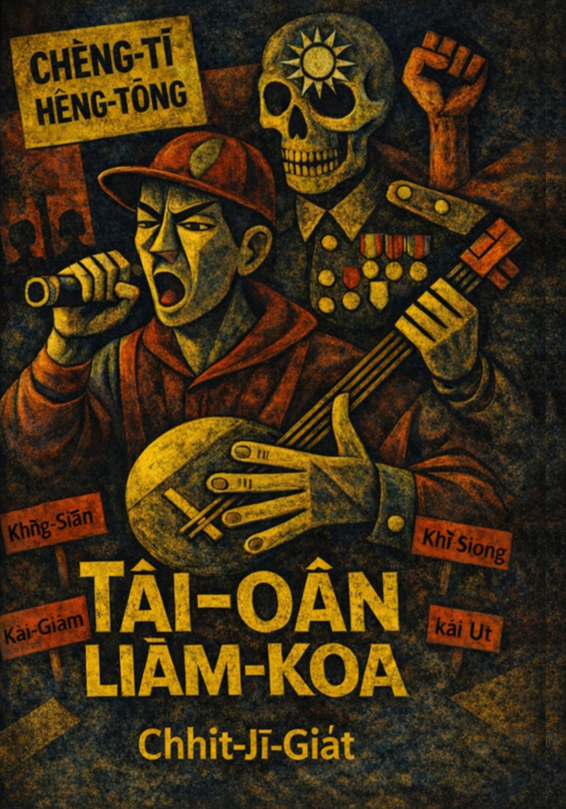
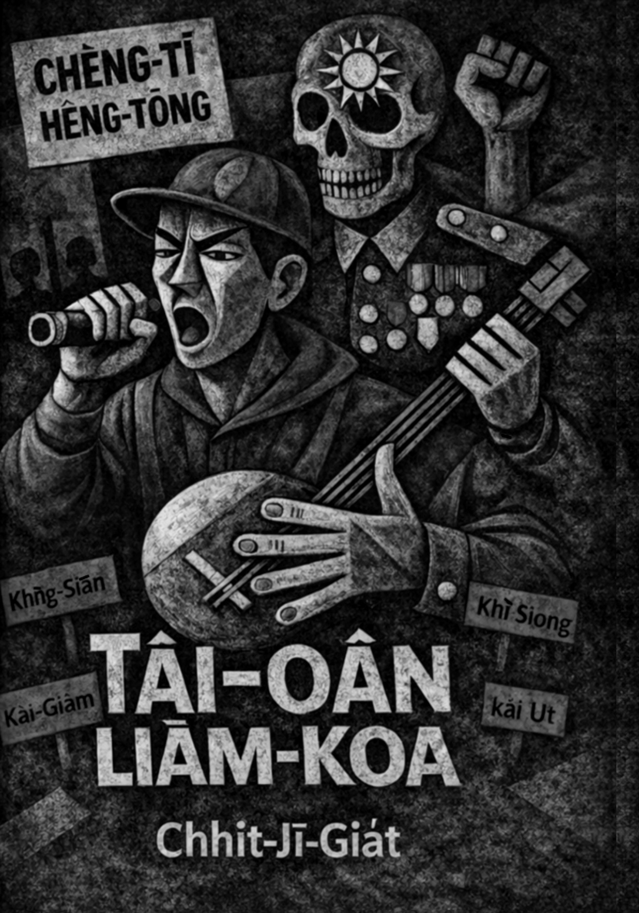
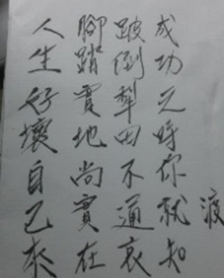
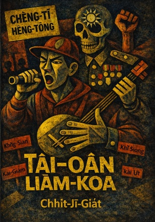

*Tō͘ Sìn-Liông (構圖) × AI 協作(顏色及修飾)
序 ——台灣RAP lāng-chhùi-chi̍h 6
無良教育歌 8
高雄地下爆炸歌 16
上班陷眠歌 21
火車驚魂記 25
上班辛勞歌 28
阿財乞食歌 31
2020最新勸世歌 35
慢騎歌 42
青紅燈之戀 46
阿財艱苦記事 50
胡蠅掠狂歌 54
2016總統選舉 60
阿財大戰蠓仔歌——短篇 63
阿文連回歌 第一集 69
阿文連回歌 第二集 74
阿文連回歌 第三集 79
芥石落地獄歌 84
痟貪落獄歌 88
掠交替歌 92
陷眠落屎歌 97
星際殖民哀歌 大戰 103
星際殖民哀歌 起因 107
星際殖民哀歌 決戰 112
悾子的歌 116
上新國際歌 121
千狄狼芥西瓜歌 129
西港出代誌 135
八百葬士 140
心靈環保雜唸歌 144
2025大罷免起鼓歌 150
七字仔劇本 168
愛情研究院/補習班（60mins） 168
主題：愛情研究院/補習班（60mins） 169
台語相關推薦文 177
民間唸歌—台語文學ê底蒂 178
Hǒng拍交落ê詩人 180
1日1 kho͘銀救台語 182
台語人ài知ê歷史 184
其它記錄 186
服貿318事件 187
反核能記錄 198
歷史記錄 210
學台文 219
地誌 231
自然風景 242
𬦰山 251
食食 257
上班記事 267
情愛 296
政治烏白來 346
人生佮趣味 416
後序——M̄-thang kā gún chī-iāng 514
目錄 寫作日期/發表刊物 516
序 ——台灣RAP lāng-chhùi-chi̍h
總算beh kā我ê七字仔整理1下ah。Ǹg望che是1个起頭，thang好回顧。
Kap進前「趕出冊」ê目標之一仝款，koh無出應該bē出ah。Koh再來想gún佮意七字仔chit款文類，極加是che對我來講m̄是小說、詩kap散文che文類才有--ê，1種特有情感。
Che內容有影gia̍t，激五仁，á是鬥喙kó͘，練痟話。非常有個人ê「意識」，che我lóng承認。
總是，m̄-thang來講文學a̍h無，對gún來講che m̄-nā是家己學習台語ê過程，koh是對che唸謠、褒歌、唸歌che傳統真真正正去熟似。
Che七字仔ê內容mā是che過程中，hoah出1寡憤怒ê聲句，當然無需要掩khàm，hiau 1寡文字ê尻川花。
內容kap著作時間lóng差不多集中tī 2014-2022 ê社會事件，透過七字仔ê方式來呈現，算是chhan-chhiūⁿ過去廟口埕上新新聞hòng-sàng ê功能，kap記錄歷史。
其中〈星際殖民歌〉算是tiau-kang ê創作，加入科幻，歷史虛構，m̄是本人han-bān無法度寫chē chit款內容。是時間，穡頭chē ná山，社會亂糟糟，gún chiah寫hia phì-siùⁿ lán土地ê人，無，chit款虛構小說題材gún真佮意。
Tio̍h，有影白目，koh kāng人chī-iāng。民間ê唸歌、口白，直接，che mā是gún佮意ê in-toaⁿ。Chit款講無文學性，soah tiau-ì-kò͘放伊去死，án-ne kám tio̍h？A̍h m̄ to平素時講話lóng足文學？有影？
Mài講出冊m̄出冊，che冊pháiⁿ賣。今，印1000本，hoān-sè 10冬koh lóng賣袂了，何況che傳統文類？
出冊m̄是獨獨1種產品買賣，koh較是1種「言論自由」，「無認同」kap「認同」ê宣告。終其尾，siáng寫--ê lóng無重要，有人ē讀，nā koh有流傳he有影幸運koh幸福。
Gún的確ê歹勢，驚人背後五四三，總是現此時ê社會，無著家己hoah聲，tō變é-káu ah，mā無自由。Che算是另類ê社會運動。
Stoicism kap「觀自在」beh sêng beh sêng。是講「煩惱」ê事項有小寡層次oh得póe-hōe。以gún來講，煩惱社會事是1種，煩惱出冊koh是1種，今，輕心輕身，kā外在ê觀點放hō͘去，注心做家己tio̍h是自由、自在。親像走馬（marathon）ê人tiāⁿ nauh ê 1句話 ⸺到終點，tō ē知。
台灣國寶周定邦兄，ùi 40歲開始學唸歌，到今，創作lóng無斷，mā繼續出冊，tī唸歌方面koh iáu愈拚。定邦兄所寫ê七字仔阮是tòe bē著，看無車尾燈ah。
今，kā gún所寫ê七字仔khioh 1部份出冊，算是mā對che傳統，對定邦兄有sio-thīn。
Kám koh有機會koh kā其它—ê出出leh，甚至家己來唸1塊ah？Gún是m̄-káⁿ想，行出第1步tō無簡單ah。終點？Seng 1步1步穩心仔行。繼續thi̍h，繼續lāng。
2025/10/7
無良教育歌
Bô-liông kàu-io̍k koa
1.
南北二路好朋友，
嚨喉大聲共恁咻，
敢有聽見人喝救，
彼陣學生面憂憂。
1.
Lâm-pak jī lō͘ hó pêng-iú,
Nâ-âu tōa-siaⁿ kā lín hiu,
Kám ū thiaⁿ-kìⁿ lâng hoah-kiù,
Hit tīn ha̍k-seng bīn-iu-iu.
2.
殖民洗腦教育部，
毋做好人欲做奴，
是非顛倒刁意故，
講來講去為前途。
2.
Si̍t-bîn sé-náu Kàu-io̍k-pō͘,
M̄ chò hó-lâng beh chò lô͘,
Sī-hui tian-tò tiau-ì-kò͘,
Kóng lâi kóng khì ūi chiân-tô͘.
3.
較教攏是中國屎，
祖先叫啥伊安排，
黨國政府若無敗，
囝孫準備做奴才。
3.
Khah kà lóng sī Tiong-kok sái,
Chó͘-sian kiò siáⁿ i an-pâi,
Tóng-kok chèng-hú nā bô pāi,
Kiáⁿ-sun chún-pī chò lô͘-châi.
4.
你我公媽隨人祀，
毋通牽對咱遮來，
一爿一國無底代，
歷史證據通人知。
4.
Lí góa kong má sûi lâng chhāi,
M̄-thang khan tùi lán chia lâi,
Chi̍t pêng chi̍t kok bô tī-tāi,
Le̍k-sú chèng-kì thong lâng chai.
5.
部長惡質硬欲捒，
叫咱囝孫就愛讀，
思想控制無頭殼，
雙手雙跤攏總縛。
5.
Pō͘-tióⁿ ok-chit ngē beh sak,
Kiò lán kiáⁿ-sun tō ài tha̍k,
Su-sióng khòng-chè bô thâu-khak,
Siang chhiú siang kha lóng chóng pa̍k.
6.
彼是人民的靠岸，
到今看甲真畏寒，
跤尾手冷咇咇掣，
是欲按怎來反盤？
6.
He sī jîn-bîn e khò-hōaⁿ,
Kàu taⁿ khòaⁿ kah chin ùi-kôaⁿ,
Kha bóe chhiú léng phi̍h-phi̍h-chhoah,
Sī beh án-chóaⁿ lâi péng-pôaⁿ?
7.
記者嘛逢掠起來，
實情毋敢予人知，
賊仔政府性袂改，
拆食落腹伊上愛。
7.
Kì-chiá mā hông lia̍h khí-lâi,
Si̍t-chêng m̄ káⁿ hō͘ lâng chai,
Chha̍t-á chèng-hú sèng bē kái,
Thiah chia̍h lo̍h pak i siōng ài.
8.
民主自由假若屎，
叫咱乖乖做奴才，
委屈冤枉囥腹內，
思想改造才應該。
8.
Bîn-chú chū-iû ké nā sái,
Kiò lán koai-koai chò lô͘-châi,
Úi-khut oan-óng khǹg pak-lāi,
Su-sióng kái-chō chiah eng-kai.
9.
影片傳到佇網路，
咱的學生攏食塗，
看是按怎來贊助，
向望政府天都烏。
9.
Iáⁿ-phìⁿ thoân kàu tī bāng-lō͘,
lán e ha̍k-seng lóng chia̍h tô͘,
Khòaⁿ sī án-chóaⁿ lâi chàn-chō͘,
Ǹg-bāng chèng-hú thiⁿ to o͘.
10.
網路頂懸來討論，
相招教部來出巡，
守護學生毋甘睏，
為咱台灣好囝孫。
10.
Bāng-lō͘ téng hiân lâi thó-lūn,
Sio chio Kàu-pō͘ lâi chhut-sûn,
Siú-hō͘ ha̍k-seng m̄-kam khùn,
Ūi lán Tâi-oân hó kiáⁿ-sun.
11.
王仔曉波真哭爸，
講是意識的問題，
牽拖阿婆油炸粿，
袂輸痟狗吹狗螺。
11.
Ông-á Hiáu-pho chin khàu-pē,
Kóng sī ì-sek ê būn-tê,
Khan-thoa a-pô iû-chia̍h-kóe
Bē-su siáu-káu chhoe káu-lê.
12.
伊的心肝有夠硬，
台灣就愛做阿西，
欲姦欲拍閣欲提，
世界無人遮連回。
12.
I ê sim-koaⁿ ū kàu ngē,
Tâi-oân to ài chò a-se,
Beh kàn beh phah koh beh the̍h,
Sè-kài bô lâng chiah liân-hôe.
13.
政客佬仔𠢕算計，
吳仔思華死人皮，
管恁按怎譙佮詈，
猶原逐工好睏暝。
13.
Chèng-kheh láu-á gâu sǹg-kè,
Gô͘ á Su-hôa sí-lâng phôe,
Koán lin án-chóaⁿ kiāu kap le,
Iû-goân ta̍k kang hó khùn mê.
14.
學生代表林冠華，
青春少年用命跋，
欲將烏箱摃予破，
犧牲家己受拖磨。
14.
Ha̍k-seng tāi-piáu Lîm Koan-Hôa,
Chheng-chhun siàu-liân ēng miā poa̍h,
Beh chiong o͘ siuⁿ kòng ho͘ phòa,
Hi-seng ka-kī siū thoa-bôa.
15.
若是閣有一口氣，
堅持原則有是非，
通人聽甲心齊碎，
想欲做伙伴相隨。
15.
Nā-sī koh ū chi̍t kháu khùi,
Kian-chhî goân-chek ū sū-hui,
Thong lâng thiaⁿ kah sim chiâu chhùi,
Siūⁿ beh chò-hóe phōaⁿ sio-sûi.
16.
無恥政客真奸鬼，
白紙𪐞烏講食虧，
一支喙舌直直屁，
當作學生大摃槌。
16.
Bô thí chèng-kheh chin kan-kúi,
Pe̍h chóa tò͘ o͘ kóng chia̍h-khui,
Chi̍t ki chhùi chi̍h ti̍t-ti̍t phùi,
Tòng-chò ha̍k-seng tōa-kòng-thûi.
17.
冠華按呢做伊去，
通人掠狂哮袂離，
激烈抗爭隨時起，
大人囝仔攏知機。
17.
Koan-hôa án-ne chò i khì,
Thong lâng lia̍h kông háu bē lī,
Kek-lia̍t khòng-cheng sûi-sî khí,
Tōa-lâng gín-á lóng chai-ki.
18.
虛情假仙賊頭面，
張伊袂爽轉目仁，
予人掠包無承認，
卸世卸眾人看輕。
18.
Hi-chêng ké sian chha̍t-thâu bīn,
Tiang i bē sóng choán ba̍k jîn,
Hō͘ lâng lia̍h-pau bô sêng-jīn,
Sià-sì-sià-chèng lâng khòaⁿ-khin.
19.
學生無奈唱悲歌，
部長拗蠻若鱸鰻，
啥人害怹外口蹛，
婊囝叫做吳思華。
19.
Ha̍k-seng bû-nāi chhiùⁿ pi-koa,
Pō͘ -tiúⁿ áu-bân ná lô͘-môa,
Siáⁿ-lâng hāi in gōa-kháu tòa,
Piáu-kiáⁿ kiò-chò Gô͘ Su-Hôa.
20.
學生理路有影好，
思華知影疶屎膏，
毋敢會議驚會倒，
串揣阿九賴賴趖。
20.
Ha̍k-seng lí-lō͘ ū-iáⁿ hó,
Su-Hôa chai-iáⁿ chhoah sái ko,
M̄ káⁿ hōe-gī kiaⁿ ē tò,
Chhoàn chhōe A-káu lōa-lōa-sô.
21.
飼你袂輸食了米，
阿九吩咐愛堅持，
升官名單攏有你，
放心亂改免僥疑。
21.
Chhī lí bē-su chia̍h liáu bí,
A-káu hoan-hù ài kian-chhî,
Seng-koaⁿ miâ-toaⁿ lóng ū lí,
Hòng-sim loān kái bián giâu-gî.
22.
學生堅持無欲散，
要求委員的名單，
歷史真相攏總換，
思想改造會畏寒。
22.
Ha̍k-seng kian-chhî bô beh sòaⁿ,
Iau-kiû úi-goân ê miâ-toaⁿ,
Le̍k-sú chin-siòng lóng-chóng ōaⁿ,
Su-sióng kái-chō ē ùi-kôaⁿ.
23.
名單機密有限制，
若是公開有問題，
毋管按怎共伊罵，
攏是絕招激蠻皮。
23.
Miâ-toaⁿ ki-bi̍t ū hān-chè,
Nā sī kong khai ū būn tê,
M̄-koán án-chóaⁿ kā i mē,
Lóng sī cho̍at-chiau kek bân-phôe.
24.
冊本干焦改幾字，
絕對毋是共人欺，
毋管啥人無滿意，
多謝指教莫插伊。
24.
Chheh-pún kan-taⁿ kái kúi jī,
Choa̍t-tùi m̄ sī kā lâng khi,
M̄-koán siáⁿ-lâng bô boán-ì,
To-siā chí-kàu mài chhah i.
25.
會熱袂熱差一字，
意思無仝著知機，
欺騙社會若放屁，
這款道理世界奇。
25.
Ē jia̍t bē jia̍t chha chi̍t jī,
Ì-sù bô kâng tio̍h chai-ki,
Khi-phiàn siā-hōe ná pàng-phùi,
Chit khoán tō-lí sè-kài kî.
26.
面皮厚厚擋誠久，
奸鬼手段老師父，
問伊啥吶烏白舞，
講話跳針直直驢。
26.
Bīn-phôe kāu kāu tòng chiâⁿ kú,
Kan-kúi chhiú-tōaⁿ lāu sai-hū,
Mn̄g i siâⁿ-ná[1] o͘-pe̍h bú,
（註1：Ūi-siáⁿ-mi̍h ê ì-sù.）
Kóng-ōe thiàu-chiam ti̍t-ti̍t lû.
27.
王仔曉波做主委，
支那糞埽攪規堆，
痟狗看人就仝吠，
學生聽了四淋垂。
27.
Ông á Hiáu-pho chò chú-úi,
Chi-ná pùn-sò͘ kiáu kui tui,
Siáu-káu khòaⁿ lâng tō kâng pūi,
Ha̍k-seng thiaⁿ liáu sì-lâm-sôe.
28.
叫咱恬恬攏莫吵，
支那歷史加減加，
管恁袂爽怎樣罵，
堅心繼續扶𡳞脬。
28.
Kiò lán tiām-tiām lóng mài chhá,
Chi-ná le̍k-sú ke-kiám ka,
Koán lín bē sóng cháiⁿ-iūⁿ mā,
Kian-sim kè-sio̍k phô͘ lān-pha.
29.
專業袂合無干礙，
一切作怹去主裁，
講是逐家中國派，
台灣歷史毋免知。
29.
Choan-gia̍p bē ha̍p bô kan-gāi,
It-chhè chò in khì chú-chhâi,
Kóng sī tāi-ke Tiong-kok phài,
Tâi-oân le̍k-sú m̄-bián chai.
30.
乞食兵仔歹做伙，
癩𰣻垃圾愛烏西，
思想改造欲統制，
禁止母語第一个。
30.
Khit-chia̍h peng-á pháiⁿ chò-hóe,
Thài-ko lap-sap ài o͘-se,
Su-sióng kái-chō beh thóng-chè,
Kìm-chí bó-gí tē it ê.
31.
光復名義佔人地，
二八事件誠連回，
死萬偌人夭壽濟，
掩蓋事實無講這。
31.
Kong-ho̍k bêng-gī chiàm lâng tē,
Jī-pat sū-kiāⁿ chiâⁿ liân-hôe,
Sí bān gōa lâng iau-siū chē,
Am-khàm sū-si̍t bô kóng che.
32.
這種代誌攏無寫，
佔人家伙做大爺，
法院怹開保狗命，
眾人共𧮙姦伊娘。
32.
Chit chióng tāi-chì lóng bô siá,
Chiàm lâng ke-hóe chò tōa-iâ,
Hoat-īⁿ in khui pó káu miā,
Chèng-lâng kā chhoh kàn-i-niâ.
33.
講到彼暗的情勢，
衝入教部無幾个，
要求新本都愛退，
毒害囝孫出問題。
33.
Kóng kàu hit àm ê chêng-sè,
Chhiong-ji̍p Kà-pō͘ bô kúi ê,
Iau-kiû sin pún to ài thè,
To̍k-hāi kiáⁿ-sun chhut būn-tê.
34.
規个過程通公開，
毋通痟想濫糝來，
橫霸獨裁一定敗，
臭賤漚步人人知。
34.
Kui ê kòe-thêng thang kong-khai,
M̄-thang siáu siūⁿ lām-sám lâi,
Hoâiⁿ-pà to̍k-chhâi it-tēng pāi,
Chhàu-chiān àu-pō͘ lâng-lâng chai.
35.
誰知警察無是非，
袂輸親像拄著鬼，
看見學生直直推，
台灣囝仔真克虧。
35.
Siáⁿ chai kéng-chhat bô sī-hui,
Bē-su chhin-chhiūⁿ tú tio̍h kúi,
Khòaⁿ-kìⁿ ha̍k-seng ti̍t-ti̍t thui,
Tâi-oân kiáⁿ á chin khek-khui.
36.
學生理性攏真乖，
警察心肝有影橫，
硬拖硬𨂾腫歪歪，
攏總掠去籠仔關。
36.
Ha̍k-seng lí-sèng lóng chin koai,
Kéng-chhat sim-koaⁿ ū-iáⁿ hoâiⁿ,
Ngē thoa ngē làm chéng-oaiⁿ-oaiⁿ,
Lóng-chóng lia̍h khì láng á koaiⁿ.
37.
學校教官來關心，
其實心肝若烏熊，
威脅監視就愛忍，
意志消磨大海沉。
37.
Ha̍k-hāu kàu-koaⁿ lâi koan-sim,
Kî-si̍t sim-koaⁿ nā o͘-hîm,
Ui-hia̍p kàm-sī tō ài lím,
Ì-chì siau-mô͘ tōa-hái tîm.
38.
老師恬恬分隔界
白色恐怖閣再來，
目屎干焦吞腹內，
相攬相抱聲聲哀。
38.
Lāu-su tiām-tiām hun keh-kài,
Pe̍h-sek khióng-pò͘ koh chài lâi,
Ba̍k-sái kan-taⁿ thun pak-lāi,
Sio lám saⁿ phō siaⁿ siaⁿ ai.
39.
向時烏道閣來亂，
社會議論攏共漩，
精牲白狗毋是款，
咱的國家叫台灣。
39.
Hiòng-sî o͘-tō koh lâi loān,
Siā-hōe gī-lūn lóng kiōng soān,
Cheng-seⁿ pe̍h-káu m̄-sī khoán,
Lán ê kok-ka kiò Tâi-oân.
40.
歌仔暫時寫幾逝，
閣唸抑是無奈何，
毋願結果來講破，
看見學生受折磨。
40.
Koa-á chiām-sî siá kúi chōa,
Koh liām ia̍h-sī bô-ta-ôa,
M̄-goān kiat-kó lâi kóng phòa,
Khòaⁿ-kìⁿ ha̍k-seng siū chiat-bôa.
高雄地下爆炸歌
Ko-hiông tē-hā po̍k-chà koa
1.
八月一號的子時，
街路偷偷佈死期，
未赴通知伊公司，
誰知隨爆命無去。
1.
Peh goe̍h it hō ê chú-sî,
Ke-lō͘ thau-thau pò͘ sí-kî,
Bōe-hù thong-ti i kong-si,
Siáng chai sûi po̍k miā bô--khì.
2.
無良商人毋認錯，
硬喋牽拖喙全波，
證據現在莫囉嗦，
天公有目罪難逃。
2.
Bô liông siong-jîn m̄ jīn-chhò,
Ngē thi̍h khan-thoa chhùi choân pho,
Chèng-kì hiān chāi mài lô-so,
Thiⁿ-kong ū ba̍k chōe lân tô.
3.
逐工新聞烏暗眩，
烏白亂報使人凝，
無講證據崁事實，
請問仙人啥是真？
3.
Ta̍k kang sin-bûn o͘-àm-hîn,
O͘-pe̍h loān pò sù lâng gêng,
Bô kóng chèng-kì khàm sū-si̍t,
Chhiáⁿ mn̄g sian-jîn siáⁿ sī chin?
4.
二四冬前埋暗管，
啥人知伊烏白創，
過去穢涗現行蹤，
二八人命來死亡。
4.
Jī-sì tang chêng tâi àm-kóng,
siáⁿ lâng chai i o͘-pe̍h chhòng,
Kòe-khì òe-sòe hiàn hêng-chong,
Jī-pat jîn-bēng lâi sí-bông.
5.
為著趁錢誠可惡，
當初早就良心無，
害人無命厝齊倒，
咒怨上天無奈何。
5.
Ūi-tio̍h thàn chîⁿ chiâⁿ khó-ò͘ⁿ,
Tong-chho͘ chá chiū liông-sim bô,
Hāi lâng bô miā chhù chiâu tò,
Chó͘ oàn siōng-thian bô-nāi-hô.
6.
中資新聞上𠢕舞，
逐工無閒編故事，
講啥道德啥島嶼，
管伊社會欲順序。
6.
Tiong-chu sin-bûn siōng gâu bú,
Ta̍k kang bôêng pian kò͘-sū,
Kóng siáⁿ tō-tek siáⁿ tó-sū,
Koán i siā-hōe beh sūn-sū.
7.
新聞自由來控制，
真真假假攏伊兮，
洗腦工課上蓋猛，
擾亂社會眾人迷。
7.
Sin-bûn chū-iû lâi khòng-chè,
Chin chin ké ké lóng i--ê,
Sé-náu khang-khòe siāng-kà mé,
Jiáu-loān siā-hōe chiòng-lâng bê.
8.
別人囡仔較重要，
高雄爆炸家己撨，
民眾捐錢戇大頭，
毋知啥人擋會牢。
8.
pa̍t-lâng gín-á khah tiōng-iàu,
Ko-hiông po̍k-chà ka-kī chhiâu,
Bîn-chiòng koan chîⁿ gōng tōa-thâu,
M̄ chai siáⁿ-lâng tòng ē tiâu.
9.
看怹官員誠㤉潲，
除了抗議𧮙姦撟，
年頂選舉莫予牢，
若無三頓腹肚枵。
9.
Khòaⁿ in koaⁿ-oân chiâⁿ gê-siâu,
Tû-liáu khòng-gī chhoh-kàn-kiāu,
Nî téng soán-kí mài hō͘ tiâu,
Nā bô saⁿ tǹg pak-tó͘ iau.
10.
無良廠商早準備，
國民黨證囥法院，
管伊眾人來觸纏，
人命嘛無偌濟錢。
10.
Bô liông chhiúⁿ-siong chá chún-pī,
Kok-bîn-tóng chèng khǹg hoat-īⁿ,
Koán i chèng-lâng lâi tak-tîⁿ,
Lâng-miā mā bô gōa chē chîⁿ.
11.
過去管路蓋凊彩，
有錢通趁上實在，
誰知即時來受災，
無辜消防哭悲哀。
11.
Kòe-khì kóng-lō͘ khàm chhìn-chhái,
Ū chîⁿ thang thàn siōng si̍t-chāi,
Siáng chai chek-sî lâi siū chai,
Bû-ko͘ siau-hông khàu pi-ai.
12.
為著狂欲來救災，
毋知塗跤炸彈埋，
性命雄雄入火海，
某囝兩隔死毋知。
12.
Ūi-tio̍h kông beh lâi kiù chai,
M̄-chai thô͘-kha chà-tôaⁿ tâi,
Sèng-miā hiông-hiông ji̍p hóe-hái,
Bó͘-kiáⁿ lióng keh sí m̄ chai.
13.
消防人員可憐代，
全國頭尾通人知，
十八功夫好厲害，
穡頭艱苦煞無解。
13.
Siau-hông jîn-oân khó-liân tāi,
Choân-kok thâu-bóe thong lâng chai,
Cha̍p-peh kang-hu hó lī-hāi,
Si̍t-thâu kan-khó͘ soah bô kái.
14.
家己權力莫凊彩，
奴役制度愛來改，
緊緊同齊鬥舖排，
成立工會為將來。
14.
Ka-kī koân-le̍k bo̍h chhìn-chhái,
Lô͘-e̍k chè-tō͘ ài lâi kái,
Kín-kín tang-chê tàu pho͘-pâi,
Sêng-li̍p kang-hōe ūi chiong-lâi.
15.
消防救難你看覓，
全國英雄攏齊來，
無人指揮做戇呆，
若是核災死毋知。
15.
Siau-hông kiù-lān lí khòaⁿ māi,
Choân-kok eng-hiông lóng chê lâi,
Bô lâng chí-hui chò gōng-tai,
Nā sī he̍k-chai sí m̄ chai.
16.
彼時市長白賊義，
應允埋管來趁錢，
誰知經過遮濟年，
害人生命骨肉離。
16.
Hit sî chhī-tiúⁿ pe̍h-chha̍t gī,
Èng-ún tâi kóng lâi thàn chîⁿ,
Siáng chai keng-kòe cha̍h chē nî,
Hāi lâng sèng-miā kut-jio̍k lī.
17.
閒閒落南拍廣告，
若搵豆油烏趖趖，
災民看甲風火𤏸，
大聲救命聽著無？
17.
Êng-êng lo̍h-lâm phah kóng-kò,
Ná ùn tāu-iû o͘-sô-sô,
Chai-bîn khòaⁿ kah hong-hóe-to̍h,
Tōa siaⁿ kiù-miā thiaⁿ tio̍h --bô?
18.
欲來毋來按怎好，
災民姦撟欲如何，
耳空塞咧莫哩囉，
抑是緊走入車座。
18.
Beh lâi m̄ lâi án-chóaⁿ hó,
Chai bîn kàn-kiāu beh jû-hô,
Hīⁿ-khang that leh mài li-lo,
Á-sī kín cháu ji̍p chhia chō.
19.
家己無先去照鏡，
批評別人傷大聲，
敢講伊是較捙颺，
逐家心裡攏知影。
19.
Ka-kī bô seng khì chiò-kiàⁿ,
Phoe-phêng pa̍t-lâng siong tōa-siaⁿ,
Kám kóng i sī khah chhia iāⁿ,
Ta̍k-ke sim ni̍h lóng chai-iáⁿ.
20.
指揮救災亂操操，
若是核災按怎走，
政治耍弄雙棚鬥，
管伊人民吊樹頭。
20.
Chí-hui kiù chai loān-chhau-chhau,
Nā sī he̍k-chai án-chóaⁿ cháu,
Chèng-tī sńg-lāng siang pêⁿ tàu,
Koán i jîn-bîn tiàu chhiū-thâu.
21.
若無燒著伊的毛，
管汰人兜咧落雨，
百姓無知激怐怐，
家己衰潲塗塗塗。
21.
Nā bô sio tio̍h i ê mo͘,
Koán-thài lâng tau leh lo̍h-hō͘,
Peh-sèⁿ bû-ti kek-khò͘-khò͘,
Ka-kī soe-siâu tô͘-tô͘-tô͘.
上班陷眠歌
Siōng-pan hām-bîn koa
1
今仔上班極稀奇，
頭家無來其阮欺，
聽講昨暝身體虛，
食著中國垃圾魚。
1.
Kin-á siōng-pan ke̍k hi-kî,
Thâu-ke bô lâi kî gún khi,
Thiaⁿ kóng cha mê sin-thé hi,
Chia̍h tio̍h Tiong-kok lah-sap hî.
2.
毋是阮人無情義，
彼是人講才知機，
身體愛顧食細膩，
拄著阿共據在伊。
2.
M̄-sī goán lâng bô chêng-gī,
He sī lâng kóng chiah chai ki,
Sin-thé ài kò͘ chia̍h sè-jī,
Tú-tio̍h a-kiōng kì-chāi i.
3.
痟貪就會害自己，
欲食進前愛注意，
莫想媽祖會保庇，
平時有唸聖歌詩。
3.
Siáu-tham tō ē hāi ka-kī,
Beh chia̍h chìn-chêng ài chù-ì,
Mài siūⁿ Má-chó͘ ē pó-pì,
Pêng-sî ū liām sèng-koa-si.
4.
聽人講起心驚驚，
烏心食品歹探聽，
電視新聞無出聲，
二粒腰子佮伊拚。
4.
Thiaⁿ lâng kóng khí sim kiaⁿ kiaⁿ,
O͘-sim si̍t-phín pháiⁿ thàm-thiaⁿ,
Tiān-sī sin-bûn bô chhut siaⁿ,
Nn̄g lia̍p io-chí kap i piàⁿ.
5.
緊緊送伊去病院，
毋驚欲開偌濟錢，
拜託先生先共醫，
身軀大筒十偌支。
5.
Kín kín sàng i khì pēⁿ-īⁿ,
M̄ kiaⁿ beh khai jōa chē chîⁿ,
Pài-thok sian-siⁿ seng ka i,
Seng-khu tōa-tâng cha̍p jōa ki.
6.
三更時陣著驚醒，
雄雄傱過掃帚星，
七爺八爺來相見，
手枷跤鐐欲來纏。
6.
Saⁿ-keⁿ sî-chūn tio̍h kiaⁿ-chhíⁿ,
Hiông-hiông chông kòe sàu-chhiú- chhiⁿ,
Chhit-iâ peh-iâ lâi sio-kìⁿ,
Chhiú kê kha liâu beh lâi tîⁿ.
7.
夭壽險險命收去，
醫生提來AED，
電甲全身臭焦味，
三魂七魄閣有佇。
7.
Iau-siū hiám-hiám miā siu khì,
I-seng the̍h lâi AED,
Tiān kah choân-sin chhàu-ta-bī,
Saⁿ hûn chhit phek koh ū tī.
8.
橫直閒閒無代誌，
來去餐廳看電視，
免像平日便所覕，
有錢通領好安居。
8.
Hoâiⁿ-ti̍t êng-êng bô tāi-chì,
Lâi-khì chhan-thiaⁿ khòaⁿ tiān-sī,
Bián chiūⁿ pêng-ji̍t piān-só͘ bih,
Ū chîⁿ thang niá hó an-ki.
9.
本底就咧愛睏面，
誰知一時烏暗眩，
夢起逢縛偷割腎，
情境有影成實真。
9.
Pún-té tō leh ài-khùn-bīn,
Siáng chai chi̍t sî o͘-àm-hîn,
Bāng khí hông pa̍k thau koah sīn,
Chêng-kéng ū-iáⁿ chiâⁿ-si̍t chin.
10.
目睭擘金chín今害，
青狂緊張落下頦，
予人掠包實無奈，
無愛做彼乖奴才。
10.
Ba̍k-chiu peh kim chín taⁿ hāi,
Chheⁿ-kông kín-tiuⁿ lo̍h ē-hâi,
Hō͘ lâng lia̍h-pau si̍t bû-nāi,
Bô ài chò he koai lô͘-châi.
11.
頭家好好面前𥩴，
現陣幾點知毋知，
閣問佇遮啥底代，
啥物因端無路來。
11.
Thâu-ke hóhó bīn-chêng chhāi,
Hiān-chūn kúi tiám chai m̄ chai,
Koh mn̄g tī chiah sáⁿ tī-tāi,
Siáⁿ-mi̍h in-toaⁿ bô lō͘ lâi.
12.
頭家面色極䆀看，
害阮心頭起畏寒，
袂輸身後有誰伴，
敢是已經欲出山？
12.
Thâu-ke bīn-sek ke̍k bái khòaⁿ,
Hāi gún sim-thâu khí ùi-kôaⁿ,
Bē-su sin-āu ū siáng phōaⁿ,
Káⁿ sī í-keng beh chhut-soaⁿ?
13.
僥倖做這夢中夢，
親像地動山也崩，
歡歡喜喜挖金空，
誰知拄著虎頭蜂。
13.
Hiau-hēng chò che bāng tiong bāng,
Chhan- chhiōⁿ tē-tāng soaⁿ iā pang,
Hoaⁿ-hoaⁿ- hí-hí ó͘ kim-khang,
Siáng chai tú-tio̍h hó͘-thâu-phang.
14.
上班陷眠人人會，
無人親像我遮衰，
有影真正較歹勢，
絕對無閣後一回。
14.
Siōng-pan hâm-bîn lâng lâng ē,
Bô lâng chhan-chhiōⁿ góa chiah soe,
Ū-iáⁿ chin-chiàⁿ khah pháiⁿ-sè,
Choa̍t-tùi bô koh āu chi̍t hôe.
火車驚魂記
Hóe-chhia Keng-hûn Kì
1.
五點亂鐘仔佇咧吵，
透早精神跤閣麻，
洗面漉喙止喙焦，
青狂出門趕火車。
1.
Gō͘-tiám loan-cheng-á tī leh chhá,
Thàu-chá cheng-sîn kha koh bâ,
Sé-bīn lo̍k-chhui chí-chhùi-ta,
Chheⁿ-kông chhut-mn̂g kóaⁿ hóe-chhia.
2.
車箱的人插插插，
台灣國親攏𠢕早，
相挨相𤲍貼貼貼，
物件毋通烏白捎。
2.
Chhia-siuⁿ ê lâng chhah-chhah-chhah,
Tâi-oân kok-chhin lóng gâu-chá,
Sio e sio kheh tah-tah-tah,
Mi̍h-kiāⁿ m̄-thang o͘-pe̍h sa.
3.
隔壁一个查囡仔，
一圈大肚欲做媽，
眾人讓位請坐駕，
雄雄出喙共人罵。
3.
Keh-piah chi̍t ê chǎ-gín-á,
Chi̍t khian tōa tō͘ beh chò má,
Chèng-lâng niū ūi chhiáⁿ chē-kà,
Hiông-hiông chhut chhùi kā lâng mā.
4.
目睭糊屎用藥洗，
膨肚短命死青盲，
今年祖媽十八歲，
啥人比我較美麗。
4.
Ba̍k-chiu ko sái ēng io̍h-sé,
Phòng-tō͘ té-miā sí chheⁿ-mê,
Kin-nî chó͘-má cha̍p-peh hòe,
Siáⁿ lâng pí góa khah bí-lē.
5.
惹雄惹虎惹著赤查某，
這个袂輸阮阿姑，
初一十五欲食素，
今日才來行這途！
5.
Jiá hêng jiá hó͘ jiá-tio̍h chhiah-chhâ-bó͘,
Chit ê bē-su goán a-ko͘,
Chhe-it cha̍p-gō͘ beh chia̍h sò͘,
Kiăⁿ-ji̍t chiah lâi kiâⁿ chit tô͘!
6.
小姐肚臍毋著崁，
若是感著毋就慘，
講你有身有較譀，
驚你摔著心毋甘。
6.
Sió-chiá tō͘-châi m̄-tio̍h khàm,
Nā sī kám tio̍h m̄ tō chhám,
Kóng lí ū-sin ū khah hàm,
Kiaⁿ lí siak tio̍h sim m̄-kam.
7.
你是好喙少年家，
拄才激心當笑詼，
予你講甲會歹勢，
害阮心內彈琵琶。
7.
Lí sī hó chhùi siàu-liân-ke,
Tú-chiah kek sim tòng chhiò-khoe,
Hō͘ lí kóng kah ē pháiⁿ-sè,
Hāi goán sim lāi tôaⁿ pî-pê.
8.
皮幼聲柔面肉白，
將阮心肝迷若迷，
咱是有緣來做伙，
等下落車來啉茶。
8.
Phôe iù siaⁿ jiû bīn bah pe̍h,
Chiong goán sim-koaⁿ bê ā bê,
Lán sī ū iân lâi chò-hóe,
Tán--ē lo̍h-chhia lâi lim tê.
9.
我咧跤手一時軟，
尻脊凊汗哪結霜，
毋知九九合數按怎算，
路途若會遮爾長。
9.
Góa leh kha chhiú chi̍t sî nńg,
Kha-chiah chhìn-kōaⁿ ná kiat sng,
M̄ chai kiú-kiú-ha̍p-sò͘ án-chóaⁿ sǹg,
Lō͘-tô͘ nā ē chiah-nih tn̂g.
10.
彼號肚臍的空縫，
走入一隻躼跤蠓，
鑽來鑽去直直弄，
聽伊大聲喝救人。
10.
Hit-lō tō͘-châi ê khang-phāng,
Cháu-ji̍p chi̍t chiah lò-kha-báng,
Chǹg lâi chǹg khì ti̍t-ti̍t lāng,
Thiaⁿ i tōa-siaⁿ hoah kiù lâng.
11.
大掔腹肚有夠痛，
眾人聽甲心驚惶，
毋知敢是欲生囝，
請問病院位佗行？
11.
Tōa khian pak-tó͘ ū kàu thiàⁿ,
Chèng-lâng thiaⁿ kah sim kiaⁿ-hiâⁿ,
M̄ chai kám sī beh seⁿ-kiáⁿ,
Chhiáⁿ mn̄g pēⁿ-īⁿ ùi toh kiâⁿ?
12.
拜託車長緊停車，
看欲吊筒也注射，
揣伊貼心做阿爹，
予伊較緊做阿娘。
12.
Pài-thok chhia-tiúⁿ kín thêng chhia,
Khòaⁿ beh tiàu tâng iā chù-siā,
Hōe i tah-sim chò a-tia,
Hō͘ i khah kín chò a-niâ.
上班辛勞歌
Siōng-pan sin-lô koa
1.
透早火車趕袂赴，
上班上甲咧盹龜，
夢起我猶閣佇厝，
翹跤咧做大丈夫。
1.
Thàu-chá hóe-chhia kóaⁿ bē hù,
Siōng-pan siōng kah leh tuh-ku,
Bāng khí góa iáu koh tī chhù,
Khiàu-kha leh chò tāi-tiōng-hu.
2.
桌頂早起幾若項，
牛肉清湯誠清芳，
芥藍仔塞喙齒縫，
肉燥飯米補喙空。
2.
Toh-téng chá-khí kúi nā hāng,
Gû-bah chheng-thng chiâⁿ chheng-phang,
Kè-nâ á that chhùi-khí phāng,
Bah-sò pn̄g bí pó͘ chhùi khang.
3.
食予飽飽通做工，
攢便氣力好出帆，
一百有找閣有送，
加卵免錢攏鬥雙。
3.
Chia̍h hō͘ pá-pá thang chò-kang,
Chhoân piān khùi-la̍t hó chhut-phâng,
Chi̍t-pah ū chāu koh ū sàng,
Ka nn̄g bián chîⁿ lóng tàu siang.
4.
誰知雄雄大地動，
遠遠一个媽媽桑，
搝阮作陣來開講，
共阮拖入彼間房。
4.
Siáng chai hiông-hiông tōa tē-tāng,
Hn̄g-hn̄g chi̍t ê ma-ma-sàng,
Khiú goán chòe-tīn lâi khai-káng,
Kā goán thoa ji̍p hit keng pâng.
5.
我驚一下食袂消，
毋捌看過遐爾嬈，
伊閣直問要不要，
只好決心展絕招。
5.
Góa kiaⁿ chi̍t-ē chia̍h bē siau,
M̄ bat khòaⁿ kòe hiah-nih hiâu,
I koh ti̍t mn̄g iàu-pû-iàu,
Chí-hó koat-sim tián cho̍at-chiau.
6.
耳空邊仔niauh-niauh叫，
身軀共我直直搖，
敢是叫我來放尿？
欲睏棉被蓋予燒。
6.
Hīⁿ-khang piⁿ-á niauh-niauh kiò,
Seng-khu kā góa ti̍t-ti̍t-iô,
Kám sī kiò góa lâi pàng-jiō?
Beh khùn mî-phōe kah hō͘ sio.
7.
頭家目睭睨惡惡，
講我睏甲鼾鼾鼾，
有時變調齁齁齁，
鼾齁鼾齁鼾鼾鼾。
7.
Thâu-ke ba̍k-chiu gîn-òⁿ-òⁿ,
Kóng góa khùn kah kôⁿ-kôⁿ-kôⁿ,
Ū-sî piàn-tiāu hoⁿ-hoⁿ-hoⁿ,
Kôⁿ-hoⁿ kôⁿ-hoⁿ kôⁿ-kôⁿ-kôⁿ.
8.
龜神走閃才知影，
一時夢碎心驚惶，
穡頭若無按怎拚，
幼囝是欲按怎晟。
8.
Ku sîn cháu-siám chiah chai-iáⁿ,
Chi̍t sî bāng chhùi sim kiaⁿ-hiâⁿ,
Si̍t-thâu nā bô án-chóaⁿ piàⁿ,
Iù kiáⁿ sī beh án-chóaⁿ chhiâⁿ.
9.
火車走掣跋落馬，
冗早出門無問題，
暗頭上床愛控制，
才有美滿一个家。
9.
Hóe-chhia cháu chhoah poa̍h-lo̍h-bé,
Liōng chá chhut-mn̂g bô būn-tê,
Àm-thâu chiōⁿ chhn̂g ài khòng-chè,
Chiah ū bí-boán chi̍t ê ka.
10.
頭家頭家真歹勢，
予你來做戇阿西，
請我來睏有錢提，
閣愛共我蓋棉被。
10.
Thâu-ke thâu-ke chin pháiⁿ-sè,
Hō͘ lí lâi chò gōng a-se,
Chhiáⁿ góa lâi khùn ū chîⁿ the̍h,
Koh ài kā góa kah mî-phōe.
阿財乞食歌
A-châi khit-chia̍h koa
1.
各位國親聽我講，
透早出門勿趕狂，
平時毋通定激戇，
做人講話勿膨風。
1.
Kok-ūi kok-chhin thiaⁿ góa kóng,
Thàu-chá chhut-mn̂g mài kóaⁿ- kông,
Pêng-sî m̄-thang tiāⁿ kek gōng,
Chò-lâng kóng-ōe mài phòng-hong.
2.
遮的話頭著愛信，
這件代誌是有真，
毋是我來烏白品，
耐心聽我講原因。
2.
Chia ê ōe-thâu tio̍h ài sìn,
Chit kiāⁿ tāi-chì sī ū chin,
M̄-sī góa lâi o͘-pe̍h phín,
Nāi-sim thiaⁿ góa kóng goân-in.
3.
厝邊阿龍定怨嘆，
逐工趕車欲上班，
誰知阿財定來亂，
若是看伊就會呻。
3.
Chhù-piⁿ A-liông tiāⁿ oàn-thàn,
Ta̍k-kang kóaⁿ-chhia beh siōng-pan,
Siáng chai A-châi tiāⁿ lâi loān,
Nā sī khòaⁿ i tō ē chhan.
4.
阿財是狗我來飼，
看著阿龍笑咪咪，
不時共吠閣創治，
害伊上班無準時。
4.
A-châi sī káu góa lâi chhī,
Khòaⁿ tio̍h A-liông chhiò-bi-bi,
Put-sî kā pūi koh chhòng tī,
Hāi i siōng-pan bô chún-sî.
5.
若是無飼伊早起，
著會綴伊攏袂離，
欲共趕走真費氣，
浪費時間到暗暝。
5.
Nā-sī bô chhī i chá-khí,
Tio̍h-ē tòe i lóng bē lī,
Beh kā kóaⁿ cháu chin hùi-khì,
Lōng-hùi sî-kan kàu àm-mî.
6.
彼工阿財煞咧𪁎，
看見阿龍尾仔搖，
親像有代欲共叫，
阿龍無閒欲走標。
6.
Hit kang A-châi soah leh chhio,
Khòaⁿ-kìⁿ A-liông bóe-á iô,
Chhan-chhiūⁿ ū tāi beh ka kiò,
A-liông bô-êng beh cháu-pio.
7.
機車硬催予伊逐，
煞逢掠去警察局，
一時大意無斟酌，
超速罰單袂蓋俗。
7.
Ki-chhia ngē chhui hō͘ i jiok,
Soah hŏng lia̍h khì kèng-chhat-kio̍k,
Chi̍t sî tāi-ì bô chim-chiok,
Chhiau-sok hoa̍t-toaⁿ bē kài sio̍k.
8.
阿財袂輸討物件，
哪跳哪叫大細聲，
毋知到底欲創啥，
狗話無人會曉聽。
8.
A-châi bē-su thó mi̍h-kiāⁿ,
Ná thiàu ná kiò tōa sè siaⁿ,
M̄ chai tàu-té beh chhòng siáⁿ,
Káu ōe bô lâng ē hiáu thiaⁿ.
9.
阿龍上班趕袂赴，
狂緊敲予伊上司，
解說實情拖真久，
頭家個性有影挐。
9.
A-liông siōng-pan kóaⁿ bē hù,
Kông kín kha hō͘ i siōng-su,
Kái-soat si̍t-chêng thoa chin kú,
Thâu-ke kò-sèng ū iáⁿ jû.
10.
規氣請假khiǔ-khè，
這隻憨狗誠攑枷，
毋知欠伊有偌濟，
害我今日遐連回。
10.
Kui-khì chhéng-kà lâi khiǔ-khè,
Chit chiah gōng káu chiâⁿ giâ-kê,
M̄ chai khiàm i ū jōa chē,
Hāi góa kiăⁿ-ji̍t hiah liân-hôe.
11.
誰知轉去一下看，
規棟販厝火燒山，
性命險險去一半，
家伙攏總袂赴搬。
11.
Siáng chai tńg khì chi̍t-ē khòaⁿ,
Kui tòng hoàn-chhù hóe-sio soaⁿ,
Sèⁿ-miā hiám-hiám khì chi̍t pòaⁿ,
Ke-hóe lóng chóng bē hù poaⁿ.
12.
膨風風阿龍這聲害，
貸款欲納哭悲哀，
平時激悾錢𠢕開，
趁錢攏去買藥材。
12.
Phòng-hong A-liông chi̍t siaⁿ hāi,
Tāi-khoán beh la̍p khàu pi-ai,
Pêng-sî kek-khong chîⁿ gâu khai,
Thàn chîⁿ lóng khì bé io̍h-châi.
13.
透早出門咧拍拚，
月給偌濟講逢聽，
若欲共借攏無影，
干焦講話上大聲。
13.
Thàu-chá chhut-mn̂g leh phah-piàⁿ,
Goe̍h-kip gōa chē kóng hông thiaⁿ,
Nā beh kā chioh lóng bô-iáⁿ,
Kan-taⁿ kóng-ōe siōng tōa-siaⁿ.
14.
燒氣無關幾若擺，
狗鼻早就已經知，
可惜阿龍憨大呆，
毋知恩人是阿財。
14.
Sio-khì bô koan kúi nā pái,
Káu-phīⁿ chá tō í-keng chai,
Khó-sioh A-liông gōng-tōa-tai,
M̄ chai un-jîn sī A-châi.
15.
咱人聽好來了解，
一切攏是天安排，
毋通怨嘆佮無奈，
美滿人生做風颱。
15.
Lán lâng thèng-hó lâi liáu-kái,
It-chhè lóng sī thiⁿ an-pâi,
M̄-thang oàn-thàn kap bû-nāi,
Bí-boán jîn-seng chò hong-thai.
16.
朋友你著聽我勸，
插頭愛推才出門，
神狗阿財誠𠢕算，
早頓愛食牛肉湯。
16.
Pêng-iú lí tiō thiaⁿ góa khǹg,
Chhah-thâu ài thui chiah chhut-mn̂g,
Sîn-káu A-châi chiâⁿ gâu sǹg,
Chá-tǹg ài chia̍h gû-bah-thng.
17.
狗仔嘛是愛食飯，
做人毋通遐凍霜，
定定陪伊外口耍，
人生才會較久長。
17.
Káu-á mā sī ài chia̍h pn̄g,
Chò-lâng m̄-thang hiah tàng-sng,
Tiāⁿ-tiāⁿ pôe i gōa-kháu sńg,
Jîn-seng chiah ē khah kú-tn̂g.
Ps：感謝阿財過去ê陪伴，我寫chi̍t-phō歌仔來紀念--伊。
2020最新勸世歌
Jī-khòng-jī-khòng Chòe-sin khoàn-sè koa
1.
各位國親攏暗安，
食飽破豆罔哭呻，
增加情感確實讚，
時到借錢無困難。
1.
Kok-ūi kokchhin lóng àm-an,
Chia̍h pá phò-tāu bóng khàu-chhan,
Cheng-ka chêng-kám khak-si̍t chán,
Sî-kàu chioh chîⁿ bô khùn-lân.
2.
免錢講古是我請，
我的外號烏狗兄，
內底劇情攏有影，
你就恬恬斟酌聽。
2.
Bián chîⁿ kóng-kó͘ sī góa chhiáⁿ,
Góa ê gōa-hō o͘-káu-hiaⁿ,
Lāi-té ke̍k-chêng lóng ū-iáⁿ,
Lí tō tiām-tiām chim-chiok thiaⁿ.
3.
毋通看我體格好，
袂輸尻川真𠢕遨，
阮會歹勢你呵咾，
今年四十像阿哥。
3.
M̄-thang khòaⁿ góa thé-keh hó,
Bē-su kha-chhng chin gâu gô,
Gún ē pháiⁿ-sè lí o-ló,
Kin-nî sì-cha̍p chhiōⁿ a-ko.
4.
無食神丹也仙桃，
講是先天彼是無，
有影訓練的因果，
阮某逐暝共我褒。
4.
Bô chia̍h sîn-tan iā sian-thô,
Kóng sī sian-thian he sī bô,
Ū-iáⁿ hùn-liān ê in-kó,
Goán bó͘ ta̍k mê kā góa po.
5.
先講過去夭壽害，
體重超磅雙重頦，
行無二步跤就跛，
喟氣袂離聲聲哀。
5.
Seng kóng kòe-khì iau-siū hāi,
Thé-tāng chhiau pōng siang têng hâi,
Kiâⁿ bô nn̄g pō͘ kha tō pái,
Khùi chhoán bē lī siaⁿ-siaⁿ ai.
6.
咱人愛食若飯桶，
不時捎物塞喙空，
愈鹹愈甜愈毋放，
致使漩尿真費工。
6.
Lán lâng ài chia̍h ná pn̄g-tháng,
Put-sî sa mi̍h that chhùi-khang,
Jú kiâm jú tiⁿ jú m̄-pàng,
Tì-sú soān jiō chin hùi-kang.
7.
毋是我愛講過去，
歷史通好來知機，
學習別人的慧智，
較好家己孤傷悲。
7.
M̄-sī góa ài kóng kòe-khì,
Le̍k-sú thang hó lâi chai-ki,
Ha̍k-si̍p pa̍t-lâng ê hūi-tì,
Khah hó ka-tī ko͘ siong-pi.
8.
彼暝拄著生死關，
二隻烏狗咧相冤，
我煞雞婆看袂慣，
差一點仔袂赴旋。
8.
Hit mê tú-tio̍h seⁿ-sí koan,
Nn̄g chiah o͘-káu leh sio oan,
Góa soah ke-pô khòaⁿ bē koàn,
Chha chi̍t-tiám-á bē hù soan.
9.
怹拄起狂欲來亂，
目睭惡惡真不滿，
喙仔開開咬人款，
準備予我無周全。
9.
In tú khí-kông beh lâi loān,
Ba̍k-chiu òⁿ-òⁿ chin put-boán,
Chhùi á khui-khui kā lâng khoán,
Chún-pī hō͘ góa bô chiu-choân.
10.
心驚起跤欲來走，
煞來跋倒田水溝，
狗聲親像共我譙，
一路無放綴牢牢。
10.
Sim kiaⁿ khí kha beh lâi cháu,
Soah lâi poa̍h-tó chhân chúi-kau,
Káu-siaⁿ chhan-chhiōⁿ kā góa kiāu,
Chi̍t lō͘ bô pàng tòe tiâu-tiâu.
11.
大聲救人叫阿爸，
佳哉溝底水攏焦，
跳來水溝欲來咬，
阮才出手閣雙跤。
11.
Tōa-siaⁿ kiù lâng kiò a-pa,
Ka-chài kau té chúi lóng ta,
Thiàu lâi chúi-kau beh lâi kā,
Gún chiah chhut-chhiú koh siang kha.
12.
烏狗性地有夠歹，
人肉毋是好食材，
你若飫饑我了解，
一切我會來安排。
12.
O͘-káu sèng-tē ū kàu pháiⁿ,
Lâng bah m̄ sī hó si̍t-châi,
Lí nā iau-ki góa liáu-kái,
It-chhè góa ē lâi an-pâi.
13.
明日阮兜會拜拜，
三隻豬公早就刣，
攏予你食嘛會使，
毋通予我血腮腮。
13.
Mê-ji̍t gún tau ē pài-pài,
Saⁿ chiah ti-kong chá tō thâi,
Lóng hō͘ lí chia̍h mā ē-sái,
M̄-thang hō͘ góa hoeh-sai-sai.
14.
狗仔窮實有靈聖，
我話伊攏有塊聽，
吠二三聲若講定，
約束就愛照品行。
14.
Káu-á khêng-si̍t ū lêng-siàⁿ,
Góa ōe i lóng ū tè thiaⁿ,
Pūi nn̄g saⁿ siaⁿ nā kóng tiāⁿ,
Iok-sok tō ài chiàu phín kiâⁿ.
15.
恁娘恁爸好佳哉，
這條性命抾轉來，
講這白賊是無奈，
豬公飼狗真無采。
15.
Lín niû lín pē hó-ka-chài,
Chit tiâu sèⁿ-miā khioh tńg-lâi,
Kóng che pe̍h-chha̍t sī bûn-āi,
Ti-kong chhī káu chin bô-chhái.
16.
誰知隔工門一開，
二隻狗仔起咧吠，
搖尾討食若枵鬼，
叫我毋通無是非。
16.
Siáng chai keh kang mn̂g chi̍t khui,
Nn̄g chiah káu-á khí leh pūi,
Iô bóe thó chia̍h ná iau kúi,
Kiò góa m̄-thang bô sū-hui.
17.
惡人無膽你嘛知，
如今按怎來安排，
後擺出門定會䆀，
著想計策才應該。
17.
Ok-lâng bô táⁿ lí mā chai,
Jû-kim án-chóaⁿ lâi an-pâi,
Āu-pái chhut-mn̂g tēng-ē bái,
Tio̍h siūⁿ kè-chhek chiah eng-kai.
18.
一工三頓減一頓，
一塊豬肉配清湯，
禮拜日時一管卵，
箠仔紮咧才出門。
18.
Chi̍t kang saⁿ tùn kiám chi̍t tùn,
Chi̍t tè ti-bah phòe chheng-thng,
Lé-pài ji̍t-sî chi̍t kóng nn̄g,
Chhôe-á chah leh chiah chhut-mn̂g.
19.
逐工運動走三千，
腹肚定著袂遐腫，
咱會意志愛堅定，
較贏去點光明燈。
19.
Ta̍k kang ūn-tōng cháu saⁿ chheng,
Pak-tó͘ tiāⁿ-tio̍h bē hiah chéng,
Lán ê ì-chì ài kian-tēng,
Khah iâⁿ khì tiám kkong-bêng-teng.
20.
家己運命家己拚，
予怹拄著心驚惶，
橫直運動曷無啥，
毋通佮狗相輸贏。
20.
Ka-tī ūn-miā ka-tī piàⁿ,
Hō͘ in tú-tio̍h sim kiaⁿ-hiâⁿ,
Hoâiⁿ-ti̍t ūn-tōng a̍h-bô siáⁿ,
M̄-thang kap káu sio su-iâⁿ.
21.
經過七七四九工，
彼暝下暗霧茫茫，
想講烏狗袂變魍，
心情一時放輕鬆。
21.
Keng-kòe chhit chhit sì káu kang,
Hit mê ē-àm bū-bâng-bâng,
Siūⁿ kóng o͘-káu bē pìⁿ-báng,
Sim-chêng chi̍t sî pàng khin-sang.
22.
雄雄想欲食消夜，
跪落跋杯問王爺，
烏狗走去烏山嶺，
無閒拟拟袂來遮。
22.
Hiông-hiông siūⁿ beh chia̍h siau-iā,
Kūi loeh poa̍h-poe mn̄g ông-iâ,
O͘-káu cháu khì o͘-soaⁿ-niá,
Bô-êng chhih-chhih bē lâi chia.
23.
準備錢銀來捙颺，
歡喜出門好心情，
四界看無烏狗兄，
月娘笑笑無出聲。
23.
Chún-pī chîⁿ-gîn lâi chhia-iāⁿ,
Hoaⁿ-hí chhut-mn̂g hó sim-chêng,
Sì-kè khòaⁿ bô o͘-káu-hiaⁿ,
Goe̍h-niû chhiò-chhiò bô chhut siaⁿ.
24.
來到南門真歹命，
當著烏狗駛牛車，
明年準備做阿爹，
一台牛車真𠢕騎。
24.
Lâi kàu Lâm-mn̂g chin pháiⁿ-miā,
Tng-tio̍h o͘-káu sái gû-chhia,
Mê-nî chún-pī chò a-tia,
Chi̍t tâi gû-chhia chin gâu khiâ.
25.
拍斷怹咧做代誌，
這聲無走敢白痴，
我命註定無該死，
平日訓練有準備。
25.
Phah-tn̄g in leh chò tāi-chì,
Chit siaⁿ bô cháu kám pe̍h-chhi,
Góa miā chùt-ēng bô kai sí,
Pêng-ji̍t hùn-liān ū chún-pī.
26.
四跤烏狗極𠢕走，
若無報仇氣袂消，
府城一輾走透透，
規暝無睏袂忝頭。
26.
Sì-kha o͘-káu ke̍k gâu cháu,
Nā bô pò-siû khì bē siau,
Hú-siâⁿ chi̍t-liàn cháu thàu-thàu,
Kui mê bô khùn bē thiam-thâu.
27.
烏狗有影真苦惱，
現陣走標我上𠢕，
過去怨恨無消敨，
現陣閣輸一隻猴。
27.
O͘-káu ū-iáⁿ chin khó͘-náu,
Hiān chūn cháu-pio góa siōng gâu,
Kòe-khì oàn-hūn bô siau-tháu,
Hiān chūn koh su chi̍t chiah kâu.
28.
一路走來到打狗，
這聲範勢真不妙，
揣怹兄弟來討數，
看我欲招也毋招。
28.
Chi̍t lō͘ cháu lâi kàu Táⁿ-káu,
Chit siaⁿ pān-sè chin put-biāu,
Chhōe in hiaⁿ-tī lâi thó-siàu,
Khòaⁿ góa beh chiau iā m̄ chiau.
29.
規陣狗仔若破病，
予怹磕著會上天，
身軀攏無半銑錢，
只有拚命走落去。
29.
Kui tīn káu-á ná phòa-pīⁿ,
Hō͘ in kha̍p tio̍h ē chiūⁿ -thiⁿ,
Seng-khu lóng bô pòaⁿ sián chîⁿ,
Chí-ū piàⁿ-miā cháu lo̍h-khì.
30.
來到柴城真美麗，
喙焦佮人借杯茶，
彼人恆春的子弟，
月琴唸歌使人迷。
30.
Lâi kàu Chhâ-siâⁿ chin bí-lē,
Chhùi ta kā lâng chioh poe tê,
Hit lâng Hêng-chhun ê chú-tē,
Goe̍h-khîm liām-koa sú lâng bê.
31.
凡勢你早就知影，
姓陳名達伊的名，
伊佇這搭有名聲，
四界走唱予人聽。
31.
Hoān-sè lí chá tō chai-iáⁿ,
Sèⁿ Tân miâ ta̍t i ê miâ,
I tī chit tah ū miâ-siaⁿ,
Sì-kè cháu chhiùⁿ hō͘ lâng thiaⁿ.
32.
烏狗聽曲無塊吠，
坐佇邊仔毋知機，
我嘛一時無注意，
曲調聽來真傷悲。
32.
O͘-káu thiaⁿ khek bô tè pūi,
Chē tī piⁿ-á m̄ chai-ki,
Góa m̄ chi̍t-sî bô chù-ì,
Khek--tiāu thiaⁿ lâi chin siong-pi.
33.
烏狗笑笑煞煞去，
過去代誌放袂記，
怹欲來學唸歌詩，
聽怹虎𡳞心憢疑。
33.
O͘-káu chhiò-chhiò soah-soah-khì,
Kòe-khì tāi-chì pàng bē-kì,
In beh lâi o̍h liām koa-si,
Thiaⁿ in hó͘-lān sim giâu-gî.
34.
其中原故有怪奇，
千萬毋通予怹欺，
一路拚去台北市，
若無時到走袂離。
34.
Kî-tiong gôan-kò͘ ū koài-kî,
Chhian-bān m̄-thang hō͘ in khi,
Chi̍t lō͘ piàⁿ khì Tâi-pak-Chhī,
Nā bô sî kàu cháu bē lī.
35.
故事到才先扯擺，
內容若無理路來，
請你毋免囥心內，
等候後期你就知。
35.
Kò͘-sū kàu chiah seng chhé-pái,
Lōe-iông nā bô lí-lō͘ lâi,
Chhiáⁿ lí m̄-bián khǹg sim lāi,
Tán-hāu āu-kî lí tō chai.
36.
運動健康勿等待，
定定訓練好身材，
一暝會當來九改，
你某較袂揣阿財。
36.
Ūn-tōng kiān-khong mài tán-thāi,
Tiāⁿ-tiāⁿ hùn-liān hó sin-châi,
Chi̍t mê ē-tàng lâi káu kái,
Lí bó͘ khah-bē chhōe a-châi.
慢騎歌
Bān khiâ koa
1.
今仔天氣是按怎，
透早起床跤手寒，
Kha-tián 挩開才來看，
(Aih-ioh)想欲來去洗溫泉。
1.
Kiaⁿ-á thiⁿ-khì sī án-chóaⁿ,
Thàu-chá khí-chhn̂g kha chhiú kôaⁿ,
Kha-tián thoah khui chiah lâi khòaⁿ,
(Aih-ioh) Siūⁿ beh lâi khì sé un-chôaⁿ.
2.
出門上班衫穿厚，
Oān-nā騎車鼻水流，
喙掩掩咧嘛塊嗽，
冷冷霜風食袂消。
2.
Chhut-mn̂g siōng-pan saⁿ chhēng kāu,
Oān-nā khiâ chhia phīⁿ-chúi lâu,
Chhùi-am am--leh mā teh sàu,
Léng-léng sng hong chia̍h bē siau.
3.
誰咧講話若放屁，
上班趁錢是男兒，
人生干焦臭銅仔味，
毋管風雨莫憢疑。
3.
Siáng leh kóng-ōe ná pàng-phùi,
Siōng-pan thàn-chîⁿ sī lâm-jî,
Jîn-seng kan-taⁿ chhàu tang-á-bī,
M̄-koán hong-hō͘ mài giâu-gî.
4.
Iân-jí反常綴咧痟，
雙手直掣擋袂牢，
煞來去撞電火柱，
三魂七魄揣無齊。
4.
Iân-jín hoán-siông tòe leh siáu,
Siang chhiú ti̍t chhoah tòng-bē-tiâu,
Soah lâi khì lòng tiān-hóe-thiāu,
Saⁿ-hûn-chhit-phek chhōe bô chiâu.
5.
揣來揣去揣真久，
烏青凝血全身軀，
上班時間趕袂赴，
緊叫計程車莫躊躇。
5.
Chhōe lâi chhōe khì chhōe chin kú,
O͘-chheⁿ gêng-hoeh choân seng-khu,
Siōng-pan sî-kan kóaⁿ bē hù,
Kín kiò kè-têng-chhia mài tiû-tû.
6.
運將大兄烏白踅，
踅甲頭殼想真濟，
人生按呢真討債，
因何做人遐痴迷。
6.
Ùn-chiòng tōa-hiaⁿ o͘-pe̍h se̍h,
Se̍h kah thâu-khak siūⁿ chin chē,
Jîn-seng án-ne chin thó-chè,
In hô chò-lâng hiah chhi-bê.
7.
金銀財寶啥路用，
生命無去真不明，
放捒義理真僥倖，
若來想通心肝清。
7.
Kim-gîn châi-pó siáⁿ lō͘-ēng,
Sèⁿ-miā bô khì chin put-bêng,
Pàng-sak gī-lí chin hiau-hēng,
Nā lâi siūⁿ thong sim-koaⁿ chheng.
8.
Chôaⁿ-á按呢來請假，
走去彼囉深山林，
袂記頭家生做啥，
行到烏山嶺山跤。
8.
Chôaⁿ-á án-ne lâi chhéng-kà,
Cháu khì hit-lō chhim soaⁿ-lîm,
Bē-ì thâu-e seⁿ-hò sáⁿ,
Kiâⁿ kàu O͘-soaⁿ-niá soaⁿ kha.
9.
誰知一時天齊變，
日頭赤焱起反顛，
Bi-ki-ni小姐看現現，
心情爽快若神仙。
9.
Siáng chai chi̍t-sî thiⁿ chiâu piàn,
Ji̍t-thâu chhiah iāⁿ khí hoán-tian,
Bi-ki-ni sió-chiá khòaⁿ-hiān-hiān,
Sim-chêng song-khoài ná sîn-sian.
10.
繁華生活免欣羨，
身體無好嘛了然，
體力不時著愛練，
毋通腹肚一大圈。
10.
Hoân-hôa seng-oa̍h bián him-siān,
Sin-thé bô hó mā liáu-jiân,
Thé-la̍t put-sî tio̍h ài liān,
M̄-thang pak-tó͘ chi̍t tōa khian.
11.
這是頂晡的代誌，
下晡欲來唸歌詩，
當然嘛是用台語，
盈暗嘛有好暗暝。
11.
Che sī téng-po͘ ê tāi-chì,
Ē-po͘ beh lâi liām koa-si,
Tong-jiân mā sī ēng Tâi-gí,
Eng-àm mā ū hó àm-mî.
12.
窮實我是咧抐豬屎，
講的凡勢無路來，
欲聽聽無愛諒解，
毋通譬相我無才。
12.
Khêng-si̍t góa sī leh lā ti sái,
Kóng--ê hoān-sè bô-lō͘-lâi,
Beh thiaⁿ thiaⁿ bô ài liōng-kái,
M̄-thang phì-siùⁿ góa bô châi.
13.
七字唸歌我趣味，
串寫上班的代誌，
烏白亂寫我佮意，
若傷頂真才是奇。
13.
Chhit-jī liām-koa góa chhù-bī,
Chhoàn siá siōng-pan ê tāi-chì,
O͘-pe̍h loān siá góa kah-ì,
Nā sioⁿ téng-chin chiah sī kî.
14.
天氣變化著細膩，
若是感著無藥醫，
健保破財毋是虛，
健康顧本合該宜。
14.
Thiⁿ-khì piàn-hòa tio̍h sè jī,
Nā sī kám-tio̍h bô io̍h i,
Kiān-pó phòa châi m̄ sī hi,
Kiān-khong kò͘-pún ha̍p-kai-gî.
15.
現陣醫生真歹做，
醫好也袂共你褒，
煞定請食拳頭母，
驚甲醫生四界逃。
15.
Hiān-chūn i-seng chin pháiⁿ chò,
I hó iā-bē kā lí po,
Soah tiāⁿ chhiáⁿ chia̍h kûn-thâu-bó,
Kiaⁿ kah i-seng sì-kè tô.
16.
毋是咒讖無好尾，
彼是有影的問題，
社會事件看詳細，
才袂時到哮連回。
16.
M̄ sī chiù-chhàm bô hó bóe,
He sī ū-iáⁿ ê būn-tê,
Siā-hōe sū-kiāⁿ khòaⁿ siông-sè,
Chiah-bē sî-kàu háu liân-hôe.
17.
各位朋友勿鐵齒，
點仔膠路落雨絲，
騎車犁田的代誌，
定定有人歸陰司。
17.
Kok-ūi pêng-iú mài thih-khí,
Tiám-á-ka lō͘ lo̍h hō͘ si,
Khiâ chhia lê-chhân ê tāi-chì,
Tiāⁿ-tiāⁿ ū lâng kui im-si.
青紅燈之戀
Chheⁿ-âng-teng chi loân
1.
彼時讀冊真樂暢，
閒奅姼仔真不良，
讀冊落第第一強，
講話有影無正常。
1.
Hit sî tha̍k-chheh chin lo̍k-thiòng,
Êng phāⁿ chhit-á chin put-liông,
Tha̍k-chheh lo̍k-tē tē-it-kiông,
Kóng-ōe ū-iáⁿ bô chèng-siông.
2.
雙叉路口來相遇，
堂堂男兒來曲痀，
娘仔憂悶目眵眵，
險險著來歸地府。
2.
Siang-chhe lō͘ -kháu lâi sio gū,
Tông-tông lâm-jî lâi khiau-ku,
Niû-á iu-būn ba̍k chhuh-chhuh,
Hiám-hiám tio̍h lâi kui tē-hú.
3.
發生車禍真不幸，
小姐毋通衝紅燈，
金銀財寶無路用，
買袂轉來彼早前。
3.
Hoat-seng chhia-hō chin put-hēng,
Sió-chiá m̄-thang chhiong âng-teng,
Kim-gîn châi-pó bô lō͘-ēng,
Bé bē tńg-lâi hit chá-chêng.
4.
娘仔腰束奶真噗，
我心亂傱若干樂，
皮膚幼白想欲啄，
一見鐘情若中毒。
4.
Niû-á io sok ni chin phok,
Góa sim loān chông ná kan-lo̍k,
Phôe-hu iù pe̍h siūⁿ beh tok,
It-kiàn chiong-chêng ná tiòng-to̍k.
5.
後壁胡蠅是規堆，
若是鬱卒想袂開，
聽我幾句展喙水，
你才講我是也非。
5.
Āu-piah hô͘-sîn sī kui tui,
Nā sī ut-chut siūⁿ bē khui,
Thiaⁿ góa kúi kù tián chhùi-chúi,
Lí chiah kóng góa sī iā hui.
6.
生做標緻人人愛，
生活苦悶我上知，
千萬毋通囥心內，
消敨悲情予我來。
6.
Seⁿ-chò phiau-tì lâng-lâng ài,
Seng-oa̍h khó͘-būn góa siōng chai,
Chhian-bān m̄-thang khǹg sim lāi,
Siau-tháu pi-chêng hō͘ góa lâi.
7.
毋通一時來倉碰，
雙叉路口直直傱，
心亂起跤綴咧踉，
胡蠅虼蚻攏掠狂。
7.
M̄-thang chi̍t sî lâi chhiong-pōng,
Siang-chhe lō͘ -kháu ti̍t-ti̍t chông,
Sim loān khí-kha tòe leh lōng,
Hô͘-sîn ka-choa̍h lóng lia̍h-kông.
8.
小名虼蚻就是我，
想欲為你唱情歌，
你的心病毋通拖，
相信真情火袂化。
8.
Sió miâ ka-choa̍h chiū-sī góa,
Siūⁿ beh ūi lí chhiò chêng-koa,
Lí ê sim-pēⁿ m̄-thang thoa,
Siong-sìn chin chêng hóe bē hòa.
9.
雙叉路口說分明，
代誌咱就講予清，
汽車機車來做證，
咱的感情燒冷冰。
9.
Siang-chhe lō͘-kháu soeh hun-bêng,
Tāi-chì lán chiū kóng hō͘ chheng,
Khì-chhia ki-chhia lâi chò-chèng,
Lán ê kám-chêng sio-léng-peng.
10.
交通死亡是誠濟，
挵死保險無定賠，
一銑五厘真歹提，
你兜爸母哭連回。
10.
Kau-thong sí-bông sī chiâⁿ chē,
Lòng--sí pó-hiám bô tēng pôe,
Chi̍t sián gō͘ lî chin pháiⁿ the̍h,
Lí tau pē-bú khàu liân-hôe.
11.
紅顏薄命是笑詼，
嫁我消災無問題，
烏白將軍隨抽退，
做伙展翼雙雙飛。
11.
Âng-gân pok-bēng sī chhiò-khoe,
Kè góa siau-chai bô būn-tê,
O͘-pe̍h Chiong-kun sûi thiu-thè,
Chò-hóe tián-si̍t siang siang poe.
12.
欲衝紅燈是何因，
敢無看我做人真，
我講的話著愛信，
一字重欲千萬斤。
12.
Beh chhiong âng-teng sī hô in,
Káⁿ bô khòaⁿ góa chò-lâng chin,
Góa kóng ê ōe tio̍h ài sìn,
Chi̍t jī tāng beh chhian-bān kin.
13.
遵守規則上蓋讚，
較等青燈手我牽，
毋是我𠢕畫虎𡳞，
細膩行路會犁田。
13.
Chun-siú kui-chek siōng kài chàn,
Khah tán chheⁿ-teng chhiú góa khan,
M̄-sī góa gâu ōe hó͘-lān,
Sè-jī kiâⁿ-lō͘ ē lê-chhân.
14.
美人性命我來顧，
上天落海塗塗塗，
甘願為你身來渡，
拜請拜請主耶穌。
14.
Bí-jîn sìⁿ-miā góa lâi kò͘,
Chiūⁿ-thiⁿ lo̍h-hái tô͘-tô͘-tô͘,
Kam-goān ūi lí sin lâi tō͘,
Pài-chhiáⁿ pài-chhiáⁿ Chú ia-so͘.
15.
這的故事到遮止，
這是大學的記持，
欲等紅燈的趣味，
你若相信才有奇。
15.
Chit ê kò͘s-ū kàu cha̍h-chí,
Che sī tāi-ha̍k ê kì-tî,
Beh tán-âng teng ê chhù-bī,
Lí nā siong-sìn chiah ū kî.
16.
平素做人愛笑面，
閒閒食飽激五仁，
出門平安上要緊，
聽我唸歌頭殼眩。
16.
Pêng-sò͘ chò-lâng ài chhiò-bīn,
Êng-êng chia̍h pá kek-gō͘-jîn,
Chhut-mn̂g pêng-an siōng iàu-kín,
Thiaⁿ góa liām-koa thâuk-hak hîn.
阿財艱苦記事
A-châi kan-khó͘ kì-sū
1.
啥人透早大聲叫，
拍一个咳啾閃著腰，
若欲放屎閣放尿，
一粒頭殼𢯾咧燒。
1.
Siáⁿ lâng thàu-chá tōa-siaⁿ kiò,
Phah chit ê ka-chhiùⁿ siám tio̍h io,
Nā beh pàng-sái koh pàng jiō,
Chi̍t lia̍p thâu-khak mo͘h leh sio.
2.
痛甲哭爸向袂落，
夭壽秘結放攏無，
規身屎味無塊逃，
叫天叫地欲如何。
2.
Thiàⁿ kah khàu-pē àⁿ bē lo̍h,
Iau-siū pì-kiat pàng lóng bô,
Kui sin sái-bī bô tè tô,
Kiò thiⁿ kiò tē beh jû-hô.
3.
欲拭尻川歹轉斡，
雙手雙跤攏無力，
拭無清氣是無法，
袂輸神明咧處罰。
3.
Beh chhit kha-chhng pháiⁿ choán-oat,
Siang chhiú siang kha lóng bô la̍t,
Chhit bô chheng-khì sī bô hoat,
Bē su sîn-bêng leh chhú-hoa̍t.
4.
一塊屎尾留褲內，
臭甲家己攏毋知，
今日運氣真正䆀，
青狂搝椅仔坐落來。
同事笑阮欲發財。
4.
Hi̍t tè sái-bóe lâu khò͘ lāi,
Chhàu kah ka-tī lóng m̄-chai,
Kiăⁿ-ji̍t ūn-khì chin-chiàⁿ bái,
Chheⁿ-kông khiú í-á chē--lo̍h-lâi.
Tông-sū chhiò goán beh hoat-châi.
5.
規間大廳味真䆀，
揣來揣去直直哀，
啊落尾手才知害，
想欲挖空家己埋。
5.
Kui-keng tōa-thiaⁿ bī chin bái,
Chhōe lâi chhōe khì ti̍t-ti̍t ai,
Ah lo̍h-bóe-chhiú chiah chai hāi,
Siūⁿ beh ó͘ khang ka-tī tâi.
6.
啥人像我遐歹命，
拄才拄著狗仔兄，
直直看我若烏影，
吠甲掠狂大細聲。
6.
Siáⁿ lâng chhiūⁿ góa hiah pháiⁿ-miā,
Tú-chiah tú-tio̍h káu-á-hiaⁿ,
Ti̍t-ti̍t khòaⁿ góa ná o͘-iáⁿ,
Pūi kah lia̍h kông tōa sè siaⁿ.
7.
面仔歪斜歹衝衝，
秋風殺氣蓬蓬坱，
前後無路心肝冷，
怨嘆平時無唸經。
7.
Bīn-á oaiⁿ-chhoa̍h pháiⁿ-chhèng-chhèng,
Chhiu-hong sat-khùi phōng-phōng-eng,
Chêng-āu bô lō͘ sim-koaⁿ léng,
Oàn-thàn pêng-sî bô liām-keng.
8.
雄雄對我尻川咬，
險險咬著我𡳞脬，
我咧姦怹娘直直罵，
無奈腰痛跤手麻。
8.
Hiông-hiông tùi góa kha-chhng kā,
Hiám-hiám kā-tio̍h góa lān-pha,
Góa leh kán-in-niâ ti̍t-ti̍t mā,
Bû-nāi io thiàⁿ kha chhiú bâ.
9.
彼條內褲予咬去，
今日好人予狗欺，
彼塊屎尾直直舐，
有偌好食真好奇。
9.
Hit tiâu lāi-khò͘ hō͘ kā khì,
Kiăⁿ-ji̍t hó lâng hō͘ káu khi,
Hit tè sái bóe ti̍t-ti̍t chī,
Ū gōa hó-chia̍h chin hò͘ⁿ-kî.
10.
敢是腹肚咧哭枵，
是我嘛是擋袂牢，
僥倖頭家顧跋筊，
害你糞埽四界搜。
10.
Káⁿ-sī pak-tó͘ leh khàu-iau,
Sī góa mā sī tòng bē tiâu,
Hiau-hēng thâu-ke kò͘ poa̍h-kiáu,
Hāi lí pùn-só sì-kè chhiau.
11.
代誌煞來大變化，
狗仔起𪁎共我拖，
紅紅𡳞𦉎直拄倚，
Ău-u ău-u唱情歌。
11.
Tāi-chì soah lâi tōa piàn-hòa,
Káu-á khí-chhio kā góa thoa,
Âng-âng lān-sui ti̍t tú óa,
Ău-u ău-u chhiò chêng-koa.
12.
人狗愛情來做伙，
害我想甲頭花花，
毋通為愛來陪綴，
半暝相招吹狗螺。
12.
Lâng káu ài-chêng lâi chò-hóe,
Hāi góa siūⁿ kah thâu hoe-hoe,
M̄-thang ūi ài lâi pôe-tòe,
Pòaⁿ-mê sio-chio chhoe káu-lê.
13.
決心欲來離開伊，
起跤欲行真哀悲，
緊叫一台tha-khú-sih，
送我轉去揣囝兒。
13.
Koat-sim beh lâi lī-khui i,
Khí kha beh kiâⁿ chin ai-pi,
Kín kiò chi̍t tâi tha-khú-sih,
Sàng góa tńg-khì chhōe kiáⁿ-jî.
14.
叫某共我馬殺雞，
破褲就緊共我綻，
向望惡夢緊來醒，
毋通閣來膏膏纏。
14.
Kiò bó͘ kā góa mă-sa-chi,
Phòa-khò͘ tō kín kā góa thīⁿ,
Ǹg-bāng ok-bāng kín lâi chhíⁿ,
M̄-thang koh lâi ko-ko-tîⁿ.
15.
歲頭仔四十愛理解，
一身酥骨拄風颱，
噗薰食酒上好勿，
身體檢查就緊安排。
15.
Hòe-thâu-á sì-cha̍p ài lí-kái,
Chi̍t sin so͘-kut tú hong-thai,
Pok-hun chia̍h-chiú siōng hó mài,
Sin-thé kiám-cha tō kín an-pâi.
胡蠅掠狂歌
Hô͘-sîn lia̍h-kông koa
1.
各位朋友聽我講，
胡蠅惹我來掠狂，
若是當著莫激戇，
速速刣死才正當。
1.
Kok-ūi pêng-iú thiaⁿ góa kóng,
Hô͘-sîn jiá góa lâi lia̍h-kông,
Nā sī tng tio̍h bo̍h kek-gōng,
Sok-sok thâi sí chiah chèng-tong.
2.
胡蠅目睭大大蕊，
看著好食胃就開，
陰魂不散親像鬼，
予伊摠著真克虧。
2.
Hô͘-sîn ba̍k-chiu tōa-tōa lúi,
Khòaⁿ tio̍h hó-chia̍h ūi tō khui,
Im-hûn put-sàn chhan-chhiūⁿ kúi,
Hō͘ i chang--tio̍h chin khek-khui.
3.
胡蠅鼻仔足靈通，
臭尿破味上愛傱，
免錢飯湯無限量，
四界討食姑不終。
3.
Hô͘-sîn phīⁿ-á chiok lêng-thong,
Chhàu-jiō-phòa-bī siōng ài chông,
Bián chîⁿ pn̄g-thng bô hān-liōng,
Sì-kè thó chia̍h ko͘-put-chiong.
4.
半暝腹肚起反症，
夭壽便所走無停，
尻川吹風感覺冷，
踞甲雙跤欲變形。
4.
Pòaⁿ-mê pak-tó͘ khí-hoán-chèng,
Iau-siū piān-só͘ cháu bô thêng,
Kha-chhng chhoe hong kám-kak léng,
Ku kah siang kha beh piàn-hêng.
5.
啥知放了煞傷濟，
四肢無力塗跤爬，
馬桶滇甲若啥貨，
胡蠅招伴颺颺飛。
5.
Siáⁿ chai pàng liáu soah siuⁿ chē,
Sì-ki bô la̍t tô͘-kha pê,
Bé-tháng tīⁿ kah ná siáⁿ-hòe,
Hô͘-sîn chio phōaⁿ iāⁿ-iāⁿ-poe.
6.
彼時三更拄愛睏，
予怹吵甲無神魂，
欲去便所來共巡，
礐仔屎尿食無賰。
6.
Hit sî saⁿ-keⁿ tú ài-khùn,
Hō͘ in chhá kah bô sîn-hûn,
Beh khì piān-só͘ lâi kā sûn,
Ha̍k-á sái-jiō chia̍h bô chhun.
7.
胡蠅看我真歡喜，
叫是我欲攢好物，
逐隻喙瀾嘈嘈滴，
閣會司奶兼吐舌。
7.
Hô͘-sîn khòaⁿ góa chin hoaⁿ-hí,
Kiò-sī góa beh chhoân hó mi̍h,
Ta̍k chiah chhùi-nōa chha̍uh-chha̍uh-tih,
Koh-ē sai-nai kiam thò͘-chi̍h.
8.
我煞驚甲滲屎尿，
胡蠅生狂食燒燒，
食甲清氣無幾秒，
免拭尻川掣一趒。
8.
Góa soah kiaⁿ kah siàm-sái-giō,
Hô͘-sîn chheⁿ-kông chia̍h sio-sio,
Chia̍h kah chhèng-khì bô kúi bió,
Bián chhit kha-chhng chhoah-chi̍t-tiô.
9.
胡蠅食飽𠢕生湠，
四界𨑨迌袂孤單，
天頂箍飛毋願散，
閣會相招後一攤。
9.
Hô͘-sîn chia̍h pá gâu seⁿ-thòaⁿ,
Sì-kè chhit-thô bē ko͘-toaⁿ,
Thiⁿ-téng kho͘-poe m̄-goān sòaⁿ,
Koh ē sio-chio āu chi̍t thoaⁿ.
10.
規个房間予怹佔，
叫我屎尿就愛添，
若是數額有較減，
無就加寡番薯簽。
10.
Kui ê pâng-keng hō͘ in chiàm,
Kiò góa sái-jiō tō ái thiam,
Nā-sī siàu-gia̍h ū khah kiám,
Bô tō ke kóa han-chî-chhiam.
11.
話若欲講是怪奇，
這是事實毋是虛，
沓沓聽我來講起，
事故因端會知機。
11.
Ōe nā beh kóng sī koài-kî,
Che sī sū-si̍t m̄-sī hi,
Ta̍uh-ta̍uh thiaⁿ góa lâi kóng khí,
Sū-kò͘ in-toaⁿ ē chai-ki.
12.
胡蠅生成壓霸生，
佔人土地會佯生，
癩𰣻爛濁性愛諍，
逐項攏欲共人偏。
12.
Hô͘-sîn seⁿ-sêng ah-pà-seⁿ,
Chiàm lâng thó͘tē ē tìⁿ-chheⁿ,
Thái-ko nōa-lô sèng ài chèⁿ,
Ta̍k hāng lóng beh kā lâng pheⁿ.
13.
乞食分食無按呢，
嗽血喀骨欲剝皮，
食人夠夠袂歹勢，
佮怹交插會連回。
13.
Khit-chia̍h pun chia̍h bô án-ne,
Suh-hoeh kheh-kut beh pak-phôe,
Chia̍h lâng kàu-kàu bē pháiⁿ-sè,
Kap in kau-chhap ē liân-hôe.
14.
我心盤算欲起義，
毋願閣再心傷悲，
二月二八欲予死，
切斷關係免憢疑。
14.
Góa sim pôaⁿ-sǹg beh khí-gī,
M̄-goān koh-chài sim siong-pi,
Jī goe̍h jī-pat beh hō͘ sí,
Chhiat-tn̄g koan-hē bián giâu-gî.
15.
胡蠅耳空有影利，
密偵探察煞來知，
先派烏蝛欲殺害，
Ma-lá-lí-á對遮來。
15.
Hô͘-sîn hīⁿ-khang ū-iáⁿ lāi,
Bi̍t-cheng thàm-chhat soah lâi chai,
Seng phài o͘-bui beh sat-hāi,
Ma-lá-lī-á ùi chia lâi.
16.
胡蠅烏蝛來聯手，
濟人生命予怹收，
害人生命真夭壽，
濟人街路咧喝咻。
16.
Hô͘-sîn o͘-bui lâi liân-chhiú,
Chē lâng sìⁿ-miā hō͘ in siu,
Hāi lâng sìⁿ-miā chin iau-siū,
chē lâng ke-lō͘ leh hoah-hiu.
17.
先毒反抗的精英，
四界傳病有酷刑，
叫咱食屎才袂反，
掠咱審判去「北京」。
17.
Seng thāu hoán-khòng ê cheng-eng,
Sì-kè thoân pēⁿ ū khok-hêng,
Kiò lán chia̍h sái chiah bē péng,
Lia̍h lán sím-phòaⁿ khì「Pê-cheng」.
18.
環境破壞爽著怹，
逐日嗽氣頭殼眩，
串食烏心的食品，
遮的代誌全全真。
18.
Khoân-kéng phò-hoāi sóng tio̍h in,
Ta̍k ji̍t suh-khùi thâu-khak hîn,
Chhoàn chia̍h o͘-sim ê si̍t-phín,
Chia ê tāi-chì choân choân chin.
19.
若是準備大反抗，
毋是大聲咧膨風，
全身氣力催盡磅，
本土意識愛認同。
19.
Nā-sī chún-pī tōa hoán-khòng,
M̄-sī tōa-siaⁿ leh phòng-hong,
Choân-sin khùi-la̍t chhui-chīn-phōng,
Pún-thó͘ ì-sek ài jīn-tông.
20.
屎尿毋通四界放，
定講母語成做人，
做事袂使軁空縫，
較袂痟貪蹛雞籠。
20.
Sái-jiō m̄-thang sì-kè pàng,
Tiāⁿ kóng bó-gí chiâⁿ chò-lâng,
Chò-sū bē-sái nǹg khang-phāng,
Khah bē siáu-tham tòa ke-lâng.
21.
垃圾媒體就愛禁，
支那奶水毋通啉，
若是袂爽袂癮忍，
囥久是會卡著陰。
21.
Lap-sap mûi-thé tō ái kìm,
Chi-ná leng-chúi m̄-thang lim,
Nā-sī bē sóng bē giàn lím,
Khǹg kú sī ē kha̍h tio̍h im.
22.
這是漏屎的原因，
害咱不時心肝凝，
對症下藥愛趕緊，
免遐怨嘆八字輕。
22.
Che sī lāu sái ê goân-in,
Hāi lán put-sî sim-koaⁿ gêng,
Tùi chèng hē-io̍h ài kóaⁿ kín,
Bián hia oàn-thàn peh-jī khin.
23.
故事有影長躼躼，
毋是我人咧顛踱，
若欲講了是真僫，
先付訂金袂哩囉。
23.
Kò͘-sū ū-iáⁿ tn̂g-lò-lò,
M̄ sī góa lâng leh thian-tho̍h,
Nā beh kóng liáu sī chin oh,
Seng hù tiāⁿ-kim bē lî-lô.
24.
聽了重耽我毋著，
若是笑甲閃著腰，
毋是我人厚屎尿，
彼是胡蠅傷聳鬚。
24.
Thiaⁿ liáu têng-tâⁿ góa m̄-tio̍h,
Nā-sī chhiò kah siám-tio̍h io,
M̄-sī góa lâng kāu sái-jiō,
He sī hô͘-sîn sioⁿ chhàng-chhiō.
25.
唸歌七字講歷史，
殖民統治咱做牛，
政客佬仔烏白舞，
社會衛生著三思。
25.
Liām-koa chhit-jī kóng le̍-ksú,
Si̍t-bîn thóng-tī lán chò gû,
Chèng-kheh láu-á o͘-pe̍h bú,
Siā-hōe ōe-seng tio̍h sàm-su.
2016總統選舉
Jī-khòng-it-lio̍k chóng-thóng soán-kí
1.
列位朋友我總請，
有幾項代誌恁著聽，
講了定著會心驚，
現陣緊來鬥出聲。
1.
Lia̍t-ūi pêng-iú góa chóng chhiáⁿ,
Ū kúi hāng tāi-chì lín tō thiaⁿ,
Kóng liáu tiāⁿ-tio̍h ē sim-kiaⁿ,
Hiān-chūn kín lâi tàu chhut-siaⁿ.
2.
選舉結果心歡喜，
不時面仔笑嘻嘻，
國會過半有主意，
藍黨邊仔哭哀悲。
2.
Soán-kí kiat-kó sim hoaⁿ-hí,
Put-sî bīn-á chhiò-hi-hi,
Kok-hōe kòe-pòaⁿ ū chú-ì,
Nâ-tóng piⁿ--a khàu ai-pi.
3.
人民選綠不得已，
毋通囂俳飛上天，
若無注意跋跋死，
鶺趒干焦是一時。
3.
Jîn-bîn soán le̍k put-tek-í,
M̄-thang hiau-pai poe chiōⁿ thiⁿ,
Nā bô chù-ì poa̍h-poa̍h sí,
Chhio-tiô kan-na sī chi̍t-sî.
4.
通人知影藍的真爛，
講著攏會共呸瀾，
烏西食錢橐袋仔滿，
選舉政見𠢕臭彈。
4.
Thong lâng chai-iáⁿ nâ--ê chin nōa,
Kóng tio̍h lóng ē kā phùi-nōa,
O͘-se chia̍h-chîⁿ lak-tē-á móa,
Soán-kí chèng-kiàn gâu chhàu-tôaⁿ.
5.
殖民政治七十冬，
國庫拍通入庫房，
洗腦手段不時弄，
上蓋可憐散鄉人。
5.
Si̍t-bîn chèng-tī chhit-cha̍p tang,
Kok-khò͘ phah-thong ji̍p khò͘-pâng,
Sé-náu chhiú-tōaⁿ put-sî lāng,
Siōng kài khó-liân sàn-hiong-lâng.
6.
拆人厝宅毋免關，
暗崁錢財心誠橫，
白賊話語欲共拐，
台灣欲倒是真快。
6.
Thiah lâng chhù-the̍h m̄-bián koaiⁿ,
Àm-khàm chîⁿ-châi sim chiâⁿ hoâiⁿ,
Pe̍h-chha̍t ōe-gí beh kâng koái,
Tâi-oân beh tò sī chin khoài.
7.
目前勢面無蓋好，
中國白蟻四界趖，
煤體新聞攏毋報，
國家主權得欲無。
7.
Bo̍k-chêng sè-bīn bô kài hó,
Tiong-kok pe̍h-hiā sì-kè sô,
Môe-thé sin-bûn lóng m̄ pò,
Kok-ka chú-koân tit-beh bô.
8.
這箍馬仔真奸巧，
欲將台灣賣予掉，
不管眾人按怎撟，
台灣未來真不妙。
8.
Chit kho͘ bé-á chin kan-khiáu,
Beh chiong Tâio-ân bē ho͘ tiāu,
Put-koán chèng-lâng án-chóaⁿ kiāu,
Tâio-ân bī-lâi chin put-biāu.
9.
蔡仔英文愛謹記，
總統的位有四年，
做好做䆀著細膩，
全國民眾袂青盲。
9.
Chhòa-á Eng-bûn ài kín-kì,
Chóng-thóng ê ūi ū sì nî,
Chò hó chò bái tio̍h sè-jī,
Choân-kok bîn-chiòng bē chhiⁿ-mî.
10.
中國恐喝插潲伊，
守護主權免憢疑，
烏心貪商愛處理，
文化教育釘地基。
10.
Tiong-kok khióng-hat chhah-siâu i,
Siú-hō͘ chú-koân bián giâu-gî,
O͘-sim tham-siong ài chhú-lí,
Bûn-hòa kàu-io̍k tèng tē-ki.
11.
咱先歇睏講到遮，
毋是我顛倒袂伸捙，
講著政治人討厭，
聽了傷濟叫阿娘。
11.
Lán seng hioh-khùn kóng kàu chia,
M̄-sī góa thian-tho̍h bē-chhun-chhia,
Kóng tio̍h chèng-tī lâng thó-ià,
Thiaⁿ-liáu siong chē kiò a-niâ.
12.
上尾一句上重要，
政府攏是靠袂牢，
選舉毋是咧跋筊，
人民監督袂嘐潲。
12.
Siōng bóe chi̍t kù siōng tiōng-iàu,
Chèng-hú lóng sī khò bē tiâu,
Soán-kí m̄-sī leh poa̍h-kiáu,
Jîn-bîn kàm-tok bē hau-siâu.
阿財大戰蠓仔歌——短篇
A-châi tāi-chiàn báng-á koa
—— té-phiⁿ
1.
今年熱天蠓仔厚，
險險性命無塊留，
若是拄著緊來走，
袂赴逃命會衰潲。
1.
Kin-nî joa̍h-thiⁿ báng-á kāu,
Hiám-hiám sìⁿ-miā bô tè lâu,
Nā-sī tú-tio̍h kín lâi cháu,
Bē hù tô-miā ē soe-siâu.
2.
我兜蹛佇台南市，
啥知最近真怪奇，
下晡蠓仔滿滿是，
天頂烏烏有天機。
2.
Góa tau tòa tī Tâi-lâm-chhī,
Siáⁿ chai chòe-kīn chin koài-kî,
Ē-po͘ báng-á móa-móa-sī,
Thiⁿ-téng o͘-o͘ ū thian-ki.
3.
隔壁阿財八字䆀，
叮甲全身血獅獅，
衛生習慣真僫改，
才會逢人掠去埋。
3.
Keh-piah a-châi peh-jī bái,
Tèng kah choân-sin hoeh-sai-sai,
Ōe-seng si̍p-koàn chin oh kái,
Chiah ē hŏng lâng lia̍h tâi.
4.
聽講叮著會發燒，
暗時欲睏袂起𪁎，
放屎踞咧閃著腰，
徛咧放尿軟苕苕。
4.
Thiaⁿ kóng tèng tio̍h ē hoat-sio,
Àm-sî beh khùn bē khí-chhio,
Pàng-sái khu leh siámtio̍h io,
Khiā leh pàng jiō nńg-siô-siô.
5.
骨頭刺痛全無力，
頭殼眩眩袂發達，
毛管孔蹛滿狗蝨，
𡳞鳥倒勼賰半節。
5.
Kut-thâu chhì-thiàⁿ choân bô la̍t,
Thâu-khak hîn-hîn bē hoat-ta̍t,
Mô͘-kńg-khang tòa móa káu-sat,
Lān-chiáu tó-kiu chhun pòaⁿ-chat.
6.
醫學智識咱愛捌，
報紙新聞𠢕白賊，
市長知影目頭結，
到今猶是全無法。
6.
I-ha̍k tì-sek lán ài bat,
Pò-chóa sin-bûn gâu pe̍h-chha̍t,
Chhī-tiúⁿ chai-iáⁿ ba̍k-thâu kat,
Kàu-taⁿ á-sī choân bô hoat.
7.
蠓仔四界佔人厝，
管你蹛佇佗一區，
東南西北攏總有，
毋通靠勢來相輸。
7.
Báng-á sì-kè chiàm lâng chhù,
Koán lí tòa tī toh chi̍t khu,
Tang-lâm sai-pak lóng chóng ū,
M̄-thang khò-sè lâi sio-su.
8.
一隻蠓仔細細隻，
囡仔的血上愛食，
叮了到底會無命，
哀天哭爸叫阿娘。
8.
Chi̍t chiah báng-á sè sè chiah,
Gín-á ê hoeh siōng ài chia̍h,
Tèng liáu kàu-tòe ē bô miā,
Ai-thiⁿ khàu-pē kiò a-niâ.
9.
市長講這就趕緊，
藥仔攢好才是真，
毋管你肯也毋肯，
啉落了後好精神。
9.
Chhī-tiúⁿ kóng che tō kóaⁿ-kín,
Io̍h-á chhoân hó chiah sī chin,
M̄-koán lí khéng iā m̄ khéng,
Lim lo̍h liáu āu hó cheng-sîn.
10.
若是袂赴來破病，
第一症頭面青青，
頭殼錯亂佮人諍，
緊去病院揣先生。
10.
Nā sī bē hù lâi phòa-pēⁿ,
Tē it chèng-thâu bīn chheⁿ-chheⁿ,
Thâu-khak chhò-loān kap lâng chèⁿ,
kín khì pēⁿ-īⁿ chhōe sian-seⁿ.
11.
誰知藥仔攏無效，
蠓仔四界食腥臊，
城內城外踅透透，
著病人數攏無消。
11.
Siáng chai io̍h-á lóng bô-hāu,
Báng-á sì-kè chia̍h chheⁿ-chhau,
Siâⁿ-lāi siâⁿ-gōa se̍h thàu-thàu,
Tio̍h-pēⁿ lâng-sò͘ lóng bô siau.
12.
阿財做人有志氣，
漢草誠勇毋是虛，
欲揣蠓仔拚生死，
誰知戰死漚水池。
12.
A-châi chò-lâng ū chì-khì,
Hàn-chháu chiâⁿ ióng m̄ sī hi,
Beh chhōe báng-á piàⁿ seⁿ-sí,
Siáng chai chiàn sí àu-chúi-tî.
13.
彼暝中秋起大風，
五層樓仔見蠓仔王，
扁鑽鐵衫有炮管，
予你蠓仔袂掠狂。
13.
Hit mê tiong-chhiu khí tōa-hong,
Gō͘-chàn-lâu-á kìⁿ báng-á ông,
Píⁿ-chǹg thih-saⁿ ū phàu-kóng,
Hō͘ lí báng-á bē lia̍h-kông.
14.
蠓王有影真聳鬚，
天頂拍箍尻川搖，
叫怹囝孫齊放尿，
兩方大戰起走標。
14.
Báng-ông ū-iáⁿ chin chhàng-chhio,
Thiⁿ-téng phah-kho͘ kha-chhng iô,
Kiò in kiáⁿ-sun chê pàng-jiō,
Nn̄g hng tāi-chiàn khí cháu-pio.
15.
扁鑽戰輸蠓仔喙，
吐汁溶鐵尖變萎，
蠓仔唸咒吐大氣，
歕風鐵衫變棕簑。
15.
Píⁿ-chǹg chiàn su báng-á chhùi,
Thò͘ chiap iûⁿ thih chiam piàn ui,
Báng-á liām chiù thò͘ tōa khùi,
Pûn-hong thih-saⁿ piàn chang-sui.
16.
阿財算盤無算夠，
蠓仔法術真正𠢕，
想無方法咧氣惱，
揣無空縫通落跑。
16.
A-châi sǹg-pôaⁿ bô sǹg kàu,
Báng-á hoat-su̍t chin-chiàⁿ gâu,
Siūⁿ bô hong-hoat leh khì-náu,
Chhōe bô khang-phāng thang làu-phâu.
17.
阿財身軀大箍白，
覕佇塗跤做狗爬，
𧮙姦搦撟直直罵，
無奈尾路遐連回。
17.
A-châi sin-khu tōa-kho͘-pe̍h,
Bih tī tô͘-kha chò káu pê,
Chhoh-kán-la̍k-kiāu ti̍t-ti̍t mē,
Bû-nāi bóe-lō͘ hiah liân-hôe.
18.
人講阿財好仁義，
為著市民好安居，
犧牲家己毋驚死，
通人感覺心哀悲。
18.
Lâng kóng a-châi hòⁿ jîn-gī,
Ūi-tio̍h chhī-bîn hó an-ki,
Hi-seng ka-kī m̄ kiaⁿ sí,
Thong-lâng kám-kak sim ai-pi.
19.
臭汗酸味蠓仔愛，
阿財死前伊才知，
怪伊衛生慣勢䆀，
才予蠓仔笑咍咍。
19.
Chhàu kōaⁿ sng bī báng-á ài,
A-châi sí chêng i chiah chai,
Koài i ōe-seng koàn-sì bái,
Chiah hō͘ báng-á chhiò-hai-hai.
20.
蠓仔鼻仔有精光，
兩蕊目睭迵天堂，
佇怹面前勿佯戇，
閃甲遠遠才正當。
20.
Báng-á phīⁿ-á ū cheng-kong,
Nn̄g lúi ba̍k-chiu thàng thian-tông,
Tī in bīn-chêng mài tèⁿ-gōng,
Siám kah hn̄g-hn̄g chiah chèng-tong.
21.
講著市長真穢涗，
毋知佗位出問題，
攏怪樹仔傷過濟，
尤其彼囉鳳凰花。
21.
Kóng tio̍h chhī-tiúⁿ chin òe-sòe,
M̄ chai toh-ūi chhut būn-tê,
Lóng koài chhiū-á sioⁿ kòe chē,
Iû-kî hit lō hōng-hông-hoe.
22.
差教人民剉樹仔，
熱天濟人煞著痧，
蠓仔愈來愈橫霸，
眾人實在無奈何。
22.
Chhe-kà jîn-bîn chhò chhiū-á,
Joa̍h-thiⁿ chē lâng soah tio̍h-soa,
Báng-á jú lâi jú hoâiⁿ-pà,
Chèng-lâng si̍t-chāi bô-ta-ôa.
23.
阿財託夢市長知，
叫伊萬事理路來，
前因後果著了解，
開破問題救全台。
23.
A-châi thok-bāng chhī-tiúⁿ chai,
Kiò i bān-sū lí-lō͘ lâi,
Chêng-in hiō-kó tio̍h liáu-kái,
Khui-phòa būn-tê kiù choân Tâi.
24.
代先花坩勿積水，
判斷新聞認是非，
毋通燒金拜神鬼，
為著健康愛減肥。
24.
Tāi-seng hoe-khaⁿ mài chek-chúi,
Phòaⁿ-toàn sin-bûn jīn sī-hui,
M̄-thang sio kim pài sîn-kúi,
Ūi-tio̍h kiān-khong ài kiám-pûi.
25.
市長睏醒險疶屎，
叫是蠓仔欲共刣，
斟酌思考想看覓，
阿財的死不應該。
25.
Chhīt-iúⁿ khùn chhéⁿ hiám chhoah-sái,
Kiò sī báng-á beh kā thâi,
Chim-chiok su-khó siūⁿ khòaⁿ māi,
A-châi ê sí put-eng-kai.
26.
故事到遮先停咧，
若是欲聽後一回，
逐擺故事攏真短，
真理勸世免痴迷。
26.
Kò͘-sū kàu chiah seng thêng leh,
Nā sī beh thiaⁿ āu chi̍t hôe,
Ta̍k-pái kò͘-sū lóng chin té,
Chin-lí khoàn-sè bián chhi-bê.
27.
蠓仔猶原閣真濟，
毋信才來蹛幾暝，
細膩遺書攢好勢，
較免死前才後悔。
27.
Báng-á iû-goân koh chin chē,
M̄-sìn chiah lâi tòa kúi mê,
Sè-jī ûi-su choân hó-sè,
khah bián sí chêng chiah hiō-hóe.
28.
阿財埋佇水交社，
阮兜就是蹛佇遐，
南門城外隨落崎，
人人叫我杜大爺。
28.
A-châi tâi tī chúi-kau-siā,
Goán tau tō sī tòa tī hia,
Lâm-mn̂g siâⁿ gōa sûi lo̍h-kiā,
Lâng-lâng kiò góa Tō͘ tōa-iâ.
29.
你若有閒來揣我，
才來聽我閣臭彈，
入門藥仔提來煎，
蠓仔才袂來相倚。
29.
Lí nā ū-êng lâi chhōe góa,
Chiah lâi thiaⁿ góa koh chhàu-tôaⁿ,
Ji̍p-mn̂g io̍h-á the̍h lâi choaⁿ,
Báng-á chiah bē lâi sio óa.
30.
今日三更七月時，
做人行善莫延遲，
唸歌唱曲教義理，
天狗食月無天機。
30.
Kin-ji̍t saⁿ-keⁿ chhit-goe̍h sî,
Chò-lâng hêng-siān bo̍k iân-tî,
Liām-koa chhiùⁿ-khek kà gī-lí,
Thian-káu chia̍h goe̍h bô thian-ki.
阿文連回歌 第一集
A-Bûn liân-hôe koa Tē it chi̍p
1.
各位國親真𠢕早，
欲聽niú-suh愛揣我，
今日日頭有夠熱，
樹跤納涼聽唸歌。
1.
Kok-ūi kok-chhin chin gâu-chá,
Beh thiaⁿ niú-suh ài chhōe góa,
Kiăⁿ-ji̍t ji̍t-thâu ū kàu jia̍t,
Chhiū-kha nah-liâng thiaⁿ liām-koa.
2.
欲講阿文連回代，
眾人咒伊屍無埋，
無親無情欲共拜，
狗仔啃骨血獅獅。
2.
Beh kóng A-Bûn liân-hôe tāi,
Chèng-lâng chiù i si bô tâi,
Bô chhin bô chiâⁿ beh kā pài,
Káu-á khè kut hoeh-sai-sai.
3.
阿文橫霸佔黨產，
諞人家伙真拗蠻，
烏心事業錢照趁，
不時害人咧哭呻。
3.
A-Bûn hoâiⁿ-pà chiàm tóng-sán,
Pián lâng ke-hóe chin áu-bân,
O͘-sim sū-gia̍p chîⁿ chiàu thàn,
Put-sî hāi-lâng leh khàu-chhan.
4.
阿文老爸有出名，
反背國家叫人爹，
祖傳絕招咧好額，
眾人起𧮙姦怹娘。
4.
A-Bûn lāu-pē ū chhut-miâ,
Hoán-pōe kok-ka kiò lâng tia,
Chó͘-thoân cho̍at-chiau leh hó-gia̍h,
Chèng-lâng khí chhoh kán-in-niâ.
5.
這口灶人真穢涗，
串靠關係炒地皮，
散赤羅漢睏墓地，
胡蠅蠓仔四界飛。
5.
Chit kháu chàu lâng chin òe-sòe,
Chhoàn khò koan-hē chhá tē-phôe,
Sàn-chhiah lô-Hàn khùn bōng-tē,
Hô͘-sîn báng-á sì-kè poe.
6.
閣佇網路賣毒品，
我講的話有影真，
各位朋友若毋信，
才問網路大面神。
6.
Koh tī bang-lō͘ bē to̍k-phín,
Góa kóng ê ōe ū-iáⁿ chin,
Kok-ūi pêng-iú nā m̄ sìn,
Chiah mn̄g bāng-lō͘ tōa-bīn-sîn.
7.
投資事業是真闊，
罕見動物做冷盤，
你若看著留凊汗，
赤焱熱天起畏寒。
7.
Tâu-chu sū-gia̍p sī chin khoah,
Hán-kìⁿ tōng-bu̍t chò léng-pôaⁿ,
Lí nā khòaⁿ--tio̍h lâu chhìn-kōaⁿ,
Chhiah-iāⁿ joa̍h-thiⁿ khí ùi-kôaⁿ.
8.
建設工廠重污染，
有毒溪水人人閃，
空氣烏煙無檢驗，
無人喝聲敢共嫌。
8.
Kiàn-siat kang-tiôⁿ tāng ù-jiám,
Ū to̍k khe-chúi lâng-lâng siám,
Khong-khì o͘-ian bô kiám-giām,
Bô lâng hoah siaⁿ káⁿ kā hiâm.
9.
囡仔體內毒素積誠濟，
絕症無醫無塊賠，
政客講這無啥貨，
干焦挲頭激笑詼。
9.
Gín-á thé-lāi to̍k-sò͘ chek chiâⁿ chē,
Choa̍t-chèng bô i bô tè pôe,
Chèng-kheh kóng che bô siáⁿ-hòe,
Kan-taⁿ so thâu kek chhiò-khoe.
10.
僥倖歹德天公知，
無照天理有主裁，
全全記佇簿仔內，
十八地獄有安排。
10.
Hiau-hēng pháiⁿ-tek thiⁿ-kong chai,
Bô chiàu thiⁿ-lí ū chú-chhâi,
Choân choân kì tī phō͘-á lāi,
Cha̍p-peh tē-ga̍k ū an-pâi.
11.
彼日怹兜罩烏雲，
淒慘狗螺聲無歇睏，
雷公熾爁相準準，
一下就予見閻君。
11.
Hit ji̍t in tau tah o͘-hûn,
Chhi-chhám káu-lê-siaⁿ bô hioh-khùn,
Lûi-kong sih-nā siòng chún-chún,
Chi̍t-ē tō hō͘ kìⁿ giâm-kun.
12.
黑白無常來掠人，
指名姓連頭一孔，
大箍取食愛眠夢，
欺騙社會是內行。
12.
Hek-pe̍h bû-siông lâi lia̍h--lâng,
Chí miâ sìⁿ Liân thâu chi̍t khang,
Tōa-kho͘ chhú chia̍h ài bîn-bāng,
Khi-phiàn siā-hōe sī lāi-hâng.
13.
阿文這聲滲屎尿，
哀爸叫母起走標，
誰知雙跤吊大石，
予伊恬恬袂起𪁎。
13.
A-Bûn chi̍t siaⁿ siàm-sái-jiō,
Ai-pē kiò-bú khí cháu-pio,
Siáng chai siang kha tiàu tōa chio̍h,
Hō͘ i tiām-tiām bē khí-chhio.
14.
拍落十殿等發落，
毋是佇遐咧𨑨迌，
三頓照拍吞屎膏，
燒鼎抱牢撟牙槽。
14.
Phah lo̍h cha̍p-tiān tán hoat-lo̍h,
M̄-sī tī hia leh chhit-thô,
Saⁿ-tǹg chiàu phah thun sái-ko,
Sio tiáⁿ phō tiâu kiāu gê-chô.
15.
夾仔挾舌糝胡椒，
較爽去食青丸藥，
想欲喝聲袂當叫，
若無等下真歹挑。
15.
Ngeh-á gia̍p chi̍h sám hô͘-chio,
Khah sóng khì chia̍h chheⁿ-oân-io̍h,
Siūⁿ beh hoah siaⁿ bē-tàng kiò,
Nā bô tán-ē chin pháiⁿ thio.
16.
阿文才知有地獄，
想起過去真硬目，
仁義道德無知覺，
心肝頭仔足刺鑿。
16.
A-Bûn chiah chai ū tē-ga̍k,
Siūⁿ-khí kòe-khì chin ngē-ba̍k,
Jîn-gī tō-tek bô ti-kak,
Sim-koaⁿ-thâu-á chiok chhì-chha̍k.
17.
後來故事怎發展，
看我按怎吐連涎，
毋免抾錢啥攏免，
輕鬆聽古小神仙。
17.
Āu-lâi kò͘-sū chóaⁿ hoat-tián,
Khòaⁿ góa án-chóaⁿ thò͘-liân-siân,
M̄-bián khioh chîⁿ siáⁿ lóng bián,
Khin-sang thiaⁿ-kó͘ sió-sîn-sian.
18.
煞看時間已經晏，
我欲來去洗溫泉，
若欲繼續聽我濺，
燒酒捾咧後一攤。
18.
Soah khòaⁿ sî-kan í-keng òaⁿ,
Góa beh lâi-khì sé un-chôaⁿ,
Nā beh kè-sio̍k thiaⁿ góa chōaⁿ,
Sio-chiú kōaⁿ--leh āu chi̍t thoaⁿ.
19.
阿文故事有精彩，
社會事件恁攏知，
做人端正定食菜，
四跤落地毋通刣。
19.
A-Bûn kò͘-sū ū cheng-chhái,
Siā-hōe sū-kiāⁿ lín lóng chai,
Chò-lâng toan-chiàⁿ tiāⁿ chia̍h chhài,
Sì-kha lo̍h-tē m̄-thang thâi.
20.
日頭已經來落山，
歌仔閘止先到遮，
勸你朋友若落崎，
維骨力就愛賣來食。
20.
Ji̍t-thâu í-keng lâi lo̍h soaⁿ,
Koa-á cha̍h-chí seng kàu chia,
khǹg lí pêng-iú nā lo̍h-kiā,
Ûi-kut-la̍t tō ài bē lâi chia̍h.
21.
我遮拄好有通賣，
一粒蓋俗算仟八，
你我兄弟有交陪，
食歹腹肚勿相揣。
21.
Góa chia tú-hó ū thang bē,
Chi̍t lia̍p kài sio̍k sǹg chheng-peh,
Lí góa hiaⁿ-tī ū kau-pôe,
Chia̍h pháiⁿ pak-tó͘ mài sio chhōe.
阿文連回歌 第二集
A-Bûn liân-hôe koa Tē jī chi̍p
1.
各位國親逐家好，
閣欲佮恁來哩囉，
昨暝毋知好睏無，
較緊起來放屎膏。
1.
Kok-ūi kok-chhin ta̍k-ke hó,
Koh beh kap lín lâi lî-lô,
Châng-mê m̄-chai hó khùn--bô,
Khah kín khí-lâi pàng sái-ko.
2.
這改欲紲第二集，
唸歌虎𡳞是拄練習，
故事欲聽勿趕急，
若有佮意著買專輯。
2.
Chit kái beh sòa tē-jī-chi̍p,
Liām-koa hó͘-lān sī tú liān-si̍p,
Kò͘-sū beh thiaⁿ mài kóaⁿ kip,
Nā ū kah-í tio̍h bé choan-chip.
3.
阿文做人真刁持，
靠勢好額無義理，
喝風有風若哈肺，
權力當做𨑨迌物。
3.
A-Bûn chò-lâng chin tiau-tî,
Khò-sè hó-gia̍h bô gī-lí,
Hoah hong ū hong ná hah-hì,
Koân-le̍k tòng-chò chhit-thô-mi̍h.
4.
細漢讀冊免人教，
智能超過有三百，
出世三歲會拍獵，
雙跤中央加一肢跤。
4.
Sè-hàn tha̍k-chheh bián lâng kà,
Tì-lêng chhiau-kòe ū saⁿ-pah,
Chhut-sì saⁿ hòe ē phah-la̍h,
Siang kha tiong-ng ke chi̍t ki kha.
5.
朋友恁聽就知影，
膨風譀古滿稻埕，
八字輕重已經定，
嘐潲代誌人愛聽。
5.
Pêng-iú lín thiaⁿ tō chai-iáⁿ,
Phòng-hong hàm-kó͘ móa tiū-tiâⁿ,
Peh-jī khin-tāng í-keng tiāⁿ,
Hau-siâu tāi-chì lâng ài thiaⁿ.
6.
阿文同學是阿清，
阿清讀冊有精英，
蹛佇庄尾真僥倖，
欲渡三頓真不明。
6.
A-Bûn tông-o̍h sī A-chheng,
A-chheng tha̍k-chheh ū cheng-eng,
Tòa tī chng bóe chin hiau-hēng,
Beh tō͘ saⁿ-tǹg chin put-bêng.
7.
阿清幫伊寫功課，
予伊四界賴賴趖，
奅姼仔開錢遊phah-poh，
食飽閒閒惹風波。
7.
A-chheng pang i siá kong-khò,
Hō͘ i sì-kè lōa-lōa-sô,
Phāⁿ-chhit khai chîⁿ iû phah-poh,
Chia̍h pá êng-êng jiá hong-pho.
8.
畢業證書是錢買，
欲講英文會連回，
人人共伊當笑詼，
這箍學歷有問題。
8.
Pit-gia̍p chèng-su sī chîⁿ bé,
Beh kóng Eng-bûn ē liân-hôe,
Lâng-lâng kā i tòng chhiò-khoe,
Chit kho͘ ha̍k-le̍k ū būn-tê.
9.
不時大聲咧講話，
月給千萬講無濟，
彼是實力的關係,
毋是伸手厝內提。
9.
Put-sî tōa-siaⁿ leh kóng-ōe,
Goe̍h-kip chheng-bān kóng bô chē,
He sī si̍t-le̍k ê koan-hē,
M̄-sī chhun-chhiú chhù lāi the̍h.
10.
阿清心內真怨嘆，
嘛是堅心克艱難，
信靠上帝有幫贊，
毋通失志定哭呻。
10.
A-chheng sim lāi chin oàn-thàn,
Mā sī kian-sim khek kan-lân,
Sìn-khò Siōng-tè ū pang-chān,
M̄-thang sit-chì tiāⁿ khàu-chhan.
11.
阿文笑伊真散赤，
散閣薄板予鬼掠，
後擺出世欲好命，
規去緊叫伊阿爹。
11.
A-Bûn chhiò i chin sàn-chia̍h,
Sàn koh po̍h-pán hō͘ kúi lia̍h,
Āu-pái chhut-sì beh hó-miā,
Kui-khì kín kiò i a-tia.
12.
美金做床激大牌，
阿文聳鬚真囂俳，
一支𡳞鳥盪盪幌，
袂輸框金欲逢知。
12.
Bí-kim chò chhn̂g kek tōa-pâi,
A-Bûn chháng-chhio[2] chin hiau-pai,
（註2：Koh有人唸chhàng-chhiu）
Chi̍t ki lān-chiàu tōng-tōng-hàiⁿ,
Bē-su khong-kim beh hŏng chai.
13.
阿文數想做市長，
一票五萬金十兩，
做官好挑真𠢕想，
有錢逐家攏會收。
13.
A-Bûn siáu-siūⁿ chò chhī-tiúⁿ,
Chi̍t phiò gō͘-bān kim cha̍p niú,
Chò koaⁿ hó thio chin gâu siūⁿ,
Ū chîⁿ ta̍k-ke lóng ōe siu.
14.
阿文高票來當選，
烏西金額有周全，
行無三步著歇喘，
緊吞一粒大補丸。
14.
A-Bûn ko phiò lâi tòng-sóan,
O͘-se kim-gia̍h ū chiu-choân,
Kiâⁿ bûsam pō͘ tio̍h hioh-chhoán,
Kín thun chi̍t lia̍p tōa-pó͘-oân.
15.
笑咱家己無志氣，
看錢目花心齊開，
有錢無收會礙胃，
親像侗戇大摃捶。
15.
Chhiò lán ka-tī bô chì-khì,
Khòaⁿ chîⁿ ba̍k hoe sim chiâu khui,
Ū chîⁿ bô siu ē gāi ūi,
Chhan-chhiūⁿ tòng-gōng tōa kòng-tûi.
16.
阿清命運有夠慘，
揣無頭路目箍澹，
一身功夫逢暗崁，
目屎攪糜做伙含。
16.
A-chheng miā-ūn ū kàu chhám,
Chhōe bô thâu-lō͘ ba̍k-kho͘ tâm,
Chi̍t sin kang-hu hŏng àm-khàm,
Ba̍k-sái kiáu môe chò-hóe kâm.
17.
勿怪我來使荏懶，
今仔故事有拖沙，
小弟的尿強欲濺，
全全因端無奈何。
17.
Mài koài góa lâi sái lám-nōa,
Kin-ná kò͘-sū ū thoa-soa,
Sió-tī ê jiō kiông beh chōaⁿ,
Choân choân in-toaⁿ bô ta-ôa.
18.
阿文阿清的故事，
先唸到遮免躊躇，
後壁精彩也閣有，
後回定著唸較久。
18.
A-Bûn A-chheng ê kò͘-sū,
Seng liām kàu chia bián tiû-tû,
Āu-piah cheng-chhái iā koh ū,
Āu-hôe tiāⁿ-tio̍h liām khah kú.
19.
人講若老無路用，
萬項代誌勿倔強,
幸運成功勿傷暢，
若無敨放會內傷。
19.
Lâng kóng nā lāu bô lō͘-iōng,
Bān-hāng tāi-chì mài khut-kiông,
Hēng-ūn sêng-kong mài sioⁿ thiòng,
Nā bô tháu-pàng ē lāi-siong.
20.
內傷欲醫真簡單，
想欲斷根無困難，
不管你是好額散，
這包藥粉有幫贊。
20.
Lāi-siong beh i chin kan-tan,
Siūⁿ beh tn̄g kin bô khùn-lân,
Put-koán lí sī hó-gia̍h sàn,
Chit pau io̍h-hún ū pang chān.
21.
食飽三頓配一包，
七七四九工若到，
放屁大聲攏袂臭，
任何癌症一定好。
21.
Chia̍h pá saⁿ tǹg phòe chi̍t-pau,
Chhit chhit sì káu kang nā kàu,
Pàng phùi tōa-siaⁿ lóng bē chhàu,
Jīm-hô gâm-chèng it-tēng hâu.
阿文連回歌 第三集
A-Bûn liân-hôe-koa Tē saⁿ chi̍p
1.
今夜月娘笑嘻嘻，
聽我唸歌講傳奇，
三更半暝袂哈肺，
伊我兩人袂虛微。
1.
Kim-iā goe̍h-niû chhiò-hi-hi,
Thiaⁿ góa liām-koa kóng thoân-kî,
Saⁿ-keⁿ pòaⁿ-mê bē hah-hì,
I góa nn̄g lâng bē hi-bî.
2.
誰知拄著屎咧緊，
規粒頭殼閣真眩，
胡蠅蠓仔規大陣，
唸甲一半心肝凝。
2.
Siáng chai tú-chiah sái leh kín,
Kui lia̍p thâu-khak koh chin hîn,
Hô͘-sîn báng-á kui tōa tīn,
Liām kah chi̍t-pòaⁿ sim-koaⁿ-gêng.
3.
欲做一个唸歌仙，
毋但會曉吐憐涎，
歌仔鬥句家己編，
彈奏月琴大摃弦。
3.
Beh chò chi̍t ê liām-koa-sian,
M̄-nā ē-hiáu thò͘-liân-siân,
Koa-á tàu-kù ka-kī pian,
Tôaⁿ-chàu goe̍h-khîm tōa-kòng-hiân.
4.
故事欲唸是真好，
管伊精彩有曷無，
心適開活錢免討，
睏袂落眠來揣哥。
4.
Kò͘-sū beh liām sī chin hó,
Koán i cheng-chhái ū-a̍h-bô,
Sim-sek khùi-oa̍h chîⁿ bián thó,
Khùn bē lo̍h-bîn lâi chhōe ko.
5.
彈琴唸歌少人聽，
有人無人好心情，
故事內容是真正，
聽了定著著生驚。
5.
Tôaⁿ khîm liām-koa chió lâng thiaⁿ,
Ū lâng bô lâng hó sim-chiâⁿ,
Kò͘-sū lōe-iông sī chin-chiàⁿ,
Thiaⁿ liáu tiāⁿ-tio̍h tio̍h-chheⁿ-kiaⁿ.
6.
接紲阿文的代誌，
伊的做人愛仝欺，
出國讀冊學天理，
經濟發展PGD。
6.
Chiap-sòa A-Bûn ê tāi-chì,
I ê chò-lâng ài kăng khi,
Chhut-kok tha̍k-chheh o̍h thian-lí,
Keng-chè hoat-tián PGD.
7.
不時褪褲放臭屁，
臭彈嘐潲歕雞胿，
生張衰尾膨肚鬼，
袂生牽拖一大堆。
7.
Put-sî thǹg-khò͘ pàng-chhàu-phùi,
Chhàu-tôaⁿ hau-siâu pûn ke kui,
Seⁿ-tioⁿ soe-bóe phòng-tō͘-kúi,
Bē seⁿ khan-thoa chi̍t-tōa-tui.
8.
祖公在生有交代，
莫做台灣的人才，
趁錢諞人上實在，
背國撇步你愛知。
8.
Chó͘-kong chāi-seⁿ ū kau-tāi,
Bo̍h chò Tâi-oân ê jîn-châi,
Thàn chîⁿ pián lâng siōng si̍t-chāi,
Pōe-kok phiat-pō͘ lí ài chai.
9.
食毒的人蓋好死，
聽好賣毒來趁錢，
推捒鴨片好育飼，
囡仔食了變先知。
9.
Chia̍h-to̍k ê lâng kài hó sí,
Thèng-hó bē to̍k lâi thàn-chîⁿ,
Chhui-sak ah-phìⁿ hó io-chhī,
Gín-á chia̍h liáu piàn sian-ti.
10.
閣開藥妝百貨店，
不良藥材烏白添，
啥物標準攏免驗，
趁錢愛雄免顧謙。
10.
Koh khui io̍h-chng pah-hòe-tiàm,
Put-liông io̍h-châi o͘-pe̍h thiam,
Siáⁿ-mi̍h phiau-chún lóng bián giām,
Thàn-chîⁿ ài hiông bián kò͘-khiam.
11.
出冊點破經濟䆀，
出國進修上實在，
博士一冬就會使，
原來出世是天才。
11.
Chhut-chheh tiám-phòa keng-chè bái,
Chhut-kok chìn-siu siōng si̍t-chāi,
Phok-sū chi̍t-tang tō ē-sái,
Goân-lâi chhut-sì sī thian-châi.
12.
世間天才是真濟，
廣告不時講笑詼，
中國台灣一家伙，
想欲好額無問題。
12.
Sè-kan thian-châi sī chin chē,
Kóng-kò put-sî kóng chhiò-khoe,
Tiong-kok Tâi-oân chi̍t-ke-hóe,
Siūⁿ-beh hó-gia̍h bô būn-tê.
13.
若有黨證上路用，
好額步數算袂清，
搜人家伙真僥倖，
串刣台灣的精英。
13.
Nā ū tóng-chèng siōng lō͘-ēng,
Hó-gia̍h pō͘-sò͘ sǹg bē chheng,
Chhiau lâng ke-hóe chin hiau-hēng,
Chhoàn thâi Tâi-oân ê cheng-eng.
14.
欲揣媠某做太太，
管恁生張戇抑呆，
有錢萬事攏會使，
有情無財真無奈。
14.
Beh chhōe súi-bó͘ chò thài-thài,
Koán lín seⁿ-tiuⁿ gōng a̍h tai,
Ū chîⁿ bān-sū lóng ē-sái,
Ū chêng bô châi chin bû-nāi.
15.
畢業隨做總經理，
誰遐才情好八字，
講伊靠勢彼是虛，
濟人聽了真憢疑。
15.
Pit-gia̍p sûi chò chóng-keng-lí,
Siáng hiah châi-chêng hó peh-jī,
Kóng i khò-sè he sī hi,
Chē lâng thiaⁿ liáu chin giâu-gî.
16.
咱人無睏練痟話，
頭殼眩眩目花花，
狗聲喝咻綴風飛，
拍算規氣唱過暝。
16.
Lán lâng bô khùn liān-siáu-ōe,
Thâu-khak hîn-hîn ba̍k-hoe-hoe,
Káu-siaⁿ hoah-hiu tòe hong poe,
Phah-sǹg kui-khì chhiò kòe-mê.
17.
順趁無人敨心氣，
細膩較免惹是非，
若有陰間好兄弟，
凡勢聽了四淋垂。
17.
Sūn-thàn bô lâng tháu sim-khùi,
Sè-jī khah bián jiá sī-hui,
Nā ū im-kan hó hiaⁿ-tī,
Hoān-sè thiaⁿ liáu sì-lām-sûi.
18.
譀古代誌滿四界，
尤其阿文怹彼家，
提來比並心怨慼，
較早歇睏勿痴迷。
18.
Hàm-kó͘ tāi-chì móa sì-kè,
Iû-kî A-Bûn in hit ke,
The̍h lâi pí-pēng sim oàn-chheh,
Khah-chá hioh-khùn mài chhi-bê.
19.
歌仔到遮先截止，
烏白亂唸閣罔喋，
失眠陷眠無塊醫，
我有撇步你知機。
19.
Koa-á kàu chia seng cha̍h-chí,
O͘-pe̍h loan-liām koh bóng thi̍h,
Sit-bîn hâm-bîn bô tè i,
Góa ū phiat-pō͘ lí chai ki.
20.
清心清肝海狗丸，
三頓一粒上圓滿，
配水配酒愛看款，
十碗五碗才完全。
20.
Chheng-sim chheng-koaⁿ hái-káu-oân,
Saⁿ-tǹg chi̍t-lia̍p siōng oân-boán,
Phòe chúi phòe chiú ài khòaⁿ-khoán,
Cha̍p óaⁿ gō͘ óaⁿ chiah oân-choân.
21.
天拍霧光才愛睏，
人欲起床我叫春，
勸食藥仔緊來問，
毋是乞食欲來分。
21.
Thiⁿ phah-bū-kng chiah ài-khùn,
Lâng beh khí-chhn̂g góa kiò-chhun,
Khǹg chia̍h io̍h-á kín lâi mn̄g,
M̄-sī khit-chia̍h beh lâi pun.
芥石落地獄歌
Kài-chio̍h lo̍h tē-ga̍k koa
1.
食銅食鐵垃圾食，
刣人刣甲卡車硨，
蔣仔中正主事者，
殺人魔鬼排頭名。
1.
Chia̍h tâng chia̍h thih lap-sap chia̍h,
Thâi lâng thâi kah khà-chhia chhia,
Chiúⁿ á Tiong-chèng chú-sū-chiá,
Sat-jîn Mô͘-kúi pâi thâu miâ.
2.
賊頭賤骨落地獄，
掠做四腿浸屎礐，
火燒剝皮鐵叉戮，
人人看著吐雙目。
2.
Chha̍t-thâu chiān kut lo̍h tē-ga̍k,
Lia̍h-chò sì thúi chìm sái-ha̍k,
Hóe-sio pak-phê thih-chhe lak,
Lâng-lâng khòaⁿ tio̍h thò͘ siang ba̍k.
3.
小弟蹛佇台南市，
眼迥陰陽才知機，
欲勸姐妹眾兄弟，
編成出山一歌詩。
3.
Sió-tī tòa tī Tâi-lâm-chhī,
Gán thàng im-iông chiah chai-ki,
Beh khǹg chí-mōe chèng hiaⁿ-tī,
Pian sêng chhut soaⁿ chi̍t koa-si.
4.
勸恁逐家愛思考，
小弟無愛仝褒唆，
善惡到頭終有報，
陰間數簿予恁無塊逃。
4.
Khǹg lín ta̍k-ke ài su-khó,
Sió-tī bô ài kâng po-so,
Siān-ok kàu thiô chiong iú pò,
Im-kan siàu-phō͘ hō͘ lín bô tè tô.
5.
閻王託夢來指示，
芥石肉體變蔭屍，
若無遷棺現公義，
台灣袂有好天年。
5.
Giâm-ông thok-bāng lâi chí-sī,
Kài-chio̍h jio̍k-thé piàn ìm-si,
Nā bô chhian koan hiàn kong-gī,
Tâi-oân bē ū hó thiⁿ-nî.
6.
芥石刣人真正濟，
三萬偌人有較加，
起廟共拜無天地，
死後閻王親剝皮。
6.
Kài-chio̍h thâi lâng chin-chiàⁿ chē,
Saⁿ-bān gōa lâng ū khah ke,
Khí biō kā pài bô thiⁿ-tē,
Sí āu Giâm-ông chhin pak phê.
7.
芥石十殿受審判，
日夜遊巡訴因端，
投予閻王毋是款，
閻王鐵面無塊旋。
7.
Kài-chio̍h cha̍p tiān siū sím-phòaⁿ,
Ji̍t-iā iû-sûn sò͘ in-toaⁿ,
Tâu hō͘ Giâm-ông m̄ sī khoán,
Giâm-ông thih-bīn bô tè soān.
8.
若人祭拜中正廟，
死後十指怙火燒，
指甲針插悽慘叫，
小鬼是無予怹歇。
8.
Nā lâng chè-pài Tiong-chèng biō,
Sí āu cha̍p chí kō͘ hóe sio,
Chéng-kah chiam chhah chhi-chhám kiò,
Sió-kúi sī bô hō͘ in hioh.
9.
陽間枉死的案件，
公義若無喝出聲，
陰間孽鏡攏知影，
想欲走罪是袂成。
9.
Iông-kan óng sí ê àn-kiāⁿ,
Kong-gī nā bô hoah chhut siaⁿ,
Im-kan ge̍k-kiàⁿ lóng chai-iáⁿ,
Siūⁿ beh cháu-chōe sī bē chiâⁿ.
10.
馬面將軍目熾熾，
是袂重耽甲半絲，
死後隨掠無情義，
閻王面前你著哮袂離。
10.
Bé-bīn chiong-kun ba̍k-sih-sih,
Sī bē têng-tâⁿ kah pòaⁿ si,
Sí-āu sûi lia̍h bô chêng-gī,
Giâm-ông bīn-chêng lí tio̍h háu bē lī.
11.
二一殿閻王是尖齒，
報到就先斬四肢，
著剁做塊後礤絲，
才分野獸食趣味。
11.
Jī-it tiān Giâm-ông sī Chiam-khí,
Pò-tò chiū seng chám sù-ki,
Tio̍h tok chò tè āu chhoah si,
Chiah hun iá-siù chia̍h chhù-bī.
12.
閻君受氣頓三下，
芥石驚甲做狗爬，
講伊無好教序細，
惡事做盡反天地。
12.
Giâm-kun siū-khì tǹg saⁿ ē,
Kài-chio̍h kiaⁿ kah chò káu pê,
Kóng i bô hó kà sī-sè,
Ok-sū chò chīn hoán thiⁿ-tē.
13.
尖齒判罪袂軟手，
彼粒頭殼剖四周，
哪挖哪食配燒酒，
身軀提來做壁牆。
13.
Chiam-khí phòaⁿ-chōe bē nńg-chhiú,
Hit lia̍p thâu-khak peh sì chiu,
Ná ó͘ ná chia̍h phòe sio-chiú,
Seng-khu the̍h lâi chò piah chhiûⁿ.
14.
尖齒毋甘做一喙，
小鬼喙瀾沓沓垂，
大王公道分小鬼，
逐家食甲心花開。
14.
Chiam-khí m̄-kam chò chi̍t chhùi,
Sió kúi chhùi-nōa ta̍p-ta̍p sôe,
Tāi-ông kong-tō pun sió-kúi,
Ta̍k-ke chia̍h kah sim-hoe khui.
15.
芥石萬萬想無到，
死後審判才是𠢕，
後生經國邊仔哮，
爸囝相見目屎流。
15.
Kài-chio̍h bān bān siūⁿ bô kàu,
Sí-āu sím-phòaⁿ chiah sī gâu,
Hāu-seⁿ Keng-kok piⁿ-a háu,
Pē-kiáⁿ sio-kìⁿ ba̍k-sái lâu.
16.
歌仔到遮先扯擺，
因為小弟愛睏做得來，
毋是才調無夠利，
緊來飼奶才應該。
16.
Koa-á kàu chia seng chhé-pái,
In-ūi sió-tī ài khùn chò-tit lâi,
M̄ sī châi-tiāu bô kàu lāi,
Kín lâi chhī-leng chiah eng-kai.
17.
朋友若信國民黨，
定著頭殼悾悾悾，
出賣別人家己爽，
佮怹交陪真不通。
17.
Pêng-iú nā sìn Kok-bîn-tóng,
Tiāⁿ-tio̍h thâu-khak khong-khong-khong,
Chhut-bē pa̍t-lâng ka-kī sóng,
Kah in kau-pôe chin put-thong.
痟貪落獄歌
Siáu-tham lo̍h-ga̍k koa
1.
有人做官無心肝，
天公慼氣加陰寒，
攑頭三尺神塊看，
死後掠怹過刀山。
1.
Ū lâng chò koaⁿ bô sim-koaⁿ,
Thiⁿ-kong chheh-khùi ka-iam-kôaⁿ,
Gia̍h thâu saⁿ chhioh sîn teh khòaⁿ,
Sí-āu lia̍h in kòe to-soaⁿ.
2.
身屍無葬會生蟲，
敗害風水剋活人，
若是朝拜罪蓋重，
夭壽慘死血七孔。
2.
Sin-si bô chòng ē seⁿ thâng,
Pāi-hāi hong-súi khek oa̍h-lâng,
Nā-sī tiâu-pài chōe kài tāng,
Iau-siū chhám sí hoeh chhit-khang.
3.
一日過了一日期，
怹攏無想欲還錢，
刣人放火搶生理，
黨庫財產滇滇滇。
3.
Chi̍t ji̍t kòe-liáu chi̍t ji̍t kî,
In lóng bô siūⁿ beh hêng chîⁿ,
Thâi lâng pàng hóe chhiúⁿ seng-lí,
Tóng-khò͘ châi-sán tīⁿ-tīⁿ-tīⁿ.
4.
第三十殿閻君陳定南，
伊死後人人真毋甘，
台灣貪官奸商會悽慘，
這殿專門欲掠貪。
4.
Tē saⁿ cha̍p tiān giâm-kun Tân ēng-lâm,
I sí-āu lâng-lâng chin m̄ kam,
Tâi-oân tham-koaⁿ kan-siong ē chhi-chhám,
Chit tiān choan-bûn beh lia̍h tham.
5.
定南上任有主意，
先招王仔永慶這小兒，
趁錢無惜別人死，
破壞環境神知機。
5.
Tēng-lâm chiūⁿ-jīm ū chú-ì,
Seng-chio ÔngT-á Éng-khèng chit siáu-jî,
Thàn-chîⁿ bô sioh pa̍t-lâng sí,
Phò-hoāi khoân-kéng sîn chai-ki.
6.
供罰判罪攏總免，
逆鏡隨照看現現，
陰曹地府踅一輦，
予你欲做好事毋敢延。
6.
Keng-hoa̍t phòaⁿ-chōe lóng-chóng bián,
Ge̍k-kiàⁿ sûi chiàu khòaⁿ-hiān-hiān,
Im-chô tē-hú se̍h chi̍t liàn,
Hō͘ lí beh chò hó-sū m̄ káⁿ chhiân.
7.
紙錢燒濟無路用，
空氣污染肺袂清，
若是致癌倒床頂，
怨嘆天地目無明。
7.
Chóa-chîⁿ sio chē bô lō͘-ēng,
Khong-khì ù-jiám hì bē chheng,
Nā sī tì-gâm tó chhn̂g téng,
Oàn-thàn thiⁿ-tē ba̍k bô bêng.
8.
永慶看著定南大生驚，
小鬼兩爿喝一聲，
賤人陽間害人你知影，
見著閻君予你袂奢颺。
8.
Éng-khèng khòaⁿ tio̍h Tēng-lâm tōa chheⁿ-kiaⁿ,
Sió kúi nn̄g pêng hoah chi̍t siaⁿ,
Chiān-jîn iông-kan hāi lâng lí chai-iáⁿ,
Kìⁿ tio̍h Giâm-kun hō͘ lí bōe chhiaⁿ-iāⁿ.
9.
永慶雙跤一下軟，
殿前跪落心肝酸，
在世做人𠢕軁鑽，
死後著落油鍋若焄湯。
9.
Éng-khèng siang kha chi̍t ē nńg,
Tiān chêng kūi lo̍h sim-koaⁿ sng,
Chāi-sè chò-lâng gâu nǹg-chǹg,
Sí-āu tio̍h lo̍h iû-oe ná kûn thng.
10.
囝孫看甲大吼疼，
喝公喝爸欲梢聲，
跤手凊汗直直拚，
做惡多端簿知影。
10.
Kiáⁿ-sun khòaⁿ kah tōa háu-thiàⁿ,
Hoah kong hoah pē beh sau-siaⁿ,
Kha chhiú chhèng-kōaⁿ ti̍t-ti̍t piàⁿ,
Chò-ok-to-toan phō͘ chai-iáⁿ.
11.
土地有聖早就知，
生報閻君簿仔內，
漚官佬仔死會害，
直接送到礤簽台。
11.
Thó͘-tī ū siàⁿ chá to̍h chai,
Seng pò giâm-kun phō͘-á lāi,
Àu koaⁿ láu-á sí ē hāi,
Ti̍t-chiap sàng kàu chhoah-chhiam-tâi.
12.
人膎攪塗來做肥，
在生做惡上克虧，
世間天地神佮鬼，
勸恁世事知是非。
12.
Lâng-kê kiáu tô͘ lâi chò pûi,
Chāi-seⁿ chò-ok siōng khek-khui,
Sè-kan thiⁿ-tē sîn kah kúi,
Khǹg lín sè-sū chai sī-hui.
13.
地獄惡人真足濟，
毋是等候講笑詼，
定著刑罰攢好勢，
聽候劃號來定罪。
13.
Tē-ga̍k ok-lâng chin chiok chē,
M̄-sī tán-hāu kóng chhiò-khoe,
Tiāⁿ-tio̍h hêng-hoa̍t chhoân hó-sè,
Thèng-hāu oe̍h-hō lâi tēng-chōe.
14.
若是罪掛帶真重，
轉輪魂車揣無空，
陰間無通來閬港，
刑具日日攏無仝。
14.
Nā sī chōe-kòa tài chin tāng,
Choán-lûn-hûn-chhia chhōe bô khang,
Im-kan bô thang lâi làng-káng,
Hêng-kū ji̍t-ji̍t lóng bô kâng.
15.
閻君殿前發號令，
小鬼歡喜叫無停，
惡人在世真𠢕反，
擲落刀床著代先。
15.
Giâm-kun tiān chêng hoat hō-lēng,
Sió-kúi hoaⁿ-hí kiò bô thêng,
Ok-lâng chāi-sè chin gâu péng,
Tàn lo̍h to-chhn̂g tio̍h tāi-seng.
掠交替歌
Lia̍h kau-thè koa
1.
各位鄉親小安靜，
聽͘我唸歌幾分鐘，
濁仔水溪欲反清，
台灣建國得欲成。
1.
Kok-ūi hiong-chhin sió an-chēng,
Thiaⁿ góa-liām koa kúi hun-cheng,
Lô-á chúi-khe beh hoán chheng,
Tâi-oân kiàn-kok tit-beh sêng.
2.
鬼月冤魂掠交替，
欲掠歹人備手枷，
管你銀紙燒偌濟，
先去地獄受連回。
2.
Kúi-goe̍h oan-hûn lia̍h kau-thè,
Beh lia̍h pháiⁿ-lâng pī chhiú-kê,
Koán lí gîn-chóa sio gōa chē,
Seng khì tē-ga̍k siū liân-hôe.
3.
佇咱現今的社會，
錢財權勢使人迷，
人人看懸無看低，
歹行歹德做真濟。
3.
Tī lán hiān-kim ê siā-hōe,
Chîⁿ-châi koân-sè sú lâng bê,
Lâng-lâng khòaⁿ koân bô khòaⁿ kē,
Pháiⁿ-hêng pháiⁿ-tek chò chin chē.
4.
毋是天公無生目，
好人毋免心刺鑿，
歹人上好愛致覺，
審判數簿有通讀。
4.
M̄-sī thiⁿ-kong bô seⁿ ba̍k,
Hó-lâng m̄-bián sim chhì-chha̍k,
Pháiⁿ-lâng siōng hó ài tì-kak,
Sím-phòaⁿ siàu-phō͘ ū thang tha̍k.
5.
陰間道理袂彎曲，
毋是我咧講嘐潲，
若著毋著真明瞭，
城隍面前攏愛招。
5.
Im-kan tō-lí bē oan-khiau,
M̄-sī góa leh kóng hau-siâu,
Nā tio̍h m̄-tio̍h chin bêng-liâu,
Sêng-hông bīn-chêng lóng ài chiau.
6.
先派小鬼去陽間，
欲揣貪官佔人田，
害人自殺冤情重，
逐工算計心不安。
6.
Seng phài sió-kúi khì iông-kan,
Beh chhōe tham-koaⁿ chiàm lâng chhân,
Hāi lâng chū-sat oan-chêng tāng,
Ta̍k kang sǹg-kè sim put-an.
7.
在生霸佔人家伙，
拆厝起厝講公家，
法院審判真穢涗，
提錢來講無問題。
7.
Chāi-seⁿ pà-chiàm lâng ke-hóe,
Thiah chhù khí chhù kóng kong-ke,
Hoat-īⁿ sím-phòaⁿ chin òe-sòe,
The̍h chîⁿ lâi kóng bô būn-tê.
8.
公平正義是笑詼，
政府毋願來相賠，
拆厝錢額就愛匯，
若無閣罰有影衰。
8.
Kong-pêⁿ chèng-gī sī chhiò-khoe,
Chèng-hú m̄-goān lâi sio-pôe,
Thiah chhù chîⁿ-gia̍h tō ài hōe,
Nā bô koh hoa̍t ū-iáⁿ soe.
9.
百公里內厝齊拆，
今賰政鴻怹兜額，
豬狗不如犯人迦，
牛馬鬼神欲來掠。
9.
Pah kong-lí lāi chhù chê thiah,
Taⁿ chhun Chèng-hông in tau gia̍h,
Ti-káu put-jû hoān-lâng-khia,
Gû-bé kúi-sîn beh lâi lia̍h.
10.
欲掠交替袂凊彩，
朋友兄弟你愛知，
勸咱做人勿共害，
因果相報理路來。
10.
Beh lia̍h kau-thè bē chhìn-chhái,
Pêng-iú hiaⁿ-tī lí ài chai,
Khǹg lán chò-lâng mài kāng hāi,
In-kó sio pò lí-lō͘ lâi.
11.
講是害人家散體，
家破人亡悽慘過，
冤死大體目毋瞌，
七孔流血漲大溪，
11.
Kóng sī hāi lâng ke sòaⁿ-thé,
Ka-phò-jîn-bông chhi-chhám kòe,
Oan sí tāi-thé ba̍k m̄-kheh,
Chhit-khang lâu-hoeh tiòng tōa khe,
12.
四肢瞪力毋願放，
親像有話欲來講，
欲講貪官罪真重，
欲掠交替閣做人。
12.
Sù-ki tèⁿ-la̍t m̄-goān pàng,
Chhan-chhiūⁿ ū ōe beh lâi káng,
Beh kóng tham-koaⁿ chōe chin tāng,
Beh lia̍h kau-thè koh chò-lâng.
13.
城隍聽了真知機，
交代貪官欲予伊，
免派鬼差來處理，
為民除害免憢疑。
13.
Sêng-hông thiaⁿ liáu chin chai-ki,
Kau-tāi tham-koaⁿ beh hō͘ i,
Bián phài kúi -chhe lâi chhú-lí,
Ūi bîn tû hāi bián giâu-gî.
14.
暗時半暝歕狗螺，
門口四箍攏鬼火，
牽亡歌仔風咧吹，
聽了會起雞母皮。
14.
Àm-sî pòaⁿ-mê pûn káu-lê,
Mn̂g-kháu sì-kho͘ lóng kúi-hóe,
Khan-bông koa-á hong leh chhoe,
Thiaⁿ liáu ē khí ke-bó-phôe.
15.
樹枝搖幌若人影，
政鴻看著心驚驚，
知影有物欲討命，
覕佇便所無出聲。
15.
Chhiū-ki iô-hàiⁿ ná lâng-iáⁿ,
Chèng-hông khòaⁿ tio̍h sim kiaⁿ-kiaⁿ,
Chai-iáⁿ ū-mi̍h beh thó-miā,
Bih tī piān-só͘ bô chhut siaⁿ.
16.
吩咐管家請神明，
聖母王爺落天庭，
誰知佛神激笑面，
舌仔吐吐展無情。
16.
Hoan-hù koán-ke chhiáⁿ sîn-bêng,
Sèng-bó ông-iâ lo̍h thian-têng,
Siáng chai hu̍t-sîn kek chhiò-bīn,
Chi̍h-á thó͘-thó͘ tián bû-chêng.
17.
佛壇面頂有孽鏡，
迵光引𤆬討命兄，
咧喝冤枉叫伊名，
月娘無敢來出聲。
17.
Hu̍t-tôaⁿ bīn-téng ū ge̍k-kiàⁿ,
Thàng kng ín-chhōa thó-miā hiaⁿ,
Leh hoah oan-óng kiò i miâ,
Goe̍h-niû m̄-káⁿ lâi chhut-siaⁿ.
18.
政鴻驚甲疶屎尿，
規身褪光若火燒，
喙仔濆波戇戇笑，
直直喝咻欲過橋。
18.
Chèng-hông kiaⁿ kah chhoah-sái-jiō,
Kui sin thǹg kng ná hóe-sio,
Chhùi-á bùn po gōng-gōng chhiò,
Ti̍t-ti̍t hoah-hiu beh kòe kiô.
19.
故事到遮先按呢，
時間控制袂脫箠，
較早歇睏上好勢，
毋驚鬼神來相揣。
19.
Kò͘-sū kàu chia seng án-ne,
Sî-kan khòng-chè bē thut-chhôe,
Khah chá hioh khùn siōng hó-sè,
M̄-kiaⁿ kúi-sîn lâi sio-chhōe.
20.
若是歹代做較濟，
欲睏睏無定馬西，
拜佛拜神會怨慼，
著來買我的藥劑。
20.
Nā sī pháiⁿ tāi chò khah chē,
Beh khùn khùn bô tiāⁿ má-se,
Pài hu̍t pài sîn ē oàn-chheh,
Tio̍h lâi bé góa ê io̍h-che.
21.
一工三頓愛注意，
飯前飯後注九支，
動脈大力注落去，
保證一擺好離離。
21.
Chi̍t kang saⁿ-tǹg ài chù-ì,
Pn̄g chêng pn̄g āu chù káu ki,
Tōng-me̍h tōa-la̍t chù--lo̍h-khì,
Pó-chèng chi̍t pái hó-lī-lī.
陷眠落屎歌
Hâm-bîn làu-sái koa
1.
半瞑陷眠做惡夢，
有人攑銃搶銀行，
傷過緊張屎欲放，
連紲炮聲驚死人。
1.
Pòaⁿ-mê hâm-bîn chò ok-bāng,
Ū lâng gia̍h chhèng chhiúⁿ gîn-hâng,
Sioⁿ kòe kín-tiuⁿ sái beh pàng,
Liân-sòa phàu-siaⁿ kiaⁿ sí lâng.
2.
歹人青驚隨放銃，
銃子無目真僥倖，
人人喝救天無應，
四界死體算袂清。
2.
Pháiⁿ-lâng chheⁿ-kiaⁿ sûi pàng chhèng,
Chhèng-chí bô ba̍k chin hiau-hēng,
Lâng-lâng hoah-kiù thiⁿ bô ìn,
Sì-kè sí-thé sǹg bē chheng.
3.
害我毋敢閣喘氣，
世間汰會無是非，
厚屎厚尿我不對，
害死人命四淋垂。
3.
Hāi góa m̄-káⁿ koh chhoán-khùi,
Sè-kan thài-ē bô sū-hui,
Kāu sái kāu jiō góa put-tùi,
Hāi sí lâng-miā sì-lâm-sûi.
4.
便所踞了真正久，
雙跤齊麻行若龜，
萬一不幸路相拄，
骨頭定著變火烌。
4.
Piān-só͘ khu liáu chin-chiàⁿ kú,
Siang-kha chiâu bâ kiâⁿ ná ku,
Bān-it put-hēng lō͘ saⁿ-tú,
Kut-thâu tiāⁿ-tio̍h piàn hóe-hu.
5.
心頭掠定想計策，
悾囝兵法咱真熟，
平素讀冊有智識，
欲予歹人做對敵。
5.
Sim-thâu lia̍h tiāⁿ siūⁿ kè-chhek,
Khong-kiáⁿ peng-hoat lán chin se̍k,
Pêng-sò͘ tha̍k-chheh ū tì-sek,
Beh hō͘ pháiⁿ-lâng chò tùi-te̍k.
6.
擔屎黃金四萬兩，
欲予歹人來分張，
毋通刣我遐夭壽，
我無佮你結冤仇。
6.
Taⁿ sái n̂g-kim sì-bān niú,
Beh hō͘ pháiⁿ-lâng lâi pun-tiuⁿ,
M̄-thang thâi góa hiah iau-siū,
Góa bô kap lí kiat oan-siû.
7.
歹人想了有理解，
敢是早暗有拜拜，
今仔運氣閣袂䆀，
黃金伴手我上愛。
7.
Pháiⁿ-lâng siōⁿ liáu ū lí-kái,
Kám sī chá-àm ū pài-pài,
Kin-ná ūn-khì koh bē bái,
N̂g-kim phōaⁿ-chhiú góa siōng ài.
8.
𤆬頭歹人欲大份，
江湖義理著尊存，
細漢的敢是較慢鈍，
管恁厝內囡仔一大群。
8.
Chhōa-thâu pháiⁿ-lâng beh tōa hūn,
Kang-ô͘ gī-lí tio̍h chun-chûn,
Sè-hàn--ê kám sī khah bān-tūn,
Koán lín chhù lāi gín-á chi̍t tōa-kûn.
9.
眾人揣我做公親，
肩胛擔頭千萬斤，
若是雙爿起呸面，
銃子定著來倚身。
9.
Chèng-lâng chhōe góa chò kong-chhin,
Keng-kah tàⁿ-thâu chhian-bān kin,
Nā-sī siang pêng khí-phùi-bīn,
Chhèng-chí tiāⁿ-tio̍h lâi óa sin.
10.
各位兄弟聽我講，
分伻財產有影悾，
一人全提才會爽，
金盆洗手免閣傱。
10.
Kok-ūi hiaⁿ-tī thiaⁿ góa kóng,
Pun-pheⁿ châi-sán ū-iáⁿ khong,
Chi̍t lâng choân the̍h chiah ē sóng,
Kim-phûn sé-chhiú bián koh chông.
11.
逐家聽我有理路，
誰欲冒險做這途，
心內滿腹的苦楚，
毋願閣再做錢奴。
11.
Ta̍k-ke thiaⁿ góa ū lí-lō͘,
Siáng beh mō͘-hiám chò chit tô͘,
Sim lāi móa-pak ê khó͘-chhó͘,
M̄-goān koh-ch ài chò chîⁿ-lô͘.
12.
雄雄天地起反烏，
雷公熾爁落紅雨，
銃子運聲走無路，
悽慘叫聲呻規埔。
12.
Hiông-hiông thiⁿ-tē khí hoán o͘,
Lûi-kong sih-nah lo̍h âng hō͘,
Chhèng-chí īn-siaⁿ cháu bô lō͘,
Chhi-chhám kiò siaⁿ chhan kui po͘.
13.
歹人掠狂咧相刣，
欲拚輸贏為錢財，
看誰衰潲八字䆀，
鮮沢慘死扛去埋。
13.
Pháiⁿ-lâng lia̍h-kông leh sio-thâi,
Beh piàⁿ su-iâⁿ ūi chîⁿ-châi,
Khòaⁿ siáng soe-siâu peh-jī bái,
Chheⁿ-chhioh chhám sí kng khì tâi.
14.
天地輪迴袂走鐘，
閻羅殿前有分明，
聳鬚一時啥路用，
害人人命著算清。
14.
Thiⁿ-tē lûn-hôe bē cháu-cheng,
Giâm-lô-tiān chêng ū hun-bêng,
Chhàng-chhio chi̍t sî siáⁿ lō͘-ēng,
Hāi lâng lâng-miā tio̍h-sǹg chheng.
15.
我是驚甲閣滲屎，
歹人敢是欲來刣，
現今探頭探看覓，
警察賊頭笑咍咍。
15.
Góa sī kiaⁿ kah koh siàm-sái,
Pháiⁿ-lâng kám sī beh lâi thâi,
Hiān-kim thàm-thâu thàm khòaⁿ māi,
Kéng-chhat chha̍t-thâu chhiò-hai-hai.
16.
怹講我是主事者，
欲搶銀行來好額，
身軀黃金提袂行，
外口備有大卡車。
16.
In kóng góa sī chú-sū-chiá,
Beh chhiúⁿ gîn-hâng lâi hó-gia̍h,
Seng-khu n̂g-kim the̍h bē kiâⁿ,
Gōa-kháu pī ū tōa khà-chhia.
17.
大人有影極鱸鰻，
編彼譀古一大拖，
嘐潲新聞閣𠢕湠，
安我罪名懸若山。
17.
Tāi-jîn ū-iáⁿ ke̍k lô͘-môa,
Pīⁿ he hàm-kó͘ chi̍t tōa thoa,
Hau-siâu sin-bûn koh gâu thòaⁿ,
An góa chōe-miâ koân ná soaⁿ.
18.
逼我劃押愛認罪，
若無著是討連回，
恁爸不服大聲罵，
四跤落地死精牲。
18.
Pek góa ōe-ah ài jīn-chōe,
Nā bô tio̍h-sī thó liân-hôe,
Lín-pē put-ho̍k tōa-siaⁿ mē,
Sì kha lo̍h tē sí cheng-seⁿ.
19.
這款漚屎大官虎，
是非不分有企圖，
提錢烏西愛這步，
較免等下塗塗塗。
19.
Chit khoán àu-sái tōa-koaⁿ-hó͘,
Sī-hui put-hun ū khì-tô͘,
The̍h chîⁿ o͘-se ài chit pō͘,
Khah bián tán è tô͘ tô͘ tô͘.
20.
面對痟人咱就忍，
佳哉褲底藏黃金，
天然有機免閣燖，
閣有燒茶鐵觀音。
20.
Bīn-tùi siáu-lâng lán tō jím,
Ka-chài khò͘ té chhàng n̂g-kim,
Thian-jiân iú-ki bián koh tīm,
Koh ū sio-tê Thih-koan-im.
21.
賊頭聽了真歡喜，
毋是惡人欲共欺，
攏是敲油變慣勢，
有屎無食心空虛。
21.
Chha̍t-thâu thiaⁿ liáu chin hoaⁿ-hí,
M̄-sī ok-lâng beh kāng khi,
Lóng sī khà-iû piàn koàn-sì,
Ū sái bô chia̍h sim khang-hi.
22.
彼是支那的傳統，
在我想來真不通，
大千世界闊莽莽，
人有慧智也有悾。
22.
He sī Chi-ná ê thoân-thóng,
Chai góa siūⁿ lâi chin put-thong,
Tōa-chhian sè-kài khoah-bóng-bóng,
Lâng ū hūi-tì iā ū khong.
23.
透早亂鐘仔雀雀趒，
害我驚甲偷泄尿，
才知做夢真愛笑，
敢是睏前無食藥。
23.
Thàu-chá loan-cheng-á chhiak-chhiak-tiô,
Hāi góa kiaⁿ kah thau chhōa-jiō,
Chiah chai chò-bāng chin ài chhiò,
Kám-sī khùn chêng bô chia̍h io̍h.
24.
雖罔人講我戇人，
猶有志氣愛做夢，
勸君毋通痟錢空，
歹路行久定規崩。
24.
Sui-bóng lâng kóng góa gōng-lâng,
Iáu ū chì-khì ài chò bāng,
Khǹg kun m̄-thang siáu chîⁿ-khang,
Pháiⁿ-lō͘ kiâⁿ kú tēng-kui pang.
25.
夢中故事先扯擺，
內容歷史有記載，
你我閒閒無事屎，
心適歌仔唸出來。
25.
Bāng tiong kò͘-sū seng chhé-pái,
Lōe-iông le̍k-sú ū kì-chài,
Lí góa êng-êng bô-sū-sái,
Sim-sek koa-á liām--chhut-lâi.
26.
歌仔聽了有趣味，
嘛是共恁來提醒，
想欲放屎著愛去，
若無時到無藥醫。
26.
Ko-aá thiaⁿ liáu ū chhù-bī,
Mā-sī kā lín lâi thê-chhíⁿ,
Siūⁿ beh pàng-sái tio̍h ài khì,
Nā bô sî kàu bô io̍h i.
星際殖民哀歌 大戰
Seng-chè si̍t-bîn ai-koa Tāi-chiàn
1.
各位老大我總請，
世界新聞予恁聽，
外星人類著知影，
若是拄著會無命。
1.
Kok-ūi láu-tōa góa chóng chhiáⁿ,
Sè-kài sinbûn hō͘ lín thiaⁿ,
Gōa-chhiⁿ jîn-lūi tio̍h chai-iáⁿ,
Nā sī tú tio̍h ē bô miā.
2.
欲講這件的代誌，
毋是譀古愛知機，
星際宇宙歹算計，
人類定著愛謙卑。
2.
Beh kóng chit kiāⁿ ê tāi-chì,
M̄-sī hàm-kó͘ ài chai-ki,
Seng-chè ú-tiū pháiⁿ sǹg-kì,
Jîn-lūi tiāⁿ-tio̍h ài khiam-pi.
3.
講起米國數冬前，
天頂閃光閃無停，
烏雲直湠上海湧，
一粒流星看真明。
3.
Kóng-khí Bí-kok sò͘ tang chêng,
Thiⁿ-téng siám kng siám bô thêng,
O͘-hûn ti̍t thòaⁿ chhiōⁿ hái-éng,
Chi̍t lia̍p liû-chheⁿ khòaⁿ chin bêng.
4.
眾人毋知啥底代，
喙仔看甲裂獅獅，
世界尾日有記載，
天降災厄天催排。
4.
Chèng-lâng m̄-chai siáⁿ tī-tāi,
Chhùi-á khòaⁿ kah li̍h-sai-sai,
Sè-kài bé-ji̍t ū kì-chài,
Thiⁿ kàng chai-eh thiⁿ chhui-pâi.
5.
一逝痕跡拖長長，
搝人目睭勾神魂，
眾人驚惶毋敢睏，
掠準代誌無單純。
5.
Chi̍t chōa hûn-jiah thoa tn̂g tn̂g,
Khiú lâng ba̍k-chiu kau sîn-hûn,
Chèng-lâng kiaⁿ-hiâⁿ m̄-káⁿ khùn,
Lia̍h-chún tāi-chì bô tan-sûn.
6.
流星跋落地球後，
山崩地搖全全藃，
四界精牲仔亂亂走，
大水無情塗掣流。
6.
Liû-chheⁿ poa̍h lo̍h tē-kiû āu,
Soaⁿ pang tē iô choân choân hiauh,
Sì-kè cheng-seⁿ-á loan loān cháu,
Tōa-chúi bû-chêng thô͘-chhoah-lâu.
7.
電塔攏總齊齊倒，
半暝無火烏趖趖，
就和月娘袂倚靠，
欲揣親人嘛揣無。
7.
Tiān-thah lóng-chóng chiâu-chiâu-tò,
Pòaⁿ-mê bô hóe o͘-sô-sô,
Tō hām goe̍h-niû bē óa-khò,
Beh chhōe chhin-lâng mā chhōe bô.
8.
有人電話硞硞呻，
欲聽斟酌真困難，
講是加州咧戰亂，
六指怪物無簡單。
8.
Ū lâng tiān-ōe khok-khok-chhan,
Beh thiaⁿ chim-chiok chin khùn-lān,
Kóng sī Ka-chiu leh chiàn-loān,
Lio̍k-chí koài-bu̍t bô kán-tan.
9.
政府官員捎無摠，
四箍圍仔全全空，
天頂天星全放送，
若是揭著頭茫茫。
9.
Chèng-hú koaⁿ-oân sa-bô-cháng,
Sì-kho͘-ûi-á choân choân khang,
Thiⁿ téng thiⁿ-chheⁿ choân hòng-sàng,
Nā sī kia̍t tio̍h thâu bâng bâng.
10.
彼囉六指的怪物，
有毛無毛攏愛捽，
皮膚生做烏甪甪，
專食人肉閣齧骨。
10.
Hit lō lio̍k-chí ê koài-bu̍t,
Ū mn̂g bô mn̂g lóng ài sut,
Phôe-hu seⁿ-chò o͘-lut-lut,
Choan chia̍h lâng bah koh khè kut.
11.
身懸八尺閣三寸，
鐵甲包甲真齊勻，
紅面無耳無頷頸，
看著定著失神魂。
11.
Sin-koân peh chhioh koh saⁿ chhùn,
Thih-kah pau kah chin chiâu-ûn,
Âng-bīn bô hīⁿ bô ām-kún,
Khòaⁿ tio̍h tiāⁿ-tio̍h sit sîn-hûn.
12.
通人驚甲無塊覕，
有的成做路旁屍，
有的予掠不得己，
做怹奴才逢凌遲。
12.
Thong-lâng kiaⁿ kah bô tè bih,
Ū--ê chiâⁿ-chò lō͘-pōng-si,
Ū--ê ho͘ lia̍h put-tit-í,
Chò in lô͘-châi hŏng lêng-tî.
13.
怹的喙齒尖幼幼，
若是咬著命隨休，
三角目睭四肢手，
喙舌必叉𠢕伸勼。
13.
In ê chhúi-khí chiam-iù-iù,
Nā sī kā--tio̍h miā sûi hiu,
Saⁿ-kak ba̍k-chiu sì ki chhiú,
Chhùi-chi̍h pit-chhe gâu chhun-kiu.
14.
天頂飛船真正濟，
大隻細隻四界飛，
銃光掃射歹抽退，
人類有影真連回。
14.
Thiⁿ-téng poe-chûn chin-chiàⁿ chē,
Tōa-chiah sè-chiah sì-kè poe,
Chhèng-kng sàu-siā pháiⁿ thiu-thè,
Jîn-lūi ū-iáⁿ chin liân-hôe.
15.
世界軍事的基地，
管恁武器按怎下，
核子炸彈有偌猛，
攏總拋荒無塊揣。
15.
Sè-kài kun-sū ê ki-tē,
Koán lín bú-khì án-chóaⁿ hē,
He̍k-chú chà-tôaⁿ ū gōa mé,
Lóng-chóng pha-hng bô tè chhōe.
16.
現陣到遮先扯擺，
來講戰爭的由來，
人類習慣攏毋改，
蹧躂資源為錢財。
16.
Hiān-chūn kàu chia seng chhé-pái,
Lâi kóng chiàn-cheng ê iû-lâi,
Jîn-lūi si̍p-koàn lóng m̄ kái,
Chau-that chu-goân ūi chîⁿ-châi.
17.
發展科技較好過，
造成滅種的問題，
歷史證明無好尾，
毋願承認做笑詼。
17.
Hoat-tián kho-ki khah hó-kòe,
Chō-sêng bia̍t-chéng ê būn-tê,
Le̍k-sú chèng-bêng bô-hó-bóe,
M̄-goān sêng-jīn chò chhiò-khoe.
星際殖民哀歌 起因
Seng-chè si̍t-bîn ai-koa Khí-in
18.
今來欲講戰爭代，
全是人類濫糝來，
欲揣外星好所在，
證明家己上厲害。
18.
Taⁿ lâi beh kóng chiàn-cheng tāi,
Choân-sī jîn-lūi lām-sám lâi,
Beh chhōe gōa-chheⁿ hó só͘-chāi,
Chèng-bêng ka-kī siōng lī-hāi.
19.
這款個性蓋毋好，
刣人搶地佗位無，
歷史重搬袂當討，
早慢輪迴無塊逃。
19.
Chit khoán kò-sèng khài m̄ hó,
Thâi lâng chhióⁿ tē toh-ūi bô,
Le̍k-sú têng poaⁿ bē-tàng thó,
Chá-bān lûn-hôe bô tè tô.
20.
講起衛星射出去，
已經經過四百年，
雄雄一日有消息，
火星頂懸有水池。
20.
Kóng-khí ōe-chhiⁿ siā--chhut-khì,
Í-keng keng-kòe sì-pah-nî,
Hiông-hiông chi̍t ji̍t ū siau-sit,
Hóe-chheⁿ téng-koân ū chúi-tî.
21.
水池邊仔真美麗，
怪形魚仔閣有蝦，
這粒星球真好勢，
欲共霸佔家己的。
21.
Chúi-tî piⁿ-á chin bí-lē,
Koài-hêng hî-á koh ū hê,
Chit lia̍p chheⁿ kiû chin hó-sè,
Beh kā pà-chiàm ka-kī--ê.
22.
咱人真正真無知，
外星人類好心機，
知咱武器無塊比，
觀察咱啊幾萬年。
22.
Lán lâng chin-chiàⁿ chin bû-ti,
Gōa-chheⁿ jîn-lūi hó sim-ki,
Chai lán bú-khì bô tè pí,
Koan-chhat lán--ah kúi bān nî.
23.
萬代年前怹來遮，
替咱建設予咱食，
咱就共拜予奢颺，
若有反抗會無命。
23.
Bān tāi nî chêng in lâi chia,
Thè lán kiàn-siat hō͘ lán chia̍h,
Lán tō kā pài ho͘ chhia-iāⁿ,
Nā ū hoán-khòng ē bô miā.
24.
落尾毋知啥因端，
怹煞離開咱來扞，
人類才會四界湠，
到今好好攏無煞。
24.
Lo̍h-bóe m̄-chai siáⁿ in-toaⁿ,
In soah lī-khui lán lâi hōaⁿ,
Jîn-lūi chiah ē sì-kè thòaⁿ,
Kàu taⁿ hó-hó lóng bô soah.
25.
人講花無百年紅，
歹運拄著白蔥蔥，
星際旅行變惡夢，
攏是家己愛惹空。
25.
Lâng kóng hoe bô pah-nî âng,
Pháiⁿ-ūn tú--tio̍h pe̍h chhang-chhang,
Seng-chè lú-hêng piàn ok-bāng,
Lóng sī ka-kī ài jiá-khang.
26.
地球污染真嚴重，
講是趁錢姑不將，
人口大降欲無量，
若是滅絕怹不從。
26.
Tē-kiû ù-jiám chin giâm-tiōng,
Kóng sī thàn-chîⁿ ko͘-put-chiong,
Jîn-kháu tōa kàng beh bô-liōng,
Nā-sī bia̍t-choa̍t in put-chiông.
27.
六指怪物有智慧，
建置地球袂食虧，
計劃一日欲徙位，
人肉好食真好推。
27.
Lio̍k-chí koài-bu̍t ū tì-hūi,
Kiàn-tì tē-kiû bē chia̍h-khui,
Kè-e̍k chi̍t ji̍t beh sóa-ūi,
Lâng-bah hó-chia̍h chin hó thui.
28.
誰知科技大進步，
顛倒敗害咱前途，
六指怪物真憤怒，
提早予咱閣做奴。
28.
Siáng chai kho-ki tōa chin-pō͘,
Tian-tó pāi-hāi lán chiân-tô͘,
Lio̍k-chí koài-bu̍t chin hùn-nō͘,
Thê chá hō͘ lán koh chò lô͘.
29.
火星地球無蓋遠，
飛船目𥍉一頓飯，
對陣好勢準備鑽，
四界塗跤攏發光。
29.
Hóe-chheⁿ tē-kiû bô khài hn̄g,
Poe-chûn ba̍k-nih chi̍t tǹg pn̄g,
Tùi tīn hó-sè chún-pī chǹg,
Sì-kè tô͘-kha lóng hoat-kng.
30.
挖空成做怹的岫，
閣派鱟精大喙鬚，
漂浮半天共人搝，
四肢縛甲像肉球。
30.
Ó͘ khang chiâⁿ-chò in ê siū,
Koh phài hāu-chiaⁿ Tōa-chhùi-chhiu,
Phiau-phû pòaⁿ-thiⁿ kā lâng khiú,
Sù-ki pa̍k kah siōng bah-kiû.
31.
戰機摔落心慒慒，
刣人搶地佗位無，
想破頭殼袂當討，
四界藏覕無塊逃。
31.
Chiàn-ki siak lo̍h sim-cho-cho,
Thâi lâng chhióⁿ tē toh-ūi bô,
Siōⁿ phòa thâu-khak bē-tàng thó,
Sì-kè chhàng-bih bô tè tô.
32.
四邊境致若電影，
通人看甲心驚驚，
欲攑菜刀佮怹拚，
跪拜佛祖著靈聖。
32.
Sì-piⁿ kéng-tì ná tiān-iáⁿ,
Thong-lâng khòaⁿ kah sim-kiaⁿ-kiaⁿ,
Beh gia̍h chhài-to kah in piàⁿ,
Kūi-pài Hu̍t-chó͘ tio̍h lêng-siàⁿ.
33.
六指怪物蓋厲害，
知影政客上貪財，
談判換命趁腹內，
鮮沢人肉怹安排。
33.
Lio̍k-chí koài-bu̍t khài lī-hāi,
Chai-iáⁿ chèng-kheh siōng tham-châi,
Tâm-phòaⁿ ōaⁿ miā thàn pak lāi,
Chheⁿ-chhioh lâng-bah in an-pâi.
34.
死體疊甲親像山，
準備消夜做冷盤，
若驚過期肉會爛，
閣會撒鹽曝做干。
34.
Sí-thé thia̍p kah chhan-chhiōⁿ soaⁿ,
Chún-pī siau-iā chò léng-pôaⁿ,
Nā kiaⁿ kòe-kî bah ē nōa,
Koh ē soah iâm pha̍k chò koaⁿ.
35.
人肉好食攏配給，
閣用人血來洗浴，
生活不時受壓迫，
無恁奈何無選擇。
35.
Lâng-bah hó-chia̍h lóng phòe-kip,
Koh ēng lâng-hoeh lâi sé-e̍k,
Seng-oa̍h put-sî siū ap-pek,
Bô lín ta-ôa bô soán-te̍k.
36.
歷史內容是有影，
歌仔記載恁捌聽，
手機gu-kò͘萬偌件，
予恁看了無心情。
36.
Le̍k-sú lōe-iông sī ū-iáⁿ,
Koa-á kì-chài lín bat thiaⁿ,
Chhiú-ki gu-kò͘ bān gōa kiāⁿ,
Hō͘ lín khòaⁿ liáu bô sim-chiâⁿ.
星際殖民哀歌 決戰
Seng-chè si̍t-bîn ai-koa Koat-chiàn
37.
閣來欲唸大反抗，
台灣南島先起磅，
硬拚活命直直挵，
第一喝聲余清芳。
37.
Koh lâi beh liām tōa hoán-khòng,
Tâi-oân lâm-tó seng khí-phōng,
Ngē piàⁿ oa̍h-miā ti̍t-ti̍t lòng,
Tē it hoah-siaⁿ Î Chheng-hong.
38.
清芳彼年十六歲，
少年長志毋願衰，
有志同胞緊來綴，
台灣國親袂連回。
38.
Chheng-hong hit nî cha̍p-la̍k hòe,
Siàu-liân chiáng-chì m̄-goān soe,
Iú-chì tông-pau kín lâi tòe,
Tâi-oân kok-chhin bē liân-hôe.
39.
革命事工欲成狀，
斟酌計劃袂激空，
先炸怪物的母洞，
飛天掛角展神功。
39.
Kek-bēng sū-kang beh chêng-chông,
Chim-chiok kè-e̍k bē kek khong,
Seng chà koài-bu̍t ê bú-tōng,
Poe-thiⁿ kòa-kak tián sîn-kong.
40.
彼个母洞極歹舞，
佳哉有學隱形符，
一張三工擋誠久，
欲報冤仇免躊躇。
40.
Hit ê bú-tōng ke̍k pháiⁿ bú,
Ka-chài ū o̍h ún-hêng-hû,
Chi̍t tioⁿ saⁿ kang tòng chiâⁿ kú,
Beh pò oan-siû bián tiû-tû.
41.
下命共跋著打噠，
拍鰡七寸較省力，
情緒控制著站節，
若逢出破蓋毋值。
41.
Hē miā kā poa̍h tio̍h phah-tat,
Phah liu chhit-chhùn khah séng la̍t,
Chêng-sū khòng-chè tio̍h chām-chat,
Nā hŏng chhut-phòa khài m̄ ta̍t.
42.
有人做人真忠義，
有人奸詐欲仝欺，
這是通世的情理，
清芳自早著知機。
42.
Ū lâng chò-lâng chin tiong-gī,
Ū lâng kan-chà beh kāng khi,
Che sī thong-sè ê chêng-lí,
Chheng-hong chū chá tio̍h chai-ki.
43.
講甲走狗垃圾文，
括伊兄哥糞埽坤，
密報六怪無情份，
這款精牲一大堆。
43.
Kóng kah cháu-káu lap-sap Bûn,
Koah i hiaⁿ-ko pùn-sò Khun,
Bi̍t-pò Lio̍k-koài bô chêng-hūn,
Chit khoán cheng-seⁿ chi̍t tōa tun.
44.
伊有暗計咱有步，
辦胚六指早有譜，
設計空城來延誤，
提早剿窟是計謀。
44.
I ū àm-kè lán ū pō͘,
Pān-phōe Lio̍k-chí chá ū phó͘,
Siat-kè khang-siâⁿ lâi iân-gō͘,
Thê-chá châu khut sī kè-bô͘.
45.
先派精英走一逝，
一時三刻袂當拖，
志士名單若出破，
人類火種定著化。
45.
Seng phài cheng-eng cháu chi̍t chōa,
Chi̍t sî saⁿ khek bē-tàng thoa,
Chì-sū miâ-toaⁿ nā chhut-phòa,
Jîn-lūi hóe-chéng tiāⁿ-tio̍h hoa.
46.
講恁逐家著謹記，
六指怪物超科技，
控制思想閣意志，
人若尪仔予凌遲。
46.
Kóng lín ta̍k-ke tio̍h kín-kì,
Lio̍k-chí koài-bu̍t chhiau-kho-ki,
Khòng-chè su-sióng koh ì-chì,
Lâng ná ang-á hō͘ lêng-tî.
47.
起義彼工二九暝，
欲做烈士無問題，
人生在世是短短，
成就別人伊袂推。
47.
Khí-gī hit kang jī-káu-mê,
Beh chò lia̍t-sū bô būn-tê,
Jîn-seng chāi-sè sī té-té,
Sêng-chiū pa̍t-lâng i bē the.
48.
尾手逢掠命跋命，
我死你嘛無較贏，
若是殖民天注定，
阮嘛堅心喝出聲。
48.
Bóe-chhiú hŏng lia̍h miā poa̍h miā,
Góa sí lí mā bô khah iâⁿ,
Nā sī si̍t-bîn thiⁿ chù-tiāⁿ,
Goán mā kian-sim hoah chhut -siaⁿ.
49.
事件失敗猶成功，
千秋萬世一陣風，
勝者為王難得講，
無欲做人真不通。
49.
Sū-kiāⁿ sit-pāi á sêng-kong,
Chhian-chhiu bān-sè chi̍t tīn hong,
Sèng chiá ūi ông lân-tit kóng,
Bô beh chò lâng chin put-thong.
50.
歌仔先到遮扯擺，
詳細內容無交代，
毋是藏步今諒解，
歷史誠僫揣轉來。
50.
Koa-á seng kàu chia chhè-pái,
Siông-sè lōe-iông bô kau-tāi,
M̄-sī chhàng-pō͘ taⁿ liōng-kái,
Le̍k-sú chiâⁿ oh chhōe tńg-lâi.
悾子的歌
Khng-chú ê koa
1.
列位朋友我總請，
姓歹囡仔我的名，
小弟蹛佇水交社，
做人不時犯人欹。
1.
Lia̍t-ūi pêng-iú góa chóng chhiáⁿ,
Sèⁿ Pháiⁿ gín-á góa ê miâ,
Sió-tī tòa tī Chúi-kau-siā,
Chò-lâng put-sî hoān-lâng-khia.
2.
歡迎逐家來到遮，
聽我美麗的歌聲，
這款代誌是無定，
比著彩券閣較贏。
2.
Hoan-gêng ta̍k-ke lâi kàu chia,
Thiaⁿ góa bí-lē ê koa-siaⁿ,
Chit khoán tāi-chì sī bô tiāⁿ,
Pí tio̍h chhái-kǹg koh-khah iâⁿ.
3.
小弟編歌極厲害，
逐種議題攏袂䆀，
毋信請恁聽看覓，
人人聽了講天才。
3.
Sió-tī pian koa ke̍k lī-hāi,
Ta̍k chióng gī-tê lóng bē bái,
M̄-sìn chhiáⁿ lín thiaⁿ khòaⁿ māi,
Lâng-lâng thiaⁿ liáu kóng thian-châi.
4.
我來唸歌予恁聽，
無欲抾錢毋免驚，
有攢消夜予恁食，
彼錢是阮共人賒。
4.
Góa lâi liām koa hō͘ lín thiaⁿ,
Bô beh khioh-chîⁿ m̄ bián kiaⁿ,
Ū chhoân siau-iā hō͘ lín chia̍h,
He chîⁿ sī goán kā lâng sia.
5.
請恁孝孤無較縒，
聽我唸歌受拖磨，
看恁喙箍塞滿滿，
恁嘛共阮留一寡。
5.
Chhiáⁿ lín hàu-ko͘ bô-khah-choa̍h,
Thiaⁿ góa liām-koa siū thoa-bôa,
Khòaⁿ lín chhùi-kho͘ that móa-móa,
Lín mā kā gún lâu chi̍t kóa.
6.
流浪府城揣朋友，
頭毛無鉸若監囚，
身軀無洗面憂憂，
臭酸汗味會滴油。
6.
Liû-lōng hú-siâⁿ chhōe pêng-iú,
Thâu-mn̂g bô ka ná kaⁿ-siû,
Sin-khu bô sé bīn-iu-iu,
Chhàu-sng kōaⁿ-bī ē tih-iû.
7.
我朋友名叫悾子，
相招伴陪洗身軀，
閣叫三四个美女，
通人褪光袂躊躇。
7.
Góa pêng-iú miâ kiò Khong-chú,
Sio-chio phōaⁿ pôe sé sin-khu,
Koh kiò saⁿ sì ê bí-lú,
Thong-lâng thǹg-kng bē tiû-tû.
8.
聖冊教示人做好，
為何你若會遐癩𰣻，
勸世歹德毋通做，
喙講道理奶哪挲。
8.
Sèng-chheh kà-sī lâng chò hó,
Ūi-hô lí ná-ē hiah thái-ko,
Khoàn-sè pháiⁿ-tek m̄-thang chò,
Chhùi káng tō-lí leng ná so.
9.
門下子弟一大捾，
不時聽你定臭彈，
身軀哪洗哪流凊汗，
溫泉哪浸哪畏寒。
9.
Bûn-hā chú-tē chi̍t tōa koaⁿ,
Put-sî thiaⁿ lí tiāⁿ chhàu-tôaⁿ,
Seng-khu ná sé ná lâu chhìn-kōaⁿ,
Un-chôaⁿ ná chìm ná ùi-kôaⁿ.
10.
悾子勸我心愛定，
讀冊讀去尻脊骿，
外口日頭赤焱焱，
人愛奸巧才會贏。
10.
Khong-chú khǹg góa sim ài tiāⁿ,
Tha̍k-chheh tha̍k khì kha-chiah-phiaⁿ,
Gōa-kháu ji̍t-thâu chhiah-iāⁿ-iāⁿ,
Lâng ài kan-khiáu chiah ē iâⁿ.
11.
紹介加入國民黨，
後半世人免流浪，
黨產千億領甲爽，
免驚查數閣充公。
11.
Siāu-kài ka-ji̍p Kok-bîn-tóng,
Āu-pòaⁿ-sì-lâng bián liû-lōng,
Tóng-sán chheng-ek niá kah sóng,
Bián kiaⁿ chhâ-siàu koh chhiong-kong.
12.
台灣法院聽咱喙，
有好無䆀袂食虧，
烏西食錢趁所費，
股票內線一大堆。
12.
Tâi-oân hoat-īⁿ thiaⁿ lán chhùi,
Ū hó bô bái bē chia̍h-khui,
O͘-se chia̍h chîⁿ thàn só͘-hùi,
Kó͘-phiò lāi-sòaⁿ chi̍t tōa tui.
13.
虛假歷史來洗腦，
思想統一上有效，
殖民手段真重篤，
無人敢來做對頭。
13.
Hi-ké le̍k-sú lâi sé-náu,
Su-sióng thóng-it siōng ū-hāu,
Si̍t-bîn chhiú-tōaⁿ chin tāng-tauh,
Bô lâng káⁿ lâi chò tùi-thâu.
14.
講甲當今的社會，
自私的人錢會加，
通人看懸無看低，
歹命的人真連回。
14.
Kóng kah tong-kim ê siā-hōe,
Chū-su ê lâng chîⁿ ē kē,
Thong-lâng khòaⁿ koân bô khòaⁿ kē,
Pháiⁿ-miā ê lâng chin liân-hôe.
15.
悾子講甲喙全波，
弟子聽了講囉嗦，
伊是看我心眉鎖，
吩咐小姐安搭阮心槽。
15.
Khong-chú kóng kah chhùi choân pho,
Tē-chú thiaⁿ liáu kóng lo-so,
I sī khòaⁿ góa sim-bâi só,
Hoan-hù sió-chiá an-tah gún sim-chô.
16.
倫理傳道四仟冬，
束縳思想毋誠人，
造神文化變猴弄，
政治佬仔上內項。
16.
Lûn-lí thoân-tō sì chheng tang,
Sok-pa̍k su-sióng m̄-chiâⁿ-lâng,
Chō-sîn bûn-hòa pìⁿ-kâu-lāng,
Chèng-tī láu-á siōng lāi-hāng.
17.
悾子大師真厲害，
教咱討趁大發財，
真真假假u-lú-sái，
實情如何無人知。
17.
Khong-chú tāi-su chin lī-hāi,
Kà lán thó-thàn tōa hoat-châi,
Chin-chin ké-ké u-lú-sái,
Si̍t-chêng jû-hô bô lâng chai.
18.
身軀哪鑢出血珠，
夭壽查某鑢遐久，
閣有其它的服務，
教我按怎做丈夫。
18.
Sin-khu ná lù chhut hoeh-chu,
Iáu-siū chhâ-bó͘ lù hiah kú,
Koh ū kî-tha ê ho̍k-bū,
Kà góa án-chóaⁿ chò tiōng-hu.
19.
流浪故事先扯擺，
局情早就有安排，
彼是時間的干礙，
毋是歌仔編袂來。
19.
Liû-lōng kò͘-sū seng chhé-pái,
Kio̍k-chêng chá tō ū an-pâi,
He sī sî-kan ê kan-gāi,
M̄-sī koa-á pian bē lâi.
20.
勸你朋友著端正，
悾子的話加減聽，
祝恁身體無病痛，
地獄無門路好行。
20.
Khǹg lí pêng-iú tio̍h toan-chiàⁿ,
Khong-chú ê ōe ke-kiám thiaⁿ,
Chiok lín sin-thé bô pēⁿ-thiàⁿ,
Tē-ga̍k bô mn̂g lō͘ hó kiâⁿ.
上新國際歌
Siōng sin kok-chè koa
1.
列位朋友我總請，
姓歹囡仔我的名，
小弟蹛佇水交社，
做人不時犯人欹。
1.
Lia̍t-ūi pêng-iú góa chóng chhiáⁿ,
Sèⁿ Pháiⁿ gín-á góa ê miâ,
Sió-tī tòa tī Chúi-kau-siā,
Chò-lâng put-sî hoān-lâng-khia.
2.
歡迎逐家來到遮，
聽我美麗的歌聲，
這款代誌是無定，
比著彩券閣較贏。
2.
Hoan-gêng tāi-ke lâi kàu chia,
Thiaⁿ góa bí-lē ê koa-siaⁿ,
Chit khoán tāi-chì sī bô tiāⁿ,
Pí tio̍h chhái-kǹg koh-khah iâⁿ.
3.
小弟編歌極厲害，
逐種議題攏袂䆀，
毋信請恁聽看覓，
人人聽了講天才。
3.
Sió-tī pian koa ke̍k lī-hāi,
Ta̍k chióng gī-tê lóng bē bái,
M̄-sìn chhiáⁿ lín thiaⁿ khòaⁿ māi,
Lâng-lâng thiaⁿ liáu kóng thian-châi.
4.
我來唸歌予恁聽，
無欲抾錢毋免驚，
有攢消夜予恁食，
彼錢是阮共人賒。
4.
Góa lâi liām koa hō͘ lín thiaⁿ,
Bô beh khioh chîⁿ m̄ bián kiaⁿ,
Ū chhoân siau-iā hō͘ lín chia̍h,
He chîⁿ sī goán kā lâng sia.
5.
歌仔欲念斟酌聽，
毋是刁工共恁驚，
彼是為著咱某囝，
無咱奈何才輸贏。
5.
Koa-á beh liām chim-chiok thiaⁿ,
M̄-sī thiau-kang kā lín kiaⁿ,
Hit sī ūi-tio̍h gún bó͘-kiáⁿ,
Bô lán ta-ôa chiah su-iâⁿ.
6.
世界局勢大變化，
獨裁枵飢使𡳞蔓，
欲搶欲佔在伊喝，
若敢反抗會袂活。
6.
Sè-kài kio̍k-sè tōa piàn-hòa,
To̍k-chhâi iau-ki sái lān-mōa,
Beh chhiúⁿ beh chiàm chāi i hoah,
Nā káⁿ hoán-khòng ē bē-oa̍h.
7.
咱有自由無簡單，
先輩流血克困難，
親像新穎猶細漢，
今袂定根就來劗。
7.
Lán ū chū-iû bô kán-tan,
Sian-pòe lâu-hoeh khek khùn-lân,
Chhin-chhiūⁿ sin-íⁿ iáu sè-hàn,
Taⁿ bē tēng-kin chiū lâi chân.
8.
有人選舉無致意，
串做網路龜仔屍，
垃圾虚假滿滿是，
知人知事看無時。
8.
Ū lâng soán-kí bô tì-ì,
Chhoàn chò bāng-lō͘ ku-á-si,
Lap-sap hi-ké móa-móa-sī,
Ti jîn ti sū khòaⁿ bô-sî.
9.
欲共喊醒會袂爽，
叫是家己蓋成狀，
不知思考若侗戇，
頭殼八空攏發癀。
9.
Beh ka hiàm chhéⁿ ē bē sóng,
Kiò-sī ka-kī kài chêng-chông,
Put-ti su-khó ná tòng-gōng,
Thâu-khak peh khang lóng hoat-hông.
10.
侵門踏戶是中共，
橫霸無理無正常，
敗害世界家己暢，
做伙滅絕失天良。
10.
Chhim-mn̂g-ta̍h-hō͘ sī Τiong-kiōng,
Hoâiⁿ-pà bô-lí bô chèng-siông,
Pāi-hāi sè-kài ka-kī thiòng,
Chò-hóe bia̍t-choa̍t sit thian-liông.
11.
不時派機來擾亂，
講是台灣怹政權，
總統是咱家己選，
邏輯袂通有夠煩。
11.
Put-sî phài ki lâi jiáu-loān,
Kóng sī Tâi-oân in chèng-koân,
Chóng-thóng sī lán ka-kī soán,
Lô-chip bē thong ū kàu hoân.
12.
不幸厝內三跤濟，
磕袂著喝食西瓜，
予咱漏屎荏身體，
共仔拍咱著連回。
12.
Put-hēng chhù lāi saⁿ-kha chē,
Kha̍p-bē-tio̍h hoah chia̍h si-koe,
Hō͘ lán lāu-sái lám sin-thé,
Kiōng-á phah lán tio̍h liân-hôe.
13.
網路龜仔收人錢，
烏龍踅桌欲崁天，
放送白賊圓變扁，
風雲齊變戰火瀳。
13.
Bāng-lō͘ ku-á siu lâng chîⁿ,
O͘-liông-se̍h-toh beh khàm thiⁿ,
Hòng-sàng pe̍h-chha̍t îⁿ piàn píⁿ,
Hong-hûn chiâu piàn chiàn-hóe chhîⁿ.
14.
資訊洗腦速度緊，
誰知通人閣陷眠，
講伊和平鬼才信，
佔島刣人才是真。
14.
Chu-sìn sé-náu sok-tō͘ kín,
Siâng chai thong-lâng koh hâm-bîn,
Kóng i hô-pêng kúi chiah sìn,
Chiàm tó thâi lâng chiah sī chin.
15.
拍死無愛聽專家，
串聽網路龜仔跤，
若共揬臭會仝咬，
是驚數簿人來查。
15.
Phah sí bô ài thiaⁿ choan-ka,
Chhoàn thiaⁿ bang-lō͘ ku-á-kha,
Nā kiōng tu̍h-chhàu ē kăng kā,
Sī kiaⁿ siàu-phō͘ lâng lâi chhâ.
16.
共仔真知佗有空，
洗腦毋免厚錢銅，
媒體放話烏白講，
生化毒毒上內行。
16.
Kiōng-á chin chai tó ū khang,
Sé-náu m̄-bián kāu chîⁿ tâng,
Mûi-thé pàng-ōe o͘-pe̍h káng,
Seng-hòa thāu to̍k siōng lāi-hâng.
17.
病毒來源對支那，
各國封鎖兼盤查，
毋是閒閒食傷飽，
攏是計謀無其它。
17.
Pēⁿ-to̍k lâi-goân ùi Chi-ná,
Kok-kok hong-só kiam pôaⁿ-chhâ,
M̄-sī êng-êng chia̍h sioⁿ pá,
Lóng sī kè-bô͘ bô kî-tha.
18.
支那病毒四界湠，
人人看著愛呸瀾，
上好關門緊共趕，
若無厝內攏出山。
18.
Chi-ná pēⁿ-to̍k sì-kè thòaⁿ,
Lâng-lâng khòaⁿ-tio̍h ài phùi-nōa,
Siōng-hó koaiⁿ-mn̂g kín ka kóaⁿ,
Nā bô chhù lāi lóng chhut-soaⁿ.
19.
疫情控制咱上讚，
誰知抹烏閣創奸，
甘願予爛予咱等，
攪擾局勢渡日難。
19.
E̍k-chêng khòng-chè lán siōng chàn,
Siáng chai boah-o͘ koh chhòng-kan,
Kam-goān hō͘ nōa hō͘ lán tán,
Kiáu-jiáu kio̍k-sè tō͘-ji̍t lân.
20.
現陣戰爭免刀銃，
虛假內容僫分明，
開銷無濟有影省，
耳風鑽腦心袂清。
20.
Hiān-chūn chiàn-cheng bián to-chhèng,
Hi-ké lōe-iông oh hun-bêng,
Khai-siau bô chē ū-iáⁿ séng,
Hīⁿ hong chǹg náu sim bē chheng.
21.
啥人放毒共咱害，
袂輸戰爭共人刣，
全球著災經濟䆀，
利益家己眾人知。
21.
Siáⁿ-lâng pàng-to̍k kā lán hāi,
Bē-su chiàn-cheng kā lâng thâi,
Choân-kiû tio̍h-che keng-chè bái,
Lī-ek ka-kī chèng-lâng chai.
22.
有人譬相無讀冊，
逢騙毋知討連回，
道理刻佇尻川䫌，
頭殼煞貯爛塗糜。
22.
Ū lâng phì-siùⁿ bô tha̍k-chheh,
Hŏng phiàn m̄-chai thó liân-hôe,
Tō-lí khek tī kha-chhng-phóe,
Thâu-khak soah té nōa-tô͘ -môe.
23.
龜仔雄雄興論文，
一字一句斟酌巡，
相招眾生來議論，
抄人文章免尊存。
23.
Ku-á hiông-hiông hèng lūn-bûn,
Chi̍t jī chi̍t kù chim-chiok sûn,
Sio-chio chiòng-seng lâi gī-lūn,
Chhau lâng bûn-chioⁿ bián chun-chûn.
24.
近來民眾足求進，
反讀論文論假真，
發表看法雄閣緊，
目睭袂𥍉頭袂眩。
24.
Kīn-lâi bîn-chiòng chiok kiû-chìn,
Hoán-tha̍k lūn-bûn lūn ké-chin,
Hoat-piáu khòaⁿ-hoat hiông koh kín,
Ba̍k-chiu bē nih thâu bē hîn.
25.
迷眾攑香綴人走，
假影燒金上假𠢕，
空榫捎咧烏白鬥，
敗人名聲真跤梢。
25.
Bê-chiòng gia̍h hiuⁿ tòe lâng cháu,
Ké-iáⁿ sio kim siōng ké gâu,
Khang-sún sa leh o͘-pe̍h tàu,
Pāi lâng miâ-siaⁿ chin kha-sau.
26.
通人看懸無看低，
若有學位頭免犁，
自卑心理驚歹勢，
支那文化舊問題。
26.
Thong-lâng khòaⁿ koân bô khòaⁿ kē,
Nā ū ha̍k-ūi thâu bián lê,
Chū-pi sim-lí kiaⁿ pháiⁿ-sè,
Chi-ná bûn-hòa kū būn-tê.
27.
抹烏這招好厲害，
龜仔三跤笑咍咍，
看準咱人真凊彩，
無顧事實扛去埋。
27.
Boah-o͘ chit chiau hó lī-hāi,
Ku-á saⁿ-kha chhiò-hai-hai,
Khòaⁿ chún lán lâng chin chhìn-chhái,
Bô kò͘ sū-si̍t kng khì tâi.
28.
公民素養著改進，
看待事物愛點陳，
魔鬼不時咧牽引，
假睏的人叫無神。
28.
Kong-bîn sò͘-ióng tio̍h kái-chìn,
Khòaⁿ-thāi sū-bu̍t ài tiám-tîn,
Mô͘-kúi put-sî leh khan-ín,
Ké khùn ê lâng kiò bô-sîn.
29.
全球經濟大變化，
科技進化袂當拖，
晶片製造薄若紙，
台灣掠外僫承盤。
29.
Choân-kiû keng-chè tōa piàn-hòa,
Kho-ki chin-hòa bē-tàng thoa,
Cheng-phìⁿ chè-chō po̍h nā chóa,
Tâi-oân lia̍h gōa oh sêng-pôaⁿ.
30.
台灣晶片三奈米，
別人欲抄著天機，
良率世界無人比，
一時落價免哮啼。
30.
Tâi-oân cheng-phìⁿ saⁿ nāi-bí,
Pa̍t-lâng beh chhau tio̍h thian-ki,
Liông-lu̍t sè-kài bô lâng pí,
Chi̍t sî lo̍h-kè bián háu thî.
31.
欲做老大靠科技，
米國早著得先機，
支那暗抄袂赴市，
雞胿𠢕歕飛上天。
31.
Beh chò láu-tōa khò kho-ki,
Bí-kok chá tio̍h tit sian-ki,
Chi-ná àm chhau bē hù-chhī,
Ke-kui gâu pûn poe chiōⁿ thiⁿ.
32.
一粒雞胿渡大海，
新聞放送人人知，
弄揚家己u-lú-sái，
人人看甲落下頦。
32.
Chi̍t lia̍p ke-kui tō͘ tōa-hái,
Sin-bûn hòng-sàng lâng-lâng chai,
Lōng-iông ka-kī u-lú-sái,
Lâng-lâng khòaⁿ kah làu ē-hoâi.
33.
美國老神徛在在，
支那變魍真癡騃，
事後唱聲閣激派，
飛彈掔落才知哀。
33.
Bí-kok lāu-sîn khiā-chāi-chāi,
Chi-ná piàn-báng chin chhi-gâi,
Sū-āu chhiàng-siaⁿ koh kek-phài,
Hui-tôaⁿ khian loeh chiah chai ai.
34.
痟人真僫來預測，
攪亂世界真至極，
第三大戰絚逼逼，
天地自然攏敢逆。
34.
Siáu-lâng chin oh lâi ī-chhek,
Kiáu-loān sè-kài chin chì-ke̍k,
Tē saⁿ tāi-chiàn ân-pek-pek,
Thiⁿ-tē chū-jiân lóng káⁿ ge̍k.
35.
台灣是咱好徛家，
顧守母土愛合齊，
選賢納士免買賣，
獨裁入門討連回。
35.
Tâi-oân sī lán hó-khiā-ka,
Kò͘-siú bó-thó͘ ài ha̍p-chê,
Soán hiân la̍p sū bián bé-bē,
To̍k-chhâi ji̍p-mn̂g thó liân-hôe.
36.
閒閒無事鬥四句，
管伊韻律無合軀，
定鬥靈感就會有，
想啥寫啥免躊躇。
36.
Êng-êng bô sū tàu-sì-kù,
Koán i ūn-lu̍t bô ha̍h-su,
Tiāⁿ tàu lêng-kám chiū ē ū,
Siōⁿ siáⁿ siá siáⁿ bián tiû-tû.
37.
講這歌仔烏白編，
若合現實正天然，
心適閣通共人展，
會曉唸歌有人緣。
37.
Kóng che koa-á o͘-pe̍h pian,
Nā ha̍p hiān-si̍t chiàⁿ thian-jiân,
Sim-sek koh thang kā lâng tián,
Ē-hiáu liām-koa ū lâng-iân.
千狄狼芥西瓜歌
Chheng-te̍k Lông-kài si-koe koa
1.
我來唸歌予恁聽，
變種西瓜當時行，
代誌無講毋知影，
西瓜頭人千狄兄。
1.
Góa lâi liām-koa hō͘ lín thiaⁿ,
Piàn-chèng si-koe tng-sî-kiâⁿ,
Tāi-chì bô kóng m̄ chai-iáⁿ,
Si-koe thâu-lâng Chheng-te̍k hiaⁿ.
2.
這部歌仔拄出土，
編者名姓離世孤，
台灣唸歌少人顧，
支那政權的陰謀。
2.
Chit phō koa-á tú chhut-thó͘,
Pian-chiá miâ-sìⁿ Lî-sè Ko͘,
Tâi-oân liām-koa chió lâng kò͘,
Chi-ná chèng-koân ê im-bô͘.
3.
這款的歌真稀罕，
看清政治半忠奸，
咱人志氣無夠讚，
台灣獨立無簡單。
3.
Chit khoán ê koa chin hi-hán,
Khòaⁿ chheng chèng-tī pòaⁿ tiong-kan,
Lán lâng chì-khì bô kàu chán,
Tâi-oân to̍k-li̍p bô kán-tan.
4.
府城名產出西瓜，
若到選舉出上濟，
品質好䆀人照買，
洗胃清腸好藥劑。
4.
Hú-siâⁿ bêng-sán chhut si-koe,
Nā kàu soán-kí chhut siōng chē,
Phín-chit hó-bái lâng chiàu bé,
Sé ūi chheng tn̂g hó io̍h-che.
5.
醫生市長好仁德，
內科節脈手路熟，
欲開藥方來改革，
府城百姓面烏綠。
5.
I-seng chhī-tióⁿ hòⁿ jîn-tek,
Lāi-kho chat-me̍h chhiú-lō͘ se̍k,
Beh khui io̍h-hng lâi kái-kek,
Hú-siâⁿ peh-sèⁿ bīn o͘-le̍k.
6.
拆厝造路是第一，
路面皺皺攏袂直，
換去台北去作穡，
祈禱台灣好天日。
6.
Thiah-chhù chō-lō͘ sī tē-it,
Lō͘-bīn jiâu-jiâu lóng bē ti̍t,
Ōaⁿ khì Tâi-pak khì choh-sit,
Kî-tó Tâi-oân hó-thiⁿ-ji̍t.
7.
家己褒唆袂頭眩，
金光閃閃全胡蠅，
平日出門愛蒙面，
欲掠欲拍看袂真。
7.
Ka-kī po-so bē thâu hîn,
Kim-kong siám-siám choân hô͘-sîn,
Pêⁿ-ji̍t chhut-mn̂g ài bông bīn,
Beh lia̍h beh phah khòaⁿ bē chin.
8.
有人真興咧造廟，
閣喊人來欲扶轎，
真真假假為選票，
伊咧起童咱喝燒。
8.
Ū lâng chin hèng leh chō-biō,
Koh hiàm lâng lâi beh phô͘-kiō,
Chin-chin ké-ké ūi soán-phiò,
I leh khí-tâng lán hoah-sio.
9.
代誌欲做真𠢕賴，
百姓生活真著磨，
四冬講欲做予滿，
狼芥悲情唱情歌。
9.
Tāi-chì beh chò chin gâu lōa,
Peh-sèⁿ seng-oa̍h chin tio̍h-bôa,
Sì-tang kóng beh chò hō͘ móa,
Lông-kài pi-chêng chhiò chêng-koa.
10.
府城西瓜肉真沙，
小弟對天來咒誓，
三頓西瓜若食袂煞，
漏屎漏甲糞口爛。
10.
Hú-siâⁿ si-koe bah chin soa,
Sió-tī tùi thiⁿ lâi chiù-chōa,
Saⁿ-tǹg si-koe nā chia̍h bē soah,
Lāu-sái lāu kah pùn-kháu nōa.
11.
熱人胡蠅極誠濟，
近年閣有蠓仔災，
若欲自保驚著病，
出門全身西瓜皮。
11.
Joa̍h--lâng hô͘-sîn ke̍k chiâⁿ chē,
Kīn-nî koh ū báng-á-che,
Nā beh chū-pó kiaⁿ tio̍h-pēⁿ,
Chhut-mn̂g choân-sin si-koe-phôe.
12.
列位朋友愛細膩，
小弟毋話愛張持，
毋是譀古講趣味，
叮著到底虛虛虛。
12.
Lia̍t-ūi pêng-iú ài sè-jī,
Sió-tī ê ōe ài tioⁿ-tî,
M̄-sī hàm-kó͘ kóng chhù-bī,
Tèng--tio̍h kàu-tóe hi-hi-hi.
13.
府城西瓜真出名，
名聲衝到天龍城，
檨仔王梨是算啥，
皇帝抽車換馬騎。
13.
Hú-siâⁿ si-koe chin chhut-miâ,
Miâ-siaⁿ chhèng kàu Thian-liông siâⁿ,
Soāiⁿ-á ông-lâi sī sǹg siáⁿ,
Hông-tè thiu ki ōaⁿ bé khiâ.
14.
林泉真心換絕情，
講咱目識真不明，
政治佬仔咱愛揀，
普渡嘛點光明燈。
14.
Lîm-chôaⁿ chin-sim ōaⁿ choa̍t-chêng,
Kóng lán ba̍k-sek chin put-bêng,
Chèng-tī láu-á lán ài kéng,
Phó͘-tō͘ mā tiám kong-bêng-teng.
15.
西瓜品種百百款，
種著好瓜有人權，
若有利益緊來漩，
手路算計真周全。
15.
Si-koe phín-chéng pah-pah-khoán,
Chèng tio̍h hó koe ū jîn-koân,
Nā ū lī-ek kín lâi soān,
Chhiú-lō͘ sǹg-kè chin chiu-choân.
16.
好食西瓜是無子，
講欲搬栽這就奇，
捷運載貨趕早市，
中華台北好安居。
16.
Hó-chia̍h si-koe sī bô chí,
Kóng beh poaⁿ-chai che tō kî,
Chia̍t-ūn chài-hòe kóaⁿ chá-chhī,
Tiong-hôa Tâi-pak hó an-ki.
17.
我勸中華支那人，
西瓜冇冇有生蟲，
毋是破格烏白講，
毋信我話頭一空。
17.
Góa khǹg Tiong-hôa Chi-ná-lâng,
Si-koe phàⁿ-phàⁿ ū seⁿ-thâng,
M̄ sī phòa-keh o͘-pe̍h káng,
M̄ sìn góa ōe thâu chi̍t khang.
18.
西瓜袂當水食濟，
三冬治水三爺溪，
西瓜敗市眾人詈，
講是蠓仔的問題。
18.
Si-koe bē-tàng chúi chia̍h chē,
Saⁿ tang tī-chúi Saⁿ-iâ-khe,
Si-koe pāi-chhī chèng-lâng lé,
Kóng sī bang-á ê būn-tê.
19.
閣講狼芥的代誌，
性地八珍厚憢疑，
欲哭欲啼失理智，
情傷著愛千狄醫。
19.
Koh kóng Liông-kài ê tāi-chì,
Sèng-tē pat-tin kāu giâu-gî,
Beh khàu beh thî sit lí-tì,
Chêng-siong tio̍h ài Chheng-te̍k i.
20.
放伊孤人欲去奅，
未來揣誰摃花坩，
出賣爸母定著敢，
逐改咒誓毋食擔。
20.
Pàng i ko͘ lâng beh khì phāⁿ,
Bī-lâi chhōe siâng kòng hoe-khaⁿ,
Chhut-bē pē-bú tiāⁿ-tio̍h káⁿ,
Ta̍k kái chiù-chōa m̄ chia̍h-tàⁿ.
21.
半斤八兩閣減半，
狼芥逐暝起畏寒，
不時著猴真𡳞蔓，
攏怪千狄雄心肝。
21.
Pòaⁿ-kin peh-lióng koh kiám pòaⁿ,
Liông-kài ta̍k mê khí-ùi-kôaⁿ,
Put-sí tio̍h-kâu chin lān-mōa,
Lóng koài Chheng-te̍k hiông sim-koaⁿ.
22.
府城古早有傳說，
西瓜成精會做法，
半暝人喝頭勿越，
若無後日得天罰。
22.
Hú-siâⁿ kó͘-chá ū thoân-soat,
Si-koe sêng chiaⁿ ē chò-hoat,
Pòaⁿ-mê lâng hoah thâu mài oa̍t,
Nā bô āu-ji̍t tit thiⁿ hoa̍t.
23.
聽講瓜精愛仝展，
展伊實腹肚一圈，
彼是活人來貢獻，
予伊拄著真可憐。
23.
Thiaⁿ kóng koe-chiaⁿ ài kǎng tián,
Tián i cha̍t-pak tó͘ chi̍t khian,
He sī oa̍h-lâng lâi kòng-hiàn,
Hō͘ i tú-tio̍h chin khó-liân.
24.
故事內容好也䆀，
民間傳統對遮來，
欲信毋信攏會使，
若到府城恁都知。
24.
Kò͘-sū lōe-iông hó ia̍h bái,
Bîn-kan thoân-thóng ùi chia lâi,
Beh sìn m̄ sìn lóng ē-sái,
Nā kàu hú-siâⁿ lín to chai.
25.
府城中秋食西瓜，
午時滴汁補氣血，
烏肉薄皮無塊揣，
食了到底走會飛。
25.
Hú-siâⁿ tiong-chhiu chia̍h si-koe,
Gō͘-sî tih chiap pó͘ khì-hoeh,
O͘-bah po̍h-phôe bô-tè chhōe,
Chia̍h liáu kàu-té cháu ē poe.
26.
千狄叫人四界揣，
欲揣烏肉薄面皮，
痟想一日做黃帝，
較好庄腳蠓仔濟。
26.
Chheng-te̍k kiò lâng sì-kè chhōe,
Beh chhōe o͘-bah po̍h bīn-phôe,
Siàu-siūⁿ chi̍t ji̍t chò hông-tè,
Khah hó chng-kha báng-á chē.
27.
千狄頭殼極奸鬼，
西瓜插支花開開，
啥物色水攏真媠，
三頓消夜直直推。
27.
Chheng-te̍k thâu-khak ke̍k kan-kúi,
Si-koe chhah-ki hoe khui-khui,
Siáⁿ-mih sek-chúi lóng chin súi,
Saⁿ-tǹg siau-iā ti̍t-ti̍t thui.
28.
有瓜通食無分伊，
狼芥慼心暗傷悲，
天下政客無道理，
若有早就咱的天。
28.
Ū koe thang chia̍h bô pun i,
Liông-kài chheh-sim àm siong-pi,
Thian-hā chèng-kheh bô tō-lí,
Nā ū chá tō lán ê thiⁿ.
29.
歌仔欲唱唱袂長，
彼是手稿無齊全，
姑不而將佇遮斷，
毋是彈琴手咧酸。
29.
Koa-á beh chhiò chhiò bē tn̂g,
He sī chhiú-kó bô chiâu-chn̂g,
Ko͘-put-jī-chiong tī chia tn̄g,
M̄-sī tôaⁿ-khîm chhiú leh sng.
30.
唸到暗時欲煮飯，
定規愛煮一鍋湯，
欲煮燒湯相借問，
排骨炕湯西瓜瓤。
30.
Liām kàu àm-sî beh chú-pn̄g,
Tēng-kui ài chú chi̍t oe thng,
Beh chú sio-thng saⁿ-chioh-mn̄g,
Pâi-kut khòng-thng si-koe-nn̂g.
西港出代誌
Sai-káng chhut tāi-chì
1.
我來編歌予恁聽，
無欲抾䉪[3]免著驚，
（註3：暫借，調頭寸。）
西港代誌愛知影，
農村自救當時行。
1.
Góa lâi pian koa hō͘ lín thiaⁿ,
Bô beh khioh-lúi bián tio̍h kiaⁿ,
Sai-káng tāichì ài chai-iáⁿ,
Lông-chhoan chū-kiù tng-sî-kiâⁿ.
2.
西港早期迵台江，
內海船隻好出帆，
落尾沙塗積內港，
才有湳地作田人。
2.
Sai-káng chá-kî thàng Tâi-kang,
Lāi-hái chûn-chiah hó chhut-phâng,
Lo̍h-bóe soa-tô͘ chek lāi-káng,
Chiah ū làm-tē choh-chhân-lâng.
3.
古早西拉雅蕭壠社，
後來鄭軍徙來遮，
開墾土地蹛遮徛，
這是這陣的後營。
3.
Kó͘-chá Si-la-iah Siau-lâng siā,
Āu-lâi Tēⁿ-kun sóa lâi chia,
Khai-khún thó͘-tē tòa chia khiā,
Tō sī chit chūn ê Āu-iâⁿ.
4.
地方名字有歷史，
無人牽教無老師，
在地文化無興趣，
看無目地欲共除。
4.
Tē-hng miâ-jī ū le̍k-sú,
Bô lâng khan-kà bô lāu-su,
Chāi-tē bûn-hòa bô hèng-chhù,
Khòaⁿ bô ba̍k-tē beh kā tû.
5.
拆厝造路定咧報，
經濟發展看攏無，
百年樹仔齊齊剉，
居民抗議無奈何。
5.
Thiah-chhù chō-lō͘ tiāⁿ leh pò,
Keng-chè hoat-tián khòaⁿ lóng bô,
Pah-nî chhiū-á chiâu-chiâu chhò,
Ki-bîn khòng-gī bû-nāi-hô.
6.
講到西港堀仔頭，
糖廠隔壁是阮兜，
五份仔車偺[4]無走，
（註4：Chit-má.）
鐵枝仔路閣有留。
6.
Kóng kàu Sai-káng Khut-á-thâu,
Thn̂g-tióⁿ keh-piah sī goán tau,
Gō͘-hūn-á-chhia chím bô cháu,
Thih-ki-á-lō͘ koh ū lâu.
7.
總爺糖廠西港線，
交通交易車龍盤，
毋是小弟咧臭彈，
較早甘蔗疊規山。
7.
Chóng-iâ thn̂g-tióⁿ Sai-káng-sòaⁿ,
Kau-thong ka-ia̍h chhia-liông pôaⁿ,
M̄-sī sió-tī leh chhàu-tōaⁿ,
Khah-chá kam-chià thia̍p kui soaⁿ.
8.
請恁朋友就了解，
四界行行想看覓，
文化記持咱愛知，
人文素養對遮來。
8.
Chhiáⁿ lín pêng-iú tō liáu-kái,
Sì-kè kiâⁿ-kiâⁿ siōⁿ khòaⁿ māi,
Bûn-hòa kì-tî lán ài chai,
Jîn-bûn sò͘-ióng ùi chia lâi.
9.
起造道路失計算，
輕便鐵支放予荒，
怪手拆厝袂落軟，
心肝針揻鼻頭酸。
9.
Khí-chō tō-lō͘ sit kè-sǹg,
Khin-piān thih-ki pàng hō͘ hng,
Koài-chhiú thiah-chhù bē lo̍h-nńg,
Sim-koaⁿ chiam-ui phīⁿ-thâu sng.
10.
道路楦闊真無理，
緊幾分鐘是欲哖，
麗斗田園袂當比，
毋通目睭攏是錢。
10.
Tō-lō͘ hùn-khoah chin bô-lí,
Kín kúi hun-cheng sī-beh-nî,
Lè-táu chhân-hn̂g bē-tàng pí,
M̄-thang ba̍k-chiu lóng-sī chîⁿ.
11.
政府審查使暗步，
欲炒地皮心肝烏，
中華民國大官虎，
交結奸商爛腸肚。
11.
Chèng-hú sím-cha sái-àm-pō͘,
Beh chhá tē-phôe sim-koaⁿ o͘,
Tiong-hôa-Bîn-kok tōa-koaⁿ-hó͘,
Kau-kiat kan-siong nōa tn̂g-tō͘.
12.
淺淺理由想看覓，
佮恁毋是無底代，
空冇建設錢擲海，
繳稅飼豬戇奴才。
12.
Chhián-chhián lí-iû siōⁿ khòaⁿ māi,
Kap lín m̄-sī bô-tī-tāi,
Khang-phàⁿ kiàn-siat chîⁿ tàn hái,
Kiáu sòe chhī ti gōng-lô͘-châi.
13.
菜頭蓬心焄袂爛，
敢就礤簽來曝乾，
夭壽政客金金看，
逼我流浪厝愛搬。
13.
Chhài-thâu pōng-sim kûn bē nōa,
Káⁿ tō chhoah-chhiam lâi phak-koaⁿ,
Iau-siū chèng-kheh kim-kim khòaⁿ,
Pek góa liû-lōng chhù ài poaⁿ.
14.
選舉進前展喙水，
追求正義捌是非，
選舉了後若放屁，
到今著磨真落衰。
14.
Soán-kí chìn-chêng tián chhùi-chúi,
Tui-kiû chèng-gī bat sī-hui,
Soán-kí liáu-āu ná pàng-phùi,
Kàu taⁿ tio̍h-bôa chin lak-sui.
15.
破路楦闊講利便，
無想別人真可憐，
毋是討錢有私偏，
蹛遮生湠幾若沿。
15.
Phòa-lō͘ hùn-khoah kóng lī-piān,
Bô siōⁿ pa̍t-lâng chin khó-liân,
M̄-sī thó-chîⁿ ū su-phian,
Tòa chia seⁿ-thòaⁿ kúi ā iân.
16.
毋是咱人愛仝諍，
規劃設計人人批，
新舊建築敆做伙，
思考斟酌無問題。
16.
M̄-sī lán lâng ài kăng chèⁿ,
Kui-ōe siat-kè lâng-lâng phoe,
Sin-kū kiàn-tio̍k kap chò-hóe,
Su-khó chim-chiok bô būn-tê.
17.
咱的訴求照理路，
一問一答無糊塗，
官員佯生激怐怐，
製造朝對無疑誤。
17.
Lán ê sò͘-kiû chiàu lí-lō͘,
Chi̍t mn̄g chi̍t tap bô hô͘-tô͘,
Koaⁿ-oân tìⁿ-chhiⁿ kek-khò͘-khò͘,
Chè-chō tiau-tùi bô-gî-gō͘.
18.
保護樹林好生態，
後代囝孫好將來，
土地資源極破壞，
後果按怎看就知。
18.
Pó-hō͘ chhiū-nâ hó seng-thài,
Āu-tāi kiáⁿ-sun hó chiong-lâi,
Thó͘-tē chu-goân ke̍k phò-hāi,
Hiō-kó án-chóaⁿ khòaⁿ tō chai.
19.
山窮海竭歹氣候，
生物絕種賰人留，
因果毋是猶未到，
經濟較好無尾梢。
19.
Soaⁿ kêng hái kiat pháiⁿ khì-hāu,
Seng-bu̍t che̍h-chéng chhun lâng lâu,
In-kó m̄-sī iáu-bē kàu,
Keng-chè khah hó bô bóe-sau.
20.
歌仔到遮欲來煞，
日子艱苦嘛著拖，
有恁相伨鬥引𤆬，
頭前路途少風沙。
20.
Koa-á kàu chia beh lâi soah,
Ji̍t-chí kan-khó͘ mā tio̍h thoa,
Ū lín saⁿ-thīn tàu ín-chhōa,
Thâu-chêng lō͘-tô͘ chió hong-soa.
八百葬士
Peh-pah chòng-sū
1.
兄弟姐妹聽看覓，
這條歌仔我編來，
正式的歌我無愛，
愈粗愈好無干礙。
1.
Hiaⁿ-tī chí-mōe thiaⁿ khòaⁿ māi,
Chit tiâu koa-á góa pian lâi,
Chèng-sek ê koa góa bô ài,
Jú chho͘ jú hó bô kan-gāi.
2.
欲講年金的改革，
這是最近新常識，
嘛是政府好政策，
八百葬士無明白。
2.
Beh kóng nî-kim ê kái-kek,
Che sī chòe-kīn sin siông-sek,
Mā sī chèng-hú hó chèng-chhek,
Peh pah chòng-sū bô bêng-pe̍k.
3.
早期公員十八拋，
銀行利息食粗飽，
礐厝稅人錢直疊，
逐冬出國笑咍咍。
3.
Chá-kî kong-oân cha̍p-peh-pha,
Gîn-hâng lī-sek chia̍h chho͘ pá,
Ha̍k-chhù sòe--lâng chîⁿ ti̍t thah,
Ta̍k tang chhut-kok chhiò-hai-hai.
4.
八百葬士開心胸，
見人就攏拖咧舂，
月退四萬無夠用，
茶間酒錢等咧還。
4.
Peh-pah chòng-sū khui sim-hēng,
Kìⁿ lâng tō lóng thoa leh cheng,
Goe̍h-thè sì-bān bô kàu ēng,
Tê-keng chiú-chîⁿ tán leh hêng.
5.
遐的斬頭老短命，
講怹抗爭為名聲，
街路演戲真拍拚，
予人看著風火燃。
5.
Hia ê chām-thâu lāu té-miā,
kóng in khòng-cheng ūi miâ-siaⁿ,
Ke-lō͘ ián-hì chin phah-piàⁿ,
Hō͘ lâng khòaⁿ tio̍h hong-hóe hiâⁿ.
6.
八百葬士退休兵，
倚靠中國做忠臣，
食倒台灣真本等，
少人知影真不明。
6.
Peh-pah chòng-sū thè-hiu-peng,
Óa-khò Tiong-kok chò tiong-sîn,
Chia̍h tò Tâi-oân chin pún-téng,
Chió lâng chai-iáⁿ chin put-bêng.
7.
有人月給無偌濟，
二萬二一拚規暝，
囡仔毋認怹老爸，
媠某去人眠床撐。
7.
Ū lâng goe̍h-kip bô gōa chē,
Nn̄g-bān-jī-it piàⁿ kui mê,
Gín-á m̄-jīn in lāu-pē,
Súi-bó͘ khì lâng bîn-chhn̂g the.
8.
月退愈比三四倍，
逐个閒閒炒地皮，
好額散著看詳細，
攏是散食人塗跤䠡。
8.
Goe̍h-thè jú pí saⁿ sì pōe,
Ta̍k-ê êng-êng chhá tē-phôe,
Hó-gia̍h-sàn tio̍h khòaⁿ siông-sè,
Lóng sī sàn-chia̍h-lâng thô͘-kha chhê.
9.
頭路正港無好揣，
著愛姑情貼面皮，
輕聲細說假好禮，
拜託月給算較加。
9.
Thâu-lō͘ chiàⁿ-káng bô hó chhōe,
Tio̍h ài ko͘-chiâⁿ tah bīn-phôe,
Khin-siaⁿ sè-soeh ké hó lé,
Pài-thok goe̍h-kip sǹg khah ke.
10.
說明不時著加班，
Yes no’problem無困難，
褪褲在你按呢姦，
袂用事後哼嘿呻。
10.
Soat-bêng put-sî tio̍h ka-pan,
Yes no problem bô khùn-lân,
Thǹg-khò͘ chāi lí án-chóaⁿ kàn,
Bōe-ēng sū-āu hiⁿ-hèⁿ-chhan.
11.
阿龍欲揣新頭路，
為著月給二萬五，
閣有厝內囝佮某，
無人允伊塗塗塗。
11.
A-liông beh chhōe sin thâu-lō͘,
Ūi-tio̍h goe̍h-kip nn̄g-bān-gō͘,
Koh ū chhù lāi kiáⁿ kap bó͘,
Bô lâng ín i tô͘-tô͘-tô͘.
12.
各位父老聽我講，
後代環境茫茫茫，
社會問題無敨放，
囝孫序細毋成人。
12.
Kok-ūi hū-ló thiaⁿ góa káng,
Hiō-tāi khoân-kéng bang-bâng-bâng,
Siā-hōe būn-tê bô tháu-pàng,
kiáⁿ-sun sī-sè m̄-chiâⁿ-lâng.
13.
短節歌仔隨意編，
世間人人攏愛錢，
無做有錢閣𠢕展，
講是正義有影顛。
13.
Té-chiat koa-á sûi-ì pian,
Sè-kan lâng lâng lóng ài chhiân,
Bô chò ū chîⁿ koh gâu tián,
Kóng sī chèng-gī ū-iáⁿ thian.
心靈環保雜唸歌
Sim-lêng khoân-pó cha̍p-liām koa
1.
各位朋友眾兄弟，
詳細聽阮唸歌詩，
小寡知識佮道理，
關係生活的代誌。
1.
Kok-ūi pêng-iú chèng hiaⁿ-tī,
Siông-sè thiaⁿ gún liām koa-si,
Sió-kóa tì-sek kap tō-lí,
Koan-hē seng-oa̍h ê tāi-chì.
2.
電氣無用推插頭，
做好慣勢錢銀留，
保護環境好面貌，
囝孫較袂目屎流。
2.
Tiān-khì bô ēng thui chhah-thâu,
Chò hó koàn-sì chîⁿ-gîn lâu,
Pó-hō͘ khoân-kéng hó bīn-māu,
Kiáⁿ-sun khah bē ba̍k-sái lâu.
3.
暗時欲睏吹冷氣，
設定時間省大錢，
輕鬆入眠閣四序，
保護地球為囝兒。
3.
Àm-sî beh khùn chhoe léng-khì,
Siat-tēng sî-kan séng tōa chîⁿ,
Khin-sang ji̍p-bîn koh sù-sī,
Pó-hō͘ tēk-iû ūi kiáⁿ-jî.
4.
省電泡仔提來鬥，
省電省錢攏總好，
較免環境來漚臭，
反制核能上有效。
4.
Séng-tiān phok-á the̍h lâi tàu,
Séng-tiān séng-chîⁿ long-chóng hâu,
Khah bián khoân-kéng lâi àu-chhàu,
Hoán-chè he̍k-lêng siōng ū-hāu.
5.
利人利己做好事，
若欲用電得三思。
再生能源一直孵，
還咱美麗的島嶼！
5.
Lī-jîn lī-kí chò hó-sū,
Nā beh ēng tiān tit sàm-su.
Chài-seng lêng-goân it-ti̍t pū,
Hêng lán bí-lē ê tó-sū!
6.
綠化環境逐家來，
水土保持靠樹栽，
家園破碎才了解，
樹頭袂穩驚風颱。
6.
Le̍k hòa khoân-kéng ta̍k-ke lâi,
Chúi-thó͘ pó-chhî khò chhiū-chai,
Ka-hn̂g phò-chhùi chiah liáu-kái,
Chhiū-thâu bē ún kiaⁿ hong-thai.
7.
日頭赤焱樹風透，
水源塗石根攬牢，
為著利益將伊薅，
氣候變化誰衰潲。
7.
Ji̍t-thâu chhiah-iāⁿ chhiū hong thàu,
Chúi-goân tô͘ chio̍h kin lám tiâu,
Ūi-tio̍h lī-ek chiong i khau,
Khì-hāu piàn-hòa siáng soe-siâu.
8.
點燭燒金拜神明，
神明笑阮加無閒，
做人良心上要緊，
合掌唸佛傳天庭。
8.
Tiám-chek sio-kim pài sîn-bêng,
Sîn-bêng chhiò goán ke bô-êng,
Chò-lâng liông-sim siōng iàu-kín,
Ha̍p-chiáng liām hu̍t thoân thian-têng.
9.
燒金拜拜空氣䆀，
斬斷囝孫的將來，
佛祖若是有理解，
託夢爸母予怹知。
9.
Sio-kim pài-pài khong-khì bái,
Chām tn̄g kiáⁿ-sun ê chiong-lâi,
Hu̍t-chó͘ nā-sī ū lí-kái,
Thok-bāng pē-bú hō͘ in chai.
10.
目睭擘金看世界，
啥人像咱大戇呆，
開錢自殺閣相害，
頭殼一空攏貯屎。
10.
Ba̍k-chiu peh kim khòaⁿ sè-kài,
Siáⁿ lâng siōng lán tōa-gōng-tai,
Khai-chîⁿ chū-sat koh sio hāi,
Thâu-khak chi̍t khang lóng té sái.
11.
道理簡單好了解，
改變生活做看覓，
逐家合齊囝孫代，
毋通以後哭悲哀。
11.
Tō-lí kán-tan hó liáu-kái,
Kái-piàn seng-oa̍h chò khòaⁿ māi,
Ta̍k-ke ha̍p-chê kiáⁿ-sun tāi,
M̄-thang í-āu khàu pi-ai.
12.
美麗彩色西海岸，
汚染空氣四界湠，
早起出門一下看，
姦伊政府無較縒。
12.
Bí-lē chhái-sek Se-hái-hōaⁿ,
U-jiám khong-khì sì-kè thòaⁿ,
Chá-khí chhutmn̂g chi̍t-ē khòaⁿ,
Kàn i chèng-hú bô-khah-choa̍h.
13.
環境破壞資源少，
人人愛用無愛惜，
連鞭滅亡無人笑，
字紙罔抾著相招。
13.
Khoân-kéng phò-hoāi chu-goân chió,
Lâng-lâng ài ēng bô ài-sioh,
Liâm-piⁿ bia̍t-bông bô lâng chhiò,
Jī-chóa bóng khioh tio̍h sio-chio.
14.
台灣熱人濟風颱，
大水崩山人人知，
家伙樓厝齊齊害，
家破人亡聲聲哀。
14.
Tâi-oân joa̍h--lâng chē hong-thai,
Tōa-chúi pang soaⁿ lâng-lâng chai,
Ke-hóe lâu-chhù chiâu-chiâu hāi,
Ka-phò-jîn-bông siaⁿ siaⁿ ai.
15.
支那牛奶有毒人人知，
若買來啉戇大呆，
僥倖商人共人害，
好通錢銀直直來。
15.
Chi-ná gû-leng ū to̍k lâng-lâng chai,
Nā bé lâi lim gōng tōa-tai,
Hiau-hēng siong-jîn kā lâng hāi,
Hó thang chîⁿ-gîn ti̍t-ti̍t lâi.
16.
箠仔枝猶是銃子，
啥物攏你咧主意，
做歹無錢就予死，
有錢講話有理氣，
免教免學插插伊，
社會生存靠家己。
16.
Chhê-á ki iáu-sī chhèng-chí,
Siáⁿ-mi̍h lóng lí leh chú-ì,
Chò-pháiⁿ bô chîⁿ chiū hō͘ sí,
Ū-chîⁿ kóng-ōe ū lí-khì,
Bián kà bián o̍h chhah chhah i,
Siā-hōe seng-chûn khò ka-kī.
17.
溪河垃圾漚閣臭，
到底佗位出空頭，
魚仔蝦仔死透透，
僥倖趁錢食袂消。
17.
Khe-hô lap-sap àu koh chhàu,
Tàu-té toh-ūi chhut khang-thâu,
Hî á hê á sí-thàu-thàu,
Hiau-hēng thàn-chîⁿ chia̍h bē siau.
18.
台灣總統上好做，
人民悾闇免驚無，
法院總裁早講好，
烏西食錢做阿哥。
18.
Tâi-oân chóng-thóng siōng hó chò,
Jîn-bîn khong-am bián kiaⁿ bô,
Hoat-īⁿ chóng-chhâi chá kóng hó,
O͘-se chia̍h-chîⁿ chò a-ko.
19.
天氣變化誠歹臆，
有時生冷有時燒，
鼻仔過敏啜啜叫，
嗽無空氣真礙虐。
19.
Thiⁿ-khì piàn-hòa chiâⁿ pháiⁿ ioh,
Ū-sî chheⁿ-léng ū-sî sio,
Phīⁿ-á kòe-bín chhngh-chhngh-kiò,
Suh bô khong-khì chin gāi-gio̍h.
20.
喙唸聖經無上帝，
閣欲傳教是笑詼，
款勸世人愛贖罪，
煞擋人權激蠻皮。
20.
Chhùi liām sèng-keng bô Siōng-tè,
Koh beh thoân-kàu sī chhiò-khoe,
khoán-khǹg sè-jîn ài sio̍k-chōe,
Soah tòng jîn-koân kek bân-phôe.
21.
百姓無錢買厝宅，
僥倖官員炒地皮，
拍損農地斷香火，
時到食塗哭連回。
21.
Peh-sèⁿ bô chîⁿ bé chhùt-he̍h,
Hiau-hēng koaⁿ-oân chhá tē-phôe,
Phah-sńg lông-tē tn̄g hiuⁿ-hóe,
Sî kàu chia̍h tô͘ khàu liân-hôe.
22.
字若寫䆀阮無愛，
新聞報甲通人知，
害阮目屎吞腹內，
漢字歹寫請諒解。
22.
Jī nā siá bái goán bô ài,
Sin-bûn pò kah thong lâng chai,
Hāi gún ba̍k-sái thun pak-lāi,
Hàn-jī pháiⁿ siá chhiáⁿ liōng-kái.
23.
網沖上𠢕烏白講，
毋捌假博頭一空，
出一支喙𠢕使弄，
開基公媽卸死人。
23.
Bāng-chhèng siōng gâu o͘-pe̍h káng,
M̄-bat ké pok thâu chi̍t khang,
Chhut chi̍t ki chhùi gâu sái-lāng,
Khai-ki kong-má sià-sí-lâng.
24.
恐怖PM二點五，
彩色人生全變烏，
工廠趁錢咱受苦，
害咱囝孫真無辜。
24.
Khióng-pò͘ PM jī tiám gō͘,
Chhái-sek jîn-seng choân piàn o͘,
Kang-chhióⁿ thàn-chîⁿ lán siū-khó͘,
Hāi lán kiáⁿ-sun chin bû-ko͘.
25.
捐血中心真𠢕趁，
無本生理誠好辦，
人血價數是無限，
地產投資無困難。
25.
Koan-hoeh tiong-sim chin gâu thàn,
Bô pún seng-lí chiâⁿ hó pān,
Lâng hoeh kè-siàu sī bô-hān,
Tē-sán tâu-chu bô khùn-lân.
26.
六輕工廠歹厝邊，
夭壽趁錢放毒氣，
嗽了到底愛蹛院，
各種癌症僫得醫。
26.
La̍k-khin kang-chhiúⁿ pháiⁿ chhù-piⁿ,
Iau-siū thàn-chîⁿ pàng to̍k-khì,
Suh liáu kàu-té ài tòa īⁿ,
Kok-chióng gâm-chèng oh tit i.
27.
趁錢無數害死人，
硬欲諍無頭一空，
人民無知做怹弄，
生癌著病毋是夢。
27.
Thàn-chîⁿ bû-sò͘ hāi sí lâng,
Ngē beh chèⁿ bô thâu chi̍t khang,
Jîn-bîn bû-ti chò in lāng,
Seⁿ-gâm tio̍h-pēⁿ m̄ sī bāng.
28.
明明有鼻著講歹揣，
目睭有看做青盲，
一切檢驗攏是假，
凡若著癌算你衰。
28.
Bêng bêng ū phīⁿ tio̍h kóng pháiⁿ chhōe,
Ba̍k-chiu ū khòaⁿ chò chheⁿ-mê,
It-chhè kiám-giām lóng-sī ké,
Hoān-nā tio̍h-gâm sǹg lí soe.
29.
是神是鬼人咧做，
騙食騙穿免驚無，
僥倖趁錢蓋輕可，
管你燒金著肺癆。
29.
Sī sîn sī kúi lâng leh chò,
Phiàn chia̍h phiàn chhēng bián kiaⁿ bô,
Hiau-hēng thàn-chîⁿ khàm khin-khó,
Koán lí sio-kim tio̍h hì-lô.
30.
污染標準世界低，
瞞騙百姓無問題，
工廠廢水流四界，
啥人啉著誰連回。
30.
Ù-jiám phiau-chún sè-kài kē,
Môa-phiàn peh-sèⁿ bô būn-tê,
Kang-chhiúⁿ hùi-chúi lâu sì-kè,
Siáⁿ-lâng lim tio̍h siáng liân-hôe
2025大罷免起鼓歌
Jī-khòng-jī-gō͘ Tōa-pā-bián khí-kó͘-koa
1.
這是罷免新時代，
你我著愛徛出來，
守護台灣的未來，
民主自由咱主裁，
1.
Che sī pā-bián sin sî-tāi,
Lí góa tio̍h-ài khiā chhutl-âi,
Siú-hō͘ Tâi-oân ê bī-lâi,
Bîn-chú chū-iû lán chú-chhâi,
2.
背骨藍委倒頭栽，
中國獨裁跋落海，
主權獨立數十載，
經濟實力人人知。
2.
Pōe-kut nâ-úi tò-thâu-chai,
Tiong-kok to̍k-chhâi poa̍h lo̍h hái,
Chú-koân to̍k-li̍p sò͘ cha̍p chài,
Keng-chè si̍t-le̍k lâng-lâng chai.
3.
背骨藍委u-jú-sái，
中國收賣真悲哀，
敗害內政真厲害，
毒死司法有安排。
3.
Pōe-kut nâ-úi u-jú-sái,
Tiong-kok siu-bē chin pi-ai,
Pāi-hāi lāi-chèng chin lī-hāi,
Thāu sí su-hoat ū an-pâi.
4.
所有預算剁了了，
行政國防死翹翹，
健保年金真不妙，
人口清洗後一招。
4.
Só͘-ū ī-sǹg tok liáu-liáu,
Hêng-chèng kok-hông sí-khiàu-khiàu,
Kiān-pó nî-kim chin put-biāu,
Jîn-kháu chheng-sé āu chi̍t chiau.
5.
背骨藍委有算計，
予咱選舉無後回，
欲予台灣死徹底，
自動投降做奴隸，
5.
Pōe-kut nâ-úi ū sǹg-kè,
Hō͘ lán soán-kí bô āu hôe,
Beh hō͘ Tâi-oân sí thiat-té,
Chū-tōng tâu-hâng chò lô͘-lē,
6.
藍委上惡傅崑箕，
所有立委攏聽伊，
韓仔國瑜無法理，
黄仔國昌無藥醫。
6.
Nâ-úi siōng ok Pò͘ Khun-kî,
Só͘-ū li̍p-úi lóng thiaⁿ i,
Hân-á Kok-jû bô-hoat-lí,
N̂g-á Kok-chhiong bô io̍h i.
7.
崑箕中國提博士，
伊做立委咱齊輸，
敗害內政烏甪甪，
白蟻蛀柱地基趨。
7.
Khun-kî Tiong-kok the̍h phok-sū,
I chò li̍p-úi lán chiâu su,
Pāi-hāi lāi-chèng o͘-lut-lut,
Pe̍h-hiā chiù thiāu tē-ki chhu.
8.
文董敢是傅崑箕，
結交支那真逆天，
炒股中人全全利，
貓鼠咬袋垃圾物。
8.
Bûn-táng káⁿ sī Pò͘ Khun-kî,
Kiat-kau Chi-ná chin ge̍k-thiⁿ,
Chhá kó͘ tiong-jîn choân choân lī,
Niau-chhí kā tē lap-sap mi̍h.
9.
下跤一捾無路用，
利益倚靠做代先，
陳仔玉珍歹衝衝，
攢便武器使酷刑。
9.
Ē-kha chi̍t kōaⁿ bô-lō͘-ēng,
Lī-ek óa-khò chò tāi-seng,
Tân-á Gio̍k-tin pháiⁿ-chhèng-chhèng,
Chhoân piān bú-khì sái khok-hêng.
10.
徐仔巧蕊上蓋破，
不時中指提chhoaih磨，
面皮敢是貼砂紙，
若無指甲定遛扦。
10.
Chhî-á Khá-lúi siōng khàm phòa,
Put-sî tiong-cháiⁿ the̍h chhoaih bôa,
Bīn-phôe káⁿ sī tah soa-chóa,
Nā bô chéng-kah tiāⁿ liù-chhoaⁿ.
11.
葉仔元之孝男面，
攏上電視做貴賓，
欲做代誌走上緊，
白領月給趁錢銀。
11.
Ia̍p-á Goân-chi hàu-lâm-bīn,
Lóng chiōⁿ tiān-sī chò kùi-pin,
Beh chò tāi-chì cháu siōng kín,
Pe̍h niá goe̍h-kip thàn chîⁿ-gîn.
12.
這是罷免的時代，
台灣你我的所愛，
少年老个攏總知，
民主延續好未來。
12.
Che sī pā-bián ê sî-tāi,
Tâi-oân lí góa ê só͘ ài,
Siàu-liân lāu--ê lóng-chóng chai,
Bîn-chú iân-sio̍k hó bī-lâi.
13.
這今毋是講凊彩，
行行經濟聲聲哀，
藍白立委ú-jú-sái，
一下創東閣創西。
13.
Che taⁿ m̄-sī kóng chhìn-chhái,
Hâng-hâng keng-chè siaⁿ siaⁿ ai,
Nâ-pe̍h li̍p-úi ú-jú-sái,
Chi̍t ē chhòng tang koh chhòng sai.
14.
彼是心中有舖排，
阿共串通人賣台，
立法地方先予敗，
經濟資源提去埋。
14.
Hit sī sim-tiong ū pho͘-pâi,
A-kiōng chhoàn-thong lâng bē tâi,
Li̍p-hoat tē-hng seng hō͘ pāi,
Keng-chè chu-goân the̍h khì tâi.
15.
王仔鴻薇人人捌，
開喙合喙攏白賊，
一般民眾僫覺察，
虛假資訊歹認捌。
15.
Ông-á Hông-ui lâng-lâng bat,
Khui chhùi ha̍p chhùi lóng pe̍h-chha̍t,
It-poaⁿ bîn-chiòng oh kak-chhat,
Hi-ké chu-sìn pháiⁿ jīn-bat.
16.
我今毋是烏白講，
心思若定著知通，
台灣家己選總統，
罵習近平會死亡。
16.
Góa taⁿ m̄-sī o͘-pe̍h kóng,
Sim-su nā tiāⁿ tio̍h chai thong,
Tâi-oân ka-kī soán chóng-thóng,
Mē Si̍p Kīn-Pêng ē sí-bông.
17.
香港經濟直直崩，
支那白蟻食甲空，
你今毋通做眠夢，
中國倚來食鐵銅。
17.
Hiong-káng keng-chè ti̍t-ti̍t pang,
Chi-ná pe̍h-hiā chia̍h kah khang,
Lí taⁿ m̄-thang chò bîn-bāng,
Tiong-kok óa lâi chia̍h thih tâng.
18.
藍白立委的政策，
離經譀古失道德，
絕對毋是欲改革，
中共背後咧撨摵。
18.
Nâ-pe̍h li̍p-úi ê chèng-chhek,
Lī-keng hàm-kó͘ sit tō-tek,
Choa̍t-tùi m̄-sī beh kái-kek,
Tiong-kiōng pōe-āu leh chhiâu-chhe̍k.
19.
柯仔志恩知看勢，
痟想市長位通坐，
私利優先才講話，
八珍破格仝一家。
19.
Koa-á Chì-un chai khòaⁿ sè,
Siáu-siūⁿ chhī-tiúⁿ ūi thong chē,
Su-lī iu-sian chiah kóng-ōe,
Pat-tin phòa-keh kâng chi̍t ke.
20.
法案抽退彼是假，
欲閃風頭等後回，
消磨民心有暗計，
接紲愈雄加萬倍。
20.
Hoat-àn thiu-thè hit sī ké,
Beh siám hong-thâu tán āu-hôe,
Siau-mô͘ bîn-sim ū àm-kè,
Chiap-sòa jú hiông ke bān pōe.
21.
翁仔曉玲上癩𰣻，
黃帝思想真臭燥，
欲食頓飯愛共討，
藍白伐權伊咧遨。
21.
Ang-á Siau-lêng siōng thái-ko,
Hông-tè su-sióng chin chhàu-chho,
Beh chia̍h tǹg pn̄g ài kā thó,
Nâ-pe̍h hoa̍h-koân i leh gô.
22.
消防預算嘛咧剁，
野球著等拖咧揍，
防疫英雄共拜託，
藍白立委足狼毒。
22.
Siau-hông ī-sǹg mā leh tok,
Iá-kiû tio̍h-téng thoa leh bok,
Hông-e̍k eng-hiông ka pài-thok,
Nâ-pe̍h li̍p-úi chiok long-to̍k.
23.
羅仔智強顧人怨，
規工食飽閣弄權，
親像傀儡四界轉，
民眾看甲心起煩。
23.
Lô-á Tì-kiông kò͘-lâng-oàn,
Kui kang chia̍h-pá koh lāng koân,
Chhin-chhiūⁿ ka-lé sì-kè choán,
Bîn-chiòng khòaⁿ kah sim khí hoân.
24.
徐仔欣瑩愈背骨，
客家預算嘛欲𢪱，
語言文化塗跤黜，
這人夭壽閣孤𣮈。
24.
Chhî-á Him-êng jú pōe-kut,
Ha̍k-kâ ī-sǹg mā beh but,
Gí-giân bûn-hòa thô͘-kha thut,
Che lâng iau-siū koh ko͘-khut
25.
賴仔士葆心肝䆀，
軍方戰機全全刣，
害死軍人講厲害，
這人罷免合應該。
25.
Lōa-á Sū-pó sim-koaⁿ bái,
Kun-hong chiàn-ki choân choân thâi,
Hāi sí kun-jîn kóng lī-hāi,
Che lâng pā-bián ha̍p-eng-kai.
26.
罷免窮實是拍共匪，
藍白合作無是非，
欲佮全台來作對，
中共攻台心花開。
26.
Pā-bián khêng-si̍t sī phah kiōng-húi,
Nâ-pe̍h ha̍p-chok bô sī-hui,
Beh kah choân tâi lâi chò-tùi,
Tiong-kiōng kong tâi sim-hoe khui.
27.
這是上尾的機會，
若無覺醒會連回，
全台民眾愛知尾，
中共若來咱齊衰。
27.
Che sī siōng-bóe ê ki-hōe,
Nā bô kak-chhíⁿ ē liân-hôe,
Choân tâi bîn-chiòng ài chai bóe,
Tiong-kiōng nā lâi lán chiâu soe.
28.
洪仔孟楷無斷奶，
食飯愛人捧碗箸，
商業祕密愛交伊，
中共來抄好離離。
28.
Âng-á Bēng-khái bô tn̄g ni,
Chia̍h-pn̄g ài lâng phâng óaⁿ-tī,
Siong-gia̍p pì-bi̍t ài kau i,
Tiong-kiōng lâi chhau hó-lī-lī.
29.
藍白先敗咱經濟，
這事毋但第一回，
張仔嘉郡惡徹底，
農民補助剁甲無通提。
29.
Nâ-pe̍h seng pāi lán keng-chè,
Che sū m̄-nā tē it hôe,
Tiuⁿ-á Ka-kūn ok thiat-té,
Lông-bîn pó͘-chō͘ tok kah bô thang the̍h.
30.
藍白預算烏白剁，
影響的人一大撮，
接紲引進支那族，
健保破產失安樂。
30.
Nâ-pe̍h ī-sǹg o͘-pe̍h tok,
Énghióng ê lâng chi̍t tōa chhok,
Chiap-sòa ín-chìn Chi-ná-cho̍k,
Kiān-pó phò-sán sit an-lo̍k.
31.
這是上尾的選舉，
逐家毋通來憢疑，
著愛覺醒愛知機，
民主自由靠家己。
31.
Che sī siōng bóe ê soán-kí,
Ta̍k-ke m̄-thang lâi giâu-gî,
Tio̍h-ài kak-chhíⁿ ài chai-ki,
Bîn-chú chū-iû khò ka-kī.
32.
世界反共是趨勢，
私有財產中共提，
尊存過活彼是假，
怹的囝兒美國生。
32.
Sè-kài hoán-kiōng sī chhu-sè,
Su-iú châi-sán Tiong-kiōng the̍h,
Chun-chûn kòe-oa̍h hit sī ké,
In ê kiáⁿ-jî Bí-kok seⁿ.
33.
牛仔煦庭烏白變，
體育預算攏無錢，
台灣冠軍佯無見，
狗傍虎威真無天。
33.
Gû-á Hú-têng o͘-pe̍h pìⁿ,
Thé-io̍k ī-sǹg lóng bô-chîⁿ,
Tâi-oân koan-kun tèⁿ-bô-kìⁿ,
Káu-pn̄g-hó͘-ui chin bô thiⁿ.
34.
魯仔明哲先提案，
三大惡法無簡單，
中央財政掣咧等，
憲法法庭開庭難。
34.
Ló͘-á Bêng-tiat seng thê-àn,
Saⁿ-tōa-ok-hoat bô kán-tan,
Tiong-ng châi-chèng chhoah leh tán,
Hiàn-hoat hoat-têng khui-têng lân.
35.
後擺罷免戶碇懸，
藍白計劃直直亂，
人民走傱怦怦喘，
為著未來心操煩。
35.
Āu-pái pā-bián hō͘-tēng koân,
Nâ-pe̍h kè-e̍k ti̍t-ti̍t-loān,
Jîn-bîn cháu-chông phēⁿ-phēⁿ-chhoán,
Ūi-tio̍h bī-lâi sim chhau-hoân.
36.
萬仔美玲無專業，
有人質疑佗畢業，
藝文預算真絚澀，
伊閣硬欲來剝削。
36.
Bān-á Bí-lêng bô choan-gia̍p,
Ū lâng chit-gî tó pit-gia̍p,
Gē-bûn ī-sǹg chin ân-siap,
I koh ngē-beh lâi pak-siah.
37.
涂仔權吉大官威，
唱聲民眾亂是非，
驚人毋知伊共匪，
引進支那咱克虧。
37.
Thô͘-á Koân-kiat tōa koaⁿ-ui,
Chhiàng siaⁿ bîn-chiòng loān sī-hui,
Kiaⁿ lâng m̄-chai i kiōng-húi,
Ín-chìn Chi-ná lán khek-khui.
38.
呂仔美玲捌烏西，
四屆立委油洗洗，
唆使捒人摔落地，
這款立委咱會衰。
38.
Lī-á Bí-lêng bat o͘-se,
Sì kài li̍p-úi iû-sé-sé,
So-sú sak lâng siak lo̍h tē,
Chit khoán li̍p-úi lán ē soe.
39.
桃園原是好所在，
藍白立委是廢材，
著想島嶼佮後代，
罷免連署逐家來。
39.
Thô-hn̂g goân-sī hó só͘-chāi,
Nâ-pe̍h li̍p-úi sī hùi-châi,
Tio̍h siōⁿ tó-sū kah āu-tāi,
Pā-bián liân-sú ta̍k-ke lâi.
40.
邱仔若華嘛仝款，
惦惦拍人使威權，
蹔人袂輸刑人犯，
予咱氣惱心規丸。
40.
Khu-á Jio̍k-hôa mā kāng-khoán,
Tiām-tiām phah lâng sái ui-koân,
Chàm lâng bē-su hêng jîn-hoān,
Hō͘ lán khì-ló͘ sim kui oân.
41.
桃園六位藍立委，
催死台灣運命萎，
親像地獄的魔鬼，
吮食血骨積幾堆。
41.
Thô-hn̂g la̍k ūi nâ li̍p-úi,
Chhui sí Tâi-oân ūn-miā ui,
Chhin-chhiūⁿ tē-ga̍k ê mô͘-kúi,
Chhńg-chia̍h hoeh-kut chek kúi tui.
42.
閣來台中的罷免，
仝款六位攏著偃，
納稅飼狗無人癮，
人民做主才順天。
42.
Koh lâi Tâi-tiong ê pā-bián,
Kāng-khoán la̍k ūi lóng tio̍h ián,
La̍p-sòe chhī káu bô lâng giàn,
Jîn-bîn chò-chú chiah sūn thian.
43.
福利減少予支那，
生食無夠餓喙焦，
藍白油水真𠢕敲，
街路抗爭行甲麻。
43.
Hok-lī kiám-chió hō͘ Chi-ná,
Chheⁿ-chia̍h bô kàu gō chhùi ta,
Nâ-pe̍h iû-chúi chin gâu khà,
Ke-lō͘ khòng-cheng kiâⁿ kah bâ
44.
廖仔偉翔展鱸鰻，
拍人功夫有才華，
搶人功勞才來倚，
無共罷免歹收煞。
44.
Liāu-á Úi-siông tián lô͘-môa,
Phah lâng kang-hu ū châi-hôa,
Chhióⁿ lâng kong-lô chiah lâi óa,
Bô ka pā-bián pháiⁿ siu-soah.
45.
黃仔健豪無衛生，
文化預算攏總清，
交結支那捙跋反，
蹧躂台灣走代先。
45.
N̂g-á Kiàn-hâu bô-ōe-seng,
Bûn-hòa ī-sǹg lóng-chóng chheng,
Kau-kiat Chi-ná chhia-poa̍h-péng,
Chau-that Tâi-oân cháu tāi-seng.
46.
羅仔廷瑋無路用，
雙面刀鬼食雙爿，
西瓜食濟定反症，
藍黨家己罵袂停。
46.
Lô-á Têng-uí bô lō͘-ēng,
Siang-bīn to-kúi chia̍h siang pêng,
Si-koe chia̍h chē tiāⁿ hoán-chèng,
Nâ-tóng ka-kī mē bē thêng.
47.
楊仔瓊瓔上譀古，
做官上久好運途，
質詢官員天無雨，
予伊閣做塗塗塗。
47.
Iôⁿ-á Khêng-eng siōng hàm-kó͘,
Chò-koaⁿ siōng kú hó ūn-tô͘,
Chit-sûn koaⁿ-oân thiⁿ bô hō͘,
Hō͘ i koh chò tô͘-tô͘-tô͘.
48.
顏仔寬恒靠老爸，
媽祖金身嘛敢偏，
偽造文書怹上會，
選這立委衰子弟。
48.
Gân-á Khoan-hêng khò lāu-pē,
Má-chó͘ kim-sin mā káⁿ pheⁿ,
Gūi-chō bûn-su in siōng ē,
Soán che li̍p-úi soe chú-tē.
49.
江仔啟臣若赤鼠，
船艦預算若窮屍，
國防自衛放予去，
這款官員食了米。
49.
Kang-á khé-sîn ná chhiah-chhí,
Chûn-kàm ī-sǹg ná kêng-si,
Kok-hông chū-ūi pàng hō͘ khì,
Che khoán koaⁿ-oân chia̍h liáu bí.
50.
台中未來靠這擺，
過年連署人人知，
想欲改變救後代，
即刻行動趕緊來。
50.
Tâi-tiong bī-lâi khò chit pái,
Kòe-nî liân-sú lâng-lâng chai,
Siōⁿ beh kái-piàn kiù hiō-tāi,
Chek-khek hêng-tōng kóaⁿ-kín lâi.
51.
台北李仔秀彥有致蔭，
政治世家厝框金，
怹厝好空咱吞忍，
攪擾內政島嶼沈。
51.
Tâi-pak Lí-á Siù-gān ū tì-ìm,
Chèng-tī sè-ka chhù kheng-kim,
In chhù hó-khang lán thun-lím,
Kiáu-jiáu lāi-chèng tó-sū tîm.
52.
新竹鄭仔正鈐濟身份，
統戰利用上齊勻，
官員滲透真省本，
降低國防袂堅韌。
52.
Sin-tek Tēⁿ-á Chèng-khiâm chē sin-hūn,
Thóng-chiàn lī-iōng siōng chiâu-ûn,
Koaⁿ-oân siàm-thàu chin séng-pún,
Kàng-kē kok-hông bē kian-jūn.
53.
羅仔明才是烏道，
𪜶爸犯罪四界逃，
八屆立委無做好，
歹人掌權咱袂和。
53.
Lô-á Bêng-châi sī o͘-tō,
In pē hoān-chōe sì-kè tô,
Peh kài li̍p-úi bô chò hó,
Pháiⁿ-lâng chiáng-koân lán bē-hô.
54.
立委立法為利益，
藍白過半佔多席，
預算剁甲千百億，
行政司法面烏綠。
54.
Li̍p-úi li̍p-hoat ūi lī-ek,
Nâ-pe̍h kòe pòaⁿ chiàm to se̍k,
Ī-sǹg tok kah chheng-pah-ek,
Hêng-chèng su-hoat bīn o͘-le̍k.
55.
張仔智倫做內應。
𪜶爸慶忠上離經，
外島醫療免錢用，
台灣健保死代先。
55.
Tiuⁿ-á Tì-lûn chò lāi-ìn.
In pē Khèng-tiong siōng lī-keng,
Gōa-tó i-liâu bián chîⁿ ēng,
Tâi-oân kiān-pó sí tāi-seng.
56.
林仔福德皮真粗，
開會盹龜真𠢕鼾，
建商買地偷偷渡，
少年未來真無辜。
56.
Lîm-á Hok-tek phôe chin chho͘,
Khui-hōe tuh-ku chin gâu kôⁿ,
Kiàn-siong bé tē thau-thau tō͘,
Siàu-liân bī-lâi chin bû-ko͘.
57.
這是罷免的時代，
氣勢十足通人知，
民主守護趁這擺，
政治清明咱催排。
57.
Che sī pā-bián ê sî-tāi,
Khì-sè cha̍p-chiok thong-lâng chai,
Bîn-chú siú-hō͘ thàn chit pái,
Chèng-tī chheng-bêng lán chhui-pâi.
58.
丁仔學忠傷假痟，
人欲罷免佯阿誚，
共人恐喝上會曉，
倚靠共仔無別招。
58.
Teng-á Ha̍k-tiong sioⁿ ké-siáu,
Lâng beh pā-bián tèⁿ á-chhiâu[5],
（註5：Gōng-tai.）
Kiōng lâng khióng-hat siōng ē-hiáu,
Óa-khò kiōng-á bô pa̍t chiau.
59.
謝仔衣鳳跋心機，
會曉看勢閣看時，
會軁會鑽無人比，
投資媒體換八字。
59.
Chiā-á I-hōng poa̍h sim-ki,
Ē-hiáu khòaⁿ sè koh khòaⁿ sî,
Ē nǹg ē chǹg bô lâng pí,
Tâu-chu mûi-thé ōaⁿ peh-jī.
60.
三代做官地方在，
惦惦食人這較害，
怹咧做頭𠢕使派，
替怹好額戇大呆。
60.
Saⁿ-tāi chò-koaⁿ tē-hng chāi,
Tiām-tiām chia̍h lâng che khah hāi,
In leh chò-thâu gâu sái-phài,
Thè in hó-gia̍h gōng-tōa-tai.
61.
毋通繳稅飼內奸，
判斷共匪無困難，
台灣經濟袂頇顢，
共仔若來咱袂堪。
61.
M̄-thang kiáu-sòe chhī lāi-kan,
Phòaⁿ-toàn kiōng-húi bô khùn-lân,
Tâi-oân keng-chè bē han-bān,
Kiōng-á nā lâi lán bē-kham.
62.
藍白鬼計敗內政，
當等咱人看袂明，
聽著政治心肝冷，
時到智覺萬世窮。
62.
Nâ-pe̍h kúi-kè pāi lāi-chèng,
Tng-tán lán lâng khòaⁿ bē bêng,
Thiaⁿ-tio̍h chèng-tī sim-koaⁿ léng,
Sî kàu tì-kak bān-sè-kêng.
63.
彼日地殼有各樣，
敢是地牛咧扒癢，
龍王受氣海水漲，
四界倒厝倒圍牆。
63.
Hit ji̍t tē-khak ū koh-iōⁿ,
Káⁿ sī tē-gû leh pê chiōⁿ,
Liông-ông siū-khì hái-chúi tiòⁿ,
Sì-kè tò chhù tó ûi-chhiôⁿ.
64.
馬仔文君大甕籠，
佔地起厝上內行，
國防機密總放送，
這款立委若屎蟲。
64.
Bé-á Bûn-kun tōa àng-láng,
Chiàm-tē khí-chhù siōng lāi-hâng,
Kok-hông ki-bi̍t chóng hòng-sàng,
Chit khoán li̍p-úi ná sái-thâng.
65.
南投游顥跋歹筊，
掠準人民無明瞭，
清洗人口放毒料，
白蟻生湠真僫撨。
65.
Lâm-tâu Iû-hau poa̍h-pháiⁿ-kiáu,
Lia̍h-chún jîn-bîn bô bêng-liâu,
Chheng-sé jîn-kháu pàng to̍k-liāu,
Pe̍h-hiā seⁿ-thòaⁿ chin oh chhiâu.
66.
林仔思銘雄鬼鬼，
醫護預算全全廢，
防疫工課若死水，
中共看甲心花開。
66.
Lîm-á Su-bêng hiông-kúi-kúi,
I-hō͘ ī-sǹg choân choân hùi,
Hông-e̍k khang-khòe ná sí-chúi,
Tiong-kiōng khòaⁿ kah sim-hoe-khui.
67.
講是律師喙笑破，
逃税予掠真敢搬，
是非顛倒一大捾，
這人轉去睏針山。
67.
Kóng sī lu̍t-su chhùi chhiò phòa,
Tô-sòe hō͘ lia̍h chin káⁿ poaⁿ,
Sī-hui tian-tò chi̍t tōa kōaⁿ,
Che lâng tńg-khì khùn chiam-soaⁿ.
68.
預算剁甲亂糟糟，
通人著災四界投，
藍白濫糝食夠夠，
決心欲做中國猴。
68.
Ī-sǹg tok kah loān-chau-chau,
Thong-lâng tio̍h-che sì-kè tâu,
Nâ-pe̍h lām-sám chia̍h kàu kàu,
Koat-sim beh chò Tiong-kok-kâu.
69.
分區立委攏總罷，
毋通親像一支柴，
若無行動干焦罵，
最後尊嚴伊攏捎。
69.
Hun-khu li̍p-úi lóng-chóng pā,
M̄-thang chhin-chhiōⁿ chi̍t ki chhâ,
Nā bô hêng-tōng kan-taⁿ mā,
Chòe-āu chun-giâm i lóng sa.
70.
黃仔國昌一支喙，
牽狗七隻展王威，
心理有病垃圾鬼，
不時喊人若敲雷。
70.
N̂g-á Kok-chhiong chi̍t ki chhùi,
Khan káu chhit-chiah tián ông-ui,
Sim-lí ū pēⁿ lap-sap-kúi,
Put-sî hiàm lâng ná khà-lûi.
71.
八隻惡狗無分區，
蚵仔入監名聲趨，
倚藍繼續烏白舞，
跤頭軟荏真𠢕跍。
71.
Peh-chiah ok-káu bô hun-khu,
O-á ji̍p-kaⁿ miâ-siaⁿ chhu,
Óa nâ kè-sio̍k o͘-pe̍h bú,
Kha-thâu nńg-lám chin gâu khû
72.
吳仔春城人癩𰣻，
提漚梨仔換仙桃，
予人發現緊自保，
白賊講濟緊顛倒。
72.
Gô͘-á Chhun-siâⁿ lâng thái-ko,
The̍h áu-lâi-á ōaⁿ sian-thô,
Hō͘ lâng hoat-hiān kín chū-pó,
Pe̍h-chha̍t kóng chē kín thian-tho̍h.
73.
罷免親像咧反共，
佬仔賣台無天良，
世人目睭金金相，
為著後代著自強。
73.
Pā-bián chhin-chhiōⁿ leh hoán-kiōng,
Láu-á bē tâi bô thian-liông,
Sè-jîn ba̍k-chiu kim-kim-siòng,
Ūi-tio̍h āu-tāi tio̍h chū-kiông.
74.
中共刁持共咱亂，
吩咐藍白敗五權，
後擺選舉袂當選，
利益分配早備全。
74.
Tiong-kiōng tiau-tî kā lán loān,
Hoan-hù nâ-pe̍h pāi gō͘-koân,
Āu-pái soán-kí bē-tàng sóan,
Lī-ek hun-phòe chá pī-choân.
75.
林仔沛祥臭咬咬，
交通預算嘛咧阻，
人講歹人無在膽，
看人動員出來攔。
75.
Lîm-á Phài-siâng chhàu-kāⁿ-kāⁿ,
Kau-thong ī-sǹg mā leh châⁿ,
Lâng kóng pháiⁿ-lâng bô chāi-táⁿ,
Khòaⁿ lâng tōng-oân chhut-lâi âⁿ.
76.
陳仔超明興烏西，
提錢交保激粗皮，
立委做到七十歲，
做歹地方誤子弟。
76.
Tân-á Chhiau-bêng hèng o͘-se,
The̍h chîⁿ kau-pó kek-chho͘-phôe,
Li̍p-úi chò kàu chhit-cha̍p-hòe,
Chò-pháiⁿ tē-hng gō͘ chú-tē.
77.
黃仔建賓知軁鑽，
是非道德無咧問，
看著好空跤就軟，
上大才調去顧門。
77.
N̂g-á Kiàn-pin chai nǹg-chǹg,
Sī-hui tō-tek bô leh mn̄g,
Khòaⁿ tio̍h hó-khang kha chiū nńg,
Siōng tōa châi-tiāu khì kò͘-mn̂g.
78.
邱仔鎮軍使鱸鰻，
拍人跋筊袂拖沙，
烏道背景人撋剗，
趕緊罷免毋通拖。
78.
Khu-á Tìn-kun sái-lô͘-môa,
Phah lâng poa̍h-kiáu bē thoa-soa,
O͘-tō pōe-kéng lâng nóa-chhóaⁿ[6],
（註6：chho͘-ló͘.）
Kóaⁿ-kín pā-bián m̄-thang thoa.
79.
預算毋知刣偌濟，
到今猶原閣執迷，
人民合作徛做伙，
維護民主無挨推。
79.
Ī-sǹg m̄-chai thâi gōa chē,
Kàu taⁿ iû-goân koh chip-bê,
Jîn-bîn ha̍p-chok khiā chò-hóe,
Î-hō͘ bîn-chú bô e-the.
80.
陳仔昭姿背骨人，
看著利益目睭紅，
過去道德攏總放，
行毋知路菁仔欉。
80.
Tân-á Chiau-chu pōe-kut lâng,
Khòaⁿ tio̍h lī-ek ba̍k-chiu âng,
Kòe-khì tō-tek lóng-chóng pàng,
Kiâⁿ m̄-chai-lō͘ chheⁿ-á-châng.
81.
麥仔玉珍愛强辯，
支持統一看現現，
偷渡水果閣欲展，
有這立委咱了然。
81.
Be̍h-á Gio̍k-tin ài kiông piān,
Chi-chhî thóng-it khòaⁿ-hiān-hiān,
Thau-tō͘ chúi-kó koh beh tián,
Ū che li̍p-úi lán liáu-jiân.
82.
張仔啓楷無路用，
出一支喙綴虎狼，
屑仔想欲做主將，
頭前閣有黃国昌。
82.
Tioⁿ-á Khé-khái bô lō͘-iōng,
Chhut chi̍t ki chhùi tòe hó͘ liông,
Sut-á siūⁿ-beh chò chú-chiòng,
Thâu-chêng koh ū N̂g Kok-chhiong.
83.
黃仔珊珊激恬恬，
為著利益毋敢嫌，
勢面無好會知閃，
落尾名聲平平沈。
83.
N̂g-á San-san kek-tiām-tiām,
Ūi-tio̍h lī-ek m̄ káⁿ hiâm,
Sè-bīn bô hó ē chai siám,
Lo̍h-bóe miâ-siaⁿ pêⁿ-pêⁿ tiâm.
84.
林仔國成原本親民黨，
中國奶水直直捧，
打擊國防烏白創，
草仔覺醒無認同。
84.
Lîm-á Kok-sêng goân-pún Chhin-bîn-tóng,
Tiong-kok ni-chúi ti̍t-ti̍t phông,
Táⁿ-kek kok-hông o͘-pe̍h chhòng,
Chháu-á kak-chhíⁿ bô jīn-tông.
85.
林仔憶君腦慢鈍，
國防機密拆齊勻，
對敵來拍較在穩，
國會內奸無單純。
85.
Lîm-á Ek-kun náu bān-tūn,
Kok-hông ki-bi̍t thiah chiâu-ûn,
Tùi-te̍k lâi phah khah chāi-ún,
Kok-hōe lāi-kan bô tan-sûn.
86.
講這八隻若惡狗，
毋是我人有較𠢕，
藍白食咱有影夠，
這款立委毋通留。
86.
Kóng che peh-chiah ná ok-káu,
M̄-sī góa lâng ū khah gâu
Nâ-pe̍h chia̍h lán ū-iáⁿ kàu,
Chit khoán li̍p-úi m̄-thang lâu.
87.
成功罷免若六位，
國會過半通解危，
台灣民主有活水，
中國勢力定會萎。
87.
Sêng-kong pā-bián nā la̍k-ūi,
Kok-hōe kòe pòaⁿ thang kái-gûi,
Tâi-oân bîn-chú ū oa̍h-chúi,
Tiong-kok sè-le̍k tēng ē ui.
88.
罷免若是無成功，
選舉制度會死亡，
健保破產絕對碰，
經濟會扯無國防。
88.
Pā-bián nā-sī bô sêng-kong,
Soán-kí chè-tō͘ ē sí-bông,
Kiān-pó phò-sán choa̍t-tùi pōng,
Keng-chè ē chhé bô kok-hông.
89.
這是有影有代誌，
香港的例無僥疑，
著愛思考照甲子，
時機若過後悔遲。
89.
Che sī ū-iáⁿ ū tāi-chì,
Hiong-káng ê lē bô giâu-gî,
Tio̍h-ài su-khó chiàu kah-chí,
Sî-ki nā kòe hiō-hóe tî.
90.
民主制度有較荏，
為著未來咱承擔，
罷免親像咧拜懺，
保護國家清垃儳。
90.
Bîn-chú chè-tō͘ ū khah lám,
Ūi-tio̍h bī-lâi lán sêng-tam,
Pā-bián chhin-chhiōⁿ leh pài-chhàm,
Pó-hō͘ kok-ka chheng lâ-sâm.
91.
這款代誌講袂了，
親像柯文哲真怐潲，
烏西食錢真會曉，
今予摠著袂閬蹘。
91.
Chit khoán tāi-chì kóng bē liáu,
Chhin-chhiōⁿ Koa Bûn-Tiat chin khò͘-siâu,
O͘-se chia̍h chîⁿ chin ē-hiáu,
Taⁿ ho͘ chang--tio̍h bē làng-liâu.
92.
民眾黨黨員攏是草，
愛諍無理真愛拗，
身邊像這緊來走，
穢著會衰到年兜。
92.
Bîn-chiòng-tóng tóng-oân lóng-sī chháu,
Ài chèⁿ bô-lí chin ài au,
Sin-piⁿ chhiōⁿ che kín lâi cháu,
Òe--tio̍h ē soe kàu nî-tau.
93.
蘇仔清泉謝龍介，
這人惡甲通人知，
無通罷免免掛礙，
著照計劃步步來。
93.
So͘-á Chheng-chôaⁿ Chiā Liông-kài,
Che lâng ok kah thong-lâng chai,
Bô thang pā-bián bián khòa-gāi,
Tio̍h chiàu kè-e̍k pō͘ pō͘ lâi.
94.
藍白𤆬頭朱立倫，
歷史記載會收存，
搝傅總召致病損，
國仔民桶死齊勻。
94.
Nâ-pe̍h chhōa thâu Chu Li̍p-lûn,
Le̍k-sú kì-chài ē siu-chûn,
Khiú Pò͘ chóng-tiàu tì pēⁿ-sún,
Kok-á bîn-tháng sí chiâu-ûn.
95.
歌仔到今欲扯擺，
都合制限你我知，
改革行動無凊彩，
彼是為著咱將來。
95.
Koa-á kàu taⁿ beh chhé-pái,
To͘-ha̍p chè-hān lí góa chai,
Kái-kek hêng-tōng bô chhìn-chhái,
Hit sī ūi-tio̍h lán chiong-lâi.
96.
這是罷免新時代，
親中官員搝落來，
民主地基才會在，
即刻行動護全台。
96.
Che sī pā-bián sin sî-tāi,
Chhin Tiong koaⁿ-oân khiú lo̍h-lâi,
Bîn-chú tē-ki chiah ē chāi,
Chek-khek hêng-tōng hō͘ choân tâi.
97.
歷史見證你我知，
世界圍中欲共揌，
川普手路真實在，
咱著看清莫癡騃。
97.
Le̍k-sú kiàn-chèng lí góa chai,
Sè-kài ûi Tiong beh ka sa
Chhoan-phò͘ chhiú-lō͘ chin si̍t-chāi,
Lán tio̍h khòaⁿ chheng bo̍h chhi-gâi.
98.
一邊一國是事實，
二七五八直拄直，
死諍甲不答不七，
扭曲是非咱著揉[7]。
（註7：Chhiâu hō͘ i ti̍t.）
98.
Chi̍t piⁿ chi̍t kok sī sū-si̍t,
Jī-chhit-gō͘-pat ti̍t-tú-ti̍t,
Sí chèⁿ kah put-tap-put-chhit,
Niú-khiok sī-hui lán tio̍h thi̍t.
99.
台灣人民著看清，
獨裁政治無光明，
佬仔立委愛共反，
社會進步好前程。
99.
Tâi-oân jîn-bîn tio̍h khòaⁿ chheng,
To̍k-chhâi chèng-tī bô kong-bêng,
Láu-á li̍p-úi ài ka péng,
Siā-hōe chìn-pō͘ hó chiân-têng.
100.
罷免行動無閬斷，
迵過烏夜欲天光，
堅韌意志無落軟，
你我鬥陣守家園。
100.
Pā-bián hêng-tōng bô làng-tn̄g,
Thàng kòe o͘-iā beh thiⁿ-kng,
Kian-jūn ì-chì bô lo̍h-nńg,
Lí góa tàu-tīn siú ka-hn̂g.
七字仔劇本
愛情研究院/補習班（60mins）
Ài-chêng Gián-kiù-īⁿ/Pó͘-si̍p-pan
主題：愛情研究院/補習班（60mins）
人物紹介/劇情大綱：許袂了因為情傷koh過去大中國教育體制lóng無教如何面對男女情愛，soah因為情傷一時想bē開beh跳運河，siáng知beh跳ê時拄著阿雪仝款mā是為著情傷leh艱苦。落尾，許袂了顛倒leh開破阿雪，愛情ê理路，許袂了心內soah仰慕阿雪，想beh kap伊結姻緣。
阿雪因為過去翁出海十冬內lóng無消無息，守活寡，soah放bē了心，雖bóng認為應該愛hiòng前行，接受新ê感情，mā因為過去大中國傳統禮教ê束縛ē驚惶。
而且最近社會案件不時有查埔人欺騙人ê感情，誠濟查某人soah成做第三者koh m̄知。阿雪m̄知如何是好，愛情對伊來講是一个永遠無法度看透ê物件，m̄知影án-chóaⁿ放，án-chóaⁿ la̍k，chiah bē受傷害。總講一句，tī目前ê社會意識，查某人tī感情chit條路éng-éng lóng是受害者。教育設使無改善，無改變想法，lán人tō ē一直用有色ê眼光來看、來對待。所致，未來愛情補習班、研究院一定誠濟人想beh來讀。
舞台舖排：2人一男一女，gia̍h月琴。查埔穿1條牛仔褲，倒kha kha-tâng hit節pih kah kha-thâu。塗kha正手pêng塗kha有1罐台灣米酒頭，lim酒解憂愁。查埔生張穿chhah，頭毛/phòa-pêng，日本劍道服/正手uì襟伸--出-來，肩胛頭看現現，刺1 sian愛神邱比特。查某人阿雪，穿chhah真烏貓，掛一支烏仁目鏡，手kōaⁿ一罐米酒頭，khǹg tī塗kha。（內底té水，止喙ta用）舞台頭前1塊牌仔「愛情研究阮」tī倒手pêng舞台塗kha，1塊牌仔「愛情補習班」tī正手pêng舞台塗kha，五字lóng明明明。
其它：1位辯士負責口白kap銅鑼；1位kóng扣仔[8] (唸khò͘-á)；起鼓kap節奏；koh 1位giú大廣弦。
（註8：HG：梆子）
（起鼓，扣仔 (唸khò͘-á)起4下）
開場口白舖排（bih tī壁角）（起鼓…格仔[9]tia̍p--落）
（註9：HG：搖板。）
辯士口白：
真可憐，真可憐，有人1世人無某無翁，有人1 kho͘人娶3、4 ê，大某kap細姨lóng bē sio-phah，he是人才情真有phā，m̄是我愛哭iau食bē飽，電腦hit lō日本sa-sí-mih CD一大拖，暗時1人睏ah，不時親像有人共我leh giú kha。我可憐oh… 算命講我有七世情緣，伊leh聽我leh吐-liân-siân，水晶球the̍h來一下展，ai-ioh，講我貼心--ê得beh出現--lo͘h…(銅鑼起，聲漸輕…)。
許袂了：
（彈月琴「江湖調 」/廣弦伴奏）
天頂落雨流目屎，月琴伴奏訴悲哀，阮ê生張有khah bái，思慕ê人m̄ káⁿ來…î-ī-î-i-ī-ī-ī-ī。
（月琴聲漸輕）
(口白，扣仔 (唸khò͘-á)起...)
小弟姓許名袂了，講話正經袂hau-siâu，家財萬貫lóng hŏng愛人騙騙走，世間siáng人擋ē tiâu？
Ai，beh來去跳台南運河，拄著保正來囉嗦，講運河內lóng糞埽，屍體定著lap-sap烏趖趖。
（動作：lim 1喙酒）
（彈月琴「南光調」/廣弦伴奏）
逐工燒酒lim茫茫，lán ê頭殼káⁿ一空，愛情不時hông戲弄，ha̍k著歹田望後冬。
愛情nā酒lim—落-去，lim濟是ē身體虛，頭hîn目暗吐bē lī，beh hoah艱苦反悔遲。
失戀艱苦無人救，大喙lim酒解憂愁，為何hit時來分手，茫茫江湖phah-pōng-siû。
無情素蘭beh出嫁，hiâu心放阮孤1个，痴情男兒扛轎tòe，愛tio̍h慘死chiâⁿ連回。
（月琴聲漸輕…）
（口白）：
Aih，愛情是siaⁿ leh…自細漢學校lóng無教，kah教lóng是中國三妻四妾(chhiap)烏白lā，害我chit時為愛受拖磨，半暝孤人…ah，彈1支月琴ā雙手麻…che kám m̄是一種愛情ê變化neh。
辯士：Chit時許袂了kā琴se̍h來頭前，kap琴相對看，看月琴是m̄是ē-tàng理解伊ê心情…心內暗算準備beh來跳台南運河，soah chit時看著阿雪tī邊仔一人mā gia̍h月琴，ná彈ná唸歌。（扣仔 (唸khò͘-á)起…）
阿雪：
(口白)
清唱 「恨世間，愛情--ah，空笑夢…aih」。
哀歌訴意hō͘伊知，放我1人不應該，深情bē輸是大海，望君回頭緊tńg來。
（彈月琴「江湖調」/廣弦伴奏）
阿雪是我真名字，tòa tī府城大菜市，你nā鼻著臭chho味，he是gún tau leh賣魚。
阿君出海十幾冬，到taⁿ ia̍h-sī揣無人，hiau-hēng阿哥將gún放，魚擔kan-taⁿ我1人。
（口白）
Aih，愛情是siáⁿ--leh…自細漢學校lóng無教，kah教lóng是中國he三從四德守活寡，害我chit時為愛袂快活，半暝孤人…ah，彈1支月琴ah，chiah bē hiah孤單…che kám m̄是一種愛情ê變化neh。
（彈月琴「雪梅思君」/廣弦伴奏）
昨日算來是十冬，你我分開1場夢，情愛空chhùi傷真重，m̄-nā pū膿koh生蟲。
阿雪ia̍h-sī m̄甘放，所有付出變成空，你去行船來出港，chit時害我揣無翁。
每日思君作暝夢，放gún孤單守空房，m̄知何時船入港，想beh kap君來出帆。
秋風sǹg-sǹg án-chóaⁿ睏，月娘siok寞leh想君，真心絕情愛成恨，叫gún目屎陪烏雲。
（月琴聲漸輕）
口白舖排：
（Chit時阿雪kā琴se̍h來頭前，kap琴相對看，心內對愛情充滿想像，總是，月老gâu chhòng-tī hō͘伊守活寡…）
夭壽，m̄-nā失戀leh，翁去行船hō͘海食去。討海人，海食人，拄拄好，bē怨--chit leh。
Óe-óe-óe，你2 ê，1 ê hŏng放sak，1 ê翁hŏng拖去埋，規去lah鬥鬥做1雙，牽手四界án-ne iāⁿ-iāⁿ飛，hit位阿哥生做bú-tún koh ko-chhiâng，明年hō͘你腹肚一定piang。
許袂了：
(口白)
非常之好…very good，chit位阿哥好主意，好慧智，我聽一下大歡喜，人生koh再充滿意義，我beh好好仔活落去，hō͘我愛情開花koh結子…。
（彈月琴「狀元樓」/廣弦伴奏）
Gún是phiau-phiat ê男子漢，頭殼真好無簡單，古意勤儉骨力趁，娘仔有緣鬥陣克艱難。
（Hah--hah-hah---疑？Ná會無phok-á聲？可能唱tio̍h傷細聲？Koh唱一pái。）
（彈月琴「狀元樓」/廣弦伴奏）
Gún是phiau-phiat ê男子漢，江湖走跳tī世間，全身家伙是khah散，娘仔無嫌gún ê手頭ân。
(口白)（真無意思，koh無phok-á聲，lín chia人lóng無血無目屎，無tō是臭耳a̍h-sī leh tuh-ku…
Ah hit kho͘母--ê mā lóng無聲無soeh，kám mā是臭耳…？來ah來ah，beh彈ah ）。
（扣仔 (唸khò͘-á)4下…）
阿雪：
（口白）
Aih-ioh，是tó 1个膨肚短命khàm糞箕，講我翁hŏng拖去埋，hit支喙hiah-nī歹，he是gún ê愛情做風颱，無一二十冬oh得解。Aih-ioh，hit ê阿哥án-ne po歌，kám是對我有意思？總是，我ê情路khám-khám-khiat-khiat…lán做人禮數mā是ài kah到…無，kā褒--轉-去，好--lah。
（彈月琴「狀元樓」/廣弦伴奏）
Gún是純情ê烏貓姐，穿chhap mô͘-lián tām-po̍h-á奇，大方siⁿ緣有慧智，感情路線行kah虛虛虛。
（口白）
Aih，愛情是siáⁿ leh…我實在m̄知，想當初mā無hit lō愛情補習班，代誌koh無lán gōng人想--ê hiah簡單，背後原理邏輯有幾ā層，hit時lán ê知識是有限，chiah ē chit時無才調渡情關…
(扣仔 (唸khò͘-á)…tiap-tiap快板…)
（彈月琴「江湖調」/廣弦伴奏）
心事無講siáⁿ人知，chhōe無人tháu實無奈，siáⁿ人好心聽看māi，情刀ná- ē hiah-nī利î-ī-î-i-ī-ī-ī-ī。
（月琴聲漸輕）
（清唱）
「恨世間，愛情ah，空笑夢…」 (苦袂了出來chah止…)
許袂了：
（口白）
Óe-óe-óe小姐ah，心事為何hiah沉重neh…（空弦2下，扣仔(唸khò͘-á)快板…銅鑼壓底kóng 2 ê）
（彈月琴「江湖調」/廣弦伴奏 ）
辯士：許袂了看阿雪leh艱苦，心內m̄甘，接sòa落來想beh教阿雪情愛ê道理。）
我來唸歌hō͘你聽，m̄是歹人免驚惶，娘仔你是拄著he歹囝，sńg弄查某leh chhia-iāⁿ。
過去感情冗早放，甜言蜜語1場空，你nā有閒聽我講(káng)，khah好你leh目kho͘紅。
阿雪：
（彈月琴「雪梅思君」/廣弦伴奏 ）
愛情ê酒已經ta，有醉無醉kám有差，孤人生活免來教，gún ê心肝已經麻。
雖bóng兩人saⁿ佮意，siáng知相拄無著時，人講愛著khah慘死，beh哭無淚心傷悲。
許袂了：
（口白）
小姐何nih苦leh，你a̍h m̄是叫苦袂了著--hòⁿ！世間好ê查埔人hiah chē，m̄-thang孤戀一支草仔索，青春難得回頭ah。
阿雪：
（口白）
你講--ê lóng比你唸--ê khah好聽！思念chhan-chhiūⁿ 1支刀，想beh làu-pâu無tè逃，心房為伊來封鎖，春風chhōe縫leh叫哥。
苦袂了：ah，你貼心--ê--leh？
阿雪：
（彈月琴「江湖調」/廣弦伴奏）
問che hō͘予我心沉沉，1支利刀插tī心，gún tau阿哥無致蔭，nā beh chhōe哥觀落音。
辯士口白：chit時許袂了聽了知機，繼續苦勸阿雪。
許袂了：
（彈月琴「南光調」/廣弦伴奏）
月老亂點鴛鴦譜，害你感情lóng風雨，如今隨人行1路，緊將愛恨埋落塗。
娘仔今夜sio做伴，hō͘ gún安心bē孤單，請你kā gún chim-chiok看，你ê愛情起變化。
（指家己，家己se̍h-se̍h唸「我是伊ê真命天子，哈哈…）
阿雪：
（口白）
Lín敢無看新聞，chiâⁿ chē愛情ê騙子，欺騙伊某koh tī外口拐弄青春少女，結果lóng是查某人leh受傷…我看kah m̄-káⁿ koh接受新ê感情ah。
過去學校無開相關愛情課程，害阮無thang修學分，愛kám m̄免學習？Kám一定ài愛kah全身規空規裂？莫怪逐家人lóng ài去讀hit lō愛情補習班。
（彈月琴「南光調」/廣弦伴奏）
有人leh開補習班，專教愛情ê艱難，學校教ê真有限，beh修學分無簡單。
許袂了：
（口白）
無影--lah。He內底老師gōa-nih夭壽，你kám無聽人leh唱？
（彈月琴「台東調」/廣弦伴奏）
青春少女真純情，hiau-hēng愛tio̍h àu精英，chhùi唸詩經心肝冷，騙人感情渡一生。
阿雪：
（口白）
Che我親像有bat聽--過，又koh是女人受傷害…愛著khah慘死，愛情應該是án-choáⁿ neh？
（彈月琴「雪梅思君」/廣弦伴奏 ）
私情風波bē-tàng tháu，sio招eng暗tī林投，hō͘人看見無tè走，敗害風俗hǒng掠包。
Lóng是過去傷過gōng，chiah ē saⁿh--tio̍h薄情郎，爸母出面將gún擋，gún soah離家為伊傱。
許袂了：
（口白）
Aih，情花亂開是有影害，nā beh偷挽定著倒頭栽，有傷過ê人chiah ē知，痴情男女愛理解。
查埔看著娘仔體格好，bē記厝內hit lō老阿婆，soah來hiau心來犯錯，名聲敗壞烏趖趖。
3好加1好，4--好lah，我che ê純情phiau-phiat ê男子漢mā是che愛情騙子ê受害者，無，阮tau阿花a mā bē tòe人走。
（彈月琴「狀元樓」/廣弦伴奏）
想beh日子khah好過，甘願嫁hō͘莊金瓜，幸福tio̍h ài ka-tī chhōe，m̄願kap gún koh交陪。
愛情道理三不等，真心付出按怎還，誠心交陪天為證，白賊láu-á心肝lóng bē清。
阿雪：
（口白）
聽了án-ne講bē輸你是the̍h tio̍h愛情ê博士認證…
（彈月琴「江湖調」/廣弦伴奏）
有人談愛用奸計，óa靠喙水年歲濟，硬挽chíⁿ花lo̍h油底，萬劫不復khàm落鍋。
想講偷食1半擺，nā有chhit喙無人知，四界展chhio名聲bái，死後閻王有主裁。
（口白）
查埔人lóng是出1支喙，1支chhùi hô͘-lùi-lùi，甜言蜜語chhan-chhiūⁿ狗leh吠，gún查某人m̄是lín想ê 1 kho͘ thuî-thuî。
許袂了：
（口白）
阿雪ah，聽你án-ne講我定著愛替全世界包括外太空ê查埔人kā你hōe--1-下。總--是，世間上總有奇人奇才，比金門高梁koh-khah純，志氣比玉山koh-khah懸ê查埔人ah。你目睭peh hō͘金kā我看詳細…
（彈月琴「江湖調」/廣弦伴奏）
講千講萬你m̄信，kám講你無目睭仁，chhoàn展hit lō漚屎面，chit款症頭tēng bē輕。
（動作：阿雪掛「孫越」型ê目鏡看苦袂了。）
Gia̍h刀破腹hō͘你看，gún ê真心tēng bē換，姻緣nā beh硬拆散，bē輸mi鹽sīⁿ心肝。
阿雪：
（彈月琴「南光調」/廣弦伴奏）
阿哥心思阮知影，beh譜戀歌心驚惶，過去khang-chhùi koh teh疼，m̄知未來按怎行。
跋桮(poa̍h-poe)問神感情路，kám是前世將人誤，chit世才來為伊苦，紅顏薄情1世孤。
許袂了：
（彈月琴「南光調」/廣弦伴奏）
姻緣nā kàu閃無路，約束倍伴為前途，不管未來gōa艱苦，感情chhan-chhiūⁿ樹奶糊。
Nā是姻緣天注定，情海茫茫ná-tō驚，我ē kā你好好疼，ǹg望天公有tè聽。
辯士口白：是--lah，愛情是siáⁿ-mih leh？苦袂了kap阿雪ê戀情結局是好是bái leh？
（仝一个時間阿雪kap許袂了2人將月琴khǹg--leh，行向舞台頭前。1人the̍h牌仔「愛情研究所」，1人the̍h牌仔「愛情補習班」leh招學生。）
辯士口白：
Nā beh研究愛情是siáⁿ-hòe，補習老師愛細膩chhōe，學校無教是驚歹勢，ka-tī去學恐驚ē規身軀全全血。
Nā beh研究愛情是siáⁿ-hòe，補習老師愛細膩chhōe，學校無教是驚歹勢，ka-tī去學恐驚ē一世人討連回。
你nā m̄是愛情ê博士，愛情試驗tiāⁿ-tiāⁿ輸，無知按怎ē行較久，緊來，緊來，緊來報名愛情補習班，研究愛情免躊躇。
Óe-óe-óe lín 2个緊來報名愛情補習班，「超渡」lín愛情ê難關。
（音樂「車豉調」/放伴洗身軀）
鑢lah lah鑢 lah lah，鑢lah鑢，鑢lah lah鑢 lah lah，洗身軀
Lán來放伴洗身軀，lán來去浴間仔ta̍uh-ta̍uh-á鑢ah
放伴洗身軀 洗洗袂tuh龜…
口白：(許：緊--nò͘，放燒水，無燒水是beh洗siáⁿ身軀…。
口白：（雪：你put-sú-kuí，siáng beh kap你洗身軀…）
（燈光漸暗）
--soah 戲
台語相關推薦文
Tâi-gí siong-koan thui-chiàn bûn
民間唸歌—台語文學ê底蒂
Beh講台語文學，thèng-hó thiah做2項，第1是台語，第2 tō是文學。筆者朋友老師Marcus ùi 1829出世kàu 2014年有leh寫作ê台語作家列beh二仟外--ê 〈 台語作家名單草編;台灣文藝 No3.2 2015 〉，che 算是未來台語文學史siōng好繼續來稽考ê史料。台語史料無chhan-chhiūⁿ lán人知影hiah-nih少，是lán m̄知kap無知。有興趣--ê，來對名單，頂懸bat幾--ê，bat讀過in ê作品--無？M̄-thang soah kap人來大細聲，che 本身tō是1種自卑 ê心理。文學有無ê分析，tiāⁿ-tio̍h khiā tī歷史時間空間來講，1種同理ê心情khiā kāng路看，m̄是用主觀ê目尾掃掃leh，判伊「低路」學術性ê刑。讀者chún-nā讀過超過400本用台語寫ê冊，便ē-sái了解筆者想beh講lán台語ê變化，台語ê好bái。Che無免學術，正常人語感niâ。
講che m̄是beh phoe作家ê台語好bái，lán了解歷史運命hō͘ lán ê困境，是beh應對學者tiāⁿ用「學術」ê名義來lia̍h伊ê話尾。無，taⁿ，你是看gōa濟冊，beh kāng指教？M̄是讀冊tō有gōa giang，mài誤解。有tō有，無tō無，m̄-thang看1本tio̍h講kah去過全世界。濟人三十六招，tiāⁿ ē用hit招，用字ê問題？Siáⁿ！看無PE̍H-ŌE-JĪ，漢羅lām pháiⁿ看樣！Che m̄是hông看破kha手，博士博用hoah--ê tō有，m̄ bat字kiam thái-ko！Èⁿ，看hō͘ 詳細，是台語文學a̍h是文學台語。文字kap語言ê交插，變做畫符á ê美術觀。
頭前無影hiah氣phut-phut，是有tām-po̍h-á 無法度消tháu ê 心情！過去有人講台灣國風，將褒歌，唸歌七字仔講是lán ê 寶。無--ah，昨日11月22號拜日ē-po͘ 楊秀卿先--ê kap in sai--á tī台灣文學館辦從藝70冬人生走唱音樂會無gōa chē人來，sī-án-ná國風kiōng-kiōng beh tiāⁿ--去！現場有人phah楊先--ê名，講是in ê sai--á，soah 佔人場thi̍h beh 20分，現場人lóng gāng--去，世間大面神leh演！聽講府城是台語文化ê大本營，he m̄ to是笑詼1齣，無，thài-ē án-ne-siⁿ！原汁原味ê台語soah無人beh ti̍h，大聲hoah文藝有限，目頭gia̍h koân-koân，phì-siùⁿ民間文學，lán ê國風，底蒂！Koh搬演學術性ê論戰，tī牛墟內拚輸贏。台語m̄-chiâⁿ台語，ka hiat-ka̍k，強勢論述演化ê干證，he m̄ to koh是ka台語判極刑，koh再leh gia̍h大旗來做頭。
掀冊lia̍h句，有影茫茫，所認bat ê台語模樣tò͘厚厚ê北京味。是--lah，有sián ê頭，tō ài 2片鏡chiah看ē tio̍h。1片鏡是反省，án-ne另1片鏡我chiah送hō͘你，thang好治療！
講hiah chē，m̄是叫你看醫生，是ài ke讀冊。舊年底台灣文學館出1套台灣民間文學有聲冊，he tiāⁿ-tio̍h是lán台灣國風再現。Lán民間tòe ē tio̍h時代，kā民間唸歌，採集褒歌kap民謠做有聲冊thang好治lán ê耳，用漢羅lām寫治lán ê目，che比十全大補湯kap大神丸koh-khah補！硬beh chèⁿ，無，去買來看，全改寫漢字，ka-tī 唸看māi leh。放--落-去聽，是m̄是ē-sái想像內底無kāng層次ê語境，透過聲，遊走tī歷史空間內，走lia̍h字句之間失落ê詞，khiú lán失落ê魂，挽回錯亂ê聲調。Che是另1片鏡，照你我驕傲ê死人面。「承認」chiah是路，che是siōng好ê肥。總--是，chē知識份子腹腸e̍h，面皮po̍h。Chit套冊聽講市草無好，taⁿ，讀者你1日1 kho͘銀救台語，1工開半點鐘讀聽，買來看māi leh，免聽筆者1支chhùi leh phùi。筆者少讀冊koh無博士博ê認證，論台語文學ê底蒂，確實無合。無，the̍h去問你父á母長輩序大in tiāⁿ-tio̍h ē知chit味，台灣真正ê味。
2015/11/23 @教會公報3339期
Hǒng拍交落ê詩人
傳統m̄是1項 ē-tàng繼承ê遺產，ká-sú你nā beh得，tō愛hē功夫。Siáⁿ-mih是傳統？伊ài有歷史內涵ê意識。Beh有意識ài先有歷史認bat，m̄-nā kan-taⁿ看過去，mā思考未來。Che是超脫時間、空間ê制限，mā是hām時間、空間kap做伙ê意識。--艾略特 (T.S. Eliot, 1888~1965)
Lán的確有濟濟疑問。Lán tō愛行--落-去，為beh cháu-chhōe chia ê答案。
傳統？Lán社會éng-éng lóng bē去好好思考傳統對lán ê記持情感，koh愈bē講bē去進行思考kap反省。落尾，tian-tó歹ê傳統留一堆，好--ê bē赴thn̂g--落-來，直直造成「傳統」kap「現代」ê對立kap phì-siùⁿ。不管古蹟保存，母語復振kap宗教傳統…等等lán lóng thang看tio̍h「資本家」用hit lō「經濟」ê nôa-thâu維護in ê正當性。Che是in無理解ê「傳統」ê內涵，窮實，是1種權力者ê手段，hiau-hēng ê是濟濟人m̄願去tháu ê結。
古早唸歌是生活ê 1 部份，講是生活ê趣味á好、gī-niū，甚至是藝術，文化精神kap教育來源，che nā了解hō͘你bē-tàng袂承認--chit。Siáⁿ-mih是唸歌？He是我2014 hit年世界母語日佇台南政大冊局我拄著周定邦兄才知--ê。Hit時我mā拄leh開始寫台文，一開始就是寫七字仔鬥句，寫ê時lóng真自然，he是因為細漢tō bat聽過，soah m̄知he tō是唸歌。Tī 2016年捌去kap定邦兄學琴幾個月，落尾去荷蘭做khang-khòe半冬，2017年轉來koh繼續。我寫讀台文chit四冬來lóng無停，七字仔mā仝款，創作方面有leh寫khah短篇ê歌仔，我kan-taⁿ hèng niâ，ē唱bē唱--è，hoān-sè koh lóng ài si-á-geh--chi̍t-ē。Tī學「說唱」ê過程，Lán認bat chiâⁿ濟歌á仙，mā愈認bat定邦兄。定邦兄bat策劃2014年出版ê《台灣民間文學有聲書》，che是有影真大ê本等。Chit套冊內底lóng是過去真有名ê唸歌sian kap當代--ê，lán m̄免tī chia 1个á 1个點名。在lán「說唱巢」內，che絕對bē koh有ê「經典」--ah。Khioh-khí過去日人時代出版ê歌謠、七字仔kap諺語lia̍h gōa，che有影是台語文學出版ê大代誌。「大代誌」，che有人tiāⁿ-tio̍h會看無目地，che lán真知，mā bē致意。Chit khàm店好食--無？無食過ê人，siōng愛評論。Chia ê文本tō是siōng好ê例。
我真認同頂懸艾略特所講ê話。Tī chia來驗證，內底編輯用字漢羅對照、註解lóng真完整，而且koh有聲音來配。Lán nā beh學習，甚至beh做文學研究á是語言學研究lóng ē-sái。Koh有ê是內底chē-chē真gió-toh ê台語詞，lán nā直直kō͘ hit lō「華語」借詞，kám bē失去台語語格？Á是tiau-ì-kò͘選擇性ê「傳統」？Mā thang講chē-chē人心內ê「傳統」tō是舊--ê老--ê。總--是，舊kap老是人主觀用「時間點」來講，soah m̄知tī任何物件無了解前進，窮實，chia ê物件lóng是新--ê。所致，lán無意識，tiau-ì-kò͘直直kā家己ê寶tàn-thó-kak，phah-ka-la̍uh。
詩人？定義koh是siáⁿ？我寫4冬ê詩，時間無算長。有時寫寫leh，the̍h月琴唸chi̍t--ē-á歌，看lán ê現代詩á是七字仔，koh對照chia ê唸歌sian，lóng ē giâu-gî lán kám是詩人？天差地--leh。歌仔sian有gōa濟人有編歌ê法度，即興編歌隨唱，唱thàu聽眾ê心聲，kā生活lóng溶入去歌聲？咱想像時光背景倒轉，chia ê歌詩kám m̄是in詩人siōng好ê kan-chèng？是án-chóaⁿ加「現代」ê詩tō是詩，長篇七字仔bē-tàng是史詩á是小說？講hia舞弄文字奇巧ê才是詩人？
Lán beh kā ka-la̍uh ê khioh--tńg-來，kā歷史ê空縫that--khí-lâi，koh ài jiok時代ê變遷，有影thiám，尤其tī chit條少人行ê路。定邦兄koh策劃1本《歌詩傳奇-台灣唸歌傳人身影採集》今年6--月出版，份量無比《台灣民間文學有聲書》khah大，精差是有chē-chē古早唸歌背景ê紹介kap進前出現過ê歌á sian ê歷史增補。總--是，內底koh是1寡你知我知ê人影。Chia ê「遺產」，到底有gōa濟人願意hē功夫khioh，hō͘ in新ê生命，跳脫人tùi「傳統」ê井底思維--leh？
2017/9/16 教會公報 第3429期
1日1 kho͘銀救台語
台語冊無人賣？Chit句話put-lih-á沉重，有影無？當然有影！Lán lia̍h每1冬出台語冊ê數量，雜誌無算，教材無算來看kám有超過十本？Kám ē趁錢？出冊mài了錢tō bōe bái ah lah。目前固定時間有leh徵稿--ê，有台江雜誌 (季刊)、台文戰線(季刊)、台文bóng報(月刊)、海翁雜誌(月刊)kap教會公報(週刊)，其中海翁kap台文戰線無提供稿費，筆者 (本人是有固定來投稿表示支持kap相thīn ) m̄是beh來嫌稿費ê問題，是ài ta̍k-ke了解台文界ê困境，是點出台語界ê困境kap sàn-hiong。Lán小想--chi̍t-ê，身為讀者ê你，kám bat讀過chia ê雜誌？Kám bat出錢買過？ 無，誠心拜託，1冬買1本2、3百，1日無夠1 kho͘銀，kám有chē？
Iàn-khì？Che是當然！2冬前開始gia̍h筆書寫台文，ùi全漢、漢羅(教羅、台羅) kàu全羅，收集台語冊che lóng是lán意識認同leh操作，m̄是食飽siōⁿ閒。主要是民族認同，家庭背景ê關係，老爸老母m̄ bat字，kan-ta ē-hiáu講台語，驚惶爸母語無--去。尾--a，朋友有講是「政治狂熱」leh做怪，che mài kap人chèⁿ。生活 ta̍k項tāi-chì lóng mā是政治，ka-tī m̄願看破而已。Koh牽--落-去，講sioⁿ遠m̄是lán ê主題。
學語言，tiāⁿ-tiāⁿ ài 有工具性ê需求chiah ē學。真不幸，lán ê環境jú來jú排斥母語，無需求當然tō 無人beh ài有chit ê工具。台語死是緊早慢--ê。koh講--落-去，tō真悲觀。筆者ê siǎn-pài朋友tō有影khah勇，siáⁿ-mi̍h lóng m̄驚。 (kan-ta驚無錢出冊niâ，錢伯á m̄答應。)
Beh 冬半前tī台南政大冊局，看俊州兄1人tī台á頂講hit本新出刊ê 《台灣文藝》(半年刊，目前siōng新第四，第五，chò-hóe出2015/ 11/3)，伊講khah chhùi角全波，講伊研究ê教會台語史gōa久tú gōa久，koh tī網路án-chóaⁿ kap Sakura poa̍h冊買台語史料(買冊買史料，主人家假做投標客，chôaⁿ-á價數隨在伊漲)。Hit時我hām白語字是siáⁿ lóng m̄知。《台灣文藝》冊皮真súi真有設計，聽講mā是伊1人設計--ê。人後來nā認真kā看koh kap頂面ê雜誌比較，有影無hau-siâu，一粒一，che是雜誌風格，無siáⁿ好屁--ê。編輯kap美編校長兼kòng鐘che tī台語界是chiok sù-siông ê tāi-chì。冊koh thīⁿ線，印刷無chhìn-chhái，聽人講kan-ta嫌字siōng 細，chit點可能顧慮頁數錢項ê因素，有影無ta-ôa。Che siáⁿ-ná[10]我chiah清楚，m̄-to是尾--a，我mā變成其中1員lah。無稿費人事費，tian-tò是出錢出力，講是有榮光lah，無錢ê sit-thâu做khah樂暢。是講，chi̍t開始無濟，oān-nā tàu-saⁿ-kang，oān-nā學。心理上hit悲觀ê成份，有ta̍uh-ta̍uh-á散--去，he可能是無閒 ê關係。Put-jî-kò，現實面nā無人賣，tiāⁿ-tio̍h ē怨！是講，有siáⁿ路用？買1本，台語ê壽命ē-sái koh延1，2分鐘mā好，做歷史ê干證mā好。現此時，koh ài做推銷ê事工。
（註10：Sī án-chóaⁿ, sī án-nóa, ūi-siáⁿ-mi̍h.）
Chit本雜誌，有幾ê特點kap頂懸所講ê雜誌週刊無kâng。內底有chē-chē過去教會台語作家出土kap紹介，有替過去台語文學性重新來chán聲koh hō͘ khah chē人了解台語文白話字ê歷史是chiok早tō有--ah。無人讀過，當然m̄知，學者知影koh bōe giàn讀，tian-tò來phì-siùⁿ唸siâu唸phí，he tō ka-tī phóng屎抹面--koh。聽講年底俊州兄有出2本冊《台語作家著作目錄》 kap《台語文學發展年表》，lán可能ē-sái koh khah清楚台語文歷史ê原貌，洗清台語文ê枉屈。當然1 ê人1支筆，有限mā ē有têng-tâⁿ，che俊州兄ka-tī真顧謙，有準備hông批ê心理，che mā是學者ài承受--ê。年底hia 2 本冊lán chiah koh tàu宣傳，he是台語界ê福氣。用字是chit本雜誌其中 chit ê特點，漢羅主張標準化，che lán無kah-ì koh辯koh說明。Nā beh講，讀者thèng-hó提內底「脫線爆笑劇」來看--chi̍t-ē，ka-tī án-chóaⁿ用全漢書寫，試1遍tō了解。
Siōng新ê 2期筆者我有參與，用耳空聽1字1字寫--落-來。俊州兄comments講mi-mi-mauh-mauh，ka-tī有sió-khóa pháiⁿ-sè，he是個人才情問題，chit點我有知覺。筆者無kàu 2冬ê功力，做khah án-ne，ka-tī ài偷笑--ah。在內，筆者對興趣ê mn̍gh-kiāⁿ ē khah厚面皮，mā m̄驚別人講，別人牽教，che lán lóng歡喜接受。Tńg來想，脫線爆笑劇內底ê台語，有影讚，有影純，講無華語khùi tō真有影。讀者chi̍t開始先聽，試看māi有才調寫筆錄無？尾--a，tō oān-nā看，oān-nā讀，chiah知我leh講siáⁿ，無法度騙ka-tī LÔ-MÁ-JĪ ê好處。所致，tī che ê過程中，tiāⁿ-tio̍h koh ē發覺台語書寫ê問題。時kàu nā koh beh討論用字問題mā koh ē赴。Ah-nā 文學性問題是個人主觀，另1點，是你讀gōa chē台語冊，beh kap人來討論？Koh有時代背景beh chham--落-去討論--無？讀che，先讀ho͘爽，心適chiah有法度來了解。
是--lah，講hia chē台語冊無人賣，mā是了然。Lán第四第五出版算是半年刊ê目標有完成，賣好iā m̄好，chiah來決定明年是年刊iā是半年刊。友志--ah，lín tō tàu sio-thīn--leh。1日開無夠1kho͘，儉he錢bōe好額，是beh留棺柴本--nih。願主來指引，hō͘ lán看見台語ê未來，A-men。
2015/11/2 寫完
2015/12/1小修改 @教會公報2016/3333期
台語人ài知ê歷史
Hē chit ê標題，窮實是beh來宣傳台語冊，háⁿ你驚死我！推銷手法mā是欲sak hia 2本冊ê內容，nā有影2本lóng哺了了，講腦無長智koh營養不良chiah來chhōe Pháiⁿ-gín-á我算帳kap教會公報社無tī無tāi。
「台語人」chit ê詞對我來講是悲情--ê，lán先mài吵台語ê定義，koh吵是無智慧ê人，tiāⁿ-tio̍h是巷á外ê人，hoah燒來亂--ê。是án-chóaⁿ講悲情--leh，你bat聽人講美國人，美國話chia ê詞。Put-jî-kò，tī台灣，講「台灣人」，「台灣話」tō有人 ē tún-teⁿ，chhùi-á ná魚刺kéⁿ--tio̍h，chhan bē--出-來。台語人--leh？(狹意) M̄ tō是講台灣話ê台灣人？
是--lah，過去民主前輩phah拚台灣jú來jú開放kap民主，tī目前網路hiah發展beh查過去歷史ê kha跡的確mā khah便利。Chóng--sī，台語歷史ê kha跡lán認bat--無？有人整理hiah詳細--無？有人講台語無文學，無siáⁿ歷史？借問--chi̍t-ē，bó͘-mi̍h-lâng你是kám bat有二仟gōa ê台語作家koh對in hit時ê背景有理解，有同理ê看待？過去leh sak台語ê運動者chē-chē lóng是對本土文化自覺講母語bē-sái流失，nā無--去，台灣ê根 tō hǒng châu去--ah，變成無母親ê孤兒，無尊嚴等等。Che tō是頭前chi̍t開始所講ê「悲情」，台灣有ná無ê母語政策，beh七十年殖民統治，未來kám ē改變？Lán心內深深ê ǹg-bāng，mā ē用siōng嚴厲ê監督批評政府kap ka-tī。Lán「台語人」--leh，當然褲袋á soah m̄免khêng-khêng leh鬥支持台文出版。無--ah！現chūn koh leh分台語人iā是台灣人，koh台語界chit款怪詞！變態強勢區分族群m̄是我，是長期ê「國語運動」mā是「政治運動」koh有tiām-tiām m̄願出聲ê你。
「台語人」1冬2本台語冊，1日1khó͘銀救台語是悲情，án-ne做 bē kàu？準nā講是「台灣人」，kám bē khah輕可輕可？母語路chiah ē行koh-khah長，lán所講轉型正義，m̄ tō是ài ùi chiah開始，起造文化ê底蒂。讀冊動手寫母語，che是siōng基本工，ah nā是beh對台語史有了解，iā是beh研究，chit 2本冊tiāⁿ-tio̍h ài看，尤其是早期基督教傳教士in用白話字，用lán台灣話來傳教ê過程，是hiah偉大，m̄是基督教ê我mā深深受感動。台語歷史絕對是認bat台灣殖民過程siōng好ê代表。所致，台語人台灣人，你kám m̄免知？Chit句話有kóa嚴格iā-kú-káⁿ，nā有chit款想法表示lán腹內ê chi-ná毒koh chiâⁿ深，講siáⁿ-mi̍h多元社會國家lóng是講大聲話，jú大聲thang好騙ka-tī niā-tiāⁿ。
Che是lán俊州兄ê大作，俊州兄是我朋友兼台語導師，小弟我無知死活，台語學2冬外，文學評論無捌1 kho͘ ō͘-á han-chî，kan-taⁿ有1粒m̄驚hō͘批ê心。講hiah chē，無詳細紹介內容是我功力無夠。Chóng--sī，我pháng是第3人kā hia 2本厚ná枕頭ê冊1字1字看了，來thi̍h 2-3句我想是無人有話chiah tio̍h！2本加khiaih beh 40萬字，thang想像紹介文pháiⁿ寫，頭前來點出「台語人」kap「台灣人」是我ê感想，che mā是俊州兄án-chóaⁿ定義台語作家時hō͘我ê刺激。序文講開14個月來完成，你nā看過內底收集ê資料，一定bē相信che是14個月完成--ê。He是俊州兄身為1 ê台語學者ê個人筆記kap收藏，內底整理有chē-chē目前少人看過ê台語作家，文史資料，無論是教會、民間、政府文獻、歌曲唱片…等等lóng列列入去發展年表內。有講siáⁿ？He是lán台語人血kap目屎ê kha跡，是hiah-nih-á khám-khám-khia̍t-khia̍t，1步koh 1步lóng是hiah苦難hiah無簡單。Hia ê作家hit時面對殖民ê環境iû-goân無放棄ka-tī siōng珍貴ê財產──語言，寫--落-來，對lán來講是m̄是koh ài khah拚--leh。過去2冬，算讀bē少台語冊mā開始收藏台語相關ê文史，我chiah發覺講俊州兄tiāⁿ講ê「khioh pùn-sò」ê心情──無人愛，你chia siáu--ê chiah ē看，chiah ē ti̍h，pùn-sò soah當做寶。目地是想beh來ta̍uh-ta̍uh-á將台語人ê過去tàu--出-來，koh-khah顯明，hō͘人來了解，來研究來疼惜。Tī koh-khah闊koh-khah穩ê地基去chhun-ûn、發展，chiah ē koh-khah勇壯。Nā有人講台語無siáⁿ-mi̍h歷史，無作品kap作家，chia 2本厚厚厚ê冊直接khian--落-去，hō͘伊開目。伊tō ē去買來好好á認bat，冊名是《台語作家著作目錄》kap《台語文學發展年表》。
2016/3/4 @教會公報 第3346期
其它記錄
Kî-tha kì-lo̍k
服貿318事件
Ho̍k-bō͘ sam-it-pat sū-kiāⁿ
1.
警察實在是無奈，
護官賊府做奴才，
若像尪仔聽安排，
這款頭路實悲哀。
1.
Kéng-chhat si̍t-chāi sī bû-nāi,
Hō͘ koaⁿ chha̍t hú chò lô͘-châi,
Nā chhiūⁿ ang-á thiaⁿ an-pâi,
Chit khoán thâu-lō͘ si̍t pi-ai.
2.
家己著愛徛出來，
眾人同齊來排解，
莫講管你啥底代，
時到後悔你著知。
2.
Ka-kī tio̍h ài khiā chhut-lâi,
Chèng-lâng tâng-chê lâi pâi-kái,
Bo̍k kóng koán lí siáⁿ tī-tāi,
Sî kàu hiō-hóe lí tio̍h chai.
3.
水炮一沖身雖倒，
意志堅定阿不倒。
少年出頭為寶島，
獨裁政權一定倒。
3.
Chúi-phàu chi̍t chhiong sin sui tò,
Ì-chì kian-tēng a-put-tó.
Siàu-liân chhut-thâu ūi pó-tó,
To̍k-chhâi chèng-koân it-tēng tò.
4.
國事家事工課事，
氣身惱命走袂赴，
逐工頭頂罩烏霧，
怨嘆日頭咧盹龜！
4.
Kok-sū ka-sū khang-khòe-sū,
Khì sin ló͘ miā cháu bē hù,
Ta̍k kang thâu téng tà o͘-bū,
Oàn-thàn ji̍tthâu leh tuh-ku!
5.
早早出門晏入厝，
認真拍拚毋認輸，
成功莫驚等真久，
跤踏實地台灣牛。
5.
Chá-chá chhut-mn̂g òaⁿ ji̍p chhù,
Jīn-chin phah-piàⁿ m̄ jīn su,
Sêng-kong bo̍k kiaⁿ tán chin kú,
Kha ta̍h si̍t-tē Tâi-oân-gû.
6.
司法不公氣死人，
警察無奈設蛇籠，
總統不時來創空，
大腸花開四界紅。
6.
Su-hoat put kong khì-sí-lâng,
Kéng-chhat bû-nāi siat chôa-láng,
Chóng-thóng putsî lâi chhòng-khang,
Tōa-tn̂g-hoe khui sì-kè âng.
7.
台北城內囥路截，
準是驚卡屎尿洩。
行入街頭避國劫，
和平抗爭毋驚㾀。
7.
Tâi-pak siâⁿ-lāi khǹg lō͘-chia̍t,
Chún sī kiaⁿ kha̍h sái-jiō sia̍p.
Kiâⁿj i̍p ke-thâu pī kok kiap,
Hô-pêng khòng-cheng bô kiaⁿ khiap.
8.
學運人數寫歷史，
對抗獨裁袂當輸，
同胞團結為島嶼，
有守有攻著三思。
8.
Ha̍k ūn jîn-sò͘ siá le̍k-sú,
Tùi-khòng to̍k-chhâi bē-tàng su,
Tông-pau thoân-kiat ūi tó-sū,
Ū siú ū kong tio̍h sàm-su.
9.
殖民歷史四百冬，
建國獨立猶眠夢，
向望期待有一工，
大聲喝出台灣人！
9.
Si̍t-bîn le̍k-sú sì-pah tang,
Kiàn-kok to̍k-li̍p iáu bîn-bāng,
Ǹg-bāng kî-thāi ū chi̍t kang,
Tōa-siaⁿ hoah chhut Tâi-oân lâng!
10.
家己國家家己救，
烏雲罩霧免憂愁，
你我同齊手牽手，
惡勢政權一定勼！
10.
Ka-kī kok-ka ka-kī kiù,
O͘-hûn tà bū bián iu-chhiû,
Lí góa tâng-chê chhiú khan chhiú,
Ok-sè chèng-koân it-tēng kiu!
11.
服貿風波恐再起，
朋友兄弟著細膩，
賊府狗官有準備，
日頭花開為家己。
11.
Ho̍k-bō͘ hong-pho khióng chài khí,
Pêng-iú hiaⁿ-tī tio̍h sè-jī,
Chha̍t hú káu koaⁿ ū chún-pī,
Ji̍t-thâu hoe khui ūi ka-kī.
12.
怹是祖國統一夢，
逼死百姓入尾巷，
將才有帆有知覺，
結果如何袂是空。
12.
In sī chó͘-kok thóng-it bāng,
Pek sí peh-sèⁿ ji̍p bóe hāng,
Chiòng-châi Iú-hoân ū ti-kak,
Kiat-kó jû-hô bē sī khang.
13.
有為有帆有將才，
看怹表現著會知，
向望爸母愛了解，
帶領國家好將來。
13.
Iú-ûi Iú-hoân ū chiòng-châi,
Khòaⁿ in piáu-hiān tio̍h ē chai,
Ǹg-bāng pē-bú ài liáu-kái,
Tòa-niá kok-ka hó chiong-lâi.
14.
烏天暗地看無埕，
掩崁月娘心驚惶，
北斗七星伴阮行，
花向日頭是天晟。
14.
O͘ thiⁿ àm tē khòaⁿ bô tiâⁿ,
Am khàm goe̍h-niû sim kiaⁿ-hiâⁿ,
Pak-táu chhit chheⁿ phōaⁿ goán kiâⁿ,
Hoe hiòng ji̍t-thâu sī thian leh chhiâⁿ.
15.
阮的心肝有夠疼，
台灣官員欲阮命，
朋友你敢有咧聽，
向望逐家來出聲。
15.
Goán ê sim-koaⁿ ū kàu thiàⁿ,
Tâi-oân koaⁿ-oân beh goán miā,
Pêng-iú lí kám ū leh thiaⁿ,
Ǹg-bāng ta̍k-ke lâi chhut siaⁿ.
16.
私底協議惹人嫌，
馬江問答𠢕跳針，
若欲閃避服貿劫，
誠心誠意來道歉。
16.
Su-té hia̍p-gī jiá lâng hiâm,
Bé Kang būn-tap gâu thiàu chiam,
Nā beh siám-pī Ho̍k-bō͘ kiap,
Sêng-sim sêng-ì lâi tō-khiam.
17.
只要亂舞想欲統，
不管紅藍按怎創，
即刻振作莫假悾，
較免時到起掠狂。
17.
Chí-iàu loān bú siūⁿ-beh thóng,
Put-koán âng nâ án-chóaⁿ chhòng,
Chek-khek chin-chok bo̍k ké khong,
Khah bián sî kàu khí lia̍h-kông.
18.
規年迥天痟趁錢，
夭壽性命無義理，
囝孫遊街來點醒，
予伊怨嘆彼當時。
18.
Kui nî thàng thiⁿ siáu thàn-chîⁿ,
Iau-siū sìⁿ-miā bô gī-lí,
Kiáⁿ-sun iû ke lâi tiám-chhíⁿ,
Hō͘ i oàn-thàn hit tong-sî.
19.
少年反抗佔國會，
怨嘆未來啥人賠，
政客滲尿走若飛，
面子全無傷狼狽。
19.
Siàu-liân hoán-khòng chiàm kok-hōe,
Oàn-thàn bī-lâi siáⁿ lâng pôe,
Chèng-kheh siàm jiō cháu ná poe,
Bīn-chú choân bô sioⁿ lông-pōe.
20.
民主學運來拍拚，
誰知烏道擋阮行，
刁工放炮展奢颺，
小人步數術仔囝。
20.
Bîn-chú ha̍k-ūn lâi phah-piàⁿ,
Siáng chai o͘-tō tòng goán kiâⁿ,
Thiau-kang pàng phàu tián chhia-iāⁿ,
Siáu-jîn pō͘-sò͘ su̍t-á-kiáⁿ.
21.
勾結對岸認阿兄，
命令細漢鬧會埕，
等候領賞入京城，
奴才本性來捧鼎。
21.
Kau-kiat tùi-hōaⁿ jīn a-hiaⁿ,
Bēng-lēng sè-hàn nāu hōe-tiâⁿ,
Tán-hāu niá-siúⁿ ji̍p kiaⁿ-siâⁿ,
Lô͘-châi pún-sèng lâi phâng tiáⁿ.
22.
囂俳聳鬚軋車聲，
想欲予阮心驚驚，
無情無義無痛疼，
烏箱烏道烏身影。
22.
Hiau-pai chhàng-chhiu kà-chhia siaⁿ,
Siūⁿ-beh hō͘ goán sim kiaⁿ-kiaⁿ,
Bû-chêng bô gī bô thàng-thiàⁿ,
O͘-siuⁿ o͘-tō o͘ sin-iáⁿ.
23.
同根同生番薯命，
理念無合莫仝行。
太陽花開規山坪，
敢會有差你這件？
23.
Tông kin tông seⁿ hanchî miā,
Lí-liām bô ha̍h bo̍h kāng kiâⁿ.
Thài-iông-hoe khui kui soaⁿ-phiâⁿ,
Kám ē ū chha lí chit kiāⁿ?
24.
規軀烏衫行如影，
欲揣番薯拚輸贏，
無人知影為著啥，
干焦守護破鐵鼎。
24.
Kui su o͘-saⁿ kiâⁿ jû iáⁿ,
Beh chhōe han-chî piàⁿ su-iâⁿ,
Bô lâng chai-iáⁿ ūi-tio̍h siáⁿ,
Kan-taⁿ siú-hō͘ phòa thih-tiáⁿ.
25.
大人神威金鋼腿，
一跤落去骨頭碎，
我為百姓一支喙，
歹德歹行眾人呸。
25.
Tōa-lâng sîn-ui kim-kong-thúi,
Chi̍t kha lo̍h-khì kut-thâu chhùi,
Góa ūi peh-sèⁿ chi̍t ki chhùi,
Pháiⁿ tek pháiⁿ hêng chèng-lâng phùi.
26.
烏牌警察若鱸鰻，
將阮身軀塗跤拖，
毋管按怎大聲喝，
今日過後敢會活？
26.
O͘-pâi kéng-chhat ná lô͘-môa,
Chiong goán sin-khu thô͘-kha thoa,
M̄ koán án-chóaⁿ tōa-siaⁿ hoah,
Kim-ji̍t kòe āu kám ē oa̍h?
27.
棍仔無情按頭摃，
若像報仇起掠狂，
雙手攑懸來阻擋，
頭破流血險死亡。
27.
Kùn-á bû-chêng àn thâu kòng,
Nā chhiūⁿ pò-siû khí lia̍h-kông,
Siang-chhiú gia̍h koân lâi chó͘-tòng,
Thâu phòa lâu-hoeh hiám sí-bông.
28.
阿娘看著伊阿郎，
咒讖獨裁早入墓。
和平結束海波浪，
公開協議較正當。
28.
A-niâ khòaⁿ tio̍h i a-lông,
Chiù-chhàm to̍k-chhâi chá ji̍p bōng.
Hô-pêng kiat-sok hái-pho-lōng,
Kong-khai hia̍p-gī khah chèng-tong.
29.
高梁一罐𥩴落喉，
世間艱苦敢會消？
雨針插入阮心頭，
天公敢有聽阮哮？
29.
Ko-liông chi̍t koàn chhāi lo̍h-âu,
Sè-kan kan-khó͘ kám ē siau?
Hō͘ chiam chhah ji̍p goán sim-thâu,
Thiⁿ-kong kám ū thiaⁿ goán háu?
30.
大人嘛是有某囝，
只是一時性地夯，
可惡的是馬江惹，
當阮畜生伊來騎。
30.
Tāi-jîn mā sī ū bó͘-kiáⁿ,
Chí-sī chi̍t sî sèng-tē giâ,
Khó-ò͘ⁿ--ê sī Bé Kang jiá,
Tòng goán thiok-seng i lâi khiâ.
31.
新聞記者亂亂報，
目睭耳空塞屎膏，
無知百姓心智鎖，
社會正義起風波。
31.
Sin-bûn kì-chiá loān-loān pò,
Ba̍k-chiu hīⁿ-khang that sái-ko,
Bû-ti peh-sèⁿ sim-tì só,
Siā-hōe chèng-gī khí hong-pho.
32.
阮的專門是嘐潲，
只愛頭家呵咾𠢕，
管伊別人按怎哮，
趁錢生活上重要。
32.
Goán ê choan-bûn sī hau-siâu,
Chí ài thâuke o-ló gâu,
Koán i pa̍t-lâng án-chóaⁿ háu,
Thàn-chîⁿ seng-oa̍h siōng tiōng-iàu.
33.
是非義理放水流，
爸母看著起見笑，
踏出家門著掩頭，
這款囝兒真不孝。
33.
Sī-hui gī-lí pàng chúi lâu,
Pē-bú khòaⁿ tio̍h khí kiàn-siàu,
Ta̍h chhut ka-mn̂g tio̍h am thâu,
Chit khoán kiáⁿ-jî chin put-hàu.
34.
新聞亂報逢掠包，
家己演戲烏白鬥，
記者面子失了了，
街頭相拄起姦撟。
34.
Sin-bûn loān pò hŏng lia̍h-pau,
Ka-kī ián-hì o͘-pe̍h tàu,
Kì-chiá bīn-chú sit liáu-liáu,
Ke-thâu sio-tú khí kàn-kiāu.
35.
梳妝打扮入鏡頭，
良心早就予狗咬，
Mài-khuh攑咧話來敨，
真真假假亂操操。
35.
Se-chng táⁿ-pān ji̍p kiàⁿ-thâu,
Liông-sim chá chiū hō͘ káu kā,
Mài-khuh gia̍h leh ōe lâi tháu,
Chin-chin ké-ké loān-chhau-chhau.
36.
烏道橫霸插政治，
一切攏是為利益。
國家大義掛喙邊，
卸世卸眾無塊比。
36.
O͘-tō hoâiⁿ-pà chhah chèng-tī,
It-chhè lóng-sī ūi lī-ek.
Kok-ka tōa-gī kòa chhùi piⁿ,
Sià-sì-sià-chèng bô tè pí.
37.
刣人放火笑微微，
聽著風聲走去覕。
惡人無膽像貓鼠，
政府無管據在伊。
37.
Thâi lâng pàng hóe chhiò bî-bî,
Thiaⁿ tio̍h hong-siaⁿ cháu khì bih.
Ok-lâng bô táⁿ chhiūⁿ niáu-chhí,
Chèng-hú bô-koán kì-chāi i.
38.
公開唱聲啥天理，
酒店撨事毋免錢。
工程全包免細膩，
好話毋聽落兄弟。
38.
Kong-khai chhiàng siaⁿ siáⁿ thian-lí,
Chiú-tiàm chhiâu sū m̄-bián chîⁿ.
Kang-têng choân pau bián sè-jī,
Hó-ōe m̄ thiaⁿ làu hiaⁿ-tī.
39.
尪仔官員無理智，
目睭只賰看著錢，
錢若趁飽中國去，
小三攬咧咧嗽奶。
39.
Ang-á koaⁿ-oân bô lí-tì,
Ba̍k-chiu chí chhun khòaⁿ tio̍h chîⁿ,
Chîⁿ nā thàn pá Tiong-kok khì,
Siau-san lám--leh suh leng.
40.
百姓仝心抗痟兒，
推翻獨裁有志氣，
未來家己來算計，
保護囝孫好安居。
40.
Peh-sèⁿ kāng-sim khòng siáu-jî,
Thui-hoan to̍k-chhâi ū chì-khì,
Bī-lâi ka-kī lâi sǹg-kì,
Pó-hō͘ kiáⁿ-sun hó an ki.
41.
食煙腸愛配蒜頭，
氣味十足鎖鼻頭，
若欲食爽兼止枵，
就加大腸來共包！
41.
Chia̍h ian-chhiân ài phòe soàn-thâu,
Khì-bī cha̍p-chiok só phīⁿ-thâu,
Nā beh chia̍h sóng kiam chí iau,
Chiū ka tōa-tn̂g lâi kā pau!
42.
一斤煙腸十二條，
肥肥短短閣彎曲，
芳味衝鼻喙瀾流，
欲提的時無半條。
42.
Chi̍t kin ian-chhiân cha̍p-jī tiâu,
Pûi-pûi té-té koh oan-khiau,
Phang-bī chhèng phīⁿ chhùi-nōa lâu,
Beh the̍h ê sî bô pòaⁿ tiâu.
43.
害阮目紅強欲哮，
頭家笑笑伊來撨，
心想一條吃無夠，
開脾紲喙擋袂牢！
43.
Hāi goán ba̍k âng kiông-beh háu,
Thâu-ke chhiò-chhiò i lâi chhiâu,
Sim siūⁿ chi̍t tiâu chia̍h bô kàu,
Khui pî sòa chhùi tòng bē tiâu!
44.
頭娘看著起姦撟，
手攑關刀掃帚頭，
生驚歹勢緊來走，
佳哉煙腸早入喉。
44.
Thâu niû khòaⁿ tio̍h khí kàn-kiāu,
Chhiú gia̍h koan-to sàu-chhiú-thâu,
Chheⁿ-kiaⁿ pháiⁿ-sè kín lâi cháu,
Ka-chài ian-chhiân chá ji̍p âu.
45.
頭娘受氣按頭揌，
盈暗欲睏勿轉來，
戇頭戇面做阿凱，
社會抗爭管你代？
45.
Thâu niû siū-khì àn thâu sai,
Eng-àm beh khùn mài tńg-lâi,
Gōng thâu gōng bīn chò a-khái,
Siā-hōe khòng-cheng koán lí tāi?
46.
厝內開錢你了解，
囝兒學費對佗來？
無能政府毋知䆀，
家己顧好較實在。
46.
Chhù lāi khai chîⁿ lí liáu-kái,
Kiáⁿ-jî ha̍k-hùi tùi tó lâi?
Bû-lêng chèng-hú m̄ chai bái,
Ka-kī kò͘ hó khah si̍t-chāi.
47.
阮佇邊仔心悲哀，
對怹所做袂諒解，
是非正義若有在，
毋免街路血獅獅。
47.
Goán tī piⁿ-a sim pi-ai,
Tùi in só͘ chò bē liōng-kái,
Sī-hui chèng-gī nā ū chāi,
M̄ bián ke-lō͘ hoeh-sai-sai.
48.
國民黨產泅過岸，
管伊番薯火燒山，
利息繼續咧生湠，
早就計劃擉算盤。
48.
Kok-bîn-tóng-sán siû kòe hōaⁿ,
Koán i han-chî hóe-sio-soaⁿ,
Lī-sek kè-sio̍k leh seⁿ-thòaⁿ,
Chá chiū kè-e̍k tia̍k sǹg-pôaⁿ.
49.
插恁國會佔偌久，
賣台協約伊做主，
烏道出面鬥相舞，
決心硬簽毋認輸。
49.
Chhah lín kok-hōe chiàm gōa kú,
Bē tâi hia̍p-iok i chò-chú,
O͘-tō chhut-bīn tàu sio bú,
Koat-sim ngē chhiam m̄ jīn su.
50.
社會正義無公平，
歷史文化揌喙䫌，
無能政府創啥貨，
民主風氣不再回。
50.
Siā-hōe chèng-gī bô kong-pêⁿ,
Le̍k-sú bûn-hòa sai chhùi-phóe,
Bû-lêng chèng-hú chhòng siáⁿ-hòe,
Bîn-chú hong-khì put chài hôe.
51.
科技進步變化強，
網路分享是力量。
鄉民團結有思想，
國家民主一定昌。
51.
Kho-ki chin-pō͘ piàn-hòa kiông,
Bāng-lō͘ hun-hióng sī le̍k-liōng.
Hiong-bîn thoân-kiat ū su-sióng,
Kok-ka bîn-chú it-tēng chhiong.
52.
社會聲音無仝調，
包容體諒袂苦惱，
思辯因果靠頭腦，
情緒語言莫出口。
52.
Siā-hōe siaⁿ-im bô kāng tiāu,
Pau-iông thé-liōng bē khó͘-náu,
Su piān in-kó khò thâu-náu,
Chêng-sū gí-giân bo̍k chhut kháu.
53.
獨裁統治半世紀，
歷史洗腦足清氣，
改變毋是靠一時，
學運救國愛堅持。
53.
To̍k-chhâi thóng-tī pòaⁿ sè-kí,
Le̍k-sú sé-náu chiok chheng-khì,
Kái-piàn m̄ sī khò chi̍t sî,
Ha̍k-ūn kiù kok ài kian-chhî.
54.
痟貪本性深閣厚，
醫生醫病看症頭，
猛體勇身力頭厚，
歷史文化藥入喉。
54.
Siáu-tham pún-sèng chhim koh kāu,
I-seng i pēⁿ khòaⁿ chèng-thâu,
Béng thé ióng sin la̍t-thâu kāu,
Le̍k-sú bûn-hòa io̍h ji̍p âu.
55.
服貿協議若予成，
中原統一國變省，
自由民主攏總反，
弱勢民眾的不幸。
55.
Ho̍k-bō͘ hia̍p-gī nā ho͘ sêng,
Tiong-gôan thóng-it kok piàn séng,
Chū-iû bîn-chú lóng-chóng péng,
Jio̍k-sè bîn-chiòng ê put-hēng.
56.
毋管眾人按怎姦，
賣台協議來宜蘭，
掠準抗議袂遮亂，
插伊暴民罔哭呻。
56.
M̄ koán chèng-lâng án-chóaⁿ kàn,
Bē Tâi hia̍p-gī lâi Gî-lân,
Lia̍h-chún khòng-gī bē chiah loān,
Chhah i pō-bîn bóng khàu-chhan.
反核能記錄
Hoán he̍k-lêng kì-lo̍k
1.
台頂演講袂孤單，
想起彼時有咒誓，
意志堅定毋敢散，
向望逐家來做伴。
(因為台灣阮心肝)。
1.
Tâi téng ián-káng bē ko͘-toaⁿ,
Siūⁿ-khí hit sî ū chiù-chōa,
Ì-chì kian-tēng m̄ káⁿ sòaⁿ,
Ǹg-bāng ta̍k-ke lâi chò-phōaⁿ.
(In-ūi Tâi-oân goán sim-koaⁿ.)
2.
演講思辯我上勇，
環島台灣第一強，
意志堅強為原鄉，
飄洋過海閣再衝！
2.
Ián-káng su-piān góa siōng ióng,
Khoân-tó Tâi-oân tē it kiông,
Ì-chì kian-kiông ūi goân-hiong,
Phiau iûⁿ kòe hái koh chài chhiong!
3.
Kha-báng[11]拖咧的形影，
（註11：（かばん））
場面較大嘛無驚，
漂洋過海無算啥，
頭前路途阮先行。
3.
Kha-báng thoa leh ê hêng-iáⁿ,
Tiûⁿ-bīn khah tōa mā bô kiaⁿ,
Phiau iûⁿ kòe hái bô sǹg siáⁿ,
Thâu-chêng lō͘-tô͘ goán seng kiâⁿ.
4.
喙焦嚨喉早梢聲，
團結有力鬥陣拚，
只為番薯代代湠，
這款心情我知影。
4.
Chhùi ta nâ-âu chá sau-siaⁿ,
Thoân-kiat ū la̍t tàu-tīn piàⁿ,
Chí ūi han-chî tāi-tāi thòaⁿ,
Chit khoán sim-chêng góa chai-iáⁿ.
5.
走傱千里為故鄉，
踏遍江湖啥人強，
老大朋友好好相，
茫茫前途阮來衝。
5.
Cháu-chông chhian-lí ūi kò͘-hiong,
Ta̍h piàn kang-ô͘ siáⁿ lâng kiông,
Láu-tōa pêng-iú hó hó sio,
Bông-bông chiân-tô͘ goán lâi chhiong.
6.
屑仔小人勿展強，
諍喙批評上無量，
事實現在閣奸雄，
謠言痟話無天良。
6.
Sut-á siáu-jîn mài tián kiông,
Chèⁿ-chhùi phoe-phêng siōng bû-liōng,
Sū-si̍t hiān-chāi koh kan-hiông,
Iâu-giân siáu-ōe bô thian-liông.
7.
全島演講我上拚，
棚頂比劃知輸贏。
今日踏入這門埕，
是非義理予你聽。
8.
有人問我為著啥，
心有台灣阮來晟！
歡迎逐家來讚聲，
有你有我做伙行。
8.
Ū lâng mn̄g góa ūi-tio̍h siáⁿ,
Sim ū Tâi-oân goán lâi chhiâⁿ!
Hoan-gêng ta̍k-ke lâi chàn-siaⁿ,
Ū lí ū góa chò-hóe kiâⁿ.
9.
核能電廠予人驚，
一出代誌半條命。
保險補助無塊領，
政府官員敢會疼？
9.
He̍k-lêng tiān-chhiúⁿ hō͘ lâng kiaⁿ,
Chi̍t chhut tāi-chì pòaⁿ tiâu miā.
Pó-hiám pó͘-chō͘ bô tè niá,
Chèng-hú koaⁿ-oân kám ē thiàⁿ?
10.
跨海演講掖種子，
向望咱人就覺醒，
有時興唸台語詩，
了解歷史來知機。
10.
Khòa hái ián-káng iā chéng-chí,
Ǹg-bāng lán lâng chiū kak-chhíⁿ,
Ū-sî hèng liām Tâi-gí-si,
Liáu-kái le̍k-sú lâi chai-ki.
11.
環島演講斯棓兄，
宣傳理念第一名。
諺語歌詩透心肝，
口才條理袂暗聲。
11.
Khoân-tó ián-káng Su-phôe hiaⁿ,
Soan-thoân lí-liām tē it miâ.
Gān-gí koa-si thàu sim-koaⁿ,
Kháu-châi tiâu-lí bē àm-siaⁿ.
12.
國際動態來比並，
新聞世事看予明。
是非對錯需干證，
老師教過愛思省。
7.
Choân tó ián-káng góa siōng piàⁿ,
Pêⁿ téng pí-u̍ih chai su-iâⁿ.
Kim-ji̍t ta̍h-ji̍p che mn̂g tiâⁿ,
Sī-hui gī-lí hō͘ lí thiaⁿ.
12.
Kok-chè tōng-thài lâi pí-phēng,
Sin-bûn sè-sū khòaⁿ hō͘ bêng.
Sī-hui tùi-chhò su kan-chèng,
Lāu-su kà kòe ài su-séng.
13.
台灣囡仔你愛知，
核能汙染傳百代。
來到府城相熟似，
感性講說笑咍咍。
13
Tâi-oân gín-á lí ài chai,
He̍k-lêng u-jiám thoân pah tāi.
Lâi kàu hú-siâⁿ sio se̍k-sāi,
Kám-sèng káng-soat chhiò-hai-hai.
14.
你若毋甘這土地，
今日開始徛出來。
政府無能百姓哀，
人民合齊為將來！
14.
Lí nā m̄ kam che thó͘-tē,
Kim-ji̍t khai-sí khiā--chhut-lâi.
Chèng-hú bô lêng peh-sèⁿ ai,
Jîn-bîn ha̍p-chê ūi chiong-lâi!
15.
民怨不平心難照，
政府無能難開藥，
神秘怪俠起狂笑，
正義分身遍地燒。
15.
Bîn oàn put pêng sim lân chiàu,
Chèng-hú bû-lêng lân khui io̍h,
Sîn-pì koài-kiap khí kông chhiò,
Chèng-gī hun-sin piàn-tē sio.
16.
這是啥物的世界，
敢講發生無人知，
美麗物件人人愛，
歹代歹症假毋知。
16.
Che sī siáⁿ-mi̍h ê sè-kài,
Kám kóng hoat-seng bô lâng chai,
Bí-lē mi̍h-kiāⁿ lâng-lâng ài,
Pháiⁿ tāi pháiⁿ chèng ké m̄-chai.
17.
電氣無用拔插頭，
做好慣勢錢銀留，
保護環境好面貌，
囝孫較袂目屎流。
17.
Tiān-khì bô ēng poe̍h chhah-thâu,
Chò hó koàn-sì chîⁿ-gîn lâu,
Pó-hō͘ khoân-kéng hó bīn-māu,
Kiáⁿ-sun khah bē ba̍k-sái lâu.
18.
隨手關火利蒼生，
解救百姓見光明，
蓮花遍開見心性，
普世價值見和平。
18.
Sûi chhiú koaiⁿ hóe lī chhong-seng,
Kái-kiù peh-sèⁿ kìⁿ kong-bêng,
Liân-hoe piàn khui kìⁿ sim-sèng,
Phó͘-sè kè-ta̍t kìⁿ hô-pêng.
19.
利人利己做好事，
若欲用電得三思。
再生能源一直孵，
還咱美麗的島嶼！
19.
Lī-lâng lī-kí chò hó-sū,
Nā beh ēng tiān tit sàm-su.
Chài-seng lêng-goân it-ti̍t pū,
Hêng lán bí-lē ê tó-sū!
20.
省電泡仔提來鬥，
省電省錢攏總好，
較免環境來漚臭，
反制核能上有效。
20.
Séng tiān phok-á the̍h lâi tàu,
Séng tiān séng chîⁿ lóng-chóng hó,
Khah bián khoân-kéng lâi àu-chhàu,
Hoán-chè hu̍t ē siāng ū-hāu.
21.
綠化環境逐家來，
水土保持靠樹栽，
家園破碎才了解，
樹頭袂穩驚風颱。
21.
Le̍k-hòa khoân-kéng ta̍k-ke lâi,
Chúi-thó͘ pó-chhî khò chhiū chai,
Ka-hn̂g phò-chhùi chiah liáu-kái,
Chhiū-thâu bē ún kiaⁿ hong-thai.
22.
日頭赤焱樹風透，
水源塗石根攬牢，
為著利益將伊剾，
氣候變化誰衰潲？
22.
Ji̍t-thâu chhiah-iāⁿ chhiū hong thàu,
Chúi-goân tô͘ chio̍h kin lám tiâu,
Ūi-tio̍h lī-ek chiong i khau,
Khì-hāu piàn-hòa siáng soe-siâu?
23.
討論時事厚意見，
判斷是非靠法典，
白紙烏字由伊剪，
破壞民主誠了然。
23.
Thó-lūn sî-sū kāu ì-kiàn,
Phòaⁿ-toàn sī-hui khò hoat-tián,
Pe̍h-chóa o͘-jī iû i chián,
Phò-hoāi bîn-chú chiâⁿ liáu-jiân.
24.
司法改革是嘐潲，
雙爿理念無仝調，
若欲相諍來出頭，
喙鬚發白閣咧鬧。
24.
Su-hoat kái-kek sī hau-siâu,
Siang pêng lí-liām bô kāng tiāu,
Nā beh sio-chèⁿ lâi chhut-thâu,
Chhùi-chhiu hoat pe̍h koh leh nāu.
25.
朋友冤家使人煩，
三不五時愛來亂，
中原思想一直灌，
較講講伊愛台灣。
25.
Pêng-iú oan-ke sú lâng hoân,
Sam-put-gō͘-sî ài lâi loān,
Tiong-gôan su-sióng it-ti̍t koàn,
Khah kóng kóng i ài Tâi-oân.
26.
因果錯亂失判斷，
強辯死諍誠生番，
解釋予聽顧伊怨，
閃伊較遠較周全。
26.
In-kó chhò-loān sit phòaⁿ-toàn,
Kiông piān sí chèⁿ sêng chheⁿ-hoan,
Kái-sek ho͘ thiaⁿ kò͘ i oàn,
Siám i khah hn̄g khah chiu-choân.
27.
閒閒無事練痟話，
三四朋友來泡茶，
評論世事袂得罪，
互相參詳智慧加。
27.
Êng-êng bô sū liān siáu-ōe,
Saⁿ sì pêng-iú lâi phàu-tê,
Phêng-lūn sè-sū bē tek-chōe,
Hō͘-siong chham-siông tì-hūi ke.
28.
議論政治上凊彩，
前因後果伊毋知，
揣人相罵阮無愛，
無人歡迎伊閣來。
28.
Gī-lūn chèng-tī siōng chhìn-chhái,
Chêng in āu-kó i m̄ chai,
Chhōe lâng sio mē goán bô ài,
Bô lâng hoan-gêng i koh lâi.
29.
基礎原理攏袂曉，
是非烏白凊彩鬥。
學歷展開伊上𠢕，
真正動手覕後頭。
29.
Ki-chhó͘ goân-lí lóng bē-hiáu,
Sī-hui o͘-pe̍h chhìn-chhái tàu.
Ha̍k-le̍k tián-khui i siōng gâu,
Chin-chiàⁿ tang-chhiú bih āu-thâu.
30.
看伊拍拚為台灣，
阮的心情結規丸，
氣憤民主無周全，
毋知何時訴心願？
30.
Khòaⁿ i phah-piàⁿ ūi Tâi-oân,
Goán ê sim-chêng kat kui oân,
Khì-hùn bîn-chú bô chiu-choân,
M̄ chai hô-sî sò͘ sim-goān?
31.
義士抗爭毋食飯，
害阮不時心酸酸。
決心拚命為家園，
生死由天毋免問！
31.
Gī-sū khòng-cheng m̄ chia̍h-pn̄g,
Hāi gún put-sî sim-sng-sng.
Koat-sim piàⁿ-miā ūi ka-hn̂g,
Seⁿ-sí iû thiⁿ m̄-bián mn̄g!
32.
落實民主來拍拚，
獨立建國出門埕。
聽君欲對蘇州行，
意志堅定心頭定。
32.
Lo̍k-si̍t bîn-chú lâi phah-piàⁿ,
To̍k-li̍p kiàn-kok chhut mn̂g-tiâⁿ.
Thiaⁿ kun beh tùi So͘-chiu kiâⁿ,
Ì-chì kian-tēng sim-thâu tiāⁿ.
33.
各位番薯斟酌聽，
敢講這是阮的命？
千言萬語煞梢聲，
怨天怨地敢知影？
33.
Kok-ūi han-chî chim-chiok thiaⁿ,
Kám kóng che sī goán ê miā?
Chheng giân bān gí soah sau-siaⁿ,
Oàn thiⁿ oàn tē káⁿ chai-iáⁿ?
34.
公共工程偷偷來，
你我最後著受害，
向望百姓來了解，
全民監督來避災。
34.
Kong-kiōng kang-têng thau-thau lâi,
Lí góa chòe-āu tio̍h siū-hāi,
Ǹg-bāng peh-sèⁿ lâi liáu-kái,
Choân-bîn kàm-tok lâi pī-chai.
35.
利益為先起電廠，
烏西貪汙定痟想，
安全第一喙咧唱，
爛塗如何成大牆？
35.
Lī-ek ūi sian khí tiān-chhiúⁿ,
O͘-se tham-u tiāⁿ siáu-siūⁿ,
An-choân tē-it chhùi leh chhiùⁿ,
Nōa tô͘ jû-hô sêng tōa chhiûⁿ?
36.
核災降臨誰知影，
神醫華陀心驚驚，
過去歷史來做鏡，
三十里內無步行。
36.
He̍k-chai kàng-lîm siáng chai-iáⁿ,
Sîn i Hôa-tô sim-kiaⁿ-kiaⁿ,
Kòe-khì le̍k-sú lâi chò kiàⁿ,
Saⁿ-cha̍p lí lāi bô pō͘ kiâⁿ.
37.
暝時欲睏吹冷氣，
為著環保閣省錢，
設定溫度兼定時，
規暗好眠自然醒。
37.
Mê-sî beh khùn chhoe léng-khì,
Ūi-tio̍h khoân-pó koh séng chîⁿ,
Siat-tēng un-tō͘ kiam tēng sî,
Kui àm hó bîn chū-jiân chhíⁿ.
38.
暗時欲睏吹冷氣，
設定時間省大錢，
輕鬆入眠閣四序，
保護地球為囝兒。
38.
Àm-sî beh khùn chhoe léng-khì,
Siat-tēng sî-kan séng tōa chîⁿ,
Khin-sang ji̍p bîn koh sù-sī,
Pó-hō͘ tē-kiû ūi kiáⁿ-jî.
39.
點燭燒金拜神明，
神明笑阮加無閒，
做人良心上要緊，
合掌唸佛傳天庭。
39.
Tiám chek sio kim pài sîn-bêng,
Sîn-bêng chhiò goán ke bô-êng,
Chò-lâng liông-sim siōng iàu-kín,
Ha̍p-chiáng liām hu̍t thoân thian-têng.
40.
為著普渡好兄弟，
金銀紙錢燒袂離，
空氣汙染害囝兒，
毋知到底啥意義？
40.
Ūi-tio̍h phó͘-tō͘ hó hiaⁿ-tī,
Kim-gîn chóa-chîⁿ sio bē lī,
Khong-khì u-jiám hāi kiáⁿ-jî,
M̄-chai tàu-té siáⁿ ì-gī?
41.
電廠顧問真好趁，
穡頭輕可呵咾讚，
酒家應酬床頭喘，
機密資料袂當傳。
41.
Tiān-chhiúⁿ kò͘-būn chin hó thàn,
Sit-thâu khin-khó o-ló chán,
Chiú-ka èng-siû chhn̂g thâu chhoán,
Ki-bi̍t chu-liāu bē-tàng thoân.
42.
一年規億靠虎𡳞，
立委監督邊仔等，
百姓無知等逢姦，
稅金填海面消瘦。
42.
Chi̍t nî kui ek khò hó͘-lān,
Li̍p-úi kàm-tok piⁿ-a tán,
Peh-sèⁿ bû-ti tán hŏng kàn,
Sòe-kim thiām hái bīn siau-sán.
43.
核四電廠準備動，
大屯山區搖憨人。
政府官員咧眠夢，
講這一切無輕重。
43.
He̍k-sù tiān-chhiúⁿ chún-pī tāng,
Tōa-tūn-soaⁿ khu iô gōng-lâng.
Chèng-hú koaⁿ-oân leh bîn-bāng,
Kóng che it-chhè bô khin-tāng.
44.
明早日頭閣對東，
時間一久就放空。
向望日子好輕鬆，
求神拜佛茫茫茫。
44.
Mê chá ji̍t-thâu koh ùi tang,
Sî-kan chi̍t kú chiū pàng-khang.
Ǹg-bāng ji̍t-chí hó khin-sang,
Kiû sîn pài hu̍t bâgn-bâng-bâng.
45.
建設工程來創空，
阿沙不魯屎尿工。
毋知何時大地動，
鴨卵較峇嘛有縫。
45.
Kiàn-siat kang-têng lâi chhòng-khang,
A-sa-puh-luh sái-jiō kang.
M̄ chai hô sî tōa tē-tāng,
Ah-nn̄g khah bā mā ū phāng.
46.
今年敢是好年冬?
青春男女揣某翁，
等待彼日開心窗。
雄雄驚醒雪中紅！
46.
Kin-nî kám sī hó nî-tang?
Chheng-chhun lâm-lú chhōe bó͘ ang,
Tán-thāi hit ji̍t khui sim thang.
Hiông-hiông kiaⁿ-chhéⁿ soat-tiong- âng!
47.
意見若有遮呢濟，
規氣去寫一本冊，
清楚明白講詳細，
過去實證來做例。
47.
Ì-kiàn nā ū chiah-ni̍h chē,
Kui-khì khì siá chi̍t pún chheh,
Chheng-chhó bêng-pe̍k kóng siông-sè,
Kòe-khì si̍t-chèng lâi chò lē.
48.
九月中秋欠烘爐，
兩光電廠來孝孤，
馬皇六年拚箍箍，
統一中原好前途。
48.
Káu-goe̍h tiong-chhiu khiàm hang-lô͘,
Lióng-kong tiān-chhiúⁿ lâi hàu-ko͘,
Bé-hông la̍k nî piàⁿ kho͘ kho͘,
Thóng-it Tiong-goân hó chiân-tô͘.
49.
落塗番薯無塊挖，
台灣百姓起反途，
謝天謝地拜媽祖，
罪刑避免袂痛苦。
49.
Lo̍h thô͘ han-chî bô tè ó͘,
Tâi-oân peh-sèⁿ khí hoán tô͘,
Siā thiⁿ siā tē pài Má-chó͘,
Chōe-hêng pī-bián bē thòng-khó͘.
50.
電廠若迸走無路，
求神拜佛無法度。
政府公投出漚步，
大細番薯歸落塗。
50.
Tiān-chhiúⁿ nā piàng cháu bô lō͘,
Kiû sîn pài hu̍t bô hoat-tō͘.
Chèng-hú kongtâu chhut àu-pō͘,
Tōa-sè han-chî kui lo̍h thô͘.
51.
核子雙星插落塗，
決心亡國棄北都。
事實眼前誰糊塗，
即刻反抗是正途！
51.
He̍k-chú siang-chheⁿ chhah lo̍h thô͘,
Koat-sim bông-kok khì pak-to͘.
Sū-si̍t gán-chiân siáng hô͘-tô͘,
Chek-khek hoán-khòng sī chiàⁿ-tô͘!
52.
奇瘤怪病誰看顧，
家破人亡佗圍爐，
望君斟酌為後代，
水潑落地想當初。
52.
Kî-liû koài-pēⁿ siáng khòaⁿ-kò͘,
Ka-phò-jîn-bông tó ûi lô͘,
Bāng kun chim-chiok ūi hiō-tāi,
Chúi phoah lo̍h tē siūⁿ tong-chho͘.
53.
順應天理求平安，
廢核家園毋是夢。
永續經營代代湠，
逐家合齊有希望。
53.
Sūn-èng thian-lí kiû pêng-an,
Hùi-he̍k ka-hn̂g m̄ sī bāng.
Éng-siok keng-êng tāi-tāi thòaⁿ,
Ta̍k-ke ha̍p-chê ū hi-bāng.
54.
省電行動愛骨力，
烏白講講塞喙空，
再生能源來開窗，
今年花蕊一定紅。
54.
Séng tiān hêng-tōng ài kut-la̍t,
O͘-pe̍h kóng kóng that chhùi-khang,
Chài-seng lêng-goân lâi khui thang,
Kin-nî hoe-lúi it-tēng âng.
55.
甘願做就歡喜受，
反核志工做苦工，
民間團體行台灣，
廢核之日放輕鬆。
55.
Kam-goān chò chiū hoaⁿ-hí siū,
Hoán-he̍k chì-kang chò khó͘-kang,
Bîn-kan thoân-thé kiâⁿ Tâi-oân,
Hùi he̍k chi ji̍t pàng khin-sang.
56.
台電員工醉茫茫，
反核志工做苦工，
民間團體行台灣，
政府放屁上輕鬆。
56.
Tâi-tiān oân-kang chùi bâng-bâng,
Hoán-he̍k chì-kang chò khó͘-kang,
Bîn-kan thoân-thé kiâⁿ Tâi-oân,
Chèng-hú pàng phùi siōng khin-sang.
57.
地牛反身心驚驚，
核廢囥你門口埕，
水土保持敢有影，
代誌發生按怎行。
57.
Tē-gû péng-sin sim kiaⁿ-kiaⁿ,
He̍k-hùi khǹg lí mn̂g-kháu-tiâⁿ,
Chúi-thó͘ pó-chhî kám ū-iáⁿ,
Tāi-chì hoat-seng án-chóaⁿ kiâⁿ.
58.
過去資料做參考，
佮天相輸伊袂倒，
算來算去無結果，
時到煏空講拄好。
58.
Kòe-khì chu-liāu chòe chham-khó,
Kah thiⁿ sio-su i bē tò,
Sǹg lâi sǹg khì bô kiat-kó,
Sî kàu piak-khang kóng tù-hó.
59.
百姓性命遮呢薄，
全部財產攏予落，
遠走他鄉無人靠，
序細後代烏趖趖。
59.
Peh-sèⁿ sèng-miā chiah-ni̍h po̍h,
Choân-pō͘ châi-sán lóng ho͘ lo̍h,
Oán cháu tha-hiong bô lâng khò,
Sī-sè hiō-tāi o͘-sô-sô.
60.
原廠元件有影貴，
家己發明敢有媠，
失能停機思安危，
若是著災心肝槌。
60.
Goân-chhiúⁿ goân-kiāⁿ ū-iáⁿ kùi,
Ka-kī hoat-bêng kám ū súi,
Sit-lêng thêng-ki su an-gûi,
Nā-sī tio̍h-che sim-koaⁿ thûi.
61.
官商夭壽來勾結，
鼓舞核能來造孽，
保護國土無半撇，
後代生存會死滅。
61.
Koaⁿ siong iau-siū lâi kau-kiat,
Kó͘-bú he̍k-lêng lâi chō-giat,
Pó-hō͘ kok-thó͘ bô pòaⁿ phiat,
Āu-tāi seng-chûn ē sí-bia̍t.
62.
驚死愛錢愛面子，
毋管別人蓋自私，
好著痟貪賊政府，
艱苦古意大戇牛。
62.
Kiaⁿ sí ài chîⁿ ài bīn-chú,
M̄-koán pa̍t-lâng kài chū-su,
Hó tio̍h siáu-tham chha̍t chèng-hú,
Kan-khó͘ kó͘-ì tōa-gōng-gû.
63.
核子電廠若欲種，
萬一爆炸天袂靈，
百里以內無人應，
三百年內無超生，
痟想利便煞僥倖，
歷史重搬早決定，
怨嘆世人真不明。
63.
He̍k-chú tiān-chhiúⁿ nā beh chéng,
Bān-it po̍k-chà thiⁿ bē lêng,
Pah lí í lāi bô lâng ìn,
Saⁿ-pah nî lāi bô chhiau-seng,
Siáu-siūⁿ lī-piān soah hiau-hēng,
Le̍k-sú têng poaⁿ chá koat-tēng,
Oàn-thàn sè-jîn chin put-bêng.
64.
出門會記擢電火，
省電省錢閣拑家，
做好慣勢好處濟，
囝孫未來少問題。
64.
Chhut-mn̂g ē kì tioh tiān-hóe,
Séng tiān séng chîⁿ koh khîⁿ-ke,
Chò hó koàn-sì hó-chhù chē,
Kiáⁿ-sun bī-lâi chió būn-tê.
歷史記錄
Le̍k-sú kì-lo̍k
1.
過去歷史罩雺霧，
毋捌看見台灣牛，
今日聽阮講兩句，
較贏你去揣老師。
1.
Kòe-khì le̍k-sú tà bông-bū,
M̄-bat khòaⁿ-kìⁿ Tâi-oân-gû,
Kim-ji̍t thiaⁿ goán kóng nn̄g kù,
Khah iâⁿ lí khì chhōe lāu-su.
2.
天公毋通哭悲哀，
囝孫若是醒過來，
政權偃倒扛去埋，
台灣菁英好將來。
2.
Thiⁿ-kong m̄-thang khàu pi-ai,
Kiáⁿ-sun nā-sī chhéⁿ kòe-lâi,
Chèng-koân ián tò kng khì tâi,
Tâi-oân cheng-eng hó chiong-lâi.
3.
絕對無後擺，
諒伊袂閣來，
歷史無了解，
笑破人下頦。
3.
Choa̍t-tùi bô āu pái,
Liōng i bē koh lâi,
Le̍k-sú bô liáu-kái,
Chhiò phòa lâng ē-hoâi.
4.
虎爺開路民主化，
守護番薯囝孫湠，
建國獨立風飛沙，
如今無果心畏寒。
4.
Hó͘-iâ khui-lō͘ bîn-chú-hòa,
Siú-hō͘ han-chî kiáⁿ-sun thòaⁿ,
Kiàn-kok to̍k-li̍p hong-poe-soa,
Jû-kim bô kó sim ùi-kôaⁿ.
5.
大眾廟後埋紅毛，
海堡已經揣攏無，
四草相戰歹結果，
戀戀安平無奈何。
5.
Tāi-chiòng biō āu tâi âng-mo͘,
Hái-pó í-keng chhōe lóng bô,
Sì-chhó sio-chiàn pháiⁿ kiat-kó,
Loân loân An-pêng bû-nāi-hô.
6.
烏山頭邊憶八田，
定居台灣自少年。
水灌嘉南來奉獻，
立碑銅像敬先賢。
6.
O͘-soaⁿ-thâu piⁿ ek Pat-tiân,
Tēng-ki Tâi-oân chū siàu-liân.
Chúi koàn Ka-lâm lâi hōng-hiàn,
Li̍p pi tang-siōng kèng sian-hiân.
7.
水壩完工創世界，
十萬田園無水害。
三冬輪作真袂䆀，
致蔭後世傳萬代。
7.
Chúi-pà oân-kang chhòng sè-kài,
Cha̍p bān chhân-hn̂g bô chúi hāi.
Saⁿ tang lûn-chok chin bē bái,
Tì-ìm hiō-sè thoân bān tāi.
8.
管理人性有一套，
有硬有軟免驚無，
治台功績有影好，
才有現今的成果。
8.
Koán-lí jîn-sèng ū chi̍t thò,
Ū ngē ū nńg bián kiaⁿ bô,
Tī tâi kong-chek ū-iáⁿ hó,
Chiah ū hiān-kim ê sêng-kó.
9.
恩怨確實歹計算，
過去拗蠻無人問，
治台成就豬來斷，
世代殖民全心酸。
9.
Un-oàn khak-si̍t pháiⁿ kè-sǹg,
Kòe-khì áu-bân bô lâng mn̄g,
Tī tâi sêng-chiū ti lâi tn̄g,
Sè-tāi si̍t-bîn choân sim-sng.
10.
若無美國鬥相共，
日頭紅旗哪會降，
狗去豬來凝死人，
獨立建國茫茫茫。
10.
Nā bô Bí-kok tàu-sio-kāng,
Ji̍t-thâu âng-kî ná-ē kàng,
Káu khì ti lâi gêng-sí-lâng,
To̍k-li̍p kiàn-kok bang-bâng-bâng.
11.
櫻花欲插珍珠港，
當做美國是草人，
一時奢颺醉茫茫，
毋知輸人遮濟項。
11.
Eng-hoe beh chhah Chin-chu-káng,
Tòng-chò Bí-kok sī chháu-lâng,
Chi̍t sî chhia-iāⁿ chùi-bāng-bāng,
M̄ chai su lâng chiah chē hāng.
12.
美國確實誠厭氣，
準備轉去攢家私，
世界第一的科技，
無人會使佮伊比。
12.
Bí-kok khak-si̍t chiâⁿ iàn-khì,
Chún-pī choán khì chhoân ke-si,
Sè-kài tē it ê kho-ki,
Bô lâng ē-sái kah i pí.
13.
兩粒炸彈掔--落-去，
櫻花落塗臭焦死，
免講敢有所在覕，
阿娘阿爸歸陰司。
13.
Nn̄g lia̍p chà-tôaⁿ khian--lo̍h-khì,
Eng-hoe lo̍h tô͘ chhàu ta sí,
Biánkóng kám ū só͘-chāi bih,
A-niâ a-pa kui im-si.
14.
台灣彼時日本地，
賊頭蔣匪來靠勢，
美國欲予伊來綴，
才有今日的連回。
14.
Tâi-oân hit sî Ji̍t-pún tē,
Chha̍t-thâu Chiúⁿ-húi lâi khò-sè,
Bí-kok beh hō͘ i lâi tòe,
Chiah ū kim-ji̍t ê liân-hôe.
15.
阿本殘暴無道理，
廟寺神明顯指示，
清芳招眾偷準備，
焦吧哖莊來起義。
15.
A-pún chân-pō bô tō-lí,
Biō-sī sîn-bêng hián chí-sī,
Chheng-hong chio chiòng thau chún-pī,
Ta-pa-nî chng lâi khí-gī.
16.
行動走漏無細膩，
虎頭山中拚生死，
叫阮挖空埋家己，
一人一銃命無去。
16.
Hêng-tōng cháu lāu bô sè-jī,
Hó͘-thâu-soaⁿ tiong piàⁿ seⁿ-sí,
Kiò goán ó͘ khang tâi ka-kī,
Chi̍t lâng chi̍t chhèng miā bô--khì.
17.
阿本掠狂放銃子，
規莊男丁攏刣死，
阿娘目屎掰袂離，
囝兒欲予誰來飼。
17.
A-pún lia̍h-kông pàng chhèng-chí,
Kui chng lâm-teng lóng thâi sí,
A-niâ ba̍k-sái póe bē lī,
Kiáⁿ-jî beh hō͘ siáng lâi chhī.
18.
阿祖勸孫莫提起，
想起過去心傷悲，
建碑立塔窒怨氣，
初一十五拜果子。
18.
A-chó͘ khǹg sun bo̍k thê-khí,
Siūⁿ-khí kòe-khì sim siong-pi,
Kiàn pi li̍p thah teh oàn-khì,
Chhe it cha̍p-gō͘ pài kóe-chí.
19.
來到港邊迎祖國，
阿沙不魯無仝族，
屁窒隊伍無約束，
叫阮按怎會心服。
19.
Lâi kàu káng-piⁿ ngiâ chó͘-kok,
A-sa-puh-luh bô kāng cho̍k,
Phùi-that tūi-ngó͘ bô iok-sok,
Kiò goán án-chóaⁿ ē sim ho̍k.
20.
一粒田螺九碗湯，
一九四七鹽攪飯，
想去過往心頭酸，
日子艱苦共啥問。
20.
Chi̍t lia̍p chhân-lê káu óaⁿ thng,
It kiú sù chhit iâm kiáu pn̄g,
Siūⁿ khì kòe-óng sim-thâu sng,
Ji̍t-chí kan-khó͘ kā siáng mn̄g.
21.
吳鳳鬼說來洗腦，
本土意識放水流，
英伸袂平恨難消，
民族正名為伊哮。
21.
Gô͘-hōng kúi soat lâi sé-náu,
Pún-thó͘ ì-sek pàng-chúi-lâu,
Eng-sin bē pêⁿ hūn lân siau,
Bîn-cho̍k chiàⁿ miâ ūi i háu.
22.
壽山和平來協議，
誰知阿山無道理，
早就安排送上天，
阮是雄雄驚清醒。
22.
Siū-san hô-pêng lâi hia̍p-gī,
Siáng chai a-soaⁿ bô tō-lí,
Chá chiū an-pâi sàng chiūⁿ thiⁿ,
Goán sī hiông-hiông kiaⁿ chheng-chhíⁿ.
23.
吉普仔車開落去，
血洗市府無細膩，
一粒榴彈擲入去，
做予一擺死死死。
23.
Jì-phuh-á chhia khui lo̍hkhì,
Hoeh sé chhī-hú bô sè-jī,
Chi̍t lia̍p liû-tôaⁿ tàn--ji̍p-khì,
Chò hō͘ chi̍t pái sí-sí-sí.
24.
機銃火炮無塊覕 ，
千具屍體滿滿是，
藏佇愛河拚生機，
水泡洩漏放銃子。
24.
Ki chhèng hóe phàu bô tè bih,
Chheng kū si-thé móa-móa-sī,
Chhàng tī Ài-hô piàⁿ seng-ki,
Chúi-pho siap-lāu pàng chhèng-chí.
25.
雄中學生無驚死，
提筆發文論狗豬，
攑銃拚命目一閉，
為著民主好男兒。
25.
Hiông Tiong ha̍k-seng bô kiaⁿ sí,
The̍h pit hoat bûn lūn káu ti,
Gia̍h chhèng piàⁿ-miā ba̍k chi̍t pì,
Ūi-tio̍h bîn-chú hó lâm-jî.
26.
街頭尾巷求生死，
前金派所魂歸天，
彼暝飯桌空碗箸，
阿母等無怹囝兒。
26.
Ke thâu bóe hāng kiû seⁿ-sí,
Chiân-kim phài-só͘ hûn kui thiⁿ,
Hit mê pn̄g toh khang óaⁿ tī,
A-bú tán bô in kiáⁿ-jî.
27.
苓雅區長為道義，
家破人亡訴情悲，
可憐查囝予人飼，
大漢才知遮代誌。
27.
Lêng-ngá khu-tiúⁿ ūi tō-gī,
Ka-phò-jîn-bông sò͘ chêng pi,
Khó-liân chhă-kiáⁿ hō͘ lâng chhī,
Tōa-hàn chiah chai chia tāi-chì.
28.
彭豬屠殺了不起，
蔣匪欣賞升頂司，
世間猶敢有天理，
無依無倚心稀微。
28.
Phêⁿ-ti tô͘-sat liáu-put-khí,
Chiúⁿ-húi him-sióng seng téng-si,
Sè-kan iáu kám ū thian-lí,
Bô i bô óa sim hi-bî.
29.
歷史毋通放袂記，
復原事實拄開始，
相佮研究無延遲，
二八史詩用七字。
29.
Le̍k-sú m̄-thang pàng bē kì,
Ho̍k-goân sūsi̍t tú khai-sí,
Saⁿ-kap gián-kiù bô iân-tî,
Jī-pat sú-si ēng chhit-jī.
30.
府城律師袂買賣，
燒毀名冊為子弟。
木牌揹咧來遊街，
大聲蔣匪大聲罵。
30.
Hú-siâⁿ lu̍t-su bē bé-bē,
Sio-húi miâ-chheh ūi chú-tē.
Bo̍k-pâi phāiⁿ leh lâi iû ke,
Tōa-siaⁿ Chiúⁿ-húi tōa-siaⁿ mē.
31.
公園銃決曝屍體，
教示台灣伊做例，
誣賴反叛實無罪，
大是大非啥人賠。
31.
Kong-hn̂g chhèng-koat pha̍k si-thé,
Kà-sī Tâi-oân i chò lē,
Bû-lōa hoán-poān si̍t bô chōe,
Tōa sī tōa hui siáⁿ-lâng pôe.
32.
二八風波雖然過，
歷史跤跡猶塊揣，
民生圓環來敬禮，
自由思想四界飛。
32.
Jī-pat hong-pho sui-jiân kòe,
Le̍k-sú kha-jiah iáu tè chhōe,
Bîn-seng îⁿ-khoân lâi kèng-lé,
Chū-iû su-sióng sì-kè poe.
33.
中央大船入港口，
機銃亂掃無塊走，
滿滿屍體填碼頭，
揣無翁婿目屎流。
33.
Tiong-iong tōa-chûn ji̍p káng-kháu,
Ki-chhèng loān sàu bô tè cháu,
Móa-móa si-thé thiām bé-thâu,
Chhōe bô ang-sài ba̍k-sái lâu.
34.
價值物件攏搶走，
光天白日著賊偷，
米布鹽糖隨伊包，
咱食番薯來止枵。
34.
Kè-ta̍t mi̍h-kiāⁿ lóng chhiúⁿ cháu,
Kng-thiⁿ-pe̍h-ji̍t tio̍h chat-thau,
Bí pò͘ iâm thn̂g sûi i pau,
Lán chia̍h han-chî lâi chí-iau.
35.
鐵線穿掌做手拷，
歪哥收錢來拄數，
結果人死曝街頭，
不准收屍心肝哮。
35.
Thih-sòaⁿ chhēng chiáng chò chhiú-khó,
Oai-ko siu chîⁿ lâi tú-siàu,
Kiat-kó lâng sí pha̍k ke-thâu,
Put-chún siu si sim-koaⁿ háu.
36.
毋甘再嫁為君留，
一手飼囝苦袂了，
狗去豬來恨難消，
早知封鎖基隆頭。
36.
M̄-kam chài kè ūi kun lâu,
Chi̍t chhiú chhī kiáⁿ khó͘ bē liáu,
Káu khì ti lâi hūn lân siau,
Chá chai hong-só Ke-lâng thâu.
37.
酸風冰雨泅八堵，
念念月台陰陽途，
無依無靠啥人顧，
含淚招魂鐵枝路。
37.
Sng hong peng hō͘ siû Peh-tó͘,
Liām liām goa̍t-tâi im-iông tô͘,
Bô i bô khò siáⁿ-lâng kò͘,
Hâm lūi chio hûn thih-ki-lō͘.
38.
行船過海入港都，
兵仔銃子予阮哺，
青面獠牙像惡虎，
刺刀雄雄插腹肚。
38.
Kiâⁿ-chûn kòe hái ji̍p káng-to͘,
Peng-á chhèng-chí hō͘ goán pō͘,
Chheⁿ-bīn-liâu-gê chhiūⁿ ok hó͘,
Chhì-to hiông-hiông chhah pak-tó͘.
39.
心驚膽寒望天助，
誰知埋死佇山坡，
枉死城內城隍訴，
港都夜雨相思苦。
39.
Sim kiaⁿ táⁿ hân bāng thiⁿ chō͘,
Siáng chai tâi sí tī soaⁿ-pho,
Óng-sí-siâⁿ lāi sêng-hông sò͘,
Káng-to iā-ú siuⁿ-si khó͘.
40.
歷史冤情落黃塗，
借問佗位來探墓，
跋杯問天發起爐，
滿腹心酸祭公祖。
40.
Le̍k-sú oan-chêng lo̍h n̂g tô͘,
Chioh-mn̄g toh-ūi lâi thàm-bōng,
Poa̍h-poe mn̄g thiⁿ hoat khí-lô͘,
Móa-pak sim-sng chè kong-chó͘.
41.
十五冬前大地動，
現今想來無輕鬆，
山崩地裂若眠夢，
記持痕跡一世人。
41.
Cha̍p-gō͘ tang chêng tōa tē-tāng,
Hiān-kim siūⁿ lâi bô khin-sang,
Soaⁿ pang tē li̍h ná bîn-bāng,
Kì-tî hûn-jiah chi̍t-sì-lâng.
42.
誰知鳳凰來擾亂，
引起心頭相思戀，
身邊無你早習慣，
嘛袂閣佮天來冤。
42.
Siáng chai Hōng-hông lâi jiáu-loān,
Ín-khí sim-thâu siuⁿ-si-loân,
Sin-piⁿ bô lí chá si̍p-koàn,
Mā bē koh kah thiⁿ lâi oan.
43.
性命化烌為理念，
一葩紅火對心針，
自由開講免人檢，
小國小民啥人嫌？
43.
Sìⁿ-miā hòa hu ūi lí-liām,
Chi̍t pha âng hóe tùi sim chiam,
Chū-iû khai-káng bián lâng kiám,
Sió kok sió bîn siáⁿ-lâng hiâm?
44.
先賢開路為後代，
獨立思想伊來栽，
二五週年想看覓，
國家認同今何在？
44.
Sian-hiân khui-lō͘ ūi āu-tāi,
To̍k-li̍p su-sióng i lâi chai,
Jī-gō͘ chiu-nî siūⁿ khòaⁿ māi,
Kok-ka jīn-tông kim hô-chāi?
45.
來無張持一場夢，
去無相辭一場空，
海海人生欲入港，
回頭一𥍉醉茫茫。
45.
Lâi bô tiuⁿ-tî chi̍t tiûⁿ bāng,
Khì bô sio sî chi̍t tiûⁿ khang,
Hái-hái jîn-seng beh ji̍p-káng,
Hôe-thâu chi̍t nih chùi bâng-bâng.
46.
精神永不死，
肉體總有期，
傳承莫失志，
毋通空傷悲。
46.
Cheng-sîn éng put sí,
Jio̍k-thé chóng iú-kî,
Thôan-sêng bo̍k sit-chì,
M̄-thang khang siong-pi.
47.
醫國醫民蔣渭水，
團結有力萬斤錘，
文化釘根開花蕊，
抵抗阿本眾人隨。
47.
I kok i bîn Chiúⁿ Ūi-chúi,
Thoân-kiat ū la̍t bān kin thûi,
Bûn-hòa tèng-kin khui hoe-lúi,
Tí-khòng a-pún chèng-lâng sûi.
學台文
O̍h Tâi-bûn
1.
好厲害的紅狗蟻，
你我七字相對寫，
功力進步peh過嶺，
滿心感激真多謝。
1.
Hó lī-hāi ê âng káu-hiā,
Lí góa chhit-jī saⁿ-tùi siá,
Kong-le̍k chin-pō͘ peh kòe niá,
Móa-sim kám-kek chin to-siā.
2.
另工你若來府城，
絕對愛來予我請，
大街細巷攏知影，
有名的店著先訂！
2.
Lēng-kang lí nā lâi hú-siâⁿ,
Choa̍t-tùi ài lâi hō͘ góa chhiáⁿ,
Tōa-ke sè-hāng lóng chai-iáⁿ,
Ū miâ ê tiàm tio̍h seng tiāⁿ!
3.
張桑七字有影𠢕，
新聞事件攏總包，
有時笑詼目屎流，
地方歷史無落溝。
3.
Tiuⁿ--sàng chhit-jī ū-iáⁿ gâu,
Sin-bûn sū-kiāⁿ lóng-chóng pau,
Ū-sî chhiò-khoe ba̍k-sái lâu,
Tē-hng le̍k-sú bô làu-kau.
4.
透早閒閒來鬥句，
欲學張桑的功夫，
小弟資質大戇牛，
四句攏愛沓沓炰。
4.
Thàu-chá êng-êng lâi tàu-kù,
Beh o̍h Tiuⁿ-sàng ê kang-hu,
Sió-tī chu-chit tōa-gōng-gû,
Sì-kù lóng ài ta̍uh-ta̍uh pû.
5.
中秋你若來府城，
絕對愛來予阮請，
小弟烘肉第一名，
紲唸七字傳門埕。
5.
Tiong-chhiu lí nā lâi hú-siâⁿ,
Choa̍t-tùi ài lâi hō͘ goán chhiáⁿ,
Sió-tī hang-bah tē it miâ,
Sòa liām chhit-jī thoân mn̂g-tiâⁿ.
6.
新聞時事寫七字，
簡單明瞭怙母語，
警世短句訴義理，
召告世人愛慈悲。
6.
Sin-bûn sî-sū siá chhit-jī,
Kán-tan bêng-liâu kō͘ bó-gí,
Kéng-sè té-kù sò͘ gī-lí,
Tiàu kò sè-jîn ài chû-pi.
7.
面冊活動拄知己，
三不五時來唸詩，
推廣台文了不起，
相佮研究無推辭。
7.
Bīn-chheh oa̍h-tāng tú ti-kí,
Sam-put-gō͘-sî lâi liām si,
Thui-kóng Tâi-bûn liáu-put-khí,
Saⁿ-kap gián-kiù bô the-sî.
8.
一時興來寫七字，
發揚母語兼趣味，
平仄不分免細膩，
先拜包容感謝伊。
8.
Chi̍t sî hèng lâi siá chhit-jī,
Hoat-iông bó-gí kiam chhù-bī,
Piâⁿ-cheh put-hun bián sè-jī,
Siăn-pài pau-iông kám-siā i.
9.
一做二思三著忍，
四歇五衝六練習，
七聲八調好相認，
九拋韻母攏收入。
9.
Chi̍t chò jī su saⁿ tio̍h jím,
Sì hioh gō͘ chhiong la̍k liān-si̍p,
Chhit siaⁿ peh tiāu hó sio jīn,
Káu pha ūn-bó lóng siu-ji̍p.
10.
欲學台語靠家己，
逐日四句二八字，
無論長短寫日誌，
落尾熟手唸歌詩。
10.
Beh o̍h Tâi-gí khò ka-kī,
Ta̍k ji̍t sì-kù jī-peh jī,
Bô-lūn tn̂g-té siá ji̍t-chì,
Lo̍h-bóe se̍k-chhiú liām koa-si.
11.
台文用字使人花，
借字取音烏白揣，
羅馬拼音加做伙，
正字標準解問題。
11.
Tâi-bûn ēng-jī sú lâng hoe,
Chioh jī chhú im o͘-pe̍h chhōe,
Lô-má pheng-im ke chò-hóe,
Chiàⁿ-jī phiau-chún kái būn-tê.
12.
台文用字有夠亂，
攏怪教育無齊全，
若是正字心堅決，
推捒母語好流傳。
12.
Tâi-bûn ēng-jī ū kàu loān,
Lóng koài kàu-io̍k bô chê-choân,
Nā sī chiàⁿ-jī sim kian-koat,
Chhui-sak bó-gí hó liû-thoân.
13.
台文若欲有將來，
羅馬音標做藥材，
統一正字好理解，
定講定寫上實在。
13.
Tâi-bûn nā beh ū chiong-lâi,
Lô-má im-piau chò io̍h-châi,
Thóng-it chiàⁿ-jī hó lí-kái,
Tiāⁿ kóng tiāⁿ siá siōng si̍t-chāi.
14.
食飽閒閒若無事，
提紙攑筆鬥四句，
東南西北在你舞，
隨心手寫莫躊躇。
14.
Chia̍h pá êng-êng nā bô sū,
The̍h chóa gia̍h pit tàu sì-kù,
Tang-lâm-sai-pak chāi lí bú,
Sûi sim chhiú siá bo̍h tiû-tû.
15.
心適寫詩爽家己，
寫好寫䆀勿掛意，
定定讀詩閣動筆，
加添生活的趣味。
15.
Sim-sek siá si sóng ka-kī,
Siá hó siá bái mài khòa-ì,
Tiāⁿ-tiāⁿ tha̍k si koh tāng pit,
Ke-thiⁿ seng-oa̍h ê chhù-bī.
16.
短短四句訴世事，
訴阮滿腹的心思，
有時烏雲閣雺霧，
有時天光照島嶼。
16.
Té-té sì-kù sò͘ sè-sū,
Sò͘ goán móa-pak ê sim-su,
Ū-sî o͘-hûn koh bông-bū,
Ū-sî thiⁿ kng-chiò tó-sū.
17.
半暝無睏鬥七字，
月娘來伴吟歌詩，
字尾押韻著細膩，
平仄有分好記持。
17.
Pòaⁿ-mê bô khùn tàu chhit-jī,
Goe̍h-niû lâi phōaⁿ gîm koa-si,
Jī-bóe ah-ūn tio̍h sè-jī,
Piâⁿ-cheh ū hun hó kì-tî.
18.
毋管七字抑五字，
逐工有閒寫唸詩，
延續母語兼趣味，
台文釘根樹連枝。
18.
M̄ koán chhit-jī ia̍h gō͘-jī,
Ta̍k kang ū êng siá liām si,
Iân-sio̍k bó-gí kiam chhù-bī,
Tâi-bûn tèng-kin chhiū liân ki.
19.
漢羅濫糝做伙寫，
看無恰意性地夯，
鑿目礙胃足討厭，
攏總伊著人怪邪?
19.
Hàn-Lô lām-sám chò-hóe siá,
Khòaⁿ bô kah-ì sèng-tē gâi,
Chha̍k ba̍k gāi ūi chiok thó-ià,
Lóng-chóng i tio̍h lâng koài-siâ?
20.
母語捷講好自在，
四句七字展內才，
生活議題攏會使，
毋免刁工來安排。
20.
Bó-gí chia̍p kóng hó chū-chāi,
Sì-kù chhit-jī tián lāi-châi,
Seng-oa̍h gī-tê lóng ē-sái,
M̄-bián thiau-kang lâi an-pâi.
21.
感謝老師來牽教，
耐心指導無用喝，
輕聲細語毋捌罵，
師恩可比阮阿爸。
21.
Kám-siā lāu-su lâi khan-kà,
Nāi-sim chí-tō bô iōng hoah,
Khin-siaⁿ sè gí m̄-bat mā,
Su un khó-pí goán a-pah.
22.
暝日足無閒，
為著好收成，
台文來檢定，
母語好傳承。
22.
Mê-ji̍t chiok bô-êng,
Ūi-tio̍h hó siu-sêng,
Tâi-bûn lâi kiám-tēng,
Bó-gí hó thôan-sêng.
23.
為著生活來面試，
頭眩目暗心虛微，
攏怪平時無準備，
這時才來講厭氣。
23.
Ūi-tio̍h seng-oa̍h lâi bīn-chhì,
Thâu-hîn-ba̍k-àm sim hi-bî,
Lóng koài pêng-sî bô chún-pī,
Chit sî chiah lâi kóng iàn-khì.
24.
雖罔平時罔唸詩，
若是叫阮來考試，
絕對存範來漏氣，
我看欲考等明年。
24.
Sui-bóng pêng-sî bóng liām si,
Nā sī kiò goán lâi khó-chhì,
Choa̍t-tùi chûn-pān lâi làu-khùi,
Góa khòaⁿ beh khó tán mê-nî.
25.
爸爸拍豹捎百笆，
豹霸拍爸咬飽飽。
25.
Pa-pa phah pà sa pah pa,
Pà pà phah pa kā pá pá.
26.
台文正字無學好，
相燒兩字仝促嘈，
人客看著心頭鎖，
這个頭家老顛倒。
26.
Tâi-bûn chiàⁿ-jī bô o̍h hó,
Sio sio nn̄g-jī kāng chak-chō,
Lâng-kheh khòaⁿ tio̍h sim-thâu só,
Chit ê thâu-ke lāu thian-tho̍h.
27.
母語花欉揣空縫，
向望一日四界芳，
讀寫講聽總四項，
若欲生湠下重工。
27.
Bó-gí hoe-châng chhōe khang phāng,
Ǹg-bāng chi̍t ji̍t sì-kè phang,
Tha̍k siá kóng thiaⁿ chóng sì hāng,
Nā beh seⁿ-thòaⁿ hē tāng-kang.
28.
面冊交流相拍拚，
台文出頭一定贏，
雖罔少人共咱疼，
樂觀向前繼續行。
28.
Bīn-chheh kau-liû sio phah-piàⁿ,
Tâi-bûn chhut-thâu it-tēng iâⁿ,
Sui-bóng chió lâng kā lán thiàⁿ,
Lo̍k-koan hiòng chiân kè-sio̍k kiâⁿ.
29.
一字濟音誠痛苦，
看有唸無誠起毛，
羅馬拼音來相助，
感謝教會和耶穌。
29.
Chi̍t jī chē im chiâⁿ thòng-khó͘,
Khòaⁿ ū liām bô chiâⁿ khí-mo͘,
Lô-má pheng-im lâi siong-chō͘,
Kám-siā kàu-hōe hām ia-so͘.
30.
學習四句好所在，
內容活潑包大海，
心適欲鬥試看覓，
先个歡喜等你來。
30.
Ha̍k-si̍p sì-kù hó só͘-chāi,
Lōe-iông oa̍h-phoat pau tōa-hái,
Sim-sek beh tàu chhì khòaⁿ māi,
Sian--ê hoaⁿ-hí tán lí lâi.
31.
七字鬥句無撇步，
若無練習會生疏，
捷寫捷讀拍基礎，
互相牽教向正途。
31.
Chhit-jī tàu-kù bô phiat-pō͘,
Nā bô liān-si̍p ē chheⁿ-so͘,
Chia̍p siá chia̍p tha̍k phah ki-chhó͘,
Hō͘-siong khan-kà hiòng chiàⁿ-tô͘.
32.
四句對句好知己，
學習台文攏靠伊，
向望出冊教囝兒，
留予世人唸歌詩。
32.
Sì-kù tùi-kù hó ti-kí,
Ha̍k-si̍p Tâi-bûn lóng khò i,
Ǹg-bāng chhut-chheh kà kiáⁿ-jî,
Lâu hō͘ sè-jîn liām koa-si.
33.
基礎穩固拍予在，
事事項項照步來，
十年功夫袂凊彩，
出國比賽等出師。
33.
Ki-chhó͘ ún-kò͘ phah hō͘ chāi,
Sū-sū hāng-hāng chiàu pō͘ lâi,
Cha̍p nî kang-hu bē chhìn-chhái,
Chhut-kok pí-sài tán chhut-sai.
34.
尾字押韻有歹揣，
想來想去幾若回，
四句意思若好勢，
毋通計較魚抑蝦。
34.
Bóe-jī ah-ūn ū pháiⁿ chhōe,
Siōⁿ lâi siōⁿ khì kúi nā hôe,
Sì-kù ì-sù nā hó-sè,
M̄-thang kè-kàu hî ia̍h hê.
35.
平仄字音細膩捎，
七字四句做一葩，
鬥句對聯無奇巧，
遵守規則好作家。
35.
Piâⁿ-cheh jī-im sè-jī sa,
Chhit-jī sì-kù chò chi̍t pha,
Tàu-kù tùi-liân bô kî-khá,
Chun-siú kui-chek hó chok-ka.
36.
茫茫渺渺台語夢，
檢采到尾加了工，
努力生湠揣活縫，
甘願歡喜做戇人。
36.
Bông-bông biáu-biáu Tâi-gí bāng,
Kiám-chhái kàu bóe ke-liáu-kang,
Ló͘-le̍k seⁿ-thòaⁿ chhōe oa̍h-phāng,
Kam-goān hoaⁿ-hí chò gōng-lâng.
37.
欲鬥韻跤有鋩角，
選字用詞有美學，
有閒字典定定沐，
較免欲用跤手縛。
37.
Beh tàu ūn-kha ū mê-kak,
Soán jī iōng sû ū bí-ha̍k,
Ū êng jī-tián tiāⁿ-tiāⁿ bak,
Khah bián beh ēng kha chhiú pa̍k.
38.
有唸有唱歌仔調，
月琴的絃聲有齊，
內容迵海不得了，
聽過一擺你會牢！
38.
Ū liām ū chhiùⁿ koa-á-tiāu,
Goe̍h-khîm ê hiân siaⁿ ū chiâu,
Lōe-iông thàng hái put-tek-liáu,
Thiaⁿ kòe chi̍t pái lí ē tiâu!
39.
好空相報無幾擺，
府城貓王通人知，
歷史做歌有厲害，
四界走唱浪天涯。
39.
Hó-khang sio pò bô kúi pái,
Hú-siâⁿ niau-ông thong-lâng chai,
e̍k-sú chò koa ū lī-hāi,
Sì-kè cháu chhiùⁿ lōng thian-gâi.
40.
台灣文藝有影好，
毋通家己看伊無，
文化保存若財寶，
聲聲聽入咱心槽。
40.
Tâi-oân bûn-gē ū-iáⁿ hó,
M̄-thang ka-kī khòaⁿ i bô,
Bûn-hòa pó-chûn ná châi-pó,
Siaⁿ siaⁿ thiaⁿ ji̍p lán sim-chô.
41.
先拜一曲來做伴，
北風酸冷攏袂寒，
文友集結毋通散，
從今以後袂孤單。
41.
Siǎn-pài chi̍t khek lâi chò-phōaⁿ,
Pak-hong sng-léng lóng bē kôaⁿ,
Bûn-iú chi̍p-kiat m̄-thang sòaⁿ,
Chiông kin í-āu bē ko͘-toaⁿ.
42.
逐日七字四句聯，
評論世事罔話仙，
一冬粒積盡共展，
整理出冊毋通延。
42.
Ta̍k ji̍t chhit jī sì-kù-liân,
Phêng-lūn sè-sū bóng ōe-sian,
Chi̍t tang lia̍p-chek chīn kā tián,
Chéng-lí chhut-chheh m̄-thang chhiân.
43.
緊來學習羅馬字，
講啥寫啥免憢疑，
保存母語愛這味，
逐家推捒勿延遲。
43.
Kín lâi ha̍k-si̍p Lô-má-jī,
Kóng siáⁿ siá siáⁿ bián giâu-gî,
Pó-chûn bó-gí ài chit bī,
Tāi-ke chhui-sak mài iân-tî.
44.
逐家攏是愛拍拚，
欲予台文來起行，
心內主張掠予定，
毋免佮人咧輸贏。
44.
Ta̍k-ke lóng sī ài phah-piàⁿ,
Beh hō͘ Tâi-bûn lâi khí-kiâⁿ,
Sim lāi chú-tioⁿ lia̍h hō͘ tiāⁿ,
M̄-bián kap lâng leh su-iâⁿ.
45.
雖罔短短二八字，
個人功夫透入詩，
總是攏有伊的味，
啥人來鬥免憢疑。
45.
Sui-bóng té-té jī-peh jī,
Kò-jîn kang-hu thàu-ji̍p si,
Chóng-sī lóng ū i ê bī,
Siáⁿ lâng lâi tàu bián giâu-gî.
46.
咱人無愛老母話，
免講日後受連回，
無根失本無塊揣，
家己未來全問題。
46.
Lán lâng bô ài lāu-bú ōe,
Bián kóng ji̍t-āu siū liân-hôe,
Bô kin sit pún bô tè chhōe,
Ka-kī bī-lâi choân būn-tê.
47.
彼个飯包值百萬，
喙舌逢割慼心寒，
囝孫餒志袂大漢，
阿爸託夢咧哭呻！
47.
Hit ê pn̄g pau ta̍t pah bān,
Chhùi-chi̍h hǒng koah chheh-sim hân,
Kiáⁿsun lóe-chì bē tōa-hàn,
A-pa thok-bāng leh khàu-chhan!
48.
少年毋驚銃，
管伊怎酷刑，
喝出咱使命，
台語一定興。
48.
Siàu-liân m̄ kiaⁿ chhèng,
Koán i chóaⁿ khok-hêng,
Hoah chhut lán sù-bēng,
Tâi-gí it-tēng heng.
49.
漢字有時真落漆，
筆劃誠濟閣僫讀，
看有唸無歹推捒，
漢羅濫糝免束縛。
49.
Hàn-jī ūsî chin lak-chhat,
Pit-oe̍h chiâⁿ chē koh oh tha̍k,
Khòaⁿ ū liām bô pháiⁿ chhui-sak,
Hàn-Lô lām-sám bián sok-pa̍k.
50.
阮兜有夠矮閣狹。
50.
Gún tau ū kàu é koh e̍h.
51.
出門現金紮較少，
毋閣滿身攏璇石。
51.
Chhut-mn̂g hiān-kim chah khah chió,
M̄-koh móa-sin lóng soān-chio̍h.
52.
阿母疼囝當做寶，
出門驚囝衫穿薄。
52.
A-bú thiàⁿ kiáⁿ tòng-chò pó,
Chhut-mn̂g kiaⁿ kiáⁿ saⁿ chhēng po̍h.
53.
豬哥先生真無禮，
叫阮褪衫欲節脈。
53.
Ti-ko sian-siⁿ chin bô lé,
Kiò goán thǹg saⁿ beh chat-me̍h.
54.
戇人做戇代，
未來按怎攏毋知，
真正有夠害，
天公敢會來理解？
54.
Gōng-lâng chò gōng-tāi,
Bī-lâi án-chóaⁿ lóng m̄ chai,
Chin-chiàⁿ ū kàu hāi,
Thiⁿ-kong kám-ē lâi lí-kái?
55.
奉勸欲學咱人話，
目頭定愛放予低，
理路不明閣愛諍，
人講幾句起性地。
55.
Hōng-khǹg beh o̍h lán lâng ōe,
Ba̍k-thâu tiāⁿ ài pàng hō͘ kē,
Lí-lō͘ put-bêng koh ài chèⁿ,
Lâng kóng kúi kù khí sèng-tē.
56.
誤人子弟罪重斗，
出冊毋是有影𠢕，
追求名利濟藉口，
第一條件面皮厚。
56.
Gō͘ lâng chú-tē chōe tāng-táu,
Chhut-chheh m̄-sī ū-iáⁿ gâu,
Tui-kiû bêng-lī chē chià-kháu,
Tē it tiâu-kiāⁿ bīn-phôe kāu.
57.
學術研究愛考證，
袂當滾笑無正經，
虛構歷史捎咧用，
是非烏白萬代窮。
57.
Ha̍k-su̍t gián-kiù ài khó-chèng,
Bē-tàng kún-chhiò bô chèng-keng,
Hi-kò͘ le̍k-sú sa leh ēng,
Sī-hui o͘-pe̍h bān tāi kêng.
58.
貧惰稽考是無知，
串推環境來創治，
袂輸家己好意志，
親像政客盤嘴舌。
58.
Pûn-tôaⁿ khe-khó sī bû-ti,
Chhoàn the khoân-kéng lâi chhòng-tī,
Bē-su ka-kī hó ì-chì,
Chhan-chhiōⁿ chèng-kheh poaⁿ chhùi-chi̍h.
59.
台語環境的確䆀，
敢做老師免有才？
有人扶侹謝龍介，
照我看來真悲哀。
59.
Tâi-gí khoân-kéng tek-khak bái,
Káⁿ chò lāu-su bián ū châi?
Ū lâng phō͘-tháⁿ Chiā Liông-kài,
Chiàu góa khòaⁿ lâi chin pi-ai.
60.
青盲假做真文士，
凊彩攑筆吐珍珠，
通知人人無讀書，
攑香綴拜無躊躇。
60.
Chheⁿ-mê ké-chò chin bûn-sū,
Chhìn-chhái gia̍h pit thò͘ chin-chu,
Thang chai lâng-lâng bô tha̍k-chu,
Gia̍h hiuⁿ tòe pài bô tiû-tû.
61.
語言進化有影緊，
正範語詞煞看輕，
捲舌華語抾無盡，
殖民教育拜做神。
61.
Gí-giân chìn-hòa ū-iáⁿ kín,
Chiàⁿ-pān gísû soah khòaⁿ-khin,
Kńg-chi̍h Hôa-gí khioh bû-chīn,
Si̍t-bîn kàu-io̍k pài chò sîn.
62.
遮的感想是誠濟，
時間若久做笑詼，
作者心肝真得過，
讀者像我討連回。
62.
Chia ê kám-sióng sī chiâⁿ chē,
Sî-kan nā kú chò chhiò-khoe,
Chok-chiá sim-koaⁿ chin tit-kòe,
Tho̍k-chiá chhiūⁿ góa thó liân-hôe.
地誌
Tē-chì
1.
口咬七星劍，
魔邪惡鬼閃，
獅王氣勢炎，
祈求福氣添。
1.
Khió kā chhit-chheⁿ-kiàm,
Mô͘-siâ ok-kúi siám,
Sai ông khì-sè iām,
Kî-kiû hok-khì thiam.
2.
獅王插雙劍，
八卦來做砧，
求福閃大劫，
鎮煞展威嚴。
2.
Sai ông chhah siang kiàm,
Pat-kòa lâi chò tiam,
Kiû hok siám tōa kiap,
Tìn soah tián ui-giâm.
3.
紅毛驚惶心無定，
劍獅雄霸保安平，
鹿耳門口逞風神，
妖魔鬼怪無敢爭。
3.
Âng-mn̂g kiaⁿ-hiâⁿ sim bô tiāⁿ,
Kiàm-sai hiông-pà pó An-pêng,
Lo̍k-ní-mn̂g kháu théng hong-sîn,
Iau-mô͘ kúi-koài m̄ kám cheng.
4.
法力無邊雨漸耳，
台江內海攏有伊，
安平大細來保庇，
面雖威嚴心慈悲。
4.
Hoat-le̍k bû-pian Hō͘-chiām-hīⁿ,
Tâi-kang lāi-hái lóng ū i,
An-pêng tōa-sè lâi pó-pì,
Bīn sui ui-giâm sim chû-pi.
5.
劍獅咬劍守門埕，
魔神好膽若來行，
奢颺氣勢喝大聲，
就連鍾馗著生驚。
5.
Kiàm-sai kā kiàm siú mn̂g-tiâⁿ,
Mô͘-sîn hó-táⁿ nā lâi kiâⁿ,
Chhiaⁿ-iāⁿ khì-sè hoah tōa siaⁿ,
Chiū liân Chiong-kûi tio̍h chheⁿ-kiaⁿ.
6.
水面本是靜，
一時風來冷，
致使心思凝，
修道猶未成。
6.
Chúi-bīn pún sī chēng,
Chi̍t sî hong lâi léng,
Tì-sú sim-su gêng,
Siu-tō iáu-bōe sêng.
7.
欲來府城阮故鄉，
文化古都伊上強，
好食小食好分享，
相招𨑨迌著愛衝。
7.
Beh lâi hú-siâⁿ goán kò͘-hiong,
Bûn-hòa kó͘-to͘ i siōng kiông,
Hó-chia̍h sió-chia̍h hó hun-hióng,
Sio chio chhit-thô tio̍h ài chhiong.
8.
二條長長彼是啥，
糖廠內底五分車，
現陣早就無半隻，
只賰鐵枝留佇遮。
8.
Nn̄g tiâu tn̂g-tn̂g hit sī siáⁿ,
Thn̂g-chhiúⁿ lāi-té gō͘-hun-chhia,
Hiān-chūn chá chiū bô pòaⁿ chiah,
Chí chhun thih-ki lâu tī chia.
9.
糖廠看無甘蔗栽，
只賰煙筒戇戇𥩴，
塗跤鐵枝猶原在，
可嘆火車未閣來。
9.
Thn̂g-chhiúⁿ khòaⁿ bô kam-chià chai,
Chí chhun ian-tâng gōng-gōng chhāi,
Thô͘-kha thih-ki iû-goân chāi,
Khó thàn hóe-chhia bōe koh lâi.
10.
月琴伴奏引相思，
七字唸歌講故事，
若欲知影台灣史，
趕緊來聽莫躊躇。
10.
Goe̍h-khîm phōaⁿ-chàu ín siuⁿ-su,
Chhit jī liām-koa kóng kò͘-sū,
Nā beh chai-iáⁿ Tâi-oân sú,
Kóaⁿ-kín lâi thiaⁿ bo̍h tiû-tû.
11.
月琴古調訴相思，
懸懸低低攏心意，
配合鬥句唸歌詩，
寄託北風傳予你。
11.
Goe̍h-khîm kó͘-tiāu sò͘ siuⁿ-si,
Koân-koân kē-kē lóng sim-ì,
Phòe-ha̍p tàu-kù liām koa-si,
Kià-thok pak-hong thoân hō͘--lí.
12.
思思戀戀鐵枝路，
搖搖擺擺原鄉途，
月台離別一陣雨，
指引阮心憶當初。
12.
Su su loân loân thih-ki-lō͘,
Iô-iô pái-pái goân-hiong tô͘,
Goa̍t-tâi lī-pia̍t chi̍t chūn hō͘,
Chí-ín goán sim ek tong-chho͘.
13.
安平運河扒龍船，
河岸二爿攏人群，
大聲喝咻有夠順，
拍驚白蛇難回魂。
13.
An-pêng ūn hô pê liông-chûn,
Hô-hōaⁿ nn̄g pêng lóng jîn-kûn,
Tōa-siaⁿ hoah hiu ū kàu sūn,
Phah kiaⁿ pe̍h-chôa lân hôe-hûn.
14.
午時提水啉一喙，
身體病痛攏離開，
毋免燖補食當歸，
查埔緣投查某媠。
14.
Ngó͘-sî the̍h chúi lim chi̍t chhùi,
Sin-thé pēⁿ-thiàⁿ lóng lī-khui,
M̄ bián tīm pó͘ chia̍h tong-kui,
Cha-po͘ iân-tâu cha-bó͘ súi.
15.
赤崁石龜訴身世，
民族操弄來著災，
爽文出頭壓做底，
英雄飄撇命歸西。
15.
Chhiah-khàm chio̍h-ku sò͘ sin-sè,
Bîn-cho̍k chhau-lōng lâi tio̍h-che,
Sóng-bûn chhut-thâu ap chò té,
Eng-hiông phiau-phiat miā kui se.
16.
土地銀行的外表，
中正路頂八支柱，
萬字蓮花福神雕，
偏門頂有石獅頭。
16.
Thó͘-tē gîn-hâng ê gōa-piáu,
Tiong-chèng-lō͘ téng peh ki thiāu,
Bān jī liân-hoe hok-sîn tiau,
Phian-mn̂g téng ū chio̍h-sai thâu.
17.
媽祖守護渡海難，
安平夜曲保平安，
陣陣微風時來探，
心內琵琶聲聲霆。
17.
Má-chó͘ siú-hō͘ tō͘ hái-lān,
An-pêng iā-khek pó pêng-an,
Chūn-chūn bî-hong sî lâi thàm,
Sim lāi pî-pê siaⁿ siaⁿ tân.
18.
左鎮草山月世界，
山嶺雲海瀳過來，
二寮日出好色彩，
身在仙境今才知。
18.
Chó-tìn chháu-soaⁿ goe̍h sè-kài,
Soaⁿ-niá hûn-hái chhîⁿ--kòe-lâi,
Jī-liâu ji̍t-chhut hó sek-chhái,
Sin chāi sian-kéng taⁿ chiah chai.
19.
台南銀座上出名，
五層樓仔就佇遮，
頂樓保存有神社，
保庇全家避妖邪。
19.
Tâi-lâm gîn-chō siōng chhut-miâ,
Gō͘-chàn-lâu-á chiū tī chia,
Téng lâu pó-chûn iú sîn-siā,
Pó-pì choân ke pī iau-siâ.
20.
銃子痕跡全全壁，
夭壽惡人來佔領，
林桑怨嘆啥人惹，
過去歷史敢有寫？
20.
Chhèng-chí hûn-jiah choân choân piah,
Iau-siū ok-lâng lâi chiàm-niá,
Lîm--sàng oàn-thàn siáⁿ lâng jiá,
Kòe-khì le̍k-sú kám ū siá?
21.
五層樓仔百貨店，
府城記憶咱數念，
重新開幕來營業，
大樓重生人氣添。
21.
Gō͘-chàn-lâu-á pah-hòe-tiàm,
Hú-siâⁿ kì-ek lán siàu-liām,
Tiông-sin khai-bō͘ lâi êng-gia̍p,
Tōa-lâu tiông-seng jîn-khì thiam.
22.
府城安平鹹酸甜，
百年老店𠢕趁錢，
四界人客滿一邊，
無買試食著飽滇。
22.
Hú-siâⁿ An-pêng kiâm-sng-tiⁿ,
Pah-nî lāu tiàm gâu thàn-chîⁿ,
Sì-kè lâng-kheh móa chi̍t piⁿ,
Bô bé chhì-chia̍h tio̍h pá-tīⁿ.
23.
安平老街巷仔內，
永泰興行逐家知，
下晡人客排規排，
若欲試食著等待。
23.
An-pêng lāu-ke hang-á lāi,
Éng-thài-heng hâng ta̍k-ke chai,
Ē-po͘ lâng-kheh pâi kui pâi,
Nā beh chhì-chia̍h tio̍h tán-thāi.
24.
一支扁擔喝賣麵，
麵𩚨湯甜好滋味，
若是小月無趁錢，
一碗粗飽上便宜。
24.
Chi̍t ki pín-taⁿ hoah bē mī,
Mī khiū thng tiⁿ hó chu-bī,
Nā-sī sió-goe̍h bô thàn-chîⁿ,
Chi̍t óaⁿ chho͘-pá siōng pan-gî.
25.
火燒蝦仁包一尾，
魚漿芹蔥摻做伙，
外口一層包豬皮，
落鼎油糋上好賣。
25.
Hóe-sio hê-jîn pau chi̍t bóe,
Hî chiuⁿ khîn chhang chham chò-hóe,
Gōa-kháu chi̍t chân pau ti-phôe,
Lo̍h tiáⁿ iû chìⁿ siōng hó bē.
26.
抐桮過冬受苦楚，
出外討食千里路，
茫茫大海啥人渡，
只有暫時蹛七股。
26.
Lā-pue kòe tang siū khó͘-chhó͘,
Chhut gōa thó-chia̍h chhian-lí-lō͘,
Bông-bông tōa-hái siáⁿ lâng tō͘,
Chí-ū chiām-sî tòa Chhit-kó͘.
27.
欲食好料來府城，
舊街古巷沓沓行，
熱情招待勿生驚，
歡迎相招鬥讚聲。
27.
Beh chia̍h hó liāu lâi hú-siâⁿ,
Kū ke kó͘ hāng ta̍uh-ta̍uh kiâⁿ,
Jia̍t-chêng chiau-thāi mài chheⁿ-kiaⁿ,
Hoan-gêng sio-chio tàu chán-siaⁿ.
28.
(今仔日)為著鄉里來出頭，
毋驚未來風雨(按怎)剾，
若是(年底)予阮選有牢，
(阮的)政見絕對袂嘐潲。
28.
(Kin-á-ji̍t) ūi-tio̍h hiong-lí lâi chhut-thâu,
M̄ kiaⁿ bī-lâi hong-hō͘ (án-chóaⁿ) khau,
Nā-sī (nî-té) hō͘ goán soán ū tiâu,
(goán ê) chèng-kiàn choa̍t-tùi bē hau-siâu.
29.
看阮走傱為故鄉，
認真拍拚啥人強，
老大朋友好好相，
頭前路途阮來衝。
29.
Khòaⁿ goán cháu-chông ūi kò͘-hiong,
Jīn-chin phah-piàⁿ siáⁿ lâng kiông,
Láu-tōa pêng-iú hó hó siòng,
Thâu-chêng lō͘-tô͘ goán lâi chhiong.
30.
(阮是)專業服務好青年，
(一心一意)為鄉拍拚(絕對)逢欣羨，
(阮講)社區學校(若是)來結緣，
幫贊地方閣發展。
30.
(Goán sī) choan-gia̍p ho̍k-bū hó chheng-liân,
(It-sim-it-ì) ūi hiong phah-piàⁿ (choa̍t-tùi) hŏng him-siān,
(Goán kóng) siā-khu ha̍k-hāu (nā-sī) lâi kiat-iân,
Pang-chān tē-hng koh hoat-tián.
31.
十字路口監示器愛來加，
治安問題就袂差，
無交通事故救護車袂i-i-a-a，
大人囡仔笑哈哈。
31.
Si̍p-jī-lō͘ kháu kàm-sī-khì ài lâi ka,
Tī-an būn-tê chiū bē chha,
Bô kau-thong sū-kò͘ kiù-hō͘-chhia bē i-i-a-a,
Tōa-lâng gín-á chhiò-ha-ha.
32.
跤踏東仁里，
頭戴東仁天，
少年有意志，
逐家來扶持。
32.
Kha ta̍h Tang-jîn-lí,
Thâu tì Tang-jîn thiⁿ,
Siàu-liân ū ì-chì,
Ta̍k-ke lâi hû-chhî.
33.
生根台南市，
日日唸歌詩，
歡喜食百二，
樂暢過日子。
33.
Seⁿ kin Tâi-lâm-chhī,
Ji̍t-ji̍t liām koa-si,
Hoaⁿ-hí chia̍h pah-jī,
Lo̍k-thiòng kòe ji̍t-chí.
34.
中央頭人已經倒，
彼時正名起風波，
歷史正義咱來討，
毋信公平世間無。
34.
Tiong-iong thâu-lâng í-keng tó,
Hit sî chiàⁿ miâ khí hong-pho,
Le̍k-sú chèng-gī lán lâi thó,
M̄ sìn kong-pêⁿ sè-kan bô.
35.
牡丹事件來照鏡，
鯤鯓砲臺才起行，
反抗日本有奢颺，
現陣已是變孤城。
35.
Bó͘-tan sū-kiāⁿ lâi chiò kiàⁿ,
Khun-sin phàu-tâi chiah khí-kiâⁿ,
Hoán-khòng Ji̍t-pún ū chhiaⁿ-iāⁿ,
Hiān-chūn í sī piàn ko͘ siâⁿ.
36.
來到府城行透透，
知影美食無算𠢕，
地方歷史知識厚，
才是真正做地頭。
36.
Lâi kàu hú-siâⁿ kiâⁿ thàu thàu,
Chai-iáⁿ bí-si̍t bô sǹg gâu,
Tē-hng le̍k-sú tì-sek kāu,
Chiah sī chin-chiàⁿ chò tē-thâu.
37.
揹仔一跤無偌細，
欲飼家己無問題，
若欲所費趁較濟，
幫人走貨做阿西。
37.
Phāiⁿ-á chi̍t kha bô gōa sè,
Beh chhī ka-kī bô būn-tê,
Nā beh só͘-hùi thàn khah chē,
Pang lâng cháu-hòe chò a-se.
38.
若欲講這實無奈，
時機䆀䆀你嘛知，
走船私貨無幾改，
向望媽祖顧將來。
38.
Nā beh kóng che si̍t bû-nāi,
Sî-ki bái bái lí mā chai,
Cháu chûn su-hòe bô kúi kái,
Ǹg-bāng Má-chó͘ kò͘ chiong-lâi.
39.
面對日子按怎惡，
別人心肝遐雄毒，
觀照內在自得樂，
心適渡日是幸福。
39.
Bīn-tùi ji̍t-chí án-chóaⁿ ok,
Pa̍t-lâng sim-koaⁿ hiah hiông-to̍k,
Koan-chiàu lōe-chāi chū tit lo̍k,
Sim-sek tō͘ ji̍t sī hēng-hok.
40.
天公伯仔共阮照顧，
予阮三頓免食塗，
稻仔欲割若天烏，
心悶煩惱誰知苦。
40.
Thiⁿ-kong peh-á kā goán chiàu-kò͘,
Hō͘ goán saⁿ-tǹg bián chia̍h tô͘,
Tiū-á beh koah nā thiⁿ o͘,
Sim-būn hoân-ló siáng chai khó͘.
41.
一生作穡親像咧食苦，
有時有步變甲無步，
規氣放伊將阮誤，
三頓番薯箍嘛就哺。
41.
It-seng choh-sit chhin-chhiūⁿ leh chia̍h khó͘,
Ū-sî ū pō͘ piàn kah bô-pō͘,
Kui-khì pàng i chiong goán gō͘,
Saⁿ-tǹg han-chî-kho͘ mā chiū pō͘.
42.
透早出門天閣烏，
看無月娘咧散步，
四界揣無火金姑，
摔落蔗溝澹糊糊。
42.
Thàu-chá chhut-mn̂g thiⁿ koh o͘,
Khòaⁿ bô goe̍h-niû leh sàn-pō͘,
Sì-kè chhōe bô hóe-kim-ko͘,
Siak lo̍h chià kau tâm-kô͘-kô͘.
43.
三峽古名三角湧，
祖師香火真正興，
舊街夜景第一頂，
一隻鴟鴞山頭停。
43.
Sam-kiap kó͘-miâ Saⁿ-kak-éng,
Chó͘-su hiuⁿ-hóe chin-chiàⁿ heng,
Kū-ke iā-kéng tē it téng,
Chi̍t chiah bā-hio̍h soaⁿ-thâu thêng.
44.
恆春古早是Lông-kiau，
濟人彈琴唱民謠，
自編歌詞唱袂了，
閣有六種的曲調。
44.
Hêng-chhun kó͘-chá sī Lông-kiau,
Chē lâng tôaⁿ khîm chhiùⁿ bîn-iâu,
Chū pian koa-sû chhiùⁿ bē liáu,
Koh ū la̍k chióng ê khek-tiāu.
45.
若到恆春愛知影，
月琴祖師伊的名，
既然放伴來到遮，
挨弦吟詩東門城。
45.
Nā kàu Hêng-chhun ài chai-iáⁿ,
Goe̍h-khîm chó͘-su i ê miâ,
Kì-jiân pàng-phōaⁿ lâi kàu chia,
E hiân gîm-si tang-mn̂g siâⁿ.
46.
南國半島落山風，
遊客來遮才相逢，
山跤阿伯有咧講，
古調名謠現形蹤。
46.
Lâm-kok poàn-tó lo̍h-soaⁿ-hong,
Iû-kheh lâi chia chiah siong-hông,
Soaⁿ-kha a-peh ū leh kóng,
Kó͘-tiāu bîn-iâu hiān hêng-chong.
47.
心頭請你掠予定，
塗跤好坐斟酌聽，
我唱四季的韻聲，
安搭流浪的弟兄(心情)。
47.
Sim-thâu chhiáⁿ lí lia̍h hō͘ tiāⁿ,
Thô͘-kha hó chē chim-chiok thiaⁿ,
Góa chhiùⁿ sù-kùi ê ūn-siaⁿ,
An-tah liû-lōng ê tē-hiaⁿ (sim-chiâⁿ).
48.
月琴古調訴相思，
哪唸若唱吟歌詩，
懸懸低低攏心意，
寄付山風誰知機。
48.
Goe̍h-khîm kó͘-tiāu sò͘ siuⁿ-si,
Ná liām nā chhiùⁿ gîm koa-si,
Koân koân kē kē lóng sim-ì,
Kià-hù soaⁿ hong siáng chai-ki.
49.
孤線直撚攏無換，
親像搣鹽豉心肝，
廣弦哪搝相放伴，
半島四季毋知寒。
49.
Ko͘-sòaⁿ ti̍t lián lóng bô ōaⁿ,
Chhin-chhiūⁿ me iâm sīⁿ sim-koaⁿ,
Kóng-hiân ná khiú sio-pàng-phōaⁿ,
Poàn-tó sù-kùi m̄ chai kôaⁿ.
50.
琴聲到今無扯擺，
落音連鞭眾人知，
唱向半天迵大海，
歡喜酸苦來安排。
50.
Khîm-siaⁿ kàu taⁿ bô chhé-pái,
Lo̍h im liâm-piⁿ chèng lâng chai,
Chhiùⁿ hiòng pòaⁿ-thiⁿ thàng tōa-hái,
Hoaⁿ-hí sng-khó͘ lâi an-pâi.
51.
樹跤哪瀳落山風，
做人做事bông生狂，
伯仔挨弦喙哪講，
人生較苦嘛著傱。
51.
Chhiū kha ná chhîⁿ lo̍h-soaⁿ-hong,
Chò lâng chò sū bông chheⁿ-kông,
Peh-á e hiân chhùi ná kóng,
Jîn-seng khah khó͘ mā tio̍h chông.
52.
深更有聲無看影，
聽甲心肝掠袂定，
一音一字搥心疼，
月眉孤星照柴城。
52.
Chhim keⁿ ū siaⁿ bô khòaⁿ iáⁿ,
Thiaⁿ kah sim-koaⁿ lia̍h bē tiāⁿ,
Chi̍t im chi̍t jī tûi sim thiàⁿ,
Goe̍h-bâi ko͘-chheⁿ chiò Chhâ-siâⁿ.
53.
中央山脈的尾溜，
雲海景緻免哀求，
大武山頂真濟樣，
親像溪水直直抽。
53.
Tiong-iong Soaⁿ-me̍h ê bóe-liu,
Hûn-hái kéng-tì bián ai-kiû,
Tōa-bú-soaⁿ téng chin chē iūⁿ,
Chhin-chhiūⁿ khe-chúi ti̍t ti̍t thiu.
54.
山靈聖地有行運，
排灣魯凱人尊存，
你我兄弟攏無分，
攏是台灣好囝孫。
54.
Soaⁿ lêng sèng-tē ū kiâⁿ ūn,
Paiwan Rukai lâng chun-chûn,
Lí góa hiaⁿ-tī lóng bô hun,
Lóng sī Tâi-oân hó kiáⁿ-sun.
55.
入落仙界人清爽，
袂記風塵的生狂，
萬事毋通傷衝磅，
人生親像一陣風。
55.
Ji̍p lo̍h sian-kài lâng chheng-sóng,
Bē kì hong-tîn ê chheⁿ-kông,
Bān-sū m̄-thang sioⁿ chhiong-pōng,
Jîn-seng chhin-chhiōⁿ chi̍t chūn hong.
56.
淡水古名叫滬尾，
恁娘生你有影衰，
凡若出去僫得揣，
錢若開了才轉回。
56.
Tām-chúi kó͘-miâ kiò Hō-bóe,
Lín niû seⁿ lí ū-iáⁿ soe,
Hoān-nā chhut-khì ok tit chhōe,
Chîⁿ nā khui liáu chiah tńg hôe.
自然風景
Chū-jiân hong-kéng
1.
六月鳳凰紅紅紅，
大範熱情使人茫，
色水飽滇圖一幅，
害阮魂牽心振動。
1.
La̍k-goe̍h hōng-hông âng-âng-âng,
Tōa-pān jia̍t-chêng sú lâng bâng,
Sek-chúi pá-tīⁿ tô͘ chi̍t pak,
Hāi goán hûn khan sim tín-tāng.
2.
陣陣清芳入門窗，
借問風姨佗位送，
癡迷醉茫揣花欉，
原來是彼玉蘭芳。
2.
Chūn-chūn chheng phang ji̍p-mn̂g thang,
Chioh-mn̄g hon-î toh-ūi sàng,
Chhi-bê chùi bâng chhōe hoe-châng,
Goân-lâi sī hit gio̍k-lân phang.
3.
落葉本是歸落塗，
命運煞來誤前途，
予伊流浪啥攏無，
干焦月娘來看顧
3.
Lo̍h-hio̍h pún sī kui lo̍h tô͘,
Miā-ūn soah lâi gō͘ chiân-tô͘,
Hō͘ i liû-lōng siáⁿ lóng bô,
Kan-taⁿ goe̍h-niû lâi khòaⁿ-kò͘.
4.
冷風冷風一直吹，
葉仔已經落入地，
只有花蕊來做伙，
一生測驗趁這回。
4.
Léng-hong léng-hong it-ti̍t chhoe,
Hio̍h-á í-keng lo̍h ji̍p tē,
Chí-ū hoe-lúi lâi chò-hóe,
It-seng chhek-giām thàn chit hôe.
5.
純情吉它訴意愛，
秋風請你綴阮來，
等待伊將花蕊開，
等待心情望你知！
5.
Sûn-chêng gí-tah sò͘ ì-ài,
Chhiu-hong chhiáⁿ lí tòe goán lâi,
Tán-thāi i chiong hoe-lúi khui,
Tán-thāi sim-chêng bāng lí chai!
6.
夕陽燒紅半邊天，
色緻溫柔兼飽滇，
悠悠散步佇海墘，
等待盈暗滿天星。
6.
Se̍k-iông sio âng pòaⁿ piⁿ thiⁿ,
Sek-tì un-jiû kiam pá-tīⁿ,
Iû-iû sàn-pō͘ tī hái-kîⁿ,
Tán-thāi eng-àm móa thiⁿ-chheⁿ.
7.
孤帆影跡印大海，
陣陣微風瀳過來，
想起故鄉的心愛，
大聲叫你你敢知？
7.
Ko͘ phâng iáⁿ-chiah ìn tōa-hái,
Chūn-chūn bî-hong chhîⁿ--kòe-lâi,
Siūⁿ khí kò͘-hiong ê si-mài,
Tōa-siaⁿ kiò lí lí kám chai?
8.
無情九降風，
有聲無行蹤，
為何來掠狂，
著愛問天公。
8.
Bû-chêng káu-kàng-hong,
Ū siaⁿ bô hêng-chong,
Ūi-hô lâi lia̍h-kông,
Tio̍h ài mn̄g thiⁿ-kong.
9.
一蕊媠花風中搖，
妖嬌大方展蜂腰，
芳味唌人人人瞭，
親像叫阮共伊惜。
9.
Chi̍t lúi súi hoe hong tiong iô,
Iau-kiau tāi-hong tián phang io,
Phang-bī siâⁿ lâng lâng lâng lió,
Chhan-chhiūⁿ kiò goán kā i sioh.
10.
人講阮上愛叮人，
誰叫你將阮創弄，
阮是骨力做戇工，
恁是夭壽規碗捧。
10.
Lâng kóng goán siōng ài tèng lâng,
Siáng kiò lí chiong goán chhòng- lāng,
Goán sī kut-la̍t chò gōng-kang,
Lín sī iau-siū kui óaⁿ phâng.
11.
將來佗位好過冬，
阿母叫阮勿眠夢，
環境拖磨心沉重，
飛來飛去心茫茫。
11.
Chiong-lâi toh-ūi hó kòe-tang,
A-bú kiò goán mài bîn-bāng,
Khoân-kéng thoa-bôa sim tîm-tāng,
Poe lâi poe khì sim bâng-bâng.
12.
毋知何時才輕鬆，
喙笑目笑入花欉，
甜蜜花粉毋甘放，
無想最後一場空。
12.
M̄ chai hô sî chiah khin-sang,
Chhùi chhiò ba̍k chhiò ji̍p hoe-châng,
Tiⁿ-bi̍t hoe-hún m̄-kam pàng,
Bô siūⁿ chòe-āu chi̍t tiûⁿ khang.
13.
身穿黃衫小飛俠，
飛天鑽地靠寶劍，
你若欲來跤愛斂，
伊若袂爽緊來閃。
13.
Sin chhēng n̂g saⁿ sió-poe-kiap,
Poe thiⁿ chǹg tē khò pó-kiàm,
Lí nā beh kha ài liám,
I nā bē sóng kín lâi siám.
14.
名叫小飛俠，
雖是無偌豔，
出外免掩揜，
望君毋通嫌。
14.
Miâ kiò sió-poe-kiap,
Sui sī bô gōa iām,
Chhut-gōa bián am-iap,
Bāng kun m̄-thang hiâm.
15.
蠓仔聲聲來討命，
暗時耳孔入來徛，
規暝無睏使人厭，
合掌拜送五指嶺。
15.
Báng-á siaⁿ siaⁿ lâi thó-miā,
Àm-sî hīⁿ-khang ji̍p-lâi khiā,
Kui mê bô khùn sú lâng ià,
Ha̍p-chiáng pài sàng Gō͘-chí-niá.
16.
可愛豬囝肚大大，
兄弟姐妹誠𠢕湠，
食潘食到流喙瀾，
毋知當時後一攤。
16.
Khó-ài ti-kiáⁿ tō͘ tōa tōa,
Hiaⁿ-tī chí-mōe chiâⁿ gâu thòaⁿ,
Chia̍h phun chia̍h kàu lâu chhùi-nōa,
M̄ chai tang-sî āu chi̍t thoaⁿ.
17.
三角印仔刺全身，
魯凱排灣當做神。
尖喙吐舌著走緊，
百步無命轉白仁。
17.
Saⁿ-kak ìn-á chhì choân-sin,
Rukai Paiwan tòng-chò sîn.
Chiam chhùi thò͘ chi̍h tio̍h cháu kín,
Pah pō͘ bô miā tńg pe̍h-jîn.
18.
一工清醒無偌久，
性地溫馴熊身軀，
兩排跤爪有好處，
用來𢯾樹兼盹龜。
18.
Chi̍t kang chheng-chhéⁿ bô gōa kú,
Sèng-tē un-sûn hîm sin-khu,
Nn̄g pâi kha-jiáu ū hó-chhù,
Ēng lâi mo͘h chhiū kiam tuh-ku.
19.
一鼠予人趕咧走，
二牛拖犁目屎流，
三虎霸氣伊上𠢕，
四兔紅目烏白跳。
19.
It chhú hō͘ lâng kóaⁿ leh cháu,
Nn̄g gû thoa lê ba̍k-sái lâu,
Saⁿ hó͘ pà-khì i siōng gâu,
Sì thò͘ âng ba̍k o͘-pe̍h thiàu.
20.
五龍飛天有五爪，
六蛇無跤行透透，
七馬勇跤靠食草，
八羊個性上愛哮。
20.
Gō͘ liông poe thiⁿ ū gō͘ jiáu,
La̍k chôa bô kha kiâⁿ thàu-thàu,
Chhit bé ióng kha khò chia̍h chháu,
Peh iûⁿ kò-sèng siōng ài háu.
21.
九猴表演來倒吊，
十雞驚你睏過頭，
十一狗吠會起痟，
十二豬嫌食無夠。
21.
Káu kâu piáu-ián lâi tò-tiàu,
Cha̍p ke kiaⁿ lí khùn kòe-thâu,
Cha̍p-it káu pūi ē khí-siáu,
Cha̍p-jī ti hiâm chia̍h bô kàu.
22.
秋離思君兩相隔，
菅芒花開紅漸白，
清風落葉來做客，
笑笑入門破厝宅。
22.
Chhiu lī su kun lióng sio-keh,
Koaⁿ-bang hoe khui âng chiām pe̍h,
Chheng-hong lo̍h hio̍h lâi chò-kheh,
Chhiò-chhiò ji̍p-mn̂g phòa chhù the̍h.
23.
秋風落葉訴心悲，
癡花戀枝總有時，
風火風𤏸為啥物，
問天問地問家己。
23.
Chhiu hong lo̍h hio̍h sò͘ sim pi,
Chhi hoe loân ki chóng ū sî,
Hong hóe hong to̍h ūi siáⁿ-mi̍h,
Mn̄g thiⁿ mn̄g tē mn̄g ka-kī.
24.
慢牛拖行厚屎尿，
哪行哪放尻川搖，
肚枵滾絞直直叫，
作穡人心肝頭燒。
24.
Bān-gû thoa kiâⁿ kāu sái-jiō,
Ná kiâⁿ ná pàng kha-chhng iô,
Tō͘ iau kún-ká ti̍t-ti̍t kiò,
Choh-sit-lâng sim-koaⁿ-thâu sio.
25.
春天貼心閣幼秀，
予人溫暖兼溫柔，
數想欲牽伊的手，
幫贊渡化阮憂愁。
25.
Chhun-thiⁿ tah-sim koh iù-siù,
Hō͘ lâng un-loán kiam un-jiû,
Siàu-siūⁿ beh khan i ê chhiú,
Pang-chān tō͘-hòa goán iu-chhiû.
26.
目頭苦字心沉重，
月娘貼心來探房，
毋通孤單戇戇紡，
問阮敢欲鬥相共。
26.
Ba̍k-thâu khó͘ jī sim tîm-tāng,
Goe̍h-niû tah-sim lâi thàm pâng,
M̄-thang ko͘-toaⁿ gōng-gōng pháng,
Mn̄g goán káⁿ beh tàu-sio-kāng.
27.
玉蘭花開啥日子，
迷人清芳失理智，
阮將自身送予你，
望君寶惜照顧伊。
27.
Gio̍k-lân-hoe khui siáⁿ ji̍t-chí,
Bê-lâng chheng-phang sit lí-tì,
Goán chiong chū-sin sàng hō͘ lí,
Bāng kun pó-sioh chiàu-kò͘ i.
28.
鴨仔聽雷有範勢，
雖罔毋捌嘛愛假，
驚予人笑無讀冊，
總是為著面底皮。
28.
Ah-á thiaⁿ lûi ū pān-sè,
Sui-bóng m̄ bat mā ài ké,
Kiaⁿ hō͘ lâng chhiò bô tha̍k-chheh,
Chóng-sī ūi-tio̍h bīn-té-phôe.
29.
目睭掠伊金金相，
一隻烏龍對地衝，
拆人厝宅咧樂暢，
拗蠻橫霸心肝雄。
29.
Ba̍k-chiu lia̍h i kim-kim-siòng,
Chi̍t chiah o͘-liông tùi tē chhiong,
Thiah lâng chhù-the̍h leh lo̍k-thiòng,
Áu-bân hoâiⁿ-pà sim-koaⁿ hiông.
30.
薄荷芳芳路邊踞，
挽寡葉仔囥身軀，
效果濟種真可取，
提來泡茶嘛袂輸。
30.
Po̍k-hô phang-phang lō͘-piⁿ ku,
Bán kóa hio̍h-á khǹg sin-khu,
Hāu-kó chē chióng chin khó-chhú,
The̍h lâi phàu tê mā bē su.
31.
天頂落雨目屎滴，
滴落心肝思雙枝，
想東想西無想伊，
揣無雨衫囥佗位。
31.
Thiⁿ téng lo̍h-hō͘ ba̍k-sái tih,
Tih lo̍h sim-koaⁿ su-siang-ki,
Siūⁿ tang siūⁿ sai bô siūⁿ i,
Chhōe bô hō͘-saⁿ khǹg toh-ūi.
32.
暗頭情詩寫予誰，
床頂枕頭無成雙，
月娘孤獨嘛相像，
做伙做伴拍拉涼。
32.
Àm-thâu chêng-si siá hō͘ siáng,
Chhn̂g téng chím-thâu bô sêng siang,
Goe̍h-niû ko͘-to̍k mā sio-siāng,
Chò-hóe chò-phōaⁿ phah-la-liâng.
33.
風飛落花滿四界，
彩妝街路人痴迷，
三魂七魄無塊揣，
早就予伊來收買。
33.
Hong poe lo̍h hoe móa sì-kè,
Chhái-chng ke-lō͘ lâng chhi-bê,
Saⁿ-hûn-chhit-phek bô tè chhōe,
Chá chiū hō͘ i lâi siu-bé.
34.
思念到底啥意義，
到今覺悟分開時，
秋風煞講放袂記，
小雨目屎摻做堆。
34.
Su-liām tàu-té siáⁿ ì-gī,
Kàu taⁿ kak-gō͘ hun-khui sî,
Chhiu-hong soah kóng pàng bē kì,
Sió hō͘ ba̍k-sái chham chò tui.
35.
今夜月娘遐爾媠，
佮我仝款心花開，
天星愛笑走去覕，
定定講我有夠槌。
35.
Kim-iā goe̍h-niû hiah-ní súi,
Kah góa kāng-khoán sim-hoe khui,
Thiⁿ-chheⁿ ài chhiò cháu khì bih,
Tiāⁿ-tiāⁿ kóng góa ū kàu thûi.
36.
刺桐花開袂欠水，
鳳凰相諍惹是非，
金黃柏仔講蓋媠，
五月情花這時開。
36.
Chhì-tông hoe khui bē khiàm chúi,
Hōng-hông sio-chèⁿ jiá sī-hui,
Kim-n̂g-peh-á kóng khàm súi,
Gō͘--goe̍h chêng-hoe chit sî khui.
37.
玫瑰怨妒無人虧，
苦楝慼心叫連回，
檨仔結子無聲說，
五月心情厚問題。
37.
Mûi-kùi oàn-tò͘ bô lâng khoe,
khó͘-lēng chheh-sim kiò liân-hôe,
Soāiⁿ-á kiat-chí bô siaⁿ soeh,
Gō͘--goe̍h sim-chêng kāu būn-tê.
38.
深更吉它聲真重，
聽甲心內目箍紅，
曲調予人茫茫茫，
一字一字揻心房。
38.
Chhim keⁿ gí-tah siaⁿ chin tāng,
Thiaⁿ kah sim lāi ba̍k-kho͘ âng,
Khek-tiāu hō͘ lâng bâng-bâng-bâng,
Chi̍t jī chi̍t jī ui sim-pâng.
39.
窗外山雨直直掃，
溪河生狂掣掣流，
袂輸有冤對阮敨，
滿腹怨氣一擺消。
39.
Thang gōa soaⁿ hō͘ ti̍t-ti̍t sàu,
Khe-hô chheⁿ-kông chhoah-chhoah-lâu,
Bē-su ū oan tùi goán tháu,
Móa pak oàn-khì chi̍t pái siau.
40.
這个馬仔真正媠，
行路雙腳開開開，
滿面豆花閣闊嘴，
尻川二爿吊秤錘。
40.
Chit ê bé-á chin-chiàⁿ súi,
Kiâⁿ-lō͘ siang-kha khui-khui-khui,
Móa-bīn tāu-hoe koh khoah-chhùi,
Kha-chhng nn̄g pêng tiàu chhìn-thûi.
41.
二蕊目睭大大蕊，
不時𥍉目閣共瞠，
串刣蟲豸不死鬼，
胡蠅蠓仔死一堆。
41.
Nn̄g lúi ba̍k-chiu tōa-tōa lúi,
Put sî nih ba̍k koh kā chhiⁿ,
Chhoàn thâi thâng-thōa put-sú-kúi,
Ô͘-sîn báng-á sí chi̍t tui.
42.
枝葉入沙按怎湠，
春天嘛會起畏寒，
無依無倚欲按怎，
門埕外口唱孤單。
42.
Ki hio̍h ji̍p soa án-chóaⁿ thòaⁿ,
Chhun-thiⁿ mā ē khí-ùi-kôaⁿ,
Bô i bô óa beh án-chóaⁿ,
Mn̂g-tiâⁿ gōa-kháu chhiò ko͘-toaⁿ.
43.
四季輪迴挐氅氅，
害阮不時心茫茫，
是欲佇時閣拋網，
才袂傷心加了工。
43.
Sù-kùi lûn-hôe jû-chháng-chháng,
Hāi goán put-sî sim bâng-bâng,
Sī beh tī sî koh pha-bāng,
Chiah bē siong-sim ke-liáu-kang.
44.
Phi-á-no͘h聲來伴奏，
心情摔落山崁溝，
唱入心肝無塊走，
寄望記持綴水流。
44.
Phi-á-no͘h siaⁿ lâi phōaⁿ-chàu,
Sim-chêng siak lo̍h soaⁿ-khàm-kau,
Chhiùⁿ ji̍p sim-koaⁿ bô tè cháu,
Kià-bāng kì-tî tòe chúi lâu.
45.
生冷東風閃袂離，
抹甲規面凊彩伊，
花芳逐冬敢仝味，
歡喜自在得安居。
45.
Chheⁿ-léng tang-hong siám bē lī,
Boah kah kui bīn chhìn-chhái i,
Hoe phang ta̍k tang kám kāng bī,
Hoaⁿ-hí chū-chāi tit an-ki.
𬦰山
Peh-soaⁿ
1.
手推山壁展飄撇，
頭向東方日頭現，
𬦰山過嶺走透透，
朋友鬥陣來結緣。
1.
Chhiú the soaⁿ-piah tián phiau-phiat,
Thâu hiòng tang-hng ji̍t-thâu hiān,
Peh-soaⁿ kòe niá cháu thàu-thàu,
Pêng-iú tàu-tīn lâi kiat-iân.
2.
仙人入深山，
水鹿伴孤單，
冰清靜心泉，
雄霸居龍盤。
2.
Sian-lâng ji̍p chhim soaⁿ,
Chúi-lo̍k phōaⁿ ko͘-toaⁿ,
Peng chheng chēng sim chôaⁿ,
Hiông-pà ki liông pôaⁿ.
3.
人愛釣魚我釣山，
好友一路來相伴，
有講有笑袂孤單，
同齊相約後一攤。
3.
Lâng ài tiò-hî góa tiò soaⁿ,
Hó-iú chi̍t-lō͘ lâi sio-phōaⁿ,
Ū kóng ū chhiò bē ko͘-toaⁿ,
Tâng-chê sio iok āu chi̍t thoaⁿ.
4.
千里路途點仔膠，
速度盡放袂喙焦，
一對肉跤若鐵拍，
Peh崎落崎攏袂麻。
4.
Chhian-lí lō͘-tô͘ tiám-á-ka,
Sok-tō͘ chīn pàng bē chhùi ta,
Chi̍t tùi bah kha ná thih phah,
Peh kiā lo̍h kiā lóng bē bâ.
5.
熱天泅水愛細膩，
野溪暗流毋通去，
水鬼交替咧等你，
時到厝內聲哀悲。
5.
Joa̍h-thiⁿ siû-chúi ài sè-jī,
Iá-khe àm-lâu m̄-thang khì,
Chúi-kúi kau-thè leh tán--lí,
Sî kàu chhù lāi siaⁿ ai-pi.
6.
青山排規排，
予阮心自在，
相招約後擺，
好友鬥陣來。
6.
Chheng-san pâi kui pâi,
Hō͘ goán sim chū-chāi,
Sio chio iok āu pái,
Hó-iú tàu-tīn lâi.
7.
五陰是空佮阮拖，
無捌生我誰是我，
順治詩句來講破，
解阮心病免受磨。
笑看世事腹腸闊，
簡單二字過生活。
7.
Gō͘-im sī khong kah goán thoa,
Bô bat seⁿ góa siáng sī góa,
Sūn-tī si-kù lâi kóng-phòa,
Kái goán sim pēⁿ bián siū-bôa.
Chhiò khòaⁿ sè-sū pak-tn̂g khoah,
Kán-tan nn̄g jī kòe seng-oa̍h.
8.
放假閒閒出來行，
毋通覕厝踞大廳,
遊山玩水隨風颺，
叫阮青春少年兄。
8.
Pàng-kà êng-êng chhut-lâi kiâⁿ,
M̄ thang bih chhù ku tōa thiaⁿ,
Iû-san oán-súi sûi hong iāⁿ,
Kiò goán chheng-chhun siàu-liân hiaⁿ.
9.
心適過日無所求，
健康平安心自修，
三不五時招好友，
來去野外上清幽。
9.
Sim-sek kòe-ji̍t bû só͘ kiû,
Kiān-khong pêng-an sim chū-siu,
Sam-put gō͘-sî chio hó-iú,
Lâi-khì iá-gōa siōng chheng-iu.
10.
簡單兩字無好做，
環境因由起風波，
為著生存趁食討，
四界走傱眉頭鎖。
10.
Kán-tan nn̄g-jī bô hó chò,
Khoân-kéng in-iû khí hong-pho,
Ūi-tio̍h seng-chûn thàn chia̍h thó,
Sì-kòe cháu-chông bâi-thâu só.
11.
若是穡頭做得𤺪，
行入山頂做神仙，
管伊褲底有幾銑，
啉泉遊雲罔流連。
11.
Nā sī sit-thâu chò tit siān,
Kiâⁿ ji̍p soaⁿ-téng chò sîn-sian,
Koán i khò͘ té ū kúi sián,
Lim chôaⁿ iû hûn bóng liû-liân.
12.
拄才出門天反烏，
天公敢是欲落雨，
拜託毋通落規路，
歡喜peh山規身塗！
12.
Tú-chiah chhut-mn̂g thiⁿ hoán o͘,
Thiⁿ-kong káⁿ sī beh lo̍h-hō͘,
Pài-thok m̄ thang lo̍h kui lō͘,
Hoaⁿ-hí peh-soaⁿ kui sin thô͘!
13.
柴山揹水練身體，
山友鬥陣來奉茶，
看西仔灣上好勢，
夕陽孤帆使人迷。
13.
Chhâ-soaⁿ phāiⁿ chúi liān sin-thé,
Soaⁿ-iú tàu-tīn lâi hōng tê,
Khòaⁿ sai-á-oan siōng hó-sè,
Se̍k-iông ko͘-phâng sú lâng bê.
14.
會當為你來服務，
不管落雨也罩霧，
只要你話講一句，
歡喜陪你遊島嶼。
14.
Ē-tàng ūi lí lâi ho̍k-bū,
Put-koán lo̍h-hō͘ ia̍h tà-bū,
Chí-iàu lí ōe kóng chi̍t kù,
Hoaⁿ-hí pôe lí iû tó-sū.
15.
我有一雙金鋼腿，
行踏江湖無人追。
別人笑我誠臭屁，
痟人痟話講一堆。
15.
Góa ū chi̍t siang kim-kong-thúi,
Kiâⁿ-ta̍h kang-ô͘ bô lâng tui.
Pa̍t-lâng chhiò góa chiâⁿ chhàu-phùi,
Siáu lâng siáu ōe kóng chi̍t tui.
16.
英雄氣概吐大氣，
跤踏七星比鍾馗，
毋是自褒燒酒醉，
世間無人比我槌！
16.
Enghiông khì-khài thò͘ tōa khùi,
Kha ta̍h chhit-chheⁿ pí Chiong-kûi,
M̄ sī chū po sio-chiú-chùi,
Sè-kan bô lâng pí góa thûi!
17.
雙跤無力骨頭痛，
長長路途按怎行，
雖罔心內欲來拚，
已經毋是少年兄。
17.
Siang kha bô la̍t kut-thâu thiàⁿ,
Tn̂g-tn̂g lō͘-tô͘ án-chóaⁿ kiâⁿ,
Sui-bóng sim lāi beh lâi piàⁿ,
Í-keng m̄-sī siàu-liân-hiaⁿ.
18.
相招來拍牌，
這是阮所愛，
假使你若來，
予你知厲害！
18.
Sio-chio lâi phah pâi,
Che sī goán só͘ ài,
Ká-sú lí nā lâi,
Hō͘ lí chai lī-hāi!
19.
莊家出漚招，
阿吉跋輸筊，
怹某欲起痟，
全家走了了。
19.
Chng-ka chhut àu-chiau,
A-kiat poa̍h su kiáu,
In bó͘ beh khí-siáu,
Choân ke cháu liáu liáu.
20.
心事無解眉頭深，
暗時袂睏來陷眠，
胛頭敢若千萬斤，
何時才會一身輕。
(人生何必遐爾真)？
20.
Sim-sū bô kái bâi-thâu chhim,
Àm-sî bē khùn lâi hâm-bîn,
Kah-thâu ká-ná chhian-bān kin,
Hô sî chiah ē chi̍t sin khin.
(Jîn-seng hô-pit hiah-nī chin)?
21.
環遊世界八十工，
過去絕對是眠夢，
科技進步變輕鬆，
有錢有閒(只要有錢)毋是空。
21.
Khoân-iû sè-kài peh-cha̍p kang,
Kòe-khì choa̍t-tùi sī bîn-bāng,
Kho-ki chin-pō͘ piàn khin-sang,
Ū chîⁿ ū êng (chí-iàu ū chîⁿ) m̄ sī khang.
22.
三工貧惰攏無動，
食飽睏飽真輕鬆，
腹肚一圈揹真重，
我看連鞭吊大筒。
22.
Saⁿ kang pîn-tōaⁿ lóng bô tāng,
Chia̍h pá khùn pá chin khin-sang,
Pak-tó͘ chi̍t khian phāiⁿ chin tāng,
Góa khòaⁿ liam-mi tiàu tōa-tâng.
23.
心情鬱卒滿傷悲，
出外行行好時機，
世事紛擾放予去，
拍開心房寫唸詩。
23.
Sim-chêng ut-chut móa siong-pi,
Chhut gōa kiâⁿ kiâⁿ hó sî-ki,
Sè-sū hun-jiáu pàng hō͘ khì,
Phah khui sim-pâng siá liām si.
24.
防水外疊有影貴，
買著假牌戇大槌，
雨幔雖罔無較媠，
俗閣好用人愛推。
24.
Hông-chúi gōa-thah ū-iáⁿ kùi,
Bé tio̍h ké pâi gōng-tōa-thûi,
Hō͘-moa sui-bóng bô khah súi,
Sio̍k koh hó ēng lâng ài thui.
25.
俗賣雨幔較勿穿，
雖是利便又閣輕，
北風直瀳嘛會冷，
血管縮絚斷腦筋。
25.
Sio̍k bē hō͘-moa khah mài chhēng,
Sui sī lī-piān iū koh khin,
Pak-hong ti̍t chhîⁿ mā ē léng,
Hoeh-kńg sok ân tn̄g náu-kin.
26.
Peh山一逝是真久，
袂當四序洗身軀，
全身鼻著臭殕殕，
油鉎卡甲真歹除。
26.
Peh soaⁿ chi̍t chōa sī chin kú,
Bē-tàng sù-sī sé sin-khu,
Choân-sin phīⁿ--tio̍h chhàu-phú-phú,
Iû-sian kha̍h kah chin pháiⁿ tû.
27.
運動爆汗清毒素，
閣通消敨一圈肚，
一日超過一萬步，
較好身體歹規組。
27.
Ūn-tōng pia̍k kōaⁿ chheng to̍k-sò͘,
Koh thang siau-tháu chi̍t khian tō͘,
Chi̍t ji̍t chhiau-kòe chi̍t bān pō͘,
Khah hó sin-thé pháiⁿ kui cho͘.
食食
Chia̍h-si̍t
1.
緊火炒鱔魚，
時間控制著細膩，
芡芳加蔥絲，
醋糖牽羹才會甜。
1.
Kín hóe chhá siān-hî,
Sî-kan khòng-chè tio̍h sè-jī,
Khiàn-phang ka chhang si,
Chhò͘ thn̂g khan keⁿ chiah ē tiⁿ.
2.
肉粽製作誠厚工，
皮用硬桃葉仔芳，
內包秫米食材重，
一條索仔縛四角。
2.
Bah-chàng chè-chok chiâⁿ kāu-kang,
Phôe ēng ngē-thô ia̍p-á phang,
Lāi pau chu̍t-bí si̍t-châi tāng,
Chi̍t tiâu soh-á pa̍k sì-kak.
3.
暝日數念燒肉粽，
包粽送粽意毋仝，
向望著等狀元人，
吊煞怨氣孤魂送。
3.
Mê ji̍t siàu-liām sio-bah-chàng,
Pau chàng sàng chàng ì m̄ kâng,
Ǹg-bāng tio̍h-téng chiōng-goân lâng,
Tiàu soah oàn-khì ko͘ hûn sàng.
4.
一包鹹酥雞，
芳味使人迷，
皮酥肉大塊，
毋知佗位賣？
4.
Chi̍t pau kiâm-so͘-ke,
Phang-bī sú lâng bê,
Phôe so͘ bah tōa tè,
M̄ chai tó-ūi bē?
5.
北京燒鴨真好食，
三種食法有出名，
毋管規隻也半隻，
價數公道無通賒。
5.
Pak-kiaⁿ sio-ah chin hó chia̍h,
Saⁿ chióng chiah-hoat ū chhut-miâ,
M̄ koán kui chiah iā pòaⁿ chiah,
Kè-siàu kong-tō bô thang sia.
6.
外形親像打馬膠，
軟軟酥酥袂歹咬，
若是囡仔枵飽吵，
一支落去隨乖巧。
6.
Gōa-hêng chhin-chhiūⁿ tám-á-ka,
Nńg nńg so͘ so͘ bē pháiⁿ kā,
Nā sī gín-á iau-pá-chhá,
Chi̍t ki lo̍h khì sûi koai-khiáu.
7.
礤冰食濟屎咧滾，
毋知站節硞硞吞，
熱天叫寒咇咇顫，
便所來去幾若輪。
7.
Chhoah-peng chia̍h chē sái leh kún,
M̄ chai chām-chiat khok-khok thun,
Joa̍h-thiⁿ kiò kôaⁿ phi̍h-phi̍h-chùn,
Piān-só͘ lâi khì kúi nā lûn.
8.
為著生活顧三頓，
猶未睏飽著出門。
暗時轉來跤手痠，
艱苦拍拚為家園。
8.
Ūi-tio̍h seng-oa̍h kò͘ saⁿ-tǹg,
Iáu-bōe khùn pá tio̍h chhut-mn̂g.
Àm-sî tńg-lâi kha chhiú sng,
Kan-khó͘ phah-piàⁿ ūi ka-hn̂g.
9.
向望家伙攏袂斷，
氣勢十足上久長。
設定目標毋是耍，
重要的是行會遠。
9.
Ǹg-bāng ke-hóe lóng bē tn̄g,
Khì-sè cha̍p-chiok siōng kú-tn̂g.
Siat-tēng bo̍k-phiau m̄ sī sńg,
Tiōng-iàu ê sī kiâⁿ ē hn̄g.
10.
五路財神運來轉，
樂透號碼相借問，
較袂投資輸光光，
火氣傷大生痔瘡。
10.
Gō͘-lō͘-châi-sîn ūn lâi tńg,
Lo̍k-thàu hō-bé sio-chioh-mn̄g,
Khah bē tâu-chu su kng-kng,
Hóe-khì siong tōa seⁿ tī-chhng.
11.
勞動過多面黃黃，
頭昏腦鈍四肢軟，
若是肚枵欲食飯，
上好來碗牛肉湯。
11.
Lô-tōng kòe to bīn n̂g n̂g,
Thâu hun náu tūn sù-chi nńg,
Nā sī tō͘ iau beh chia̍h-pn̄g,
Siōng hó lâi óaⁿ gû-bah-thng.
12.
出世歹八字，
予人掠掠去，
若是因果起，
後世蓮花池。
12.
Chhut-sì pháiⁿ peh-jī,
Hō͘ lâng lia̍h lia̍h khì,
Nā sī in-kó khí,
Āu-sì liân-hoe-tî.
13.
雞腿一支兩粒卵，
雞酒好啉當做湯，
生囝滿月送油飯，
厝內添丁福氣長。
13.
Ke-thúi chi̍t ki nn̄g lia̍p nn̄g,
Ke chiú hó lim tòng-chò thng,
Seⁿ kiáⁿ móa-goe̍h sàng iû-pn̄g,
Chhù lāi thiam-teng hok-khì tn̂g.
14.
枵鬼食飯櫼入喙，
胃仔腸肚誠克虧，
叫是人請攏免費，
拍歹身體家己槌。
14.
Iau kúi chia̍h-pn̄g chiⁿ ji̍p chhùi,
Ūi á tn̂g-tō͘ chiâⁿ khek-khui,
Kiò sī lâng chhiáⁿ lóng bián-hùi,
Phah pháiⁿ sin-thé ka-kī thûi.
15.
食予健康較有影，
大魚大肉無時行，
若無站節胃腸痛，
毋通痟貪食免驚。
15.
Chia̍h hō͘ kiān-khong khah ū-iáⁿ,
Tōa hî tōa bah bô sî-kiâⁿ,
Nā bô chām-chiat ūi-tn̂g thiàⁿ,
M̄-thang siáu-tham chia̍h bián kiaⁿ.
16.
三頓營養顧勇健，
欲食上好是天然，
看人食好免欣羨，
屎有較芳共人展？
16.
Saⁿ-tǹg êng-ióng kò͘ ióng-kiān,
Beh chia̍h siōng hó sī thian-jiân,
Khòaⁿ lâng chia̍h hó bián him-siān,
Sái ū khah phang kā lâng tián?
17.
逐日食材攏無變，
胃口食久會厭𤺪，
外口食頓勿過癮，
開錢享受兼利便。
17.
Ta̍k ji̍t si̍t-châi lóng bô piàn,
Ūi-kháu chia̍h kú ē ià-siān,
Gōa-kháu chia̍h tǹg mài kòe-giàn,
Khai chîⁿ hiáng-siū kiam lī-piān.
18.
家己攢頓有趣味，
款濟款少隨家己，
免驚烏心誠細膩，
食予健康是第一。
18.
Ka-kī chhoân tǹg ū chhù-bī,
Khoán chē khoán chió sûi ka-kī,
Bián kiaⁿ o͘-sim chiâⁿ sè-jī,
Chia̍h hō͘ kiān-khong sī tē it.
19.
青菜果子無愛食，
胃腸症頭就來夯，
拍球走健嘛討厭，
祕結放無做私奇。
19.
Chheⁿ-chhài kóe-chí bô ài chia̍h,
Ūi-tn̂g chèng-thâu chiū lâi giâ,
Phah kiû cháu-kiān mā thó-ià,
Pì-kiat pàng bô chò sai-khia.
20.
豬跤大隻炕有透，
骨頭勿擲愛來包，
愛紮轉去有孝狗，
摸蜊洗褲我上𠢕。
20.
Ti-kha tōa-chiah khòng ū thàu,
Kut-thâu mài tàn ài lâi pau,
Ài chah tńg khì iú-hàu káu,
Bong-lâ-sé-khò͘ góa siōng gâu.
21.
濟人歹按算，
十喙九尻川，
佗位去食飯，
講好就天光。
21.
Chē lâng pháiⁿ àn-sǹg,
Cha̍p chhùi káu kha-chhng,
Tó-ūi khì chia̍h-pn̄g,
Kóng hó chiū thiⁿ-kng.
22.
共你講無你毋信，
共你講有煞當真，
狗屎食補身體猛，
繼續拖沙斷腦筋。
22.
Kā lí kóng bô lí m̄ sìn,
Kā lí kóng ū soah tòng chin,
Káu sái chia̍h pó͘ sin-thé béng,
Kè-sio̍k thoa-soa tn̄g náu-kin.
23.
來到餐廳欲白食，
A-ma-ni西裝若大爺，
烏白開票假好額，
惹人起毛性地夯。
23.
Lâi kàu chhan-thiaⁿ beh pe̍h chia̍h,
A-ma-ni se-chong ná tōa-iâ,
O͘-pe̍h khui-phiò ké hó-gia̍h,
Jiá lâng khí-mo͘ sèng-tē giâ.
24.
攪攪抐抐做一堆，
食好食䆀攏做肥，
吞落腹肚袂礙胃，
有毛無毛盡量推。
24.
Kiáu kiáu lā lā chò chi̍t tui,
Chia̍h hó chia̍h bái lóng chò pûi,
Thun lo̍h pak-tó͘ bē gāi-ūi,
Ū mo͘ bô mo͘ chin-liōng thui.
25.
暗頓食啥相借問，
抐舌勾魂燒炒飯，
價數公道免計算，
精氣十足力頭長。
25.
Àm-tǹg chia̍h siáⁿ sio chioh-mn̄g,
Lā chi̍h kau hûn sio chhá-pn̄g,
Kè-siàu kong-tō bián kè-sǹg,
Cheng-khì cha̍p-chiok la̍t-thâu tn̂g.
26.
我咧食飯無閒鬥，
面前一鼎大菜頭，
細膩哽著就無效，
傷慢的話攏無留。
26.
Góa leh chia̍h-pn̄g bô êng tàu,
Bīn-chêng chi̍t tiáⁿ tōa chhài-thâu,
Sè-jī kéⁿ--tio̍h chiū bô hāu,
Siong bān ê ōe lóng bô lâu.
27.
Pāⁿ-pu pāⁿ-pu咧喝賣，
讀冊囡仔少年家，
一球欲開無偌濟，
止焦涼勢上好的。
27.
Pāⁿ-pu pāⁿ-pu leh hoah bē,
Tha̍k chheh gín-á siàu-liân-ke,
Chi̍t kiû beh khai bô gōa chē,
Chí ta liâng-sè siōng hó--ê.
28.
食黃金虱目魚肚，
煎甲魚皮脆閣酥，
魚刺齊挑毋免吐，
人客等甲天反烏。
28.
Chia̍h n̂g-kim sat-ba̍k-hî tō͘,
Chian kah hî-phôe chhè koh so͘,
Hî-chhì chiâu thio m̄ bián thò͘,
Lâng-kheh tán kah thiⁿ hoán o͘.
29.
夜市踅街袂過癮，
愛叫一份蚵仔煎，
腹內好料看現現，
酸甜氣味齊攢便。
29.
Iā-chhī se̍h-ke bē-kòe-giàn,
Ài kiò chi̍t hūn ô-á-chian,
Pak lāi hó liāu khòaⁿ hiān-hiān,
Sng tiⁿ khì-bī chiâu chhoân piān.
30.
燒酒盡量捾來開，
大喙直直共伊催，
毋免孤人吐大氣，
囥佇心內若針揻。
30.
Sio-chiú chin-liōng kōaⁿ lâi khui,
Tōa chhùi ti̍t-ti̍t kā i chhui,
M̄ bián ko͘ lâng thó͘ tōa-khùi,
Khǹg tī sim lāi ná chiam ui.
31.
體育埕內踅箍輾，
透早運動我上興，
比賽走標我上緊，
日頭赤焱攏袂眩。
31.
Thé-io̍k tiâⁿ lāi se̍h kho͘ lìn,
Thàu-chá ūn-tōng góa siōng heng,
Pí-sài cháu-pio góa siōng kín,
Ji̍t-thâu chhiah-iāⁿ lóng bē hîn.
32.
奅姼仔需要勇氣，
用心用情真男兒，
予人拒絕免掛意，
定著無緣逼情詩。
32.
Phàu chhit-á su-iàu ióng-khì,
Iōng-sim iōng chêng chin lâm-jî,
Hō͘ lâng kī-choa̍t bián khòa-ì,
Tiāⁿ-tio̍h bô iân pek chêng-si.
33.
夜市定賣你知影，
魷魚曝干上時行，
三角肉鰭佇後壁，
身軀矮肥袂歹食。
33.
Iā-chhī tiāⁿ bē lí chai-iáⁿ,
Iû-hî phak koaⁿ siōng sî-kiâⁿ,
Saⁿ-kak bah kî tī āu-piah,
Seng-khu é pûi bē pháiⁿ chia̍h.
34.
透抽炒菜好配飯，
三角肉鰭有較長，
肉質軟𩚨會透光，
廚子定做雜菜湯。
34.
Thàu-thiu chhá chhài hó phòe pn̄g,
Saⁿ-kak bah kî ū khah tn̂g,
Bah-chit nńg khiū ē thàu kng,
Tô͘-chí tiāⁿ-chò cha̍p-chhài-thng.
35.
圓圓身軀閣膨肚，
軟絲出水色較烏，
大片肉鰭真恐怖，
燒燙慍料有撇步。
35.
Îⁿ-îⁿ sin-khu koh phòng tō͘,
Nńg-si chhut chúi sek khah o͘,
Tōa-phìⁿ bah kî chin khióng-pò͘,
Sio thǹg ùn liāu ū phiat-pō͘.
36.
性地有影真正歹，
皂烏漆白閣囂俳，
花枝意麵人人愛，
身軀刺字你敢知？
36.
Sèng-tē ū-iáⁿ chin-chiàⁿ pháiⁿ,
Chō o͘ chhat pe̍h koh hiau-pai,
Hoe-ki ì-mī lâng-lâng ài,
Sin-khu chhiah-jī lí kám chai?
37.
若小卷仔較歹認，
欲佮透抽相仝身，
肉鰭較厚泅誠緊，
若欲認清頭殼眩。
37.
Nā sió-kńg-á khah pháiⁿ jīn,
Beh kap thàu-thiu sio-kāng sin,
Bah kî khah kāu siû chiâⁿ kín,
Nā beh jīn-chheng thâu-khak hîn.
38.
Thá-khok墨賊仔少咧食，
電影拍片嚇人驚，
跤手十肢收人命，
四界橫霸做伊行。
38.
Thá-khok ba̍k-chha̍t-á chió leh chia̍h,
Tiān-iáⁿ phah phìⁿ háⁿ lâng kiaⁿ,
Kha chhiú cha̍p ki siu lâng-miā,
Sì-kè hoâiⁿ-pà chò i kiâⁿ.
39.
尻川不時咧吐氣，
過期俗麭食規堆，
菜蔬毋食歹腸胃，
三頓無米真克虧。
39.
Kha-chhng put-sî leh thó͘-khùi,
Kòe-kî sio̍k-phàng chia̍h kui tui,
Chhài-se m̄ chia̍h pháiⁿ tn̂g ūi,
Saⁿ-tǹg bô bí chin khek-khui.
40.
蚶仔泡水先吐沙，
茈薑切絲囥一盤，
先燃薑湯免崁蓋，
水滾落蚶仔袂當拖。
40.
Ham-á phàu chúi seng thò͘ soa,
Chíⁿ kiuⁿ chhiat si khǹg chi̍t pôaⁿ,
Seng hiâⁿ kiuⁿ thng bián khàm kòa,
Chúi kún lo̍h ham-á bē-thàng thoa.
41.
蚶仔殼開火禁化，
若無肉質就真柯，
嘛著落鹽加匙半，
閣加米酒擋風寒。
41.
Ham-á khak khui hóe kìm hoa,
Nā bô bah-chit chiū chin koa,
Mā tio̍h lo̍h iâm ka sî pòaⁿ,
Koh ke bí-chiú tòng hong kôaⁿ.
42.
若是欲去踅夜市，
絕對愛買烘魷魚，
檸檬豆油激芳味，
一支五十止枵饑。
42.
Nā sī beh khì se̍h iā-chhī,
Choa̍t-tùi ài bé hang iû-hî,
Lê-bóng tāu-iû kek phang-bī,
Chi̍t ki gō͘-cha̍p chí iau-ki.
43.
西瓜遐濟攏冇冇，
啥人欲選誰坐擔，
好食歹食敢有啥，
檨仔王梨種花坩。
43.
Si-koe hiah chē lóng phàⁿ phàⁿ,
Siáⁿ lâng beh soán siáng chē-tàⁿ,
Hó chia̍h pháiⁿ chia̍h kám ū siáⁿ,
Soāiⁿ-á ông-lâi chèng hoe-khaⁿ.
44.
野菜凊彩挽一把，
免開一銑閣扞家，
下昏欲炒好通配，
天然上好少問題。
44.
Iá-chhài chhìn-chhái bán chi̍t pé,
Bián khai chi̍t sián koh hōaⁿ-ke,
Ē-hng beh chhá hó thang phòe,
Thian-jiân siōng hó chió būn-tê.
45.
褲褪一半隨滲屎，
沐甲規條血獅獅，
媠某問我創啥代，
火龍水果做得來。
45.
Khò͘ thǹg chi̍t pòaⁿ sûi siàm sái,
Bak kah kui tiâu hoeh-sai-sai,
Súi bó͘ mn̄g góa chhòng siáⁿ tāi,
Hóe-lêng chúi-kó chò-tit lâi.
46.
欲放放無流凊汗，
逐日金瓜炒一盤，
保證治好攝護腺，
放尿大港會倒彈。
46.
Beh pàng pàng bô lâu chhìn-kōaⁿ,
Ta̍k ji̍t kim-koe chhá chi̍t pôaⁿ,
Pó-chèng tī hó liap-hō͘-sòaⁿ,
Pàng-jiō tōa-káng ē tò-tôaⁿ.
47.
家私頭仔欲開刀，
定著斟酌敢會遨，
若是金瓜有效果，
太太歡喜免驚無。
47.
Ke-si thâu-á beh khui-to,
Tiāⁿ-tio̍h chim-chiok kám ē gô,
Nā sī kim-koe ū hāu-kó,
Thài-thài hoaⁿ-hí bián kiaⁿ bô.
48.
雜菜瓜仔條湯頭讚，
價數無貴食袂散，
魚肉蝦仔鮮沢辦，
用料實在無簡單。
48.
Cha̍p-chhài koe-á-tiâu thng-thâu chán,
Kè-siàu bô kùi chia̍h bē sàn,
Hî-bah hê-á chheⁿ-chhioh pān,
Ēng liāu si̍t-chāi bô kán-tan.
49.
紅面番鴨肉真讚，
薑母來焄火愛慢，
若欲退寒愛先等，
毋是頭家共為難。
49.
Âng-bīn hoan ah bah chin chán,
Kiuⁿ-bú lâi kûn hóe ài bān,
Nā beh thè kôaⁿ ài seng tán,
M̄ sī thâu-ke kăng ûi-lân.
50.
鍋湯啉濟會酒醉，
食飽駛車會落衰，
害人害己蓋不對，
名聲漚臭極克虧。
50.
Oe thng lim chē ē chiú-chùi,
Chia̍h pá sái-chhia ē lak-sui,
Hāi lâng hāi kí khàm put-tùi,
Miâ-siaⁿ àu-chhàu ke̍k khek-khui.
51.
生蚵愛煮薑絲湯，
湯頭清爽迵腹腸，
蚵肉實腹質免問，
茈薑脆脆皮金黃。
51.
Chheⁿ ô ài chú kiuⁿ-si-thng,
Thng-thâu chheng-sóng thàng pak tn̂g,
Ô bah cha̍t-pak chit bián mn̄g,
Chíⁿ-kiuⁿ chhè-chhè phôe kim-n̂g.
52.
狗母魚穌做四秀，
哪含哪哺穌閣𩚨，
提來配茶人人搶，
湯麵牽羹食溜溜。
52.
Káu-bó-hî-so͘ chò sì-siù,
Ná kâm ná pō͘ so͘ koh khiū,
The̍h lâi phòe tê lâng-lâng chhiúⁿ,
Thng mī khan kiⁿ chia̍h liu-liu.
53.
家己料理款一頓，
排骨菜甲小火熥，
Lìn-gò͘削皮做伙滾予軟，
通攢火鍋的母湯。
53.
Ka-kī liāu-lí khoán chi̍t tǹg,
Pâi-kut chhài-kah sió hóe thn̄g,
Lìn-gò͘ siah phôe chò-hóe kún hō͘ nńg,
Thang chhoân hóe-oe ê bú-thng.
54.
佗擔牛肉湯加味素，
人客毋知直直戽，
癮頭開錢當食補，
血壓衝懸受無辜。
54.
Tó tàⁿ gû-bah-thng ke bī-sò͘,
Lâng-kheh m̄ chai ti̍t-ti̍t hò͘,
Giàn-thâu khai chîⁿ tòng chia̍h pó͘,
Hoeh-ap chhèng koân siū bû-ko͘.
上班記事
Siōng-pan kì-sū
1.
月中薪水入口座，
錢莊連鞭隨來討，
若無予伊性命無，
若欲予伊心慒慒。
1.
Goe̍h tiong sin-súi ji̍p kháu-chō,
Chîⁿ chng liâm-mi sûi lâi thó,
Nā bô hō͘ i sìⁿ-miā bô,
Nā beh hō͘ i sim-cho-cho.
2.
三不五時來開會，
討論方法解問題，
你我仝船莫分家，
較好一人戇戇踅。
2.
Sam-put-gō͘-sî lâi khui-hōe,
Thó-lūn hong-hoat kái būn-tê,
Lí góa kāng chûn bo̍h hun-ke,
Khah hó chi̍t lâng gōng-gōng-se̍h.
3.
毋通強逼定期限，
敢問世事有影難，
放予輕鬆勿哭呻，
若欲成功嘛簡單。
3.
M̄-thang kiông pek tēng kî-hān,
Kám būn sè-sū ū-iáⁿ lân,
Pàng hō͘ khin-sang mài khàu-chhan,
Nā beh sêng-kong mā kán-tan.
4.
成功方法百百種，
便看家己佗項強，
毋通自卑無路用，
想予清楚就來衝。
4.
Sêng-kong hong-hoat pah pah chióng,
Piān khòaⁿ ka-kī toh hāng kiông,
M̄ thang chū-pi bô lō͘-iōng,
Siūⁿ hō͘ chheng-chhó tō lâi chhiong.
5.
分析問題出佇佗，
事前定定差不多，
事後後悔歹結果，
凊彩個性烏趖趖。
5.
Hun-sek būn-tê chhut tī toh,
Sū-chiân tiāⁿ-tiāⁿ chha-put-to,
Sū-āu hiō-hóe pháiⁿ kiat-kó,
Chhìn-chhái kò-sèng o͘-sô-sô.
6.
無心開會足厭𤺪，
面冊頂懸吐連涎，
毋看家己道行淺，
半桶功夫欲共展。
6.
Bô sim khui-hōe chiok ià-siān,
Bīn-chheh téng koân thò͘-liân-siân,
M̄ khòaⁿ ka-kī tō-hâng chhián,
Pòaⁿ tháng kang-hu beh kāng tián.
7.
家己當做功夫夠，
下跤定定咧頕頭，
聽甲喙開喙瀾流，
阮看伊是烏白鬥。
7.
Ka-kī tòng-chò kang-hu kàu,
Ē-kha tiāⁿ-tiāⁿ leh tàm-thâu,
Thiaⁿ kah chhùi khui chhùi-nōa lâu,
Goán khòaⁿ i sī o͘-pe̍h-tàu.
8.
心頭著愛扞予定，
事業拍拚天知影，
管汰痟人欲創啥，
好名早就透府城。
8.
Sim-thâu tio̍h ài hōaⁿ hō͘ tiāⁿ,
Sū-gia̍p phah-piàⁿ thiⁿ chai-iáⁿ,
Koán-thài siáu-lâng beh chhòng-siáⁿ,
Hó miâ chá chiū thàu hú-siâⁿ.
9.
毋是阮愛哭哀悲，
這个歲數厚代誌，
誰叫一工二四時，
心情齷齪像孤枝。
9.
M̄ sī goán ài khàu ai-pi,
Chit-ê hòe-sò͘ kāu tāi-chì,
Siáng kiò chi̍t kang jī-sì sî,
Sim-chêng ak-chak chhiūⁿ ko͘-ki.
10.
拜神拜佛拜土地，
刣牛刣羊刣豬雞，
求生求財求權勢，
人生何必遮痴迷？
10.
Pài sîn pài hu̍t pài thó͘-tē,
Thâi gû thâi iûⁿ thâi ti ke,
Kiû seng kiû châi kiû koân-sè,
Jîn-seng hô-pit chiah chhi-bê?
11.
怨天怨地怨無，
怪東怪西怪老爸，
欲食欲提欲家伙，
敢是前世相欠債？
11.
Oàn thiⁿ oàn tē oàn bô sè,
Koài tang koài sai koài lāu-pē,
Beh chia̍h beh the̍h beh ke-hóe,
Káⁿ sī chêng-sì sio khiàm-chè?
12.
頭路無塊趁，
祖公無留田，
無錢假大範，
褲袋賰零星。
12.
Thâu-lō͘ bô tè thàn,
Chó͘-kong bô lâu chhân,
Bô chîⁿ ké tōa-pān,
Khò͘ tē chhun lân-san.
13.
下晡日頭遐爾大，
出外作穡受折磨，
厝內序細心頭掛，
較苦嘛著愛共拖。
13.
Ē-po͘ ji̍t-thâu hiah-nī tōa,
Chhut-gōa choh-sit siū chiat-bôa,
Chhù lāi sī-sè sim-thâu kòa,
Khah khó͘ mā tio̍h ài kāng thoa.
14.
透早雄雄睏過頭，
趕無火車目屎流，
頭家敲來𧮙姦撟，
問阮到底創啥潲。
14.
Thàu-chá hiông-hiông khùn kòe-thâu,
Kóaⁿ bô hóe-chhia ba̍k-sái lâu,
Thâu-ke khà lâi chhoh-kàn-kiāu,
Mn̄g goán tàu-té chhòng sáⁿ-siâu.
15.
拜一起床著生驚，
袂記上班頭殼疼，
電話傳來頭家聲，
𧮙姦搦撟予阮聽。
15.
Pài it khí-chhn̂g tio̍h chheⁿ-kiaⁿ,
Bē kì siōng-pan thâu-khak thiàⁿ,
Tiān-ōe thoân lâi thâu-ke siaⁿ,
Chhoh-kàn-la̍k-kiāu hō͘ goán thiaⁿ.
16.
做人狼狽無自己，
認真拍拚為囝兒，
生活艱苦予人欺，
怨嘆命運來創治。
16.
Chò-lâng lông-pōe bô chū-kí,
Jīn-chin phah-piàⁿ ūi kiáⁿ-jî,
Seng-oa̍h kan-khó͘ hō͘ lâng khi,
Oàn-thàn miā-ūn lâi chhòng-tī.
17.
景氣變化來受害，
若無求進等逢裁，
毋通怨嘆哭悲哀，
勇敢面對才應該。
17.
Kéng-khì piàn-hòa lâi siū hāi,
Nā bô kiû chìn tán hǒng chhâi,
M̄-thang oàn-thàn khàu pi-ai,
Ióng-kám bīn-tùi chiah eng-kai.
18.
拜一上班冷風降，
猶原嘛是愛做工，
若是等下有閬縫
燒燒咖啡一杯捀。
18.
Pài it siōng-pan léng-hong kàng,
Iû-goân mā sī ài chò-kang,
Nā-sī tán--ē ū làng-phāng,
Sio-sio ka-pi chi̍t poe phâng.
19.
拜二頭昏腦鈍鈍，
拍開電腦就愛睏，
四肢無力頷頸酸，
痟想來轉覆佇床。
19.
Pài jī thâu hun náu tùn-tùn,
Phah khui tiān-náu tō ài khùn,
Sù-chi bô la̍t ām-kún sng,
Siáu siūⁿ lâi tńg phak tī chhn̂g.
20.
頭家過來共阮問，
昨暝是去佗位耍，
加班出貨歹按算，
無暝無日無食飯。
20.
Thâu-ke kòe lâi kā goán mn̄g,
Cha mê sī khì toh-ūi sńg,
Ka-pan chhut-hòe pháiⁿ àn-sǹg,
Bô mê bô ji̍t bô chia̍h-pn̄g.
21.
拜三火車坐過頭，
鑢卡上班已中晝，
看見頭家緊落跑，
較免予伊歹聲嗽。
21.
Pài saⁿ hóe-chhia chē kòe-thâu,
Lù kha̍h siōng-pan í tiong-tàu,
Khòaⁿ-kìⁿ thâu-ke kín làu-phâu,
Khah bián hō͘ i pháiⁿ siaⁿ-sàu.
22.
拜四講來較僥倖，
會議真濟誠無閒，
為著討食捙跋反，
三不五時逢看輕。
22.
Pài sì kóng lâi khah hiau-hēng,
Hōe-gī chin chē chiâⁿ bô-êng,
Ūi-tio̍h thó chia̍h chhia-poa̍h-péng,
Sam-put-gō͘-sî hǒng khòaⁿ khin.
23.
拜五本底較快活，
誰知代誌一大拖，
仝款問題無變化，
姑不而將嘛愛磨。
23.
Pài gō͘ pún-té khah khùiⁿ-oa̍h,
Siáng chai tāi-chì chi̍t tōa thoa,
Kâng-khoán būn-tê bô piàn-hòa,
Ko͘-put-jî-chiong mā ài bôa.
24.
拜六拜日聽演講，
無去𨑨迌頭一空，
坐佇椅仔咧眠夢，
臺頂mài-khuh吵死人。
24.
Pài la̍k pài ji̍t thiaⁿ ián-káng,
Bô khì chhit-thô thâu chi̍t khang,
Chē tī í á leh bîn-bāng,
Tâi téng mài-khuh chhá-sí-lâng.
25.
拍拚穡頭為貸款，
為家某囝想周全，
暝日走傱心頭亂，
精氣神力就愛攢。
25.
Phah-piàⁿ sit-thâu ūi tāi-khoán,
Ūi ka bó͘-kiáⁿ siūⁿ chiu-choân,
Mê-ji̍t cháu-chông sim-thâu loān,
Cheng khì sîn le̍k chiū ài chhoân.
26.
少年性地歹控制，
佮人袂合起冤家，
起跤動手操家伙，
予人裁員頭一个。
26.
Siàu-liân sèng-tē pháiⁿ khòng-chè,
Kah lâng bē ha̍p khí oan-ke,
Khí kha tāng-chhiú chhau ke-hóe,
Hō͘ lâng chhâi-oân thâu chi̍t ê.
27.
儉腸夾肚兩銑錢，
毋管是扁抑是圓，
面對現實愛覺醒，
毋免煞尾怨恨天。
27.
Khiām-tn̂g gia̍p tō͘ nn̄g sián chîⁿ,
M̄ koán sī píⁿ á-sī îⁿ,
Bīn-tùi hiān-si̍t ài kak-chhíⁿ,
M̄-bián soah-bóe oàn-hūn thiⁿ.
28.
人前人後展光彩，
規身攏總全名牌，
開喙著講伊攏知，
一問夠底無內才。
28.
Lâng chêng lâng āu tián kong-chhái,
Kui sin lóng-chóng choân miâ-pâi,
Khui chhùi tio̍h kóng i lóng chai,
Chi̍t mn̄g kàu-té bô lāi-châi.
29.
一時失敗若有啥，
毋通失意性地夯，
謙卑受教喙說謝，
耐心求進過山嶺。
29.
Chi̍t sî sit-pāi nā ū siáⁿ,
M̄-thang sit-ì sèng-tē giâ,
Khiam-pi siū-kàu chhùi soeh siā,
Nāi-sim kiû-chìn kòe soaⁿ-niá.
30.
一喙道理老師傅，
名牌衫褲規身軀，
行踏江湖毋知輸，
真正動手若死牛。
30.
Chi̍t chhùi tō-lí lāu-sai-hū,
Miâ-pâi saⁿ-khò͘ kui sin-khu,
Kiâⁿ-ta̍h kang-ô͘ m̄ chai su,
Chin-chiàⁿ tang-chhiú nā sí gû.
31.
拚生拚死考證照，
求神拜佛著愛牢，
日夜顛倒面漚臭，
身體健康害了了。
31.
Piàⁿ seⁿ piàⁿ sí khó chèng-chiàu,
Kiû sîn pài hu̍t tio̍h ài tiâu,
Ji̍t-iā tian-tò bīn àu-chhàu,
Sin-thé kiān-khong hāi liáu liáu.
32.
學歷較懸啥路用，
搬弄是非顛倒反，
做人做事無公正，
拍抐涼話使人凝。
32.
Ha̍k-le̍k khah koân siáⁿ lō͘-ēng,
Poan-lōng sī-hui tian-tò-péng,
Chò-lâng chò-sū bô kong-chèng,
Phah-lā-liâng ōe sú lâng gêng.
33.
業績塗塗頭路辭，
時機䆀䆀佗位去，
褲底只賰零星錢，
毋知如何見某兒。
33.
Gia̍p-chek tô͘ tô͘ thâu-lō͘ sî,
Sî-ki bái bái toh-ūi khì,
Khò͘ té chí chhun lân-san-chîⁿ,
M̄ chai jû-hô kìⁿ bó͘-jî.
34.
變龜變鱉無人愛，
龜頭鱉尾人知知，
活龜死鱉硬欲來，
拍歹感情攑刀刣。
34.
Pìⁿ ku pìⁿ pih bô lâng ài,
Ku-thâu pih-bóe lâng chai chai,
Oa̍h ku sí pih ngē beh lâi,
Phah pháiⁿ kám-chêng gia̍h to thâi.
35.
做人做事著老實，
想空想縫人看輕，
跤步踏錯著愛認，
經驗粒積上要緊。
35.
Chò-lâng chò-sū tio̍h láu-si̍t,
Siūⁿ-khang-siūⁿ-phāng lâng khòaⁿ khin,
Kha pō͘ ta̍h chhò tio̍h ài jīn,
Keng-giām lia̍p-chek siōng iàu-kín.
36.
A B C D 狗咬豬，
讀冊讀無真厭氣，
畢業了後欲佗去，
拜託頭家大慈悲。
36.
A B C D káu kā ti,
Tha̍k-chheh tha̍k bô chin ià-khì,
Pit-gia̍p liáu-āu beh toh khì,
Pài-thok thâu-ke tōa chû-pi.
37.
阮是菜鳥心謙虛，
認真拍拚為飯米，
國際公司講英語，
PARDON聽無走去覕。
37.
Goán sī chhài-chiáu sim khiam-hi,
Jīn-chin phah-piàⁿ ūi pn̄g bí,
Kokchè kong-si kóng Eng-gí,
PARDON thiaⁿ bô cháu khì bih.
38.
想著序大佮囝兒，
便所照鏡看家己，
只好面皮囥一邊，
向望明仔風颱天。
38.
Siūⁿ-tio̍h sī-tōa kah kiáⁿ-jî,
Piān-só͘ chiò-kiàⁿ khòaⁿ ka-kī,
Chí-hó bīn-phôe khǹg chi̍t piⁿ,
Ǹg-bāng bîn-á hong-thai thiⁿ.
39.
做暝做日身體虛，
烏白人生無通醫，
這份工課袂當離，
三聲無奈薰一枝。
39.
Chò mê chò ji̍t sin-thé hi,
O͘-pe̍h jîn-seng bô thang i,
Chit hūn khang-khòe bē-tàng lī,
Saⁿ siaⁿ bû-nāi hun chi̍t ki.
40.
出門落大雨，
攑頭天烏烏，
為著阮前途，
管伊澹糊糊。
40.
Chhut-mn̂g lo̍h tōa hō͘,
Gia̍h thâu thiⁿ o͘-o͘,
Ūi-tio̍h goán chiân-tô͘,
Koán i tâm-kô͘-kô͘.
41.
透早出門雨來沃，
無紮雨幔青盲目，
規軀西裝身齷齪，
向望雲散日頭曝。
41.
Thàu-chá chhut-mn̂g hō͘ lâi ak,
Bô chah hō͘-moa chheⁿ-mê ba̍k,
Kui su se-chong sin ak-tsak,
Ǹg-bāng hûn sòaⁿ ji̍t-thâu pha̍k.
42.
透早出門無清醒，
車站買票無紮錢，
佳哉站長定相見，
江湖救急渡陰天。
42.
Thàu-chá chhut-mn̂g bô chheng-chhíⁿ,
Chhia-chām bé-phiò bô chah chîⁿ,
Ka-chài chām-tiúⁿ tiāⁿ sio-kìⁿ,
Kang-ô͘ kiù-kip tō͘ im-thiⁿ.
43.
七早八早著出門，
袂赴時間食早頓，
愛睏失神面黃黃，
跤穿淺拖喙哺卵。
43.
Chhit chá peh chá tio̍h chhut-mn̂g,
Bē hù sî-kan chia̍h chá-tǹg,
Ài-khùn sit-sîn bīn n̂g-n̂g,
Kha chhēng chhián-thoa chhùi pō͘ nn̄g.
44.
透早出門無食飯，
日頭猶原猶未光，
中晝干焦一粒卵，
暗時一碗番薯湯。
44.
Thàu-chá chhut-mn̂g bô chia̍h-pn̄g,
Ji̍t-thâu iû-goân iáu-bē kng,
Tiong-tàu kan-taⁿ chi̍t lia̍p nn̄g,
Àm-sî chi̍t óaⁿ han-chî thng.
45.
別人作穡伊出喙，
掩蓋事實搬是非，
無心失德眾人呸，
這款頭家啥人隨？
45.
Pa̍t-lâng choh-sit i chhut chhùi,
Am-khàm sū-si̍t poaⁿ sī-hui,
Bô sim sit-tek chèng-lâng phùi,
Chit khoán thâu-ke siáⁿ lâng sûi?
46.
若有問題招開會，
相佮討論幾個月，
時間開久頭殼花，
講無結果閣再會。
46.
Nā ū būn-tê chio khui-hōe,
Saⁿ-kap thó-lūn kúi kò goe̍h,
Sî-kan khui kú thâu-khak hoe,
Kóng bô kiat-kó koh chài-hōe.
47.
開會開甲咧冤家，
透早死諍到暗暝，
心狂火𤏸欲跋硬，
拍歹感情敢好勢？
47.
Khui-hōe khui kah leh oan-ke,
Thàu-chá sí chèⁿ kàu àm-mê,
Sim kông hóe to̍h beh poa̍h ngē,
Phah pháiⁿ kám-chêng kám hó-sè?
48.
講欲開會攏是假，
想空想縫欲khiǔ-khé，
咖啡涼水會記買，
算數著算頭家的。
48.
Kóng beh khui-hōe lóng sī ké,
Siūⁿ khang siūⁿ phāng beh khiǔ-khé,
Ka-pi liâng-chúi ē kì bé,
Sǹg-siàu tio̍h sǹg thâu-ke--ê.
49.
國際公司講英語，
滿腹才能展實力，
一時緊張煞大舌，
怪阮平時無準備，
49.
Kok-chè kong-si kóng Eng-gí,
Móa-pak châi-lêng tián si̍t-le̍k,
Chi̍t sî kín-tiuⁿ soah tōa-chi̍h,
koài goán pêng-sî bô chún-pī,
50.
頭家掠狂共阮辭，
訂單收回斷生機，
平時輾轉足臭屁，
欲用的時毋敢喋。
50.
Thâu-ke lia̍h-kông kā goán sî,
Tēng-toaⁿ siu-hôe tn̄g seng-ki,
Pêng-sî liàn-tńg chiok chhàu-phùi,
Beh ēng ê sî m̄ káⁿ thi̍h.
51.
工課袂順怪八字，
無捌照鏡看家己，
逐項等候人來飼，
若欲成功等後世。
51.
Khang-khòe bē sūn koài peh-jī,
Bô bat chiò kiàⁿ khòaⁿ ka-kī,
Ta̍k-hāng tán-hāu lâng lâi chhī,
Nā beh sêng-kong tán āu-sì.
52.
若欲項項出名聲，
鬍鬚反白閣咧拚，
人生世事有鹹汫，
是好是䆀誰知影？
52.
Nā beh hāng hāng chhut miâ-siaⁿ,
Hô͘-chhiu hoán pe̍h koh leh piàⁿ,
Jîn-seng sè-sū ū kiâm-chiáⁿ,
Sī hó sī bái siáng chai-iáⁿ?
53.
一擺兩擺心驚驚，
三擺四擺袂驚惶，
五擺六擺較大聲，
七擺八擺拚輸贏。
53.
Chi̍t pái nn̄g pái sim kiaⁿ kiaⁿ,
Saⁿ pái sì pái bē kiaⁿ-hiâⁿ,
Gō͘ pái la̍k pái khah tōa-siaⁿ,
Chhit pái peh pái piàⁿ su-iâⁿ.
54.
讀冊讀去尻脊骿 ，
畢業了後欲創啥？
覕佇便所來照鏡，
喙鬚發白心驚驚。
54.
Tha̍k-chheh tha̍k khì kha-chiah-phiaⁿ,
Pit-gia̍p liáu-āu beh chhòng-siáⁿ?
Bih tī piān-só͘ lâi chiò kiàⁿ,
Chhùi chhiu hoat pe̍h sim kiaⁿ kiaⁿ.
55.
想欲創業家己倩，
起頭難行阮知影。
少年就愛緊拍拚，
若無一生無彩行。
55.
Siūⁿ beh chhòng-gia̍p ka-kī chhiàⁿ,
Khí-thâu lân hêng goán chai-iáⁿ.
Siàu-liân chiū ài kín phah-piàⁿ,
Nā bô it-seng bô chhái kiâⁿ.
56.
若無行動干焦睨，
只有予人來看輕，
少年志氣掃風塵，
未來生活才會興。
56.
Nā bô hêng-tōng kan-taⁿ gîn,
Chí-ū hō͘ lâng lâi khòaⁿ khin,
Siàu-liân chì-khì sàu hong-tîn,
Bī-lâi seng-oa̍h chiah ē heng.
57.
拄著痟人看著鬼，
毋知家己戇閣槌，
生番無理硬欲追，
氣身惱命吐大氣。
57.
Tú-tio̍h siáu-lâng khòaⁿ tio̍h kúi,
M̄ chai ka-kī gōng koh thûi,
Chheⁿ-hoan bô-lí ngē beh tui,
Khì-sin-ló͘-miā thò͘ tōa-khùi.
58.
顛顛倒倒講袂清，
𠢕挐厚喋使人凝，
若是佮伊當做真，
絕對昨暝歹睏眠。
58.
Tian-tian-tò-tò kóng bē chheng,
Gâu lû kāu thi̍h sú lâng gêng,
Nā sī kah i tòng-chò chin,
Choa̍t-tùi cha mê pháiⁿ khùn-bîn.
59.
講著透早起毛䆀，
一出大門踏著屎，
趕欲上班實無奈，
洗無清氣阮毋知。
59.
Kóng tio̍h thàu chá khí-mo͘-bái,
Chi̍t chhut tōa-mn̂g ta̍h tio̍h sái,
Kóaⁿ beh siōng-pan si̍t bû-nāi,
Sé bô chheng-khì goán m̄ chai.
60.
上台報名展將才，
台跤雄狂起猴災，
四箍輾轉亂亂猜，
到底屎味佗位來。
60.
Chiūⁿ tâi pò-miâ tián chiòng-châi,
Tâi kha hiông-kông khí kâu-chai,
Sì-kho͘-liàn-tńg loān loān chhai,
Tàu-té sái bī toh-ūi lâi.
61.
一身功夫十年功，
個人才華攏無仝，
專門一項日日沃，
成功出頭毋是夢。
61.
Chi̍t sin kang-hu cha̍p nî kang,
Kò-jîn châi-hôa lóng bô kâng,
Choan-bûn chi̍t hāng ji̍t-ji̍t ak,
Sêng-kong chhut-thâu m̄-sī bāng.
62.
環島倒吊看世界，
人生命運家己排，
雖然有人笑阮呆，
阮是感動佇心內。
62.
Khoân-tó tò-tiàu khòaⁿ sè-kài,
Jîn-seng miā-ūn ka-kī pâi,
Sui-jiân ū lâng chhiò goán tai,
Goán sī kám-tōng tī sim lāi.
63.
風火風𤏸起毛䆀，
家己凝死傷孝呆，
若無智慧來排解，
總有一工倒頭栽。
63.
Hong-hóe-hong-to̍h khí-mo͘ bái,
Ka-kī gêng--sí sioⁿ hàu-tai,
Nā bô tì-hūi lâi pâi-kái,
Chóng ū chi̍t kang tò-thâu-chai.
64.
跳脫過去祖公屎，
行出家己新世界，
歹銅舊錫扛去埋，
新穎思想才會來。
64.
Thiàu thoat kòe-khì chó͘-kong-sái,
Kiâⁿ chhut ka-kī sin sè-kài,
Pháiⁿ-tâng-kū-siah kng khì tâi,
Sin-éng su-sióng chiah ē lâi.
65.
國際趨勢報你知，
經驗分享聽看覓，
一工一萬無凊彩，
上了有爽閣再來。
65.
Kok-chè chhu-sè pò lí chai,
Keng-giām hun-hióng thiaⁿ khòaⁿ māi,
Chi̍t kang chi̍t bān bô chhìn-chhái,
Siōng liáu ū sóng koh-chài lâi.
66.
攏怪平常無準備，
這時才來心虛虛，
若欲比賽拚第一，
上好提鏡照家己！
66.
Lóng koài pêng-siông bô chún-pī,
Chit sî chiah lâi sim-hi-hi,
Nā beh pí-sài piàⁿ tē it,
Siōng hó the̍h kiàⁿ chiàu ka-kī!
67.
招人開會上內行，
正經做事無半項，
鬼頭鬼腦想空縫，
佮伊合作氣死人。
67.
Chio lâng khui-hōe siōng lāi-hâng,
Chèng-keng chò-sū bô pòaⁿ hāng,
Kúi thâu kúi náu siūⁿ khang-phāng,
Kap i ha̍p-chok khì-sí-lâng.
68.
你今是咧講啥潲，
前因後果烏白鬥，
凊彩講講上蓋𠢕，
若聽伊話大癮頭。
68.
Lí taⁿ sī leh kóng siáⁿ-siâu,
Chêng-in hiō-kó o͘-pe̍h tàu,
Chhìn-chhái kóng kóng siōng-kái gâu,
Nā thiaⁿ i ōe tōa giàn-thâu.
69.
拍拚趁錢一世人，
誰知股市煞來崩，
資金攏總蹛套房，
數年心血一場夢。
69.
Phah piàⁿ thàn-chîⁿ chi̍t-sì-lâng,
Siáng chai kó͘-chhī soah lâi pang,
Chu-kim lóng-chóng tòa thò-pâng,
Sò͘ nî sim-hiat chi̍t tiûⁿ bāng.
70.
愛拚才會贏，
無做毋知影，
跋倒毋免驚，
重新繼續行。
70.
Ài piàⁿ chiah ē iâⁿ,
Bô chò m̄ chai-iáⁿ,
Poa̍h-tó m̄-bián kiaⁿ,
Tiông-sin kè-sio̍k kiâⁿ.
71.
想著過去心傷悲，
目睭一𥍉幾十年，
風風雨雨放伊去，
認真拍拚出頭天。
71.
Siūⁿ-tio̍h kòe-khì sim siong-pi,
Ba̍k-chiu chi̍t nih kúi cha̍p nî,
Hong hong ú ú pàng i khì,
Jīn-chin phah-piàⁿ chhut-thâu-thiⁿ.
72.
一日作穡靠雙拳，
二粒雞卵做三頓，
三除四扣錢無賰，
五福臨門貼雙門。
72.
Chi̍t ji̍t choh-sit khò siang kûn,
Nn̄g lia̍p ke-nn̄g chò saⁿ-tǹg,
Saⁿ tû sì khàu chîⁿ bô chhun,
Gō͘-hok-lîm-mn̂g tah siang mn̂g.
73.
六合乾坤亂紛紛，
七夕情人愛成恨，
八仙過招起烏雲，
阿九煞講伊愛睏。
73.
Lio̍k-ha̍p khiân-khun loān hun hun,
Chhit-sek chêng-jîn ài sêng hūn,
Pat sian kòe chiau khí o͘-hûn,
A-káu soah kóng i ài khùn.
74.
滿分一百無十分，
耳空生毛腦生菌，
官員佯生為著君，
心情無奈一枝薰。
(傷心失志難回魂)。
74.
Móa pun chi̍t pah bô cha̍p hun,
Hīⁿ-khang seⁿ mo͘ náu seⁿ khún,
Koaⁿ-oân tìⁿ-chhiⁿ ūi-tio̍h kun,
Sim-chêng bû-nāi chi̍t ki hun.
(Siong-sim sit-chì lân hôe-hûn).
75.
天才地才和落才，
出世八字無法改，
家己斤兩家己知，
認真拍拚較實在。
75.
Thian-châi tē-châi hām làu-châi,
Chhut-sì peh-jī bô hoat kái,
Ka-kī kin-niú ka-kí chai,
Jīn-chin phah-piàⁿ khah si̍t-chāi.
76.
現陣時代咧進步，
人性貧惰兼糊塗，
機器人兄鬥相助，
分擔穡頭的艱苦。
76.
Hiān-chūn sî-tāi leh chìn-pō͘,
Jîn-sèng pîn-tōaⁿ kiam hô͘-tô͘,
Ki-khì-lâng hiaⁿ tàu-siong-chō͘,
Hun-tam sit-thâu ê kan-khó͘.
77.
綴人開會鬥鬧熱，
無做準備自作孽，
頭家袂爽筆來搩，
怨嘆討趁路坎坷。
77.
Tòe lâng khui-hōe tàu-lāu-jia̍t,
Bô chò chún-pī chū chok-gia̍t,
Thâu-ke bē sóng pit lâi kiat,
Oàn-thàn thó-thàn lō͘ khâm-khia̍t.
78.
若是閒閒無你代，
閃甲邊仔較自在，
若無不幸著傷害，
按怎慘死攏毋知。
78.
Nā sī êng-êng bô lí tāi,
Siám kah piⁿ-a khah chū-chāi,
Nā bô put-hēng tio̍h siong-hāi,
Án-chóaⁿ chhám sí lóng m̄ chai.
79.
工課袂順𧮙姦撟，
情緒控制擋袂牢，
頭家閣來共阮刁，
規𡳞脬火氣難消。
79.
Khang-khòe bē sūn chhoh-kàn-kiāu,
Chêng-sū khòng-chè tòng bē tiâu,
Thâu-ke koh lâi kā goán tiau,
Kui-lān-pha-hóe khì lân siau.
80.
緊事寬辦才應該，
毋通生狂濫糝代，
跤踏實地照步來，
較免煞尾血獅獅。
80.
Kín sū khoan pān chiah eng-kai,
M̄ thang chheⁿ-kông lām-sám tāi,
Kha ta̍h si̍t-tē chiàu pō͘ lâi,
Khah bián soah-bóe hoeh-sai-sai.
81.
起起落落心浮動，
一時失意毋免茫，
田螺含水度過冬，
冬過春來一場夢。
81.
Khí-khí-lo̍h-lo̍h sim phû-tāng,
Chi̍t sî sit ì m̄-bián bâng,
Chhân-lê kâm chúi tō͘ kòe-tang,
Tang kòe chhun lâi chi̍t tiûⁿ bāng.
82.
物件四散真鎮地，
有用無用濫做伙，
煩惱揣無起性地，
欲用的時就連回。
82.
Mi̍h-kiāⁿ sì-sòaⁿ chin tìn-tè,
Ū ēng bô ēng lām chò-hóe,
Hoân-ló chhōe bô khí sèng-tē,
Beh ēng ê sî chiū liân-hôe.
83.
請假海邊耍，
愛展褪光光，
海墘燒燙燙，
曝傷阮尻川。
83.
Chhéng-kà hái-piⁿ sńg,
Ài tián thǹg-kng-kng,
Hái-kîⁿ sio-thǹg-thǹg,
Pha̍k siong goán kha-chhng.
84.
棄嫌家己尻川白，
曝較烏烏才有猛，
雄雄睏去日落西，
曝了過頭無法坐！
84.
Khì-hiâm ka-kī kha-chhng pe̍h,
Pha̍k khah o͘-o͘ chiah ū mé,
Hiông-hiông khùn khì ji̍t lo̍h se,
Pha̍k liáu kòe-thâu bô-hoat chē!
85.
數想曝做烏金剛，
透中下晝攏無風，
癮頭孝呆戇兼悾，
紅燒尻川現形蹤。
85.
Siàu-siūⁿ pha̍k chò o͘-kim-kong,
Thàu-tiong ē-tàu lóng bô hong,
Giàn-thâu hàu-tai gōng kiam khong,
Âng-sio kha-chhng hiān hêng-chong.
86.
尻川遛皮閣膨疱，
曝甲紅燒臭火焦，
佳哉無傷阮𡳞脬,
毋閣放屎跤著麻。
86.
Kha-chhng liù-phôe koh phòng-phā,
Pha̍k kah âng sio chhàu-hóe-ta,
Ka-chài bô siong goán lān-pha,
M̄-koh pàng-sái kha tio̍h môa.
87.
誰知計劃無詳細，
現陣煏空才連回，
一擺經驗智慧加，
一點小傷無啥貨。
87.
Siáng chai kè-e̍k bô siông-sè,
Hiān-chūn piak-khang chiah liân-hôe,
Chi̍t pái keng-giām tì-hūi ke,
Chi̍t tiám sió siong bô siáⁿ hòe.
88.
無張無持西北雨，
害阮沃甲澹糊糊，
四箍輾轉行無步，
雨幔無紮真糊塗。
88.
Bô-tiuⁿ-bô-tî sai-pak-hō͘,
Hāi goán ak kah tâm-kô͘-kô͘,
Sì-kho͘-liàn-tńg kiâⁿ bô pō͘,
Hō͘-moa bô chah chin hô͘-tô͘.
89.
學歷遐懸攏是假，
雞胿直歕欲共偏，
經歷偌濟拄偌濟，
叫伊來做軟跤蝦。
89.
Ha̍k-le̍k hiah koân lóng sī ké,
Ke-kui ti̍t pûn beh kăng pheⁿ,
Keng-le̍k gōa chē tú gōa chē,
Kiò i lâi chò nńg-kha-hê.
90.
外口溫度是誠低，
衫褲若是穿無濟,
落霜罩霧全全白，
連鞭感著會哭爸。
90.
Gōa-kháu un-tō͘ sī chiâⁿ kē,
Saⁿ-khò͘ nā sī chhēng bô chē,
Lo̍h-sng tà-bū choân choân pe̍h,
Liâm-mi kám--tio̍h ē khàu-pē.
91.
佮人交陪歹扭掠，
感情較好有空隙，
看人好過目空赤，
啉醋做湯配飯食。
91.
Kap lâng kau-pôe pháiⁿ-liú-lia̍h,
Kám-chêng khah hó ū khang-khiah,
Khòaⁿ lâng hó-kòe ba̍k-khang chhiah,
Lim chhò͘ chò thng phòe pn̄g chia̍h.
92.
公司食晝若飼豬，
物配濫糝囥做堆，
過鹹過汫啥滋味，
一頓二五食心悲。
92.
Kong-si chia̍h-tàu ná chhī ti,
Mi̍h-phòe lām-sám khǹg chò tui,
Kòe kiâm kòe chiáⁿ siáⁿ chu-bī,
Chi̍t tǹg jī-gō͘ chia̍h sim pi.
93.
中晝飯菜無半項，
頭家毋甘飼員工，
按怎來塞喙齒縫，
哭呻枵吵目睭茫。
93.
Tiong-tàu pn̄g chhài bô pòaⁿ hāng,
Thâu-ke m̄-kam chhī oân-kang,
Án-chóaⁿ lâi that chhùi-khí-phāng,
Khàu-chhan iau chhá ba̍k-chiu bâng.
94.
月底無錢心驚驚，
錢莊討數愛人命，
叫你勤儉無愛聽，
黃泉路上家己行。
94.
Goe̍h-té bô chîⁿ sim kiaⁿ kiaⁿ,
Chîⁿ-chng thó-siàu ài lâng-miā,
Kiò lí khîn-khiām bô ài thiaⁿ,
N̂g-chôaⁿ lō͘ siōng ka-kī kiâⁿ.
95.
就算北風怎樣透，
肥肚油腸有擋頭，
若加酸雨粗閣厚，
彼時知苦目屎流。
95.
Chiū sǹg pak-hong cháiⁿ-iūⁿ thàu,
Pûi tō͘ iû tn̂g ū tòng-thâu,
Nā ke sng-hō͘ chho͘ koh kāu,
Hit sî chai khó͘ ba̍k-sái lâu.
96.
看到頭家看著鬼，
予伊掠包咧摸飛，
緊來扶𡳞抱大腿，
較免目屎四淋垂。
96.
Khòaⁿ kàu thâu-ke khòaⁿ tio̍h kúi,
Hō͘ i lia̍h-pau leh mo͘-hui,
Kín lâi phô͘ lān phō tōa-thúi,
Khah bián ba̍k-sái sì-lâm-sûi.
97.
菜鳥入門較愛耍，
摸飛功夫無十全，
予伊摠著摔碗飯，
重揣頭路時間長。
97.
Chhài-chiáu ji̍p-mn̂g khah ài sńg,
Mo͘-hui kang-hu bô cha̍p-chn̂g,
Hō͘ i chang--tio̍h siak óaⁿ pn̄g,
Têng chhōe thâu-lō͘ sî-kan tn̂g.
98.
起跤動手硬欲諍，
世間本底無公平，
計較啥人共誰偏，
氣身惱命激心病。
98.
Khí kha tang-chhiú ngē beh chèⁿ,
Sè-kan pún-té bô kong-pêⁿ,
Kè-kàu siáⁿ lâng kā siáng pheⁿ,
Khì-sin-ló͘-miā kek sim-pēⁿ.
99.
使性搦地歹鬥陣，
檢采歹冬厚痟人，
雖是有時好笑面，
雄雄變相大煞神。
99.
Sái-sèng-la̍k-tē pháiⁿ tàu-tīn,
Kiám-chhái pháiⁿ tang kāu siáu-jîn,
Sui sī ū-sî hó-chhiò-bīn,
Hiông-hiông piàn-siòng tōa-soah-sîn.
100.
暝日也操身體荏，
不時憂愁目箍澹，
為著生活有影譀，
早慢破病閣生癌。
100.
Mê-ji̍t iā chhau sin-thé lám,
Put-sî iu-chhiû ba̍k-kho͘ tâm,
Ūi-tio̍h seng-oa̍h ū-iáⁿ hàm,
Chá-bān phòa-pēⁿ koh seⁿ-gâm.
101.
毋但薪水攏無起，
天氣變化冷吱吱，
這是物哪過日子，
惹阮鬱卒心傷悲。
101.
M̄-nā sin-súi lóng bô khí,
Thiⁿ-khì piàn-hòa léng-ki-ki,
Che sī mih-ná[12] kòe ji̍t-chí,
（註12：Jû-hô ê ì-sù.）
Jiá goán ut-chut sim siong-pi.
102.
考績好䆀攏是假，
薪水懸低看頭家，
伊的物件做好勢，
升官發財無問題。
102.
Khó-chek hó-bái lóng sī ké,
Sin-súi koân kē khòaⁿ thâu-ke,
I ê mi̍h-kiāⁿ chò hó-sè,
Seng-koaⁿ hoat-châi bô būn-tê.
103.
考績出來歹結果，
排無落名欲如何，
年兜欲到心頭鎖，
面腔無神烏趖趖。
103.
Khó-chek chhut-lâi pháiⁿ kiat-kó,
Pâi bô lo̍h miâ beh jû-hô,
Nî-tau beh kàu sim-thâu só,
Bīn-chhiuⁿ bô-sîn o͘-sô-sô.
104.
三色人講五色話，
吵吵鬧鬧有夠花，
事先無愛做工課，
現陣才來全問題。
104.
Saⁿ-sek lâng kóng ngó͘-sek ōe,
Chháu-chháu nāu-nāu ū kàu hoe,
Sū-sian bô ài chò khang-khòe,
Hiān-chūn chiah lâi choân būn-tê.
105.
台頂拉咧無主題，
討債時間創啥貨，
盹龜規排免歹勢，
較好洗腦戇戇踅。
105.
Tâi téng la-le bô chú-tê,
Thó-chè sî-kan chhòng siáⁿ-hòe,
Tuh-ku kui pâi bián pháiⁿ-sè,
Khah hó sé-náu gōng-gōng-se̍h.
106.
時代變化遐爾緊，
電腦看甲頭殼眩，
前途茫茫看袂明，
學歷早就無人信，
106.
Sî-tāi piàn-hòa hiah-nī kín,
Tiān-náu khòaⁿ kah thâu-khak hîn,
Chiân-tô͘ bông-bông khòaⁿ bē bêng,
Ha̍k-le̍k chá tō bô lâng sìn,
107.
管伊拍拚偌認真，
看見頭家愛笑面，
伊若講啥攏共應，
萬事o͘-khe通加薪。
107.
Koán i phah-piàⁿ gōa jīn-chin,
Khòaⁿ-kìⁿ thâu-ke ài chhiò-bīn,
I nā kóng siáⁿ lóng kā ìn,
Bān-sū o͘-khe thang ka sin.
108.
天落紅雨馬發角，
雞孵金卵芳屎礐，
無影無跡烏白捒，
畫烏講白歹扭搦。
108.
Thiⁿ lo̍h âng hō͘ bé hoat kak,
Ke pū kim nn̄g phang sái-ha̍k,
Bô-iáⁿ-bô-chiah o͘-pe̍h sak,
Ōe o͘ kóng pe̍h pháiⁿ-liú-la̍k.
109.
前因後果揣問題，
是非烏白今一个，
攔頭較濟攏是假，
勸君毋通遐痴迷。
109.
Chiân-in āu-kó chhōe būn-tê,
Sī-hui o͘-pe̍h taⁿ chi̍t ê,
Nôa-thâu khah chē lóng sī ké,
Khǹg kun m̄-thang hiah chhi-bê.
110.
頭家厚喋直直撟，
中晝無食腹肚枵，
精神衰弱欲起痟，
緊緊截止勿閣刁。
110.
Thâu-ke kāu thi̍h ti̍t-ti̍t kiāu,
Tiong-tàu bô chia̍h pak-tó͘ iau,
Cheng-sîn soe-jio̍k beh khí-siáu,
Kín-kín chia̍t-chí mài koh tiau.
111.
下跤手人就忍耐，
伊若講啥攏勿哀，
面腔毋通來激屎，
才會升官大發財。
111.
Ē-kha-chhiú-lâng tō jím-nāi,
I nā kóng siáⁿ lóng mài ai,
Bīn-chhiuⁿ m̄-thang lâi kek-sái,
Chiah ē seng-koaⁿ tōa hoat-châi.
112.
好額有錢都大聲，
是非烏白攏伊贏，
叫你食屎嘛愛聽，
捀伊飯碗心驚惶。
112.
Hó-gia̍h ū chîⁿ to tōa-siaⁿ,
Sī-hui o͘-pe̍h lóng i iâⁿ,
Kiò lí chia̍h sái mā ài thiaⁿ,
Phâng i pn̄g-óaⁿ sim kiaⁿ-hiâⁿ.
113.
人情義理看誠重，
誰知今年歹年冬，
不時擾亂厚使弄，
害阮無閒做戇工。
113.
Jîn-chêng gī-lí khòaⁿ chiâⁿ tāng,
Siáng chai kin-nî pháiⁿ nî-tang,
Put-sî jiáu-loān kāu sái-lāng,
Hāi goán bô êng chò gōng kang.
114.
頂司陷眠咧等姦，
兩空鼻空聲聲霆，
想欲好過著扶𡳞，
升官發財無困難。
114.
Téng-si hâm-bîn leh tán kàn,
Nn̄g khang phīⁿ-khang siaⁿ siaⁿ tân,
Siūⁿ beh hókòe tio̍h phô͘ lān,
Seng-koaⁿ hoat-châi bô khùn-lân.
115.
一跤飯桶食了了，
閣不三時喝肚枵，
叫伊作穡攏袂曉，
食飽閒閒四界嬈。
115.
Chi̍t kha pn̄g-tháng chia̍h liáu liáu,
Koh put-saⁿ-sî hoah tō͘ iau,
Kiò i choh-sit lóng bē-hiáu,
Chia̍h pá êng-êng sì-kè hiâu.
116.
出外拍拚為某囝，
頭家講話若大聲，
恬恬笑笑人好倩，
面皮較厚路好行。
116.
Chhut-gōa phah-piàⁿ ūi bó͘-kiáⁿ,
Thâu-ke kóng-ōe nā tōa-siaⁿ,
Tiām-tiām chhiò-chhiò lâng hó chhiàⁿ,
Bīn-phôe khah kāu lō͘ hó kiâⁿ.
117.
厚喋愛講話，
牽藤挽菜瓜，
虎𡳞上蓋濟，
窮實厚面皮。
117.
Kāu thi̍h ài kóng-ōe,
Khan tîn bán chhài-koe,
Hó͘-lān siōng-khài chē,
Khêng-si̍t kāu bīn-phôe.
118.
做伙開會練痟話，
討債時間閣夯枷，
出一支喙人人會，
請問到底講了袂？
118.
Chò-hóe khui-hōe liān-siáu-ōe,
Thó-chè sî-kan koh giâ-kê,
Chhut chi̍t ki chhùi lâng lâng ē,
Chhiáⁿ-mn̄g tàu-té kóng liáu bē?
119.
頭家龜頭有影大，
幌來幌去若鱸鰻，
人人看見跤手掣，
叫伊有病毋通拖。
119.
Thâu-ke ku-thâu ū-iáⁿ toā,
Hàiⁿ-lâi-hàiⁿ-khì ná lô͘-môa,
Lâng lâng khoàⁿ-kìⁿ kha-chhiu chhoah,
Kiò i ū-pēⁿ m̄-thang thoa.
120.
頭家拗蠻咱做細，
升官發財攏怹的，
三頓食塗免錢買，
無人像阮遐連回。
120.
Thâu-ke áu-bân lán chò sè,
Seng-koaⁿ hoa̍t-châi lóng in--ê,
Saⁿ-tǹg chia̍h thô͘ bián chîⁿ bé,
Bô lâng chhiūⁿ gún hiah liân-hoê.
121.
有人嫌我無正經，
串寫下流心袂清，
唸經摸奶伊上興，
一表人才蓋精英。
121.
Ū lâng hiâm goá bô chèng-keng,
Chhoàn siá hā-liû sim bōe chheng,
Liām keng bong ni i siōng hèng,
It-piáu-jîn-châi khài cheng-eng.
122.
月給較濟攏無夠，
代誌不時做袂了，
頭家歪喙𧮙姦撟，
阮攏笑笑無插潲。
122.
Goe̍h-kip khah chē lóng bô kàu,
Tāi-chì put-sî chò bē liáu,
Thâu-ke oaiⁿ-chhùi chhoh-kàn-kiāu,
Goán lóng chhiò-chhiò bô chhap-siâu.
123.
做人奴才笑嘻嘻
心內鬱卒閣空虛，
死做硬食袂抗議，
頭家看軟若白痴。
123.
Chò lâng lô͘-châi chhiò-hi-hi,
Sim lāi ut-chut koh khang-hi,
Sí chò ngē chia̍h boē khòng-gī,
Thâu-ke khoàⁿ nńg ná pe̍h-chhi.
124.
透早開會看著鬼，
驚甲滲屎四淋垂，
得失頭家無好氣，
出門隨予狗子追。
124.
Thàu-chá khui-hōe khoàⁿ tio̍h kúi,
Kiaⁿ kah sia̍p-sái sì-lâm-sûi,
Tit-sit thâu-ke bô hó khùi,
Chhut-mn̂g suî hō͘ káu-á tui.
125.
睏眠無好火氣大，
喙齒酸痛受拖磨，
工課疊甲親像山，
為著生活無奈何。
125.
Khùn-bîn bô hó hóe-khì tōa,
Chhúi-khí sng-thiàⁿ siū thoa-bôa,
Khang-khòe thia̍p kah chhan-chhiūⁿ soaⁿ,
Ūi-tio̍h seng-oa̍h bô-ta-ôa.
126.
無食早起頭眩眩，
欲做代誌無精神，
頭家出喙上蓋緊，
千萬毋通共當真。
126.
Bô chia̍h chá-khí thâu hîn-hîn,
Beh chò tāi-chì bô cheng-sîn,
Thâu-ke chhut chhùi siōng-kài kín,
Chhian-bān m̄-thang kā tòng chin.
127.
人佇國外咧出差，
所費無夠毋敢開，
三頓白麭𩛩青菜，
顧胃清腸嘛袂䆀。
127.
Lâng tī kok-gōa leh chhut-chhai,
Só͘-hùi bô kàu m̄ káⁿ khai,
Saⁿ-tǹg pe̍h-phàng kauh chheⁿ-chhài,
Kò͘ ūi chheng tn̂g mā bē bái.
128.
逐工出門雙頭烏，
啥人出世欲做奴，
恬恬死做心內苦，
姑不而將是江湖。
128.
Ta̍k kang chhut-mn̂g siang thâu o͘,
Siáⁿ lâng chhut-sì beh chò lô͘,
Tiām-tiām sí chò sim lāi khó͘,
Ko͘-put-jî-chiong sī kang-ô͘.
129.
絕招毋通一改展，
愛存後步激天天，
別人看阮道行淺，
在伊哭枵吐連涎。
129.
Cho̍at-chiau m̄-thang chi̍t kái tián,
Ài chûn āu-pō͘ kek thian-thian,
Pa̍t-lâng khòaⁿ goán tō-hâng chhián,
Chāi i khàu-iau thò͘-liân-siân.
130.
頭殼siò͘-to͘h變phă-tài，
未曾食老真正害，
欲動腦筋攏無愛，
只好人問講毋知。
130.
Thâu-khak siò͘-to͘h pìⁿ phă-tài,
Bē-chêng chia̍h lāu chin-chiàⁿ hāi,
Beh tang náu-kin lóng bô ài,
Chí-hó lâng mn̄g kóng m̄-chai.
131.
輕可工課誠僫揣，
月給十萬是笑詼，
蹛厝近近愈好勢，
定著做官做頭家。
131.
Khin-khó khang-khòe chhiâⁿ oh chhōe,
Goe̍h-kip cha̍p-bān sī chhiò-khoe,
Tòa chhù kīn kīn lú hó-sè,
Tiāⁿ-tio̍h chò koaⁿ chò thâu-ke.
132.
免怪伊人歹性地，
面肉較薄𡳞鳥皮，
人喙好心來提醒，
煞抾話尾直直踅。
132.
Bián koài i lâng pháiⁿ sèng-tē,
Bīn-bah khah po̍h lān-chiáu-phôe,
Lâng chhùi hó-sim lâi thê-chhéⁿ,
Soah khioh ōe-bóe ti̍t-ti̍t se̍h.
133.
我的頭家大箍白，
閣會雜唸若柴耙，
佳哉是我好性地，
若無欲予做狗爬。
133.
Góa ê thâu-ke tōa-kho͘-pe̍h,
Koh ē cha̍p-liām ná chhâ-pê,
Ka-chài sī góa hó sèng-tē,
Nā bô beh ho͘ chò káu pê.
134.
毋是我人愛激派，
彼是工課壓力做得來，
若是徛佇我所在，
相信你嘛會諒解。
134.
M̄-sī góa lâng ài kek-phài,
He sī khang-khòe ap-le̍k chò-tit lâi,
Nā sī khiā tī góa só͘-chāi,
Siong-sìn lí mā ē liōng-kái.
135.
手𢯾電腦面笑笑，
欲做業務四界招，
頭殼頇顢毋敢歇，
若無骨力錢袂著。
135.
Chhiú mo͘h tiān-náu bīn chhiò-chhiò,
Beh chò gia̍p-bū sì-kè chio,
Thâu-khak han-bān m̄-káⁿ hioh,
Nā bô kut-la̍t chîⁿ bē tio̍h.
136.
爸母生我命登戴，
是圓是扁無人知，
一身一擔家己揹，
路頭才會徛予在。
136.
Pē-bú seⁿ góa miā teng-tài,
Sī îⁿ sī píⁿ bô lâng chai,
Chi̍t sin chi̍t tàⁿ ka-kī phāiⁿ,
lō͘-thâu chiah ē khiā hō͘ chāi.
137.
月給袂少事輕可，
頭家性地袂哩囉，
蹛厝附近上蓋好，
三節獎金免驚無。
137.
Goe̍h-kip bē chió sū khin-khó,
Thâu-ke sèng-tē bē li-lo,
Tòa chhù hù-kīn siōng-kài hó,
Saⁿ-chiat chióng-kim bián kiaⁿ bô.
138.
工課欲做愛搬戲，
假做無閒跋心機，
做伊頭家無講理，
愛知變通免細膩。
138.
Khang-khòe beh chò ài poaⁿ-hì,
Ké chò bô-êng poa̍h sim-ki,
Chò i thâu-ke bô kóng-lí,
Ài chai piàn-thong bián sè-jī.
139.
啥人放屎攏袂臭，
毋是我話共人剾，
做人顧謙禮數夠，
理性辯證才有𠢕。
139.
Siáⁿ lâng pàng-sái lóng bē chhàu,
M̄ sī góa ōe kā lâng khau,
Chò-lâng kò͘-khiam lé-sò͘ kàu,
Lí-sèng piān-chèng chiah ū gâu.
140.
雙目滒屎尿大港，
頭家旆phoa̍h-phoa̍h頭一空，
工課超磅窒死人，
緊事毋做拖過冬。
140.
Siang ba̍k kō sái jiō tōa káng,
Thâu-ke phoa̍h-phoa̍h thâu chi̍t khang,
Khang-khòe chhiau-pōng teh sí lâng,
Kín-sū m̄ chò thoa kòe tang.
141.
開會哪聽哪盹龜，
一張白紙畫鬼符，
喙瀾流甲衫規軀，
鼾聲沉重若水牛。
141
Khui-hōe ná thiaⁿ ná tuh-ku,
Chi̍t tiuⁿ pe̍h chóa ōe kúi hû,
chhùi-nōa lâu kah saⁿ kui su,
Kôⁿ-siaⁿ tîm-tāng ná chúi-gû.
142.
三不五時跋輸筊，
借錢毋還激皮條，
予人褪褲擉𡳞鳥，
若閣無還就剁掉。
142.
Sam-put-gō͘-sî poa̍h su kiáu,
Chioh chîⁿ m̄ hêng kek phôe-tiâu,
Hō͘ lâng thǹg khò͘ tia̍k lān-chiáu,
Nā koh bô hêng tō to̍k tiāu.
143.
Kho͘-láu（cloud）寄檔真好勢，
若有網路會當揣，
空間誠大凊彩貯，
二手空空油洗洗。
143.
Kho͘-láu（cloud）kià tóng chin hó-sè,
Nā ū bāng-lō͘ ē-tàng chhōe,
Khong-kan chiâⁿ tōa chhìn-chhái té,
Nn̄g chhiú khang khang iû-sè-sè.
144.
頭家攏出一支喙，
毋聽伊話會食虧，
咱人生性䆀喙水，
不時逢撟閣逢推。
144.
Thâu-ke lóng chhut chi̍t ki chhùi,
M̄ thiaⁿ i ōe ē chia̍h-khui,
Lán lâng seⁿ-sèng bái chhùi-súi,
Put-sî hŏng kiāu koh hŏng thui.
145.
頭家講話咧嘐潲，
下跤手人腹肚枵，
不時心內直直撟，
目空全火擋袂牢。
145.
Thâu-ke kóng-ōe leh hau-siâu,
Ē-kha-chhiú-lâng pak-tó͘-iau,
Put-sî sim-lāi ti̍t-ti̍t kiāu,
Ba̍k-khang choân hóe tòng-bē-tiâu.
146.
做人毋通大面神，
看人面臭天吊仁，
好喙姑情著愛緊，
管你個性偌天真。
146.
Chò-lâng m̄-thang tōa-bīn-sîn,
Khòaⁿ lâng bīn chhàu thian-tiàu-jîn,
Hó-chhùi ko͘-chiâⁿ tio̍h ài kín,
Koán lí kò-sèng gōa thian-chin.
147.
為著欲食一喙飯，
面子早著卸光光，
聲嗽不時放予軟，
按怎袂爽嘛著妝。
147.
Ūi-tio̍h beh chia̍h chi̍t chhùi pn̄g,
Bīn-chú chá tio̍h sià-kng-kng,
Siaⁿ-sàu put-sî pàng hō͘ nńg,
Án-chóaⁿ bē sóng mā tio̍h chng.
148.
透早上班愛拍點，
若是慢來頭家嫌，
唱講月給會較減，
今年紅利無較添。
148.
Thàu-chá siōng-pan ài phah-tiám,
Nā sī bān lâi thâu-ke hiâm,
Chhiàng kóng goe̍h-kip ē khah kiám,
Kin-nî âng-lī bô khah thiam.
149.
有人上班無注心，
上網看盤心浮沉，
心狂火𤏸無通忍，
心經爆管煞歸陰。
149.
Ū lâng siōng-pan bô chù-sim,
Chiūⁿ-bāng khòaⁿ-pôaⁿ sim phû-tîm,
Sim-kông-hóe-to̍h bô thang jím,
Sim-keng pia̍k-kóng soah kui im.
150.
網路新聞四界傳，
過頭勞錄失人權，
政府失能攏無管，
害死人命遐爾冤。
150.
Bāng-lō͘ sin-bûn sì-kè thoân,
Kòe-thâu lô-lo̍k sit jîn-koân,
Chèng-hú sit-lêng lóng bô koán,
Hāi sí lâng-miā hiah-nī oan.
151.
訕潲嘐六話真濟，
毋成討論佮人花，
時間若是無控制，
連鞭起痟命就賠。
151.
Soan-siâu hau-la̍k ōe chin chē,
M̄-chiâⁿ thó-lūn kah lâng hoe,
Sî-kan nā sī bô khòng-chè,
Liâm-piⁿ khí-siáu miā to̍h pôe.
152.
有時是咱袂曉反，
毋通怨人目不明，
拭人尻川姦光景，
若無改變萬世窮。
152.
Ū-sî sī lán bē-hiáu péng,
M̄-thang oàn lâng ba̍k put-bêng,
Chhit lâng kha-chhng kàn-kong-kéng,
Nā bô kái-piàn bān-sè-kêng.
153.
馬車生狂四界走，
青春無人掠會牢，
海角天邊走透透，
你我鬥陣直到老。
153.
Bé-chhia chheⁿ-kông sì-kè cháu,
Chheng-chhun bô lâng lia̍h ē tiâu,
Hái-kak thiⁿ-piⁿ cháu thàu-thàu,
Lí góa tàu-tīn ti̍t kàu lāu.
154.
自恨家己勞錄命，
死做活做逢奢颺，
世間萬項無平正，
啥人了解阮心情。
154.
Chū hūn ka-kī lô-lo̍k miā,
Sí chò oa̍h chò hŏng chhiaⁿ-iāⁿ,
Sè-kan bān-hāng bô pêⁿ-chiàⁿ,
Siáⁿ lâng liáu-kái goán sim-chêng.
155.
頭家叫人若叫狗，
掠準咱人漚跤梢，
㧒捔尊嚴無塊敨，
下跤手人歹出頭。
155.
Thâu-ke kiò lâng ná kiò káu,
Lia̍h-chún lán lâng àu kha-sau,
Hiat-ka̍k chun-giâm bô tè tháu,
Ē-kha-chhiú-lâng pháiⁿ chhut-thâu.
156.
食人頭路愛本等，
四界摸飛假無閒，
毋是咱人荏懶性，
較緊做好錢無增。
156.
Chia̍h lâng thâu-lō͘ ài pún-téng,
Sì-kè mo͘-hui ké bô-êng,
M̄-sī lán lâng lám-nōa sèng,
Khah kín chò hó chîⁿ bô cheng.
157.
頭路欲換靠關係，
實力偌濟攏是加，
若欲入取著愛假，
好得月給品雙倍。
157.
Thâu-lō͘ beh ōaⁿ khò koan-hē,
Si̍t-le̍k gōa chē lóng sī ke,
Nā beh ji̍p-chhú tio̍h ài ké,
Hó-tit goe̍h-kip phín siang-pōe.
158.
欲揣頭路著研究，
未來才袂沐沐泅，
履歷逢來秤斤兩，
較好跤邊共人求。
158.
Beh chhōe thâu-lō͘ tio̍h gián-kiù,
Bī-lâi chiah bōe bo̍k-bo̍k-siû,
Lí-le̍k hŏng lâi chhìn kin-niú,
Khah hó kha piⁿ kā lâng kiû.
159.
頭家講話是真理，
若有毋著免共諍，
毋通欲爭一口氣，
好通升官求財利。
159.
Thâu-ke kóng-ōe sī chin-lí,
Nā ū m̄-tio̍h bián kai chìⁿ,
M̄-thang beh cheng chi̍t kháu khì,
Hó thang seng-koaⁿ kiû châi-lī.
160.
有錢姦怹娘老芝屄，
無錢十姊妹掠去刣，
尊嚴親像一垺屎
怎好攏無趁錢財。
160.
Ū chîⁿ kán in niâ lāu chi-bai,
Bô chîⁿ cha̍p chí-moē lia̍h khì tâi,
Chun-giâm chhan-chhiūⁿ chi̍t pû sái,
Chóaⁿ hó lóng bô thàn chîⁿ châi.
161.
最近予錢逐塊走，
二跤煞做四跤跑，
頭家若喝著愛到，
尾仔閣愛不停搖。
161.
Chòe-kīn hō͘ chîⁿ jiok teh cháu,
Nn̄g kha soah chò sì kha phâu,
Thâu-ke nā hoah tio̍h ài kàu,
Bóe-á koh ài put-thêng iâu.
162.
敢是墨水底真深，
也是內底全黃金，
腹肚一圈軟㽎㽎，
看來閣有淡薄仔沉。
162.
Káⁿ-sī ba̍k-chúi té chin chhim,
Á-sī lāi-té choân n̂g-kim,
Pak-tó͘ chi̍t khian nńg-sìm-sìm,
Khòaⁿ lâi koh ū tām-po̍h-á tîm.
163.
金銀敢會嫌傷少，
若有輕可敢袂挑，
面皮落塗陪人笑，
親像痟狗敢咧𪁎。
163.
Kim-gîn kán-ē hiâm sioⁿ chió,
Nā ū khin-khó kám bōe thio,
Bīn-phôe lo̍h tô͘ pôe lâng chhiò,
Chhan-chhiūⁿ siáu-káu káⁿ leh chhio.
164.
較講攏是無影跡，
蝨母毋掠食欲食，
不時揣縫閣揣隙，
數想按呢會好額。
164.
Khah kóng lóng sī bô iáⁿ-jiah,
Sat-bó m̄ lia̍h chia̍h beh chia̍h,
Put-sî chhōe phāng koh chhōe khiah,
Siàu-siūⁿ án-ne ē hó-gia̍h.
165.
檨仔毋搖下跤等，
直喝直喊咧哭呻，
叫伊來做袂逢姦，
放屁上響連紲霆。
165.
Soāiⁿ-á m̄ iô ē-kha tán,
Ti̍t hoah ti̍t hiàm leh khàu-chhan,
Kiò i lâi chò bē hŏng kàn,
Pàng-phùi siāng hiáng liân-sòa tân.
166.
工課場所大食細，
法度偌懸嘛連回，
喙舌含蜜講賊話，
頭家歡喜攏o͘-khe。
166.
Khang-khòe tiûⁿ-só͘ tōa chia̍h sè,
Hoat-tō͘ gōa koân mā liân-hôe,
Chhùi-chi̍h kâm bi̍t kóng chha̍t ōe,
Thâu-ke hoaⁿ-hí lóng o͘-khe.
167.
人來騙我我騙你，
真真假假無人疑，
疑人的人欠理氣，
鼻臭鼻芳失滋味。
167.
Lâng lâi phiàn góa góa phiàn lí,
Chin-chin ké-ké bô lâng gî,
Gî lâng ê lâng khiàm lí-khì,
Phīⁿ chhàu phīⁿ phang sit chu-bī.
情愛
Chêng-ài
1.
昨暝冷風咻咻叫，
棉被嘛無蓋予燒，
感著風寒愛食藥，
煞拍咳啾閃著腰。
1.
Chă-mê léng-hong hiu-hiu-kiò,
Mî-phōe mā bô kah hō͘ sio,
Kám--tio̍h hong-hân ài chia̍h io̍h,
Soah phah ka-chhiùⁿ siám tio̍h io.
2.
毋免美女來馬西，
三寶身體會歹勢，
若欲爽快魂離體，
十肢指頭耍雞雞!
2.
M̄-bián bí-lú lâi má-se,
Sam-pó sin-thé ē pháiⁿ-sè,
Nā beh sóng-khoài hûn lī-thé,
Cha̍p ki chéng-thâu sńg ke-ke!
3.
暝時毋睏練痟話，
失神耍弄玫瑰花，
清芳入房使阮迷，
一時失察插心底。
3.
Mê-sî m̄ khùn liān siáu ōe,
Sit-sîn sńg-lāng mûi-kùi-hoe,
Chheng-phang ji̍p pâng sú goán bê,
Chi̍t sî sit-chhat chhah sim-té.
4.
藍色仙丸做藥單，
車內勇猛搖崩山，
厝邊頭尾圍一攤，
看阮拍拚流凊汗！
4.
Nâ-sek sian-oân chò io̍h-toaⁿ,
Chhia lāi ióng-béng iô pang soaⁿ,
Chhù-piⁿ thâu-bóe ûi chi̍t thoaⁿ,
Khòaⁿ goán phah-piàⁿ lâu chhìn-kōaⁿ!
5.
想著阮初戀，
年少無周全，
情意兩相斷，
害阮相思亂。
5.
Siūⁿ-tio̍h goán chho͘-loân,
Nî siáu bô chiu-choân,
Chêng-ì lióng sio toān,
Hāi goán siuⁿ-si loān.
6.
一張一張限時批，
較講攏講彼句話，
這馬想想真穢涗，
你早已經綴人飛。
6.
Chi̍t tiuⁿ chi̍t tiuⁿ hān-sî-phoe,
Khah kóng lóng kóng hit kù ōe,
Chit-má siūⁿ siūⁿ chin òe-sòe,
Lí chá í-keng tòe lâng poe.
7.
講是前世相欠債，
請教啥人來贖罪，
白紙烏字寫詳細，
毋通後世閣來揣。
7.
Kóng sī chêng-sì sio-khiàm-chè,
Chhéng-kàu siáⁿ lâng lâi sio̍k-chōe,
Pe̍h-chóa o͘-jī siá siông-sè,
M̄-thang āu-sì koh lâi chhōe.
8.
月老來排感情數，
清清楚楚每一條，
若是覺悟有明暸，
管伊艱苦按怎刁。
8.
Goa̍t-ló lâi pâi kám-chêng siàu,
Chheng-chheng chhó-chhó múi chi̍t tiâu,
Nā-sī kak-gō͘ ū bêng-liâu,
Koán i kan-khó͘ án-chóaⁿ tiau.
9.
講著月老心坦橫，
看阮痴情將阮拐，
感情路途斜閣歪，
揣無天命來關懷。
9.
Kóng-tio̍h goa̍t-ló sim than-hoâiⁿ,
Khòaⁿ goán chhi-chêng chiong goán koái,
Kám-chêng lō͘-tô͘ chhoa̍h koh oai,
Chhōe bô thian-bēng lâi koan-hoâi.
10.
聽講另字寫做嫐，
兩女虎霸男緣投，
嬲嫐做嬈無見笑，
女性意識已出頭。
10.
Thiaⁿ kóng lēng jī siá chò hiâu,
Nn̄g lú hó͘ pà lâm iân-tâu,
Hiâu hiâu chò hiâu bô kiàn-siàu,
Lú-sèng ì-sek í chhut-thâu.
11.
一頂眠床雙人睏，
一領棉被保溫存，
若是加人欲來分，
純情意愛變怨恨。
11.
Chi̍t téng bîn-chhn̂g siang lâng khùn,
Chi̍t niá mî-phōe pó un-chûn,
Nā-sī ke lâng beh lâi pun,
Sûn-chêng ì-ài piàn oàn-hūn.
12.
有情無緣莫強求，
自古英雄敗溫柔，
自作聰明為人守，
水潑落地難回收。
12.
Ū chêng bô iân bo̍h kiông-kiû,
Chū-kó͘ eng-hiông pāi un-jiû,
Chū-chok-chhong-bêng ūi lâng siú,
Chúi-phoah-lo̍h-tē lân hôe-siu.
13.
一見鍾情亂相思，
天公刁工來創治，
你早有人佇身邊，
何苦當初熟似你。
13.
It-kiàn-chiong-chêng loān siuⁿ-si,
Thiⁿ-kong thiau-kang lâi chhòng-tī,
Lí chá ū lâng tī sin-piⁿ,
Hô-khó͘ tong-chho͘ se̍k-sāi lí.
14.
英雄飄撇有所禁，
煞見柔情放真心，
誰知姻緣有人定，
只有燒酒大喙啉。
14.
Eng-hiông phiau-phiat iú-só͘ kìm,
Soah kìⁿ jiû-chêng pàng chin-sim,
Siáng chai in-iân ū lâng tēng,
Chí-ū sio-chiú tōa chhùi lim.
15.
想欲來相見，
攬你佇身邊，
情話吐喉滇，
賰月眉孤星。
15.
Siūⁿ beh lâi sio-kìⁿ,
Lám lí tī sin-piⁿ,
Chêng-ōe thò͘ âu tīⁿ,
Chhun goe̍h-bâi ko͘-chheⁿ.
16.
日夜相思苦相逼，
毋知何時面會日，
招來無情目箍溼，
山盟海誓揻心刻。
16.
Ji̍t-iā siuⁿ-si khó͘ sio pek,
M̄ chai hô sî biān-hōe-ji̍t,
Chio lâi bû-chêng ba̍k-kho͘ sip,
Soaⁿ-bêng-hái-sè ui sim khek.
17.
心鎖魂飛為阿妹，
毋知伊敢嫁人未，
阿哥為伊袂後悔，
向望今暝來相會。
17.
Sim só hûn hui ūi a-mōe,
M̄ chai i kám kè lâng bōe,
A-ko ūi i bē hiō-hóe,
Ǹg-bāng kim-mê lâi siong-hōe.
18.
紅顏美貌若玫瑰，
毋知到底為誰開，
多情阿哥心肝碎，
心狂火𤏸將伊摧。
18.
Âng-gân bí-māu nā mûi-kùi,
M̄ chai tàu-té ūi siáng khui,
To-chêng a-ko sim-koaⁿ chhùi,
Sim-kông-hóe-to̍h chiong i chhui.
19.
離情綿綿月台邊，
為何冷風直直瀳，
吹入心槽來提醒，
何時會當再相見。
19.
Lī-chêng mî-mî goa̍t-tâi-piⁿ,
Ūi-hô léng-hong ti̍t-ti̍t chhîⁿ,
Chhoe ji̍p sim-chô lâi thê-chhíⁿ,
Hô-sî ē-tàng chài sio-kìⁿ.
20.
長長鐵枝路，
送君為前途，
螺仔聲哭訴，
毋通將伊誤。
20.
Tn̂g-tn̂g thih-ki-lō͘,
Sàng kun ūi chiân-tô͘,
Lê-á-siaⁿ khok-sò͘,
M̄-thang chiong i gō͘.
21.
掌中感情線，
彎曲若路斜，
送我一支傘，
放阮唱孤單。
21.
Chiáng tiong kám-chêng-sòaⁿ,
Oan-khiau ná lō͘ chhoa̍h,
Sàng góa chi̍t ki sòaⁿ,
Pàng goán chhiùⁿ ko͘-toaⁿ.
22.
酒後吐心聲，
一生骨力拚，
毋知為著啥，
如何繼續行？
22.
Chiú āu thò͘ sim-siaⁿ,
It-seng kut-la̍t piàⁿ,
M̄ chai ūi-tio̍h siáⁿ,
Jû-hô kè-sio̍k kiâⁿ?
23.
十七八歲欲成家，
因由有身腹肚底，
爸母驚人來講話，
生米煮飯袂退回。
23.
Cha̍p-chhit-peh hòe beh sêng-ke,
In-iû ū-sin pak-tó͘ té,
Pē-bú kiaⁿ lâng lâi kóng-ōe,
Seⁿ-bí chú pn̄g bē thè-hôe.
24.
跋桮問神感情路，
敢是前世將人誤，
這世才來為伊苦，
紅顏薄命一世孤。
24.
Poa̍h-poe mn̄g sîn kám-chêng-lō͘,
Kám sī chêng-sì chiong lâng gō͘,
Chit sè chiah lâi ūi i khó͘,
Âng-gân-po̍h-bēng it-sì ko͘.
25.
過去情路早著放，
甜言蜜語一場空，
少年無知心茫茫，
莫怪姻緣創治人。
25.
Kòe-khì chêng lō͘ chá tio̍h pàng,
Tiⁿ-giân-bi̍t-gí chi̍t tiûⁿ khang,
Siáu-liân bû-ti sim bâng-bâng,
Bo̍k-koài in-iân chhòng-tī lâng.
26.
若是對伊有意愛，
絕對毋通藏心內，
信心十足展內才，
溫柔體貼予伊知。
26.
Nā-sī tùi i ū ì-ài,
Choa̍t-tùi m̄-thang chhàng sim lāi,
Sìn-sim cha̍p-chiok tián lāi-châi,
Un-jiû thé-thiap hō͘ i chai.
27.
時到緣份家己來，
兩人牽手走天涯，
任何問題來化解，
美麗人生好精彩。
27.
Sî kàu iân-hūn ka-kī lâi,
Nn̄g lâng khan-chhiú cháu thian-gâi,
Jīm-hô būn-tê lâi hòa-kái,
Bí-lē jîn-seng hó cheng-chhái.
28.
想著娘仔的笑容，
不時出現佇夢中，
怪阮家己無路用，
話窒胸坎暗自傷。
28.
Siūⁿ-tio̍h niû-á ê chhiò-iông,
Put-sî chhut-hiān tī bāng tiong,
Koài goán ka-kī bô lō͘-iōng,
Ōe teh heng-khám àm chū siong.
29.
娘仔聲嗽鑿誠耳，
講話旺聲無細膩，
造成誤會失友志，
落尾孤單家己痴。
29.
Niû-á siaⁿ-sàu chiâⁿ chha̍k hīⁿ,
Kóng-ōe āng-siaⁿ bô sè-jī,
Chō-sêng gō͘-hōe sit iú-chì,
Lo̍h-bóe ko͘-toaⁿ ka-kī chhi.
30.
姑娘氣質惹人愛，
飛天絕招人毋知，
今日雄雄展出來，
親情朋友落下頦。
30.
Ko͘-niû khì-chit jiá lâng ài,
Poe-thiⁿ cho̍at-chiau lâng m̄ chai,
Kim-ji̍t hiông-hiông tián--chhut-lâi,
Chhin-chiâⁿ pêng-iú làu ē-hâi.
31.
娘仔滿面全豆花，
定定數想有人陪，
緣投少年欲佗揣，
緊緊出現來相會。
31.
Niû-á móa bīn choân tāu-hoe,
Tiāⁿ-tiāⁿ siàu-siūⁿ ū lâng pôe,
Iân-tâu siàu-liân beh tó chhōe,
Kín-kín chhut-hiān lâi siong-hōe.
32.
姑娘翹喙真可愛，
聲聲溫柔真𠢕奶，
阮心咧做大風颱，
勾魂溶骨變痴呆。
32.
Ko͘-niû khiàu-chhùi chin khó-ài,
Siaⁿ siaⁿ un-jiû chin gâu nai,
Goán sim leh chò tōa hong-thai,
Kau hûn iûⁿ kut piàn chhi-tai.
33.
姑娘生媠櫻桃唇，
輕聲細語叫夫君，
端莊大方守本份，
滿面笑容若迎春。
33.
Ko͘-niû seⁿ súi eng-thô-tûn,
Khin-siaⁿ sè-gí kiò hu-kun,
Toan-chong tōa-hong siú pún-hūn,
Móa-bīn chhiò-iông ná ngiâ-chhun.
34.
媠娘穿衫遐爾薄，
輕聲細語喝哥哥，
做伙鬥陣好毋好，
今夜若戰愛食蚵。
34.
Súi niû chhēng saⁿ hiah-nī po̍h,
Khin-siaⁿ sè-gí hoah ko-ko,
Chò-hóe tàu-tīn hó m̄ hó,
Kim-iā nā chiàn ài chia̍h ô.
35.
看著娘仔體格好，
袂記厝內彼阿婆，
一時心迷愛𨑨迌，
名聲敗壞烏趖趖。
35.
Khòaⁿ tio̍h niû-á thé-keh hó,
Bē kì chhù lāi he a-pô,
Chi̍t sî sim bê ài chhit-thô,
Miâ-siaⁿ pāi-hoāi o͘-sô-sô.
36.
看著媠娘的妖嬌，
朋友笑阮大𪁎狗，
目睭看甲心擽擽，
阮某罵我死老猴。
36.
Khòaⁿ tio̍h súi niû ê iau-kiau,
Pêng-iú chhiò goán tōa-chhio-káu,
Ba̍k-chiu khòaⁿ kah sim-ngiau-ngiau,
Goán bó͘ mē góa sí-lāu-kâu.
37.
姑娘善良有頭殼，
和平化解免來觸，
豬哥流瀾欲共覆，
拍歹名聲足齷齪。
37.
Ko͘-niû siān-liông ū thâu-khak,
Hô-pêng hòa-kái bián lâi tak,
Ti-ko lâu-nōa beh kā phak,
Phah pháiⁿ miâ-siaⁿ chiok ak-chak.
38.
通人知影伊豬哥，
空思夢想欲共抱，
靠勢有錢人做寶，
美女來倚免驚無。
38.
Thong-lâng chai-iáⁿ i ti-ko,
Khang-su-bōng-sióng beh kā phō,
Khò-sè ū-chîⁿ lâng chò pó,
Bí-lí lâi óa bián kiaⁿ bô.
39.
忘情痴醉彈琵琶，
頭鬃舞跳隨風飛，
標緻體格使人迷，
娘仔形影印心底。
(勾阮魂魄聲牢/留體)。
39.
Bōng-chêng chhi-chùi tôaⁿ pî-pê,
Thâu-chang bú-thiàu sûi hong poe,
Phiau-tì thé-keh sú lâng bê,
Niû-á hêng-iáⁿ ìn sim-té.
(Kau goán hûn-phek iáⁿ siaⁿ tiau/lâu thé).
40.
暝日硬操腰子䆀，
看伊倒床叫阮來，
聲聲句句直直哀，
姑不而將你敢知。
40.
Mê-ji̍t ngē chhau io-chí bái,
Khòaⁿ i tó-chhn̂g kiò goán lâi,
Siaⁿ siaⁿ kù kù ti̍t-ti̍t ai,
Ko͘-put-jî-chiong lí kám chai.
41.
小姐尻川誠𠢕幌，
踅來轉去聲聲哼，
軟跤的伊叫我偝，
今夜恩情身來還。
41.
Sió-chiá kha-chhng chiâⁿ gâu hàiⁿ,
Se̍h lâi choán khì siaⁿ siaⁿ haiⁿ,
Nńg-kha ê i kiò góa āiⁿ,
Kim-iā un-chêng sin lâi hâiⁿ.
42.
便看姑娘痟起𪁎，
譀古阿兄欲共惜，
胸前木瓜叮噹搖，
𡳞鳥拄硬欲予招。
42.
Piān khòaⁿ ko͘-niû siáu khí-chhio,
Hàm-kó͘ a-hiaⁿ beh ka sioh,
Heng chêng bo̍k-koe tīn-tōng iô,
Lān-chiáu tú ngē beh hō͘ chio.
43.
空思夢想將伊抱，
聲聲司奶叫哥哥，
皮幼酥軟挽仙桃，
一暝九改無奈何。
43.
Khang-su-bōng-sióng chiong i phō,
Siaⁿ siaⁿ sai-nai kiò ko-ko,
Phôe iù so͘-nńg bán sian-thô,
Chi̍t mê káu kái bû-nāi-hô.
44.
𡳞鳥大支啥路用，
擋無三分喝欲停，
媠某嫌阮無夠𠕆，
叫阮較緊揣醫生。
44.
Lān-chiáu tōa ki siáⁿ lō͘-ēng,
Tòng bô saⁿ-hun hoah beh thêng,
Súi bó͘ hiâm goán bô kàu tēng,
Kiò goán khah kín chhōe i-seng.
45.
現代男性誠連回，
日時作穡夜陪綴，
若無擋頭不成家，
媠某請你也體會。
45.
Hiān-tāi lâm-sèng chiâⁿ liân-hôe,
Ji̍t-sî choh-sit iā pôe-tòe,
Nā bô tòng-thâu put-sêng-ke,
Súi bó͘ chhiáⁿ lí iā thé-hōe.
46.
木瓜毋管在欉黃，
生佇身上阮愛耍，
清芳紅梅頂頭囥，
欲食消夜愛紮湯。
46.
Bo̍k-koe m̄-koán chāi-châng-n̂g,
Seⁿ tī sin siōng goán ài sńg,
Chheng-phang âng-mûi téng-thâu khǹg,
Beh chia̍h siau iā ài chah thng.
47.
鼓井焦涸發野草，
阿哥艱苦嘛愛剾，
望伊開花直到老，
龍泉相助𠕆龜頭。
47.
Kó͘ chéⁿ ta-ko͘ hoat iá-chháu,
A-ko kan-khó͘ mā ài khau,
Bāng i khui-hoe ti̍t kàu lāu,
Liông-chôaⁿ siong-chō͘ tēng ku-thâu.
48.
蜜桃飽滇想欲挽，
若無付出有較難，
青春肉體有期限，
力頭盡出莫哭呻。
48.
Bi̍t-thô pá-tīⁿ siūⁿ beh bán,
Nā bô hù-chhut ū khah lân,
Chheng-chhun jio̍k-thé ū kî-hān,
La̍t-thâu chīn chhut bo̍h khàu-chhan.
49.
姑娘展嬌𠢕司奶，
哥哥有錢做阿凱，
全全家伙予伊開，
逐家笑伊誠孝呆。
49.
Ko͘-niû tián kiau gâu sai-nai,
Ko-ko ū chîⁿ chò a-khái,
Choân choân ke-hóe hō͘ i khai,
Tāi-ke chhiò i chiâⁿ hàu-tai.
50.
講是英才實冊呆，
學歷愈懸見笑代，
社會判斷攏毋知，
干焦活佇小世界。
50.
Kóng sī eng-châi si̍t chheh-tai,
Ha̍k-le̍k jú koân kiàn-siàu-tāi,
Siā-hōe phòaⁿ-toàn lóng m̄ chai,
Kan-taⁿ oa̍h tī sió sè-kài.
51.
小姐打扮誠厲害，
兄哥失魂變孝呆，
青春肉體人人愛，
舞甲無膏硬欲來。
51.
Sió-chiá táⁿ-pān chiâⁿ lī-hāi,
Hiaⁿ-ko sit hûn piàn hàu-tai,
Chheng-chhun jio̍k-thé lâng lâng ài,
Bú kah bô ko ngē beh lâi.
52.
雖罔兩人相佮意，
誰知相遇無著時，
人講愛著較慘死，
欲哭無淚心傷悲。
52.
Sui-bóng nn̄g lâng sio kah-ì,
Siàng chai sio-gū bô tio̍h-sî,
Lâng kóng ài tio̍h khah chhám sí,
Beh khàu bô lūi sim siong-pi.
53.
外表媠䆀攏會使，
第一標準愛內才，
溫柔體貼好太太，
綴翁流浪走天涯！
53.
Gōa-piáu súi bái lóng ē-sái,
Tē it phiau-chún ài lāi-châi,
Un-jiû thé-thiap hó thài-thài,
Tòe ang liû-lōng cháu thian-gâi!
54.
姻緣敢是天注定，
猶是前世有輸贏，
今生結果來做鏡，
後世按怎就知影。
54.
In-iân kám sī thiⁿ chù-tiāⁿ,
Iáu sī chêng-sì ū su-iâⁿ,
Kim-seng kiat-kó lâi chò kiàⁿ,
Āu-sè án-chóaⁿ chiū chai-iáⁿ.
55.
床頂相戰聲聲哀，
食蟯食茄直直來，
頭眩目暗愛情海，
東倒西歪若風颱。
55.
Chhn̂g téng sio-chiàn siaⁿ-siaⁿ-ai,
Chia̍h giô sut kiô ti̍t-ti̍t lâi,
Thâu hîn ba̍k àm ài-chêng hái,
Tang-tó-sai-oai ná hong-thai.
56.
哀爸叫母悽慘代，
厝邊隔壁失主裁，
清夢隨伊落情海，
相招做伙大聲哀。
56.
Ai pē kiò bó chhi-chhám tāi,
Chhù-piⁿ keh-piah sit chú-chhâi,
Chheng-bāng sûi i lo̍h chêng-hái,
Sio-chio chò-hóe tōa-siaⁿ ai.
57.
紅棗補腎夜夜詩，
枸杞補氣助孤枝，
軟跤袂行著看醫，
若出人命家己痴。
57.
Âng-chó pó͘ sīn iā iā si,
Kó͘-kí pó͘ khì chō͘ ko͘ ki,
Nńg kha bē kiâⁿ tio̍h khòaⁿ i,
Nā chhut jîn-bēng ka-kī chhi.
58.
久久神功護靈體，
勇敢向前袂後悔，
印度神油就愛買，
三寶身體變鐵馬。
58.
Kiú-kiú-sîn-kong hō͘ lêng-thé,
Ióng-kám hiòng chêng bē hiō-hóe,
Ìn-tō͘-sîn-iû chiū ài bé,
Sam-pó sin-thé piàn thih-bé.
59.
情花亂開有影害，
若欲偷挽倒頭栽，
一世英名沉大海，
痴情男女愛理解。
59.
Chêng-hoe loān khui ū-iáⁿ hāi,
Nā beh thau bán tò-thâu-chai,
It-sè-eng-bêng tîm tōa-hái,
Chhi-chêng lâm-lú ài lí-kái.
60.
厝內穡頭無欲做，
食飽閒閒挽野花，
棄嫌某囝膏纏綴，
四跤落地眾人慼。
60.
Chhù lāi sit-thâu bô beh chòe,
Chia̍h pá êng-êng bán iá-hoe,
Khì-hiâm bó͘-kiáⁿ ko-tîⁿ-tòe,
Sì-kha-lo̍h-tē chèng-lâng chheh.
61.
私情風波袂當敨，
相招盈暗佇林投，
予人看見無塊走，
敗害風俗逢掠包。
61.
Su-chêng hong-pho bē-tàng tháu,
Sio-chio eng-àm tī nâ-tâu,
Hō͘ lâng khòaⁿ-kìⁿ bô tè cháu,
Pāi-hāi hong-sio̍k hǒng lia̍h-pau.
62.
情緒起落印心池，
毋知即時欲佗去，
蓮花笑笑講隨意，
目向水鏡啥人痴。
62.
Chêng-sū khí-lo̍h ìn sim-tî,
M̄-chai chek-sî beh tó khì,
Liân-hoe chhiò chhiò kóng sûi-ì,
Ba̍k hiòng chúi-kiàⁿ siáⁿ lâng chhi.
63.
今夜月娘相做伴，
予阮安心袂孤單，
請你攑頭斟酌看，
咱的愛情起變化。
63.
Kim-iā goe̍-hniû sio-chò-phōaⁿ,
Hō͘ goán an-sim bē ko͘-toaⁿ,
Chhiáⁿ lí gia̍h-thâu chim-chiok khòaⁿ,
Lán ê ài-chêng khí piàn-hòa.
64.
過去愛的誠狼狽，
夜夜失眠寫情批，
酸風冷雨袂抽退，
誰知無情綴人飛。
64.
Kòe-khì ài ê chiâⁿ lông-pōe,
Iā-iā sit-bîn siá chêng-phoe,
Sng hong léng hō͘ bē thiu-thè,
Siáng chai bû-chêng tòe lâng poe.
65.
姑娘寂寞痟逢奅，
生妝打扮穿新衫，
阿哥飄撇真好膽，
姻緣注定袂重耽。
65.
Ko͘-niû siok-bo̍k siáu hǒng phāⁿ,
Seⁿ-chng táⁿ-pān chhēng sin-saⁿ,
A-ko phiau-phiat chin hó-táⁿ,
In-iân chù-tiāⁿ bē têng-tâⁿ.
66.
小姐司奶唌阮奅，
要求阿哥共買衫，
散赤無錢有戇膽，
去搶銀行予人掠。
66.
Sió-chiá sai-nai siâⁿ goán phāⁿ,
Iau-kiû a-ko kā bé saⁿ,
Sàn-chia̍h bô chîⁿ ū gōng táⁿ,
Khì chhiúⁿ gîn-hâng hō͘ lâng lia̍h.
67.
情場失意雙頭空，
今夜月娘照心茫，
毋知伊人在何方，
為何放捒陪別人。
67.
Chêng-tiûⁿ sit-ì siang-thâu khang,
Kim-iā goe̍h-niû chiàu sim bâng,
M̄ chai i lâng chāi hô-hong,
Ūi-hô pàng-sak pôe pa̍t-lâng.
68.
秋風酸酸按怎睏，
月娘寂寞咧想君，
有空奈何揣無榫，
叫阮目屎掃烏雲。
68.
Chhiu-hong sng-sng án-chóaⁿ khùn,
Goe̍h-niû siok-bo̍k leh siūⁿ kun,
Ū khang nāi-hô chhōe bô sún,
Kiò goán ba̍k-sái sàu o͘-hûn.
69.
一對奶仔蕩蕩幌，
跤目扭著欲人偝，
豬哥心疼聲聲哀，
豬哥暗爽在心內，
請問恩情物若還。
69.
Chi̍t tùi ni-á tōng-tōng-hàiⁿ,
Kha ba̍k láu--tio̍h beh lâng āiⁿ,
Ti-ko sim thiàⁿ siaⁿ siaⁿ ai,
Ti-ko àm sóng chāi sim lāi,
Chhiáⁿ-mn̄g un-chêng mih-ná hâiⁿ.
70.
小姐個性雖然強，
心內卻是暗自傷，
誰人為伊來體諒，
款款意愛囥心中。
70.
Sió-chiá kò-sèng sui-jiân kiông,
Sim lāi khiok sī àm chū siong,
Siáng lâng ūi i lâi thé-liōng,
Khoán-khoán ì-ài khǹg sim-tiong.
71.
頂回生狂無準備，
一時失算免失志，
這回予你會觸舌，
叫阮飛龍飛上天。
71.
Téng hôe chheⁿ-kông bô chún-pī,
Chi̍t sî sit sǹg bián sit-chì,
Chit hôe hō͘ lí ē tak-chi̍h,
Kiò goán hui-liông poe chiūⁿ thiⁿ.
72.
少年無擋頭，
敢無一箍潲，
攏講伊上𠢕，
誠實袂見笑。
72.
Siàu-liân bô tòngthâu,
Kán[13] bô chi̍t kho͘ siâu,
（註13：為何，按怎。）
Lóng kóng i siōng gâu,
Chiâⁿ-si̍t bē kiàn-siàu.
73.
一支𡳞鳥短閣白，
講甲偌粗擋規暝，
空喙哺舌練痟話，
褲褪落來頭犁犁。
73.
Chi̍t ki lān-chiáu té koh pe̍h,
Kóng kah gōa chho͘ tòng kui mê,
Khang-chhùi-pō͘-chi̍h liān siáu-ōe,
Khò͘ thǹg lo̍h-lâi thâu lê-lê.
74.
男兒愛比大細支，
毋知這有啥意義，
食老嘛會㴙㴙滴，
欲𠕆就愛用藥醫。
74.
Lâm-jî ài pí tōa-sè-ki,
M̄-chai che ū siáⁿ ì-gī,
Chia̍h lāu mā ē chha̍p-chha̍p-tih,
Beh tēng chiū ài ēng io̍h i.
75.
毋是阮愛佮人比，
身在江湖不由己，
拍拚出名少年時，
毋通食老一支喙。
75.
M̄-sī goán ài kah lâng pí,
Sin chāi kang-ô͘ put-iû-kí,
Phah-piàⁿ chhut-miâ siàu-liân-sî,
M̄ thang chia̍h lāu chi̍t ki chhùi.
76.
伊是孤單羅漢跤，
夜夜雙手摸𡳞脬，
生生狂狂起橫霸，
親像攑銃欲共嚇。
76.
I sī ko͘-toaⁿ lô-hàn-kha,
Iā-iā siang chhiú bong lān-pha,
Chheⁿ-chheⁿ-kông-kông khí hoâiⁿ-pà,
Chhin-chhiūⁿ gia̍h chhèng beh kāng háⁿ.
77.
夢中現身來相見，
兩人散步遊海墘，
一港海湧來拍醒，
月伴孤獨佇三更。
77.
Bāng tiong hiān sin lâi saⁿ-kìⁿ,
Nn̄g lâng sàn-pō͘ iû hái-kîⁿ,
Chi̍t káng hái-éng lâi phah-chhéⁿ,
Goe̍h phōaⁿ ko͘-to̍k tī saⁿ-keⁿ.
78.
三更起床來放尿，
煞無細膩閃著腰，
痛入心槽哀哀叫，
媠某今暗袂使搖。
78.
Saⁿ-keⁿ khí-chhn̂g lâi pàng-jiō,
Soah bô sè-jī siám-tio̍h io,
Thiàⁿ ji̍p sim-chô ai-ai-kiò,
Súi bó͘ kin-àm bē-sái iô.
79.
透早起床欲放尿，
欲放放無軟苕苕，
害我雄雄掣一趒，
敢是昨暝過頭𪁎。
79.
Thàu-chá khí-chhn̂g beh pàng-jiō,
Beh pàng pàng bô nńg-siô-siô,
Hāi góa hiông-hiông chhoah-chi̍t-tiô,
Káⁿ-sī cha mê kòe-thâu chhio.
80.
外表媠䆀無意義，
人人目中有西施，
人死皮爛做伊去，
面模變化心造起，
大方自信做家己，
管伊目頭看對天！
80.
Gōa-piáu súi bái bô ì-gī,
Lâng-lâng ba̍k tiong ū se-si,
Lâng sí phôe nōa chò i khì,
Bīn-bô͘ piàn-hòa sim chō khí,
Tāi-hong chū-sìn chò ka-kī,
Koán i ba̍k-thâu khòaⁿ tùi thiⁿ!
81.
媠娘身穿khi-mo͘-nó͘，
目神放電叫哥哥，
將阮勾魂心來鎖，
毋知會使予人抱？
81.
Súi niû sin chhēng khi-mo͘-nó͘[14],
（註14：日本和服。）
Ba̍k-sîn pàng tiān kiò ko-ko,
Chiong goán kau hûn sim lâi só,
M̄ chai ē-sái hō͘ lâng phō?
82.
查某有歲面袂皺，
手攑mài-khuh展嚨喉，
身材保持有絕招，
心適過日愛會曉。
82.
Cha-bó͘ ū hòe bīn bē jiâu,
Chhiú gia̍h mai-khuh tián nâ-âu,
Sin-châi pó-chhî ū cho̍at-chiau,
Sim-sek kòe-ji̍t ài ē-hiáu.
83.
身材美麗引好奇，
豬哥痟想攬身邊，
堂堂男兒六尺四，
小姐問伊啥東西。
83.
Sin-châi bí-lē ín hò͘ⁿ-kî,
Ti-ko siáu siūⁿ lám sin-piⁿ,
Tông-tông lâm-jî la̍k-chhioh-sì,
Sió-chiá mn̄g i siáⁿ tong-si.
84.
腰束奶爆招人迷，
喙瀾流甲嘈嘈滴，
褲底有阮好兄弟，
血壓沖懸無塊醫。
84.
Io sok ne pho̍k chio lâng bî,
Chhùi-nōa lâu kah chha̍uh-chha̍uh-tih,
Khò͘ té ū goán hó hiaⁿ-tī,
Hoeh-ap chhèng koân bô tè i.
85.
一聲哥哥跤軟去，
心臟怫跳面紅記記，
盈暗相招踅夜市，
桃花欲開現此時。
(心親像龍飛上天。)
85.
Chi̍t siaⁿ ko-ko kha nńg khì,
Sim-chōng phu̍t thiàu bīn âng-kì-kì,
Eng-àm sio-chio se̍h-iā-chhī,
Thô-hoe beh khui hiān-chhú-sî.
(Sim chhin-chhiūⁿ liông poe chiūⁿ thiⁿ.)
86.
這的媠姑娘，
年紀遮爾幼，
舉動誠溫柔，
向望做好友。
86.
Chit ê súi kho͘-niû,
Nî-kí chiah-nī iù,
Kí-tōng chiâⁿ un-jiû,
Ǹg-bāng chò hó-iú.
87.
胸前兩粒球，
薄衫透清幽，
小弟足害羞，
褲底一直搐！
87.
Heng chêng nn̄g lia̍p kiû,
Po̍h saⁿ thàu chheng-iu,
Sió-tī chiok haih-siu,
Khò͘ té it-ti̍t tiuh!
88.
在室為我守，
雙脣予我受，
甘願做大樹，
時時來做岫。
88.
Chāi-sek ūi góa siú,
Siang-tûn hō͘ góa siū,
Kam-goān chò tōa chhiū,
Sî-sî lâi chò siū.
89.
今夜相約巷仔邊，
棺柴替你攢齊備，
你若決心予我死，
著免驚我無細膩！
89.
Kim-iā sio-iok hāng-á-piⁿ,
Koaⁿ-chhâ thè lí chhoân chiâu-pī,
Lí nā koat-sim hō͘ góa sí,
Tio̍h bián kiaⁿ góa bô sè-jī!
90.
三更半暝咧做愛，
喝甲大聲通人知，
全家無睏不應該，
隔日千萬勿閣來。
90.
Saⁿ-keⁿ pòaⁿ-mê leh chò-ài,
Hoah kah tōa-siaⁿ thong lâng chai,
Choân-ke bô khùn put-eng-kai,
Keh-ji̍t chhian-bān mài koh lâi.
91.
今夜兩人蓋被單，
未來囝孫就來湠，
一時地動大細聲，
歹天崩山袂收煞。
91.
Kim-iā nn̄g lâng kah phōe-toaⁿ,
Bī-lâi kiáⁿ-sun chiū lâi thòaⁿ,
Chi̍t sî tē-tāng tōa-sè-siaⁿ,
Pháiⁿ-thiⁿ pang soaⁿ bē siu-soah.
92.
驚動厝邊出來看，
到底是佗火燒山，
干焦月娘無人伴，
逐家笑笑閣紲攤。
92.
Kiaⁿ-tōng chhù-piⁿ chhut-lâi khòaⁿ,
Tàu-té sī tó hóe-sio-soaⁿ,
Kan-taⁿ goe̍h-niû bô lâng phōaⁿ,
Ta̍k-ke chhiò-chhiò koh sòa-thoaⁿ.
93.
前世注定感情線，
今生今世歹拆散，
說啥物海焦石爛，
後半世人做我靠山。
93.
Chêng-sì chù-tiāⁿ kám-chêng-sòaⁿ,
Kim-seng kim-sè pháiⁿ thiah-sòaⁿ,
Soeh siáⁿ-mi̍h hái-ta-chio̍h-nōa,
Āu-pòaⁿ-sì-lâng chò góa khò-soaⁿ.
94.
攬著蜂腰喙流瀾，
摸著翹臀流凊汗，
看著咪咪血壓大，
無張無持龜頭大。
94.
Lám tio̍h phang io chhùi lâu-nōa,
Bong tio̍h khiàu-tûn lâu chhìn-kōaⁿ,
Khòaⁿ tio̍h bi-bi hoeh-ap tōa,
Bô-tiuⁿ-bô-tî ku-thâu tōa.
95.
狐狸今年三十二，
做人正派閣義氣，
飛天鑽地好男兒，
朋友評論會觸舌。
95.
Hô͘-lî kin-nî saⁿ-cha̍p-jī,
Chò-lâng chiàⁿ-phài koh gī-khì,
Poe thiⁿ chǹg tē hó lâm-jî,
Pêng-iú phêng-lūn ē tak-chi̍h.
96.
想著大學彼陣時，
你我同窗好知己，
聯誼活動好兄弟，
Jolin倒貼無恰意。
96.
Siūⁿ-tio̍h tāi-ha̍k hit chūn sî,
Lí góa tông-chhong hó ti-kí,
Liân-gî oa̍h-tāng hó hiaⁿ-tī,
Jolin tò-thiap bô kah-ì.
97.
向望逐家介紹伊，
妖嬌美女比西施，
恐龍公主走去覕，
娶某生囝好代誌。
97.
Ǹg-bāng ta̍k-ke kài-siāu i,
Iau-kiau bí-lú pí se-si,
Khióng-liông kong-chú cháu khì bih,
Chhōa bó͘ seⁿ kiáⁿ hó tāi-chì.
98.
順應天地合情理，
姻緣來到家伙起，
年尾予伊足歡喜，
快快樂樂吃百二。
98.
Sūn-èng thiⁿ-tē ha̍p chêng-lí,
In-iân lâi kàu ke-hóe khí,
Nî-bóe hō͘ i chiok hoaⁿ-hí,
Khoài-khoài lo̍k-lo̍k chia̍h pah-jī.
99.
一人啉一喙，
愛情無期限，
兩人相牽手，
你我牽絚絚。
99.
Chi̍t lâng lim chi̍t chhùi,
Ài-chêng bô kî-hān,
Nn̄g lâng sio khan-chhiú,
Lí góa khan ân-ân.
100.
袂使透漏心內話，
腦海起落攏情花，
塞心窒胸為啥貨，
毋願承認痴情底。
100.
Bē-sái thàu-lāu sim-lāi-ōe,
Náu-hái khí-lo̍h lóng chêng-hoe,
That sim teh heng ūi siáⁿ-hòe,
M̄ goān sêng-jīn chhi-chêng-té.
101.
月老夯枷鴛鴦譜，
害阮感情攏風雨，
如今你我生份路，
早將愛恨埋落塗。
101.
Goa̍t-ló giâ-kê oan-iuⁿ-phó͘,
Hāi goán kám-chêng lóng hong-hō͘,
Jû-kim lí góa seⁿ-hūn lō͘,
Chá chiong ài hūn tâi lo̍h tô͘.
102.
姑娘對阮誠知己，
空思夢想攏是伊，
阮煞毋敢訴心意，
心肝親像針咧揻。
102.
Ko͘-niû tùi goán chiâⁿ ti-kí,
Khang-su-bōng-sióng lóng sī i,
Goán soah m̄ káⁿ sò͘ sim-ì,
Sim-koaⁿ chhan-chhiūⁿ chiam leh ui.
103.
相辭齣頭咱來搬，
煞將阮心勾閣拖，
有體無心按怎活，
有心無體是折磨。
103.
Sio-sî chhut-thâu lán lâi poaⁿ,
Soah chiong goán sim kau koh thoa,
Ū thé bô sim án-chóaⁿ oa̍h,
Ū sim bô thé sī chiat-bôa.
104.
妹仔下班揣哥哥，
哥哥加班誠疲勞，
電話直敲愛人抱，
無閒𩑾𩑾佗位逃。
104.
Mōe-á hā-pan chhōe ko-ko,
Ko-ko ke-pan chiâⁿ phî-lô,
Tiān-ōe ti̍t khà ài lâng phō,
Bô-êng-chhih-chhih tó-ūi tô.
105.
少年穡頭骨力拚，
下班猶原愛賣命，
燒酒對喙敨心聲，
姓苦袂了阮的名。
105.
Siàu-liân sit-thâu kut-la̍t piàⁿ,
Hā-pan iû-goân ài bē miā,
Sio-chiú tùi chhùi tháu sim-siaⁿ,
Sèⁿ khó͘ bē-liáu goán ê miâ.
106.
兩人做伙敢天意，
行山渡海少年時，
十年光陰目一𥍉，
酸苦蜜甜化做詩。
106.
Nn̄g lâng chò-hóe káⁿ thiⁿ-ì,
Kiâⁿ soaⁿ tō͘ hái siàu-liân-sî,
Cha̍p nî kong-im ba̍k chi̍t nih,
Sng khó͘ bi̍t tiⁿ hòa chò si.
107.
算是前世欠情債，
三人世界有影加，
如何處理這問題，
就愛抽籤閣跋桮。
107.
Sǹg sī chêng-sì khiàm chêng-chè,
Saⁿ lâng sè-kài ū-iáⁿ ke,
Jû-hô chhú-lí che būn-tê,
Chiū ài thiu-chhiam koh poa̍h-poe.
108.
姑娘清秀得人疼，
滿腹熱情入官廳，
心頭就愛掠予定，
毋通拍歹好名聲。
108.
Ko͘-niû chheng-siù tit lâng thiàⁿ,
Móa-pak jia̍t-chêng ji̍p koaⁿ-thiaⁿ,
Sim-thâu chiū ài lia̍h hō͘ tiāⁿ,
M̄-thang phah pháiⁿ hó miâ-siaⁿ.
109.
妹仔已經對人去，
阿兄每暝目屎滴，
陷眠訴愛情綿綿，
聽入心肝冷吱吱。
109.
Mōe-á í-keng tùi lâng khì,
A-hiaⁿ múi mê ba̍k-sái tih,
Hâm-bîn sò͘ ài chêng-mî-mî,
Thiaⁿ ji̍p sim-koaⁿ léng ki-ki.
110.
毋是阿哥情不移，
揣無妹仔抱身邊，
新花替舊有合理，
可惜無緣來接枝。
110.
M̄ sī a-ko chêng put-î,
Chhōe bô mōe-á phō sin-piⁿ,
Sin hoe thè kū ū ha̍p-lí,
Khó-sioh bô iân lâi chiap-ki.
111.
等來等去心也空，
春秋來回過十冬，
現今早經無向望，
決心無愛做戇人。
111.
Tán lâi tán khì sim iā khang,
Chhun-chhiu lâi-hôe kòe cha̍p tang,
Hiān-kim chá keng bô ǹg-bāng,
Koat-sim bô ài chò gōng lâng.
112.
阿妹納錢唸抐舌，
袂曉台語煞厚喋，
阿哥聽了是歡喜，
喙拍開開咧等伊。
112.
A-mōe la̍p chîⁿ liām lā-chi̍h ,
Bē hiáu Tâi-gí soah kāu-thi̍h,
A-ko thiaⁿ liáu sī hoaⁿ-hí,
Chhùi phah khui-khui leh tán i.
113.
伊煞大叫創啥物，
豬哥雄雄心憢疑，
敢講其中不得已，
也是故意來創治。
113.
I soah tōa kiò chhòng siáⁿ-mi̍h,
Ti-ko hiông-hiông sim giâu-gî,
Kám kóng kî-tiong put-tek-í,
Iā sī kò͘-ì lâi chhòng-tī.
114.
一隻貓鼠拋拋走，
娘仔心驚若著猴，
嫌阮傷慢才來到，
害伊失魂魄無留。
114.
Chi̍t chiah niau-chhí pha-pha-cháu,
Niû-á sim kiaⁿ ná tio̍h-kâu,
Hiâm goán sioⁿ bān chiah lâi kàu,
Hāi i sit-hûn phek bô lâu.
115.
啉酒生狂醉茫茫，
先去病院吊大筒，
若是盈暗做春夢，
較免半暝揣無空。
115.
Lim chiú chheⁿ-kông chùi-bâng-bâng,
Seng khì pēⁿ-īⁿ tiàu-tōa-tâng,
Nā-sī eng-àm chò chhun-bāng,
Khah bián pòaⁿ-mê chhōe bô khang.
116.
叫是少年毋認老，
到今才知無擋頭，
盈暗食藥敢有效，
較早歇睏勿傷操。
116.
Kiò sī siàu-liân m̄ jīn lāu,
Kàu taⁿ chiah chai bô tòng-thâu,
Eng-àm chia̍h io̍h kám ū-hāu,
Khah chá hioh-khùn mài sioⁿ chhau.
117.
床頂相戰靠經驗，
若無擋頭惹人嫌，
一暝九改舞足忝，
鐵柱嘛會磨做針。
117.
Chhn̂g-téng sio-chiàn khò keng-giām,
Nā bô tòng-thâu jiá lâng hiâm,
Chi̍t mê káu kái bú chiok thiám,
Thih-thiāu mā ē bôa chò chiam.
118.
獨枝九擺揣內行，
空八空空漢藥房，
予你未來毋是夢，
人人呵咾鋼鐵人。
118.
To̍k ki káu pái chhōe lāi-hâng,
Khòng-pat-khòng-khòng hàn-io̍h-pâng,
Hō͘ lí bī-lâi m̄ sī bāng,
Lâng-lâng o-ló kǹg-thih-lâng.
119.
免傷怨嘆厚屎尿，
物件用久變軟茄，
就愛認份才是著，
若無細膩閃著腰。
119.
Bián sioⁿ oàn-thàn kāu sái-jiō,
Mi̍h-kiāⁿ ēng kú piàn nńg kiô,
Chiū ài jīn-hūn chiah sī tio̍h,
Nā bô sè-jī siám tio̍h io.
120.
大鵰展翼有氣魄，
伸勼功夫上蓋熟，
暝日操練愛作穡，
走踏江湖磨實力。
120.
Tōa-tiau tián-si̍t ū khì-phek,
Chhun-kiu kang-hu siōng-kài se̍k,
Mê-ji̍t chhau-liān ài choh-sit,
Cháu-ta̍h kang-ô͘ bôa si̍t-le̍k.
121.
全靠食藥哪有效，
鐵拍身體袂堪操，
保持健康才是巧，
八十活龍袂幌頭。
121.
Choân khò chia̍h io̍h ná ū-hāu,
Thih phah sin-thé bē-kham chhau,
Pó-chhî kiān-khong chiah sī khiáu,
Peh-cha̍p oa̍h-liông bē hàiⁿ thâu.
122.
緣投少年有影奅，
日頭赤焱膨紗衫，
人體煙腸包做餡，
檢采頭殼有重耽。
122.
Iân-tâu siàu-liân ū-iáⁿ phāⁿ,
Ji̍t-thâu chhiah-iāⁿ phòng-se-saⁿ,
Jîn-thé ian-chhiâng pau chò āⁿ,
Kiám-chhái thâu-khak ū têng-tâⁿ.
123.
假鬼假怪變猴弄，
抹粉彩妝誠厚工，
四箍圍仔胡蠅蠓，
串做藝人名較芳。
123.
Ké kúi ké koài pìⁿ-kâu-lāng,
Boah hún chhái chng chiâⁿ kāu-kang,
Sì-kho͘-ûi-á hô͘-sîn-báng,
Chhoàn chò gē-jîn miâ khah phang.
124.
變鬼變怪上厲害，
全身裝備攏錢財，
外表看來真光彩，
過程心酸無人知。
124.
Pìⁿ-kúi pìⁿ-koài siōng lī-hāi,
Choân-sin chong-pī lóng chîⁿ-châi,
Gōa-piáu khòaⁿ lâi chin kong-chhái,
Kòe-thêng sim-sng bô lâng chai.
125.
梳妝打扮無凊彩，
一切攏是為君來，
心頭花開頭一擺，
阮煞自卑無錢財。
125.
Se-chng táⁿ-pān bô chhìn-chhái,
It-chhè lóng sī ūi kun lâi,
Sim-thâu hoe khui thâu chi̍t pái,
Goán soah chū-pi bô chîⁿ-châi.
126.
毋是家己無內才，
娘仔心意阮攏知，
一時事業徛無在，
耽誤伊的好未來。
126.
M̄ sī ka-kī bô lāi-châi,
Niû-á sim-ì goán lóng chai,
Chi̍t sî sū-gia̍p khiā bô chāi,
Tam-gō͘ i ê hó bī-lâi.
127.
若是姻緣天注定，
情海茫茫哪都驚，
我會共伊好好疼，
向望天公有塊聽。
127.
Nā sī in-iân thiⁿ chù-tiāⁿ,
Chêng-hái bâng-bâng ná to kiaⁿ,
Góa ē kā i hó-hó thiàⁿ,
Ǹg-bāng thiⁿ-kong ū tè thiaⁿ.
128.
毋閣做人心袂定，
準講日暝骨力拚，
拍歹身體無勇健，
愛人顛倒綴人行。
128.
M̄-koh chò-lâng sim bē tiāⁿ,
Chún kóng ji̍t-mê kut-la̍t piàⁿ,
Phah pháiⁿ sin-thé bô ióng-kiāⁿ,
Ài-jîn tian-tò tòe lâng kiâⁿ.
129.
事業無成目頭沉，
酒店啉酒遇知音，
潲蟲衝腦按怎忍，
風流得病也甘心。
129.
Sū-gia̍p bô sêng ba̍k-thâu tîm,
Chiú-tiàm lim chiú gū ti-im,
Siâu thâng chhiong náu án-chóaⁿ lím,
Hong-liû tit pēⁿ iā kam-sim.
130.
身份差別天佮地，
娘仔意思有欲嫁，
阿哥無錢閣負債，
生活完全是問題。
130.
Sin-hūn chha-pia̍t thiⁿ kap tē,
Niû-á ì-sù ū beh kè,
A-ko bô chîⁿ koh hū-chè,
Seng-oa̍h oân-choân sī būn-tê.
131.
我攏有想你敢知，
閉思小膽囥心內，
驚惶聽你講無愛，
予人起笑戇大呆。
131.
Góa lóng ū siūⁿ lí kám chai,
Pì-sù sió-táⁿ khǹg sim lāi,
Kiaⁿ-hiâⁿ thiaⁿ lí kóng bô ài,
Hō͘ lâng khí-chhiò gōng-tōa-tai.
132.
兩人相招來半線，
去peh大佛八卦山，
烏雲罩霧攏無散，
較緊轉來勿著寒。
132.
Nn̄g lâng sio chio lâi Pòaⁿ-sòaⁿ,
Khì peh tōa hu̍t pat-kòa-soaⁿ,
O͘-hûn tà-bū lóng bô sòaⁿ,
Khah kín tńg-lâi mài tio̍h-kôaⁿ.
133.
某娶濟个誠奢颺，
有錢講話嘛大聲，
若是家己去照鏡，
滿面豆花心驚驚。
133.
Bó͘ chhōa chē ê chiâⁿ chhiaⁿ-iāⁿ,
Ū chîⁿ kóng-ōe mā tōa siaⁿ,
Nā sī ka-kī khì chiò-kiàⁿ,
Móa-bīn tāu-hoe sim-kiaⁿ-kiaⁿ.
134.
一粒細粒囝，
講話有大聲，
漢草有勇健，
啥物攏毋驚。
134.
Chi̍t lia̍p sè-lia̍p-kiáⁿ,
Kóng-ōe ū tōa-siaⁿ,
Hàn-chháu ū ióng-kiāⁿ,
Siáⁿ-mi̍h lóng m̄-kiaⁿ.
135.
飯無食，字無寫，
一聲阿爹，
看阮等一下拍予叫阿娘。
135.
Pn̄g bô chia̍h, jī bô siá,
Chi̍t siaⁿ a-tia,
Khòaⁿ goán tán chi̍t ē phah ho͘ kiò a-niâ.
136.
怪阮家己愛做夢，
朋友笑阮大戇人，
月老敢會來耍弄，
如今猶原駛孤帆。
136.
Koài goán ka-kī ài chò-bāng,
Pêng-iú chhiò goán tōa gōng-lâng,
Goa̍t-ló kám ē lâi sńg-lāng,
Jû-kim iû-goân sái ko͘ phâng.
137.
一生只愛牽你手，
情深大海按怎抽，
啥人將你下符咒，
三魂七魄攏總收。
137.
It-seng chí ài khan lí chhiú,
Chêng chhim tōa-hái án-chóaⁿ thiu,
Siáⁿ lâng chiong lí hē hû-chiù,
Saⁿ-hûn-chhit-phek lóng-chóng siu.
138.
向望一日行到老，
兩人已經攏白頭，
欲轉的時做伙走，
較袂孤單一人哭。
138.
Ǹg-bāng chi̍t ji̍t kiâⁿ kàu lāu,
Nn̄g lâng í-keng lóng pe̍h thâu,
Beh tńg ê sî chò-hóe cháu,
Khah bē ko͘-toaⁿ chi̍t lâng khàu.
139.
有緣無緣天注定，
結果如何繼續行，
過去空喙若咧疼，
請毋通來哮出聲。
139.
Ū iân bô iân thiⁿ chù-tiāⁿ,
Kiat-kó jû-hô kè-sio̍k kiâⁿ,
Kòe-khì khang chhùi nā leh thiàⁿ,
Chhiáⁿ m̄-thang lâi háu chhut siaⁿ.
140.
本底欲將心頭鎖，
屜仔暗藏一支刀，
袂輸欠數將阮討，
記持纓纏佗位逃。
140.
Pún-té beh chiong sim-thâu só,
Thoah-á àm chhàng chi̍t ki to,
Bē-su khiàm-siàu chiong goán thó,
Kì-tî îⁿ-tîⁿ tó-ūi tô.
141.
茫茫舊情按怎望，
現陣早就有別人，
傱入記持的空縫，
疼心思念無彩工。
141.
Bông-bông kū-chêng án-chóaⁿ bāng,
Hiān-chūn chá tō ū pa̍t-lâng,
Chông ji̍p kì-tî ê khang-phāng,
Thiàⁿ-sim su-liām bô-chhái-kang.
142.
攏是過去傷過戇，
才會喢著薄情郎，
爸母出面將阮擋，
阮煞離家為伊傱。
142.
Lóng sī kòe-khì sioⁿ kòe gōng,
Chiah ē saⁿh--tio̍h po̍h-chêng-lông,
Pē-bú chhutbīn chiong goán tòng,
Goán soah lī ka ūi i chông.
143.
番薯箍簽漚鹹菜，
散食翁某逐項哀，
生活有影較歹解，
總是做伙行出來。
143.
Han-chî kho͘ chhiam àu-kiâm-chhài,
Sàn-chia̍h ang-bó͘ ta̍k-hāng ai,
Seng-oa̍h ū-iáⁿ khah pháiⁿ kái,
Chóng-sī chò-hóe kiâⁿ--chhut-lâi.
144.
情深袂輸比大海，
雖是有時做風颱，
目𥍉一過啥底代，
總是雙人走天涯。
144.
Chêng chhim bē-su pí tōa-hái,
Sui sī ū-sî chò hong-thai,
Ba̍k nih chi̍t kòe siáⁿ tī-tāi,
Chóng-sī siang lâng cháu thian-gâi.
145.
看見相片𡳞鳥硬，
叫是小姐真美麗，
痟想佮伊來做伙，
姑情爸母欲娶妻。
145.
Khòaⁿ-kìⁿ siòng-phìⁿ lān-chiáu ngē,
Kiò sī sió-chiá chin bí-lē,
Siáu siūⁿ kap i lâi chò-hóe,
Ko͘-chiâⁿ pē-bú beh chhōa chhe.
146.
怹娘較好欠人罵，
面仔長長親像馬，
一拳予落敨心病，
閣再假痟做狗爬。
146.
In niû khah hó khiàm lâng mē,
Bīn-á tn̂g-tn̂g chhan-chhiūⁿ bé,
Chi̍t kûn ho͘ loeh tháu sim-pēⁿ,
Koh-chài ké-siáu chò káu pê.
147.
緊來欶我𡳞，
聽講你誠絚，
功夫若頇慢，
莫怪阮哭呻。
147.
Kín lâi suh góa lān,
Thiaⁿ kóng lí chiâⁿ ân,
Kang-hu nā ham-bān,
Bo̍k-koài goán khàu-chhan.
148.
奶暴尻川翹，
害阮擋袂稠，
彼支戇𡳞鳥，
袂輸是大雕。
148.
Leng phok kha-chhng khiàu,
Hāi goán tòng bē tiâu,
Hit ki gōng lān-chiáu,
Bē-su sī tōa tiau.
149.
褲底一枝銃，
誠久攏無用，
共伊叫精神，
連鞭欲無閒。
149.
Khò͘ té chi̍t ki chhèng,
Chiâⁿ kú lóng bô ēng,
Kā i kiò cheng-sîn,
Liâm-piⁿ beh bô-êng.
150.
昨暝欲睏無蓋被，
佳哉妹仔來相陪，
兩人相攬褪腹裼，
發燒呿嗽攏好勢。
150.
Cha mê beh khùn bô kah phōe,
Ka-chài mōe-á lâi sio-pôe,
Nn̄g lâng sio-lám thǹg-bak-theh[15],
（註15：thǹg-pak-theh.）
Hoat-sio khuh-sàu lóng hó-sè.
151.
十八少年放過溪，
猶未四十滴著鞋，
身體變化差遐濟，
去揣醫生逢人詼。
151.
Cha̍p-peh siàu-liân pàng kòe khe,
Iáu-bōe sì-cha̍p tih tio̍h ê,
Sin-thé piàn-hòa chhe hiah chē,
Khì chhōe iseng hǒng lâng khoe.
152.
為著妹仔呵咾讚，
精氣十足攏無限，
求神拜佛已經慢，
注射食藥較簡單。
152.
Ūi-tio̍h mōe-á o-ló chán,
Cheng-khì cha̍p-chiok lóng bô-hān,
Kiû sîn pài hu̍t í-keng bān,
Chù-siā chia̍h io̍h khah kán-tan.
153.
每日思君做眠夢，
放阮孤單守空房，
毋知何時船入港，
想欲佮君來出帆。
153.
Múi ji̍t su kun chò bîn-bāng,
Pàng goán ko͘-toaⁿ siú khang-pâng,
M̄ chai hô sî chûn ji̍p-káng,
Siūⁿ beh kap kun lâi chhut phâng.
154.
怪你僥倖將阮放，
有體無魂後世人，
薄情春風直直送，
為何閣再目箍紅。
154.
Koài lí hiau-hēng chiong goán pàng,
Ū thé bô hûn āu-sì-jîn,
Po̍h-chêng chhun-hong ti̍t-ti̍t sàng,
Ūi-hô koh-chài ba̍k-kho͘ âng.
155.
三更半暝直直咻，
毋知敢欲來共救，
阿哥你嘛真夭壽，
害我心肝結規球。
155.
Saⁿ-keⁿ pòaⁿ-mê ti̍t-ti̍t hiu,
M̄ chai kám beh lâi kăi kiù,
A-ko lí mā chin iau-siū,
Hāi góa sim-koaⁿ kiat-kui-kiû.
156.
豬哥不死鬼，
有錢無是非，
賓館挽花蕊，
毋驚予某推。
156.
Ti-ko put-sú-kúi,
Ū chîⁿ bô sū-hui,
Pin-koán bán hoe-lúi,
M̄ kiaⁿ hō͘ bó͘ thui.
157.
規日閒閒閣厭𤺪，
想欲挽花共人展，
怪阮白目手傷賤，
鑿甲全傷蓋可憐。
157.
Kui ji̍t êng-êng koh ià-siān,
Siūⁿ beh bán hoe kā lâng tián,
Koài goán pe̍h-ba̍k chhiú sioⁿ chiān,
Chha̍k kah choân siong kài khó-liân.
158.
君兄飄撇無人擋，
誅風戰湧海波浪，
祝福的話免傷講，
人生來去一陣風。
158.
Kun hiaⁿ phiau-phiat bô lâng tòng,
Tu-hong-chiàn-éng hái-pho-lōng,
Chiok-hok ê ōe bián sioⁿ kóng,
Jîn-seng lâi-khì chi̍t chūn hong.
159.
古早人講：
五月無焦塗，
六月火燒埔。
歹囡仔講：
日頭袂輸咧發爐，
身軀流汗澹糊糊，
緊揣媠某洗衫褲，
間仔內底暗摸摸。
159.
Kó͘-chá-lâng kóng,
Gō͘-goe̍h bô ta tô͘,
La̍k-goe̍h hóe-sio-po͘.
Pháiⁿ-gín-á kóng,
Ji̍tt-hâu bē-su leh hoat-lô͘,
Sin-khu lâu-kōaⁿ tâm-kô͘-kô͘,
Kín chhōe súi-bó͘ sé saⁿ-khò͘,
Keng-á lāi-té àm-bo͘-bo͘.
160.
鳳凰花開有影媠，
少年失戀燒酒醉，
兩港目屎做大水，
強欲淹死欲無氣。
160.
Hōng-hông hoe khui ū-iáⁿ súi,
Siàu-liân sit-loân sio-chiú-chùi,
Nn̄g káng ba̍k-sái chò tōa-chúi,
Kiông-beh im-sí beh bô khùi.
161.
姑娘體格有好看，
敢欲做阮小心肝，
出門踅街通做伴，
溫柔體貼袂臭彈。
161.
Ko͘-niû thé-keh ū hó khòaⁿ,
Kám beh chò goán sió-sim-koaⁿ,
Chhut-mn̂g se̍h-ke thang chò-phōaⁿ,
Un-jiû thé-thiap bē chhàu-tôaⁿ.
162.
日頭焱焱攑雨傘，
守護安全做靠山，
透風落雨毋驚寒，
關仔山嶺洗溫泉。
162.
Ji̍t-thâu iāⁿ-iāⁿ gia̍h hō͘-sòaⁿ,
Siú-hō͘ an-choân chò khò-soaⁿ,
Thàu-hong lo̍h-hō͘ m̄ kiaⁿ kôaⁿ,
Koaiⁿ-á-soaⁿ-niá sé un-chôaⁿ.
163.
少年家仔喙𠢕濺，
Pha-thih約會幾若攤，
身邊小姐直直換，
較講講伊誠孤單。
163.
Siàu-liân-ke-á chhùi gâu chōaⁿ,
Pha-thih iok-hōe kúi ā thoaⁿ,
Sin-piⁿ sió-chiá ti̍t-ti̍t ōaⁿ,
Kah kóng kóng i chiâⁿ ko͘-toaⁿ.
164.
查某囡仔揣靠岸，
毋通眩船算無盤，
彼範作穡真貧惰，
你兜錢財欲來搬。
164.
Chhâ-bó͘ gín-á chhōe khò-hōaⁿ,
M̄ thang hîn-chûn sǹg-bô-pôaⁿ,
Hit pān choh-sit chin pîn-tōaⁿ,
Lí tau chîⁿ-châi beh lâi poaⁿ.
165.
查埔四十一支喙，
過去往事講一堆，
一暝七改烏白屁，
誰知褪褲著漏氣。
165.
Chhâ-po͘ sì-cha̍p chi̍t ki chhùi,
Kòe-khì óng-sū kóng chi̍t tui,
Chi̍t mê chhit kái o͘-pe̍h phùi,
Siáng chai thǹg khò͘ tio̍h làu-khùi.
166.
床頂做春夢，
嫦娥月茫茫，
向頭弄野蜂，
想起老chău-lâng。
166.
Chhn̂g téng chò chhun-bāng,
Siông-ngô͘ goe̍h bâng-bâng,
Àⁿ-thâu lāng iá-phang,
Siūⁿ-khí lāu chău-lâng.
167.
姑娘生媠欠人詼，
風流豬哥厚面皮，
奅姼十招就愛會，
洞房花燭無問題。
167.
Ko͘-niû seⁿ súi khiàm lâng khoe,
Hong-liû ti-ko kāu bīn-phôe,
Phāⁿ chhit cha̍p chio tō ài ē,
Tōng-pâng-hoe-chiok bô būn-tê.
168.
趁錢度日靠肉體，
全身褪光床頂撐，
心事欲講是誠濟，
啥人刁工來夯枷。
168.
Thàn chîⁿ tō͘ ji̍t khò jio̍k-thé,
Choân-sin thǹg kng chhn̂g téng the,
Sim-sū beh kóng sī chiâⁿ chē,
Siáⁿ lâng thiau-kang lâi giâ-kê.
169.
有人問我咧做啥，
床頂就是工課埕，
有閒來遮予我請，
保證予你好心情。
169.
Ū lâng mn̄g góa leh chò siáⁿ,
Chhn̂g-téng chiū-sī khang-khòe tiâⁿ,
Ū-êng lâi chia hō͘ góa chhiáⁿ,
Pó-chèng hō͘ lí hó sim-chiâⁿ.
170.
心頭就愛掠予定，
頭擺攏會心驚驚，
手路袂順是有影，
後回熟手按怎行。
170.
Sim-thâu tō ài lia̍h hō͘ tiāⁿ,
Thâu-pái lóng ē sim-kiaⁿ-kiaⁿ,
Chhiú-lō͘ bē sūn sī ū-iáⁿ,
Āu-hôe se̍k-chhiú án-chóaⁿ kiâⁿ.
171.
無情素蘭欲出嫁，
嬈心放阮孤一个，
痴情男兒扛轎綴，
愛著慘死誠連回。
171.
Bô chêng Sò͘-lân beh chhut-kè,
Hiâu-sim pàng goán ko͘ chi̍t ê,
Chhi-chêng lâm-jî kng kiō tòe,
Ài tio̍h chhám sí chiâⁿ liân-hôe.
172.
想欲日子較好過，
甘願嫁予莊金瓜，
幸福著愛家己揣，
毋願佮阮閣交陪。
172.
Siūⁿ beh ji̍t-chí khah hó kòe,
Kam-goān kè hō͘ Chng kim-koe,
Hēng-hok tio̍h ài ka-tī chhōe,
M̄-goān kap goán koh kau-pôe.
173.
金銀財寶滿身軀，
欲褪光光誠功夫，
你翁若是舞足久，
定著叫伊做烏龜。
173.
Kim-gîn châi-pó móa sin-khu,
Beh thǹg kng kng chiâⁿ kang-hu,
Lí ang nā sī bú chiok kú,
Tiāⁿ-tio̍h kiò i chò o͘-ku.
174.
月娘偷偷門口踞，
閣有一隻大戇牛，
天烏毋願轉去厝，
雙目金金滴淚珠。
174.
Goe̍h-niû thau-thau mn̂g-kháu ku,
Koh ū chi̍t chiah tōa-gōng-gû,
Thiⁿ o͘ m̄ goān tńg khì chhù,
Siang ba̍k kim-kim tih lūi-chu.
175.
一蕊好花欲佗插，
沃花顧子好阿爸，
盤欉換盆好媽媽，
綴毋著人食塗沙。
175.
Chi̍t lúi hó hoe beh tó chhah,
Ak hoe kò͘ chí hó a-pa,
Pôaⁿ châng ōaⁿ phûn hó ma-ma,
Tòe m̄-tio̍h lâng chia̍h tô͘-soa.
176.
暗頭水雞佇塊哭，
叫東叫西真㤉潲，
害我麻雀閣輸筊，
掠伊報仇閣止枵。
176.
Àm-thâu chúi-ke tī-tè khàu,
Kiò tang kiò sai chin gê-siâu,
Hāi góa môa-chhiok koh su kiáu,
Lia̍h i pò-siû koh chí-iau.
177.
孤單人影彈吉它，
聲聲淒涼規樹林，
欲轉厝哩會怕怕，
雙跤無力攏齊麻。
177.
Ko͘-toaⁿ lâng-iáⁿ tôaⁿ gì-tà,
Siaⁿ siaⁿ chhe-liâng kui chhiū-nâ,
Beh tńg chhù--lih ē phà-phà,
Siang kha bô la̍t lóng chiâu môa.
178.
風颱今過菜起價，
媽媽煮食真連回，
一千箍買無幾把，
毋知按怎來拑家。
178.
Hong-thai taⁿ kòe chhài khí-kè,
Ma-ma chú-chia̍h chin liân-hôe,
Chi̍t chheng kho͘ bé bô kúi pé,
M̄ chai án-chóaⁿ lâi khîⁿ-ke.
179.
紅燈碼頭衝落去，
毋是想欲來掠魚，
是食酒醉無細膩，
誰知變做水流屍。
179.
Âng-teng bé-thâu chhiong--lo̍h-khì,
M̄ sī siūⁿ beh lâi lia̍h-hî,
Sī chia̍h-chiú-chùi bô sè-jī,
Siáng chai piàn chòe chúi-lâu-si.
180.
三不五時蹔酒店，
無欲食汫愛食鹹，
喝拳捉奶袂喝忝，
原來野菜是遐薟。
180.
Saⁿ-put-gō͘-sî chàm chiú-tiàm,
Bô beh chia̍h chiáⁿ ài chia̍h kiâm,
Hoah kûn chhiok ni bōe hoah thiám,
Goân-lâi iá-chhài sī hiah hiam.
181.
鏨仔挵壁嘛會鈍，
欲用進前著愛巡，
戮空力頭相予準，
若是斷節斷心魂。
181.
Chàm-á lòng-piah mā ē tūn,
Beh iōng chìn-chêng tio̍h ài sûn,
Lak-khang la̍t-thâu siòng ho͘ chún,
Nā sī tn̄g chat tn̄g sim-hûn.
182.
傷身傷心毋願停，
出一支喙假正經，
床頂功夫欲展猛，
四跤精牲有影成。
182.
Sioⁿ-sin sioⁿ-sim m̄-goān thêng,
Chhut chi̍t-ki-chhuì ké chèng-keng,
Chhn̂g-téng khang-hu beh tián béng,
Sì-kha cheng-siⁿ ū-iáⁿ sêng.
183.
思念親像一支刀，
想欲落跑無塊逃，
心房為伊來封鎖，
春風揣縫咧叫哥。
183.
Su-liām chhan-chhiūⁿ chi̍t ki to,
Siōⁿ beh láu-pâu bô tè tô,
Sim-pâng ūi i lâi hong-só,
Chhun-hong chhōe phāng leh kiò ko.
184.
小姐目神全放空，
定是咧想查埔人，
勸妹心思勿閣夢，
燒酒毋通啉予茫。
184.
Sió-chiá ba̍k-sîn choân pàng khang,
Tiāⁿ sī leh siūⁿ cha-po͘-lâng,
Khǹg mōe sim-su mài-koh bāng,
Sio-chiú m̄-thang lim ho͘ bâng.
185.
一支𡳞鳥盪盪幌，
鋏著包皮直直喈，
無穿內褲欲做歹，
予人擉甲爽汪汪。
185.
Chit ki lān-chiáu tōng-tōng-hàiⁿ,
Gia̍p tio̍h pau-phôe ti̍t-ti̍t kaiⁿ,
Bô chhēng lāi-khò͘ beh chò pháiⁿ,
Hō͘ lâng tiak kah sóng oaiⁿ-oaiⁿ.
186.
琴聲節奏逢吊掛，
情字害人逢拖磨，
海焦石爛來咒誓，
如今一人唱哀歌。
186.
Khîm-siaⁿ chiat-chàu hǒng tiàu-kòa,
Chêng-jī hāi lâng hǒng thoa-bôa,
Hái ta chio̍h nōa lâi chiù-chōa,
Jû-kim chi̍t lâng chhiùⁿ ai-ko.
187.
哀歌訴意予伊知，
放我一人不應該，
深情袂輸是大海，
望君回頭緊轉來。
187.
Ai-koa sò͘ ì hō͘ i chai,
Pàng góa chi̍t lâng put-eng-kai,
Chhim-chêng bē-su sī tōa-hái,
Bāng kun hôe-thâu kín tńg-lâi.
188.
男女意愛天摧排，
姻緣短短無人知，
孤單寂寞是無奈，
吉它揹咧走天涯。
188.
Lâm-lú ìài thiⁿ chhui-pâi,
In-iân té-té bô lâng chai,
Ko͘-toaⁿ siok-bo̍k sī bû-nāi,
Gì-tà phāiⁿ--leh cháu thian-gâi.
189.
無情無血無目屎，
閣再想伊戇大呆，
往事看破無後擺，
歌聲句句敨悲哀。
189.
Bô-chêng bô-hoeh bô ba̍k-sái,
Koh-chài siūⁿ i gōng-tōa-tai,
Óng-sū khòaⁿ-phòa bô āu-pái,
Koa-siaⁿ kù kù tháu pi-ai.
190.
台灣歌謠上趣味，
聽曲寫詞吟歌詩，
有閒鬥句練七字，
酸苦鹹甜通知機。
190.
Tâi-oân koa-iâu siōng chhù-bī,
Thiaⁿ khek siá sû gîm koa-si,
Ū-êng tàu kù liān chhit-jī,
Sng khó͘ kiâm tiⁿ thang chai-ki.
191.
欲奅姼仔會定𪁎，
兩人眠床來𤲍燒，
半暝三更若哀叫，
千萬毋通掣一趒。
191.
Beh phāⁿ chhit-á ē tiāⁿ chhio,
Nn̄g lâng bîn-chhn̂g lâi kheh-sio,
Pòaⁿ-mê saⁿ-keⁿ nā ai-kiò,
Chhian-bān m̄-thang chhoah-chi̍t-tiô.
192.
無食無睏無神魂，
心頭窒石亂紛紛，
如今你我愛成恨，
過去往事攏無賰。
192.
Bô chia̍h bô khùn bô sîn-hûn,
Sim-thâu teh chio̍h loān-hun-hun,
Jû-kim lí góa ài sêng hūn,
Kòe-khì óng-sū lóng bô chhun.
193.
看人失意提做鏡，
聽了傷濟心會驚，
戀愛高潮真奢颺，
分手彼時哮無聲。
193.
Khòaⁿ lâng sit -ì the̍h chò kiàⁿ,
thiaⁿ-liáu sioⁿ chē sim ē kiaⁿ,
Loân-ài ko-tiâu chin chhia-iāⁿ,
Hun-chhiú hit sî háu bô siaⁿ.
194.
情傷心病歹藥醫，
唱歌敨氣合該宜，
無情浪子放伊去，
一支吉它伴過暝。
194.
Chêng-siong sim-pēⁿ pháiⁿ io̍h i,
Chhiùⁿ-koa tháu-khùi ha̍p-kai-gî,
Bû-chêng lōng-chú pàng i khì,
Chi̍t ki gì-tà phōaⁿ kòe-mê.
195.
玫瑰有刺嘛是媠，
花期若過嘛會垂，
甘願為伊心來碎，
針針對心直直揻。
195.
Mûi-kùi ū chhì mā sī súi,
Hoe-kî nā kòe mā ē sûi,
Kam-goān ūi i sim lâi chhùi,
Chiam chiam ùi sim ti̍t-ti̍t ui.
196.
人生癮頭幾若擺，
𤆬某生囝剃目眉，
咱就笑笑來看待，
身體健康一定來。
196.
Jîn-seng giàn-thâu kúi-nā pái,
Chhōa-bó͘ seⁿ-kiáⁿ thì ba̍k-bâi,
Lán tō chhiò-chhiò lâi khòaⁿ-thāi,
Sin-thé kiān-khong it-tēng lâi.
197.
感情欲放仙毋通，
掠準吉它是情人，
攬琴彈弦做眠夢，
兩人牽手閣出航。
197.
Kám-chêng beh pàng sian-m̄-thang,
Lia̍h-chún gì-tà sī chêng-lâng,
Lám khîm tôaⁿ hiân chò bîn-bāng,
Nn̄g lâng khan-chhiú koh chhut-hâng.
198.
串講愛著較慘死，
袂輸判無徒刑期，
關佇心房無自己，
意志毋值三兩錢。
198.
Chhoàn kóng ài tio̍h khah chhám sí,
Bē-su phòaⁿ bô-tô͘-hêng-kî,
koaiⁿ tī sim-pâng bô ka-kī,
Ì-chì m̄ ta̍t saⁿ nn̄g chîⁿ.
199.
頭前的故娘仔相借問，
你兜私奇敢有賰，
阮兜的眠床較好睏，
八字若合緊結婚。
199.
Thâu-chêng ê kò͘-niû-á sio-chioh-mn̄g,
Lí tau su-khia kám ū chhun,
Goán tau ê bîn-chhn̂g khah hó khùn,
Peh-jī nā ha̍p kín kiat-hun.
200.
姻緣若到閃無路，
約束倍伴為前途，
不管未來偌艱苦，
感情親像樹奶糊。
200.
In-iân nā kàu siám bô lō͘,
Iok-sok pōe-phōaⁿ ūi chiân-tô͘,
Put-koán bī-lâi gōa kan-khó͘,
Kám-chêng chhan-chhiuⁿ chhiū-leng-kô͘.
201.
初戀心肝捙跋反，
叫是拄著真感情，
日思夜夢心袂清，
提早放下接光明。
201.
Chho͘-loân sim-koaⁿ chhia-poa̍h-péng,
Kiò sī tú-tio̍h chin kám-chêng,
Ji̍t-su-iā-bāng sim bē chheng,
Thê-chá hòng-hā chiap kong-bêng.
202.
明知燒酒袂解愁，
大腸小腸結規球，
神仙無藥通來救，
會當解敨腹內油。
202.
Bêng chai sio-chiú bē kái-chhiû,
Tōa-tn̂g sió-tn̂g kiat-kui-kiû,
Sîn-sian bô io̍h thang lâi kiù,
Ē-tàng kái tháu pak-lāi iû.
203.
欲寫情批無住址，
如何佮伊講知機，
百花吐穎笑人痴，
寄付春花無了時。
203.
Beh siá chêng-phoe bô chū-chí,
Jû-hô kap i kóng chai-ki,
Pah-hoe thò͘-íⁿ chhiò lâng chhi,
Kià-hù chhun-hoe bô-liáu-sî.
204.
好空食物分對半，
兩人相𤲍洗溫泉，
你我感情才袂散，
牽手攬腰較袂寒。
204.
Hó-khang chia̍h-mi̍h pun-tùi-pòaⁿ,
Nn̄g lâng sio-kheh sé un-chôaⁿ,
Lí góa kám-chêng chiah bē sòaⁿ,
Khan-chhiú lám io khah bē kôaⁿ.
205.
Sak-khù毋知按怎用，
網路教學講真明，
少年朋友有影熟，
一改攏愛用雙重。
205.
Sak-khù m̄-chai án-chóaⁿ ēng,
Bāng-lō͘ kà-o̍h kóng chin bêng,
Siáu-liân pêng-iú ū-iáⁿ sek,
Chi̍t-kái lóng ài ēng siang têng.
206.
失戀艱苦無人救，
大喙啉酒解憂愁，
為何彼時來分手，
茫茫江湖拍滂泅。
206.
Sit-loân kan-khó͘ bô lâng kiù,
Tōa chhùi lim-chiú kái iu-chhiû,
Ūi-hô hit sî lâi hun-chhiú,
Bông-bông kang-ô͘ phah-pōng-siû.
207.
一支𡳞鳥烏白𫝺，
少年囡仔皮真幼，
毛無生齊毋誠樣，
予人笑甲直直勼。
207.
Chi̍t ki lān-chiáu o͘-pe̍h hiù,
Siàu-liân gín-á phôe chin iù,
Mo͘ bô seⁿ chiâu m̄-chiâⁿ-iūⁿ,
Hō͘ lâng chhiò kah ti̍t-ti̍t kiu.
208.
會𪁎袂𪁎是真理，
𡳞鳥無分大細支，
做人毋通無志氣，
杜蚓無目唸歌詩。
208.
Ē chhio bōe chhio sī chin-lí,
Lān-chiáu bô hun tōa-sè ki,
Chò lâng m̄-thang bô chì-khì,
Tō͘-kún bô ba̍k liām koa-si.
209.
烏狗放尿誠大港，
煞共壁堵沖一空，
迵去隔壁無尾巷，
𡳞鳥大支驚死人。
209.
O͘-káu pàng-jiō chiâⁿ tōa káng,
Soah kā piah-tó͘ chhiong chi̍t khang,
Thàng khì keh-piah bô-bóe-hāng,
Lān-chiáu tōa ki kiaⁿ-sí-lâng.
210.
相片通看敨思情，
頭殼踅神無正經，
空思妄想無路用，
拜託月老來牽成。
210.
Siòng-phìⁿ thang khòaⁿ tháu su-chêng,
Thâu-khak se̍h-sîn bô chèng-keng,
Khang-su bōng-sióng bô lō͘-ēng,
Pài-thok goa̍t-nó͘ lâi khan-sêng.
211.
緣份三分天注定，
天公若是斟酌聽，
即刻隨改八字命，
澹柴小火嘛會燃。
211.
Iân-hūn saⁿ-hun thiⁿ chù-tiāⁿ,
Thiⁿ-kong nā sī chim-chiok thiaⁿ,
Chek-khek sûi kái peh-jī miā,
Tâm chhâ sió hóe mā ē hiâⁿ.
212.
阿哥猶毋來相揣，
阿妹心肝塊滴血，
約束敢是扮公家伙，
叫阮肉體做交陪。
212.
A-ko iáu-m̄ lâi saⁿ-chhōe,
A-mōe sim-koaⁿ teh tih hoeh,
Iok-sok kám sī pān-kong-ke-hé,
Kiò goán jio̍k-thé chò kau-pôe.
213.
隔壁半暝悽慘叫，
害我心魂袂定著，
啥人當塊共妹惜，
阿哥心肝窒大石。
213.
Keh-piah pòaⁿ-mê chhi-chhám-kiò,
Hāi góa sim-hûn bē tiāⁿ-tio̍h,
Siáⁿ lâng tng-teh kā mōe sioh,
A-ko sim-koaⁿ teh tōa chio̍h.
214.
妹仔欲奅無毋著，
奅有奅無無人惜，
靠咱家己無人笑，
欲看好戲鬥喝燒。
214.
Mōe-á beh phāⁿ bô m̄ tio̍h,
Phāⁿ ū phāⁿ bô bô lâng sioh,
Khò lán ka-tī bô lâng chhiò,
Beh khòaⁿ hó hì tàu hoah sio.
215.
心悶阿哥當塊𪁎，
雙手舞弄攏無歇，
大聲細聲嗤吵叫，
尻川雄狂直直搖。
215.
Sim-būn a-ko tng-teh chhio,
Siang-chhiú bú-lāng lóng bô hioh,
Tōa-siaⁿ sè-siaⁿ chhī-chhā-kiò,
Kha-chhng hiông-kông ti̍t-ti̍t-iô.
216.
新娘新郎欲進房，
雙方家長袂輕鬆，
先訂雞酒欲請人，
未曾啉就醉茫茫。
216.
Sin-niû sin-lông beh chìn pâng,
Siang-hong ka-tiúⁿ bē khin-sang,
Seng teng ke-chiú beh chhiáⁿ lâng,
Bē-chêng lim tō chùi-bâng-bâng.
217.
浞奶親像挲饅頭，
饅頭頂懸種葡萄，
葡萄烏紅人呵咾，
生媠好含閣好挲。
217.
Chhio̍k leng chhan-chhiūⁿ so bán-thô,
Bán-thô téng-koân chéng phô-tô,
Phô-tô o͘ âng lâng o-ló,
Seⁿ súi hó kâm koh hó so.
218.
半暝心情半浮沉，
電視哪看酒哪啉，
思戀掣流按怎禁，
心肝窟仔無底深。
218.
Pòaⁿ-mê sim-chêng pòaⁿ phû-tîm,
Tiān-sī ná khòaⁿ chiú ná lim,
Su-loân chhoah-lâu án-chóaⁿ kìm,
Sim-koaⁿ-khut-á bô té chhim.
219.
少年目睭敢挩窗，
抑是頭殼有一空，
Phàng是不時做春夢，
夢見姼仔綴別人。
219.
Siàu-liân ba̍k-chiu kám thoah-thang,
Á-sī thâu-khak ū chi̍t khang,
Pháng[16] sī put-sî chò chhun-bāng,
（註16：Phah-sǹg, tāi-khài ê ì-sù.）
Bāng-kìⁿ chhit-á tòe pa̍t-lâng.
220.
阮遮姑娘袂當詼，
早就嫁翁囝三个，
欲食包仔做你買，
若奅姼仔會連回。
220.
Goán chia ko͘-niû bē-tàng khoe,
Chá tō kè ang kiáⁿ saⁿ ê,
Beh chia̍h pau-á chò lí bé,
Nā phāⁿ chhit-á ē liân-hôe.
221.
好姦閣再講看覓，
尻川洗好等你來，
一支𡳞鳥是偌利，
敢著褪甲通人知？
221.
Hó kàn koh-chài kóng khòaⁿ māi,
Kha-chhng sé hó tán lí lâi,
Chi̍t ki lān-chiáu sī gōa lāi,
Kám tio̍h thǹg kah thong lâng chai？
222.
有某二个無愛惜，
一支𡳞鳥敢遐𪁎，
四界走傱若覓鴞，
天頂箍飛欲共𠞭。
222.
Ū bó͘ nn̄g ê bô ài sioh,
Chi̍t ki lān-chiáu kám hiah chhio,
Sì-kè cháu-chông ná bā-hio̍h,
Thiⁿ-téng kho͘-poe beh kăng liô.
223.
割心遮目放你走，
欲講的話淹嚨喉，
有緣無份按怎鬥，
後日相逢將你留。
223.
Koah sim jia ba̍k pàng lí cháu,
Beh kóng ê ōe im nâ-âu,
Ū iân bô hūn án-chóaⁿ tàu,
Āu-ji̍t siong-hông chiong lí lâu.
224.
拍某行拳練功夫，
叫是按怎攏袂輸，
予伊毋敢喋一句，
僥倖精牲豬狗牛。
224.
Phah bó͘ kiâⁿ kûn liān kang-hu,
Kiò-sī án-chóaⁿ lóng bē su,
Hō͘ i m̄-káⁿ thi̍h chi̍t kù,
Hiau-hēng cheng-seⁿ ti-káu-gû.
225.
愛情的酒已經焦，
有醉無醉敢有差，
孤人生活免來教，
阮的心肝已經麻。
225.
Ài-chêng ê chiú í-keng ta,
Ū chùi bô chùi kám ū chha,
Ko͘-lâng seng-oa̍h bián lâi kà,
Goán ê sim-koaⁿ í-keng bâ.
226.
感情的譜在咱彈，
結束好䆀袂和盤，
感謝過去相放伴，
冬天的日袂遐寒。
226.
Kám-chêng ê phó͘ chāi lán tôaⁿ,
Kiat-sok hó-bái bē hô-pôaⁿ,
Kám-siā kòe-khì sio-pàng-phōaⁿ,
Tang-thiⁿ ê ji̍t bē hiah kôaⁿ.
227.
酒是暫時的舞伴，
無法消阮的孤單，
你的地位袂替換，
真愛佗揣後一攤。
227.
Chiú sī chiām-sî ê bú-phōaⁿ,
Bô hoat siau goán ê ko͘-toaⁿ,
Lí ê tē-ūi bē thè-ōaⁿ,
Chin-ài tó chhōe āu chi̍t thoaⁿ.
228.
出帆趁食的日子，
親愛爸母情難離，
Khah-moh-meh[17]一路綴阮去，
（註17：海鳥）
水螺聲響崁心悲。
228.
Chhut-phâng thàn-chia̍h ê ji̍t-chí,
Chhin-ài pē-bú chêng lân lī,
Khah-moh-meh chi̍t-lō͘ tòe goán khì,
Chúi-lê siaⁿ hiáng khàm sim pi.
229.
牽你的手揣無路，
牽你的手捎無步，
三不五時閣拄大雨，
怨天怨地我有影無辜。
229.
Khan lí ê chhiú chhōe bô lō͘,
Khan lí ê chhiú sa bô pō͘,
Sam-put-gō͘-sî koh tú tōa hō͘,
Oàn thiⁿ oàn tē góa ū-iáⁿ bû-ko͘.
230.
出出入入琉球港，
船煙白霧孤一人，
心愛絕情無來送，
海鳥笑阮做戇工。
230.
Chhut-chhut-ji̍p-ji̍p Liû-kiû-káng,
Chûn ian pe̍h bū ko͘ chi̍t lâng,
Sim-ài choa̍t-chêng bô lâi sàng,
Hái-chiáu chhiò goán chò gōng-kang.
231.
小姐小姐跤真粗，
寒天穿裙毋驚苦，
短䘼thí-sio̍h大腹肚，
緣投帥哥欲做奴。
231.
Sió-chiá sió-chiá kha chin chho͘,
Kôaⁿ-thiⁿ chhēng kûn m̄ kiaⁿ khó͘,
Té-ńg thí-sio̍h tōa pak-tó͘,
Iân-tâu soáiⁿ-ko beh chò lô͘.
232.
凡若愛人攏西施，
這世交插是不得已，
字運來合結連理，
算命佬仔喙舌甜。
232.
Hoān-nā ài-jîn lóng se-si,
Chit sè kau-chhah sī put-tek-í,
Jī-ūn lâi ha̍p kiat-liân-lí,
Sǹg-miā láu-á chhùi-chi̍h tiⁿ.
233.
外表看來未夠分，
落喉清爽汁誠純，
央請阿妹鬥空榫，
枵鬼免驚起狂吞。
233.
Gōa-piáu khòaⁿ lâi bōe kàu-hun,
Lo̍h-âu chheng-sóng chiap chiâⁿ sûn,
Iang-chhiáⁿ a-mōe tàu-khang-sún,
Iau-kúi bián kiaⁿ khí-kông thun.
234.
相幔相攬閣相唚，
嗽舌嚗嚗全聲音，
焦柴火𤏸按怎忍，
愛情男女石磨心。
234.
Sio-moa sio-lám koh sio-chim,
Suh chi̍h pok-pok choân siaⁿ-im,
Ta chhâ hóe to̍h án-chóaⁿ lím,
Ài-chêng lâm-lú chio̍h-bō-sim.
235.
阿伯偷食雞僆囝，
予人㨑著心驚惶，
掰會喙斗無愛汫，
毋通四界傳風聲。
235.
A-peh thau-chia̍h ke-nōa-kiáⁿ,
Hō͘ lâng chang--tio̍h sim kiaⁿ-hiâⁿ,
Póe-hōe chhùi-táu bô ài chiáⁿ,
M̄-thang sì-kè thoân hong-siaⁿ.
236.
胡蠅蠓仔閣野蜂，
不管𫝛性母也公，
三魂七魄齊起動，
小姐目睭重巡割倒人。
236.
Hô͘-sîn báng-á koh iá-phang,
Put-koán siāng-sèng bó iā kang,
Saⁿ-hûn-chhit-phek chiâu khí-tāng,
Sió-chiá ba̍k-chiu tāng-sûn koah tó lâng.
237.
頓頭摔目免言語，
痴哥比手講知機，
愛情到底啥滋味，
鹹酸甜苦遮四字。
237.
Tìm-thâu sut-ba̍k bián giân-gí,
Chhi-ko pí chhiú kóng chai-ki,
Ài-chêng tàu-té siáⁿ chu-bī,
Kiâm-sng-tiⁿ-khó͘ chia sì jī.
238.
砛簷雨珠滴袂煞，
天頂烏雲規大拖，
阿君堅心斬情線，
掛心思君敢有縒？
238.
Gîm-chîⁿ hō͘-chu tih bē soah,
Thiⁿ-téng o͘-hûn kui tōa thoa,
A-kun kian-sim chám chêng-sòaⁿ,
Khòa-sim su kun kám ū choa̍h?
239.
眠床相戰有一陣，
相疊輸贏會眩船，
阿哥生做遐大頓，
阿妹哀甲無神魂。
239.
Bîn-chhn̂g sio-chiàn ū chi̍t chūn,
Sio-thia̍p su-iâⁿ ē hîn-chûn,
A-ko seⁿ-chò hiah tōa tùn,
A-mōe ai kah bô sîn-hûn.
240.
目睭酸澀真愛睏，
手攑菜刀咧拍拳，
飛天掛角徛袂穩，
開目著驚斷神魂。
240.
Ba̍k-chiu sng-siap chin ài-khùn,
Chhiú gia̍h chhài-to leh phah-kûn,
Poe thiⁿ kòa kak khiā bē ún,
Khui-ba̍k tio̍h-kiaⁿ tn̄g sîn-hûn.
241.
娘仔骨力真無閒，
汗流汁滴滿胸前，
阿哥狗目豬哥性，
喙瀾牽羹無正經。
241.
Niû-á kut-la̍t chin bô-êng,
Kōaⁿ lâu chiap tih móa heng chêng,
A-ko káu-ba̍k ti-ko-sèng,
Chhùi-nōa khan-keⁿ bô chèng-keng.
242.
少年男女閃金光，
眾人面前僥尻川，
抐舌功夫溜溜轉，
袂輸胡蠅吮[18]屎糖。
（註18：chn̄g kap chīⁿ kāng, kap chhńg bô kāng.）
242.
Siàu-liân lâm-lú siám kim-kng,
Chèng-lâng bīn-chêng hiau kha-chhng,
Lā chi̍h kang-hu liú-liú-tńg,
Bē-su hô͘-sîn chn̄g sái-thn̂g.
243.
雙舌相抐滾碖捘，
欲死欲活毋願分，
毋驚落頦著歇睏，
強欲嗽焦人神魂。
243.
Siang chi̍h sio lā kún-lún-chūn,
Beh sí beh oa̍h m̄ goān hun,
M̄ kiaⁿ làu hâi tio̍h hioh-khùn,
Kiông-beh suh ta lâng sîn-hûn.
244.
看你奶大想欲浞，
十指捋拳心不足，
往過佮妹來斷約，
喙食黃蓮苦憐局。
244.
Khòaⁿ lí leng tōa siūⁿ beh chhio̍k,
Cha̍p-chí la̍k kûn sim put chiok,
Éng-kòe kap mōe lâi tn̄g iok,
Chhùi chia̍h n̂g-liân khó͘-liân kio̍k.
245.
阿齊昨暝攏無睏，
蠓仔耳墘咧叫魂，
阿娘昏死誠𠢕忍，
放我一人目屎吞。
245.
A-chê chăng-mê lóng bô khùn,
Báng-á hīⁿ kîⁿ leh kiò hûn,
A-niâ hun sí chiâⁿ gâu lún,
Pàng góa chi̍t lâng ba̍k-sái thun.
246.
別人喙水較好聽，
我是大舌水雞聲，
諒情阿娘無啥疼，
放捒純情貼心兄。
246.
Pa̍t-lâng chhùi-chúi khah hó-thiaⁿ,
Góa sī tōa-chi̍h chúi-ke-siaⁿ,
Liōng-chêng a-niâ bô sáⁿ thiàⁿ,
Pàng-sak sûn-chêng tah-sim-hiaⁿ.
247.
孤戀情花若咧痟，
花期袂到嬈嬈嬈，
野蜂巡過尾翹翹，
相爭欲挽來止枵。
247.
Ko͘-loân chêng-hoe nā leh siáu,
Hoe-kî bē kàu hiâu-hiâu-hiâu,
Iá-phang sûn kòe bóe khiàu-khiàu,
Sio-cheⁿ beh bán lâi chí-iau.
248.
娘仔哀甲哼哼叫，
猶未落鼎直直搖，
𡳞脬親像火咧燒，
枵吵司奶喝食茄。
248.
Niû-á ai kah haiⁿ-haiⁿ-kiò,
Iáu-bē lo̍h tiáⁿ ti̍t-ti̍t-iô,
Lān-pha chhan-chhiūⁿ hóe leh sio,
Iau chhá sai-nai hoah chia̍h kiô.
249.
阿哥一欉菁仔欉，
有目無開挵著人，
假意問路來戲弄，
袂輸青盲臭野蜂。
249.
A-ko chi̍t châng chheⁿ-á-châng,
Ū ba̍k bô khui lòng tio̍h lâng,
Ké-ì mn̄g lō͘ lâi hì-lāng,
Bē-su chheⁿ-mê chhàu-iá-phang.
250.
阿兄放屁講誠芳，
床頂穡頭講內行，
會食袂做無半項，
見若撐落若死人。
250.
A-hiaⁿ pàng-phùi kóng chiâⁿ phang,
Chhn̂g-téng sit-thâu kóng lāi-hâng,
Ē chia̍h bē chò bô pòaⁿ hāng,
Kiàn-nā the--lo̍h ná sí-lâng.
251.
小姐痟想嫁好額，
看無阿哥真散食，
嫁入富戶翁歹囝，
後半世人無較贏。
251.
Sió-chiá siáu siūⁿ kè hó-gia̍h,
Khòaⁿ bô a-ko chin sàn-chia̍h,
Kè ji̍p hù-hō͘ ang pháiⁿ kiáⁿ,
Āu-pòaⁿ-sì-lâng bô khah iâⁿ.
252.
一跤手指一兩外，
閣鞏璇石閃袂煞，
娘仔佮意替你掛，
一世綴我受拖磨。
252.
Chit kha chhiú-chí chi̍t niú gōa,
Koh khōng soān-chio̍h siám bē soah,
Niû-á kah-ì thè lí kòa,
It-sì tòe góa siū thoa-bôa.
253.
半暝床頂硿鏗搖，
呻甲哀聲攏無歇，
毋驚厝邊來抾笑，
害我聽甲真礙虐。
253.
Pòaⁿ-mê chhn̂g téng kho̍k-khiang-iô,
Chhan kah ai siaⁿ lóng bô hioh,
M̄-kiaⁿ chhù-piⁿ lâi khioh-chhiò,
Hāi góa thiaⁿ kah chin gāi-gio̍h.
254.
人的奶仔有夠大，
穿衫褪光攏袂寒，
我的奶仔無夠看，
干焦孤人唱哀歌。
254.
Lâng ê ni-á ū kàu tōa,
Chhēng saⁿ thǹg kng lóng bē kôaⁿ,
Góa ê ni-á bô kàu khòaⁿ,
Kan-taⁿ ko͘ lâng chhiùⁿ ai-koa.
255.
𡳞鳥大支毋免𪁎，
阮有摃槌免共借，
閣會骨力鬥扛轎，
揹佇肩胛做保鏢。
255.
Lān-chiáu tōa ki m̄-bián chhio,
Gún ū kòng-thûi bián ka chioh,
Koh ē kut-la̍t tàu kng kiō,
Phāiⁿ tī keng-kah chò pó-pio.
256.
𡳞鳥細支講人粗，
頇顢貧惰閣大肚，
出喙上𠢕袂食苦，
注定這世無前途。
256.
Lān-chiáu sè ki kóng lâng chho͘,
Han-bān pûn-tōaⁿ koh tōa tō͘,
Chhut chhùi siōng gâu bē chia̍h khó͘,
Chù-tiāⁿ chit sì bô chiân-tô͘.
257.
透早出門感風嗽，
轉來屜仔揣藥頭，
五花十色烏白鬥，
害我現陣若著猴。
257.
Thàu-chá chhut-mn̂g kám-hong-sàu,
Tńg-lâi thoah-á chhōe io̍h-thâu,
Gō͘-hoe-cha̍p-sek o͘-pe̍h-tàu,
Hāi góa hiān chūn ná tio̍h-kâu.
258.
認真寫稿趁所費，
寫甲心疼針咧揻，
袂食袂啉傷脾胃，
攑筆的人大戇槌。
258.
Jīn-chin siá kó thàn só͘-hùi,
Siá kah sim thiàⁿ chiam leh ui,
Bē chia̍h bē lim siong pî-ūi,
Gia̍h pit ê lâng tōa-gōng-thûi.
259.
牽伊的手過車路，
若知手皮遐爾粗，
心頭暗唸真艱苦，
閣叫我愛雙手扶。
259.
Khan i ê chhiú kòe chhia-lō͘,
Nā chai chhiú phôe hiah-nī chho͘,
Sim-thâu àm-liām chin kan-khó͘,
Koh kiò góa ài siang chhiú phô͘.
260.
八珍查某愛逢𧮙，
不時路哩認兄哥，
講怹小姐體格好，
問欲做伙來𨑨迌。
260.
Pat-tin chhâ bó͘ ài hông chhoh,
Put-sî lō͘--lih jīn hiaⁿ-ko,
Kóng in sió-chiá thé-keh hó,
Mn̄g beh chò-hóe lâi chhit-thô.
261.
三更半暝食暗頓，
聽著隔壁咧搖床，
一點半鐘無落軟，
心頭暗念天緊光。
261.
Saⁿ-keⁿ pòaⁿ-mê chia̍h àm-tǹg,
Thiaⁿ tio̍h kehpiah leh iô chhn̂g,
Chi̍t tiám pòaⁿ cheng bô lo̍h-nńg,
Sim-thâu àm liām thiⁿ kín kng.
262.
後園一欉相思樹，
規欉樹仔滑溜溜，
用心栽培蟲僫蛀，
若栽就沃情袂勼。
262.
Āu-hn̂g chi̍t châng siuⁿ-si-chhiū,
Kui châng chhiū-á ku̍t-liu-liu,
Iōng-sim chai-pôe thâng oh chiù,
Nā chai tō ak chêng bē kiu.
263.
免學神通天眼術，
衫褲迵光看出出，
毋捌娘仔心委屈，
肉感體格唌人囫。
263.
Bián o̍h sîn-thong thian-gán-su̍t,
Saⁿ khò͘ thàng kng khòaⁿ-chhut-chhut,
M̄ bat niû-á sim úi-khut,
Bah-kám thé-keh siâⁿ lâng hut.
264.
腰束奶爆尻川翹，
髮絲烏光隨風飄，
面白皮幼目活跳，
看甲跤軟無椅條。
264.
Io sok ni phok kha-chhng khiàu,
Hoat si o͘ kng sûi hong phiau,
Bīn pe̍h phôe iù ba̍k oa̍h-thiàu,
Khòaⁿ kah kha nńg bô í-liâu.
265.
情人送花一大捧，
袂輸差𡢃頭悾悾，
了氣著力予人爽，
替人飼某真不通。
265.
Chêng-jîn sàng hoe chi̍t tōa phóng,
Bē-su chhe-kán thâu-khong-khong,
Liáu-khùi-tio̍h-la̍t hō͘ lâng sóng,
Thè lâng chhī bó͘ chin-put-thong.
266.
三更半暝有妖怪，
隔壁眠床㗆咯懸，
搖甲地基強欲歪，
直直哼聲喝人boài。
266.
Saⁿ-keⁿ pòaⁿ-mê ū iau-koài,
Keh-piah bîn-chhn̂g ki̍h-ko̍k-koâiⁿ,
Iô kah tē-ki kiông beh oai,
Ti̍t-ti̍t haiⁿ siaⁿ hoah lâng boài.
267.
銅像公園踅七輦，
失戀阿哥真可憐，
面頭苦字看現現，
問娘約束怎樣延。
267.
Tâng-siōng kong-hn̂g se̍h chhit liàn,
Sit-loân a-ko chin khó-liân,
Bīn-thâu khó͘-jī khòaⁿ-hiān-hiān,
Mn̄g niû iok-sok cháiⁿ-iūⁿ chhiân.
268.
天若落雨雲著清，
阿哥做穡真無閒，
阿妹做人心肝冷，
踮佇樹跤等雨停。
268.
Thiⁿ nā lo̍h-hō͘ hûn tio̍h chheng,
A-ko chò sit chin bô-êng,
A-mōe chò-lâng sim-koaⁿ léng,
Tiàm tī chhiū-kha tán hō͘ thêng.
269.
玫瑰花開紅泡泡，
娘仔若是喉喙焦，
泉水去啉免我教，
無力出聲全身麻。
269.
Mûi-kùi hoe khui âng-phā-phā,
Niû-á nā sī âu chhùi-ta,
Chôaⁿ-chúi khì lim bián góa kà,
Bô la̍t chhut-siaⁿ choân-sin môa.
270.
有人談愛用奸計，
倚靠喙水年歲濟，
硬挽芷花落油底，
萬劫不復崁油鍋。
270.
Ū lâng tâm ài ēng kan-kè,
Óa-khò chhùi-chúi nî-hòe chē,
Ngē bán chí hoe lo̍h iû té,
Bān-kiap put-ho̍k khàm iû-oe.
271.
阿哥心思阮知影，
欲譜戀歌心驚惶，
若是真意緊捾定，
人生路途鬥陣行。
271.
A-ko sim-su goán chai-iáⁿ,
Beh phó͘ loân-koa sim kiaⁿ-hiâⁿ,
Nā-sī chin ì kín kōaⁿ-tiāⁿ,
Jîn-seng lō͘-tô͘ tàu-tīn kiâⁿ.
272.
面仔看來誠英氣，
講話笑詼閣趣味，
人人呵咾有慧智，
誰的阿哥我欲挃。
272.
Bīn-á khòaⁿ lâi chiâⁿ eng-khì,
Kóng-ōe chhiò-khoe koh chhù-bī,
Lâng-lâng o-ló ū hūi-tì,
Siáng ê a-ko góa beh ti̍h.
273.
講我吐氣味真芳，
分明僥倖白賊人，
虛華毋是阮向望，
花言巧語袂振動。
273.
Kóng góa thò͘-khùi bī chin phang,
Hun-bêng hiau-hēng pe̍h-chha̍t-lâng,
Hi-hoa m̄-sī goán ǹg-bāng,
Hoa-giân-khá-gí bē tín-tāng.
274.
想講偷食一半擺，
若有拭喙無人知，
四界展𪁎名聲䆀，
死後閻王有主栽。
274.
Siūⁿ kóng thau-chia̍h chi̍t pòaⁿ pái,
Nā ū chhit chhùi bô lâng chai,
Sì-kè tián chhio miâ-siaⁿ bái,
Sí-āu Giâm-ông ū chú-chhâi.
275.
別人阿哥真生緣，
我的阿哥有夠顛，
予阮架跤袂kāu癮[19]，
（註19：Bē-giàn.）
甘願一人閒仙仙。
275.
Pa̍t-lâng a-ko chin seⁿ-iân,
Góa ê a-ko ū kàu thian,
Hō͘ goán khòe-kha bē-kāu-giàn,
Kam-goān chi̍t lâng êng-sian-sian.
276.
心肝窒石無塊敨，
十冬感情放水流，
夭壽四跤食夠夠，
無講再會就落跑。
276.
Sim-koaⁿ teh chio̍h bô tè tháu,
Cha̍p tang kám-chêng pàng-chúi-lâu,
Iau-siū sì-kha chia̍h kàu kàu,
Bô kóng chài-hōe tō làu-phâu.
277.
阿哥蹛遐直直瞭，
生著緣投毋免𪁎，
毋通數想共你叫，
阮翁目神若覓鴞。
277.
A-ko tòa hia ti̍t-ti̍t lió,
Seⁿ tio̍h iân-tâu m̄-bián chhio,
M̄-thang siàu-siūⁿ kā lí kiò,
Gún ang ba̍k-sîn ná bā-hio̍h.
278.
攑刀破腹予你看，
阮的真心定袂換，
姻緣若欲硬拆散，
袂輸搣鹽豉心肝。
278.
Gia̍h to phòa-pak hō͘ lí khòaⁿ,
Goán ê chin-sim tiāⁿ bē ōaⁿ,
In-iân nā beh ngē thiah-sòaⁿ,
Bē-su mi iâm sīⁿ sim-koaⁿ.
279.
目睭重巡青目仁，
目眉倒徛凹鼻面，
喙仔闊闊圓輾輾，
耳仔尖尖若魔神。
279.
Ba̍k-chiu tāng-sûn chheⁿ ba̍k-jîn,
Ba̍k-bâi tò khiā lap phīⁿ bīn,
Chhùi-á khoah-khoah îⁿ-lìn-lìn,
Hīⁿ-á chiam-chiam ná mô͘-sîn.
280.
一跤手指刻名字，
刻咱感情甜甜甜，
雙人拍拚來建置，
明年定定生囝兒。
280.
Chi̍t kha chhiú-chí khek miâ-jī,
Khek lán kám-chêng tiⁿ-tiⁿ-tiⁿ,
Siang-lâng phah-piàⁿ lâi kiàn-tì,
Mê-nî tiāⁿ-tio̍h seⁿ kiáⁿ-jî.
281.
五條旆鍊拍五款，
欲選佗條攏心煩，
害我走傱怦怦喘，
揀來揀去欲相冤。
281.
Gō͘ tiâu phoa̍h-liān phah gō͘ khoán,
Beh soán tó tiâu lóng sim hoân,
Hāi góa cháu-chông phīⁿ-phēⁿ-chhoán,
Kéng lâi kéng khì beh sio-oan.
282.
講千講萬你毋信，
講甲你捌頭虯筋,
串展彼號漚屎面，
這款症頭定袂輕。
282.
Kóng chheng kóng bān lí m̄-sìn,
Kóng kah lí bat thâu khiû-kin,
Chhoàn tián hit lō àu-sái-bīn,
Chit khoán chèng-thâu tiāⁿ bē khin.
283.
一人孤單彈月琴，
拜託人客著賞金，
見若有人頭著頓，
欲看人客有良心。
283.
Chi̍t lâng ko͘-toaⁿ tôaⁿ goe̍h-khîm,
Pài-thok lâng-kheh tio̍h siúⁿ-kim,
Kìⁿ-nā ū lâng thâu tio̍h thìm,
Beh khòaⁿ lâng-kheh ū liông-sim.
284.
有人路邊抾薰屎，
五節一枝接起來，
毋是勤儉喝無彩，
無薰通食哭悲哀。
284.
Ū lâng lō͘-piⁿ khioh hun-sái,
Gō͘ chiat chi̍t ki chiap khí lâi,
M̄-sī khîn-khiām hoah bô chhái,
Bô hun thang chia̍h khàu pi-ai.
285.
咱的觀念差真濟，
欲講予清會連回，
二三四句起相罵，
冗早結束斷交陪。
285.
Lán ê koan-liām chha chin chē,
Beh kóng hō͘ chheng ē liân-hôe,
Nn̄g saⁿ sì kù khí sio-mē,
Liōng-chá kiat-sok tn̄g kau-pôe.
286.
彼个兄哥佗位好，
緣投智慧全然無，
對你情意是半套，
欲挽野草做𨑨迌。
286.
Hit lē hiaⁿ-ko tó-ūi hó,
Iân-tâu tì-hūi choân-jiân bô,
Tùi lí chêng-ì sī pòaⁿ-thò,
Beh bán iá-chháu chò chhit-thô.
287.
兩粒奶仔無仝重，
一粒較大真歹工，
摸了細粒大粒放，
放伊孤單生蛀蟲。
287.
Nn̄g lia̍p ni-á bô kāng tāng,
Chi̍t lia̍p khah tōa chin pháiⁿ kang,
Bong liáu sè lia̍p tōa-lia̍p pàng,
Pàng i ko͘-toaⁿ seⁿ chiù-thâng.
288.
娘仔皮膚白liak鑠，
害我心肝杙哠嘎，
數想攬你絚煏煏，
親像𪁎狗𪁎確確。
288.
Niû-á phôe-hu pe̍h-liak-siak,
Hāi góa sim-koaⁿ khit-khok-chhia̍k,
Siàu-siūⁿ lám lí ân-piak-piak,
Chhan-chhiuⁿ chhio-káu chhio-khia̍k-khia̍k.
289.
三更半暝啉燒酒，
走去頂樓咧喝咻，
愛人予人盤過手，
心肝齊齊結規球。
289.
Saⁿ-keⁿ pòaⁿ-mê lim sio-chiú,
Cháu khì téng-lâu leh hoah-hiu,
Ài-jîn hō͘ lâng pôaⁿ kòe chhiú,
Sim-koaⁿ chiâu-chiâu kiat-kui-kiû.
290.
透早出門反跤刀，
袂當出門去𨑨迌，
欲央啥人共娘報，
毋是僥心無奈何。
290.
Thàu-chá chhut-mn̂g péng-kha-to,
Bē-tàng chhut-mn̂g khì chhit-thô,
Beh iang siáⁿ lâng kā niû pò,
M̄-sī hiau-sim bû-nāi-hô.
291.
心悶摻酒啉落去，
頭殼茫茫放離離，
熱戀情景做過去，
閣想較濟無了時。
291.
Sim-būn chham chiú lim--lo̍h-khì,
Thâu-khak bâng-bâng pàng-lī-lī,
Jia̍t-loân chêng-kéng chò kòe-khì,
Koh siūⁿ khah chē bô-liáu-sî.
292.
看重家己免人講，
注心目標求成功，
一步一步向志向，
跋倒聽好多思量。
292.
Khòaⁿ-tiōng ka-kī bián lâng kóng,
Chù-sim bo̍k-phiau kiû sêng-kong,
Chi̍t pō͘ chi̍t pō͘ ǹg chì-hiòng,
Poa̍h-tó thèng-hó to sṳ-liông.
293.
濛濛小雨佇半暝，
加添寂寞的滋味，
空思夜夢攏是你，
請問當時欲還錢。
293.
Bông-bông sió-hō͘ tī pòaⁿ-mê,
Ke-thiⁿ siok-bo̍k ê chu-bī,
Khong-su iā-bāng lóng sī lí,
Chhiáⁿ-mn̄g tang-sî beh hêng chîⁿ.
政治烏白來
Chèng-tī o͘-pe̍h lâi
1.
憂心國事家內事，
暗時袂睏厚心思，
眼前茫茫罩雺霧，
日頭嘛是咧盹龜。
1.
Iu-sim kok-sū ke-lāi-sū,
Àm-sî bē khùn kāu sim-su,
Gán-chiân bông-bông tà bông-bū,
Ji̍t-thâu mā sī leh tuh-ku.
2.
你是講啥潲，
毋通閣哭枵，
做人勿遮嬈，
絕對有人刁.
2.
Lí sī kóng siáⁿ-siâu,
M̄-thang koh khàu-iau,
Chò-lâng mài chia hiâu,
Choa̍t-tùi ū lâng tiau.
3.
家己國家家己伨，
寶島情素若海深，
台灣命運誰決定，
無免支那來操心。
3.
Ka-kī kok-ka ka-kī thīn,
Pó-tó chêng-sò͘ ná hái chhim,
Tâi-oân miā-ūn siáng koat-tēng,
Bô bián Chi-ná lâi chhau-sim.
4.
看你做人真卸姦，
不時搖尾扶狗𡳞，
卸世卸眾無期限，
叫公叫伯來哭呻。
4.
Khòaⁿ lí chò-lâng chin sià-kàn,
Put-sî iô bóe phô͘ káu lān,
Sià sè sià chèng bô kî-hān,
Kiò kong kiò peh lâi khàu-chhan.
5.
無才無調看無底，
一心一意做一家，
政策空紡民怨慼，
伊煞攏講無問題。
5.
Bô châi bô tiāu khòaⁿ bô té,
It-sim it-ì chò chi̍t ke,
Chèng-chhek khang pháng bîn oàn-chheh,
I soah lóng kóng bô būn-tê.
6.
刣豬挽毛早過時，
佗位好趁佗位去，
回歸支那做兄弟，
番薯爛根據在伊。
6.
Thâi ti bán mo͘ chá kòe-sî,
Tó-ūi hó thàn tó-ūi khì,
Hôe-kui Chi-ná chò hiaⁿ-tī,
Han-chî nōa kin kì-chāi i.
7.
講伊做人攏道義，
開喙合喙攏法治，
若是烏西出代誌，
黨證提來度危機。
7.
Kóng i chòlâng lóng tō-gī,
Khui chhùi ha̍p chhùi lóng hoat-tī,
Nā-sī o͘-se chhut tāi-chì,
Tóng-chèng the̍h lâi tō͘ gûi-ki.
8.
選舉做票專門科，
當選了解伊癩𰣻，
公平正義無塊討，
若是欲哮目屎無。
8.
Soán-kí chò-phiò choan-bûn kho,
Tòng-sóan liáu-kái i thái-ko,
Kong-pêⁿ chèng-gī bô tè thó,
Nā-sī beh háu ba̍k-sái bô.
9.
想起過去彼當初，
生活過了誠艱苦，
一張選票五百箍，
煞害囝孫誤前途。
9.
Siūⁿ-khí kòe-khì hit tong-chho͘,
Seng-oa̍h kòe-liáu chiâⁿ kan-khó͘,
Chi̍t tiuⁿ soán-phiò gō͘-pah kho͘,
Soah hāi kiáⁿ-sun gō͘ chiân-tô͘.
10.
現今清醒來控訴，
告勸世人想清楚，
政客貪官送做古，
若無後悔已無步。
10.
Hiān-kim chheng-chhéⁿ lâi khòng-sò͘,
Kò-khoàn sè-jîn siūⁿ chheng-chhó,
Chèng-kheh tham-koaⁿ sàng chò-kó͘,
Nā bô hiō-hóe í bô pō͘.
11.
獨裁壓霸看現現，
生謠是非放烏煙，
在恁冤家按怎展，
誰看會明啥人顛？
11.
To̍k-chhâi ah-pà khòaⁿ-hiān-hiān,
Seⁿ iâu sī-hui pàng o͘-ian,
Chāi lín oan-ke án-chóaⁿ tián,
Siâng khòaⁿ ē bêng siáⁿ-lâng thian?
12.
中國水準有較低，
宣講內容閣愛加，
大爺個性較失禮，
卸世卸姦著猴災。
12.
Tiong-kok chúi-chún ū khah kē,
Soan-káng lōe-iông koh ài ke,
Tōa-iâ kò-sèng khah sit-lé,
Sià-sì-sià-kàn tio̍h-kâu-che.
13.
街仔路口放屎尿，
毋驚別人按怎笑，
家己面子若無惜，
人人相機著來照。
13.
Ke-á-lō͘-kháu pàng sái-jiō,
M̄ kiaⁿ pa̍t-lâng án-chóaⁿ chhiò,
Ka-kī bīn-chú nā bô sioh,
Lâng-lâng siòng-ki tio̍h lâi chiò.
14.
卸世卸眾祖公代，
癩𰣻爛癆眾人知，
若是欲予伊了解，
規氣共伊扛去埋。
14.
Sià-sì-sià-chèng chó͘-kong tāi,
Thái-ko-nōa-lô chèng-lâng chai,
Nā sī beh hō͘ i liáu-kái,
Kui-khì kā i kng khì tâi.
15.
看人著災共人笑，
叫是頭名較聳鬚，
開喙旺聲展大茄，
使人性地心頭燒。
15.
Khòaⁿ lâng tio̍h-che kā lâng chhiò,
Kiò sī thâu-miâ khah chhàng-chhio,
Khui chhùi āng-siaⁿ tián tōa kiô,
Sú lâng sèng-tē sim-thâu sio.
16.
無欲關門放屎尿，
卸世卸眾予人笑，
家己面子無愛惜，
惹人閒話傳大廟。
16.
Bô beh koaiⁿ-mn̂g pàng sái-jiō,
Sià-sì-sià-chèng hō͘ lâng chhiò,
Ka-kī bīn-chú bô ài-sioh,
Jiá lâng êng-ōe thoân tōa-biō.
17.
愛佇塗跤來放屎，
漚臭名聲世界知，
據在人笑較自在，
干焦彼國做得來。
17.
Ài tī thô͘-kha lâi pàng-sái,
Àu-chhàu miâ-siaⁿ sè-kài chai,
Kì-chāi lâng chhiò khah chū-chāi,
Kan-taⁿ hit kok chò-tit lâi.
18.
彼時有苦愛吞忍，
假悾假戇為生存，
毋知當時通出運，
求神拜佛算乾坤。
18.
Hit sî ū khó͘ ài thun-lún,
Ké khong ké gōng ūi seng-chûn,
M̄ chai tang-sî thang chhut-ūn,
Kiû sîn pài hu̍t sǹg khiân-khun.
19.
命運信篤在伊算，
生活艱苦心頭酸，
白色恐怖四界鑽，
烏天暗地看無光。
19.
Miā-ūn sìn-tauh chāi i sǹg,
Seng-oa̍h kan-khó͘ sim-thâu sng,
Pe̍h-sek khióng-pò͘ sì-kè chǹg,
O͘-thiⁿ àm-tē khòaⁿ bô kng.
20.
中正廟內蹛精牲，
冤死孤魂來膏纏，
二八歷史無看見，
攑頭滿是烏陰天。
20.
Tiong-chèng-biō lāi tòa cheng-seⁿ,
Oan-sí ko͘-hûn lâi ko-tîⁿ,
Jī-pat le̍k-sú bô khòaⁿ-kìⁿ,
Gia̍h-thâu móa sī o͘-im thiⁿ.
21.
過去害死萬萬人，
現陣歷史攏齊放，
台灣雖是若孤帆，
猶有獨立的一工。
21.
Kòe-khì hāi sí bān bān lâng,
Hiān-chūn le̍k-sú lóng chiâu pàng,
Tâi-oân sui sī ná ko͘-phâng,
Iáu ū to̍k-li̍p ê chi̍t kang.
22.
金銀財寶做飯捽，
中正廟內逢做佛，
嗽血食肉兼啃骨，
報應來到死孤𣮈。
22.
Kim-gîn châi-pó chò pn̄g sut,
Tiong-chèng-biō lāi hŏng chò hu̍t,
Suh hoeh chia̍h bah kiam khè kut,
Pò-èng lâi kàu sí ko͘-khu̍t.
23.
世界第一袂見笑，
毋是盹龜就嘐潲，
袂逢人姦愛展嬈，
上愛攑刀揬𡳞鳥。
23.
Sè-kài tē-it bē-kiàn-siàu,
M̄ sī tuh-ku chiū hâu-siáu,
Bē hǒng lâng kàn ài tián hiâu,
Siōng ài gia̍h to tuh lān-chiáu.
24.
國際認證漚跤數，
下痟飯桶名全齊，
百姓艱困無插潲，
中國狗官𢯾牢牢。
24.
Kok-chè jīn-chèng àu kha-siàu,
Hā-siau pn̄g-tháng miâ choân chiâu,
Peh-sèⁿ kan-khùn bô chhah-siâu,
Tiong-kok káu-koaⁿ mo͘h tiâu-tiâu.
25.
你這死人面，
無能假悾顛，
賣國予人展，
死死無人憐。
25.
Lí che sí-lâng-bīn,
Bû-lêng ké khong-tian,
Bē-kok hō͘ lâng tián,
Sí-sí bô lâng liân.
26.
這種總統無才調，
看伊馬跤粗𠢕跳，
煞定痟話真見笑，
九點二拋創啥潲。
26.
Chit chióng chóng-thóng bô châi-tiāu,
Khòaⁿ i bé-kha chho͘ gâu thiàu,
Soah tiāⁿ siáu-ōe chin kiàn-siàu,
Káu tiám jī pha chhòng siáⁿ-siâu.
27.
帝位毋甘放，
頭殼破一空，
智能一直降，
屎尿眾鼻芳。
27.
Tè-ūi m̄-kam pàng,
Thâu-khak phòa chi̍t khang,
Tì-lêng it-ti̍t kàng,
Sái-jiō chiòng phīⁿ-phang.
28.
中原統一眾聽令，
服貿協議愛予成，
民調直落無要緊，
閣賰兩冬好通閒。
28.
Tiong-gôan thóngT-it chèng thiaⁿ lēng,
Ho̍k bō͘ hia̍p-gī ài hō͘ sêng,
Bîn-tiāu ti̍t lo̍h bô iàu-kín,
Koh chhun nn̄g tang hó thang êng.
29.
物價直起痛入心，
家庭大細攏愛省，
馬面笑說誠神經，
台灣經濟第一頂。
29.
Bu̍t-kè ti̍t khí thiàⁿ ji̍p sim,
Ka-têng tōa-sè lóng ài séng,
Bé-bīn chhiò soeh chiâⁿ sîn-keng,
Tâi-oân keng-chè tē it téng.
30.
家己無才調，
予人來黜臭，
無知袂見笑，
莫怪人姦撟。
30.
Ka-kī bô châi-tiāu,
Hō͘ lâng lâi thuh-chhàu,
Bû-ti bē kiàn-siàu,
Bo̍k-koài lâng kàn-kiāu.
31.
跤手早著予看破，
無能獨裁若鱸鰻，
開講跳針亂亂掣，
魚網陣頭網淺拖。
31.
Kha-chhiú chá tio̍h hō͘ khòaⁿ-phòa,
Bû-lêng to̍k-chhâi nā lô͘-môa,
Khai-káng thiàu-chiam loān-loān- chhoah,
Hî-bāng tīn-thâu bāng chhián-thoa.
32.
阿九有影誠狼狽，
一肩擔雞雙頭飛，
媠某綴人無塊揣，
予人拐騙閣倒會。
32.
A-káu ū-iáⁿ chiâⁿ lông-pōe,
Chi̍t keng tàⁿ ke siang thâu poe,
Súi bó͘ tòe lâng bô tè chhōe,
Hō͘ lâng koái-phiàn koh tó-ōe.
33.
講話訕潲全糞埽，
批評指教假清高，
世間啥人無犯錯，
需要你來厚囉嗦。
33.
Kóng-ōe soan-siâu choân pùn-sò,
Phoe-phêng chí-kàu ké chheng-ko,
Sè-kan siáⁿ-lâng bô hoān-chhò,
Su-iàu lí lâi kāu-lô-so.
34.
硬欲解釋創啥物，
愈講愈花人憢疑，
聽入耳空啥滋味，
其中變故有怪奇。
34.
Ngē beh kái-sek chhòng siáⁿ-mi̍h,
Jú kóng jú hoe lâng giâu-gî,
Thiaⁿ ji̍p hīⁿ-khang siáⁿ chu-bī,
Kî-tiong piàn-kò͘ ū koài-kî.
35.
白馬配刀為國安，
提升經濟免操煩。
中原草藥補仙丹，
原來當阮是生番？
35.
Pe̍h-bé phòe-to ūi kok-an,
Thê-seng keng-chè bián chhau-hoân.
Tiong-gôan chháu-io̍h pó͘-sian-tan,
Goân-lâi tòng goán sī chheⁿ-hoan?
36.
雙人枕頭戇戇等，
做伙牽手來上班。
雙面金刀破民怨，
〔給你拍拍你好讚〕！
36.
Siang lâng chím-thâu gōng-gōng-tán,
Chò-hóe khan-chhiú lâi siōng-pan.
Siang-bīn kim-to phò bîn-oàn,
〔Kĕ lí phai-phai lí hâu chán〕!
37.
歷史教示愛會記，
若閣犯錯是無知，
毋通選伊穿媠媠，
就愛內才𠢕治理。
37.
Le̍-ksú kà-sī ài ē kì,
Nā koh hoān-chhò sī bû-ti,
M̄-thang soán i chhēng súi súi,
Tō ài lāi-châi gâu tī-lí.
38.
逐人閃伊行若走，
毋知家己變臭頭，
穢涗垃圾遐爾臭，
規腹肚火氣難消。
38.
Ta̍k lâng siám i kiâⁿ ná cháu,
M̄ chai ka-kī piàn chhàu-thâu,
Òe-sòe lap-sap hiah-nī chhàu,
Kui-pak-tó͘-hóe khì lân siau.
39.
各位鄉親佮序大，
日子甘苦愛拖磨，
國民黨產一大拖，
執政拗蠻若鱸鰻。
39.
Kok-ūi hiong-chhin kap sī-tōa,
Ji̍t-chí kam-khó͘ ài thoa-bôa,
Kok-bîn-tóng-sán chi̍t-tōa-thoa,
Chip-chèng áu-bân ná lô͘-môa.
40.
油電攏起按怎活？
拍拚經濟烏白濺，
出賣台灣毋願煞，
你我家產提來跋！
40.
Iû tiān lóng khí án-chóaⁿ oa̍h?
Phah-piàⁿ keng-chè o͘-pe̍h-chōaⁿ,
Chhut-bē Tâi-oân m̄-goān soah,
Lí góa ka-sán the̍h lâi poa̍h!
41.
早早落台較規氣，
繼續霸佔共人欺，
叫是民眾無義理，
閣信痟話才就奇。
41.
Chá-chá lo̍h-tâi khah kui-khì,
Kè-sio̍k pà-chiàm kā lâng khi,
Kiò-sī bîn-chiòng bô gī-lí,
Koh sìn siáu-ōe chiah tō kî.
42.
哭爸哭母欠人撟，
叫是家己是啥潲，
大聲講話漚𡳞鳥，
看見中國尻川嬈。
42.
Khàu-pē khàu-bó khiàm lâng kiāu,
Kiò-sī kakī sī siáⁿ-siâu,
Tōa-siaⁿ kóng-ōe àu lān-chiáu,
Khòaⁿ-kìⁿ Tiong-kok kha-chhng hiâu.
43.
九拋總統顧人怨，
名聲漚臭四界傳，
選舉欲牢勿來亂，
若來相伨透心煩。
43.
Káu pha chóng-thóng kò͘-lân-goàn,
Miâ-siaⁿ àu-chhàu sì-kè thoân,
Soán-kí beh tiâu mài lâi loān,
Nā lâi sio-thīn thàu sim-hoân.
44.
英九名聲有影臭，
佮伊做伙有癮頭，
若是硬欲來相鬥，
一生清白無塊留。
44.
Eng-káu miâ-siaⁿ ū-iáⁿ chhàu,
Kah i chò-hóe ū giàn-thâu,
Nā sī ngē-beh lâi sio tàu,
It-seng chheng-pe̍h bô tè lâu.
45.
世界認證第一戇，
人民心聲激放放，
心肝坦橫痟狗浪，
耳空生毛佯悾悾。
45.
Sè-kài jīn-chèng tē it gōng,
Jîn-bîn sim-siaⁿ kek-hòng-hòng,
Sim-koaⁿ than-hoâiⁿ siáu-káu-lōng,
Hīⁿ-khang seⁿ mn̂g tèⁿ khong-khong.
46.
做人失敗會帶衰，
癩𰣻垃圾兼連回，
緊來閃避袂狼狽，
較免別人直直詼。
46.
Chò-lâng sit-pāi ē tòa soe,
Thái-ko lap-sap kiam liân-hôe,
Kín lâi siám-pī bē lông-pōe,
Khah bián pa̍t-lâng ti̍t-ti̍t khoe.
47.
藍黨黨徽無愛囥，
愛怪別人講話酸，
叫是家己𠢕軁鑽，
實者欺騙無擔當。
47.
Nâ-tóng tóng-hui bô ài khǹg,
Ài koài pa̍t-lâng kóng-ōe sng,
Kiò-sī ka-kī gâu nǹg-chǹg,
Si̍t--chiá khi-phiàn bô tam-tng.
48.
馬仔英九做皇帝，
無能頇顢袂扞家，
人民稅金囥褲底，
主權予人送做禮。
48.
Bé-á Eng-káu chò hông-tè,
Bû-lêng han-bān bē hōaⁿ-ke,
Jîn-bîn sòe-kim khǹg khò͘ té,
Chú-koân hō͘ lâng sàng chò lé.
49.
一欉好花覕深山，
四千冬前佇遐蹛，
這時有緣來相看，
解伊一時袂孤單。
49.
Chi̍t châng hó hoe bih chhim-soaⁿ,
Sì-chheng tang chêng tī hia tòa,
Chit sî ū iân lâi sio-khòaⁿ,
Kái i chi̍t sî bē ko͘-toaⁿ.
50.
事業無成目頭沉，
酒店啉酒遇知音，
潲蟲衝腦按怎忍，
風流得病也甘心。
50.
Sū-gia̍p bô sêng ba̍k-thâu tîm,
Chiú-tiàm lim-chiú gū ti-im,
Siâu-thâng chhiong náu án-chóaⁿ jím,
Hong-lâu tit-pēⁿ iā kam-sim.
51.
喙尖舌利厚廢話，
簡單一句直直花，
顛倒是非真穢涗，
佮伊牽連三代衰。
51.
Chhùi-chiam chi̍h-lāi kāu hùi-ōe,
Kán-tan chi̍t kù ti̍t-ti̍t hoe,
Tian-tò sī-hui chin òe-sòe,
Kah i khan-liân saⁿ-tāi soe.
52.
新年頭工糞埽話，
六三三是講笑詼，
過去計較啥物貨，
和平理解解問題。
52.
Sin-nî thâu kang pùn-sò-ōe,
Lio̍k-sam-sam sī kóng chhiò-khoe,
Kòe-khì kè-kàu siáⁿ-mi̍h hòe,
Hô-pêng lí-kái kái būn-tê.
53.
六八九萬票欲退，
阿扁坐監誠連回，
公平正義無塊揣，
後代囝孫幸福賠。
53.
Lio̍k-pat-kiú bān phiò beh thè,
A-píⁿ chē-kaⁿ chiâⁿ liân-hôe,
Kong-pêⁿ chèng-gī bô-tè-chhōe,
Āu-tāi kiáⁿ-sun hēng-hok pôe.
54.
總統做甲誠穢涗，
舞東舞西逐人慼，
擲鞋擲冊規腹火，
完全無感厚面皮。
54.
Chóng-thóng chò kah chiâⁿ òe-sòe,
Bú tang bú sai ta̍k lâng chheh,
Tàn ê tàn chheh kui pak hóe,
Oân-choân bû kám kāu bīn-phôe.
55.
你手較毒硬欲握，
我手較捷摸死人，
毋知你是傷白目，
抑是頭殼有一空。
55.
Lí chhiú khah to̍k ngē beh at,
Góa chhiú khah chia̍p bong sí-lâng,
M̄ chai lí sī sioⁿ pe̍h-ba̍k,
Á-sī thâu-khak ū chi̍t khang.
56.
過去致蔭有加持，
馬頭衰人免掛意，
仙旗一hiù送你去，
毋免閣再來纓纏。
56.
Kòe-khì tì-ìm ū ka-chhî,
Bé-thâu-soe-jîn bián khòa’ì,
Sian kî chi̍t hiù sàng lí khì,
M̄-bián koh-chài lâi iⁿ-tîⁿ.
57.
抗戰輸贏啥人代，
啥人予阮好將來，
殖民意識栽腹內，
想著怨嘆兼無奈。
57.
Khòng-chiàn su-iâⁿ siáⁿ-lâng tāi,
Siáⁿ lâng hō͘ goán hó chiong-lâi,
Si̍t-bîn ì-sek chai pak-lāi,
Siūⁿ-tio̍h oàn-thàn kiam bû-nāi.
58.
台灣獨立阮向望，
毋知敢有彼一工，
有人講阮咧眠夢，
煞將台灣送予人。
58.
Tâi-oân to̍k-li̍p goán ǹg-bāng,
M̄ chai kám ū hit chi̍t kang,
Ū lâng kóng goán leh bîn-bāng,
Soah chiong Tâi-oân sàng hō͘--lâng.
59.
若是台獨意識欲來湠
歷史根本愛捷看，
志氣合齊穩山盤，
守護寶島顧海岸。
59.
Nā sī Tâi-to̍k ì-sek beh lâi thòaⁿ,
Le̍k-sú kin-pún ài chia̍p khòaⁿ,
Chì-khì ha̍p-chê ún soaⁿ-pôaⁿ,
Siú-hō͘ pó-tó kò͘ hái-hōaⁿ.
60.
家己顛踱兼孝呆，
插插別人怹兜代，
厝內問題一垺屎，
台灣人民實無奈。
60.
Ka-kī thian-tho̍h kiam hàu-tai,
Chhah chhah pa̍t-lâng in tau tāi,
Chhù lāi būn-tê chi̍t pû sái,
Tâi-oân jîn-bîn si̍t bû-nāi.
61.
逐日看伊死人面，
恁爸想想心肝凝，
緊早死死較要緊，
勿害人民受酷刑。
61.
Ta̍k-ji̍t khòaⁿ i sí-lâng-bīn,
Lín-pē siūⁿ siūⁿ sim-koaⁿ-gêng,
Kín chá sí-sí khah-iàu-kín,
Mài hāi jîn-bîn siū khok-hêng.
62.
官商私通誠穢涗，
相招逐家炒地皮，
善良百姓上狼狽，
為著買厝歹得過。
62.
Koaⁿ-siong su-thong chiâⁿ òe-sòe,
Sio-chio ta̍k-ke chhá tē-phôe,
Siān-liông peh-sèⁿ siōng lông-pōe,
Ūi-tio̍h bé chhù pháiⁿ-tit-kòe.
63.
官員勾結眾人惱，
押入監牢名聲臭，
免錢飯店三頓包，
錢趁遮濟敢有效？
63.
Koaⁿ-oân kau-kiat chèng-lâng náu,
Ah-ji̍p kaⁿ-lô miâ-siaⁿ chhàu,
Bián-chîⁿ pn̄g-tiàm saⁿ-tǹg pau,
Chîⁿ thàn chiah chē kám ū-hāu?
64.
徵收土地炒地皮，
官商食好鬥相揣，
強逼拆厝啥人賠，
司法走鐘無人批。
64.
Teng-siu thó͘-tē chhá-tē-phôe,
Koaⁿ-siong chia̍h hó tàu sio chhōe,
Kiông pek thiah chhù siáⁿ lâng pôe,
Su-hoat cháu-cheng bô lâng phoe.
65.
民主權力袂當退，
家破人亡著體會，
街頭抗爭緊來綴，
若無另工換你衰。
65.
Bîn-chú koân-le̍k bē-tàng thè,
Ka-phò-jîn-bông tio̍h thé-hōe,
Ke-thâu khòng-cheng kín lâi tòe,
Nā bô lēng kang ōaⁿ lí soe.
66.
土地徵收拆了了，
看在心內氣難消，
田園農地變大樓，
啥人利益啥人哮。
66.
Thó͘-tē teng-siu thiah-liáu-liáu,
Khòaⁿ chāi sim lāi khì lân siau,
Chhân-hn̂g lông-tē piàn tōa-lâu,
Siáⁿ-lâng lī-ek siáⁿ-lâng háu.
67.
樹枝孤鳥揣無岫，
聲聲句句哮啁啁，
聽入心內結規球，
啥人佮伊有冤仇？
67.
Chhiū-ki ko͘-chiáu chhōe bô siū,
Siaⁿ-siaⁿ-kù-kù háu-chiuh-chiuh,
Thiaⁿ ji̍p sim lāi kiat-kui-kiû,
Siáⁿ lâng kap i ū oan-siû?
68.
風光出巡足奢颺，
警察排列送伊行，
保護人民欲創啥，
扶𡳞升官才值拚。
68.
Hong-kong chhut-sûn chiok chhiaⁿ-iāⁿ,
Kéng-chhat pâi-lia̍t sàng i kiâⁿ,
Pó-hō͘ jîn-bîn beh chhòng-siáⁿ,
Phô͘ lān seng koaⁿ chiah ta̍t piàⁿ.
69.
平常頭家有指示，
暴民抗議予伊死，
銃托棍仔撼落去，
若欲升官免細膩。
69.
Pêng-siông thâu-ke ū chí-sī,
Po̍k-bîn khòng-gī hō͘ i sí,
Chhèng-thuh kùn-á hám--lo̍h-khì,
Nā beh seng-koaⁿ bián sè-jī.
70.
尾名市長見笑代，
閣再欲選不應該，
有名政見通人知，
外地朋友聽看覓。
70.
Bóe miâ chhī-tiúⁿ kiàn-siàu-tāi,
Koh-chài beh soán put-eng-kai,
Ū miâ chèng-kiàn thong-lâng chai,
Gōa-tē pêng-iú thiaⁿ khòaⁿ māi.
71.
酒店服務冠全台，
烏龍踅桌定相刣，
神岡浮圳當做屎，
新型公車水底駛。
71.
Chiú-tiàm ho̍k-bū koàn choân tâi,
O͘-liông-se̍h-toh tiāⁿ saⁿ-thâi,
Sin-kóng phû-chùn tòng-chò sái,
Sin-hêng kong-chhia chúi-té sái.
72.
建設工程足凊彩，
維護財團上慷慨，
若是講這哭悲哀，
敢講台中無人才？
72.
Kiàn-siat kang-têng chiok chhìn-chhái,
Î-hō͘ châi-thoân siōng khóng-khài,
Nā-sī kóng che khàu pi-ai,
Kám kóng Tâi-tiong bô jîn-châi?
73.
十年市長無做好，
閣做四年道理無。
民調排名攏總倒，
台中按怎來結果？
73.
Cha̍p-nî chhī-tiúⁿ bô chò hó,
Koh chò sì-nî tō-lí bô.
Bîn-tiāu pâi-miâ lóng-chóng tò,
Tâi-tiong án-chóaⁿ lâi kiat-kó?
74.
大聲宣戰掠烏道，
凊彩講講有一套。
敢若賰伊通好靠，
逐个共伊當做寶？
74.
Tōa-siaⁿ soan-chiàn lia̍h o͘-tō,
Chhìn-chhái kóng kóng ū chi̍t thò.
Ká-ná chhun i thang hó khò,
Ta̍k-ê kā i tòng-chò pó?
75.
毋聽別人咧講破，
家己失敗𠢕拖沙，
過去記錄遐爾爛，
怨嘆少年愛虛華。
75.
M̄ thiaⁿ pa̍t-lâng leh kóng-phòa,
Ka-kī sit-pāi gâu thoa-soa,
Kòe-khì kì-lo̍k hiah-nī nōa,
Oàn-thàn siàu-liân ài hi-hoa.
76.
萬年市長做無夠，
選輸尾後來哭枵，
少年朋友無插潲，
毋愛檢討怪人嬈。
76.
Bān-nî chhī-tiúⁿ chò bô kàu,
Soán su bóe āu lâi khàu-iau,
Siàu-liân pêng-iú bô chhap-siâu,
M̄-ài kiám-thó koài lâng hiâu.
77.
白虎烏豹滿酒間，
轟動武林第一頂，
意志堅強為民爭，
向望逐家來牽成。
77.
Pe̍h-hó͘ o͘-pà móa chiú-keng,
Hong-tōng bú-lîm tē it téng,
Ì-chì kian-kiông ūi bîn cheng,
Ǹg-bāng ta̍k-ke lâi khan-sêng.
78.
查埔若來拍對折，
有人掠猴予你覕，
小三大某萬事平，
床頂功夫教你猛。
78.
Chhâ-po͘ nā lâi phah tùi-chiat,
Ū lâng lia̍h-kâu hō͘ lí bih,
Siău-san tōa bó͘ bān-sū pêng,
Chhn̂g téng kang-hu kà lí béng.
79.
官員撨事愛粉味，
一夜風流台中市，
烏道豹虎趁大錢，
萬年市長笑瞇瞇。
79.
Koaⁿ-oân chiâu-sū ài hún bī,
It iā hong-lâu Tâi-tiong-chhī,
O͘-tō pà hó͘ thàn tōa chîⁿ,
Bān nî chhī-tiúⁿ chhiò-bi-bi.
80.
祖公台史來亂抄，
囝孫開喙來嘐潲，
毋捌假𠢕是癮頭，
專家訕怹是草包。
80.
Chó͘-kong tâi sú lâi loān chhau,
Kiáⁿ-sun khui chhùi lâi hau-siâu,
M̄ bat ké gâu sī giàn-thâu,
Choan-ka soān in sī chháu-pau.
81.
看伊遮大箍，
毋捌食過苦，
聽伊咧譀古，
狗屎會孝孤。
81.
Khòaⁿ i chiah tōa kho͘,
M̄ bat chia̍h kòe khó͘,
Thiaⁿ i leh hàm-kó͘,
Káu-sái ē hàu-ko͘.
82.
統一是正途，
番薯塗塗塗，
靠勢三代祖，
賣台送做奴。
82.
Thóng-it sī chiàⁿ-tô͘,
Han-chî tô͘-tô͘-tô͘,
Khò-sè saⁿ tāi chó͘,
Bē tâi sàng chòe lô͘.
83.
祖公三代痟選舉，
耍弄國策透心機，
二邊一國無懷疑，
出賣番薯無稀奇。
83.
Chó͘-kong saⁿ-tāi siáu soán-kí,
Sńg-lāng kok-chhek thàu sim-ki,
Nn̄g piⁿ chi̍t kok bô hoâi-gî,
Chhut-bē han-chî bô hi-kî.
84.
臺灣通史亂亂抄，
中原烏手佇背後。
吟詩扶挺袂見笑，
為著家己來出頭。
84.
Tâi-oân thong-sú loān-loān chhau,
Tiong-gôan o͘-chhiú tī pōe-āu.
Gîm-si phô͘-tháⁿ bē-kiàn-siàu,
Ūi-tio̍h ka-kī lâi chhut-thâu.
85.
宣傳食毒上蓋𠢕，
家財萬貫算袂了。
名聲敗害無人交，
怹的囝孫就出走。
85.
Soan-thoân chia̍h-to̍k siōng-kài gâu,
Ka-châi-bān-koàn sǹg bē liáu.
Miâ-siaⁿ pāi-hāi bô lâng kau,
In ê kiáⁿ-sun chiū chhut-cháu.
86.
天文地理攏毋知，
凊彩講講上厲害，
市長欲選揀內才，
看黨嫌散著孝呆。
86.
Thian-bûn tē-lí lóng m̄ chai,
Chhìn-chhái kóng kóng siōng lī-hāi,
Chhī-tiúⁿ beh soán kéng lāi-châi,
Khòaⁿ tóng hiâm sòaⁿ tio̍h hàu-tai.
87.
大箍阿文假大範，
驚人發現伊頇顢，
抹烏造謠上蓋讚，
猶未斷奶𠢕哭呻。
87.
Tōa kho͘ A-Bûn ké tōa-pān,
Kiaⁿ lâng hoat-hiān i han-bān,
Boah-o͘ chō iâu siāng-kài chán,
Iáu-bōe tn̄g-leng gâu khàu-chhan.
88.
競選團隊無才調，
人的才情伊來抄，
傳遍世界袂見笑，
貧惰靠爸上逍遙。
88.
Kēng-soán thoân-tūi bô châi-tiāu,
Lâng ê châi-chêng i lâi chhau,
Thoân phiàn sè-kài bē-kiàn-siàu,
Pîn-tōaⁿ khò pē siōng siau-iâu.
89.
厝內滿滿金銀財，
痟想市長買會來，
問伊啥物攏毋知，
戇頭戇腦若孝呆。
89.
Chhù lāi móa-móa kim-gîn-châi,
Siáu-siūⁿ chhī-tiúⁿ bé ē lâi,
Mn̄g i siáⁿ-mi̍h lóng m̄ chai,
Gōng thâu gōng náu nā hàu-tai.
90.
孝呆頭殼䆀，
厚喋無內才，
食苦袂忍耐，
全靠攏錢財。
90.
Hàu-tai thâu-khak bái,
Kāu thi̍h bô lāi-châi,
Chia̍h khó͘ bē jím-nāi,
Choân khò lóng chîⁿ-châi.
91.
三代大官虎，
欲做中國奴，
掠咱行仝路，
夭壽誤前途。
91.
Saⁿ-tāi tōa-koaⁿ-hó͘,
Beh chò Tiong-kok-lô͘,
Lia̍h lán kiâⁿ kāng lō͘,
Iau-siū gō͘ chiân-tô͘.
92.
平洋無崁做你去，
毋通掠咱替你死，
予你爽爽趁大錢，
市長若牢啥天理。
92.
Pêⁿ-iûⁿ bô khàm chò lí khì,
M̄-thang lia̍h lán thè lí sí,
Hō͘ lí sóng-sóng thàn tōa chîⁿ,
Chhī-tiúⁿ nā tiâu siáⁿ thian-lí.
93.
痟想一直逐日耍，
支票亂開袂心酸，
欲做市長歹按算，
愛怪家己嬈尻川。
93.
Siáu-siūⁿ it-ti̍t ta̍k ji̍t sńg,
Chi-phiò loān khui bē sim-sng,
Beh chò chhī-tiúⁿ pháiⁿ àn-sǹg,
Ài koài ka-kī hiâu-kha-chhng.
94.
老父老母無生膽，
若出代誌毋敢擔，
叫是有錢上蓋奅，
講話大舌定重耽。
94.
Lāu-pē lāu-bú bô seⁿ-táⁿ,
Nā chhut tāi-chì m̄-káⁿ taⁿ,
Kiò-sī ū chîⁿ siōng-kài phāⁿ,
Kóng-ōe tōa-chi̍h tiāⁿ têng-tâⁿ.
95.
少年靠爸無出脫，
大爺個性硬欲奪，
貧惰取食若有法，
拍賣台灣怹上絕。
95.
Siàu-liân khò-pē bô chhut-thoat,
Tōa-iâ kò-sèng ngē beh toa̍t,
Pîn-tōaⁿ chhú chia̍h nā ū hoat,
Phah-bē Tâi-oân in siōng choa̍t.
96.
家己頇顢意見濟，
毋願斟酌聽人的，
靠勢家族有權勢，
連戰連勝是笑話。
96.
Ka-kī han-bān ì-kiàn chē,
M̄ goān chim-chiok thiaⁿ lâng ê,
Khò-sè ka-cho̍k ū koân-sè,
Liân-chiàn liân sèng sī chhiò-ōe.
97.
選前愛跋話奢颺，
選後毋敢擔輸贏，
咒誓反悔落油鼎，
無知靠勢害無命。
97.
Soán chêng ài poa̍h ōe chhiaⁿ-iāⁿ,
Soán āu m̄-káⁿ taⁿ su-iâⁿ,
Chiù-chōa hoán-hóe lo̍h iû-tiáⁿ,
Bû-ti khò-sè hāi bô miā.
98.
忘恩背義人倒彈，
白面獠牙烏心肝，
抹烏對手直直濺，
腸肚滿滿漚算盤。
98.
Bōng-un pōe-gī lâng tò-tôaⁿ,
Pe̍h-bīn liâu-gê o͘ sim-koaⁿ,
Boah-o͘ tùi-chhiú ti̍t-ti̍t chōaⁿ,
Tn̂g-tō͘ móa-móa àu sǹg-pôaⁿ.
99.
政客喙舌糊瘰瘰，
相信伊話有影槌，
痟貪烏西眾人呸，
阿里不達規大堆。
99.
Chèng-kheh chhùi-chi̍h hô͘-lùi-lùi,
Siong-sìn i ōe ū iáⁿ thûi,
Siáu-tham o͘-se chèng-lâng phùi,
A-lí-put-ta̍t kui tōa tui.
100.
品行僥倖䆀喙舌，
無能無才話厚喋，
狗咬良心無理智，
聲聲哭呻共人欺。
100.
Phín-hēng hiau-hēng bái chhùi-chi̍h,
Bû-lêng bô châi ōe kāu-thi̍h,
Káu kā liông-sim bô lí-tì,
Siaⁿ siaⁿ khàu-chhan kā lâng khi.
101.
七老八老拚老命，
掠狂亂吠性地夯，
為著欲飼狀元囝，
𧮙姦搦撟駛伊娘。
101.
Chhit lāu peh lāu piàⁿ lāu miā,
Lia̍h-kông loān pūi sèng-tē giâ,
Ūi-tio̍h beh chhī chiōng-goân kiáⁿ,
Chhoh-kàn-la̍k-kiāu sái i niû.
102.
做人無品無風度，
教歹囝仔誤正途，
選舉絕招出漚步，
管伊恩人也耶穌。
102.
Chò-lâng bô phín bô hong-tō͘,
Kà pháiⁿ kiáⁿ á gō͘ chiàⁿ-tô͘,
Soán-kí cho̍at-chiau chhut àu-pō͘,
Koán i un-jîn a̍h Ia-so͘.
103.
用心計較來穢涗，
祖公囝孫厚面皮，
家己掌權得家伙，
歹空攏是別人的。
103.
Iōng-sim kè-kàu lâi òe-sòe,
Chó͘-kong kiáⁿ-sun kāu bīn-phôe,
Ka-kī chiáng-koân tit ke-hóe,
Pháiⁿ-khang lóng sī pa̍t-lâng--ê.
104.
馬去豬來全漚貨，
串講經濟無問題，
可憐百姓規腹火，
選伊慘死會連回。
104.
Bé khì ti lâi choân àu-hòe,
Chhoàn kóng keng-chè bô būn-tê,
Khó-liân peh-sèⁿ kui-pak-hóe,
Soán i chhám-sí ē liân-hôe.
105.
命運創治受壓逼，
過去殖民無選擇，
民族光榮啥人得，
歷史源由啥明白？
105.
Miā-ūn chhòng-tī siū ap-pek,
Kòe-khì si̍t-bîn bô soán-te̍k,
Bîn-cho̍k kong-êng siáⁿ-lâng tit,
Le̍k-sú goân-iû siáⁿ bêng-pe̍k?
106.
無臭無潲神經病，
四界哭呻若精牲，
憢疑別人日本姓，
家己拍銃欲共偏。
106.
Bô-chhàu bô-siâu sîn-keng-pēⁿ,
Sì-kè khàu-chhan ná cheng-seⁿ,
Giâu-gî pa̍t-lâng Ji̍t-pún-sèⁿ,
Ka-kī phah-chhèng beh kăng pheⁿ.
107.
民選調查吊車尾，
毋願文寶人看衰，
心狂火𤏸厚廢話，
戰死家己誠連回。
107.
Bîn-sóan tiâu-cha tiàu-chhia-bóe,
M̄ goān Bûn-pó lâng khòaⁿ-soe,
Sim kông hóe to̍h kāu hùi-ōe,
Chiàn-sí ka-kī chiâⁿ liân-hôe.
108.
抹烏剾洗無別步，
看影生囝有糊塗，
死爭硬諍是何苦，
拍歹印象人緣疏。
108.
Boah-o͘ khau-sé bô pa̍t pō͘,
Khòaⁿ iáⁿ seⁿ kiáⁿ ū hô͘-tô͘,
Sí cheⁿ ngē chèⁿ sī hô-khó͘,
Phah pháiⁿ ìn-siōng lâng-iân so͘.
109.
祖先背骨顧人怨，
教示別人毋是款，
毋知廉恥眾人訕，
橫霸聳鬚血源傳。
109.
Chó͘-sian pōe-kut kò͘-lân-goàn,
Kà-sī pa̍t-lâng m̄ sī khoán,
M̄ chai liâm-thí chèng-lâng soān,
Hoâiⁿ-pà chhàng-chhiu hoeh-goân thoân.
110.
佔人家伙來好額，
𡳞脬全火姦怹娘，
嗽血啃骨若白蟻，
十八地獄留伊名。
110.
Chiàm lâng ke-hué lâi hó-gia̍h,
Lān-pha choân hóe kàn-in-niâ,
Suh-hoeh khè-kut ná pe̍h-hiā,
Cha̍p-peh-tē-ga̍k lâu i miâ.
111.
歷史背景啥人捌，
鬥句撟怹了氣力，
食人夠夠無站節，
無人為阮來毋值。
111.
Le̍k-sú pōe-kéng siáⁿ-lâng bat,
Tàu kù kiāu in liáu khùi-la̍t,
Chia̍h lâng kàu-kàu bô chām-chiat,
Bô lâng ūi goán lâi m̄-ta̍t.
112.
你我鬥句家己爽，
母語人人咧笑倯，
歷史早就無人講，
無聲無說無影蹤。
112.
Lí góa tàu-kù ka-kī sóng,
Bó-gí lâng-lâng leh chhiò sông,
le̍ksú chá chiū bô lâng kóng,
Bô siaⁿ bô soeh bô iáⁿ-chong.
113.
政治智覺著愛緊，
才袂怨嘆心肝凝，
獨立建國有自信，
雖罔擔頭千萬斤。
113.
Chèng-tī tì-kak tio̍h ài kín,
Chiah bē oàn-thàn sim-koaⁿ-gêng,
To̍k-li̍p kiàn-kok ū chū-sìn,
Sui-bóng tàⁿ-thâu chhian-bān kin.
114.
家己開業無人信，
痟話罔練若陷眠，
政治算計蓋無品，
出賣台灣才是真。
114.
Ka-kī khai-gia̍p bô lâng sìn,
Siáu-ōe bóng liān ná hâm-bîn,
Chèng-tī sǹg-kè kài bô-phín,
Chhut-bē Tâi-oân chiah sī chin.
115.
若欲姦撟這家代，
三暝三日講袂來，
現陣網路有記載，
Gú-kò͘搜揣上厲害。
115.
Nā beh kàn-kiāu chit ke tāi,
Saⁿ mê saⁿ ji̍t kóng bē lâi,
Hiān-chūn bāng-lō͘ ū kì-chài,
Gú-kò͘ chhiau-chhōe siōng lī-hāi.
116.
若是用心來理解，
凡勢著驚落下頦，
不公不義精牲代，
駛怹阿娘臭膣屄。
116.
Nā-sī iōng-sim lâi lí-kái,
Hoân-sè tio̍h-kiaⁿ lo̍h ē-hoâi,
Put-kong put-gī cheng-seⁿ-tāi,
Sái in a-niâ chhàu chi-bai.
117.
無薪選舉真可議，
世上敢有好代誌，
逐家知伊無欠錢，
出外食飯配鮑魚。
117.
Bô sin soán-kí chin khó-gī,
Sè-siōng kám ū hó tāi-chì,
Ta̍k-ke chai i bô khiàm-chîⁿ,
Chhut-gōa chia̍h-pn̄g phòe pau-hî.
118.
拍馬護王講正義，
一粒銃子論生死，
走跳兩岸管生理，
家族實力無塊比。
118.
Phah bé hō͘ ông kóng chèng-gī,
Chi̍t lia̍p chhèng-chí lūn seⁿ-sí,
Cháu-thiàu lióng-hōaⁿ koán seng-lí,
Ka-cho̍k si̍t-le̍k bô tè pí.
119.
祖先三代插政治，
囝孫參選講天意，
其實心中痟權力，
較講就講GDP，
(恁爸敢有聽民意 )。
119.
Chó͘-sian saⁿ-tāi chhah chèng-tī,
Kiáⁿ-sun chham-soán kóng thian-ì,
Kî-si̍t sim-tiong siáu koân-le̍k,
Khah kóng tō kóng GDP.
(Lín pē kám ū thiaⁿ bîn-ì.)
120.
市長選舉愛細膩，
舞來舞去閣四年，
揀著政客害囝兒，
啥人適合問家己。
120.
Chhī-tiúⁿ soán-kí ài sè-jī,
Bú-lâi bú-khì koh sì-nî,
Kéng tio̍h chèng-kheh hāi kiáⁿ-jî,
Siáⁿ-lâng sek-ha̍p mn̄g ka-kī.
121.
死諍顛倒亂是非，
人人講伊大摃槌，
毋知悔改閣𠢕屁，
空頭支票在伊開。
121.
Sí chèⁿ tian-tò loān sī-hui,
Lâng-lâng kóng i tōa-kòng-thûi,
M̄ chai hóe-kái koh gâu phùi,
Khang-thâu chi-phiò chāi i khui.
122.
這的歲數閣靠爸，
欲啥物件在伊提，
柱仔腳早攢好勢，
出來佮人選頭家。
122.
Chit ê hòe sò͘ koh khò-pē,
Beh siáⁿ mi̍h-kiāⁿ chāi i the̍h,
Thiāu-á-kha chá chhoân hó-sè,
Chhut-lâi kah lâng soán thâu-ke.
123.
台灣稅金萬萬稅，
國運煞來慢慢衰，
祖公三代來管制，
台灣欠怹有若濟？
123.
Tâi-oân sòe-kim bān-bān-sòe,
Kok-ūn soah lâi bān-bān-soe,
Chó͘-kong saⁿ-tāi lâi koán-chè,
Tâi-oân khiàm in ū nā chē?
124.
看伊面相是隻豬，
貧惰懶屍無志氣，
歁歁喙水攏是虛，
市長選伊創啥物。
124.
Khòaⁿ i bīn-siōng sī chiah ti,
Pîn-tōaⁿ lán-si bô chì-khì,
Khám-khám chhùi-chúi lóng sī hi,
Chhī-tiúⁿ soán i chhòng siáⁿ-mi̍h.
125.
無才無調無半撇，
人情世事怨仇結，
事業運途都坎坷，
欲怪家己自作孽。
125.
Bô châi bô tiāu bô pòaⁿ-phiat,
Jîn-chêng sè-sū oan-siû kiat,
Sū-gia̍p ūn-tô͘ to khâm-khia̍t,
Beh koài ka-kī chū-chok-gia̍t.
126.
管伊人民哼咻喝，
獨裁政權神經麻，
基本人權來踳踏，
馬仔阿共一家無精差。
126.
Koán i jîn-bîn haiⁿ-hiu-hoah,
To̍k-chhâi chèng-koân sîn-keng bâ,
Ki-pún jîn-koân lâi thún-ta̍h,
Bé-á a-kiōng chi̍t ke bô-cheng-chha.
127.
囂俳橫霸一甲子，
看阮軟汫無細膩，
若有一工來覺醒，
恁爸絕對予伊死。
127.
Hiau-pai hoâiⁿ-pà chi̍t-kah-chí,
Khòaⁿ goán nńg-chiáⁿ bô sè-jī,
Nā ū chi̍t kang lâi kak-chhíⁿ,
Lín-pē choa̍t-tùi hō͘ i sí.
128.
烏雲罩霧暗陰陽，
陰陽兩隔害悲傷，
悲傷情斷若夢中，
夢中猶醉假作強。
128.
O͘-hûn tà-bū àm im-iông,
Im-iông lióng-keh hāi pi-siong,
Pi-siong chêng-tn̄g ná bāng tiong,
Bāng tiong iáu chùi ké chok kiông.
129.
代誌發生有因由，
若欲笑看解恩仇，
愛對根本來下手，
社會平安得千秋。
129.
Tāi-chì hoat-seng ū in-iû,
Nā beh chhiò khòaⁿ kái un-siû,
Ài ùi kin-pún lâi hē-chhiú,
Siā-hōe pêng-an tit chhian-chhiu.
130.
社會無平心頭亂，
心痛毋甘阮台灣，
毋免事事得我願，
雲過天清有時歡。
130.
Siā-hōe bô pêng sim-thâu loān,
Sim-thiàⁿ m̄-kam goán Tâi-oân,
M̄-bián sū-sū tit ngó͘ goān,
Hûn kòe thiⁿ chheng iú-sî hoan.
131.
痟人四界亂亂傱，
攑刀刣人咧起狂，
為著安全來設想，
著愛緊來練武功。
131.
Siáu-lâng sì-kè loān-loān-chông,
Gia̍h to thâi lâng leh khí-kông,
Ūi-tio̍h an-choân lâi siat-sióng,
Tio̍h ài kín lâi liān bú-kong.
132.
揹一枝銃遮大支，
驚死百姓伊不知，
痟人狡怪著予死，
坐佇邊仔愛細膩。
132.
Phāiⁿ chi̍t ki chhèng chiah tōa ki,
Kiaⁿ sí peh-sèⁿ i put-ti,
Siáu-lâng káu-koài koài tio̍h hō͘ sí,
Chē tī piⁿ-a ài sè-jī.
133.
大人飄撇展神威，
啥人敢是一箍槌，
來欲趕路去做鬼，
曷是徛遠閃是非。
133.
Tōa-lâng phiau-phiat tián sî-nui,
Siáⁿ lâng káⁿ-sī chi̍t kho͘ thûi,
Lâi beh kóaⁿ-lō͘ khì chò kúi,
A̍h-sī khiā hn̄g siám sī-hui.
134.
大難臨頭家己飛，
千萬毋通來怨慼，
爸母嫌囝誠連回，
出世阮兜算你衰。
134.
Tāi-lān lîm-thiô ka-tī poe,
Chhian-bān m̄-thang lâi oàn-chheh,
Pē-bó hiâm kiáⁿ chiâⁿ liân-hôe,
Chhut-sì goán tau sǹg lí soe.
135.
拍拚趁錢出名聲，
放捒囝兒為門埕，
陰曹地府你先行，
敢是因果天注定？
135.
Phah-piàⁿ thàn-chîⁿ chhut miâ-siaⁿ,
Pàng-sak kiáⁿjî ūi mn̂g tiâⁿ,
Im-chô tē-hú lí seng kiâⁿ,
Káⁿ-sī in-kó thiⁿ chù-tiāⁿ?
136.
飼囝這款是不幸，
如今踏錯受酷刑，
叩頭謝罪平紛爭，
恩斷義絕爸囝情。
136.
Chhī kiáⁿ chit khoán sī put-hēng,
Jû-kim ta̍h-chhò siū khok-hêng,
Khàu-thâu siā-chōe pêⁿ hun-cheng,
Un-toān gī-choa̍t pē-kiáⁿ-chêng.
137.
坐佇車箱心驚惶，
阿彌陀佛念心定，
雄雄聽著喝救命，
一位阿娘咧拍囝。
137.
Chē tī chhia-siuⁿ sim kiaⁿ-hiâⁿ,
O-mî-tô-hu̍t liām sim tiāⁿ,
Hiông-hiông thiaⁿ tio̍h hoah kiù-miā,
Chi̍t ūi a-niâ leh phah kiáⁿ.
138.
官員不時練痟話，
民間受苦當笑詼，
不三不四誠穢涗，
食茄吞𡳞來配糜。
138.
Koaⁿ-oân put-sî liān siáu-ōe,
Bîn-kan siū-khó͘ tòng chhiò-khoe,
Put-sam-put-sù chiâⁿ òe-sòe,
Chia̍h kiô thun lān lâi phòe môe.
139.
繳稅本是盡義務，
誰知官員烏白舞，
國庫較滿無夠輸，
可憐百姓台灣牛。
139.
Kiáu sòe pún sī chīn gī-bū,
Siáng chai koaⁿ-oân o͘-pe̍h bú,
Kok-khò͘ khah móa bô kàu su,
Khó-liân peh-sèⁿ Tâi-oân-gû.
140.
看阮生活遐狼狽，
景氣遮歹閣無底，
工課穡頭無好揣，
茫茫日子按怎過？
140.
Khòaⁿ goán seng-oa̍h hia lông-pōe,
Kéng-khì chiah koh bô té,
Kang-khòe sit-thâu bô hó chhōe,
Bông-bông ji̍t-chí án-chóaⁿ kòe?
141.
若欲繳稅來飼狗，
不如共錢擲大溝，
拍通關係工程包，
管恁未來芳抑臭。
141.
Nā beh kiáu-sòe lâi chhī káu,
Put-jû kā chîⁿ tàn tōa kau,
Phah thong koan-hē kang-têng pau,
Koán lín bī-lâi phang ia̍h chhàu.
142.
逐冬想著欲報稅，
恁爸心情規腹火，
提錢飼狗心足慼，
抗議相招來擲鞋。
142.
Ta̍k tang siūⁿ-tio̍h beh pò-sòe,
Lín pē sim-chêng kui pak hóe,
The̍h chîⁿ chhī káu sim chiok chheh,
Khòng-gī sio chio lâi tàn ê.
143.
相仝症頭逐家有，
民主自由倒退攄，
一統思想繼續注，
早慢臭臊規身軀。
143.
Sio-kâng chèng-thâu ta̍k-ke ū,
Bîn-chú chū-iû tò-thè-lu,
It-thóng su-sióng kè-sio̍k chù,
Chá-bān chhàu-chho kui sin-khu.
144.
國號不時來顛倒，
倚靠阿六名臭臊，
拖累番薯心頭鎖，
家伙填海泡攏無。
144.
Kok-hō put-sî lâi tian-tò,
Óa-khò a-la̍k miâ chhàu-chho,
Thoa-lūi han-chî sim-thâu só,
Ke-hóe thiām hái pho lóng bô.
145.
臭屁家己有偌巧，
是好是䆀通人剾，
歷史源由烏白鬥，
殖民思想閣有留。
145.
Chhàu-phùi ka-kī ū gōa khiáu,
Sī hó sī bái thong-lâng khau,
Le̍k-sú goân-iû o͘-pe̍h tàu,
Si̍t-bîn su-sióng koh ū lâu.
146.
參與政治烏白變，
痟炒地皮錢絞錢，
欶血吞骨食飽滇，
第一好額無人爭。
146.
Chham-ú chèng-tī o͘-pe̍h pìⁿ,
Siáu chhá tē-phôe chîⁿ ká chîⁿ,
Suh hoeh thun kut chia̍h pá tiⁿ,
Tē it hó-gia̍h bô lâng chiⁿ.
147.
見笑受氣起性地，
大聲嚷人著猴災，
毋准別人論局勢，
煞不時欲共人偏。
147.
Kiàn-siàu siū-khì khí sèng-tē,
Tōa-siaⁿ jiáng--lâng tio̍h kâu-che,
M̄ chún pa̍t-lâng lūn kio̍k-sè,
Soah put-sî beh kā lâng pheⁿ.
148.
正元無步想空縫，
皂烏造話屎尿工，
無啥才調賰這項，
罔做痟人歹年冬。
148.
Chèng-goân bô pō͘ siūⁿ khang-phāng,
Chō o͘ chō ōe sái-jiō-kang,
Bô siáⁿ châi-tiāu chhun chit hāng,
Bóng chò siáu-lâng pháiⁿ nî-tang.
149.
局勢早就去了了，
毋通繼續閣嘐潲，
眾人恥笑來共撟，
死毋認錯尻川嬈。
149.
Kio̍k-sè chá tō khì-liáu-liáu,
M̄ thang kè-sio̍k koh hau-siâu,
Chèng-lâng thí-chhiò lâi ka kiāu,
Sí m̄ jīn-chhò kha-chhng hiâu.
150.
無緣無故厚禮數，
痟鬼仔殼藏計謀，
笑頭笑面大官虎，
食銅食鐵心肝烏。
150.
Bô-iân bô-kò͘ kāu lé-sò͘,
Siáu-kúi-á-khak chhàng kè-bô͘,
Chhiò-thâu chhiò-bīn tōa-koaⁿ-hó͘,
Chia̍h tâng chia̍h thih sim-koaⁿ o͘.
151.
倒轉問家己，
過去啥日子，
生活悽慘死，
啥人執政時？
151.
Tò tńg mn̄g ka-kī,
Kòe-khì siáⁿ ji̍t-chí,
Seng-oa̍h chhi-chhám sí,
Siáⁿ lâng chip-chèng sî?
152.
食飽穿燒來頓票，
民主自由愛保惜，
毋通為狗來扛轎，
偃倒黨國才是著！
152.
Chia̍h pá chhēng sio lâi tǹg-phiò,
Bîn-chú chū-iû ài pó-sioh,
M̄ thang ūi káu lâi kng kiō,
Ián-tó tóng-kok chiah sī tio̍h!
153.
買賣權力拍契約，
一票五百有影俗，
皂烏生話來侮辱，
算計利益𠢕佈局。
153.
Bé-bē koân-le̍k phah khè-iok,
Chi̍t phiò gō͘ pah ū-iáⁿ sio̍k,
Chō o͘ seⁿ ōe lâi bú-jio̍k,
Sǹgkè līek gâu pò͘kio̍k.
154.
投票權力毋通放，
政客心機𠢕軁縫，
頓票改變未來夢，
以後生活好輕鬆。
154.
Tâu-phiò kôan-le̍k m̄ thang pàng,
Chèng-kheh sim-ki gâu nǹg phāng,
Tǹg-phiò kái-piàn bī-lâi bāng,
Í-āu seng-oa̍h hó khin-sang.
155.
網路串聯大動員，
為著仲丘來伸冤，
賊府狗官就緊旋，
公平正義世代傳。
155.
Bāng-lō͘ chhoàn-liân tōa tōng-oân,
Ūi-tio̍h Tiōng-khu lâi sin-oan,
Chha̍t hú káu koaⁿ chiū kín soan,
Kong-pêⁿ chèng-gī sè-tāi thoân.
156.
首都市長好好選，
公開問題訴民怨，
如何回答心頭煩，
早早退選勿擾亂。
156.
Siú-to͘ chhī-tiúⁿ hó-hó soán,
Kong-khai būn-tê sò͘ bîn-oàn,
Jû-hô hôe-tap sim-thâu hoân,
Chá-chá thè soán mài jiáu-loān.
157.
有心做事立志願，
毋通牛肉假來款，
權力名利莫留戀，
無能臭名代代傳。
157.
Ū sim chò sū li̍p chì-goān,
M̄-thang gû-bah ké lâi khoán,
Koân-le̍k miâ-lī bo̍h lâu-loân,
Bû-lêng chhàu-miâ tāi-tāi thoân.
158.
家己國家家己管，
毋捌改變若生番，
思辯賢良選狀元，
國家社會才美滿。
158.
Ka-kī kok-ka ka-kī koán,
M̄-bat kái-piàn ná chheⁿ-hoan,
Su-piān hiân-liông soán chiōng-goân,
Kok-ka siā-hōe chiah bí-boán.
159.
矮仔死人面，
名叫背骨興，
看衰走誠緊，
人格逢看輕。
159.
É-á sí-lâng-bīn,
Miâ kiò pōe-kut heng,
Khòaⁿ soe cháu chiâⁿ kín,
Jîn-keh hǒng khòaⁿ-khin.
160.
已經攏無步，
無人來鬥扶，
輸甲欲褪褲，
滿面烏烏烏。
160.
Í-keng lóng bô pō͘,
Bô lâng lâi tàu phô͘,
Su kah beh thǹg khò͘,
Móa-bīn o͘-o͘-o͘.
161.
只賰尿屎步，
白布染到烏，
罵你三代祖，
家己塗塗塗。
161.
Chí chhun jiō-sái pō͘,
Pe̍h pò͘ ní kàu o͘,
Mē lí saⁿ-tāi chó͘,
Ka-kī tô͘-tô͘-tô͘.
162.
人拖綴咧走，
狗聲乞食喉，
面皮名聲漚，
敢講有影𠢕?
162.
Lâng thoa tòe leh cháu,
Káu siaⁿ khit-chia̍h âu,
Bīn-phôe miâ-siaⁿ àu,
Kám kóng ū-iáⁿ gâu?
163.
執政品質有影䆀，
官話扶𡳞上有才，
做人這型誠失敗，
望伊蹛厝勿出來。
163.
Chip-chèng phín-chit ū-iáⁿ bái,
Koaⁿ ōe hû lān siōng ū châi,
Chò-lâng chit hêng chiâⁿ sit-pāi,
Bāng i tòa chhù mài chhut-lâi.
164.
野獸教授真夭壽，
品行漚臭誰欲收，
叫是有才人人搶，
如今下場罪自受。
164.
Iá-siù kàu-siū chin iau-siū,
Phín-hēng àu-chhàu siáng beh siu,
Kiò-sī ū châi lâng-lâng chhiúⁿ,
Jû-kim hā-tiûⁿ chōe chū siū.
165.
官風敗害人穢涗，
教授名號是笑詼，
舞甲現今遮狼狽，
敢講家己無問題。
165.
Koaⁿ-hong pāi-hāi lâng òe-sòe,
Kàu-siū miâ-hō sī chhiò-khoe,
Bú kah hiān-kim chiah lông-pōe,
Kám kóng ka-kī bô būn-tê.
166.
做䆀落台誠輕可，
欲揣工作免驚無，
毋知見笑袂檢討，
不正不義莫奈何。
166.
Chò bái lo̍h tâi chiâⁿ khin-khó,
Beh chhōe kang-chok bián kiaⁿ bô,
M̄ chai kiàn-siàu bē kiám-thó,
Put-chèng put-gī bo̍h nāi-hô.
167.
講話囂俳利劍劍，
做人靠勢袂顧謙，
行為蠻皮無檢點，
自揣絕路眾人嫌。
167.
Kóng-ōe hiau-pai lāi-kiàm-kiàm,
Chò-lâng khò-sè bē kò͘-khiam,
Hêng-ûi bân-phôe bô kiám-tiám,
Chū chhōe choa̍t-lō͘ chèng-lâng hiâm.
168.
你我跤步踏予齊，
守護高雄這土地，
少年出頭做頭家，
台灣獨立無問題。
168.
Lí góa kha pō͘ ta̍h hō͘ chê,
Siú-hō͘ Ko-hiông chit thó͘-tē,
Siàu-liân chhut-thâu chò thâu-ke,
Tâi-oân to̍k-li̍p bô būn-tê.
169.
政治紛擾將伊放，
清閒靜心做義工，
世間機關擲挕捔，
心適自在𬦰山人。
169.
Chèng-tī hun-jiáu chiong i pàng,
Chheng-êng chēng-sim chò gī-kang,
Sè-kan ki-koan tàn-hìⁿ-ka̍k,
Sim-sek chū-chāi peh-soaⁿ-lâng.
170.
台灣人民準備反，
阿婆閬港卸世眾，
早知兩邊無仝種，
冗早分分為前程。
170.
Tâi-oân jîn-bîn chún-pī hoán,
A-pô làng-káng sià-sì-chèng,
Chá chai nn̄g-piⁿ bô kāng chióng,
Liōng-chá hun hun ūi chiân-têng.
171.
看見好空欲共偏，
硬欲叫人對伊姓，
橫霸拗蠻痟狗病，
若是予咬變精牲。
171.
Khòaⁿ-kìⁿ hó-khang beh kăng pheⁿ,
Ngē beh kiò lâng tùi i sèⁿ,
Hoâiⁿ-pà áu-bân siáu-káu-pēⁿ,
Nā-sī hō͘ kā piàn cheng-seⁿ.
172.
毋晟囡仔吐𡳞𦉎，
不時失控惹是非，
床頂運動不死鬼，
講伊彼枝大摃搥！
172.
M̄ chiâⁿ gín-á thò͘ lān-sui,
Put-sî sit-khòng jiá sī-hui,
Chhn̂g-téng ūn-tōng put-sú-kúi,
Kóng i hit ki tōa-kòng-tûi!
173.
當做少年勇跤腿，
保力達酒一直催，
操勞敗腎骨頭碎，
潲焦面黃若像鬼。
173.
Tòng-chò siàu-liân ióng-kha-thúi,
Pó-le̍k-ta̍t chiú it-ti̍t chhui,
Chhau-lô pāi-sīn kut-thâu chhùi,
Siâu ta bīn n̂g ná chhiūⁿ kúi.
174.
靠勢家己面形媠，
飄撇路邊挽花蕊，
夜夜叫聲使人醉，
毋知牽手心克虧。
174.
Khò-sè ka-kī bīn-hêng súi,
Phiau-phiat lō͘-piⁿ bán hoe-lúi,
Iā-iā kiò siaⁿ sú lâng chùi,
M̄ chai khan-chhiú sim khek-khui.
175.
偷食閣無來洗喙，
外口開房家不歸，
破媌膣屄三頓推，
早慢𡳞鳥來軟垂。
175.
Thau-chia̍h koh bô lâi sé chhùi,
Gōa-kháu khui pâng ka put kui,
Phòa bâ chi-bai saⁿ-tǹg thui,
Chábān lān-chiáu lâi nńg sûi.
176.
三心兩意眾人呸，
人生路途啥人隨，
抑是毋知家後較賢慧，
家庭美滿上珍貴。
176.
Sam-sim-lióng-ì chèng-lâng phùi,
Jîn-seng lō͘-tô͘ siáⁿ lâng sûi,
Á-sī m̄ chai ke-āu khah hiân-hūi,
Ka-têng bí-boán siōng tin-kùi.
177.
百姓人民欲出頭，
公民素質就愛夠，
團結集氣實力厚，
貪官賊府無塊走。
177.
Peh-sèⁿ jîn-bîn beh chhut-thâu,
Kong-bîn sò͘-chit chiū ài kàu,
Thoân-kiat chi̍p-khùi si̍t-le̍k kāu,
Tham-koaⁿ chha̍t-hú bô tè cháu.
178.
公民團體好才調，
毋驚失敗目屎流，
南北二路行透透，
實際行動揣出口。
178.
Kong-bîn thoân-thé hó châi-tiāu,
M̄ kiaⁿ sit-pāi ba̍k-sái lâu,
Lâm-pak-jī-lō͘ kiâⁿ-thàu-thàu,
Si̍t-chè hêng-tōng chhōe chhut-kháu.
179.
暫時歇睏陪家後，
整頓家園大摒掃，
是是非非囥外口，
輕鬆泡茶哺塗豆。
179.
Chiām-sî hioh-khùn pôe ke-āu,
Chéng-tùn ka-hn̂g tōa piàⁿ-sàu,
Sī-sī-hui-hui khǹg gōa-kháu,
Khin-sang phàu-tê pō͘ thô͘-tāu.
180.
過程艱苦毋通哮，
中途放棄就無效，
仝款理念來結交，
咱的堅持心袂老。
180.
Kòe-thêng kan-khó͘ m̄-thang háu,
Tiong-tô͘ hòng-khì chiū bô-hāu,
Kāng-khoán lí-liām lâi kiat-kau,
Lán ê kian-chhî sim bē lāu.
181.
繳稅飼狗捶心肝，
毒瘤引病著愛割，
公平正義紲來換，
後代囝孫袂拖磨。
181.
Kiáu-sòe chhī káu tûi sim-koaⁿ,
To̍k-liû ín pēⁿ tio̍h ài koah,
Kong-pêⁿ chèng-gī sòa lâi ōaⁿ,
Hiō-tāi kiáⁿ-sun bē thoa-bôa.
182.
圓仔圓仔真古錐，
動作憨憨閣槌槌，
兩蕊目睭搋袂開，
貧惰愛食人講媠。
182.
Îⁿ-á îⁿ-á chin kó͘-chui,
Tōng-chok gōng-gōng koh thûi-thûi,
Nn̄g lúi ba̍k-chiu thí bē khui,
Pîn-tōaⁿ ài chia̍h lâng kóng súi.
183.
這一定是看著鬼，
開放參觀眾人圍，
烏熊看伊喙瀾呸，
氣身惱命拆入胃。
183.
Che it-tēng sī khòaⁿ tio̍h kúi,
Khai-hòng chham-koan chiòng-lâng ûi,
O͘-hîm khòaⁿ i chhùi-nōa phùi,
Khì-sin-ló͘-miā thiah ji̍p ūi.
184.
啥人跤手較靈敏，
烏烏白白無仝種，
怨嘆遐濟啥路用。
一步一步行向前。
184.
Siáⁿ lâng kha-chhiú khah lêng-bín,
O͘-o͘ pe̍h-pe̍h bô kāng chéng,
Oàn-thàn hiah chē siáⁿ lō͘-ēng.
Chi̍t pō͘ chi̍t pō͘ kiâⁿ hiòng chêng.
185.
結婚三擺仝一人，
講伊愛甲醉茫茫，
好笑痟話塞耳孔，
實者避稅想空縫。
185.
Kia-thun saⁿ pái kāng chi̍t lâng,
Kóng i ài kah chùi bâng-bâng,
Hó-chhiò siáu-ōe that hīⁿ-khang,
Si̍t--chhiá pī sòe siūⁿ khang-phāng.
186.
錄音賣票欲煏空，
大甲媽袓來託夢，
花言巧語是戲弄，
天地良心有幾項？
186.
Lo̍k-im bē-phiò beh piak-khang,
Tāi-kah má-chó͘ lâi thok-bāng,
Hoa-giân khá-gí sī hì-lāng,
Thiⁿ-tē liông-sim ū kúi hāng?
187.
人生在世有幾冬，
名佮利放予輕鬆，
袓公仔屎毋通崩，
卸世卸眾大米蟲。
187.
Jîn-seng chāi-sè ū kúi tang,
Miâ kap lī pàng ho͘ khin-sang,
Chó͘-kong-á-sái m̄ thang pang,
Sià-sì-sià-chèng tōa-bí-thâng.
188.
議會主席展鱸鰻，
市政預算來著痧，
市民目睭滒蜊仔肉，
後擺選舉斟酌看。
188.
Gī-hōe chú-se̍k tián lô͘-môa,
Chhī-chèng ī-sǹg lâi tio̍h-soa,
Chhī-bîn ba̍k-chiu kō lâ-á-bah,
Āu-pái soán-kí chim-chiok khòaⁿ.
189.
為官服務袂鴨霸，
兄弟做法起倒彈，
修理陳菊摔飯碗，
政黨相諍欲準啥？
189.
Ūi koaⁿ ho̍k-bū bē ah-pà,
Hiaⁿ-tī chò-hoat khí-tò-tôaⁿ,
Siu-lí Tân-kiok siak pn̄g-óaⁿ,
Chèng-tóng sio-chèⁿ beh chún siáⁿ?
190.
酒店粉味耍予夠，
警察臨檢出風頭，
囂俳聳鬚閣假痟，
電視報導真見笑。
190.
Chiú-tiàm hún-bī sńg hō͘ kàu,
Kéng-chhat lîm-kiám chhut hong-thâu,
Hiau-pai chhàng-chhiu koh ké-siáu,
Tiān-sī pò-tō chin kiàn-siàu.
191.
一線三星創啥潲，
叫恁頭家來算數，
徛予規排𧮙姦撟，
恁爸議員勿哭枵。
191.
Chi̍t sòaⁿ sam-chheⁿ[20] chhòng siáⁿ-siâu,
（註20：chi̍t kho͘ saⁿ,ko͘-saⁿ.）
Kiò lín thâu-ke lâi sǹg-siàu,
Khiā hō͘ kui pâi chhoh-kàn-kiāu,
Lín pē gī-oân mài khàu-iau.
192.
後擺選舉勿予牢，
歹行歹德閣共投，
到時落尾衰恁兜，
國家社會害了了。
192.
Āu-pái soán-kí mài hō͘ tiâu,
Pháiⁿ hêng pháiⁿ tek koh ka tâu,
Kàu-sî lo̍h-bóe soe lín tau,
Kok-ka siā-hōe hāi-liáu-liáu.
193.
卡車挵入總統府，
憲兵險險走袂赴，
毋是心內無老母，
只是怨氣全身軀。
193.
Khà-chhia lòng ji̍p chóng-thóng-hú,
Hiàn-peng hiám-hiám cháu bē hù,
M̄ sī sim lāi bô lāu-bú,
Chí-sī oàn-khì choân sin-khu.
194.
政府官員咧盹龜，
英九政策烏白舞，
勞心勞命台灣牛，
毋甘命運來認輸。
194.
Chèng-hú koaⁿ-oân leh tuh-ku,
Eng-káu chèng-chhek o͘-pe̍h-bú,
Lô-sim-lô-miā Tâi-oân-gû,
M̄-kam miā-ūn lâi jīn-su.
195.
囝孫未來是佇佗，
哪想哪看真毋好，
經濟競爭直直落，
六冬過去無結果。
195.
Kiáⁿ-sun bī-lâi sī tī tó,
Ná siūⁿ ná khòaⁿ chin m̄ hó,
Keng-chè kēng-cheng ti̍t-ti̍t-lo̍h,
La̍k tang kòe-khì bô kiat-kó.
196.
如今凱道來封鎖，
戒嚴時代火燒島，
民主自由烏趖趖，
台灣時到一定倒。
196.
Jû-kim Khái-tō lâi hong-só,
Kài-giâm sî-tāi Hóe-sio-tó,
Bîn-chú chū-iû o͘-sô-sô,
Tâi-oân sî kàu it-tēng tò.
197.
烏龍踅桌天龍國，
刣人放火是娛樂，
正義難昭無約束，
啥人心內會當服。
197.
O͘-liông-se̍h-toh Thian-liông-kok,
Thâi lâng pàng hóe sī gô͘-lo̍k,
Chèng-gī lân chiau bô iok-sok,
Siáⁿ lâng sim lāi ē-tàng ho̍k.
198.
誣賴對手烏白報，
廉恥兩字完全無，
證據佇佗勿哩囉，
擾亂選民若痟婆。
198.
Bû-lōa tùi-chhiú o͘-pe̍h pò,
Liâm-thí nn̄g-jī oân-choân bô,
Chèng-kì tī tó mài li-lo,
Jiáu-loān soán-bîn nā siáu-pô.
199.
穢涗犯罪眾人呸，
欺瞞百姓無是非，
後生為父緊卡位，
若是選伊大戇槌。
199.
Òe-sòe hoān-chōe chèng-lâng phùi,
Khi-môa peh-sèⁿ bô sī-hui,
Hāu-seⁿ ūi pē kín kha̍h ūi,
Nā-sī soán i tōa-gōng-thûi.
200.
論文抄寫拚升等，
拍歹信用為前程，
支票亂開無人伨，
落台緊走才是真。
200.
Lūn-bûn chhau-siá piàⁿ seng-téng,
Phah-pháiⁿ sìn-iōng ūi chiân-têng,
Chi-phiò loān khui bô lâng thīn,
Lo̍h tâi kín cháu chiah sī chin.
201.
鄙相恥笑台文臭，
明明家己無才調，
死諍硬濺是欄頭，
暗崁家己是癮頭。
201.
Phì-siùⁿ thí-chhiò Tâi-bûn chhàu,
Bêng-bêng ka-kī bô châi-tiāu,
Sí chèⁿ ngē chōaⁿ sī nôa-thâu,
Àm-khàm ka-kī sī giàn-thâu.
202.
歹心肝雄來處決，
欲將台文逼死絕，
文史資料放伊缺，
台灣寶島怹來奪！
202.
Pháiⁿ-sim koaⁿ-hiông lâi chhú-koat,
Beh chiong Tâi-bûn pek sí choa̍t,
Bûn-sú chu-liāu pàng i khoat,
Tâi-oân pó-tó in lâi toa̍t!
203.
啥人共阮台語禁，
斷種滅族誠歹心，
認賊做父如何忍，
無名無姓根浮沉。
203.
Siáⁿ lâng kā goán Tâi-gí kìm,
Tn̄g chéng bia̍t cho̍k chiâⁿ pháiⁿ sim,
Jīn chha̍t chò hū jû-hô jím,
Bô miâ bô sèⁿ kin phû-tîm.
204.
講啥公平有正義，
黨證紮佇身軀邊，
烏西痟貪據在伊，
法院就會挲予圓。
204.
Kóng siáⁿ kong-pêⁿ ū chèng-gī,
Tóng-chèng chah tī sin-khu-piⁿ,
O͘-se siáu-tham kì-chāi i,
Hoa-tīⁿ chiū ē so hō͘ îⁿ.
205.
為著脫罪亂指證，
夭壽毋管人酷刑，
好處盡提無道德，
佗位較大倚彼爿。
205.
Ūi-tio̍h thoat-chōe loān chí-chèng,
Iau-siū m̄ koán lâng khok-hêng,
Hó-chhù chīn the̍h bô tō-tek,
Tó-ūi khah tōa óa hit pêng.
206.
藍黨政權愛予死，
侵佔國庫無細膩，
世代烏西無法治，
倚靠中國做細姨。
206.
Nâ-tóng chèng-koân ài hō͘ sí,
Chhim-chiàm kok-khò͘ bô sè-jī,
Sè-tāi o͘-se bô hoat-tī,
Óa-khò Tiong-kok chò sè-î.
207.
黨庫活水國庫補，
人民稅金有通挖，
飼黨養官阮做奴，
啥人為阮顧前途？
207.
Tóng-khò͘ oa̍h-chúi kok-khò͘ pó͘,
Jîn-bîn sòe-kim ū thang ó͘,
Chhī tóng ióng koaⁿ goán chò lô͘,
Siáⁿ-lâng ūi goán kò͘ chiân-tô͘?
208.
有錢烏西免細膩，
台灣人民戇若豬，
通食通睏好日子，
欲偷欲搶隨在伊。
208.
Ū chîⁿ o͘-se bián sè-jī,
Tâi-oân jîn-bîn gōng ná ti,
Thong chia̍h thong khùn hó ji̍t-chí,
Beh thau beh chhiúⁿ sûi-chāi i.
209.
講伊祖國誰衰尾，
唐山過台免閣話，
正名台灣深根血，
一邊一國自由飛！
209.
Kóng i chó͘-kok siáng soe-bóe,
Tn̂g-soaⁿ kòe Tâi bián koh ōe,
Chiàⁿ-miâ Tâi-oân chhim kin hoeh,
Chi̍t piⁿ chi̍t kok chū-iû poe!
210.
做事無能袂逢姦，
欲講道歉有較難，
過去白賊無站節，
喙舌功夫上𠢕霆。
210.
Chò-sū bû-lêng bē-hŏng-kàn,
Beh kóng tō-khiam ū khah lân,
Kòe-khì pe̍h-chha̍t bô chām-chat,
Chhùi-chi̍h kang-hu siōng gâu tân.
211.
族群意識來覺醒，
中國毋通膏膏纏，
少年推動齊發穎，
守護番薯佇山邊。
211.
Cho̍k-kûn ì-sek lâi kak-chhíⁿ,
Tiong-kok m̄-thang ko-ko-tîⁿ,
Siàu-liân thui-tōng chê hoat-íⁿ,
Siú-hō͘ han-chî tī soaⁿ-piⁿ.
212.
化獨漸統眾人知，
橫柴入灶硬欲來，
縣府大爺試看覓，
淺拖雞卵飛過來。
212.
Hòa to̍k chiām thóng chèng-lâng chai,
Hoâi-chhâ-ji̍p-chàu ngē beh lâi,
Koān hú tōa-iâ chhì khòaⁿ māi,
Chhián-thoa ke-nn̄g poe--kòe-lâi.
213.
冤魂飄飄七月半，
緊緊去揣遐狗官，
無做代誌規喙瀾，
後擺災害幾若攤。
213.
Oan-hûn phiau-phiau chhit goe̍h pòaⁿ,
Kín-kín khì chhōe hia káu-koaⁿ,
Bô chò tāi-chì kui chhùi-nōa,
Āu-pái chai-hāi kúi nā thoaⁿ.
214.
若無緊緊來覺醒，
兩岸統一的日子，
無免痟想有正義，
時到目屎掰袂離。
214.
Nā bô kín-kín lâi kak-chhíⁿ,
Lióng-hōaⁿ thóng-it ê ji̍t-chí,
Bô bián siáu-siūⁿ ū chèng-gī,
Sî kàu ba̍k-sái póe bē lī.
215.
人是，
母語教育來做底，
歷史文化傳香火。
215.
Lâng sī,
Bó-gí kàu-io̍k lâi chò té,
Le̍k-sú bûn-hòa thoân hiuⁿ-hóe.
216.
伊是，
先生無能誤子弟，
囡仔大細拖去賣。
216.
I sī,
Sian-siⁿ bû-lêng gō͘ chú-tē,
Gín-á tōa-sè thoa khì bē.
217.
歷史課本來竄改，
囝孫無根大憨呆，
二八事件無人知，
死人骨頭扛去埋。
217.
Le̍k-sú khò-pún lâi chhoàn-kái,
Kiáⁿ-sun bô kin tōa-gōng-tai,
Jī-peh sū-kiāⁿ bô lâng chai,
Sí-lâng kut-thâu kng khì tâi.
218.
殖民統治幾落擺，
世世代代狗奴才，
別人後生管伊代，
精牲無血無目屎。
218.
Si̍t-bîn thóng-tī kúi lo̍h pái,
Sè-sè tāi-tāi káu lô͘-châi,
Pa̍t-lâng hāu-seⁿ koán i tāi,
Cheng-siⁿ bô hoeh bô ba̍k-sái.
219.
歷史認同為後代，
過去發展你愛知，
過失錯誤就來改，
向望囝孫好將來。
219.
Le̍k-sú jīn-tông ūi āu-tāi,
Kòe-khì hoat-tián lí ài chai,
Kòe-sit chhò-gō͘ tō lâi kái,
Ǹg-bāng kiáⁿ-sun hó chiong-lâi.
220.
台灣歷史拋荒去，
中華文化做地基。
思想改造免接枝，
爸母的名敢會記？
220.
Tâioân le̍ksú pha-hng khì,
Tiong-hôa bûn-hòa chò tē-ki.
Su-sióng kái-chō bián chiap-ki,
Pē-bú ê miâ kám ē kì?
221.
教育洗腦來背骨，
危害黨國斬斷根，
假料文史你來捽，
滿漢大餐予你吞。
221.
Kàu-io̍k sé-náu lâi pōe-kut,
Gûi-hāi tóng-kok chám tn̄g kin,
Ké-liāu bûn-sú lí lâi sut,
Móa-hàn tōa-chhan hō͘ lí thun.
222.
思想差錯腦來鈍，
祖先拖夢心無阮，
屠殺冤死心頭恨，
叫阮按怎如何忍。
222.
Su-sióng chha-chhò náu lâi tūn,
Chó͘-sian thoa bāng sim bô gún,
Tô͘-sat oan sí sim-thâu hūn,
Kiò gún án-chóaⁿ jû-hô lún.
223.
原諒過去莫過問，
政府良心敢有賰，
公佈真相掰烏雲，
歷史正名得教訓。
223.
Goân-liōng kòe-khì bo̍h kòe-mn̄g,
Chèng-hú liông-sim kám ū chhun,
Kong-pò͘ chin-siòng póe o͘-hûn,
Le̍k-sú chiàⁿ-miâ tit kàu-hùn.
224.
沉重提筆寫歷史，
還原過去袂當輸，
洗腦教育攏愛除，
獨裁黨權著曲痀。
224.
Tîm-tāng the̍h pit siá le̍k-sú,
Hoân-goân kòe-khì bē-tàng su,
Sé-náu kàu-io̍k lóng ài tû,
To̍k-chhâi tóng-koân tio̍h khiau-ku.
225.
萬里前程斷半路，
佛光四照阿彌陀，
指引西方鬥相助，
伊講彩虹為阮鋪。
225.
Bān-lí chiân-têng tn̄g pòaⁿ-lō͘,
Hu̍t-kng-sù-chiàu a-mí-tô,
Chí-ín se-hong tàu-siong-chō͘,
I kóng chhái-khēng ūi goán pho͘.
226.
人生在世誰知機，
千變萬化目一𥍉，
當時生死據在伊，
生活快樂看家己。
226.
Jîn-seng chāi-sè siáng chai-ki,
Chhian-piàn bān-hòa ba̍k-chi̍t-nih,
Tong-sî seⁿ-sí kì-chāi i,
Seng-oa̍h khoài-lo̍k khòaⁿ ka-kī.
227.
人的歲壽按怎算，
敢講一定愛偌長，
毋通為著一頓飯，
換來滿腹的心酸。
227.
Lâng ê hòe-siū án-chóaⁿ sǹg,
Kám kóng it-tēng ài gōa tn̂g,
M̄-thang ūi-tio̍h chi̍t-tǹg-pn̄g,
Ōaⁿ lâi móa-pak ê sim-sng.
228.
今夜月娘無塊看，
阿君隨風入深山，
啥人欲來佮阮伴，
孤孤單單心畏寒。
228.
Kim-iā goe̍h-niû bô tè khòaⁿ,
A-kun sûi hong ji̍p chhim-soaⁿ,
Siáⁿ lâng beh lâi kap gún phōaⁿ,
Ko͘-ko͘-toaⁿ-toaⁿ sim ùi-kôaⁿ.
229.
過去仇恨傳百代，
起跤動手欲相刣，
連累囝孫有夠害，
厝倒車反若風颱。
229.
Kòe-khì siû-hūn thoân pah tāi,
Khí-kha tang-chhiú beh sio-thâi,
Liân-lūi kiáⁿ-sun ū kàu hāi,
Chhù tó chhia péng ná hong-thai.
230.
大人囡仔血獅獅，
揣無保命好所在，
飛彈掔著死毋知，
敢講這是天安排？
230.
Tōa-lâng gín-á hoeh-sai-sai,
Chhōe bô pó-miā hó só͘-chāi,
Hui-tôaⁿ khian--tio̍h sí m̄ chai,
Kám kóng che sī thiⁿ an-pâi?
231.
這件代誌傳世界，
緊緊和平較實在，
毋通繼續哮悲哀，
啥人無望好將來？
231.
Chit kiāⁿ tāi-chì thoân sè-kài,
Kín-kín hô-pêng khah si̍t-chāi,
M̄-thang kè-sio̍k háu pi-ai,
Siáⁿ lâng bô-bāng hó chiong-lâi?
232.
歷史傷痕如何放，
事實掩崁變成空，
竄改欺騙烏白弄，
思想洗腦蹛鳥籠。
232.
Le̍k-sú siong-hûn jû-hô pàng,
Sū-si̍t am-khàm piàn-sêng khang,
Chhoàn-kái khi-phiàn o͘-pe̍h lāng,
Su-sióng sé-náu tòa chiáu-lang.
233.
個性凊彩就愛改，
跤踏實地上實在，
毋通倚靠中國牌，
時到欲哮無目屎。
233.
Kò-sèng chhìn-chhái chiū ài kái,
Kha ta̍h si̍t-tē siōng si̍t-chāi,
M̄-thang óa-khò Tiong-kok pâi,
Sî-kàu beh háu bô ba̍k-sái.
234.
無愛認輸袂見笑，
死鴨硬喙做癮頭，
欲上新聞閣愛哭，
親像潑猴吵吵鬧。
234.
Bô ài jīn-su bē-kiàn-siàu,
Sí ah ngē chhùi chò giàn-thâu,
Beh chiōⁿ sin-bûn koh ài khàu,
Chhan-chhiōⁿ phoat-kâu chhá-chhá-nāu.
235.
認真趁錢飼囝兒，
誰知江湖不由己，
彎腰叩頭隨人欺，
無明世事啥道理。
235.
Jīn-chin thàn-chîⁿ chhī kiáⁿ-jî,
Siáng chai kang-ô͘ put-iû-kí,
Oan io khàu-thâu sûi lâng khi,
Bô bêng sè-sū siáⁿ tō-lí.
236.
政府官員𠢕脫線，
好額散食差愈大，
囝兒教育若著痧，
國家根本按怎湠？
236.
Chèng-hú koaⁿ-oân gâu thoat-sòaⁿ,
Hó-gia̍h sàn-chia̍h chha jú tōa,
Kiáⁿ-jî kàu-io̍k ná tio̍h-soa,
Kok-ka kin-pún án-chóaⁿ thòaⁿ?
237.
𪁎狗性格人知知，
莫怪無明社會代，
男歡女愛天安排，
只驚錯誤直直來。
237.
Chhio káu sèng-keh lâng chai chai,
Bo̍k-koài bô bêng siā-hōe tāi,
Lâm hoan lú ài thiⁿ an-pâi,
Chí kiaⁿ chhò-gō͘ ti̍t-ti̍t lâi.
238.
潲沖腦筋歹控制，
通人知伊心怨慼，
向時欲娶伊做妻，
誰知娘仔斷交陪。
238.
Siâu chhiong náu-kin pháiⁿ khòng-chè,
Thong-lâng chai i sim oàn-chheh,
Hiàng-sî beh chhōa i chò chhe,
Siáng chai niû-á tn̄g kau-pôe.
239.
叫是錢濟話大聲，
小姐妹妹攏伊請，
點名出場出大廳，
結果家己歹名聲。
239.
Kiò-sī chîⁿ chē ōe tōa-siaⁿ,
Sió-chiá mōe-mōe lóng i chhiáⁿ,
Tiám-miâ chhut-tiûⁿ chhut tōa-thiaⁿ,
Kiat-kó ka-kī pháiⁿ miâ-siaⁿ.
240.
豬哥起𪁎流喙瀾，
轉厝準備跪算盤，
客戶揣無來落單，
伊煞無閒趕酒攤。
240.
Ti-ko khí-chhio lâu chhùi-nōa,
Tńg chhù chún-pī kūi sǹg-pôaⁿ,
Kheh-hō͘ chhōe bô lâi lo̍h-toaⁿ,
I soah bô-êng kóaⁿ chiú-thoaⁿ.
241.
厝內這个敢若鬼，
規工閒閒假高貴，
外口野花有影媠，
阮心早就為伊醉。
241.
Chhù lāi chit-ê ká-ná kúi,
Kui kang êng-êng ké ko-kùi,
Gōa-kháu iá-hoe ū-iáⁿ súi,
Goán sim chá chiū ūi i chùi.
242.
少年著愛捌政治，
毋是他人的專利，
若欲獨裁來凌遲，
恁爸上好據在你！
242.
Siàu-liân tio̍h ài bat chèng-tī,
M̄-sī tha-jîn ê choan-lī,
Nā beh to̍k-chhâi lâi lêng-tī,
Lín-pē siōng-hó kì-chāi--lí!
243.
我講這人是精牲，
愛落英文愛纓纏，
不時揣人釘孤枝，
毋知敢是神經病。
243.
Góa kóng che lâng sī cheng-siⁿ,
Ài làu eng-bûn ài iⁿ-tîⁿ,
Put-sî chhōe lâng tèng-ko͘-ki,
M̄ chai kám-sī sîn-keng-pīⁿ.
244.
𡳞鳥比雞腿，
痟想歕雞胿，
笑破人的喙，
莫怪家己槌。
244.
Lān-chiáu pí ke-thúi,
Siáu-siūⁿ pûn-ke-kui,
Chhiò phòa lâng ê chhùi,
Bo̍k-koài ka-kī thûi.
245.
毋怪家己袂逢姦，
怪罪別人罔哭呻，
滿面目屎死人範，
欲選市長有較難！
245.
M̄ koài ka-kī bē-hǒng-kàn,
Koài-chōe pa̍t-lâng bóng khàu-chhan,
Móa-bīn ba̍k-sái sí-lâng-pān,
Beh soán chhī-tiúⁿ ū khah lân!
246.
講起這个三八花，
無事惹事玲瓏踅，
一兩跤梢看破底，
莫怪家己來著災。
246.
Kóng khí hit ê saⁿ-pat-hoe,
Bô-sū jiá-sū lin-long-se̍h,
Chi̍t nn̄g kha-sau khòaⁿ phòa té,
Bo̍k-koài ka-kī lâi tio̍h-che.
247.
買賣權力拍契約，
一票五百有影俗，
皂烏生話來侮辱，
算計利益𠢕佈局。
247.
Bé-bē koân-le̍k phah khè-iok,
Chi̍t phiò gō͘-pah ū-iáⁿ sio̍k,
Chō-o͘-seⁿ-ōe lâi bú-jio̍k,
Sǹg-kè lī-ek gâu pò͘-kio̍k.
248.
一票五百箍，
三代公趁錢有數，
爽做大官虎。
248.
Chi̍t phiò gō͘-pah kho͘,
Saⁿ tāi kong thàn-chîⁿ iú-sò͘,
Sóng chò tōa-koaⁿ-hó͘.
249.
有錢無人格，
面子塗跤犁，
靈魂若出賣，
家己揣連回。
249.
Ū chîⁿ bô lâng-keh,
Bīn-chú thô͘-kha lê,
Lêng-hûn nā chhut-bē,
Ka-kī chhōe liân-hôe.
250.
敢做毋敢當，
講話囂俳嬈尻川，
賊話若貓毛。
250.
Káⁿ chò m̄ káⁿ tng,
Kóng-ōe hiau-pai hiâu-kha-chhng,
Chha̍t-ōe ná niau-mn̂g.
251.
頭尾掠倒吊，
未做就喝枵，
頭殼袂變巧，
啥人擋會牢?
251.
Thâu-bóe lia̍h tò-tiàu,
Bōe chò chiū hoah iau,
Thâu-khak bē piàn-khiáu,
Siáⁿ-lâng tòng-ē-tiâu?
252.
選情落低歹吉兆，
掖錢抹烏出漚招，
跤梢劇本對伊痟，
連鞭命賰無半條。
252.
Soán-chêng lo̍h kē pháiⁿ-kiat-tiāu,
Iā chîⁿ boah-o͘ chhut-àu-chiau,
Kha-sau kio̍k-pún tùi i siáu,
Liam-mi miā chhun bô pòaⁿ-tiâu.
253.
心情鬱卒無塊比，
看見哮呆欲選舉，
腹肚全火睏袂去，
一粒柑仔飛上天。
253.
Sim-chêng ut-chut bô tè pí,
Khòaⁿ-kìⁿ háu-tai beh soán-kí,
Pak-tó͘ choân-hóe khùn bē khì,
Chi̍t lia̍p kam-á poe chiūⁿ thiⁿ.
254.
講話大聲誰惹你，
不時招人釘孤枝，
體格薄板愛細膩，
毋通顛倒予人欺。
254.
Kóng-ōe tōa-siaⁿ siáng jiá lí,
Put-sî chio lâng tèng-ko͘-ki,
Thé-keh po̍h-pán ài sè-jī,
M̄-thang tian-tò hō͘ lâng khi.
255.
道理人人攏知影，
講話大聲無較贏，
議員大官若奢颺，
相招抗議來廟埕。
255.
Tō-lí lâng-lâng lóng chai-iáⁿ,
Kóng-ōe tōa-siaⁿ bô khah iâⁿ,
Gī-oân tōa-koaⁿ nā chhia-iāⁿ,
Sio-chio khòng-gī lâi biō-tiâⁿ.
256.
認同寶島是知己，
管你芋仔抑番薯，
同齊拍拚好兄弟，
獨立建國創生機。
256.
Jīn-tông pó-tó sī ti-kí,
Koán lí ō͘-á ia̍h han-chî,
Tâng-chê phah-piàⁿ hó hiaⁿ-tī,
To̍k-li̍p kiàn-kok chhòng seng-ki.
257.
糞埽專門送出口，
穢涗別人伊上𠢕，
名聲已經臭閣漚，
四界唱聲有癮頭。
257.
Pùn-sò choan-bûn sàng chhut-kháu,
Òe-sòe pa̍t-lâng i siōng gâu,
Miâ-siaⁿ í-keng chhàu koh àu,
Sì-kè chhiàng-siaⁿ ū giàn-thâu.
258.
做官趁錢講合理，
錢入橐袋袂費氣，
官場其實像搬戲，
笑共人民做白痴。
258.
Chò-koaⁿ thàn-chîⁿ kóng ha̍p-lí,
Chîⁿ ji̍p lak-tē bē hùi-khì,
Koaⁿ-tiûⁿ kî-si̍t chhiūⁿ poaⁿ-hì,
Chhiò kā jîn-bîn chò pe̍h-chhi.
259.
政治紛擾不得已，
歷史了解就知機，
百姓生活無滿意，
鞋仔飛天四界是。
259.
Chèng-tī hun-jiáu put-tek-í,
Le̍k-sú liáu-kái chiū chai-ki,
Peh-sèⁿ seng-oa̍h bô boán-ì,
Ê-á poe thiⁿ sì-kè sī.
260.
筆佇紙頂呸喙瀾，
姦撟政客一大拖，
科技時代濟變化，
面冊網路袂孤單。
260.
Pit tī chóa téng phùi chhùi-nōa,
Kàn-kiāu chèng-kheh chi̍t-tōa-thoa,
Kho-ki sî-tāi chē piàn-hòa,
Bīn-chheh bāng-lō͘ bē ko͘-toaⁿ.
261.
叫天叫地叫袂應，
四跤落地性命輕，
有我陪伴莫驚冷，
一路好行睏好眠。
261.
Kiò-thiⁿ kiò-tē kiò bē ìn,
Sì-kha-lo̍h-tē sìⁿ-miā khin,
Ū góa pôe-phōaⁿ bo̍h kiaⁿ léng,
Chi̍t-lō͘ hó kiâⁿ khùn hó bîn.
262.
無衛生兼毋捌字，
自卑見笑厚猜疑，
串怪別人無道義，
推卸責任激皮皮。
262.
Bô ōe-seng kiam m̄-bat-jī,
Chū-pi kiàn-siàu kāu chhai-gî,
Chhoàn koài pa̍t-lâng bô tō-gī,
Thui-sià chek-jīm kek-phî-phî.
263.
台灣政治烏白來，
不公不義我盡知，
人民艱苦吞腹內，
小人奸鬼笑咍咍。
263.
Tâi-oân chèng-tī o͘-pe̍h-lâi,
Put-kong put-gī góa chīn chai,
Jîn-bîn kan-khó͘ thun pak-lāi,
Siáu-jîn kan-kúi chhiò-hai-hai.
264.
媒體報導誠𠢕屁，
烏魯木齊一大堆，
誠無營養閣礙胃，
逐家看甲戇閣槌。
264.
Mûi-thé pò-tō chiâⁿ gâu phùi,
O͘-lóo-bo̍k-chê chi̍t-tōa-tui,
Chiâⁿ bô êng-ióng koh gāi-ūi,
Ta̍k-ke khòaⁿ kah gōng koh thûi.
265.
你我攏是台灣人，
毋通像怹厚使弄，
中國思想就愛放，
完成建國毋是夢。
265.
Lí góa lóng sī Tâi-oân-lâng,
M̄-thang chhiūⁿ in kāu sái-lōng,
Tiong-kok su-sióng tō ài pàng,
Oân-sêng kiàn-kok m̄ sī bāng.
266.
耳空無鉤欲臭耳，
爸母講啥勿插伊，
牛頭馬面上知己，
有食有耍敢若豬。
266.
Hīⁿ-khang bô kau beh chhàu-hīⁿ,
Pē-bú kóng siáⁿ mài chhah i,
Gû-thâu bé-bīn siōng ti-kí,
Ū chia̍h ū sńg ká-ná ti.
267.
殖民洗腦煞直湠，
民間友志孤枝單，
四方英雄落葉散，
啥人敢袂起畏寒。
267.
Si̍t-bîn sé-náu soah ti̍t thòaⁿ,
Bîn-kan iú-chì ko͘-ki toaⁿ,
Sù-hong eng-hiông lo̍h-hio̍h sòaⁿ,
Siáⁿ lâng kám bē khí-ùi-kôaⁿ.
268.
駛怹牛車挵政府，
速度較慢親像龜，
欲見天光的島嶼，
即刻起行勿躊躇。
268.
Sái in gûchhia lòng chèng-hú,
Sok-tō͘ khah bān chhan-chhiūⁿ ku,
Beh kìⁿ thiⁿ-kng ê tó-sū,
Chek-khek khí-kiâⁿ mài tiû-tû.
269.
欲死逐家做伙死，
皂烏漆白誰知機，
歷史臭名隨伊去，
創治人民若白痴。
269.
Beh sí ta̍k-ke chò-hóe sí,
Chō-o͘ chhit pe̍h siáng chai-ki,
Le̍k-sú chhàu-miâ sûi i khì,
Chhòng-tī jîn-bîn ná pe̍h-chhi.
270.
輸贏阮早就知影，
真真假假照我行，
拍甲認真欲創啥，
收錢演戲閣抽成。
270.
Su-iâⁿ goán chá chiū chai-iáⁿ,
Chin-chin-ké-ké chiàu góa kiâⁿ,
Phah kah jīn-chin beh chhòng-siáⁿ,
Siu chîⁿ ián-hì koh thiu-siâⁿ.
271.
家財萬貫創啥貨，
做人失敗厚面皮，
連累囝孫來穢涗，
留予後人講笑詼。
271.
Ka-châi-bān-koàn chhòng siáⁿ-hòe,
Chò-lâng sit-pāi kāu bīn-phôe,
Liân-lūi kiáⁿ-sun lâi òe-sòe,
Lâu hō͘ āu-lâng kóng chhiò-khoe.
272.
無才無調浮浪貢，
啥人選伊啥人悾，
激戇蠻皮烏白創，
啥人老爸袂掠狂?
272.
Bô châi bô tiāu phû-lōng-kòng,
Siáⁿ-lâng soán i siáⁿ lâng khong,
Kek-gōng bân-phôe o͘-pe̍h chhòng,
Siáⁿ-lâng lāu-pē bē lia̍h-kông?
273.
二八事件若毋知，
卸世卸眾見笑代，
搜揣網路好所在，
毋免一日就了解。
273.
Jī-pat sū-kiāⁿ nā m̄ chai,
Sià-sè-sià-chèng kiàn-siàu-tāi,
Chhiau-chhōe bāng-lō͘ hó só͘-chāi,
M̄-bián chi̍t ji̍t tō liáu-kái.
274.
二八事件有證據，
公開真相寫歷史，
若欲建國趕會赴，
教育子弟勿曲痀。
274.
Jī-pat sū-kiāⁿ ū chèng-kù,
Kong-khai chin-siòng siá le̍k-sú,
Nā beh kiàn-kok kóaⁿ ē hù,
Kàu-io̍k chú-tē mài khiau-ku.
275.
月給無夠來買地，
少年貧惰愛哭爸，
人是好額炒地皮，
請恁閃甲邊仔坐。
275.
Goe̍h-kip bô kàu lâi bé tē,
Siàu-liân pîn-tōaⁿ ài khàu-pē,
Lâng sī hó-gia̍h chhá tē-phôe,
Chhiáⁿ lín siám kah piⁿ-a chē.
276.
這个人食人的社會，
橐袋仔無錢得連回，
予人看甲無目地，
一罐幌頭仔來馬西。
276.
Chit ê lâng chia̍h lâng ê siā-hōe,
Lak-tē-á bô chîⁿ tit liân-hôe,
Hō͘ lâng khòaⁿ kah bô ba̍k-tē,
Chi̍t koàn hàiⁿ-thâu-á lâi má-se.
277.
政府毋知創啥貨，
烏心奸商鬥做伙，
稅金攏總變怹的，
公平正義是笑話。
277.
Chèng-hú m̄ chai chhòng siáⁿ-hòe,
O͘-sim kan-siong tàu chò-hóe,
Sòe-kim long-chóng piàn in--ê,
Kong-pêⁿ chèng-gī sī chhiò-ōe.
278.
大聲喝咻精牲馬，
耳空生毛窒牢咧，
無閒揣王的問題，
親像伊是做皇帝。
278.
Tōa-siaⁿ hoah-hiu cheng-seⁿ bé,
Hīⁿ-khang seⁿ mo͘ that tiâu--leh,
Bô-êng chhōe Ông ê būn-tê,
Chhan-chhiūⁿ i sī chò hông-tè.
279.
駛怹豬狗論懸低，
予怹壓甲無人格，
社會已經失控制，
散赤囡仔上連回。
279.
Sái in ti káu lūn koân-kē,
Hō͘ in ap kah bô lâng-keh,
Siā-hōe í-keng sit khòng-chè,
Sàn-chhiah gín-á siōng liân-hôe.
280.
上𠢕嘐潲劃大餅，
做無半項閣大聲，
袂見袂笑做奢颺，
準備落台去北京。
280.
Siōng gâu hau-siâu ōe tōa-piáⁿ,
Chò bô pòaⁿ hāng koh tōa-siaⁿ,
Bē-kiàⁿ-bē-siàu chò chhia-iāⁿ,
Chún-pī lo̍h tâi khì Pak-kiaⁿ.
281.
利益交結上拍拚，
耳空生毛講袂聽，
法律規定伊咧寫，
看無未來心驚驚。
281.
Lī-ek kau-kiat siōng phah-piàⁿ,
Hīⁿ-khang seⁿ mo͘ kóng bē thiaⁿ,
Hoat-lu̍t kui-tēng i leh siá,
Khòaⁿ bô bī-lâi sim-kiaⁿ-kiaⁿ.
282.
稅金予怹四界掖，
無做代誌做大爺，
一棟樓仔做宿舍，
攏總做伊的私奇。
282.
Sòe-kim hō͘ in sì-kè iā,
Bô chò tāi-chì chò tōa-iâ,
Chi̍t tòng lâu-á chò sok-sià,
Lóng-chóng chò i ê sai-khia.
283.
欲學毋學是伊代，
管甲遐濟聲無奈，
氣身惱命睏眠䆀，
予人笑你戇大呆。
283.
Beh o̍h m̄ o̍h sī i tāi,
Koán kah hiah chē siaⁿ bû-nāi,
Khì-sin-ló͘-miā khùn-bîn bái,
Hō͘ lâng chhiò lí gōng-tōa-tai.
284.
祖先名字共擦掉，
半路認父來展嬈，
全族面子卸了了，
囝兒序細跤骨曲。
284.
Chó͘-sian miâ-jī kā chhat-tiāu,
Pòaⁿ-lō͘ jīn pē lâi tián hiâu,
Choân cho̍k bīn-chú sià liáu-liáu,
Kiáⁿ-jî sī-sè kha-kut khiau.
285.
認賊做父毋誠囝，
祖先的話無塊聽，
做人奴才上拚命，
為的攏是欲出名。
285.
Jīn-chha̍t chò pē m̄-chiâⁿ kiáⁿ,
chó͘-sian ê ōe bô tè thiaⁿ,
Chò-lâng lô͘-châi siōng piàⁿ-miā,
Ūi--ê lóng sī beh chhut-miâ.
286.
黨產原在，
台灣繼續害，
囝孫序細無將來!
286.
Tóng-sán goân chāi,
Tâi-oân kè-sio̍k hāi,
Kiáⁿ-sun sī-sè bô chiong-lâi!
287.
黨產無清，
台灣受酷刑，
囝孫序細無路用。
287.
Tóng-sán bô chheng,
Tâi-oân siū khok-hêng,
Kiáⁿ-sun sī-sè bô lō͘-ēng.
288.
刣人放火來搶地，
伊的成功咱著災，
亂認老爸中鬼計，
殖民統治誠連回。
288.
Thâi lâng pàng hóe lâi chhiúⁿ tē,
I ê sêng-kong lán tio̍h-che,
Loān jīn lāu-pē tiòng kúi-kè,
Si̍t-bîn thóng-tī chiâⁿ liân-hôe.
289.
若是早日無清醒，
做牛做馬若精牲，
想起閣欲來繳稅，
錢擲大海怎收回。
289.
Nā sī chá-ji̍t bô chheng-chhéⁿ,
Chò gû chò bé ná cheng-seⁿ,
Siūⁿ-khí koh beh lâi kiáu-sòe,
Chîⁿ tàn tōa-hái chóaⁿ siu-hôe.
290.
拆食落腹美麗島，
公平正義攏總無，
看有好空佗位靠，
孝呆台灣叫哥哥。
290.
Thiah-chia̍h-lo̍h-pak Bí-lē-tó,
Kong-pêⁿ chèng-gī lóng-chóng bô,
Khòaⁿ ū hó khang tó-ūi khò,
Hàu-tai Tâi-oân kiò ko-ko.
291.
少年飄撇講志氣，
閣講過去就無理，
台灣人民誠好死，
死死做伙好上天!
291.
Siàu-liân phiau-phiat kóng chì-khì,
Koh kóng kòe-khì chiū bô-lí,
Tâi-oân jîn-bîn chiâⁿ hó sí,
Sí-sí chò-hóe hó chiūⁿ thiⁿ!
292.
無怪家己袂逢姦，
煞講別人攏創奸，
房間內底枵飽呻，
大聲細聲咧咬𡳞。
292.
Bô koài ka-kī bē hǒng kàn,
Soah kóng pa̍t-lâng lóng chhòng-kan,
Pâng-keng lāi-té iau-pá-chhan,
Tōa-siaⁿ sè-siaⁿ leh kā nn̄g.
293.
讀冊讀甲頭一空，
攏教學生做屎蟲，
欲食別物無半項，
囝孫代代出痟人。
293.
Tha̍k-chheh tha̍k kah thâu chi̍t khang,
Lóng kà ha̍k-seng chò sái thâng,
Beh chia̍h pa̍t-mi̍h bô pòaⁿ hāng,
Kiáⁿ-sun tāi-tāi chhut siáu-lâng.
294.
少年朋友囡仔兄，
奴才教育上時行，
乖乖勿吵得人疼，
有潘通食好心情。
294.
Siàu-liân pêng-iú gín-á-hiaⁿ,
Lô͘-châi kàu-io̍k siōng sî-kiâⁿ,
Koai-koai mài chhá tit lâng thiàⁿ,
Ū phun thang chia̍h hó sim-chiâⁿ.
295.
開放市場攏是假，
串揣中國做主家，
番薯好薅閣俗賣，
趁無箍箍做阿西。
295.
Khai-hòng chhī-tiûⁿ lóng sī ké,
Chhoàn-chhōe Tiong-kok chò chú-ke,
Han-chî hó khau koh sio̍k bē,
Thàn bô kho͘-kho͘ chò a-se.
296.
放屎放尿佇街路，
佮伊講理天隨烏，
伊若會改落紅雨，
面皮若像用紙糊。
296.
Pàng-sái pàng-jiō tī ke-lō͘,
Kap i kóng-lí thiⁿ sûi o͘,
I nā ē kái lo̍h âng hō͘,
Bīn-phôe ná chhiōⁿ ēng chóa kô͘.
297.
伊名叫做顧人怨，
三不五時予人訕，
食銅食鐵邊仔喘，
見笑代誌世界傳。
297.
I miâ kiò-chò kò͘-lâng-oàn,
Sam-put-gō͘-sî hō͘ lâng soān,
Chia̍h tâng chia̍h thih piⁿ-a chhoán,
Kiàn-siàu tāi-chì sè-kài thoân.
298.
不時唱聲有夠番，
較講講伊大中原，
捧屎抹面閣自戀，
怹死別國咱台灣。
298.
Put-sî chhiàng-siaⁿ ū kàu hoan,
Khah kóng kóng i tōa Tiong-gôan,
Phóng sái boah bīn koh chū-loân,
In sí pa̍t kok lán Tâi-oân.
300.
祖公背骨早有例，
囝孫做狗塗跤爬，
眾人看著共伊詈，
四跤落地假人皮。
300.
Chó͘-kong pōe-kut chá ū lē,
Kiáⁿ-sun chò káu tô͘-kha pê,
Chèng-lâng khòaⁿ tio̍h kā i lé,
Sì-kha-lo̍h-tē ké lâng-phôe.
301.
祖先定根佇台灣，
生湠囝孫真圓滿，
管伊過去啥物款，
家己做主是人權。
301.
Chó͘-sian tēng kin tī Tâi-oân,
Seⁿ-thòaⁿ kiáⁿ-sun chin oân-boán,
Koán i kòe-khì siáⁿ-mi̍h khoán,
Ka-kī chò-chú sī jîn-koân.
302.
烏西食錢歹收尾，
四跤落地做狗爬，
拆人厝宅搶家伙，
死後落鼎千萬回。
302.
O͘-se chia̍h-chîⁿ pháiⁿ siu-bóe,
Sì-kha-lo̍h-tē chò káu pê,
Thiah lâng chhù-the̍h chhiúⁿ ke-hóe,
Sí-āu lo̍h-tiáⁿ chhian-bān hôe.
303.
駛你開基祖公媽，
不時死人定帶孝，
五臟六腑若蟲咬，
想欲好去吊樹林。
303.
Sái lí khai-ki chó͘-kong-má,
Put-sî sí-lâng tiāⁿ tài-hà,
Ngó͘-chōng-lio̍k-hú ná thâng kā,
Siūⁿ beh hó-khì tiàu chhiū-nâ.
304.
家己無理硬欲au，
喙尖舌利敢有𠢕，
耍弄是非烏白鬥，
毋知好䆀若癮頭。
304.
Ka-kī bô-lí ngē beh au,
Chhùi chiam chi̍h lāi kám ū gâu,
Sńg-lāng sī-hui o͘-pe̍h tàu,
M̄ chai hó-bái ná giàn-thâu.
305.
欲做精牲毋做人，
叫是贏票較輕鬆，
啥人注意變猴弄，
名聲定著一定紅。
305.
Beh chò cheng-seⁿ m̄ chò lâng,
Kiò-sī iâⁿ-phiò khah khin-sang,
Siâⁿ lâng chù-ì pìⁿ-kâu-lāng,
Miâ-siaⁿ tiāⁿ-tio̍h it-tēng âng.
306.
政治人物𠢕選舉，
欲講台語今這時，
真真假假攏演戲，
選後變聲袂怪奇。
306.
Chèng-tī jîn-bu̍t gâu soán-kí,
Beh kóng Tâi-gí taⁿ chit sî,
Chin-chin-ké-ké lóng ián-hì,
Soán āu piàn siaⁿ bē koài-kî.
307.
掖錢送禮有路用，
佮你講話跋感情，
欲哭欲啼誠僥倖，
向望鄉親鬥牽成。
307.
Iā chîⁿ sàng lé ū lō͘-ēng,
Kap lí kóng-ōe poa̍h kám-chêng,
Beh khàu beh thî chiâⁿ hiau-hēng,
Ǹg-bāng hiong-chhin tàu khan-sêng.
308.
青盲選民毋知死，
凊凊彩彩逢人欺，
政客換講北京語，
講伊聽無咱心悲。
308.
Chheⁿ-mê soán-bîn m̄ chai sí,
Chhìn-chhìn-chhái-chhái hǒng lâng khi,
Chèng-kheh ōaⁿ kóng Pak-kiaⁿ-gí,
Kóng i thiaⁿ bô lán sim pi.
309.
若到選舉講母語，
選後變相咱知機，
聽人虎𡳞真費氣，
語言平等攏是虛。
309.
Nā kàu soán-kí kóng bó-gí,
Soán āu pìⁿ-siòng lán chai-ki,
Thiaⁿ lâng hó͘-lān chin hùi-khì,
Gí-giân pêng-téng lóng sī hi.
310.
母語壓低做細漢，
食人精牲有拗蠻，
這擺袂當予怹姦，
想欲選牢無簡單。
310.
Bó-gí ap-kē chò sè-hàn,
Chia̍h lâng cheng-seⁿ ū áu-bân,
Chit pái bē-tàng hō͘ in kàn,
Siūⁿ beh soán tiâu bô kán-tan.
311.
姦怹阿娘刣全家，
嗽血啃骨先剾皮，
拆食落腹袂討債，
精牲才會遐連回。
311.
Kán-i-a-niâ thâi choân ke,
Suh hoeh khè kut seng khau-phôe,
Thiah-chia̍h-lo̍h-pak bē thó-chè,
Cheng-seⁿ chiah ē hiah liân-hôe.
312.
戇頭戇腦閣顛踱，
跤慢手鈍慢死趖，
若欲共罵風火𤏸，
較輸佯生當做無。
312.
Gōng thâu gōng náu koh thian-tho̍h,
Kha bān chhiú tūn bān-sí-sô,
Nā beh ka mē hong-hóe-to̍h,
Khah-su tèⁿ-chhiⁿ tòng-chò bô.
313.
政客歹心烏漉肚，
食銅食鐵食無毛，
徵收田園規山埔，
溪河污染全全烏。
313.
Chèng-kheh pháiⁿ-sim o͘-lo̍k-tō͘,
Chia̍h tâng chia̍h thih chia̍h bô mô͘,
Teng-siu chhân-hn̂g kui soaⁿ-po͘,
Khe-hô ù-jiám choân choân o͘.
314.
土地田園著愛惜，
種田毋免濺農藥，
所有物件天公借，
保守自然無毋著。
314.
Thó͘-tē chhân-hn̂g tio̍h ài-sioh,
Chèng-chhân m̄ bián chōaⁿ lông-io̍h,
Só͘-ū mi̍h-kiāⁿ thiⁿ-kong chioh,
Pó-siú chū-jiân bô m̄-tio̍h.
315.
處理代誌愛知識，
朋友交陪阿莎力，
個性懶屍著改革，
簡單道理僫明白。
315.
Chhú-lí tāi-chì ài tì-sek,
Pêng-iú kau-pôe a̍t-sá-lih,
Kò-sèng lán-si tio̍h kái-kek,
Kán-tan tō-lí oh bêng-pe̍k.
316.
台灣母語死死去，
啥人為伊哭哀悲，
罔喋罔寫是趣味，
管汰心內怎空虛。
316.
Tâi-oân bó-gí sí-sí-khì,
Siáⁿ lâng ūi i khàu ai-pi,
Bóng thi̍h bóng siá sī chhù-bī,
Koán-thài sim lāi chóaⁿ khang-hi.
317.
姦怹阿娘臭芝屄，
死爸死母無人埋，
開基祖先做奴才，
後生查囝去填海。
317.
Kán-in-a-niâ chhàu-chi-bái,
Sí-pē sí-bú bô lâng tâi,
Khai-ki-chó͘-sian chò lô͘-châi,
Āu-seⁿ cha-kiáⁿ khì thiam-hái.
318.
阿財僥倖夭壽骨，
人面狗心搬戲齣，
家族財產烏白囫，
害死別人會孤𣮈。
318.
A-châi hiau-hēng iáu-siū-kut,
Lâng-bīn káu-sim poaⁿ hì-chhut,
Ka-cho̍k châi-sán o͘-pe̍h-hut,
Hāi sí pa̍t-lâng ē ko͘-khut.
319.
百年冤仇真僫解，
若欲和平就等待，
欲進欲退想看覓，
歷史血跡做教材。
319.
Pah-nî oan-siû chin oh kái,
Nā beh hô-pêng tō tán-thāi,
Beh chìn beh thè siūⁿ khòaⁿ māi,
Le̍k-sú hoeh-jiah chò kàu-châi.
320.
放屎放久真了力，
做官做久會白賊，
食飽閒閒掠狗蝨，
繳稅飼狗真毋值。
320.
Pàng-sái pàng kú chin liáu-la̍t,
Chò-koaⁿ chò kú ē pe̍h-chha̍t,
Chia̍h-pá êng-êng lia̍h káu-sat,
Kiáu-sòe chhī káu chin m̄ ta̍t.
321.
黨產無清怹好命，
刣人占地做私奇，
反對改革拚奢颺，
咱做一生龜仔囝。
321.
Tóng-sán bô chheng in hó-miā,
Thâi lâng chiàm tē chò sai-khia,
Hoán-tùi kái-kek piàⁿ chhia-iāⁿ,
Lán chò it-seng ku-á-kiáⁿ.
322.
阻止改革無愛食，
順紲減肥毋免驚，
逐工搬戲有錢領，
國民黨員緊報名。
322.
Chó͘-chí kái-kek bô ài chia̍h,
Sūn-sòa kiám-pûi m̄-bián kiaⁿ,
Ta̍k kang poaⁿ-hì ū chîⁿ niá,
Kok-bîn-tóng-oân kín pò-miâ.
323.
處理黨產欲共討，
法院心肝真癩𰣻，
喙講正義做一套，
刣人搶地罪攏無。
323.
Chhú-lí tóng-sán beh kā thó,
Hoat-īⁿ sim-koaⁿ chin thái-ko,
Chhùi kóng chèng-gī chò chi̍t thò,
Thâi lâng chhiúⁿ tē chōe lóng bô.
324.
殖民政府國民桶，
烏西食錢真好空，
相戰拍輸隨閬港，
台灣予蹛閣刣人。
324.
Si̍t-bîn chèng-hú kok-bîn-tháng,
O͘-se chia̍h chîⁿ chin hó-khang,
Sio-chiàn phah-su sûi làng-káng,
Tâi-oân ho͘ tòa koh thâi lâng.
325.
支那的冊讀傷濟，
毋捌是非烏也白，
而且做人真虛假，
磕著的話會連回。
325.
Chi-ná ê chheh tha̍k siōⁿ chē,
M̄ bat sī-hui o͘ iā pe̍h,
Jî-chhiáⁿ chò-lâng chin hi-ké,
Kha̍p-tio̍h ê ōe ē liân-hôe.
326.
有人放尿滴塗跤，
害阮看著頭皮麻，
是誰遐爾不受教，
阮欲共伊揲𡳞脬。
326.
Ū lâng pàng-jiō tih tô͘-kha,
Hāi goán khòaⁿ tio̍h thâu-phôe bâ,
Sī siáng hiah-nih put siū-kà,
Goán beh kā i tia̍p lān-pha.
327.
毋是我咧愛眠夢，
講你頭殼有一空，
治理國家捎無摠，
黨內穡頭無致重。
327.
M̄ sī góa leh ài bîn-bāng,
Kóng lí thâu-khak ū chi̍t khang,
Tī-lí kok-ka sa-bô-cháng,
Tóng lāi sit-thâu bô tì-tāng.
328.
天頂無雨霆雷公，
定講台語人講倯，
政府執政定激悾，
啥人選伊無成狀。
328.
Thiⁿ-téng bô hō͘ tân-lûi-kong,
Tiāⁿ kóng Tâi-gí lâng kóng sông,
Chèng-hú chip-chèng tiāⁿ kek-khong,
Siáⁿ lâng soán i bô chêng-chông.
329.
年金改革喝不准，
攑刀欲刣蔡英文，
痟貪為錢無分寸，
卸世卸眾真齊勻。
329.
Nî-kim kái-kek hoah put-chún,
Gia̍h to beh thâi Chhòa Eng-Bûn,
Siáu tham ūi chîⁿ bô hun-chhùn,
Sià-sì-sià-chèng chin chiâu-ûn.
330.
政治佬仔拆厝誠粗魯，
雷公欲共摃死佇草埔，
四跤精牲拖去哺，
無人收屍埋落塗。
330.
Chèng-tī láu-á thiah chhù chiâⁿ chho͘-ló͘,
Lûi-kong beh ka kòng sí tī chháu-po͘,
Sì-kha-cheng-siⁿ thoa khì pō͘,
Bô lâng siu si tâi lo̍h tô͘.
331.
大路做甲皺帕帕，
驗收攏總無問題，
補遐補hià滿四界，
品質怎樣免解說。
331.
Tōa-lō͘ chò kah jiâu-phè-phè,
Giām-siu lóng-chóng bô būn-tê,
Pó͘ hia pó͘ hià móa sì-kè,
Phín-chit chóaⁿ-iūⁿ bián kái-soeh.
332.
搶人錢銀來好額，
嗽血啃骨真厚癖，
痟狗天性舂墓壁，
耙塗抾骨吠欲食。
332.
Chhiúⁿ lâng chîⁿ-gîn lâi hó-gia̍h,
Suh hoeh khè kut chin kāu-phiah,
Siáu-káu thian-sèng cheng bōng piah,
Pē tô͘ khioh kut pūi beh chia̍h.
333.
食老退休今三萬，
欲去𨑨迌真艱難，
少年做死予狗姦，
拖身拖命哼哼呻。
333.
Chia̍h lāu thè-hiu taⁿ saⁿ bān,
Beh khì chhit-thô chin kan-lân,
Siàu-liân chò sí hō͘ káu kàn,
thoa sin thoa miā haiⁿ-haiⁿ-chhan.
334.
啥攏免做有錢趁，
遊山玩水蓄水田，
敢是少年較頇顢，
實情有影無簡單。
334.
Siáⁿ lóng bián chò ū chîⁿ thàn,
Iû-san-oán-súi hak chúi-chhân,
Kám-sī siàu-liân khah han-bān,
Si̍t-chêng ū-iáⁿ bô kán-tan.
335.
逐冬出國四界走，
大魚大肉滇嚨喉，
後代負債死人哭，
無錢稅厝睏溪溝。
335.
Ta̍k tang chhut-kok sì-kè cháu,
Tōa-hî tōa-bah tīⁿ nâ-âu,
Āu-tāi hū-chè sí-lâng khàu,
Bô chîⁿ sòe-chhù khùn khe-kau.
336.
頭殼做椅上好勢，
白賊的人𠢕挨推，
對天咒誓嘐六話，
盡信盡誤逢笑詼。
336.
Thâu-khak chò í siōng hó-sè,
Pe̍h-chha̍t ê lâng gâu e-the,
Tùi thiⁿ chiù-chōa hau-la̍k ōe,
Chīn sìn chīn gō͘ hŏng chhiò-khoe.
337.
台南第一烏白停，
一張紅單欲上千，
扞灶廚子賴清德，
手路紲拍著看明。
337.
Tâi-lâm tē-it o͘-pe̍h thêng,
Chit tiuⁿ âng toaⁿ beh chiūⁿ chheng,
Hōaⁿ chàu tô͘-chí Lōa Chheng-tek,
Chhiú-lō͘ sòa-phah tio̍h khòaⁿ bêng.
338.
支那褪褲圍大海，
講遮攏是怹所在，
有理無理聽看覓，
敢是大聲較厲害。
338.
Chi-ná thǹg khò͘ ûi tōa-hái,
Kóng chia lóng sī in só͘-chāi,
Ū lí bô lí thiaⁿ khòaⁿ māi,
Kám-sī tōa-siaⁿ khah lī-hāi.
339.
做人好心予狗咬，
怨嘆繳稅人十八趴，
食人夠夠極鬥搭，
閣去對面扶𡳞脬。
339.
Chò-lâng hó-sim hō͘ káu kā,
Oàn-thàn kiáu-sòe lâng cha̍p-peh-pha,
Chia̍h lâng kàu kàu ke̍k tàu-tah,
Koh khì tùi-bīn phô͘ lān-pha.
340.
阿九行路攏歪歪，
風聲講伊遐生檨，
濟濟查某捌予拐，
夭壽崁畚箕閣使橫。
340.
A-káu kiâⁿ-lō͘ lóng oaiⁿ-oaiⁿ,
Hong-siaⁿ kóng i hia seⁿ soaiⁿ,
Chē-chē chhâ-bó͘ bat ho͘ koáiⁿ,
Iau-siū khàm-pùn-ki koh sái-hoâiⁿ.
341.
有人出世壓霸性，
佔人家伙免領憑，
若是反抗欲共反，
殺人滅口刣精英。
341.
Ū lâng chhut-sì ah-pà sèng,
Chiàm lâng ke-hóe bián niá-pîn,
Nā-sī hoán-khòng beh ka péng,
Sat-jîn-bia̍t-khió thâi cheng-eng.
342.
中國歷史攏真會，
問恁台灣幾條溪，
毋捌南投咱內地，
無講母語真連回。
342.
Tiong-kok le̍-ksú lóng chin ē,
Mn̄g lín Tâi-oân kúi tiâu khe,
M̄ bat Lâm-tâu lán lāi-tōe,
Bô kóng bó-gí chin liân-hôe.
343.
建設工程誠𠢕摙，
食銅食鐵烏甪仙，
台灣人民真好騙，
敢是頭殼攏天天。
343.
Kiàn-siat kang-têng chiâu gâu lián,
Chia̍h tâng chia̍h thih o͘-lut-sian,
Tâi-oân jîn-bîn chin hó phiàn,
Kám sī thâu-khak lóng thian-thian.
344.
中華民國龜頭公，
興趣刣人性地狂，
踳踏台灣在伊爽，
起廟共拜講袂通。
344.
Tiong-hôa Bîn-kok ku-thâu-kong,
Hèng-chhù thâi lâng sèng-tē kông,
Thún-ta̍h Tâi-oân chāi i sóng,
Khí biō ka pài kóng bē thong.
345.
中華民族極厲害，
毋免紹介通人知，
便若開喙著噴屎，
欲信白賊戇大呆。
345.
Tiong-hôa bîn-cho̍k ke̍k lī-hāi,
M̄-bián siāu-kài thong-lâng chai,
Piān-nā khui chhùi tio̍h phùn sái,
Beh sìn pe̍h-chha̍t gōng-tōa-tai.
346.
僥倖趁錢爸傳囝，
這世無報是袂驚，
人間法律若袂定，
閻羅殿前早列名。
346.
Hiau-hēng thàn-chîⁿ pē thn̂g kiáⁿ,
Chit sè bô pò sī bē kiaⁿ,
Jîn-kan hoat-lu̍t nā bē tiāⁿ,
Giâm-lô tiān-chêng chá lia̍t miâ.
347.
放屎無拭味真䆀，
政客烏西通人知，
老爸傳囝傳三代，
中華民國蓋厲害。
347.
Pàng-sái bô chhit bī chin bái,
Chèng-kheh o͘-se thong-lâng chai,
Lāu-pē thoân kiáⁿ thoân saⁿ tāi,
Tiong-hôa Bîn-kok kài lī-hāi.
348.
死做活做老百姓，
政治佬仔亂開錢，
僥倖立法烏白變，
一年四季烏陰天。
348.
Sí chò oa̍h chò lāu-peh-sìⁿ,
Chèng-tī láu-á loān khai-chîⁿ,
Hiau-hēng li̍p-hoat o͘-pe̍h pìⁿ,
Chi̍t nî sù-kùi o͘-im-thiⁿ.
349.
台南府城蠓仔厚，
叮著到底會著猴，
跤手四肢攏紅豆，
印度精油拭無效。
349.
Tâi-lâm hú-siâⁿ báng-á kāu,
Tèng tio̍h kàu-tè ē tio̍h-kâu,
Kha chhiú sì-ki lóng âng-tāu,
Ìn-tō͘ cheng-iû chhit bô hāu.
350.
熱天火氣沖沖滾，
秘結放無真袂順，
士農工商著拍翸，
無奈世事亂紛紛。
350.
Joa̍h-thiⁿ hóe-khì chhiâng-chhiâng-kún,
Pì-kiat pàng bô chin bē sūn,
Sū-long-kang-siong tio̍h phah-phún,
Bû-nāi sè-sū loan-hun-hun.
351.
做人奴隸四百冬，
毋敢數想做主人，
斷翅海翁怎出帆，
迷戀自由人跤縫。
351.
Chò-lâng lô͘-lē sì-pah-tang,
M̄-káⁿ siàu-siūⁿ chò chú-lâng,
Tn̄g chhì hái-ang chóaⁿ chhut-phâng,
Bê-loân chū-iû lâng kha-phāng.
352.
禮義廉恥攏知影，
實際欲做是無定，
先看利益來喝聲，
道理是非免照行。
352.
Lé-gī liâm-thí lóng chai-iáⁿ,
Si̍t-chè beh chò sī bô tiāⁿ,
Seng khòaⁿ lī-ek lâi hoah siaⁿ,
Tō-lí sī-hui bián chiàu kiâⁿ.
353.
開放中國蓄田地，
台灣囝孫真連回，
刺激經濟攏是假，
出賣親堂趁較濟。
353.
Khai-hòng Tiong-kok hak chhân-tē,
Tâi-oân kiáⁿ-sun chin liân-hôe,
Chhì-kek keng-chè lóng sī ké,
Chhut-bē chhin-tông thàn khah chē.
354.
蔣仔臭頭殺人魔，
共跪共拜真糊塗，
造神文化好起步，
囝孫萬代台灣奴。
354.
Chiúⁿ-á chhàu-thâu sat-jîn-mô͘,
Ka kūi ka pài chin hô͘-tô͘,
Chō sîn bûn-hòa hó khí-pō͘,
Kiáⁿ-sun bān tāi Tâi-oân lô͘.
355.
彼時離鄉欲建置，
台灣落塗是根基，
外地內地是啥物，
在地起做好安居。
355.
Hit sî lī hiong beh kiàn-tì,
Tâi-oân lo̍h-tô͘ sī kin-ki,
Gōa-tē lāi-tē sī siáⁿ-mi̍h,
Chāi-tē khí-chò hó an-ki.
356.
海安地街白狗起，
江南出冊惹殺機，
黨國派狗予伊死，
利益交陪通人知。
356.
Hái-an tē-ke pe̍h-káu khí,
Kang-lâm chhut-chheh jiá sat-ki,
Tóng-kok phài káu hō͘ i sí,
Lī-ek kau-pôe thong-lâng ti.
357.
刣人放火上厲害，
殖民統治少人知，
教育若是攏無改，
拖累囝孫做奴才。
357.
Thâi lâng pàng-hóe siōng lī-hāi,
Si̍t-bîn thóng-tī chió lâng chai,
Kàu-io̍k nā sī lóng bô kái,
Thoa-lūi kiáⁿ-sun chò lô͘-châi.
358.
白海豬仔真古錐，
白賊義仔欠人推，
一隻出世愛泅水，
一隻上興歕雞胿。
358.
Pe̍h-hái-ti-á chin kó͘-chui,
Pe̍h-chha̍t gī-á khiàm lâng thui,
Chi̍t chiah chhut-sì ài siû chúi,
Chi̍t chiah siōng hèng pûn-ke-kui.
359.
佔地起廟免本金，
學識智識免偌深，
畫符唸咒綴佛音，
褲底錢銀才會沉。
359.
Chiàm-tē khí biō bián pún-kim,
Ha̍k-sek tì-sek bián gōa chhim,
Ōe-hû liām chiù tòe hu̍t-im,
Khò͘-té chîⁿ-gîn chiah ē tîm.
360.
白賊至尊吳敦輝，
三歲就會歕雞胿，
講話譀古𠢕臭屁，
信伊的人戇大槌。
360.
Pe̍h-chha̍t chì-chun Gô͘ Tun-hui,
Saⁿ-hòe tō ē pûn-ke-kui,
Kóng-ōe hàm-kó͘ gâu chhàu-phùi,
Sìn i ê lâng gōng-tōa-thûi.
361.
真假攏無來檢驗，
是好是䆀毋敢嫌，
無去思考真危險，
食飯敢著配粗鹽。
361.
Chin-ké lóng bô lâi kiám-giām,
Sī hó sī bái m̄-káⁿ hiâm,
Bô khì su-khó chin gûi-hiám,
Chia̍h-pn̄g kám tio̍h phòe chho͘-iâm.
362.
中國歷史飼甲飽，
政府恬恬無來閘，
台灣歷史攏無教，
攏無神經人柴柴。
362.
Tiong-kok le̍k-sú chhī kah pá,
Chèng-hú tiām-tiām bô lâi cha̍h,
Tâi-oân le̍k-sú lóng bô kà,
Lóng bô sîn-keng lâng chhâ-chhâ.
363.
台灣的神烏白拜，
歷史根據真凊彩，
攑香綴拜真厲害，
若是無聖拖去埋。
363.
Tâi-oân ê sîn o͘-pe̍h pài,
Le̍k-sú kin-kì chin chhìn-chhái,
Gia̍h hiuⁿ tòe pài chin lī-hāi,
Nā-sī bô siàⁿ thoa khì tâi.
364.
看著烏影生一囝，
造神運動真時行，
宗教心理來共驚，
製造混亂安罪名。
364.
Khòaⁿ tio̍h o͘-iáⁿ seⁿ chi̍t kiáⁿ,
Chō-sîn ūn-tōng chin sî-kiâⁿ,
Chong-kàu sim-lí lâi kāng kiaⁿ,
Chè-chō hūn-loān an chōe-miâ.
365.
有人頭殼真落漆，
信伊的喙蓋毋值，
伊的名字通人捌，
姓吳名叫𠢕白賊。
365.
Ū lâng thâu-khak chin lak-chhat,
Sìn i ê chhùi kài m̄ ta̍t,
I ê miâ-jī thong-lâng bat,
Sèⁿ Gô͘ miâ kiò gâu pe̍h-chha̍t.
366.
尖喙薄舌舌真𠢕抐，
皂烏漆白伊上合，
白賊功夫真鬥搭，
袂輸痟狗會共咬。
366.
Chiam-chhùi-po̍h-chi̍h chin gâu lā,
Chō-o͘-chhat-pe̍h i siōng ha̍p,
Pe̍h-chha̍t kang-hu chin tàu-tah,
Bē-su siáu-káu ōe kāng kā.
367.
明星市長施清德，
是咱賣命的選擇，
讀甲博士有知識，
交陪媒體伊蓋熟。
367.
Bêng-seng chhī-tiúⁿ Si Chheng-tek,
Sī lán bē-miā ê soán-te̍k,
Tha̍k kah phok-sū ū tì-sek,
Kau-pôe mûi-thé i kài se̍k.
368.
白賊博士豬仔義，
嘐潲攏袂咬喙舌，
國民黨員愛這味，
閣有中華九點二。
368.
Pe̍h-chha̍t phok-sū ti-á gī,
Hau-siâu lóng bē kā chhùi-chi̍h,
Kok-bîn-tóng-oân ài chit bī,
Koh ū Tiong-hôa káu tiám jī.
369.
烏西食錢蓋𠢕湠，
犯法無罪規大拖，
車輦黨產若無煞，
台灣人民受拖磨。
369.
O͘-se chia̍h-chîⁿ kài gâu thòaⁿ,
Hoān-hoat bô chōe kui tōa thoa,
Chhia-liàn tóng-sán nā bô soah,
Tâi-oân jîn-bîn siū thoa-bôa.
370.
欲講中華民國的國父，
誠濟厲害的故事，
恁若有閒閣興趣，
趕緊來聽勿躊躇。
370.
Beh kóng Tiong-hôa Bîn-kok ê kok-hū,
Chiâⁿ chē lī-hāi ê kò͘-sū,
Lín nā ū êng koh hèng-chhù,
Kóaⁿ-kín lâi thiaⁿ mài tiû-tû.
371.
國父的名是孫文，
嘐潲功夫有齊勻，
做人心機𠢕吞忍，
愛揣幼齒鬥陣睏，
𪁎毋知路無天倫。
371.
Kok-hū ê miâ sī Sun Bûn,
Hau-siâu kang-hu ū chiâu-ûn,
Chò-lâng sim-ki gâu thun-lún,
Ài chhōe iù-khí tàu-tīn khùn,
Chhio m̄-chai lō͘ bô thian-lûn.
372.
人人知伊咧革命，
失敗食苦硬死弓，
十改以後才得勝，
推翻清國有才情。
372.
Lâng-lâng chai i leh kek-bēng,
Sit-pāi chia̍h khó͘ ngē sí keng,
Cha̍p kái íāu chiah tek-sèng,
Thui-hoan Chheng-kok ū châi-chêng.
373.
人人相信這傳說，
製造傳奇有辦法，
想欲出頭有秘訣，
人情世事愛做絕。
373.
Lâng-lâng siong-sìn che thoân-soat,
Chè-chō thoân-kî ū pān-hoat,
Siūⁿ beh chhut-thâu ū pì-koat,
Jîn-chêng sè-sū ài chò choa̍t.
374.
臭彈毋免抾稅金，
立委嘐潲安狗心，
孝呆百姓誠𠢕忍，
後代僥倖萬谷深。
374.
Chhàu-tôaⁿ m̄-bián khioh sòe-kim,
Li̍p-úi hau-siâu an káu sim,
Hàu-tai peh-sèⁿ chiâⁿ gâu lím,
Āu-tāi hiau-hēng bān kok chhim.
375.
台獨標準差大碼，
內鬥相觸準笑詼，
好戲歹戲看詳細，
才割稻尾袂拖犁。
375.
Tâi-to̍k phiau-chún chha tōa-bé,
Lāi-tàu sio-tak chún chhiò-khoe,
Hó hì pháiⁿ hì khòaⁿ siông-sè,
Chiah koah tiū-bóe bē thoa lê.
376.
欲編歌仔予你聽，
歷史認捌蓋時行，
毋是譀古攏有影，
台灣有出刣人精。
376.
Beh pian koa-á hō͘ lí thiaⁿ,
Le̍k-sú jīn-bat kài sî-kiâⁿ,
M̄-sī hàm-kó͘ lóng ū-iáⁿ,
Tâi-oân ū chhut thâi-lâng chiaⁿ.
377.
支那來台真奢颺，
四腿落地若乞食，
𤆬頭的人龜仔囝，
姓蔣中正伊的名。
377.
Chi-ná lâi Tâi chin chhia-iāⁿ,
Sì-thúi-lo̍h-tē ná khit-chia̍h,
Chhōa-thâu ê lâng ku-á-kiáⁿ,
Sèⁿ Chiúⁿ Tiong-chèng i ê miâ.
378.
下港空氣人人驚，
中華台北好心情，
污染真相攏知影，
出世八字有較贏。
378.
Ē-káng khong-khì lâng-lâng kiaⁿ,
Tiong-hôa Tâi-pak hó sim-chiâⁿ,
Ù-jiám chin-siòng lóng chai-iáⁿ,
Chhut-sì peh-jī ū khah iâⁿ.
379.
空氣污染真嚴重，
政治佬仔講正常，
貪商趁錢上蓋暢，
勸恁逐家著堅強。
379.
Khong-khì ù-jiám chin giâm-tiōng,
Chèng-tī láu-á kóng chèng-siông,
Tham-siong thàn-chîⁿ siōng khàm thiòng,
Khǹg lín ta̍k-ke tio̍h kian-kiông.
380.
通人攏講錢歹趁，
若欲趁濟著加班，
趁錢有數囝細漢，
忝過頭死緊縒慢。
380.
Thong-lâng lóng kóng chîⁿ pháiⁿ thàn,
Nā beh thàn chē tio̍h ka-pan,
Thàn chîⁿ iú-sò͘ kiáⁿ sè-hàn,
Thiám kòe-thâu sí kín-choa̍h-bān.
381.
刑症院長賴功德，
打壓勞權上積極，
生理人仔閣共逼，
害伊上任歹撨摵。
381.
Hêng-chèng īⁿ-tiúⁿ Lōa Kong-tek,
Táⁿ-ap lô-koân siōng chek-ke̍k,
Seng-lí lâng-á koh ka pek,
Hāi i chiūⁿ-jīm pháiⁿ chhiâu-chhe̍k.
382.
出賣良心兇霸霸，
人有二跤伊三跤，
國安情資若有合，
千萬獎金等伊捎。
382.
Chhut-bē liông-sim hiong-pà-pà,
Lâng ū nn̄g kha i saⁿ kha,
Kok-an chêng-chu nā ū ha̍h,
Chhian-bān chióng-kim tán i sa.
383.
欲做三跤著愛忍，
𡳞脬較大嘛著歕，
叫是按呢真靠穩，
卸世公媽無尊存。
383.
Beh chò saⁿ kha tio̍h ài lún,
Lān-pha khah tōa mā tio̍h pûn,
Kiò-sī án-ne chin khò-ún,
Sià-sì kong-má bô chun-chûn.
384.
政府官員真𠢕演，
白賊招數看現現，
予你哪看哪厭𤺪，
氣甲頭殼咧衝煙。
384.
Chèng-hú koaⁿ-oân chin gâu ián,
Pe̍h-chha̍t chiau-sò͘ khòaⁿ-hiān-hiān,
Hō͘ lí ná khòaⁿ ná ià-siān,
Khì kah thâu-khak leh chhèng-ian.
385.
勞工制度無健全，
逐工時數世界懸，
月給少甲顧人怨，
才會造成社會亂。
385.
Lô-kang chè-tō͘ bô kiān-choân,
Ta̍k kang sî-sò͘ sè-kài koân,
Goe̍h-kip chió kah kò͘-lân-goàn,
Chiah ē chō-sêng siā-hōe loān.
386.
透早起床暗趖趖，
兩蕊目睭玲瓏遨，
大門拍開險昏倒，
空氣真䆀無塊逃。
386.
Thàu-chá khí-chhn̂g àm-sô-sô,
Nn̄g lúi ba̍k-chiu lin-lông-gô,
Tōa-mn̂g phah-khui hiám hūn-tó,
Khong-khì chin bái bô tè tô.
387.
台南市長的初選，
兄弟姐妹起相冤，
看無政見干焦亂，
未來四冬無周全。
387.
Tâi-lâm chhī-tiúⁿ ê chho͘-soán,
Hiaⁿ-tī chí-mōe khí-sio-oan,
Khòaⁿ bô chèng-kìⁿ kan-taⁿ loān,
Bī-lâi sì tang bô chiu-choân.
388.
船到雞籠起血霧，
無情銃子滿身軀，
想欲疏開嘛袂赴，
滿滿身屍海港浮。
388.
Chûn kàu Ke-lâng khí hoeh-bū,
Bû-chêng chhèng-chí móa sin-khu,
Siūⁿ beh so͘-khai mā bē hù,
Móa-móa sin-si hái-káng phû.
389.
嘐潲政見毋知䆀，
選舉掖錢通人知，
不時酒攤啉迵海，
頓票予伊真孝呆。
389.
Hau-siâu chèng-kìⁿ m̄ chai bái,
Soán-kí iā-chîⁿ thong lâng chai,
Put-sî chiú-thoaⁿ lim thàng hái,
Tǹg-phiò hō͘ i chin hàu-tai.
390.
中華民國經濟部，
敗害環境本落粗，
定著食錢有補所，
若無覺醒咱食塗。
390.
Tiong-hôa Bîn-kok Keng-chè-pō͘,
Pāi-hāi khoân-kéng pún lo̍h chho͘,
Tiāⁿ-tio̍h chia̍h chîⁿ ū pó͘-só͘,
Nā bô kak-chhéⁿ lán chia̍h tô͘.
391.
有人製作毒食品，
烏心生理假做真，
紅嬰啉了愛洗腎，
食濟致癌上可憐。
391.
Ū lâng chè-chok to̍k si̍t-phín,
O͘-sim seng-lí ké-chò chin,
Âng-eⁿ lim liáu ài sé-sīn,
Chia̍h chē tì-gâm siōng khó-lîn.
392.
昨暝又閣攏無睏，
透早起床亂紛紛，
投資哪通免落本，
母錢嘛愛儉一陣。
392.
Chă mê iū-koh lóng bô khùn,
Thàu-chá khí-chhn̂g loān-hun-hun,
Tâu-chu ná thang bián lo̍h-pún,
Bó-chîⁿ mā ài khiām chi̍t chūn.
393.
台北市長柯文哲，
白賊𠢕講好口舌，
兩岸一家親情結，
台灣意識愛消滅。
393.
Tâi-pak chhī-tiûⁿ Koa Bûn-Tiat,
Pe̍h-chha̍t gâu kóng hó khió-sia̍t,
Lióng-hōaⁿ chi̍t ke chhin-chêng kiat,
Tâi-oân ì-sek ài siau-bia̍t.
394.
頭眩目暗全是星，
火車駛去到港墘，
海面浮漂水欲滇，
夢醒開目烏陰天。
394.
Thâu hîn ba̍k àm choân-sī chhiⁿ,
Hóe-chhia sái khì kàu káng kîⁿ,
Hái-bīn phû-phiò chúi beh tīⁿ,
Bāng chhíⁿ khui-ba̍k o͘-im-thiⁿ.
395.
有人蹛台灣真幸福，
食錢烏西做娛樂，
毋是我塊激古博，
怹閣講支那是咱祖國。
395.
Ū lâng tòa Tâi-oân chin hēng-hok,
Chia̍h chîⁿ o͘-se chò gô͘-lo̍k,
M̄ sī góa teh kek kó͘-phok,
In koh kóng Chi-ná sī lán chó͘-kok.
396.
中華民國假環保，
山頭挖掉家己褒，
農村田地坉糞埽，
欲拚經濟免驚無。
396.
Tiong-hôa Bîn-kok ké khoân-pó,
Soaⁿ-thâu ó͘ tiāu ka-kī po,
Lông-chhoan chhân-tē thūn pùn-sò,
Beh piàⁿ keng-chè bián kiaⁿ bô.
397.
欲選市長恁知影，
姓侯友宜伊的名，
出賣良心無算啥，
有錢好趁上蓋贏。
397.
Beh soán chhī-tiúⁿ lín chai-iáⁿ,
Sèⁿ Hâu Iú-gî i ê miâ,
Chhut-bē liông-sim bô sǹg siáⁿ,
Ū chîⁿ hó thàn siōng-kài iâⁿ.
人生佮趣味
Jîn-seng kap chhù-bī
1.
最近衰尾無寫詩，
心情歹敨放袂開，
全身無力氣閣虛，
拍開電視全是非。
1.
Chòe-kīn soe-bóe bô siá si,
Sim-chêng pháiⁿ tháu pàng bē khui,
Choân-sin bô la̍t khì koh hi,
Phah-khui tiān-sī choân sū-hui.
2.
講是俗化欠意志，
攏是世事來創治，
毋通怨嘆咱家己，
按呢解說敢合理？
2.
Kóng sī sio̍k-hòa khiàm ì-chì,
Lóng sī sè-sū lâi chhòng-tī,
M̄-thang oàn-thàn lán ka-kī,
Án-ne kái-soeh káⁿ ha̍p-lí?
3.
心情化做詩，
口味鹹酸甜，
大喙吞落去，
好歹做家己。
3.
Sim-chêng hòa-chò si,
Kháu-bī kiâm-sng-tiⁿ,
Tōa chhùi thun--lo̍h-khì,
Hó pháiⁿ chò ka-kī.
4.
天干地支舖命盤，
北斗南斗相對看，
金木水火土做伴，
地理風水做靠山。
4.
Thian-kan tē-chi pho͘ miā-pôaⁿ,
Pak-táu lâm-táu sio-tùi khòaⁿ,
Kim bo̍k chúi hóe thó͘ chò-phōaⁿ,
Tē-lí hong-súi chò khò-soaⁿ.
5.
乾卦不測烏雲掩，
世事萬變如何占，
坤卦見光青山添，
是好是䆀由心念。
5.
Khiân-kòa put-chhek o͘-hûn am,
Sèsū bān piàn jûhô chiam,
Khun-kòa kìⁿ kng chheng-san thiam,
Sī hó sī bái iû sim liām.
6.
行出迷途過山嶺，
指引光明閃避邪，
心思無定欲算命，
八字面相改姓名。
6.
Kiâⁿ-chhut bê-tô͘ kòe soaⁿ-niá,
Chí-ín kong-bêng siám-pī siâ,
Sim-su bô tēng beh sǹg-miā,
Peh-jī bīn-siòng kái sèⁿ-miâ.
7.
人生若有不如意，
來到廟寺抽籤詩，
誠心誠意求保庇，
大兇大吉洩天機。
7.
Jîn-seng nā ū put-jû-ì,
Lâi kàu biō-sī thiu chhiam-si,
Sêng-sim sêng-ì kiû pó-pì,
Tōa hiong tōa kiat sia̍p thian-ki.
8.
有時失志行無步，
揣無啥人訴苦楚，
向望先生共阮助，
指引一條光明路。
8.
Ū sî sit-chì kiâⁿ bô pō͘,
Chhōe bô siáⁿ lâng sò͘ khó͘-chhó͘,
Ǹg-bāng sian-siⁿ kā goán chō͘,
Chí-ín chi̍t tiâu kong-bêng lō͘.
9.
阿彌陀佛時常唸，
正道思想得悟禪，
出入無間避兇險，
居家平安福氣添。
9.
O-mî-tô-hu̍t sî-siông liām,
Chèng-tō su-sióng tit-ngō͘ siâm,
Chhut-ji̍p bô-kan pī hiong-hiám,
Ki-ka pêng-an hok-khì thiam.
10.
年過四十一支喙，
毋願照鏡看肚肥，
過去飄撇灌人醉，
現今覕床偷吐氣。
10.
Nî kòe sì-cha̍p chi̍t ki chhùi,
M̄ goān chiò-kiàⁿ khòaⁿ tō͘ pûi,
Kòe-khì phiau-phiat koàn lâng chùi,
Hiān-kim bih chhn̂g thau thò͘ khùi.
11.
靠勢少年烏白濺，
食老囝孫四界湠，
爭吵家伙親情散，
欲怪彼時已經晏。
11.
Khò-sè siàu-liân o͘-pe̍h chōaⁿ,
Chia̍h lāu kiáⁿ-sun sì-kè thòaⁿ,
Cheng-chhá ke-hóe chhin-chêng sòaⁿ,
Beh koài hit sî í-keng òaⁿ.
12.
暗時無事來泡茶，
三四朋友圍做伙，
笑講過去有偌猛，
緣投飄撇少年家。
12.
À-msî bô sū lâi phàu-tê,
Saⁿ sì pêng-iú ûi chò-hóe,
Chhiò kóng kòe-khì ū gōa mé,
Iân-tâu phiau-phiat siàu-liân-ke.
13.
人來人去一場夢，
看破紅塵有啥人？
大師教示早著送，
為何抑是毋願放？
13.
Lâng lâi jîn khì chi̍t tiûⁿ bāng,
Khòaⁿ-phòa âng tîn ū siáⁿ lâng?
Tāi-su kà-sī chá tio̍h sàng,
Ūi-hô ia̍h-sī m̄-goān pàng?
14.
身在紅塵絕六根，
修行頓悟在個人，
該取該放歹磅秤，
生死離別雲風輕。
14.
Sin chāi hông-tîn choa̍t lio̍k-kin,
Siu-hēng tùn-ngō͘ chāi kò-jîn,
Kai chhú kai hòng pháiⁿ pōng chhìn,
Seⁿ-sí lī-pia̍t hûn-hong khin.
15.
心病無藥醫，
心寒冷枝枝，
心頭鹽咧豉，
心肝狗咬去。
15.
Sim-pēⁿ bô io̍h i,
Sim-hân léng-ki-ki,
Sim-thâu iâm leh sīⁿ,
Sim-koaⁿ káu kā khì.
16.
老人囡仔性，
好玄逐項興，
跤手猶原猛，
歡喜看人生。
16.
Lāu-lâng gín-á-sèng,
Hòⁿ-hiân ta̍k-hāng hèng,
Kha-chhiú iû-goân béng,
Hoaⁿ-hí khòaⁿ jîn-seng.
17.
心內足濟話，
腹內規腹火，
毋想加解釋，
燒酒無塊揣。
無知會體會，
無感阮怨慼，
話若講傷濟，
孤單你一个。
17.
Sim-lāi chiok chē ōe,
Pak-lāi kui pak hóe,
M̄ siūⁿ ke kái-soeh,
Sio-chiú bô tè chhōe.
Bû-ti ē thé-hōe,
Bô-kám goán oàn-chheh,
Ōe nā kóng siōⁿ chē,
Ko͘-toaⁿ lí chi̍t ê.
18.
宗教信仰人人有，
勸世為善大丈夫，
鐵齒無信做歹事，
死後算數會陰司。
18.
Chong-kàu sìn-gióng lâng-lâng ū,
Khoàn-sè ūi-siān tāi-tiōng-hu,
Thih-khí bô sìn chò pháiⁿ sū,
Sí-āu sǹg-siàu hōe im-su.
19.
城隍頭前來共問，
天理昭昭伊來算，
燃柴燒鼎水來燙，
先受酷刑才開堂。
19.
Sêng-hông thâu-chêng lâi kā mn̄g,
Thian-lí chiau-chiau i lâi sǹg,
Hiâⁿ chhâ sio tiáⁿ chúi lâi thǹg,
Seng siū khok-hêng chiah khui-tn̂g.
20.
生老病死攏了解，
海海人生通人知，
輕鬆過日莫掛礙，
誰人會使做得來？
20.
Seⁿ lāu pēⁿ sí lóng liáu-kái,
Hái-hái jîn-seng thong-lâng chai,
Khin-sang kòe-ji̍t bo̍h khòa-gāi,
Siáng lâng ē-sái chò-tit lâi?
21.
生死自有期，
管伊按怎去，
好好過日子，
人生好如意。
21.
Seⁿ-sí chū iú-kî,
Koán i án-chóaⁿ khì,
Hó-hó kòe ji̍t-chí,
Jîn-seng hó jû-ì.
22.
昨暝落山轉厝內，
想想人生減掛礙，
可恨政客誤將來，
致使心情沉大海。
22.
Chă-mê lo̍h soaⁿ tńg chhù lāi,
Siūⁿ siūⁿ jîn-seng kiám kòa-gāi,
Khó-hūn chèng-kheh gō͘ chiong-lâi,
Tì-sú sim-chêng tîm tōa-hái.
23.
向望天公來安排，
乾坤八卦測將來，
毋通煩惱佇心內，
提早結果來排解。
23.
Ǹg-bāng thiⁿ-kong lâi an-pâi,
Khiân-khun pat-kòa chhek chiong-lâi,
M̄-thang hoân-ló tī sim lāi,
Thê-chá kiat-kó lâi pâi-kái.
24.
管伊今生趁偌濟，
死神嘛是會來揣，
錢財啥人紮一世，
痟貪軁籠做阿西。
24.
Koán i kim-seng thàn gōa chē,
Sí-sîn mā sī ē lâi chhōe,
Chîⁿ-châi siáⁿ lâng chah chi̍t sè,
Siáu-tham nǹg láng chò a-se.
25.
少年無讀冊，
如今才連回，
頭路無好揣，
按怎來成家？
25.
Siàu-liân bô tha̍k-chheh,
Jû-kim chiah liân-hôe,
Thâu-lō͘ bô hó chhōe,
Án-chóaⁿ lâi sêng-ke?
26.
四書五經透，
敢有真正𠢕，
有人袂見笑，
予人起姦撟。
26.
Sù-su gō͘-keng thàu,
Kám ū chin-chiàⁿ gâu,
Ū lâng bē kiàn-siàu,
Hō͘ lâng khí kàn-kiāu.
27.
舉頭三尺有神明，
善惡報應攏齊秤，
毋通在生無要緊，
城隍算盤等你清。
27.
Kí thâu saⁿ-chhioh ū sîn-bêng,
Siān-ok pò-èng lóng chiâu chhìn,
M̄ thang chāi-sè bô iàu-kín,
Sêng-hông sǹg-pôaⁿ tán lí chheng.
28.
天氣難測厚變化，
透早出門加陰寒，
中晝食飯險著痧，
暝時欲睏流凊汗。
三寶身體受拖磨。
28.
Thiⁿ-khì lân chhek kāu piàn-hòa,
Thàu-chá chhut-mn̂g ka-iam-kôaⁿ,
Tiong-tàu chia̍h-pn̄g hiám tio̍h-soa,
Mê-sî beh khùn lâu chhìn-kōaⁿ.
Sam-pó sin-thé siū thoa-bôa.
29.
平日身體無照顧，
三不五時著感冒，
今日歇睏是覺悟，
想開毋做守財奴。
29.
Pêng-ji̍t sin-thé bô chiàu-kò͘,
Sam-put-gō͘-sî tio̍h kám-mō͘,
Kim-ji̍t hioh-khùn sī kak-gō͘,
Siūⁿ khui m̄ chò siú-châi-lô͘.
30.
三寶身體無寶惜，
感冒發燒著食藥，
拍拚趁錢無欲歇，
煞來向望神仙石。
30.
Sam-pó sin-thé bô pó-sioh,
Kám-mō͘ hoat-sio tio̍h chia̍h io̍h,
Phah-piàⁿ than-chîⁿ bô beh hioh,
Soah lâi ǹg-bāng sîn-sian chio̍h.
31.
頭殼昏昏心沉沉，
提罐bì-luh大喙啉，
月娘窗外心不忍，
涼風鬥陣來舞琴。
31.
Thâu-khak hun-hun sim tîm-tîm,
The̍h koàn bì-luh tōa chhùi lim,
Goe̍h-niû thang gōa sim put-jím,
Liâng-hong tàu-tīn lâi bú khîm.
32.
心事塞嚨喉，
目屎強欲流，
天公為我哮，
爍爁槌心頭。
32.
Sim-sū that nâ-âu,
Ba̍k-sái kiōng-beh lâu,
Thiⁿ-kong ūi góa háu,
Sih-nah thûi sim-thâu.
33.
老爸行了後，
若是起風透，
記持直直搜，
心肝大力剾。
33.
Lāu-pē kiâⁿ liáu-āu,
Nā-sī khí hong thàu,
Kì-tî ti̍t-ti̍t chhiau,
Sim-koaⁿ tōa-la̍t khau.
34.
昨暗尾脽頓塗跤，
痛甲欲死叫阿爸，
阿爸叫阮勿來吵，
閃甲邊仔勿來閘。
34.
Chă-àm bóe-chui tǹg thô͘-kha,
Thiàⁿ kah beh sí kiò a-pa,
A-pa kiò goán mài lâi chhá,
Siám kah piⁿ-a mài lâi cha̍h.
35.
阿爸為阮攢三頓，
無魚無肉閣臭酸，
同學講阮面黃黃，
好心分阮一粒卵。
35.
A-pa ūi goán chhoân saⁿ-tǹg,
Bô hî bô bah koh chhàu-sng,
Tông-o̍h kóng goán bīn n̂g-n̂g,
Hó-sim pun goán chi̍t lia̍p nn̄g.
36.
天公作法變烏陰，
霆雷爍爁閃金金，
風雨插雜心思沉，
三聲無奈燒酒啉。
36.
Thiⁿ-kong chok-hoat piàn o͘-im,
Tân-luî sih-nah siám kim-kim,
Hong-hō͘ chap-cha̍p sim-su tîm,
Saⁿ-siaⁿ bû-nāi sio-chiú lim.
37.
毋通怪阮愛啉酒，
只怨世事多憂愁，
一杯落喉滅冤仇，
英雄飄撇亦千秋。
37.
M̄ thang koài goán ài lim-chiú,
Chí oàn sè-sū to iu-chhiû,
Chi̍t poe lo̍h-âu bia̍t oan-siû,
Eng-hiông phiau-phiat ia̍h chhian-chhiu.
38.
一日到晏四界耍，
開錢攏無算。
欲來歇睏食頓飯，
餐廳攏關門。
38.
Chi̍t ji̍t kàu òaⁿ sì-kè sńg,
Khai chîⁿ lóng bô sǹg.
Beh lâi hioh-khùn chia̍h tǹg pn̄g,
Chhan-thiaⁿ lóng koaiⁿ-mn̂g.
39.
頭殼無用會生鉎，
活佇過去吐憐涎，
叫伊看開伊袂癮，
家己做罪請自便。
39.
Thâu-khak bô ēng ē seⁿ-sian,
Oa̍h tī kòe-khì thò͘-liân-siân,
Kiò i khòaⁿ khui i bē giàn,
Ka-kī chò-chōe chhiáⁿ chū piān.
40.
人若咧衰誠狼狽，
欲種匏仔生菜瓜，
半暝陷眠練痟話，
怨嘆人老目睭花。
40.
Lâng nā leh soe chiâⁿ liông-pōe,
Beh chéng pû-á seⁿ chhài-koe,
Pòaⁿ-mê hâm-bîn liān siáu-ōe,
Oàn-thàn lâng lāu ba̍k-chiu hoe.
41.
抽籤算命算死期，
用心計較佮人比，
若欲轉去的日子，
是會使加紮啥物？
41.
Thiu-chhiam sǹg-miā sǹg sí-kî,
Iōng-sim kè-kàu kap lâng pí,
Nā beh tńg khì ê ji̍t-chí,
Sī ē-sái ke chah siáⁿ-mi̍h?
42.
別人的物攏好物，
嫌東嫌西引自卑。
毋通看無損家己，
上媠景色佇厝邊。
42.
Pa̍t-lâng ê mi̍h lóng hó mi̍h,
Hiâm tang hiâm sai ín chū-pi.
M̄ thang khòaⁿ bô sńg ka-kī,
Siōng súi kéng-sek tī chhù-piⁿ.
43.
想少年時痟趁錢，
毋知人生啥意義，
三不五時吐大氣，
怨天怨地怨家己。
43.
Siūⁿ siàu-liân sî siáu thàn-chîⁿ,
M̄ chai jîn-seng siáⁿ ì-gī,
Sam-put-gō͘-sî thò͘ tōa-khùi,
Oàn thiⁿ oàn tē oàn ka-kī.
44.
人生長短早登記，
遮爾計較創啥物，
腳踏實地等時機，
無煩無惱飛上天。
44.
Jîn-seng tn̂g-té chá teng-kì,
Chiah-nī kè-kàu chhòng siáⁿ-mi̍h,
Kha-ta̍h si̍t-tē tán sî-ki,
Bô hoân bô ló poe chiūⁿ thiⁿ.
45.
過去債務已經還，
算盤毋免遮爾精，
過年過節唸茶經，
謝天謝地來拜神。
45.
Kòe-khì chè-bū í-keng hêng,
Sǹg-pôaⁿ m̄-bián hiah-nī cheng,
Kòe-nî kòe-cheh liām tê-keng,
Siā thiⁿ siā tē lâi pài sîn.
46.
未來事業照明燈，
頂真計劃囥佇心，
今年萬事一定興。
台票黃金滿厝間。
46.
Bī-lâi sū-gia̍p chiò bêng-teng,
Téng-chin kè-ōe khǹg tī sim,
Kin-nî bān-sū it-tēng heng.
Tâi-phiò n̂g-kim móa chhù-keng.
47.
孤星下凡入民間，
一身武功無完全。
北風聲聲訴民怨，
雖是得道抑心亂。
47.
Ko͘-chheⁿ hā-hoân ji̍p bîn-kan,
Chi̍t sin bú-kong bô oân-choân.
Pak-hong siaⁿ-siaⁿ sò͘ bîn-oàn,
Sui sī tit-tō ia̍h sim-loān.
48.
心事無講啥人知，
揣無人敨實無奈，
浮雲蒼生一世界，
放予輕鬆上自在！
48.
Sim-sū bô kóng siáⁿ lâng chai,
Chhōe bô lâng tháu si̍t bû-nāi,
Phû-hûn chhong-seng chi̍t sè-kài,
Pàng hō͘ khin-sang siōng chū-chāi!
49.
這冊一本遮爾厚，
若是讀了有才調，
無免聽人咧嘐潲，
才袂綴人戇戇走！
49.
Che chheh chi̍t pún chiah-nī kāu,
Nā-sī tha̍k liáu ū châi-tiāu,
Bô bián thiaⁿ lâng leh hau-siâu,
Chiah bē tòe lâng gōng-gōng cháu!
50.
少年放蕩無讀冊，
中年腦鈍頭殼花，
青春一去不再回，
閣講落去全怨慼。
50.
Siàu-liân hòng-tōng bô tha̍k-chheh,
Tiong-liân náu tūn thâu-khak hoe,
Chheng-chhun chi̍t khì put chài hôe,
Koh kóng lo̍h-khì choân oàn-chheh.
51.
比賽總愛分輸贏，
贏的派頭免奢颺，
輸的彼邊繼續拚，
一時失敗敢有啥？
51.
Pí-sài chóng ài hun su-iâⁿ,
Iâⁿ--ê phài-thâu bián chhia-iāⁿ,
Su--ê hit piⁿ kè-sio̍k piàⁿ,
Chi̍t sî sit-pāi kám ū siáⁿ?
52.
人著樂透伊大叫，
別人食麵伊喝燒，
隔壁拗跤煞起𪁎，
敢講心內袂礙虐？
52.
Lâng tio̍h lo̍k-thò i tōa kiò,
Pa̍t-lâng chia̍h mī i hoah sio,
Keh-piah áu-kha soah khí-chhio,
Kám kóng sim lāi bē gāi-gio̍h?
53.
大人觀念無法改，
飼囝養老講應該，
彼此想法難理解，
厝內不時做風颱。
53.
Tōa-lâng koan-liām bô hoat kái,
Chhī-kiáⁿ ióng-nó͘ kóng eng-kai,
Pí-chhú siūⁿ-hoat lân lí-kái,
Chhù lāi put-sî chò hong-thai.
54.
大家新婦問題濟，
三不五時來冤家，
代誌處理無好勢，
後生翁婿就連回。
54.
Ta̍k-ke sim-pū būn-tê chē,
Sam-put-gō͘-sî lâi oan-ke,
Tāi-chì chhú-lí bô hó-sè,
Hāu-seⁿ ang-sài tō liân-hôe.
55.
大家思想較傳統，
新的觀念無認同，
致使不時起波浪，
艱苦後生雙爿傱。
55.
Ta-ke su-sióng khah thoân-thóng,
Sin ê koan-liām bô jīn-tông,
Tì-sú put-sî khí pho-lōng,
Kan-khó͘ hāu-seⁿ siang-pêng chông.
56.
結婚本是兩人代，
毋免奢颺激大牌，
知己朋友恁才來，
簡單幸福較自在。
56.
Kiat-hun pún-sī nn̄g lâng tāi,
M̄-bián chhiaⁿ-iāⁿ kek tōa-pâi,
Ti-kí pêng-iú lín chiah lâi,
Kán-tan hēng-hok khah chū-chāi.
57.
香火延續DNA，
無分男女佗這个。
飼囝防老歹算計，
規氣放伊自由飛。
57.
Hiuⁿ-hóe iân-sio̍k DNA,
Bô hun lâm-lú tó chit ê.
Chhī-kiáⁿ hông-nó͘ pháiⁿ sǹg-kè,
Kui-khì pàng i chū-iû poe.
58.
分分合合啥人知，
人生變化著了解，
有緣千里行四海，
其它交予天安排。
58.
Hun-hun ha̍p-ha̍p siáⁿ lâng chai,
Jîn-seng piàn-hòa tio̍h liáu-kái,
Ū-iân chhian-lí kiâⁿ sù-hái,
Kî-tha kau hō͘ thiⁿ an-pâi.
59.
毋免三頓食飽滇，
出入平安莫相爭，
代代有出發新穎，
人生按呢才會圓。
59.
M̄-bián saⁿ-tǹg chia̍h pá tīⁿ,
Chhut-ji̍p pêng-an bo̍h sio-chiⁿ,
Tāi-tāi ū chhu-thoat sin-íⁿ,
Jîn-seng án-ni chiah ē îⁿ.
60.
毋知人生有偌長，
今夜茫茫來教堂，
欲揣上帝欲共問，
雄雄看著一閃光。
60.
M̄-chai jîn-seng ū gōa tn̂g,
Kim-iā bông-bông lâi kàu-tn̂g,
Beh chhōe Siōng-tè beh ka mn̄g,
Hiông-hiông khòaⁿ tio̍h chi̍t siám kng.
61.
閒閒無代誌，
讀冊吟歌詩，
日子過四序，
歡喜食百二，
心情放予開。
61.
Êng-êng bô tāi-chì,
Tha̍k-chheh gîm koa-si,
Ji̍t-chí kòe sù-sī,
Hoaⁿ-hí chia̍h pah-jī,
Sim-chêng pàng hō͘ khui.
62.
事事項項第一擺，
較無經驗通人知，
定定練習愈厲害，
十年有成來出師。
62.
Sū-sū hāng-hāng tē it pái,
Khah bô keng-giām thong-lâng chai,
Tiāⁿ-tiāⁿ liān-si̍p jú lī-hāi,
Cha̍p-nî iú-sêng lâi chhut-sai.
63.
人生總是有期限，
毋通怨嘆定哭呻，
毋免比較好額散，
只求做人會心安。
63.
Jîn-seng chóng sī ū kî-hān,
M̄-thang oàn-thàn tiāⁿ khàu-chhan,
M̄-bián pí-kàu hó-gia̍h-sàn,
Chí kiû chò-lâng ē sim-an.
64.
大樹跤遐來泡茶，
瓜子塗豆提來啃，
唸歌吟詩練痟話，
行棋捙拚上好勢。
64.
Tōa-chhiū kha hia lâi phàu-tê,
Koe-chí thô͘-tāu the̍h lâi khè,
Liām-koa gîm si liān siáu-ōe,
Kiâⁿ-kî chhia-piàⁿ siōng hó-sè.
65.
時時感恩在心內，
心適過日得自在，
有時頂真時凊彩，
平安福氣就會來。
65.
Sî-sî kám-un chāi sim-lāi,
Sim-sek kòe-ji̍t tit chū-chāi,
Ū-sî téng-chin sî chhìn-chhái,
Pêng-an hok-khì tō ē lâi.
66.
手中攑筆鋤頭重，
心思空空抑茫茫，
毋知日頭佇西東，
想著未來袂輕鬆。
66.
Chhiú tiong gia̍h pit tî-thâu tāng,
Sim-su khang-khang ia̍h bâng-bâng,
M̄ chai ji̍t-thâu tī se-tang,
Siūⁿ-tio̍h bī-lâi bē khin-sang.
67.
少年讀冊無認真，
即刻跤步愛較緊，
台灣意識根愛深，
國家社會才會興。
67.
Siàu-liân tha̍k-chheh bô jīn-chin,
Chek-khek kha-pō͘ ài khah kín,
Tâi-oân ì-sek kin ài chhim,
Kok-ka siā-hōe chiah ē heng.
68.
筆比刀劍閣較利，
文字流傳幾百代，
內層精神思想財，
拍破迷信愛捷栽。
68.
Pit pí to-kiàm koh khah lāi,
Bûn-jī liû-thoân kúi pah tāi,
Lāi-chân cheng-sîn su-sióng châi,
Phah-phòa bê-sìn ài chia̍p chai.
69.
無閒做你去，
毋免來相辭，
你我好兄弟，
無啥好掛意！
69.
Bô-êng chò lí khì,
M̄-bián lâi sio-sî,
Lí góa hó hiaⁿ-tī,
Bô siáⁿ hó khòa-ì!
70.
若是欲相辭，
等路紮轉去，
府城好滋味，
綴你回鄉里。
70.
Nā sī beh sio-sî,
Tán lō͘ chah tńg--khì,
Hú-siâⁿ hó chu-bī,
Tòe lí hôe hiong-lí.
71.
後回自有期，
相請免細膩，
歹勢若心虛，
會記予我錢！
71.
Āu-hôe chū iú kî,
Sio chhiáⁿ bián sè-jī,
Pháiⁿ-sè nā sim-hi,
Ē kì hō͘ góa chîⁿ!
72.
性命長短注好好，
毋免佮神來哩囉，
欲走進前講清楚，
啥人欠錢愛去討。
72.
Sìⁿ-miā tn̂g-té chù hó-hó,
M̄-bián kap sîn lâi li-lo,
Beh cháu chin-chêng kóng chheng-chhó,
Siáⁿ-lâng khiàm-chîⁿ ài khì thó.
73.
毋是仙人無做伙，
有緣千里來相揣，
兄弟姐妹好交陪，
悲歡離合會體會。
73.
M̄ sī sian-jîn bô chò-hóe,
Ū-iân chhian-lí lâi sio-chhōe,
Hiaⁿ-tī chí-mōe hó kau-pôe,
Pi hoaⁿ lī ha̍p ē thé-hōe.
74.
兄弟本是免計較，
彼日結拜斬雞頭，
生理失敗做你走，
擔保負債害阮兜。
74.
Hiaⁿ-tī pún-sī bián kè-kàu,
Hit ji̍t kiat-pài chām ke-thâu,
Seng-lí sit-pāi chò lí cháu,
Tam-pó hū-chè hāi goán tau.
75.
憂憂世事看透透，
如今少年全白頭，
為何感情放遮厚，
目屎早已淹嚨喉。
75.
Iu-iu sè-sū khòaⁿ thàu-thàu,
Jû-kim siàu-liân choân pe̍h thâu,
Ūi-hô kám-chêng pàng chiah kāu,
Ba̍k-sái chá í im nâ-âu.
76.
昨暝麻雀跋輸筊，
規腹肚火氣難消，
今夜閣拚出絕招，
毋信阮會遐衰潲。
76.
Cha-mê môa-chhiok poa̍h-su-kiáu,
Kui-pak-tó͘-hóe khì lân siau,
Kim-iā koh piàⁿ chhut cho̍at-chiau,
M̄ sìn goán ē hiah soe-siâu.
77.
捐血助人好處濟，
幫助循環好身體，
順紲檢查敢有病，
若有完成送好禮。
77.
Koan-hoeh chō͘ lâng hó-chhù chē,
Pang-chō͘ sûn-khoân hó sin-thé,
Sūn-sòa kiám-cha kám ū pēⁿ,
Nā ū oân-sêng sàng hó-lé.
78.
提早預防避死劫，
抽血檢驗斷肝炎，
全家大細袂掛念，
無免拜佛兼抽籤。
78.
Thê-chá ī-hông pī sí-kiap,
Thiu-hoeh kiám-giām toàn koaⁿ-iām,
Choân-ke tōa-sè bē kòa-liām,
M̄-bián pài-hu̍t kiam thiu-chhiam.
79.
心臟定去馬上醫，
絕招叫叫CAB，
身邊若有AED，
電了緊做CAB。
79.
Sim-chōng tiāⁿ--khì má-siōng i,
Cho̍at-chiau kiò kiò CAB,
Sin-piⁿ nā ū AED,
Tiān liáu kín chò CAB.
80.
睏到半暝跤糾筋，
掠準家己咧陷眠，
三魂七魄攏齊眩，
痛甲哭爸歹反身。
80.
Khùn kàu pòaⁿ-mê kha kiú-kin,
Lia̍h-chún ka-kī leh hâm-bîn,
Saⁿ-hûn-chhit-phek lóng chiâu hîn,
Thiàⁿ kah khàu-pē pháiⁿ péng-sin.
81.
行醫救世上頂真，
對待病人如雙親，
家庭背景免磅秤，
天地良心毋免還。
81.
Hêng-i kiù-sè siōng téng-chin,
Tùi-thāi pēⁿ-lâng jû siang-chhin,
Ka-têng pōe-kéng bián pōng-chhìn,
Thiⁿ-tē liông-sim m̄-bián hêng.
82.
若是決心欲減肥，
毋通三頓一直推，
嘛勿問我你偌媠，
家己照鏡鏡會碎。
82.
Nā sī koat-sim beh kiám-pûi,
M̄-thang saⁿ-tǹg it-ti̍t thui,
Mā mài mn̄g góa lí gōa súi,
Ka-kī chiò-kiàⁿ kiàⁿ ē chhùi.
83.
健身運動伊無愛，
生做這形照鏡哀，
飲食習慣若無改，
藥仔較濟攏無彩。
83.
Kiān-sin ūn-tōng i bô ài,
Seⁿ-chò chit hêng chiò-kiàⁿ ai,
Ím-sit si̍p-koàn nā bô kái,
Io̍h-á khah chē lóng bô chhái.
84.
無食減肥欲做仙，
拍歹身體就了然，
平時運動有咧練，
形體烏媠有人緣。
84.
Bô chia̍h kiám-pûi beh chò-sian,
Phah-pháiⁿ sin-thé chiū liáu-jiân,
Pêⁿ-sî ūn-tōng ū leh liān,
Hêng-thé o͘ súi ū lâng-iân.
85.
情緒控制咱袂曉，
食虧補身真孽潲，
做人敢著愛彎曲，
是非道理怎明瞭？
85.
Chêng-sū khòng-chè lán bē-hiáu,
Chia̍h-khui pó͘ sin chin gia̍t-siâu,
Chò-lâng kám tio̍h ài oan-khiau,
Sī-hui tō-lí chóaⁿ bêng-liâu？
86.
無閒嘛著撥時間，
想欲減肥真簡單，
逐工運動就會瘦，
減食肉類勿定呻。
86.
Bô-êng mā tio̍h poah sî-kan,
Siūⁿ beh kiám-pûi chin kán-tan,
Ta̍k kang ūn-tōng tō ē sán,
Kiám chia̍h bah-lūi mài tiāⁿ chhan.
87.
日時操甲誠僥倖，
一滴清水攏無啉，
為了趁錢硬死弓，
怨嘆爸母無致蔭。
87.
Ji̍t-sî chhau kah chiâⁿ hiau-hēng,
Chi̍t tih chheng-chúi lóng bô lim,
Ūi-tio̍h thàn-chîⁿ ngē sí kēng,
Oàn-thàn pē-bú bô tì-ìm.
88.
毋通看阮囡仔囝，
較遠較近家己行，
人生路途啥通驚，
一步踏出早就贏！
88.
M̄-thang khòaⁿ goán gín-á-kiáⁿ,
Khah hn̄g khah kīn ka-kī kiâⁿ,
Jîn-seng lō͘-tô͘ siáⁿ thang kiaⁿ,
Chi̍t-pō͘ ta̍h chhut chá chiū iâⁿ!
89.
付出兩字難理解，
別人土地用心栽，
為伊傳承徛予在，
台灣啥人做得來？
89.
Hù-chhut nn̄g-jī lân lí-kái,
Pa̍t-lâng thó͘-tē iōng-sim chai,
Ūi i thôan-sêng khiā hō͘ chāi,
Tâi-oân siáⁿ-lâng chò-tit lâi?
90.
閒閒海邊抾糞埽，
毋甘海岸遐癩𰣻，
家己家園家己寶，
聽候別人欲如何？
90.
Êng-êng hái-piⁿ khioh pùn-sò,
M̄-kam hái-hōaⁿ hiah thái-ko,
Ka-kī ka-hn̂g ka-kī pó,
Thèng-hāu pa̍t-lâng beh jû-hô?
91.
雖是命運較衰潲，
是好是䆀愛變巧，
意志堅定莫彎曲，
未來光明會出頭。
91.
Sui-sī miā-ūn khah soe-siâu,
Sī hó sī bái ài piàn-khiáu,
Ì-chì kian-tēng bo̍h oan-khiau,
Bī-lâi kong-bêng ē chhut-thâu.
92.
方法百款道行深，
台語發展靠用心，
事若欲成免傷急，
踏穩向前夢成真。
92.
Hong-hoat pah khoán tō-hēng chhim,
Tâi-gí hoat-tián khò iōng-sim,
Sū nā beh sêng bián siōⁿ kip,
Ta̍-hún hiòng chiân bāng sêng chin.
93.
人情世事濟無奈，
巧人顛倒難排解，
時間啥人來等待，
皮幼頭烏袂轉來。
93.
Jîn-chêng sè-sū chē bû-nāi,
Khiáu-lâng tian-tò lân pâi-kái,
Sî-kan siáⁿ-lâng lâi tán-thāi,
Phôe iù thâu o͘ bē tńg-lâi.
94.
昨暝風真透，
燒酒滷味來相鬥，
煩惱毋通留。
94.
Chă-mê hong chin thàu,
Sio-chiú ló͘-bī lâi sio-tàu,
Hoân-ló m̄-thang lâu.
95.
你我唸歌詩，
排解無聊好趣味，
好耍毋免錢！
95.
Lí góa liām koa-si,
Pâi-kái bô-liâu hó chhù-bī,
Hó-sńg m̄-bián chîⁿ!
96.
日頭生火燃柴頭，
千萬毋通燒阮兜，
欲耍愛踮佇外口，
捾水一桶才是𠢕。
96.
Ji̍t-thâu seⁿ hóe hiâⁿ chhâ-thâu,
Chhian-bān m̄-thang sio goán tau,
Beh sńg ài tiàm tī gōa-kháu,
Kōaⁿ-chúi chi̍t tháng chiah sī gâu.
97.
性命總有限，
失意罔哭呻，
欲過閣較讚，
拍拚進一層。
97.
Sìⁿ-miā chóng iú-hān,
Sit-ì bóng khàu-chhan,
Beh kòe koh-khah chán,
Phah-piàⁿ chìn chi̍t chân.
98.
生離死別世間路，
鬢角發白悔當初，
啥人轉去將阮度，
叫醒懵懂閣糊塗。
98.
Seng-lī-sú-pia̍t sè-kan-lō͘,
Pìn-kak hoat pe̍h hóe tong-chho͘,
Siáⁿ lâng tńg khì chiong goán tō͘,
Kiò chhéⁿ bóng-tóng koh hô͘-tô͘.
99.
無閒走傱失健康，
鐵拍身體怎樣擋，
三頓無食腦變悾，
無奈人生海波浪。
99.
Bô-êng cháu-chông sit kiān-khong,
Thih phah sin-thé cháiⁿ-iūⁿ tòng,
Saⁿ-tǹg bô chia̍h náu piàn khong,
Bû-nāi jîn-seng hái-pho-lōng.
100.
我若睏死共我叫，
因為我若偷疶尿，
疶佇床頂會逢笑，
阿母阿爸愛來惜。
100.
Góa nā khùn sí kā góa kiò,
In-ūi góa nā thau-chhoah-jiō,
Chhoah tī chhn̂g téng ē hǒng chhiò,
A-bú a-pa ài lâi sioh.
101.
形體保持有撇步，
早睏早起第一步，
飯前果子先來度，
心情放鬆好起毛。
101.
Hêng-thé pó-chhî ū phiat-pō͘,
Chá khùn chá khí tē it pō͘,
Pn̄g chêng koe-chí seng lâi tō͘,
Sim-chêng pàng-sang hó khí-mo͘.
102.
過去少年定苦惱，
現今青春不回頭，
講這已經攏無效，
即刻拍拚才是𠢕。
102.
Kòe-khì siàu-liân tiāⁿ khó͘-náu,
Hiān-kim chheng-chhun put hôe-thâu,
Kóng che í-keng lóng bô-hāu,
Chek-khek phahpiàⁿ chiah sī gâu.
103.
世事阻礙心頭定，
項項代誌步步行，
管伊北風日頭炎，
追求志願轉門埕。
103.
Sè-sū chó͘-gāi sim-thâu tiāⁿ,
Hāng-hāng tāi-chì pō͘ pō͘ kiâⁿ,
Koán i pak-hong ji̍t-thâu iāⁿ,
Tui-kiû chì-goān tńg mn̂g-tiâⁿ.
104.
簡單無虎𡳞，
認真拍拚查埔人，
毋是烏白弄。
104.
Kán-tan bô hó͘-lān,
Jīn-chin phah-piàⁿ cha-po͘-lâng,
M̄ sī o͘-pe̍h lāng.
105.
內容媠閣濟，
公報公開袂做假，
毋是練痟話。
105.
Lōe-iông súi koh chē,
Kong-pò kong-khai bē chò-ké,
M̄ sī liān siáu-ōe.
106.
窮斤算兩𠢕計較，
一寡情份攏無留，
毋值傷神為伊惱，
不如燒酒吞落喉。
106.
Khêng-kin-sǹg-niú gâu kè-kàu,
Chi̍t kóa chêng-hūn lóng bô lâu,
M̄ ta̍t siong sîn ūi i náu,
Put-jû sio-chiú thun lo̍h âu.
107.
天地運行有意義，
天照甲子煞說奇，
萬物萬事藏有智，
勿怪無常為啥物。
107.
Thiⁿ-tē ūn-hêng ū ì-gī,
Thiⁿ chiàu kah-chí soah soeh kî,
Bān-bu̍t bān-sū chhàng iú tì,
Mài koài bû-siông ūi siáⁿ-mi̍h.
108.
弄狗相咬歹失德，
毋管生份抑是熟，
因果循環不可測，
顧死人怨老孤寂。
108.
Lāng káu sio-kā pháiⁿ-sit-tek,
M̄ koán seⁿ-hūn á-sī se̍k,
In-kó sûn-khoân put-khó-chhek,
Kò͘-sí-lâng-oàn lāu ko͘-chek.
109.
阮爸艱苦晟阮大，
日暝作穡歹命拖，
囝兒細漢有咒誓，
將來大漢為伊磨。
109.
Goán pâ kan-khó͘ chhiâⁿ goán tōa,
Ji̍t-mê choh-sit pháiⁿ miā thoa,
Kiáⁿ-jî sè-hàn ū chiù-chōa,
Chiong-lâi tōa-hàn ūi i bôa.
110.
聽候大漢袂赴市，
有孝著愛趁這時，
爸囝有緣的日子，
是長是短毋知機。
110.
Thèng-hāu tōa-hàn bē hù-chhī,
Iú-hàu tio̍h ài thàn chit sî,
Pē kiáⁿ ū-iân ê ji̍t-chí,
Sī tn̂g sī té m̄ chai-ki.
111.
序大為囝拚性命，
囝兒平安用心情，
一條老命無算啥，
傱入火海啥通驚。
111.
Sī-tōa ūi kiáⁿ piàⁿ sìⁿ-miā,
Kiáⁿ-jî pêng-an iōng sim-chhiâⁿ,
Chi̍t tiâu lāu miā bô sǹg siáⁿ,
Chông ji̍p hóe-hái siáⁿ thang kiaⁿ.
112.
當初少年行歹路，
現今食老知糊塗，
誠心懺悔踏正步，
收跤洗手退江湖。
112.
Tong-chho͘ siàu-liân kiâⁿ pháiⁿ lō͘,
Hiān-kim chia̍h lāu chai hô͘-tô͘,
Sêng-sim chhàm-hóe ta̍h chèng pō͘,
Siu-kha-sé-chhiú thè kang-ô͘.
113.
彼時少年行歹路，
一張白紙來𪐞烏，
蹽入江湖才知苦，
現今想起知糊塗。
113.
Hit sî siàu-liân kiâⁿ pháiⁿ lō͘,
Chi̍t tiuⁿ pe̍h-chóa lâi tò͘ o͘,
Liâu ji̍p kang-ô͘ chiah chai khó͘,
Hiān-kim siūⁿ-khí chai hô͘-tô͘.
114.
新婦怨嘆管傷濟，
毋是伊愛激蠻皮，
日時工課嘛愛做，
暗時煮食真夯枷。
114.
Sin-pū oàn-thàn koán siōⁿ chē,
M̄ sī i ài kek-bân-phôe,
Ji̍t-sî khang-khòe mā ài chòe,
Àm-sî chú-chia̍h chin giâ-kê.
115.
煮食洗盪無問題，
嫌東嫌西歹做伙，
這款大家佗位揣，
嫁入才來講連回。
115.
Chú-chia̍h sé-tn̄g bô būn-tê,
Hiâm tang hiâm sai pháiⁿ chò-hóe,
Chit khoán ta-ke tó-ūi chhōe,
Kè ji̍p chiah lâi kóng liân-hôe.
116.
媠某毋通想傷濟，
阿母彼爿我來說，
兩人鬥陣講好話，
家庭幸福囝孫陪。
116.
Súi bó͘ m̄-thang siūⁿ siōⁿ chē,
A-bú hit pêng góa lâi soeh,
Nn̄g lâng tàu-tīn kóng hó-ōe,
Ka-têng hēng-hok kiáⁿ-sun pôe.
117.
外人家婆來加話，
蹛佇海邊管遐濟，
阮兜代誌插啥貨，
敢是看阮做笑詼。
117.
Gōa-lâng ke-pô lâi ke ōe,
Tòa tī hái-piⁿ koán hiah chē,
Goán tau tāi-chì chhap siáⁿ-hòe,
Káⁿ-sī khòaⁿ goán chò chhiò-khoe.
118.
親情五十來苦勸，
大家新婦為家園，
心頭放開勿尖鑽，
萬事和好才久長。
118.
Chhin-chiâⁿ gō͘-cha̍p lâi khó͘-khǹg,
Ta-ke sim-pū ūi ka-hn̂g,
Sim-thâu pàng khui mài chiam chǹg,
Bān-sū hô-hó chiah kú-tn̂g.
119.
大伯講你著愛想，
每人攏有伊主張，
時間若久通看樣，
毋通直直歹面腔。
119.
Tōa-peh kóng lí tio̍h ài siūⁿ,
Múi lâng lóng ū i chú-tiuⁿ,
Sî-kan nā kú thang khòaⁿ-iūⁿ,
M̄-thang ti̍t-ti̍t pháiⁿ bīn-chhiuⁿ.
120.
老母確實有古板，
毋是故意管足嚴，
甲講嘛是為著咱，
個性欲改有影難。
120.
Lāu-bú khak-si̍t ū kó͘-pán,
M̄ sī kò͘-ì koán chiok giâm,
Kah kóng mā sī ūi-tio̍h lán,
Kò-sèng beh kái ū-iáⁿ lân.
121.
勿講我話無公正，
媠某上知義理情，
你我感情捙跋反，
心肝按怎會來清。
121.
Mài kóng góa ōe bô kong-chèng,
Súi bó͘ siōng chai gī-lí-chêng,
Lí góa kám-chêng chhia-poa̍h-péng,
Sim-koaⁿ án-chóaⁿ ē lâi chheng.
122.
阿娘嫌某誠落漆，
某嫌阿娘歹扭搦，
害阮心煩燒頭殼，
怹煞嫌我大細目。
122.
A-niâ hiâm bó͘ chiâⁿ lak-chhat,
Bó͘ hiâm a-niâ pháiⁿ-liú-la̍k,
Hāi goán sim hoân sio thâu-khak,
In soah hiâm góa tōa-sè-ba̍k.
123.
大家新婦歹做伙，
後生翁婿起連回，
若是平日加講話，
欲食欲睏全問題。
123.
Ta-ke sin-pū pháiⁿ chò-hóe,
Hāu-seⁿ ang-sài khí liân-hôe,
Nā sī pêng-ji̍t ke kóng-ōe,
Beh chia̍h beh khùn choân būn-tê.
124.
搬岫雞母生無卵，
隨做工課骨頭酸，
哀爸叫母講欲轉，
藉口一堆濟貓毛。
124.
Poaⁿ siū ke-bó seⁿ bô nn̄g,
Sûi chò khang-khòe kut-thâu sng,
Ai pē kiò bú kóng beh tńg,
Chià-kháu chi̍t tui chē niau-mn̂g.
125.
一日拍漁三日網，
少年大聲屎尿工，
成功叫是凊彩弄，
毋知家己頭一空。
125.
Chi̍t ji̍t phah hî saⁿ ji̍t bāng,
Siàu-liân tōa-siaⁿ sái-jiō-kang,
Sêng-kong kiò-sī chhìn-chhái lāng,
M̄ chai ka-kī thâu chi̍t khang.
126.
準做對方道行淺，
仙人拚輸猴齊天，
面皮敆塗毋敢展，
欲揣啥人吐憐涎。
126.
Chún-chò tùi-hong tō-hēng chhián,
Sian-jîn piàⁿ su kâu-chê-thian,
Bīn-phôe kap tô͘ m̄-káⁿ tián,
Beh chhōe siáⁿ-lâng thò͘-liân-siân.
127.
看人好額會欣羨，
開錢享受是當然，
橐袋磅子假來展，
乞食嘛來仙拚仙。
127.
Khòaⁿ lâng hó-gia̍h ē him-siān,
Khai chîⁿ hiáng-siū sī tōng-jiân,
Lok-tē pōng-chí ké lâi tián,
Khit-chia̍h mā lâi sian piàⁿ sian.
128.
路草無明歹判斷，
心思極加厚操煩，
人生家己做總管，
煞來數想偷溜旋。
128.
Lō͘-chháu bô bêng pháiⁿ phòaⁿ-toàn,
Sim-su ke̍k-ke kāu chhau-hoân,
Jîn-seng ka-kī chò chóng-koán,
Soah lâi siàu-siūⁿ thau liu-soan.
129.
大人大種著愛想，
和氣顧謙好面腔，
囡仔看樣來生樣，
較好叫伊讀文章。
129.
Tōa-lâng tōa chióng tio̍h ài siūⁿ,
Hô-khì kò͘-khiam hó bīn-chhiuⁿ,
Gín-á khòaⁿ iūⁿ lâi seⁿ iūⁿ,
Khah hó kiò i tha̍k bûn-chiuⁿ.
130.
雖罔無閒足濟項，
處理代誌照起工，
朋友時間若閬縫，
拜託逐家鬥幫忙。
130.
Sui-bóng bô-êng chiok chē hāng,
Chhú-lí tāi-chì chiàu-khí-kang,
Pêng-iú sî-kan nā làng-phāng,
Pài-thok ta̍k-ke tàu pang-bâng.
131.
出家食菜根愛靜，
消災解厄度眾生，
人情世事步步定，
修入正道終會成。
131.
Chhut-ke chia̍h chhài kin ài chēng,
Siau chai kái-eh tō͘ chiòng-seng,
Jîn-chêng sè-sū pō͘ pō͘ tēng,
Siu ji̍p chèng-tō chiong ē sêng.
132.
相招做伙歹按算，
啉酒無伴啉心酸，
心事若敨就來轉，
若無海墘來做床。
132.
Sio-chio chò-hóe pháiⁿ àn-sǹg,
Lim-chiú bô phōaⁿ lim sim-sng,
Sim-sū nā tháu tō lâi tńg,
Nā bô hái-kîⁿ lâi chò chhn̂g.
133.
閒閒無事一支喙，
痟話罔喋心頭開，
較贏憂愁吐大氣，
管汰烏白抑是非。
133.
Êng-êng bô sū chi̍t ki chhùi,
Siáu-ōe bóng thi̍h sim-thâu khui,
Khah iâⁿ iu-chhiû thò͘ tōa khùi,
Koán-thài o͘-pe̍h á sī-hui.
134.
大目新娘揣無灶，
舞東舞西若著猴，
大家看甲強欲哭，
哪會娶這來咱兜。
134.
Tōa-ba̍k-sin-niû chhōe bô chàu,
Bú tang bú sai ná tio̍h-kâu,
Ta-ke khòaⁿ kah kiōng-beh khàu,
Ná-ē chhōa che lâi lán tau.
135.
新婦態度無臭潲，
莫怪大家來放刁，
這門親事若跋筊，
敢是八字算無齊。
135.
Sin-pū thāi-tō͘ bô chhàu-siâu,
Bo̍k-koài ta-ke lâi pàng-tiau,
Chit mn̂g chhin-sū ná poa̍h-kiáu,
Kám sī peh-jī sǹg bô chê.
136.
家己毋知創啥貨，
怨天怨地真落衰，
人生較䆀嘛著過，
在人共伊做笑詼。
136.
Ka-kī m̄ chai chhòng siáⁿ-hòe,
Oàn thiⁿ oàn tē chin lak-soe,
Jîn-seng khah bái mā tio̍h kòe,
Chāi lâng kā i chò chhiò-khoe.
137.
毋是少年十八九，
愛知青春無回頭，
跤頭無力四界走，
Hài-ià[21]罔坐嘛會到。
（註21：計程車）
137.
M̄ sī siàu-liân cha̍p-peh-káu,
Ài chai chheng-chhun bô hôe-thâu,
Kha-thâu bô la̍t sì-kè cháu,
Hài-ià bóng chē mā ē kàu.
138.
人食米粉伊喝燒，
親像古早牽豬哥，
一支喙花𠢕哩囉，
叫伊來做潲攏無。
138.
Lâng chia̍h bí-hún i hoah sio,
Chhin-chhiūⁿ kó͘-chá khan ti-ko,
Chi̍t ki chhùi-hoe gâu li-lo,
Kiò i lâi chò siâu lóng bô.
139.
講話訕潲全糞埽，
批評指教假清高，
世間啥人無犯錯，
需要你來厚囉嗦。
139.
Kóng-ōe soan-siâu choân pùn-sò,
Phoe-phêng chí-kàu ké chheng-ko,
Sè-kan siáⁿ-lâng bô hoān-chhò,
Suiàu lí lâi kāu lô-so.
140.
心內齷齪無塊敨，
親像菩薩著賊偷，
悽慘落魄誠忝頭，
行路顛顛落水溝。
140.
Sim-lāi ak-chak bô tè tháu,
Chhin-chhiūⁿ phô͘-sat tio̍h chat-thau,
Chhi-chhám lo̍k-phek chiâⁿ thiám-thâu,
Kiâⁿ-lō͘ tian-tian lo̍h chúi-kau.
141.
擔沙坉海頭一空，
欲共講理無彩工，
想空想縫咧眠夢，
放予伊去做痟人。
141.
Taⁿ soa thūn hái thâu chi̍t khang,
Beh ka kóng-lí bô-chhái-kang,
Siūⁿ khang siūⁿ phāng leh bîn-bāng,
Pàng hō͘ i khì chò siáu-lâng.
142.
向望囝兒有出脫，
陪伴讀冊常提拔，
欲出頭天無祕訣，
定來鼓勵較少罰。
142.
Ǹg-bāng kiáⁿ-jî ū chhut-thoat,
Pôe-phōaⁿ tha̍k-chheh siâng thê-poa̍t,
Beh chhut-thâu-thiⁿ bô pì-koat,
Tiāⁿ lâi kó͘-lē khah chió hoa̍t.
143.
自細教育下誠重，
強勢管教仙毋通，
欲學物件百百項，
若無堅持無彩工。
143.
Chū sè kàu-io̍k hē chiâⁿ tāng,
Kiông-sè koán-kà sian m̄-thang,
Beh o̍h mi̍h-kiāⁿ pah-pah-hāng,
Nā bô kian-chhî bô-chhái-kang.
144.
早知結果是如此，
進前規氣來認輸，
啥人叫你烏白舞，
誠實一隻大戇龜。
144.
Chá chai kiat-kó sī jû-chhú,
Chìnchêng kui-khì lâi jīn-su,
Siáⁿ-lâng kiò lí o͘-pe̍h bú,
Chiâⁿ-si̍t chi̍t chiah tōa-gōng-ku.
145.
成績懸低敢重要，
若好毋免傷過嬈，
若䆀勿講害了了，
成功的路千萬條。
145.
Sêng-chek koân kē kám tiōng-iàu,
Nā hó m̄-bián sioⁿ kòe hiâu,
Nā bái mài kóng hāi-liáu-liáu,
Sêng-kong ê lō͘ chhian-bān-tiâu.
146.
毋免逐項攏齊秤，
心適度日激五仁，
朋友交陪好笑面，
久久長長才是真。
146.
M̄ bián ta̍k-hāng lóng chiâu chhìn,
Sim-sek tō͘-ji̍t kek-ngó͘-jîn,
Pêng-iú kau-pôe hó chhiò-bīn,
Kú-kú tn̂g-tn̂g chiah sī chin.
147.
路頭誠遠坐誠久，
只好罔看罔讀書，
三更半暝才到厝，
腰酸背疼規身軀。
147.
Lō͘-thâu chiâⁿ hn̄g chē chiâⁿ kú,
Chí-hó bóng khòaⁿ bóng tha̍k-chu,
Saⁿ-keⁿ pòaⁿ-mê chiah kàu chhù,
Io-sng-pōe-thiàⁿ kui sin-khu.
148.
阮爸叫阮愛存後，
紅花較紅百日臭，
通人總是會變老，
保持健康才是𠢕。
148.
Goán pâ kiò goán ài chûn-āu,
Âng-hoe khah âng pah-ji̍t chhàu,
Thong-lâng chóng-sī ē piàn lāu,
Pó-chhî kiān-khong chiah sī gâu.
149.
做人毋通傷臭潲，
若人共阮來放刁，
笑笑叫是拄痟狗，
怹兜死人咧哭枵。
149.
Chò-lâng m̄-thang sioⁿ chhàu-siâu,
Nā lâng kā goán lâi pàng-tiau,
Chhiò-chhiò kiò-sī tú siáu-káu,
In tau sí-lâng leh khàu-iau.
150.
你的性地就愛改，
作穡做代就安排，
顧謙學習勿激屎，
才袂惹事血獅獅。
150.
Lí ê sèng-tē tiō ài kái,
Choh-sit chò-tāi tō an-pâi,
Kò͘-khiam ha̍k-si̍p mài kek-sái,
Chiah bē jiá-sū hoeh-sai-sai.
151.
緊事寬辦災厄降，
項項代誌分輕重，
無攬無拈假輕鬆，
較做攏是屎尿工。
151.
kín-sū-khoaⁿ-pān chai-eh kàng,
Hāng-hāng tāi-chì pun khin-tāng,
Bô-lám-bô-ne ké khin-sang,
Khah chò lóng sī sái-jiō-kang.
152.
若是痟貪軁空縫，
落尾煞來落雞籠，
實實在在勿眠夢，
心頭掠定來出航。
152.
Nā sī siáu-tham nǹg khang-phāng,
Lo̍h-bóe soah lâi lo̍h ke-lang,
Si̍t-si̍t-chāi-chāi mài bîn-bāng,
Sim-thâu lia̍h tiāⁿ lâi chhut-hâng.
153.
畢業了後出社會，
趁濟趁少無關係，
緊學功夫才實際，
扶人𡳞脬無人格。
153.
Pit-gia̍p liáu-āu chhut-siā-hōe,
Thàn chē thàn chió bô koan-hē,
Kín o̍h kang-hu chiah si̍t-chè,
Phô͘ lâng lān-pha bô lâng-keh.
154.
頭家唸你幾句話，
毋通抾恨囥心底，
若是有理啥問題，
就算無理做笑詼。
154.
Thâu-ke liām lí kúi kù ōe,
M̄-thang khioh hūn khǹg sim-té,
Nā sī ū lí siáⁿ būn-tê,
Chiū-sǹg bô-lí chò chhiò-khoe.
155.
欲做生理愛細膩，
生理場內拚生死，
若是一下無注意，
規碗全全逢捀去。
155.
Beh chò seng-lí ài sè-jī,
Seng-lí tiûⁿ lāi piàⁿ seⁿ-sí,
Nā sī chi̍t ē bô chù-ì,
Kui óaⁿ choân choân hǒng phâng--khì.
156.
拚勢工課來破病，
頭殼絕對有問題，
金銀財寶傳序細，
冤家欲分哭死爸。
156.
Piàⁿ-sì khang-khòe lâi phòa-pēⁿ,
Thâu-khak choa̍t-tùi ū būn-tê,
Kim-gîn châi-pó thoân sī-sè,
Oan-ke beh pun khàu sí pē.
157.
透早起床呿呿嗽，
鼻空若像水道頭，
袂記鎖絚直直漏，
緊看醫生提藥包。
157.
Thàu-chá khí-chhn̂g khuh-khuh-sàu,
Phīⁿ-khang ná chhiūⁿ chúi-tō-thâu,
Bē kì só ân ti̍t-ti̍t lāu,
Kín khòaⁿ i-seng the̍h io̍h-pau.
158.
頭殼拍結袂攑筆，
倒佇眠床無作穡，
心情鬱卒胸坎翕，
只有燒酒沓沓𠯗。
158.
Thâu-khak phah kiat bē gia̍h pit,
Tò tī bîn-chhn̂g bô choh-sit,
Sim-chêng ut-chut heng-khàm hip,
Chí-ū sio-chiú ta̍uh-ta̍uh si̍p.
159.
人講先顧腹肚，
才顧佛祖。
彼位食菜人愛咱先顧佛祖，
勿顧腹肚，
予咱環境塗塗塗！
159.
Lâng kóng seng kò͘ pak-tó͘,
Chiah kò͘ hu̍t-chó͘.
Hit ūi chia̍h-chhài-lâng ài lán seng kò͘ hu̍t-chó͘,
Mài kò͘ pak-tó͘,
Hō͘ lán khoân-kéng tô͘-tô͘-tô͘!
160.
無聊話仙敲虎𡳞，
解敨心情罔哭呻，
若是有寡閒時間，
動筆投稿趁零星。
160.
Bô-liâu ōe sian khà hó͘-lān,
Kái-tháu sim-chêng bóng khàu-chhan,
Nā sī ū kóa êng sî-kan,
Tāng pit tâu-kó thàn lân-san.
161.
寫了無好足頇顢，
揣無報社替咱刋，
無人欣賞真怨嘆，
欲做作家有影難。
161.
Siá liáu bô hó chiok han-bān,
Chhōe bô pò-siā thè lán khan,
Bô lâng him-sióng chin oàn-thàn,
Beh chò chok-ka ū-iáⁿ lân.
162.
這箍馬沙足凊彩，
喙花亂開落下頦，
落筆亂濺厚尿屎，
真正有影烏白來。
162.
Chit kho͘ Má-sa chiok chhìn-chhái,
Chhùi-hoe loān khui làu ē-hâi,
Lo̍h pit loān chōaⁿ kāu jiō-sái,
Chin-chiàⁿ ū-iáⁿ o͘-pe̍h lâi.
163.
道理簡單好了解，
改變生活做看覓，
逐家合齊囝孫代，
毋通以後哭悲哀。
163.
Tō-lí kán-tan hó liáu-kái,
Kái-piàn seng-oa̍h chò khòaⁿ māi,
Tāi-ke ha̍p-chê kiáⁿ-sun-tāi,
M̄-thang í-āu khàu pi-ai.
164.
各位朋友眾兄弟，
詳細聽阮唸歌詩，
小可知識佮道理，
關係生活的代誌。
164.
Kok-ūi pêng-iú chiòng hiaⁿ-tī,
Siông-sè thiaⁿ goán liām koa-si,
Sió-khóa tì-sek kap tō-lí,
Koan-hē seng-oa̍h ê tāi-chì.
165.
你我才久無相見，
雄雄相拄佇海墘，
未曾講話喉著滇，
手梳攑懸勿討錢。
165.
Lí góa chiah kú bô sio-kìⁿ,
Hiông-hiông sio-tú tī hái-kîⁿ,
Bōe-chêng kóng-ōe âu tio̍h tīⁿ,
Chhiú-se gia̍h-koân mài thó chîⁿ.
166.
毋是愛將往事放，
只是想起目箍紅，
暗時若是做眠夢，
解阮憂愁敨心房。
166.
M̄ sī ài chiong óng-sū pàng,
Chí-sī siūⁿ-khí ba̍k-kho͘ âng,
Àm-sî nā-sī chò bîn-bāng,
Kái goán iu-chhiû tháu sim-pâng.
167.
神明跤麻袂行路，
逐个走閃無人扶，
心肝穎仔叫艱苦，
真身化烌誠無辜。
167.
Sîn-bêng kha bâ bē kiâⁿ-lō͘,
Ta̍k-ê cháu-siám bô lâng phô͘,
Sim-koaⁿ iⁿ-á kiò kan-khó͘,
Chin-sin hòa hu chiâⁿ bû-ko͘.
168.
開店做生理，
毋通共人欺，
痟貪無義理，
掠做路旁屍。
168.
Khui tiàm chò seng-lí,
M̄-thang kā lâng khi,
Siáu-tham bô gī-lí,
Lia̍h chò lō͘-pông-si.
169.
生本毋成人，
管伊食鐵銅，
死後無半項，
出山無人送。
169.
Seⁿ-pún m̄-chiâⁿ-lâng,
Koán i chia̍h-thih-tâng,
Sí-āu bô pòaⁿ hāng,
Chhut-soaⁿ bô lâng sàng.
170.
褲底彼隻火燒鳥，
著痧無氣愛治療，
範勢看來真不妙，
烏焦色濁皮閣皺。
170.
Khò͘ té hit chiah hóe-sio-chiáu,
Tio̍h-soa bô khùi ài tī-liâu,
Pān-sè khòaⁿ lâi chin put-biāu,
O͘-ta sek lô phôe koh jiâu.
171.
世間烏暗阮知影，
想起爸母啥好驚，
離鄉千里心掠定，
跤步踏在向前行。
171.
Sè-kan o͘-àm goán chai-iáⁿ,
Siūⁿ-khí pē-bú siáⁿ hó kiaⁿ,
Lī hiong chhian-lí sim lia̍h tiāⁿ,
Kha-pō͘ ta̍h chāi hiòng chiân kiâⁿ.
172.
毋是共人拚輸贏，
好予爸母來奢颺，
為著贖罪做好囝，
報答恩情共阮晟。
172.
M̄ sī kā lâng piàⁿ-su-iâⁿ,
Hó hō͘ pē-bú lâi chhia-iāⁿ,
Ūi tio̍h sio̍k-chōe chò hó kiáⁿ,
Pò-tap un-chêng kā goán chhiâⁿ.
173.
這門功夫有厲害，
英雄中毒無通解，
緊揣先生攢錢財，
身體健康今才知!
173.
Chit mn̂g kang-hu ū lī-hāi,
Eng-hiông tiòng-to̍k bô thang kái,
Kín chhōe sian-siⁿ chhoân chîⁿ-châi,
Sin-thé kiān-khong taⁿ chiah chai!
174.
半桶功夫毋免展，
看破跤手漚少年，
啥人講是仙拚仙，
未曾相輸假番顛。
174.
Pòaⁿ-tháng kang-hu m̄-bián tián,
Khòaⁿ-phòa kha-chhiú àu-siàu-liân,
Siáⁿ lâng kóng sī sian piàⁿ sian,
Bōe-chēng sio-su ké hoan-tian.
175.
烏烏點點是靠傷，
這聲敗市姑不將，
時間其實閣有冗，
啥人叫你駛遐雄。
175.
O͘-o͘ tiám-tiám sī khò-siong,
Chit siaⁿ pāi-chhī ko͘-put-chiong,
Sî-kan kî-si̍t koh ū liōng,
Siáⁿ lâng kiò lí sái hiah hiông.
176.
一時愛耍眾人罵，
高鐵車頭展媠跤，
想欲出名猶閣早，
瘦枝落葉烏焦柴。
176.
Chi̍t sî ài sńg chèng-lâng mā,
Ko-thih chhia-thâu tián súi kha,
Siūⁿ-beh chhut-miâ iáu koh chá,
Sán ki lo̍h hio̍h o͘-ta chhâ.
177.
兩港鼻水摃摃流，
一定昨暗傷過操，
瀳風沃雨閣咧走，
破病發燒上蓋𠢕。
177.
Nn̄g káng phīⁿ-chúi kòng-kòng-lâu,
It-tēng chă-àm sioⁿ kòe chhau,
Chhîⁿ-hong ak hō͘ koh leh cháu,
Phòa-pēⁿ hoat-sio siāng-kài gâu.
178.
透早哈肺拍咳啾，
目睭霧霧流目油，
放尿濁濁骱邊癢，
猶未食老心頭憂。
178.
Thàu-chá hah-hì phah-ka-chhiùⁿ,
Ba̍k-chiu bū-bū lâu ba̍k-iû,
Pàng-jiō lô-lô kái-piⁿ chiūⁿ,
Iáu-bē chia̍h lāu sim-thâu iu.
179.
耳空唔唔聽攏無，
塞鼻袂順閣流膏，
四肢無力定跋倒，
袂食袂睏胃慒慒。
179.
Hīⁿ-khang oⁿ-oⁿ thiaⁿ lóng bô,
That-phīⁿ bē sūn koh lâu ko,
Sù-chi bô la̍t tiāⁿ poa̍h-tó,
Bē chia̍h bē khùn ūi-cho-cho.
180.
感冒梢聲嚨喉破，
病院袂輸行灶跤，
平日虛華放予爛，
尾仔做罪閣拖磨。
180.
Kám-mō͘ sau-siaⁿ nâ-âu phòa,
Pēⁿ-īⁿ bē-su kiâⁿ chàu-kha,
Pêng-ji̍t hi-hoa pàng hō͘ nōa,
Bóe--a chò-chōe koh thoa-bôa.
181.
一圈腹肚圓輦輦，
食薰食酒漚少年，
寶惜身體伊袂癮，
膨肚短命欲做仙。
181.
Chi̍t khian pak-tó͘ îⁿ-liàn-liàn,
Chia̍h hun chia̍h chiú àu-siàu-liân,
Pó-sioh sin-thé i bē-giàn,
Phòng-tō͘ té-miā beh chò sian.
182.
欲死毋做枵死鬼，
一工夠晏直直推，
臭酸飯菜誠礙胃，
毋食拍損結規堆。
182.
Beh sí m̄ chò iau-sí-kúi,
Chi̍t kang kàu òaⁿ ti̍t-ti̍t-thui,
Chhàu-sng pn̄g chhài chiâⁿ gāi-ūi,
M̄ chia̍h phah-sńg kiat kui tui.
183.
囝孫出脫好光彩，
天賜福居金銀財，
朋友交陪我上愛，
若欲借錢毋通來。
183.
Kiáⁿ-sun chhut-thoat hó kong-chhái,
Thian-sù-hok-ki kim-gîn châi,
Pêng-iú kau-pôe góa siōng ài,
Nā beh chioh chîⁿ m̄-thang lâi.
184.
頭殼傷操會拍結，
走去柴山練跤力，
舞文弄武攏總捌，
這款查埔上價值。
184.
Thâu-khak sioⁿ chhau ē phah-kat,
Cháu khì Chhâ-soaⁿ liān kha-la̍t,
Bú bûn lāng bú lóng-chóng bat,
Chit khoán cha-po͘ siōng kè-ta̍t.
185.
半暝風透狗咧吠，
有人挵門聲聲催，
冤親債主來到位，
敢是七月鬼門開？
185.
Pòaⁿ-mê hong thàu káu leh pūi,
Ū lâng lòng-mn̂g siaⁿ-siaⁿ-chhui,
Oan-chhin-chè-chú lâi kàu-ūi,
Kám-sī chhit--goe̍h kúi-mn̂g-khui?
186.
向時少年毋捌事，
江湖行踏大丈夫，
共人恐嚇做興趣，
仇人不時來相輸。
186.
Hiòng-sî siàu-liân m̄-bat sū,
Kang-ô͘ kiâⁿ-ta̍h tāi-tiōng-hu,
Kā lâng khióng-hat chò hèng-chhù,
Siû-jîn put-sî lâi sio-su.
187.
是非道理講罔講，
匪類學歹激悾悾，
討數討命按怎擋，
半暝門聲心起狂。
187.
Sī-hui tō-lí kóng bóng kóng,
Húi-lūi o̍h pháiⁿ kek-khong-khong,
Thó siàu thó-miā án-chóaⁿ tòng,
Pòaⁿ-mê mn̂g siaⁿ sim khí-kông.
188.
風颱起狂四界掃，
批桶歪腰人著猴，
排隊翕相雙棚鬥，
看無災情有影𠢕。
188.
Hong-thai khí-kông sì-kè sàu,
Phoe-tháng oai-io lâng tio̍h-kâu,
Pâi-tūi hip-siōng siang pêⁿ tàu,
Khòaⁿ bô chai-chêng ū-iáⁿ gâu.
189.
身苦病痛歹命拖，
棺柴貯死無貯活，
閻羅鬼王大聲喝，
毋願意嘛無較縒。
189.
Sin-khó͘-pēⁿ-thiàⁿ pháiⁿ-miā thoa,
Koaⁿ-chhâ té sí bô té oa̍h,
Giâm-lô kúi-ông tōa-siaⁿ hoah,
M̄ goān-ì mā bô-khah-choa̍h.
190.
箠仔棍仔攢好勢，
七月囡仔咧著災，
歹天歹時烏白踅，
揲予幾下塗跤爬。
190.
Chhôe-á kùn-á chhoân hó-sè,
Chhit-goe̍h gín-á leh tio̍h-che,
Pháiⁿ thiⁿ pháiⁿ sî o͘-pe̍h se̍h,
Tia̍p ho͘ kúi ē tô͘ kha pê.
191.
阿娘毋通寵乘囝，
若無以後免驚惶，
外口糝做歹事件，
逢掠去關才知影。
191.
Án-niû m̄-thang théng-sēng kiáⁿ,
Nā bô í-āu bián kiaⁿ-hiâⁿ,
Gōa-kháu sám-chò pháiⁿ sū-kiāⁿ,
Hŏng lia̍h khì koaiⁿ chiah chai-iáⁿ.
192.
講是少年毋捌事，
大漢都會偷牽牛，
現陣欲赴閣會赴，
老爸老母愛三思。
192.
Kóng sī siàu-liân m̄-bat sū,
Tōa-hàn to ē thau khan gû,
Hiān-chūn beh hù koh ē hù,
Lāu-pē lāu-bú ài sàm-su.
193.
放屎緊來拭尻川，
放尿著愛加茶湯，
讀冊補習就按算，
大漢嫁𤆬閣足長。
193.
Pàng-sái kín lâi chhit kha-chhng,
Pàng-jiō tio̍h ài ke tê-thng,
Tha̍k-chheh pó͘-si̍p tō àn-sǹg,
Tōa-hàn kè-chhōa koh chiok tn̂g.
194.
顧東顧西無歇睏，
對人做歹心頭酸，
求神拜佛直直問，
為何無出好囝孫？
194.
Kò͘ tang kò͘ sai bô hioh-khùn,
Tùi lâng chò pháiⁿ sim-thâu sng,
Kiû-sîn pài-hu̍t ti̍t-ti̍t mn̄g,
Ūi-hô bô chhut hó kiáⁿ-sun?
195.
目睭蓋瞌瞌，
有錢通好提，
逐家攏欲欲，
尼姑做滿月。
195.
Ba̍k-chiu khàm kheh-kheh,
Ū chîⁿ thang hó the̍h,
Ta̍k-ke lóng beh boeh,
Nî-ko͘ chò móa-goe̍h.
196.
少年一時無細膩，
生理了錢某囝離，
了錢小可大代誌，
一生幸福哭哀悲。
196.
Siàu-liân chi̍t sî bô sè-jī,
Seng-lí liáu-chîⁿ bó͘-kiáⁿ lī,
Liáu-chîⁿ sió-khóa tōa tāi-chì,
It-seng hēng-hok khàu ai-pi.
197.
捶胸蹔跤使性地，
親像招人欲冤家，
一時情緒歹控制，
水潑落地怎收回?
197.
Tûi-heng-chàm-kha sái-sèng-tē,
Chhin-chhiūⁿ chio lâng beh oan-ke,
Chi̍t sî chêng-sū pháiⁿ khòng-chè,
Chúi phoah lo̍h tē chóaⁿ siu-hôe?
198.
目白舌吐看著鬼，
毋但一个是一堆，
敢是啉濟咧酒醉，
早知按呢勿閣推。
198.
Ba̍k pe̍h chi̍h thò͘ khòaⁿ tio̍h kúi,
M̄-nā chi̍t ê sī chi̍t tui,
Káⁿ-sī lim chē leh chiú-chùi,
Chá chai án-ne mài koh thui.
199.
食飽傷閒練痟話，
較好看戲做戇的，
培養感情上實際，
若欲借錢無問題。
199.
Chia̍h pá sioⁿ êng liān siáu-ōe,
Khah hó khòaⁿ hì chò gōng--ê,
Pôe-ióng kám-chêng siōng si̍t-chè,
Nā beh chioh chîⁿ bô būn-tê.
200.
窮分算兩啥路用，
較輸世事看分明，
𬦰去別人頭殼頂，
心肝敢有露水清。
200.
Khêng-hun-sǹg-niú siáⁿ lō͘-ēng,
Khah-su sè-sū khòaⁿ hun-bêng,
Peh-khì pa̍t-lâng thâu-khak-téng,
Sim-koaⁿ kám ū lō͘-chúi chheng.
201.
烏筆一支來亂舞，
白紙一張來畫符，
通人呵咾有面子，
繼續創作免躊躇。
201.
O͘-pit chi̍t ki lâi loān bú,
Pe̍h-chóa chi̍t tiuⁿ lâi ōe hû,
Thong lâng o-ló ū bīn-chú,
Kè-sio̍k chhòng-chok bián tiû-tû.
202.
時鐘準若行倒轉，
總統大選的昨昏，
千萬毋通閣再耍，
若無家伙敗光光。
202.
Sî-cheng chún nā kiâⁿ tò-tńg,
Chóng-thóng tāi-sóan ê chă-hng,
Chhian-bān m̄-thang koh-chài sńg,
Nā bô ke-hóe pāi-kng-kng.
203.
牛犁耙無半項會，
人人當做是阿西，
規年迵天四界踅，
上卌袂攝就著災。
203.
Gû-lê-pê bô pòaⁿ hāng ē,
Lâng-lâng tòng-chò sī a-se,
Kui nî thàng thiⁿ sì-kè se̍h,
Chhiūⁿ-siap bē-liap tō tio̍h-che.
204.
耳仔尖尖頭發角，
爆牙缺喙大細目，
神經各樣無智覺，
欲靠外表著抾捔。
204.
Hīⁿ-á chiam-chiam thâu hoat kak,
Pok-gê khih-chhùi tōa-sè ba̍k,
Sîn-keng koh-iūⁿ bô tì-kak,
Beh-khò gōa-piáu tio̍h khioh-ka̍k.
205.
臭頭臭耳爛喙齒，
講話喙瀾㴙㴙滴，
閣會落風放臭屁，
人人看見走去覕。
205.
Chhàu-thâu chhàu-hīⁿ nōa chhùi- khí,
Kóng-ōe chhúi-nōa chha̍p-chha̍p-tih,
Koh ē làu-hong pàng chhàu-phùi,
Lâng-lâng khòaⁿ-kìⁿ cháu khì bih.
206.
做人腹腸愛有量，
朋友鬥陣著互相，
毋通干焦欲樂暢，
事事項項來賭強。
206.
Chò-lâng pak-tn̂g ài ū-liōng,
Pêng-iú tàu-tīn tio̍h hō͘-siong,
M̄-thang kan-taⁿ beh lo̍k-thiòng,
Sū-sū-hāng-hāng lâi tó͘-kiông.
207.
人愛定定相欣賞，
心肝毋通遐奸雄，
冤家相拍啥路用，
笑講江湖姑不終。
207.
Lâng ài tiāⁿ-tiāⁿ sio him-sióng,
Sim-koaⁿ m̄-thang hiah kan-hiông,
Oan-ke sio-phah siáⁿ lō͘-iōng,
Chhiò kóng kang-ô͘ ko͘-put-chiong.
208.
目標設定愛予明，
定期檢驗看會清，
實際行動勿放冗，
時間若到袂離經。
208.
Bo̍k-phiau siat-tēng ài ho͘ bêng,
Tēng-kî kiám-giām khòaⁿ ē chheng,
Si̍t-chè hêng-tōng mài pàng lēng,
Sî-kan nā kàu bē lī-keng.
209.
行到尾路就是死，
不管人生按怎奇，
金銀財寶攏是虛，
怎樣看破這天機。
209.
Kiâⁿ kàu bóe-lō͘ tō sī sí,
Put-koán jîn-seng án-chóaⁿ kî,
Kim-gîn châi-pó lóng sī hi,
Cháiⁿ-iūⁿ khòaⁿ-phòa che thian-ki.
210.
過去少年愛奢颺，
人生袂順艱苦行，
現陣四十心頭定，
不管風雨攏毋驚。
210.
Kòe-khì siàu-liân ài chhia-iāⁿ,
Jîn-seng bē sūn kan-khó͘ kiâⁿ,
Hiān-chūn sì-cha̍p sim-thâu tiāⁿ,
Put-koán hong-hō͘ lóng m̄ kiaⁿ.
211.
講是食老無路用，
為著妻兒嘛著弓，
上山落海攏嘛肯，
祈求上帝賞明燈。
211.
Kóng sī chia̍h lāu bô lō͘-ēng,
Ūi-tio̍h chhe-jî mā tio̍h keng,
Chiūⁿ soaⁿ lo̍h hái lóng mā khéng,
Kî-kiû Siōng-tè siúⁿ bêng-teng.
212.
老師上課敲虎𡳞，
牽藤挽瓜講簡單，
學生聽無講頇顢，
叫伊重教蓋困難。
212.
Lāu-su siōng-khò khà hó͘-lān,
Khan-tîn-bán-koe lóng kóng kán-tan,
Ha̍k-seng thiaⁿ bô kóng han-bān,
Kiò i têng kà kài khùn-lân.
213.
若是基礎拍無在，
欲進一步無路來，
代誌謹慎來對待，
才會實腹閣出師。
213.
Nā sī ki-chhó͘ phah bô chāi,
Beh chìn chi̍t pō͘ bô-lō͘-lâi,
Tāi-chì kín-sīn lâi tùi-thāi,
Chiah ē cha̍t-pak koh chhut-sai.
214.
有人講我真媠面，
三不五時激五仁，
唱歌逢聽來鬥陣，
心情爽快有精神。
214.
Ū lâng kóng góa chin súi-bīn,
Sam-put-gō͘-sî kek-gō͘-jîn,
Chhiò-koa hŏng thiaⁿ lâi tàu-tīn,
Sim-chêng song-khoài ū cheng-sîn.
215.
害人性命濟若啥，
為欲謝罪軁轎跤，
媽祖恬恬毋願教，
死後閻王會來查。
215.
Hāi-lâng sìⁿ-miā chē ná sáⁿ,
Ūi beh siā chōe nǹg kiō-kha,
Má-chó͘ tiām-tiām m̄ goān kà,
Sí-āu Giâm-ông ē lâi chhâ.
216.
毋免現陣鬥雙面，
食菜拜佛假敬神，
若是懺悔有真心，
緊做好事罪減輕。
216.
M̄ bián hiān-chūn tàu siang-bīn,
Chia̍h chhài pài hu̍t ké kèng-sîn,
Nā sī chhàm-hóe ū chin-sim,
Kín chò hó-sū chōe kiám-khin.
217.
春風微微催我哮，
心內風颱直直剾，
照鏡才知漸漸老，
青春已經無回頭。
217.
Chhun-hong bî-bî chhui góa háu,
Sim lāi hong-thai ti̍t-ti̍t khau,
Chiò-kiàⁿ chiah chai chiām-chiām lāu,
Chheng-chhun í-keng bô hôe-thâu.
218.
跋筊奕錢是趣味，
靠這飼家加了時，
十跋九輸絕對死，
輸甲褪褲才知虛。
218.
Poa̍h-kiáu ī-chîⁿ sī chhù-bī,
Khò che chhī ke ke-liáu-sî,
Cha̍p poa̍h káu su choa̍t-tùi sí,
Su kah thǹg khò͘ chiah chai hi.
219.
啉酒超磅身體䆀，
若閣起痟不應該，
所有痛苦吞腹內，
肝癌絕症對咧來。
219.
Lim chiú chhiau-pōng sin-thé bái,
Nā koh khí-siáu put-eng-kai,
Só͘-ū thòng-khó͘ thun pak-lāi,
Koaⁿ-gâm choa̍t-chèng tùi leh lâi.
220.
狗仔起痟攏毋乖，
滾來滾去爽歪歪，
歹人若是欲來柺，
開喙咬人會使橫。
220.
Káu-á khí-siáu lóng m̄ koai,
Kún lâi kún khì sóng-oaiⁿ-oaiⁿ,
Pháiⁿ-lâng nā sī beh lâi koái,
Khui chhùi kā lâng ē sái-hoâiⁿ.
221.
心肝若無放予靜，
目睭眵眵看袂清，
日頭赤焱跤手冷，
四界走傱走馬燈。
221.
Sim-koaⁿ nā bô pàng hō͘ chēng,
Ba̍k-chiu chhuh-chhuh khòaⁿ bōe chheng,
Ji̍t-thâu chhiah-iāⁿ kha-chhiú léng,
Sì-kè cháu-chông cháu-bé-teng.
222.
燒酒予焦掠兔仔，
頭殼眩眩跤手麻，
街仔路頂大聲喝，
放屎放尿規塗跤。
222.
Sio-chiú ho͘ ta lia̍h-thó͘-á,
Thâu-khak hîn-hîn kha chhiú bâ,
Ke-á-lō͘ téng tōa-siaⁿ hoah,
Pàng-sái pàng-jiō kui tô͘-kha.
223.
人人叫我著愛忍，
是非道德放落心，
公平正義在人審，
哀傷艱苦做酒啉。
223.
Lâng-lâng kiò góa tio̍h ài jím,
Sī-hui tō-tek pàng lo̍h sim,
Kong-pêⁿ chèng-gī chāi lâng sím,
Ai-siong kan-khó͘ chò chiú lim.
224.
做人成功有影難，
舞台怎演無簡單，
情緒控制若夠讚，
人人相招來幫贊。
224.
Chò-lâng sêng-kong ū-iáⁿ lân,
Bú-tâi chóaⁿ ián bô kán-tan,
Chêng-sū khòng-chè nā kàu chán,
Lâng-lâng sio-chio lâi pang-chān.
225.
愛情若酒啉落去，
啉濟是會身體虛，
頭眩目暗吐袂離，
欲喝艱苦反悔遲。
225.
Ài-chêng ná chiú lim--lo̍h-khì,
Lim chē sī ē sin-thé hi,
Thâu hîn ba̍k àm thò͘ bē lī,
Beh hoah kan-khó͘ hoán-hóe tî.
226.
事事項項佮人比，
有輸有贏免憢疑，
毋通怨嘆睏袂去，
笑笑過日陪囝兒。
226.
Sū-sū-hāng-hāng kap lâng pí,
Ū su ū iâⁿ bián giâu-gî,
M̄-thang oàn-thàn khùn bē khì,
Chhiò-chhiò kòe-ji̍t pôe kiáⁿ-jî.
227.
哪唱哪彈閣閣拍拍，
燒酒一杯消壓力，
管伊生活按怎逼，
總有一工會明白。
227.
Ná chhiùⁿ ná tôaⁿ koh phah-phek,
Sio-chiú chi̍t poe siau ap-le̍k,
Koán i seng-oa̍h án-chóaⁿ pek,
Chóng ū chi̍t kang ē bêng-pe̍k.
228.
少年食酒啉迵海，
大漢頭殼變痴呆，
假做家己真厲害，
連鞭逢掠拖去埋。
228.
Siáu-liân chia̍h chiú lim thàng hái,
Tōa-hàn thâu-khak piàn chhi-tai,
Ké-chò ka-kī chin lī-hāi,
Liâm-mi hǒng lia̍h thoa khì tâi.
229.
目睭霧霧閣花花，
煞將匏仔做菜瓜，
緊揣醫生較實際，
毋通拖沙會青盲。
229.
Ba̍k-chiu bū-bū koh hoe-hoe,
Soah chiong pû-á chò chhài-koe,
Kín chhōe i-seng khah si̍t-chè,
M̄-thang thoa-soa ē chheⁿ-mê.
230.
今夜咖啡帶苦味，
加糖嘛是苦離離，
定是心內有代誌，
燒燒哪啉哪空虛。
230.
Kim-iā ka-pi tài khó͘-bī,
Ka thn̂g mā sī khó͘ lī lī,
Tēng sī sim lāi ū tāi-chì,
Sio-sio ná lim ná khang-hi.
231.
人生較苦嘛著忍，
咖啡較苦嘛著啉，
成功失敗啥人審，
心肝窒石大海沉。
231.
Jîn-seng khah khó͘ mā tio̍h lím,
Ka-pi khah khó͘ mā tio̍h lim,
Sêng-kong sit-pāi siáⁿ lâng sím,
Sim-koaⁿ teh chio̍h tōa-hái tîm.
232.
大街細巷收酒矸，
四界喝咻較袂散，
誰叫青盲閣頇顢，
為著家庭受苦難。
232.
Tōa-koe sè-hāng siu chiú-kan,
Sì-kè hoah-hiu khah bē sàn,
Siáng kiò chheⁿ-mê koh han-bān,
Ūi-tio̍h ka-têng siū khó͘-lān.
233.
喝拳相攘啉燒酒，
毋是刁工學風流，
毋是假意欲享受，
是欲敨放心內愁。
233.
Hoah kûn sio giāng lim sio-chiú,
M̄ sī thiau-kang o̍h hong-lâu,
M̄ sī ké-ì beh hiáng-siū,
Sī beh tháu-pàng sim lāi chhiû.
234.
異鄉流浪姑不終，
環境相逼閣真雄，
燒酒相伴假喝暢，
心事寄付出內傷。
234.
Ī-hiong liû-lōng ko͘-put-chiong,
Khoân-kéng sio-pek koh chin hiông,
Sio-chiú sio phōaⁿ ké hoah-thiòng,
Sim-sū kià-hù chhut lāi-siong.
235.
透風落雨心艱苦，
頭前茫茫探前途，
不時相逢雙叉路，
定定毋知欲如何。
235.
Thàu-hong lo̍h-hō͘ sim kan-khó͘,
Thâu-chêng bông-bông thàm chiân-tô͘,
Put-sî siong-hông siang-chhe-lō͘,
Tiāⁿ-tiāⁿ m̄ chai beh jû-hô.
236.
做人龜毛厚意見，
當做家己是半仙，
平日閒閒愛共展，
人人嫌伊老番癲。
236.
Chò-lâng ku-mo͘ kāu ì-kiàn,
Tòng-chò ka-kī sī pòaⁿ-sian,
Pêng-ji̍t êng-êng ài kāng tián,
Lâng-lâng hiâm i lāu-hoan-tian.
237.
將時儉錢為食老，
一銑五厘守牢牢，
人情世事攏袂曉，
食飽穿燒大目標。
237.
Chiàng-sî khiām-chîⁿ ūi chia̍h lāu,
Chi̍t-sián-gō͘-lî chiú tiâu-tiâu,
Jîn-chêng sè-sū lóng bōe hiáu,
Chia̍h-pá chhēng-sio tōa bo̍k-phiau.
238.
你掔我閃有趣味，
閃了袂赴反悔遲，
兩港鼻血㴙㴙滴，
頭眩目暗緊送醫。
238.
Lí khian góa siám ū chhù-bī,
Siám liáu bē hù hoán-hóe tî,
Nn̄g káng phīⁿ-hoeh chha̍p-chha̍p-tih,
Thâu hîn ba̍k àm kín sàng i.
239.
干焦欲栽毋沃水，
空思夢想激槌槌，
未曾出手先落氣，
按呢人生上克虧。
239.
Kan-taⁿ beh chai m̄ ak-chúi,
Khang-su-bōng-sióng kek-thûi-thûi,
Bē-chêng chhut-chhiú seng làu-khùi,
Án-ne jîn-seng siōng khek-khui.
240.
怨嘆家己八字輕，
別人出世金包銀，
若欲享受走上緊，
工課欲做都陷眠。
240.
Oàn-thàn ka-kī peh-jī khin,
Pa̍t-lâng chhut-sì kim-pau-gîn,
Nā beh hiáng-siū cháu siōng kín,
khang-khòe beh chò to hâm-bîn.
241.
蹛佇墓仔的附近，
我的八字無影輕，
神鬼之說boái信，
做人做事著光明。
241.
Tòa tī bōng-á ê hù-kīn,
Góa ê peh-jī bô-iáⁿ khin,
Sîn kúi chi soat boái sìn,
Chò-lâng chò-sū tio̍h kong-bêng.
242.
時間控制無好弄，
頭尾全顧袂輕鬆，
萬項代誌掠輕重，
最後才袂白了工。
242.
Sî-kan khòng-chè bô hó lāng,
Thâu-bóe choân kò͘ bē khin-sang,
Bān-hāng tāi-chì lia̍h khin-tāng,
Chòe-āu chiah bē pe̍h-liáu-kang.
243.
困難事項拆對半，
心內斟酌擉算盤，
照起工行才袂趕，
較好生狂袂收山。
243.
Khùn-lân sū-hāng thiah tùi pòaⁿ,
Sim lāi chim-chiok tia̍k sǹg-pôaⁿ,
Chiàu-khí-kang kiâⁿ chiah bē kóaⁿ,
Khah hó chheⁿ-kông bē siu-soaⁿ.
244.
要緊重要分予清，
若無做死真酷刑，
頭仔興興尾仔冷，
浪費性命萬世窮。
244.
Iàu-kín tiōng-iàu hun hō͘ chheng,
Nā bô chò--sí chin khok-hêng,
Thâu-a heng-heng bóe--à léng,
Lōng-hùi sèⁿ-miā bān-sè kêng.
245.
閒閒食飽練痟話，
四界亂吠討連回，
得失朋友會狼狽，
喙齒齊斷無塊揣。
245.
Êng-êng chia̍h-pá liān siáu-ōe,
Sì-kè loān pūi thó liân-hôe,
Tit-sit pêng-iú ē long-pōe,
Chhùi-khí chiâu tn̄g bô tè chhōe.
246.
下暗有閒踅夜市，
消夜好食會牽絲，
一工四頓做豬飼，
身材無變才有奇。
246.
E-àm ū êng se̍h iā-chhī,
Siau-iā hó chia̍h ē khan-si,
Chi̍t kang sì tǹg chò ti chhī,
Sin-châi bô piàn chiah ū kî.
247.
油糋物件食蓋濟，
身體健康出問題，
傷鹹傷甜無限制，
枵饞文化人人迷。
247.
Iû chìⁿ mi̍h-kiāⁿ chia̍h kài chē,
Sin-thé kiān-khong chhut būn-tê,
Sioⁿ kiâm sioⁿ tiⁿ bô hān-chè,
Iau-sâi bûn-hòa lâng-lâng bê.
248.
你來你來抐豬屎，
有閒相招做伙來，
泡茶行棋攏會使，
歡喜破豆笑咍咍。
248.
Lí lâi lí lâi lā ti-sái,
Ū-êng sio-chio chò-hóe lâi,
Phàu-tê kiâⁿ-kî lóng ē-sái,
Hoaⁿ-hí phò-tāu chhiò-hai-hai.
249.
穡頭欲做袂輕鬆，
豬屎欲抐是內行，
便所佇佗才知放，
若無愛揣無尾巷。
249.
Sit-thâu beh chò bē khin-sang,
Ti-sái beh lā sī lāi-hâng,
Piān-só͘ tī tah chiah chai pàng,
Nā bô ài chhōe bô-bóe-hāng.
250.
若坐無正吭跤翹，
尾脽頓著會彎曲，
行路曲痀袂假痟，
尻川欲搖無夠嬈。
250.
Nā chē bô chiàⁿ khōng-kha-khiàu,
Bóe-chui tǹg--tio̍h ē oan-khiau,
Kiâⁿ-lō͘ khiau-ku bē ké-siáu,
Kha-chhng beh iô bô kàu hiâu.
251.
無欲拍拚伸長手，
爸囝起歹結冤仇，
金銀財寶難得守，
乞食運命家己求。
251.
Bô beh phah-piàⁿ chhun tn̂g chhiú,
Pē kiáⁿ khí pháiⁿ kiat oan-siû,
Kim-gîn châi-pó lân-tit-siú,
Khit-chia̍h ūn-miā ka-tī kiû.
252.
若是家伙有通賰，
定著逐家公家分，
致蔭三代好食睏，
感情才袂有必巡。
252.
Nā sī ke-hóe ū thang chhun,
Tiāⁿ-tio̍h ta̍k-ke kong-ke pun,
Tì-ìm saⁿ-tāi hó-chia̍h-khùn,
Kám-chêng chiah bē ū pit-sûn.
253.
若是家伙有通賰，
為著濟濟好囝孫，
毋通看日揀時陣，
較免相拍規傷痕。
253.
Nā sī ke-hóe ū thang chhun,
Ūi tio̍h chē chē hó kiáⁿ-sun,
M̄-thang khòaⁿ-ji̍t kéng sî-chūn,
Khah bián sio-phah kui siong-hûn.
254.
若是家伙有通賰，
田園土地規山崙，
黃金銀條勿閣囤，
逐家歡喜較緊分。
254.
Nā sī ke-hóe ū thang chhun,
Chhân-hn̂g thó͘-tē kui soaⁿ-lūn,
N̂g-kim gîn-tiâu mài koh tún,
Ta̍k-ke hoaⁿ-hí khah kín pun.
255.
若是家伙有通賰，
毋通看錢無心魂，
煞來無情袂記阮，
謝天謝地爸母恩。
255.
Nā sī ke-hóe ū thang chhun,
M̄-thang khòaⁿ chîⁿ bô sim-hûn,
Soah lâi bû-chêng bē kì gún,
Siā thiⁿ siā tē pē-bú-un.
256.
定欲做人便老師，
家己無愛閣讀書，
限制別人做興趣，
若講道理屎一垺。
256.
Tiāⁿ beh chò-lâng piān-lāu-su,
Ka-tī bô ài koh tha̍k-chu,
Hān-chè pa̍t-lâng chò hèng-chhù,
Nā káng tō-lí sái chi̍t pû.
257.
有寡道理免人教，
實際踏查跤袂麻，
三不五時欲共吵，
欲講伊知會喙焦。
257.
Ū kóa tō-lí bián lâng kà,
Si̍t-chè ta̍h-chhâ kha bē bâ,
Sam-put-gō͘-sî beh kăng chhá,
Beh kóng i chai ē chhùi ta.
258.
真知毋著閣欲做，
頭殼一空看有無，
萬項代誌想清楚，
理性思考心袂濁。
258.
Chin chai m̄-tio̍h koh beh chò,
Thâu-khak chi̍t khang khoàⁿ ū bô,
Bān-hāng tāi-chì siōⁿ chheng-chhó,
Lí-sèng su-khó sim bōe lô.
259.
看著烏影哞哞哮，
𡳞鳥倒勼無擔頭，
歹行歹德攏總卯，
猶未連回毋是𠢕。
259.
Khòaⁿ tio̍h o͘-iáⁿ mà-mà-háu,
Lān-chiáu tó-kiu bô táⁿ-thâu,
Pháiⁿ hêng pháiⁿ tek lóng-chóng báu,
Iáu-bē liân-hôe m̄ sī gâu.
260.
四界名聲已經漚，
死諍硬諍閣欲拗，
三四十歲未曾老，
曲痀挩窗屎尿流。
260.
Sì-kè miâ-siaⁿ í-keng àu,
Sí chèⁿ ngē chèⁿ koh beh au,
Saⁿ-sì-cha̍p-hòe bōe-chêng lāu,
Khiau-ku thoah-thang sái-jiō lâu.
261.
腹肚怪怪欲放屎，
無紮草紙不應該，
看欲放佇牛仔褲內，
也是勿拭較自在。
261.
Pak-tó͘ koài-koài beh pàng-sái,
Bô chah chháu-choá put-eng-kai,
Khoàⁿ beh pàng tī gû-á-khò͘ lāi,
Á-sī mài chhit khah chū-chāi.
262.
規身無力頭熇熇，
袂食袂睏胃慒慒，
喙焦喉渴閣臭臊，
二孔鼻孔攏屎膏，
二蕊目睭閣濁濁，
徛咧放尿強欲倒，
想欲放屎閣放無。
食肉無甲真毋好，
請教逐家欲如何？
262.
Kui sin bô la̍t thâu-ho-ho,
Bē chia̍h bē khùn ūi-cho-cho,
Chhùi-ta-âu-khoah koh chhàu-chho,
Nn̄g khang phīⁿ-khang lóng sái-ko,
Nn̄g lúi ba̍k-chiu koh lô-lô,
Khiā leh pàng-jiō kiōng-beh tò,
Siūⁿ beh pàng-sái koh pàng bô.
Chia̍h bah bô kah chin m̄ hó,
Chhéng-kàu ta̍k-ke beh jû-hô?
263.
戮空揣縫欲害人，
空喙哺舌上內行，
心機誠重𠢕使弄，
若欲翻身等百冬。
263.
Lak-khang-chhōe-phāng beh hāi lâng,
Khang-chhùi-pō͘-chi̍h siōng lāi-hâng,
Sim-ki chiâⁿ tāng gâu sái-lāng,
Nā beh hoán-sin tán pah-tang.
264.
看冊讀冊幾若籠，
欲做的話無半項，
滿滿道理貯頭殼，
袂看袂食做蛀蟲。
264.
Khòaⁿ chheh tha̍k chheh kúi ā láng,
Beh chò ê ōe bô pòaⁿ hāng,
Móa-móa tō-lí té thâu-khak,
Bē khòaⁿ bē chia̍h chò chiù-thâng.
265.
落雨感著流鼻水，
趕欲轉去油門摧，
機車無力吐大氣，
講我若會食遮肥。
265.
Lo̍h-hō͘ kám--tio̍h lâu-phīⁿ-chúi,
Kóaⁿ beh tńg--khì iû-mn̂g chhui,
Ki-chhia bô la̍t thò͘ tōa-khùi,
Kóng góa ná-ē chia̍h chiah pûi.
266.
現代機車真好勢，
時速二佰無問題，
遮雨擋風閣會飛，
免驚塞車規腹火。
266.
Hiān-tāi ki-chhia chin hó-sè,
Sî-sok nn̄g pah bô būn-tê,
Jia hō͘ tòng hong koh ē poe,
Bián kiaⁿ that-chhia kui-pak-hóe.
267.
人若大喙漲懸價，
壓低別人做笑詼，
欲做無步逢剾洗，
卸世眾人討連回。
267.
Lâng nā tōa chhùi tiòng-koân-kè,
Ap kē pa̍t-lâng chò chhiò-khoe,
Beh chò bô pō͘ hŏng khau-sè,
Sià-sì chèng-lâng thó liân-hôe.
268.
清明普渡薰蓬蓬，
在生有孝若歕風，
孝男孝女燒墓壙，
變調孝道講袂通。
268.
Chheng-bêng phó͘-tō͘ hun-pōng-pōng,
Chāi-sè iú-hàu ná pûn-hong,
Hàu-lâm hàu-lú sio bō͘-khòng,
Piàn-tiāu hàu-tō kóng bē thong.
269.
落床一時重頭輕，
頷頸麻麻頭殼眩，
褲底燒燒跤手冷，
便所逢佔心肝凝。
269.
Lo̍h chhn̂g chi̍t sî tāng-thâu-khin,
Ām-kún bâ bâ thâu-khak hîn,
Khò͘-té sio-sio kha chhiú léng,
Piān-só͘ hŏng chiàm sim-koaⁿ-gêng.
270.
這款代誌無當忍，
才會褲底全黃金，
緊共衫褲提來浸，
以後燒酒都減啉。
270.
Chit khoán tāi-chì bô-tàng jím,
Chiah ē khò͘ té choân n̂g-kim,
Kín kā saⁿ-khò͘ the̍h lâi chìm,
Í-āu sio-chiú to kiám lim.
271.
免紮紙錢佮銅銑，
鑢卡開錢蓋方便，
毋是假範共人諞，
按呢𨑨迌若神仙。
271.
Bián chah chóa-chîⁿ kap tâng-sián,
Lù kha̍h khai-chîⁿ kài hong-piān,
M̄-sī ké-pān kā lâng pián,
Án-ne chhit-thô ná sîn-sian.
272.
無錢通納想就𤺪，
人生短短若雲煙，
穿插派頭人愛展，
先爽較贏莫得延。
272.
Bô chîⁿ thang la̍p siūⁿ tō siān,
Jîn-seng té-té ná hûn-ian,
Chhēng-chhah phài-thâu lâng ài tián,
Seng sóng khah iâⁿ bo̍h tit chhiân.
273.
青盲點燈無彩工，
歹人放屁有較芳，
是非道理攏總放，
欲出頭天袂輕鬆。
273.
Chheⁿ-mê tiám teng bô-chhái-kang,
Pháiⁿ-lâng pàng-phùi ū khah phang,
Sī-hui tō-lí lóng-chóng pàng,
Beh chhut-thâu-thiⁿ bē khin-sang.
274.
這領thí-sioh𠢕欶水，
無緊來買會食虧，
穿去運動蓋四是，
看著無買大摃槌。
274.
Chit niá thí-sioh gâu soh chúi,
Bô kín lâi bé ē chia̍h-khui,
Chhēng khì ūn-tōng kài sù-sī,
Khòaⁿ tio̍h bô bé tōa-kòng-thûi.
275.
人客戇戇你毋知，
欶水聽好做水災，
喉渴喙焦袂無彩，
緊捘來啉是實在。
275.
Lâng-kheh gōng-gōng lí m̄ chai,
Soh chúi théng-hó chò chúi-chai,
Âu-khoah-chhùi-ta bē bô-chhái,
Kín chūn lâi lim sī si̍t-chāi.
276.
緊緊睏晝較緊醒，
中晝無食較省錢，
若是鼾聲吵人耳，
彼就毋好愛細膩。
276.
Kín-kín khùn tàu khah kín chhíⁿ,
Tiong-tàu bô chia̍h khah séng chîⁿ,
Nā sī kôⁿ siaⁿ chhá lâng hīⁿ,
He tō m̄ hó ài sè-jī.
277.
無閒𩑾𩑾是好事，
為著前途嘛著跍，
掠定志向大丈夫，
心肝袂慒清心思。
277.
Bô-êng-chhih-chhih sī hó-sū,
Ūi-tio̍h chiân-tô͘ mā tio̍h khû,
Lia̍h tēng chì-hiòng tāi-tiōng-hu,
Sim-koaⁿ bē cho chheng sim-su.
278.
管汰別人咧哈肺，
咱人就愛做家己，
人在江湖不得已，
看濟幌頭心微微。
278.
Koán-thài pa̍t-lâng leh hah-hì,
Lán lâng tō ài chò ka-kī,
Lâng chāi kang-ô͘ put-tek-í,
Khòaⁿ chē hàiⁿ-thâu sim-bî-bî.
279.
先來煮麵顧腹肚，
無者等下就食塗，
七字鬥句才閣哺，
時間若箭袂通撈。
279.
Seng lâi chú-mī kò͘ pak-tó͘,
Bô--chiá tán--ē tō chia̍h tô͘,
Chhit-jī tàu-kù chiah koh pō͘,
Sî-kan ná chìⁿ bē-thang hô͘.
280.
鳥仔欲飛有偌遠，
逐日定有日頭光，
日短暝長會心酸，
向頭算日回家門。
280.
Chiáu-á beh poe ū gōa hn̄g,
Ta̍k ji̍t tēng iú ji̍t-thâu-kng,
Ji̍t té mê tn̂g ē sim-sng,
Àⁿ-thâu sǹg ji̍t hôe ka-mn̂g.
281.
人若食老減志氣，
欲拚無氣若殭屍，
心悶厝內真情義，
踮佇國外會空虛。
281.
Lâng nā chia̍h lāu kiám chì-khì,
Beh piàⁿ bô khùi ná khiong-si,
Sim-būn chhù lāi chin chêng-gī,
Tiàm tī kok-gōa ē khang-hi.
282.
透早照鏡面結結，
雙跤不時袂接力，
昨暝失眠掠木蝨，
想想有影真毋值。
282.
Thàu-chá chiò-kiàⁿ bīn kat-kat,
Siang-kha put-sî bē chih-la̍t,
Chǎ-mê sit-bîn lia̍h ba̍k-sat,
Siūⁿ siūⁿ ū-iáⁿ chin m̄-ta̍t.
283.
實在無心鬥七字，
心內空虛望孤星，
過去目𥍉隨早起，
Kha-báng捾咧反悔遲。
283.
Si̍t-chāi bô sim tàu chhit-jī,
Sim lāi khang-hi bāng ko͘-chhiⁿ,
Kòe-khì ba̍k nih sûi chá-khí,
kha-báng koāⁿ--leh hoán-hóe tî.
284.
風颱若來我來去，
先去走路放囝兒，
無奈工課欲赴市，
欲閣相見等後年。
284.
Hong-thai nā lâi góa lâi-khì,
Seng khì cháu-lō͘ pàng kiáⁿ-jî,
Bûn-āi khang-khòe beh hù-chhī,
Beh koh saⁿ-kìⁿ tán āu-nî.
285.
世界原來遐爾闊，
出外拍拚為生活，
人生毋知當時煞，
每一步就斟酌伐。
285.
Sè-kài goân-lâi hiah-nī khoah,
Chhut-gōa phah-piàⁿ ūi seng-oa̍h,
Jîn-seng m̄ chai tang-sî soah,
Múi chi̍t pō͘ tō chhim-chiok hoa̍h.
286.
有錢狗囝變大爺，
無錢翁去姦怹娘，
紙錢較濟無較縒，
放屎無拭無較贏。
286.
Ū chîⁿ káu-kiáⁿ piàn tōa-iâ,
Bô chîⁿ ang khì kán-in-niâ,
Chóa chîⁿ khah chē bô-khah-choa̍h,
Pàng-sái bô chhit bô khah iâⁿ.
287.
有時頭殼袂精光，
風火風𤏸欲掠狂，
聽看別人按怎講，
較好家己烏白傱。
287.
Ū-sî thâu-khak bē cheng-kong,
Hong hóe hong to̍h beh lia̍h-kông,
Thiaⁿ-khòaⁿ pa̍t-lâng án-choáⁿ kóng,
Khah hó ka-kī o͘-pe̍h-chông.
288.
頭殼不時戇穿穿，
三不五時犯人欹，
頭家叫我去撞壁，
曷無轉去揣阿娘。
288.
Thâu-khak put-sî gōng-chhia-chhia,
Sam-put-gō͘-sî hoān-lâng-khia,
Thâu-ke kiò góa khì tōng piah,
A̍h-bô tńg-khì chhōe a-niâ.
289.
頭殼拔拔袂轉彎，
同事講我真半番，
水土不服袂習慣，
原鄉思情怎思戀。
289.
Thâu-khak phoa̍h-phoa̍h bē choán-oan,
Tông-sū kóng góa chin pòaⁿ-hoan,
Chúi-thó͘ put-ho̍k bē si̍p-koàn,
Goân-hiong su-chêng chóaⁿ su-loân.
290.
鬢邊不時搐搐疼，
害我失眠心袂定，
半暝起床來照鏡，
心事講予伊來聽。
290.
Pìn-piⁿ put-sî tiuh-tiuh-thiàⁿ,
Hāi góa sit-bîn sim bē tiāⁿ,
Pòaⁿ-mê khí-chhn̂g lâi chiò kiàⁿ,
Sim-sū kóng hō͘ i lâi thiaⁿ.
291.
代誌定做會上手，
倚靠家己免共求，
先試看覓勿保守，
拄著代誌頭勿勼。
291.
Tāi-chì tiāⁿ-chò ē chiūⁿ-chhiú,
Óa-khò ka-kī bián kăng kiû,
Seng chhì khòaⁿ māi mài pó-siú,
Tú-tio̍h tāichì thâu mài kiu.
292.
人講天才是無啥，
現代知識真時行，
袂曉摸久嘛知影，
拚勢學習免著驚。
292.
Lâng kóng thian-châi sī bô siáⁿ,
Hiān-tāi tì-sek chin sî-kiâⁿ,
Bē hiáu bong kú mā chai-iáⁿ,
Piàⁿ-sì ha̍k-si̍p bián tio̍h kiaⁿ.
293.
做人定著擔輸贏，
毋捌講捌歹名聲，
毋免為名咧奢颺，
人若剾洗做伊行。
293.
Chò-lâng tiāⁿ-tio̍h taⁿ su-iâⁿ,
M̄ bat kóng bat pháiⁿ miâ-siaⁿ,
M̄ bián ūi miâ leh chhia-iāⁿ,
Lâng nā khau-sé chò i kiâⁿ.
294.
工課市場掔頭話，
真真假假袂痴迷，
做人毋免遐穢涗，
通做詼仙厚面皮。
294.
Kang-khòe chhī-tiûⁿ khiàn-thâu-ōe,
Chin-chin ké-ké bē chhi-bê,
Chò-lâng m̄ bián hiah óe-sòe,
Thong chò khoe-sian kāu bīn-phôe.
295.
雙叉路口較食市，
人來人去不三時，
暗時欲睏愛準備，
藥仔攢便先張持。
295.
Siang-chhe-lō͘-kháu khah chia̍h-chhī,
Lâng lâi jîn khì put-saⁿ-sî,
Àm-sî beh khùn ài chún-pī,
Io̍h-á chhoân piān seng tiuⁿ-tî.
296.
烏星暗月啥人醒，
手攑重筆咒怨天，
心有空喙用鹽豉，
干焦茫茫到深更。
296.
O͘-chheⁿ-àm-goe̍h siáⁿ lâng chhíⁿ,
Chhiú gia̍h tāng pit chiù oàn thiⁿ,
Sim ū khang-chhùi ēng iâm sīⁿ,
Kan-taⁿ bâng-bâng kàu chhim kiⁿ.
297.
五更若到無了時，
開始愛睏人真虛，
生狂出門去公司，
火車過站煞睏死，
睏醒毋知在那裡，
啉酒誤事無稀奇。
297.
Gō͘-keⁿ nā kàu bô-liáu-sî,
Khai-sí ài-khùn lâng chin hi,
Chheⁿ-kông chhut-mn̂g khì kong-si,
Hóe-chhia kòe-chām soah khùn sí,
Khùn-chhéⁿ m̄ chai chāi-ná-lí,
Lim-chiú gō͘-sū bô hi-kî.
298.
本底荏身嘛著啉，
阮心關佇無底深，
阮比世人較𠢕忍，
咖啡摻酒睏較沉。
298.
Pún-té lám-sin mā tio̍h lim,
Gún sim koaiⁿ tī bô té chhim,
Gún pí sè-jîn khah gâu jím,
Ka-pi chham chiú khùn khah tîm.
299.
身體愛練才袂老，
日子咧過若掣流，
快樂度日四界走，
朋友相揣食腥臊。
299.
Sin-thé ài liān chiah bē lāu,
Ji̍t-chí leh kòe ná chhoah-lâu,
Khoài-lo̍k tō͘ ji̍t sì-kè cháu,
Pêng-iú sio-chhōe chia̍h chheⁿ-chhau.
300.
鐵馬欲騎愛細膩，
雙叉路口藏危機，
安全第一勿鐵齒，
觀前顧後為囝兒。
300.
Thih-bé beh khiâ ài sè-jī,
Siang-chhe-lō͘-kháu chhàng gûi-ki,
An-choân tē it mài thih-khì,
Koan chêng kò͘ āu ūi kiáⁿ-jî.
301.
欲做代誌有方法，
定定檢討愛轉斡，
理性分析有祕訣，
徹底執行著愛絕。
301.
Beh chò tāi-chì ū hong-hoat,
Tiāⁿ-tiāⁿ kiám-thó ài tńg-oat,
Lí-sèng hun-sek ū pì-koat,
Thiat-té chip-hêng tio̍h ài choa̍t.
302.
欲去便所來放屎，
雄雄踅神chòng-mah-kâi[22]，
（註22：香港話，chhòng-siáⁿ-hòeê意思）
不幸袂赴滲褲內，
夢中大聲不應該。
302.
Beh khì piān-só͘ lâi pàng-sái,
Hiông-hiông se̍h sîn chòng-mah-kâi,
Put-hēng bē hù siàm khò͘ lāi,
Bāng tiong tōa-siaⁿ put-eng-kai.
303.
半暝毋睏看電視，
捘來捘去直直揤，
揤甲遙控歹歹去，
浪費時間無了時。
303.
Pòaⁿ mê m̄ khùn khòaⁿ tiān-sī,
Chūn lâi chūn khì ti̍t-ti̍t chhi̍h,
Chhi̍h kah iâu-khóng pháiⁿ-pháiⁿ-khì,
Lōng-hùi sî-kan bô-liáu-sî.
304.
天面烏烏揣無路，
又閣剾風閣落雨，
心內姦撟喝艱苦，
喙唸上帝阿彌陀。
304.
Thiⁿ-bīn o͘-o͘ chhōe bô lō͘,
Iū koh khau hong koh lo̍h-hō͘,
Sim lāi kàn-kiāu hoah kan-khó͘,
Chhùi liām Siōng-tè o-mî-tô͘.
305.
透早起床捘電視，
刣人戰爭害傷悲，
世界和平誠僫得，
人性自私袂憢疑。
305.
Thàu-chá khí-chhn̂g chūn tiān-sī,
Thâi lâng chiàn-cheng hāi siong-pi,
Sè-kài hô-pêng chiâⁿ oh-tit,
Jîn-sèng chū-su bē giâu-gî.
306.
身軀洗了閣放屁，
唌來胡蠅一大堆，
無彩拄才抹芳水，
毋敢雙跤拍開開。
306.
Sin-khu sé liáu koh pàng-phùi,
Siâⁿ lâi hô͘-sîn chi̍t tōa tui,
Bô-chhái tú-chiah boah phang-chúi,
M̄-káⁿ siang-kha phah khui-khui.
307.
心情齷齪食袂落，
墜落烏空無塊逃（欲如何），
欲向病院去掛號，
路頂一間揣攏無。
307.
Sim-chêng ak-chak chia̍h bē lo̍h,
Tūi-lo̍h o͘-khang bô tè tô(beh jû-hô),
Beh hiòng pēⁿ-īⁿ khì kòa-hō,
Lō͘ téng chi̍t keng chhōe lóng bô.
308.
若欲計較流凊汗，
秤斤秤兩拚和盤，
拑家飼囝傷心肝，
食老孤屈蹛孤山。
308.
Nā beh kè-kàu lâu chhìn-kōaⁿ,
Chhìn-kin-chhìn-nió piàⁿ hô-pôaⁿ,
Khîⁿ-ke chhī kiáⁿ siong sim-koaⁿ,
Chia̍h lāu ko͘-khut tòa ko͘ soaⁿ.
309.
計畫若做照起工，
逐工記錄每一項，
堅心執行毋通閬，
成果按怎袂是空。
309.
Kè-ōe nā chò chiàu-khí-kang,
Ta̍k kang kì-lo̍k múi chi̍t hāng,
Kian-sim chip-hêng m̄-thang làng,
Sêng-kó án-chóaⁿ bē sī khang.
310.
三更半暝相放伴，
行佇路頂毋驚寒，
透風落雨閣按怎，
欲趕車班赴酒攤。
310.
Saⁿ-keⁿ pòaⁿ-mê sio-pàng-phōaⁿ,
Kiâⁿ tī lō͘ téng m̄ kiaⁿ kôaⁿ,
Thàu-hong lo̍h-hō͘ koh án-chóaⁿ,
Beh kóaⁿ chhia-pan hù chiú-thoaⁿ.
311.
認證較濟啥路用，
喙講袂做佗咧強，
粒積成果定有量，
堅持功夫真英雄。
311.
Jīn-chèng khah chē siáⁿ lō͘-iōng,
Chhùi kóng bē chò tó leh kiông,
Lia̍p-chek sêng-kó tiāⁿ ū-liōng,
Kian-chhî kang-hu chin eng-hiông.
312.
趕赴過年傱錢空，
看人目色怎輕鬆，
想欲圍爐若眠夢，
規氣一人燒酒芳。
312.
Kóaⁿ hù kòe-nî chông chîⁿ-khang,
Khòaⁿ lâng ba̍k-sek chóaⁿ khin-sang,
Siūⁿ beh ûi-lô͘ ná bîn-bāng,
Kui-khì chi̍t lâng sio-chiú phang.
313.
親愛的你就保重，
出外拍拚姑不將，
毋是少年愛展勇，
只是世事袂參詳。
313.
Chhin-ài ê lí tō pó-tiōng,
Chhut-gōa phah-piàⁿ ko͘-put-chiong,
M̄ sī siàu-liân ài tián ióng,
Chí-sī sè-sū bē chham-siông.
314.
覕佇便所咧喘氣，
雙空怨嘆歲月摧，
新年向望發新蕊，
身體康健萬項開。
314.
Bih tī piān-só͘ leh chhoán-khùi,
Siang khang oàn-thàn sòe-goa̍t chhui,
Sin-nî ǹg-bāng hoat sin lúi,
Sin-thé khong-kiān bān-hāng khui.
315.
身軀閣賰半包薰，
驚惶心疼無心魂，
冷風提醒較早睏，
閣嗽一喙大力吞。
315.
Sin-khu koh chhun pòaⁿ pau hun,
Kiaⁿ-hiâⁿ sim thiàⁿ bô sim-hûn,
Léng-hong thê-chhéⁿ khah chá khùn,
Koh suh chi̍t chhùi tōa-la̍t thun.
316.
離開故鄉去拍拚，
四界流浪袂驚惶，
腹內有話無人聽，
飄撇男兒真歹命。
316.
Lī-khui kò͘-hiong khì phah-piàⁿ,
Sì-kè liû-lōng bē kiaⁿ-hiâⁿ,
Pak-lāi ū ōe bô lâng thiaⁿ,
Phiau-phiat lâm-jî chin pháiⁿ miā.
317.
插汰別人講是非，
燒酒勿閣捾來開，
世事茫茫免吐氣，
啉濟若吐會傷胃。
317.
Chhah-thài pa̍t-lâng kóng sī-hui,
Sio-chiú mài koh kōaⁿ lâi khui,
Sè-sū bông-bông bián thò͘ khùi,
Lim chē nā thò͘ ē siong ūi.
318.
徛佇台頂無自在，
彼是彈琴無內才，
而且歌喉閣真䆀，
聽了毋通共阮拖去外口埋。
318.
Khiā tī tâi téng bô chū-chāi,
He sī tôaⁿ khîm bô lāi-châi,
Jî-chhiáⁿ koa-âu koh chin bái,
Thiaⁿ-liáu m̄-thang kā goán thoa khì gōa-kháu tâi.
319.
我的頭殼有一空，
內底生菌閣生蟲，
先生來看講無望，
叫我後世勿做人。
319.
Góa ê thâu-khak ū chi̍t khang,
Lāi-té seⁿ khún koh seⁿ-thâng,
Sian-siⁿ lâi khòaⁿ kóng bô-bāng,
Kiò góa āu-sè mài chò lâng.
320.
毋是我愛起神經，
彼是世事真不明，
疊佇心內捙跋反，
自然起痟受酷刑。
320.
M̄ sī góa ài khí sîn-keng,
He sī sè-sū chin put-bêng,
Thia̍p tī sim lāi chhia-poa̍h-péng,
Chū-jiân khí-siáu siū khok-hêng.
321.
各位朋友逐家好，
Ho͘ⁿ，看逐家親情五十，
朋友四十，人客百二遐濟，
我chín驚甲跤仔手仔軟膏膏，
心肝穎仔嚓嚓趒，
拄才欲行去便所，哭爸，煞先滲尿，
等下恁若鼻著臭尿潑味著勿共阮笑。
321.
Kok-ūi pêng-iú ta̍k-ke hó,
Ho͘ⁿ, khòaⁿ ta̍k-ke chhin-chiâⁿ gō͘-cha̍p, Pêng-iú sì-cha̍p, lâng-kheh pah-jī hiah chē,
Góa chín kiaⁿ kah kha-á chhiú-á nńg-kô-kô,
Sim-koaⁿ íⁿ-á chhia̍k-chhia̍k-tiô,
Tú-chiah beh kiâⁿ khì piān-só͘, khàu-pē, soah seng siàm-jiō,
Tán--ē lín nā phīⁿ tio̍h chhàu-jiō-phoah-bī tio̍h mài kā gún chhiò.
322.
叫你聽我唸歌真歹勢，
是我目前功夫學無幾個月，
好哩佳哉阮有攢雞卵糕佮紅茶，
欲塞恁以喙箍才袂共阮嫌甲哭爸。
322.
Kiò lí thiaⁿ góa liām-koa chin pháiⁿ-sè,
Sī góa bo̍k-chêng kang-hu o̍h bô kúi kò-goe̍h,
Hó-lih-ka-chài goán ū chhoân ke-nn̄g-ko kap âng-tê,
Beh that lín chhùi-kho͘ chiah bē kā goán hiâm kah khàu-pē.
323.
在生有閒來相揣，
毋通死後講歹勢，
激氣相咬抐豬屎，
較好一句gú-pài。
323.
Chāi-sè ū-êng lâi sio-chhōe,
M̄-thang sí-āu kóng pháiⁿ-sè,
Kek-khì sio kā lā-ti-sái,
Khah hó chi̍t kù gú-pài（goodbye）.
324.
你著心頭掠予定，
耳空放鬆斟酌聽，
月琴伴奏我歌聲，
安搭不安的心情。
324.
Lí tio̍h sim-thâu lia̍h ho͘ tiāⁿ,
Hīⁿ-khang pàng-sang chim-chiok thiaⁿ,
Goe̍h-khîm phōaⁿ-chàu góa koa-siaⁿ,
An-tah put-an ê sim-chiâⁿ.
325.
雷公無睏直直喝，
熾爁照厝窗無挩，
月娘驚甲哮袂煞，
風姨勸伊愛快活。
325.
Lûi-kong bô khùn ti̍t-ti̍t hoah,
Sih-nah chiàu chhù thang bô thoah,
Goe̍h-niû kiaⁿ kah háu bē soah,
Hong-î khǹg i ài khùiⁿ-oa̍h.
326.
這款的歌少人唱，
專勸世人錢予我借，
黃金較好咧開票，
利息上好毋通抾。
326.
Chit khoán ê koa chió lâng chhiò,
Choan khoàn sè-jîn chîⁿ hō͘ góa chioh,
N̂g-kim khah hó leh khui-phiò,
Lī-sek siōng hó m̄-thang khioh.
327.
做人毋通傷雞婆，
食頓毋通傷油臊，
項項細膩總有報，
世事不明家己褒。
327.
Chò-lâng m̄-thang sioⁿ ke-pô,
Chia̍h tǹg m̄-thang sioⁿ iû-chho,
Hāng hāng sè-jī chóng iú pò,
Sè-sū put-bêng ka-kī po.
328.
出門神經絞予絚，
世間萬事無簡單，
斟酌斟酌才是讚，
較好樂透著千萬。
328.
Chhut-mn̂g sîn-keng ká ho͘ ân,
Sè-kan bān-sū bô kán-tan,
Chim-chiok chim-chiok chiah sī chán,
Khah hó lo̍k-thàu tio̍h chhian-bān.
329.
我來唸歌分你聽，
毋通共我拍斷聲，
歌喉若牛阮知影，
曷無恁彈敢較贏？
329.
Góa lâi liām-koa pun lí thiaⁿ,
M̄-thang kā góa phah tn̄g siaⁿ,
Koa-âu ná gû gún chai-iáⁿ,
A̍h-bô lín tôaⁿ kám khah iâⁿ?
330.
一首好歌彈袂好，
別人彈著人人褒，
咱的心神無開鎖，
毋是頇顢愛𨑨迌。
330.
Chi̍t siú hó koa tôaⁿ bē hó,
Pa̍t-lâng tôaⁿ tio̍h lâng-lâng po,
Lán ê sim-sîn bô khui-só,
M̄ sī han-bān ài chhit-thô.
331.
人的歲數逐冬添，
一圈腹肚閣較圓，
媠的查某無愛見，
䆀的顛倒鬼塊纏。
331.
Lâng ê hòe-sò͘ ta̍k tang thiⁿ,
Chi̍t khian pak-tó͘ koh-khah îⁿ,
Súi ê chhâ-bó͘ bô ài kìⁿ,
Bái ê tian-tó kúi teh tîⁿ.
332.
一口檳榔哺半工，
喙箍圍仔紅紅紅，
毋甘呸掉腹內送，
止枵喙焦蓋內行。
332.
Chi̍t kháu pun-nn̂g pō͘ pòaⁿ kang,
Chhùi-kho͘ ûi-á âng-âng-âng,
M̄ kam phùi tiāu pak-lāi sàng,
Chí-iau chhùi-ta khài lāi-hâng.
333.
有人體格煙筒箍，
面仔曝甲烏烏烏，
目睭若魚吐吐吐，
欲做顧更好頭路。
333.
Ū lâng thé-keh ian-tâng kho͘,
Bīn-á pha̍k kah o͘-o͘-o͘,
Ba̍k-chiu ná hî thò͘-thò͘-thò͘,
Beh chò kò͘-keⁿ hó thâu-lō͘.
334.
賣血是欲度一頓，
佮人講這會心酸，
僥倖黨產無人問，
敢叫散鄉人仔賣尻川？
334.
Bē hoeh sī beh tō͘ chi̍t tǹg,
Kap lâng kóng che ē sim-sng,
Hiau-hēng tóng-sán bô lâng mn̄g,
Káⁿ kiò sàn-hiong lâng-á bē kha-chhng？
335.
我佇路邊看著鬼，
七月時仔鬼門開，
無頭無跤閣無腿，
害我看甲四淋垂。
335.
Góa tī lō͘-piⁿ khòaⁿ tio̍h kúi,
Chhit-goe̍h sî-á kúi-mn̂g-khui,
Bô thâu bô kha koh bô thúi,
Hāi góa khòaⁿ kah sì-lâm-sûi.
336.
七早八早去運動，
為著身體的健康，
改善循環的流通，
頭殼嘛會較精光。
336.
Chhit chá peh chá khì ūn-tōng,
Ūi-tio̍h sin-thé ê kiān-khong,
Kái-siān sûn-khoân ê liû-thong,
Thâu-khak mā ē khah cheng-kong.
337.
豆干食濟欲落屎，
若欲彩排唸歌是不應該，
不過平日練習無凊彩，
毋信請恁聽看覓。
337.
Tāu-koaⁿ chia̍h chē beh làu-sái,
Nā beh chhái-pâi liām-koa sī put-eng-kai,
Put-kò pêng-ji̍t liān-si̍p bô chhìn-chhái,
M̄ sìn chhiáⁿ lín thiaⁿ khòaⁿ māi.
338.
厝內散赤泔攪鹽，
身軀垃圾人人嫌，
世間義理著帶念，
向望錢銀鬥相添。
338.
Chhù lāi sàn-chhiah ám kiáu iâm,
Sin-khu lap-sap lâng-lâng hiâm,
Sè-kan gī-lí tio̍h tài-liām,
Ǹg-bāng chîⁿ-gîn tàu-saⁿ-thiam.
339.
少年骨力真可取，
會彈會唱好功夫，
笑神喙水攏齊有，
專唌幼齒倚身軀。
339.
Siàu-liân kut-la̍t chin khó-chhú,
Ē tôaⁿ ē chhiò hó kang-hu,
Chhiò-sîn chhùi-chúi lóng chiâu ū,
Choan siâⁿ iù-khí óa sin-khu.
340.
透早無食腹肚枵，
血糖傷低擋袂牢，
啥人彈琴咧起痟，
歌聲親像共人撟。
340.
Thàu-chá bô chia̍h pak-tó͘ iau,
Hoeh-thn̂g sioⁿ kē tòng-bē-tiâu,
Siáⁿ-lâng tôaⁿ khîm leh khí-siáu,
Koa-siaⁿ chhan-chhiūⁿ kā lâng kiāu.
341.
暗時放尿幾若改，
攏誠細港疼甲哀，
少年會𪁎老感慨，
青春一去不再來。
341.
Àm-sî pàng-jiō kúi nā kái,
Lóng chiâⁿ sè-káng thiàⁿ kah ai,
Siáu-liân hōe chhio lāu kám-khài,
Chheng-chhun i̍t khì put chài lâi.
342.
Hah-lí Pho͘-thó極厲害，
一支掃掃梳飛東西，
閣會拍速共人載，
魔術靈通通人知。
342.
Hah-lí Pho͘-thó ke̍k lī-hāi,
Chi̍t ki sàu-che poe tang-sai,
Koh ē phah-sok kā lâng chài,
Mô͘-su̍t lêng-thong thong-lâng chai.
343.
逐工攏有放屎尿，
行路尻川嘛會搖，
若是食濟放了少，
緊揣先生通治標。
（定著頭殼𢯾咧燒。）
343.
Ta̍k kang lóng ū pàng-sái-jiō,
kiâⁿ-lō͘ kha-chhng mā ē iô,
Nā sī chia̍h chē pàng liáu chió,
Kín chhōe sian-siⁿ thang tī pio.
(Tiāⁿ-tio̍h thâu-khak mo͘h leh sio.)
344.
七字鬥句吐心悶，
激頭激腦練喙唇，
管伊人生偌袂順，
好䆀天地攏照輪。
344.
Chhit-jī tàu-kù thò͘ sim-būn,
Kek-thâu-kek-náu liān chhùi-tûn,
Koán i jîn-seng gōa bē sūn,
Hó-bái thiⁿ-tē lóng chiàu-lûn.
345.
透早放尿交懍恂，
大水洘旱袂齊勻，
身體卡著陰瞿瞿顫，
若欲起駕失神魂。
345.
Thàu-chá pàng-jiō ka-léng-sún,
Tōa-chúi khó-hōaⁿ bē chiâu-ûn,
Sin-thé kha̍h tio̍h im gih-gih-chùn,
Ná beh khí-kà sit sîn-hûn.
346.
張星望斗想世間，
做人做事無簡單，
有人精光咱頇顢，
免佮人諍得平安。
346.
Tiuⁿ-chheⁿ-bāng-táu siūⁿ sè-kan,
Chò-lâng chò-sū bô kán-tan,
Ū lâng cheng-kong lán han-bān,
Bián kap lâng chèⁿ tit pêng-an.
347.
目白舌吐看著鬼，
驚甲滲屎四淋垂，
毋敢出聲袂喘氣，
雙跤慄慄掣行袂開。
347.
Ba̍k pe̍h chi̍h thò͘ khòaⁿ tio̍h kúi,
Kiaⁿ kah siàm-sái sì-lâm-sûi,
M̄ káⁿ chhut-siaⁿ bē chhoán khùi,
Siang kha la̍k-la̍k-chhoa̍h kiâⁿ bē khui.
348.
看人才情食啥飯，
咱是無奈共顧門，
無怪爸母失拍算，
細漢走課𠢕損蕩。
348.
Khòaⁿ lâng châi-chêng chia̍h siáⁿ pn̄g,
Lán sī bû-nāi kăng kò͘-mn̂g,
Bô koài pē-bú sit phah-sǹg,
Sè-hàn cháu-khò gâu sńg-tn̄g.
349.
無按開銷有偌濟，
物件佮意捎就買，
鑢卡享受上好勢，
四界共lo厚面皮。
349.
Bô àn khai-siau ū gōa chē,
Mi̍h-kiāⁿ kah-ì sa tō bé,
Lù kha̍h hiáng-siū siōng hó-sè,
Sì-kè kăng lo kāu-bīn-phôe.
350.
做人毋通遐歹喙，
才袂無事惹是非，
就算有理嘛不對，
產生誤會僫敨開。
350.
Chò-lâng m̄-thang hiah pháiⁿ-chhùi,
Chiah bē bô sū jiá sī-hui,
Tō sǹg ū lí mā put-tùi,
Sán-seng gō͘-hōe oh tháu khui.
351.
好囝毋做做歹囝，
爸母千講講袂聽，
攑刀攑銃佮人拚，
枉死城路著愛行。
351.
Hó kiáⁿ m̄ chò chò pháiⁿ kiáⁿ,
Pē-bú chheng kóng kóng bē thiaⁿ,
Gia̍h to gia̍h chhèng kap lâng piàⁿ,
Óng-sí-siâⁿ lō͘ tio̍h ài kiâⁿ.
352.
世間有理講袂清，
若欲共伊講透誠不明，
喙角全波無路用，
了氣著力心肝凝。
352.
Sè-kan ū-lí kóng bē chheng,
Nā beh kā i kóng thàu chiâⁿ put-bêng,
Chhùi-kak choân pho bô lō͘-ēng,
Liáu-khùi-tio̍h-la̍t sim-koaⁿ gêng.
353.
衫褲攏總拗四拗，
囥落揹仔較好包，
空間利用頭殼巧，
摺予好勢嘛袂皺。
353.
Saⁿ-khò͘ long-chóng áu sì áu,
Khǹg lo̍h phāiⁿ-á khah hó pau,
Khong-kan lī-iōng thâu-khak khiáu,
Chih ho͘ hó-sè mā bē jiâu.
354.
袂泅牽拖水流透，
講甲袂輸伊真𠢕，
啥人遮爾面皮厚，
叫伊動手頭交交。
354.
Bē siû khan-thoa chúi-lâu thàu,
Kóng kah bē-su i chin gâu,
Siáⁿ lâng chiah-nī bīn-phôe kāu,
Kiò i tang-chhiú thâu-kau-kau.
355.
阮是飄撇的男子漢，
生做緣投有人範，
祝你食飽錢有趁，
新年氣順克艱難。
355.
Goán sī phiau-phiat ê lâm-chú-hàn,
Seⁿ-chò iân-tâu ū lâng-pān,
Chiok lí chia̍h pá chîⁿ ū thàn,
Sin-nî khì sūn khek kan-lân.
356.
身軀無洗全全鉎，
人人看我真好玄，
仙膏捏丸共人展，
一人一粒袂悾癲（老康健）。
356.
Sin-khu bô sé choân choân sian,
Lâng-lâng khòaⁿ góa chin hòⁿ-hiân,
Sian ko lia̍p oân kā lâng tián,
Chi̍t lâng chi̍t lia̍p bē khong-tian (lāu khong-kiān.)
357.
今仔放屎有較順，
毋免瞪力搦雙拳，
若有秘結腹內坉，
定食菜蔬勿窮分。
357.
Kin-á pàng-sái ū khah sūn,
M̄-bián tèⁿ-la̍t la̍k siang kûn,
Nā ū pì-kiat pak lāi thūn,
Tiāⁿ chia̍h chhài-se mài khêng-hun.
358.
熱天穿衫穿予櫳，
涼勢涼勢真輕鬆，
若是翕牢無空縫，
臭酸汗味味真重。
358.
Joa̍h-thiⁿ chhēng saⁿ chhēng hō͘ lang,
Liâng-sè liâng-sè chin khin-sang,
Nā sī hip tiâu bô khang-phāng,
Chhàu-sng kōaⁿ-bī bī chin tāng.
359.
我的身體無夠勇，
走無偌久拐著傷，
仙丹仙膏無路用，
半路落跑姑不將。
359.
Góa ê sin-thé bô kàu ióng,
Cháu bô gōa kú koáiⁿ tio̍h siong,
Sian tan sian ko bô lō͘-liōng,
Pòaⁿ-lō͘ làu-phâu ko͘-put-chiong.
360.
平素生活無站節，
頷頸無疑來牽核，
身苦病痛著觀察，
若無時到會食力。
360.
Pêng-sò͘ seng-oa̍h bô chām-chat,
Ām-kún bô gî lâi khan-ha̍t,
Sin-khó͘ pēⁿ-thiàⁿ tio̍h koan-chhat,
Nā bô sî kàu ē chia̍h-la̍t.
361.
若老面皮會攝襉，
皮仔粗粗幾若層，
蠓仔飛來共人叮，
牢佇溝內受酷刑。
361.
Nā lāu bīn-phôe ē liap-kéng,
Phôe-á chho͘-chho͘ kúi ā têng,
Báng-á poe lâi kā lâng tèng,
Tiâu tī kau lāi siū khok-hêng.
362.
深山樹林松柏檑，
營養不良大頷胿，
歹食歹啉歹喘氣，
親像有人頷頸摧。
362.
Chhim soaⁿ chhiū-nâ chhêng-peh-lûi,
Êng-ióng put-liông tōa-ām-kui,
Pháiⁿ chia̍h pháiⁿ lim pháiⁿ chhoán khùi,
Chhan-chhiūⁿ ū lâng ām-kún chhui.
363.
厝內不時愛摒蕩，
親像塗粉卡膨床，
木蝨寄生會生卵，
致病著災面齊黃。
363.
Chhù lāi put-sî ài piàⁿ-tn̄g,
Chhan-chhiūⁿ thô͘-hún kha̍h phòng-chhn̂g,
Ba̍k-sat kià-seⁿ ē seⁿ nn̄g,
Tì-pēⁿ tio̍h-chai bīn chiâu n̂g.
364.
衫褲著愛洗佮汰，
若披快焦袂拖沙，
阿哥對天來咒誓，
未來毋通激鱸鰻。
364.
Saⁿ khò͘ tio̍h ài sé kah thōa,
Nā phi khoài ta bē thoa-soa,
A-ko tùi thiⁿ lâi chiù-chōa,
Bī-lâi m̄-thang kek lô͘-môa.
365.
墊子插枝佇花坩，
Ho̍h-suh沃水毋免擔，
免像作穡人腰著向，
流汗流甲規領衫。
365.
Tiām-chí chhah-ki tī hoe-khaⁿ,
Ho̍h-suh ak chúi m̄-bián taⁿ,
Bián chhiūⁿ choh-sit-lâng io tio̍h àⁿ,
Lâu kōaⁿ lâu kah kui niá saⁿ.
366.
我的膀胱欲迸去，
緊揣便所做水池，
若無傷晏會急死，
褲內澹澹誠歹鼻。
366.
Góa ê phông-kong beh piàng--khì,
Kín chhōe piān-só͘ chò chúi-tî,
Nā bô sioⁿ òaⁿ ē kip sí,
Khò͘ lāi tâm tâm chiâⁿ pháiⁿ phīⁿ.
367.
透早(無食)溢酸閣反腹，
吐甲雙眼赤狗目，
潘味臭臊足齷齪，
揣無同事鬥扭搦。
367.
Thàu-chá (bô chia̍h) ek-sng koh péng-pak,
Thò͘ kah siang-gán chhiah-káu-ba̍k,
Phun-bī chhàu-chho chiok ak-chak,
Chhōe bô tông-sū tàu liú-lak.
368.
家己健康著拍派，
毋食毋放急求財，
身體chôaⁿ-á齊齊歹，
時到食老人都知(悽慘代)。
368.
Ka-kī kiān-khong tio̍h phah-phài,
M̄ chia̍h m̄ pàng kip kiû châi,
Sin-thé chôaⁿ-á chiâu-chiâu pháiⁿ,
Sî kàu chia̍h lāu lâng to chai (chhi-chhám tāi).
369.
哽著魚刺大頷胿，
欲喀喀無目吐癗，
僥倖強強欲無氣，
地府城門為伊開。
369.
Kéⁿ tio̍h hî-chhì tōa ām-kui,
Beh kheⁿh kheⁿh bô ba̍k thò͘ lûi,
Hiau-hēng kiông-kiông beh bô khùi,
Tē-hú siâⁿ-mn̂g ūi i khui.
370.
講話三角六尖共人訕，
歹喙臭名四界傳，
Pháng是好心顧人怨，
至親好友結大冤。
370.
Kóng-ōe saⁿ-kak-la̍k-chiam kā lâng soān,
Pháiⁿ chhùi chhàu-miâ sì-kè thoân,
Pháng sī hó sim kò͘-lâng-oàn,
Chì-chhin hó-iú kiat tōa oan.
371.
無欲認錯閣愛唱，
靠勢生做大高長，
橫眉徛目大聲嚷，
嚇欲攑銃共人砰。
371.
Bô beh jīn-chhò koh ài chhiàng,
Khò-sè seⁿ-chò tōa-ko-chhiâng,
Hoâiⁿ bâi khiā ba̍k tōa-siaⁿ jiáng,
Háⁿ beh gia̍h chhèng kā lâng piang.
372.
瘸跤瘸手身穢涗，
五十六七的年歲，
衰尾眉閣歪喙雞，
鼻毛氅氅定定飛。
372.
Khôe-kha khôe-chhiú sin òe-sòe,
Gō͘-cha̍p-la̍k-chhit ê nî-hòe,
Soe-bóe bâi koh oai-chhùi ke,
Phīⁿ-mo͘ chháng-chháng iāⁿ-iāⁿ poe.
373.
面皮生鉎若油粿，
目睭挩窗鼻屎會牽羹，
胡蠅蠓仔上愛綴，
阿伯做人真狼狽。
373.
Bīn-phôe seⁿ-sian ná iû-kóe,
Ba̍k-chiu thoah-thang phīⁿ-sái ē khan-keⁿ,
Hô͘-sîn báng-á siōng ài tòe,
A-peh chò-lâng chin lông-pōe.
374.
管你一工鑢幾遍，
身軀較洗攏有鉎，
月琴若是較捷練，
一日成做歌仔仙。
374.
Koán lí chi̍t kang lù kúi piàn,
Sin-khu khah sé lóng ū sian,
Goe̍h-khîm nā sī khah chia̍p liān,
Chi̍t ji̍t chiâⁿ-chò koa-á-sian.
375.
這馬我咧跍便所，
屎箍看來有影粗，
菜蔬食濟袂艱苦，
夭壽馬桶欲沖沖半埔。
375.
Chit-má góa leh khû piān-só͘,
Sái-kho͘ khòaⁿ lâi ū-iáⁿ chho͘,
Chhài-se chia̍h chē bē kan-khó͘,
Iau-siū bé-tháng beh chhiong chhiong pòaⁿ po͘.
376.
腹肚痛甲欲起痟，
想欲放屎擋袂牢，
緊緊共褲褪予掉，
放落褲底真衰潲。
376.
Pak-tó͘ thiàⁿ kah beh khí-siáu,
Siūⁿ beh pàng-sái tòng-bē-tiâu,
Kín kín kā khò͘ thǹg hō͘ tiāu,
Pàng lo̍h khò͘-té chin soe-siâu.
377.
有某生囝無一定，
無某生囝敢才情，
有某濟个豬狗性，
有某一个較正經。
377.
Ū bó͘ seⁿ kiáⁿ bô it-tēng,
Bô bó͘ seⁿ kiáⁿ káⁿ châi-chêng,
Ū bó͘ chē ê ti-káu-sèng,
Ū bó͘ chi̍t ê khah chèng-keng.
378.
一欉大樹好倚靠，
樹跤鬥陣來哩囉，
閘蔭遮雨免煩惱，
囡仔歡喜咧𨑨迌。
378.
Chi̍t châng tōa chhiū hó óa-khò,
Chhiū kha tàu-tīn lâi li-lo,
Cha̍h ńg jia hō͘ bián hoân-ló,
Gín-á hoaⁿ-hí leh chhit-thô.
379.
𡳞鳥袂當比雞腿，
阿哥毋通想袂開，
毋是罵你來出水，
彼是事實閣是非。
379.
Lān-chiáu bē-tàng pí ke-thúi,
A-ko m̄-thang siūⁿ bē khui,
M̄ sī mē lí lâi chhut-chúi,
He sī sū-si̍t koh sī-hui.
380.
學習失敗愛冗早，
有時運氣較袂合，
準做磨練來打扎，
堅心無變做專家。
380.
Ha̍k-si̍p sit-pāi ài liōng-chá,
Ū-sî ūn-khì khah bē ha̍h,
Chún-chò bôa-liān lâi táⁿ-chah,
Kian-sim bô piàn chò choan-ka.
381.
逐家彈琴真紲拍，
害我歹勢覕桌跤，
挨弦節奏鬥袂合，
雙手搐筋跤齊麻。
381.
Ta̍k-ke tôaⁿ khîm chin sòa-phah,
Hāi góa pháiⁿ-sè bih toh-kha,
E-hiân chiat-chàu tàu bē ha̍h,
Siang-chhiú tiuh-kin kha chiâu bâ.
382.
好人歹人攏袂揀，
爸母講我無神經，
佮意盤撋我的性，
幫贊別人上熱情。
382.
Hó-lâng pháiⁿ-lâng lóng bē kéng,
Pē-bú kóng góa bô sîn-keng,
Kah-ì poaⁿ-nóa góa ê sèng,
Pang-chān pa̍t-lâng siōng joa̍h-chêng.
383.
網路濟人無理路，
死諍硬au心肝烏，
搬弄是非刁意故，
卻是敗害咱前途。
383.
Bāng-lō͘ chē lâng bô lí-lō͘,
Sí chèⁿ ngē au sim-koaⁿ o͘,
Poan-lōng sī-hui tiau-ì-kò͘,
Khiok sī pāi-hāi lán chiân-tô͘.
384.
雙目眵眵茫茫茫，
大粒頭殼真大空，
欲講功夫無別項，
定定放屁逢鼻芳。
384.
Siang ba̍k chhuh-chhuh bâng-bâng-bâng,
Tōa-lia̍p thâu-khak chin tōa khang,
Beh kóng kang-hu bô pa̍t hāng,
Tiāⁿ-tiāⁿ pàng-phùi hŏng phīⁿ phang.
385.
成功親像龜𬦰壁，
啥物艱苦嘛就食，
天星毋是袂當摘，
看咱堅心有夠額。
385.
Sêng-kong chhan-chhiūⁿ ku peh piah,
Siáⁿ-mi̍h kan-khó͘ mā tō chia̍h,
Thiⁿ-chhiⁿ m̄ sī bē-tàng tiah,
Khòaⁿ lán kian-sim ū kàu-gia̍h.
386.
胡椒會薟免用濟，
人若逢姦曷都花，
有價無價按怎賣，
鹹汫一試知問題。
386.
Hô͘-chio ē hiam bián ēng chē,
Lâng nā hŏng kàn a̍h-to hoe,
Ū kè bû kè án-chóaⁿ bē,
Kiâm-chiáⁿ chi̍t chhì chai būn-tê.
387.
若欲成功就打噠，
食老欲拚較食力，
做人做事愛站節，
拍歹名聲上毋達。
387.
Nā beh sêng-kong tō phah-tat,
Chia̍h lāu beh piàⁿ khah chia̍h-la̍t,
Chò-lâng chò-sū ài chām-chat,
Phah pháiⁿ miâ-siaⁿ siōng m̄ ta̍t.
388.
火車頂懸人真濟，
𤲍來𤲍去勿冤家，
手若搕著真歹勢，
請你諒情佮體會。
388.
Hóe-chhia téng-koân lâng chin chē,
Kheh lâi kheh khì mài oan-ke,
Chhiú nā khap tio̍h chin pháiⁿ-sè,
Chhiáⁿ lí liōng-chêng kap thé-hōe.
389.
網路學習真要緊，
科學應用上蓋新，
課程內容嘛頂真，
較贏冊本千萬斤。
389.
Bāng-lō͘ ha̍k-si̍p chin iàu-kín,
Kho-ha̍k èng-iōng siōng kài sin,
Khò-têng lōe-iông mā téng-chin,
khah iâⁿ chheh-pún chhian-bān kin.
390.
透早起床練身體，
保持健康袂著災，
食老跤頭真好勢，
𬦰懸𬦰低無問題。
390.
Thàu-chá khí-chhn̂g liān sin-thé,
Pó-chhî kiān-khong bē tio̍h-che,
Chia̍h lāu kha-thâu chin hó-sè,
Peh koân peh kē bô būn-tê.
391.
按怎無閒嘛著愛敨氣，
壓力粒積會共性命摧，
有時糊塗添加真智慧，
美麗人生花蕊直湠開。
391.
Án-chóaⁿ bô-êng mā tio̍h ài tháu-khùi,
Ap-le̍k lia̍p-chek ē kā sìⁿ-miā chhui,
Ū-sî hô͘-tô͘ thiⁿ-ke chin tì-hūi,
Bí-lē jîn-seng hoe-lúi ti̍t thòaⁿ khui.
392.
人講江湖一點訣，
若欲食屎就家己𣁳，
食飽傷閒掠狗蝨，
免傷綿爛了氣力。
392.
Lâng kóng kang-ô͘ chi̍t tiám koat,
Nā beh chia̍h sái tō ka-kī khat,
Chia̍h pá sioⁿ êng lia̍h káu-sat,
Bián sioⁿ mî-nōa liáu khùi-la̍t.
393.
心事無講誰了解，
食歹腹肚欲落屎，
便所全人心悲哀，
欲揣地所覕起來，
干焦按呢通排解，
隨褪衫褲爽歪歪。
393.
Sim-sū bô kóng siáng liáu-kái,
Chia̍h pháiⁿ pak-tó͘ beh làu-sái,
Piān-só͘ choân lâng sim pi-ai,
Beh chhōe tē-só͘ bih--khí-lâi,
Kan-taⁿ án-ne thang pâi-kái,
Sûi thǹg saⁿ-khò͘ sóng-oai-oai.
394.
人講媠䆀無塊比，
管伊癮痀也青盲，
若去愛著較慘死，
未來幸福天知機。
394.
Lâng kóng súi-bái bô tè pí,
koán i ún-ku ā chhiⁿ-mî,
Nā khì ài tio̍h khah chhám sí,
Bī-lâi hēng-hok thiⁿ chai ki.
395.
彈琴唸歌心情敨，
欲編故事說透流，
有實有虛在我鬥，
心適過活才是𠢕。
395.
Tôaⁿ-khîm liām-koa sim-chêng tháu,
Beh pian kò͘-sū soeh-thàu-lâu,
Ū si̍t ū hi chāi góa tàu,
Sim-sek kòe-oa̍h chiah sī gâu.
396.
聽我唸歌會牽詩，
通人哪聽哪哈肺，
請我較緊來停止，
曷無今年這日我死期。
396.
Thiaⁿ góa liām-koa ē khan-si,
Thong-lâng ná thiaⁿ ná hah-hì,
Chhiáⁿ góa khah kín lâi thêng-chí,
A̍h-bô kin-nî chit ji̍t góa sí-kî.
397.
精神症頭閣發作，
不時為伊受勞碌，
控制袂牢欲共揍，
神丹藥劑難恢復。
397.
Cheng-sîn chèng-thâu koh hoat-chok,
Put-sî ūi i siū lô-lo̍k,
Khòng-chè bē tiâu beh ka bok,
Sîn-tan io̍h-che lân hoe-ho̍k.
398.
神明公媽都敢割，
信仰儀式厚牽拖，
欲拜鬼神一大捾，
費神了錢無較縒。
398.
Sîn-bêng kong-má to káⁿ koah,
Sìn-gióng gî-sek kāu khan-thoa,
Beh pài kúi-sîn chi̍t tōa kōaⁿ,
Hùi-sîn liáu-chîⁿ bô-khah-choa̍h.
399.
濟濟資料佇網路，
欲學物件毋是無，
學習方法是真多，
時代改變嘛著學。
399.
Chē-chē chu-liāu tī bāng-lō͘,
Beh o̍h mi̍h-kiāⁿ m̄ sī bô,
Ha̍k-si̍p hong-hoat sī chin to,
Sî-tāi kái-piàn mā tio̍h o̍h.
400.
萬項著愛先攢好，
毋通時到欲用無，
過去若是有做錯，
哪改哪想袂哩囉。
400.
Bān-hāng tō ài seng choân hó,
M̄-thang sî kàu beh ēng bô,
Kòe-khì nā sī ū chò chhò,
Ná kái ná siūⁿ bē li-lo.
401.
分析問題愛系統，
較免無閒四界傱，
共人借問毋是戇，
對症下藥勿趕狂。
401.
Hun-sek būn-tê ài hē-thóng,
Khah bián bô-êng sì-kè chông,
Kā lâng chioh-mn̄g m̄ sī gōng,
Tùi-chèng-hā-io̍h mài kóaⁿ-kông.
402.
鋪路仙鋪鋪袂平，
落雨積水人人慼，
騎車駛車oān-nā罵，
建設品質若遐低？
402.
Pho͘ lō͘ sian pho͘ pho͘ bē pêⁿ,
Lo̍h-hō͘ chek-chúi lâng-lâng chheh,
Khiâ-chhia sái-chhia oān-nā mē,
Kiàn-siat phín-chit ná hiah kē?
403.
思想啟蒙無簡單，
若有人𤆬無困難，
多元思考勿制限，
哲理論點有幫贊。
403.
Su-sióng khé-bông bô kán-tan,
Nā ū lâng chhōa bô khùn-lân,
To-goân su-khó mài chèh-ān,
Tiat-lí lūn-tiám ū pang-chān.
404.
三月初一雄雄落紅雨，
啥人故意損蕩咱前途，
若是艱苦喝聲落愈粗，
僥倖弄家散宅按怎補。
404.
Saⁿ goe̍h chhe chi̍t hiông-hiông lo̍h âng hō͘,
Siáⁿ lâng kò͘-ì sńg-tn̄g lán chiân-tô͘,
Nā sī kan-khó͘ hoah siaⁿ lo̍h jú chho͘,
Hiau-hēng lōng-ke-sòaⁿ-the̍h án-chóaⁿ pó͘.
405.
火雷銃彈百幾副，
鋼鐵戰甲包規軀，
電光迵射目袂眵，
動作猛掠跤會浮。
405.
Hóe-lûi chhèng-tôaⁿ pah kúi hù,
Kǹg-thih chiàn-kah pau kui su,
Tiān-kng thàng siā ba̍k bē chhuh,
Tōng-chok mé-lia̍h kha ē phû.
406.
袂曉駛船嫌溪彎，
聽無人話講人番，
出一支喙顧人怨，
閣講別人標準懸。
406.
Bē-hiáu sái-chûn hiâm khe oan,
Thiaⁿ bô lâng ōe kóng lâng hoan,
Chhut chi̍t ki chhùi kò͘-lâng-oàn,
Koh kóng pa̍t-lâng phiau-chún koân.
407.
人講歹瓜著厚子，
無肉通啃真了時，
痴哥痟人厚言語，
擾弄心智無是非。
407.
Lâng kóng pháiⁿ koe tio̍h kāu chí,
Bô bah thang khè chin liáu-sî,
Chheⁿ-ko siáu-lâng kāu giân-gí,
Jiáu-lāng sim-tì bô sī-hui.
408.
囡仔尻川三斗火，
老人四肢一肢瘸，
性命有長也有短，
青春一去不再回。
408.
Gín-á kha-chhng saⁿ táu hóe,
Lāu-lâng sù-chi chi̍t ki khôe,
Sìⁿ-miā ū tn̂g á ū té,
Chheng-chhun it khì put chài hôe.
409.
放尿有泡愛細膩，
無定腰子有毛病，
色濁臭薟肝火起，
飲食睏眠著先醫。
409.
Pàng-jiō ū pho ài sè-jī,
Bô tiāⁿ io-chí ū mô͘-pīⁿ,
Sek lô chhàu hiam koaⁿ-hóe khí,
Ím-sit khùn-bîn tio̍h seng i.
410.
戇人戇人滿四界，
邏輯錯亂玲瓏踅，
佮怹討論會吐血，
長期智能定降低。
410.
Gōng lâng gōng lâng móa sì-kè,
Lô-chip chhò-loān lin-long-se̍h,
Kap in thó-lūn ē thò͘ hoeh,
Tn̂g-kî tì-lêng tēng kàng-kē.
411.
我是府城王祿仙，
串賣成藥有萬千，
內傷外傷貨齊展，
膏藥噴濺攏有現。
411.
Góa sī hú-siâⁿ ông-lo̍k-sian,
Chhoàn bē sêng-io̍h ū bān-chhian,
Lāi siong gōa siong hòe chiâu tián,
Ko͘-io̍h phùn chōaⁿ lóng ū hiān.
412.
心事攏總囥心內，
精神phǎⁿ-tài無人知，
年久月深沉大海，
定著一日做水災。
412.
Sim-sū lóng-chóng khǹg sim-lāi,
Cheng-sîn phǎⁿ-tài bô lâng chai,
Nî-kú-goe̍h-chhim tîm tōa-hái,
Tiāⁿ-tio̍h chi̍t ji̍t chò chúi-chai.
413.
放尿放了閣流汁，
哈肺目油嘛會洩，
十七八歲就會攝，
欲醫予好藥千疊.
413.
Pàng-jiō pàng liáu koh lâu chiap,
Hah-hì ba̍k-iû mā ē sia̍p,
Cha̍p-chhit-peh hòe tō bē liap,
Beh i ho͘ hó io̍h chheng thia̍p.
414.
同學毋通來學我，
我人生性𠢕牽拖，
雞胿定定逢揬破，
若欲盡信無奈何。
414.
Tông-o̍h m̄-thang lâi o̍h góa,
Góa lâng seⁿ-sèng gâu khan-thoa,
Ke-kui tiāⁿ-tiāⁿ hǒng tuh phòa,
Nā beh chīn sìn bô ta-ôa.
415.
今是中晝緊去食，
孝孤吞潘箸就攑，
飯前洗手是好癖，
飯後藥仔會記食。
415.
Taⁿ sī tiong-tàu kín khì chia̍h,
Hàu-ko͘ thun phun tī tō gia̍h,
Pn̄g chêng sé-chhiú sī hó phia̍h,
Pn̄g āu io̍h á ē kì chia̍h.
416.
有人評我鬥句𠢕，
有人講我真孽潲，
世事我是真袂曉，
心內鬱卒袂當撟？
416.
Ū lâng phêng góa tàu kù gâu,
Ū lâng kóng góa chin gia̍t-siâu,
Sè-sū góa sī chin bē-hiáu,
Sim-lāi ut-chut bē-tàng kiāu?
417.
愛睏藥仔一喙吞，
一搣幾粒免共巡，
較好頭殼咧絞滾，
較免情緒亂紛紛。
417.
Ài-khùn-io̍h-á chi̍t chhùi thun,
Chi̍t me kúi lia̍p bián kā sûn,
Khah hó thâu-khak leh ká-kún,
Khah bián chêng-sū loān-hun-hun.
418.
尻川尻川有夠擽，
按怎姑情坐袂牢，
頭家講我欠人撟，
精神有病誰明瞭。
418.
Kha-chhng kha-chhng ū kàu ngiau,
Án-chóaⁿ ko͘-chiâⁿ chē bē tiâu,
Thâu-ke kóng góa khiàm lâng kiāu,
Cheng-sîn ū pēⁿ siâng bêng-liâu.
419.
食飽連鞭洗身軀，
一圈腹肚put-su-hû，
腸仔滾絞漲閣滯，
緊揣馬桶通好跍。
419.
Chia̍h pá liâm-piⁿ sé sin-khu,
Chi̍t khian pak-tó͘ put-su-hû,
Tn̂g-á kún-ká tiòng koh tù,
Kín chhōe bé-thàng thang hó khû.
420.
逐家酒杯捀懸懸，
較免日後顧人怨，
新婦拑家真𠢕管，
大家倒佇塗跤喘。
420.
Ta̍k-ke chiú-poe phâng koân-koân,
Khah bián ji̍t-āu kò͘-lâng-oàn,
Ssin-pū khîⁿ-ke chin gâu koán,
Ta-ke tò tī tô͘ kha chhoán.
421.
魔音傳腦亂心志，
食飯袂赴來防持，
喇叭做炮衝對面，
眾人食飽變臭耳。
421.
Mô͘-im thoân náu loān sim-chì,
Chia̍h-pn̄g bē hù lâi hông-chhî,
La-pa chò phàu chhiong tùi-bīn,
Chèng-lâng chia̍h pá piàn chhàu-hīⁿ.
422.
茭薦生做三角liām[23]，
（註23：Liàm, bān ê ì-sù, liōng-sû.）
窒平纏籃無人嫌，
這馬咧做有較減，
若是欲買錢加添。
422.
Ka-chì seⁿ-chò saⁿ-kak liām,
Teh pêⁿ tîⁿ nâ bô lâng hiâm,
Chit-má leh chò ū khah kiám,
Nā sī beh bé chîⁿ ke-thiam.
423.
厚喋袂煞吹狗螺，
人叫伊停全問題，
神經三線絞做伙，
面掣目睨喙呼雞。
423.
Kāu-thi̍h bē soah chhoe káu-lê,
Lâng kiò i thêng choân būn-tê,
Sîn-keng saⁿ sòaⁿ ká chò-hóe,
Bīn chhoah ba̍k gîn chhùi kho͘-ke.
424.
昨暝三更才來睏，
胸坎促促亂神魂，
一條索仔摧頷頸，
較免目屎腹內吞。
424.
Chă mê saⁿ-keⁿ chiah lâi khùn,
Heng-khàm chak-chak loān sîn-hûn,
Chi̍t tiâu soh-á chhui ām-kún,
Khah bián ba̍k-sái pak-lāi thun.
425.
尻川有氣無當敨，
志氣在腹難得消，
知己朋友聽我奏，
較好藥丸食規包。
425.
Kha-chhng ū khì bô-tàng tháu,
Chì-khì chāi pak lân-tit siau,
Ti-kí pêng-iú thiaⁿ góa chàu,
Khah hó io̍h-oân chia̍h kui pau.
426.
我有嚴重精神病，
不時頭殼發金星，
有人嫌我無清醒，
無句通敨罔食羹。
426.
Góa ū giâm-tiōng cheng-sîn-pēⁿ,
Put-sî thâu-khak hoat kim-chheⁿ,
Ū lâng hiâm góa bô chheng-chhéⁿ,
Bô kù thang tháu bóng chia̍h-keⁿ.
427.
聽你講話天吊仁，
閣聽落去斷腦筋，
無夠法度激笑面，
欲怪怪我八字輕。
427.
Thiaⁿ lí kóng ōe thian-tiàu-jîn,
Koh thiaⁿ lo̍h-khì tn̄g náu-kin,
Bô kàu hoat-tō͘ kek-chhiò-bīn,
Beh koài koài góa peh-jī khin.
428.
姓粗名魯頭天天，
有話著講上自然，
若是聽了袂過癮，
聽好做伙吐連涎。
428.
Sèⁿ chho͘ miâ ló͘ thâu thian-thian,
Ū ōe tio̍h kóng siōng chū-jiân,
Nā sī thiaⁿ liáu bē-kòe-giàn,
Thèng-hó chò-hóe thò͘-liân-siân.
429.
人定講我無正經，
我指伊人重頭輕，
四句相褒心袂冷，
毋通看較心肝凝。
429.
Lâng tiāⁿ kóng góa bô chèng-keng,
Góa kí i lâng tāng thâu khin,
Sì-kù sio-po sim bē léng,
M̄-thang khòaⁿ khah sim-koaⁿ gêng.
430.
一葩四句三分鐘，
手掣袂煞請諒情，
別人指正我改進，
做我老師佇頭前。
430.
Chi̍t pha sì-kù saⁿ hun-cheng,
Chhiú chhoah bē soah chhiáⁿ liōng-chêng,
Pa̍t-lâng chí-chèng góa kái-chìn,
Chò góa lāu-su tī thâu-chêng.
431.
今仔到遮先來煞，
暝頓袂食勿閣拖，
雞仔𡳞核一大盤，
桌頂攏是我喙瀾。
431.
Kin-á kàu chia seng lâi soah,
Mê tùn bē chia̍h mài koh thoa,
Ke-á lān-hu̍t chi̍t tōa pôaⁿ,
Toh-téng lóng sī góa chhùi-nōa.
432.
透早起床五點半，
微風吹來有較寒，
出門趁食無替換，
燕仔掠蟲為心肝。
432.
Thàu-chá khí-chhn̂g gō͘ tiám pòaⁿ,
Bî-hong chhoe lâi ū khah kôaⁿ,
Chhut-mn̂g thàn chia̍h bô thè-ōaⁿ,
Iàn-á lia̍h thâng ūi sim-koaⁿ.
433.
欲練降龍十八掌，
細膩毋通著內傷，
毋是骨力有路用，
方法正確才變強。
433.
Beh liān Hâng-liông cha̍p-peh chióng,
Sè-jī m̄-thang tio̍h lāi-siong,
M̄ sī kut-la̍t ū lō͘-iōng,
Hong-hoat chèng-khak chiah piàn kiông.
434.
唸潲唸疕狗咬豬，
舞東舞西身體虛，
向頭開跤鳥飛去，
春花無情無了時。
434.
Liām siâu liām phí káu kā ti,
Bú tang bú sai sin-thé hi,
Àⁿ-thâu khui kha chiáu poe khì,
Chhun-hoe bû-chêng bô-liáu-sî.
435.
落屎藥仔三頓吞，
腹肚腸仔袂伸勻，
有食無放一直囤，
緊揣先生寬寬巡。
435.
Lo̍h-sái io̍h-á saⁿ-tǹg thun,
Pak-tó͘ tn̂g-á bē chhun-ûn,
Ū chia̍h bô pàng it-ti̍t tún,
Kín chhōe sian-siⁿ khoan-khoan sûn.
436.
透早便所踞真久，
放屎痔瘡流血珠，
想欲攑刀割佮揬，
較免以後厚心思。
436.
Thàu-chá piān-só͘ khu chin kú,
Pàng-sái tī-chhng lâu hoeh-chu,
Siūⁿ beh gia̍h to koah kah tuh,
Khah bián í-āu kāu sim-su.
437.
Tō͘-lah-è-mo͘h極厲害，
有看báng-gah通人知，
共物縮小囥袋仔內，
不管大細做你來。
437.
Tō͘-lah-è-mo͘h ke̍k lī-hāi,
Ū khòaⁿ báng-gah thong-lâng chai,
Kā mi̍h sok-sió khǹg tē-á lāi,
Put-koán tōa-sè chò lí lâi.
438.
外星生物真怪形，
親像電影的妖精，
三角頭骨目色冷，
予伊炤著會結冰。
438.
Gōa-chheⁿ seng-bu̍t chin koài hêng,
Chhan-chhiūⁿ tiān-iáⁿ ê iau-cheng,
Saⁿ-kak thâu-kut ba̍k-sek léng,
Hō͘ i chhiō tio̍h ē kiat-peng.
439.
襒䘼搦拳欲相拍，
路中就欲共人閘，
胸坎大力一下搭，
質問對方佗袂合。
439.
Pih ńg la̍k kûn beh sio-phah,
Lō͘ tiong chiū beh kā lâng cha̍h,
Heng-khàm tōa-la̍t chi̍t ē tah,
Chit-būn tùi-hong tó bē ha̍h.
440.
覕喙擤鼻淚哀哀，
憂頭結面勒目眉，
心情浮沉佇大海，
揣無啥人予伊知。
440.
Bih-chhùi chhǹg-phīⁿ lūi-ai-ai,
Iu-thâu kat-bīn lek-ba̍k-bâi,
Sim-chêng phû-tîm tī tōa-hái,
Chhōe bô siáⁿ lâng hō͘ i chai.
441.
大細魚仔掠迵海，
糞埽嘛擲對遮來，
僥倖人類濟事屎，
世界尾日淚哀哀。
441.
Tōa-sè hî-á lia̍h thàng hái,
Pùn-sò mā tàn ùi chia lâi,
Hiau-hēng jîn-lūi chē sū-sái,
Sè-kài bé-ji̍t lūi-ai-ai.
442.
闊喙虎牙看現現，
鼻孔向前會沖煙，
目睭白仁會放電，
耳空真利萬里千。
442.
Khoah chhùi hó͘-gê khòaⁿ-hiān-hiān,
Phīⁿ-khang hiòng chêng ē chhèng-ian,
Ba̍k-chiu pe̍h-jîn ē pàng-tiān,
Hīⁿ-khang chin lāi bān lí chhian.
443.
自我教育真重要，
學校教的濟嘐潲，
浪費青春錢銀了，
若出社會腹肚枵。
443.
Chū-ngó͘ kàu-io̍k chin tiōng-iàu,
Ha̍k-hāu kà--ê chē hau-siâu,
Lōng-hùi chheng-chhun chîⁿ-gîn liáu,
Nā chhut siā-hōe pak-tó͘ iau.
444.
學校無教性教育，
予咱智識真不足，
保守觀念來扭曲，
造成家庭的悲劇。
444.
Ha̍k-hāu bô kà sèng-kàu-io̍k,
Hō͘ lán tì-sek chin put chiok,
Pó-siú koan-liām lâi niú-khiok,
Chō-sêng ka-têng ê pi-kio̍k.
445.
學校教育無正常，
考試分數上注重，
道理法則無咧用，
封建帝制的影響。
445.
Ha̍k-hāu kàu-io̍k bô chèng-siông,
Khó-chhì hunsò͘ siōng chù-tiōng,
Tō-lí hoat-chek bô leh iōng,
Hong-kiàn tè-chè ê éng-hióng.
446.
五月熱天我無愛，
季節變化天主栽，
人權無分東也西，
兩性平等合應該。
446.
Gō͘--goe̍h joa̍h-thiⁿ góa bô ài,
Kùi-chiat piàn-hòa thiⁿ chú-châi,
Jîn-koân bô hun tang á sai,
Lióng-sèng pêng-téng ha̍p-eng-kai.
447.
目睭凸凸會共瞭，
一圈大肚攏無腰，
烏面尖耳喙笑笑，
有時頕頭有時搖。
447.
Ba̍k-chiu thó͘-thó͘ ē kăng lió,
Chi̍t khian tōa tō͘ lóng bô io,
O͘ bīn chiam hīⁿ chhùi-chhiò-chhiò,
Ū-sî tìm-thâu ū-sî iô.
448.
筍因落箬才變竹，
人生親像連續劇，
是好是歹沓沓積，
無定到死閣袂熟。
448.
Sún in lo̍h ha̍h chiah piàn tek,
Jîn-seng chhan-chhiūⁿ liân-sio̍k-kio̍k,
Sī hó sī pháiⁿ ta̍uh-ta̍uh-chek,
Bô tiāⁿ kàu sí koh bē se̍k.
449.
掘塗屯地la-lih-chǹg，
烏空行踏免炤光，
拍輸落跑氣勢軟，
未來日子著看遠。
449.
Ku̍t tô͘ tūn tē la-lih-chǹg,
O͘-khang kiâⁿ-ta̍h bián chhiō kng,
Phah su làu-phâu khì-sè nńg,
Bī-lâi ji̍t-chí tio̍h khòaⁿ hn̄g.
450.
Lō͘-kun[24]鋼骨狼爪手，
（註24：美國電影X-man，名羅根。）
予伊抓著命會休，
無堅不催免人救，
受傷目𥍉自補修。
450.
Lō͘-kun kǹg-kut lông-jiáu-chhiú,
Hō͘ i jiàu tio̍h miā ē hiu,
Bô kian put chhui bián lâng kiù,
Siū-siong ba̍k nih chū pó͘-siu.
451.
K去致著神經病，
怹攏佮意共K偏，
講K頭殼無清醒，
摸K身體狗精牲。
451.
K khì tì tio̍h sîn-keng-pēⁿ,
In lóng kah-ì kā K pheⁿ,
Kóng K thâu-khak bô chheng-chhéⁿ,
Bong K sin-thé káu cheng-seⁿ.
452.
逐家𠢕早身體勇，
今仔風勢有較強，
出門衫褲紮較冗，
若無感著著內傷。
452.
Ta̍k-ke gâu-chá sin-thé ióng,
Kin-á hong-sè ū khah kiông,
Chhut-mn̂g saⁿ-khò͘ chah khah liōng,
Nā bô kám--tio̍h tio̍h lāi-siong.
453.
身軀欲洗褪光光，
放屎放了拭尻川，
簡單道理敢著問，
牽拖一堆豆油味素湯。
453.
Sin-khu beh sé thǹg-kng-kng,
Pàng-sái pàng liáu chhit kha-chhng,
Kán-tan tō-lí kám tio̍h mn̄g,
Khan-thoa chi̍t tui tāu-iû bī-sò͘-thng.
454.
我咧講話無正經，
全是鬱卒來造成，
人客恁著知我的性，
毋通窮份心肝凝。
454.
Góa leh kóng-ōe bô chèng-keng,
Choân-sī ut-chut lâi chō-sêng,
Lâng-kheh lín tio̍h chai góa ê sèng,
M̄-thang khêng-hūn sim-koaⁿ-gêng.
455.
腹肚滯滯食傷飽，
皮帶爆斷袂當縖，
叫是變態予人罵，
害我生狂行開跤。
455.
Pak-tó͘ tù-tù chia̍h sioⁿ pá,
Phôe-tòa pia̍k tn̄g bē-tàng hâ,
Kiò sī piàn-thài hō͘ lâng mā,
Hāi góa chheⁿ-kông kiâⁿ khui kha.
456.
我的三八眾人知，
不時痟癲激詼諧，
親朋好友替忍耐，
毋通氣甲捅肚臍。
456.
Góa ê saⁿ peh chèng-lâng chai,
Put-sî siáu-tian kek khoe-hâi,
Chhin-pêng hó-iú tio̍h jím-nāi,
M̄-thang khì kah thóng tō͘-châi.
457.
透早上班虛虛虛，
中晝食飽啉咖啡，
無通睏晝看股市，
誰知崩盤昏昏死。
457.
Thàu-chá siōng-pan hi-hi-hi,
Tiong-tàu chia̍h pá lim ka-pi,
Bô thang khùn tàu khòaⁿ kó͘-chhī,
Siáng chai pang-pôaⁿ hun-hun sí.
458.
貓鼠耳仔面鬍鬚，
水雞喙箍牛目睭，
紅棗鼻頭直直搐，
跤手短短頭毛虯。
458.
Niau-chhí hīⁿ-á bīn hô͘-chhiu,
Chúi-ke chhùi-kho͘ gû ba̍k-chiu,
Âng-chó phīⁿ-thâu ti̍t-ti̍t tiuh,
Kha-chhiú té-té thâu-mn̂g khiû.
459.
無影無跡熾爁拳，
便若出手變冤魂，
予你看無熾熾顫，
一塊死肉攏無賰。
459.
Bô iáⁿ bô chiah sih-nah-kûn,
Piān-nā chhut-chhiú piàn oan-hûn,
Hō͘ lí khòaⁿ bô sih-sih-chùn,
Chi̍t tè sí-bah lóng bô chhun.
460.
飛天潑猴蛤仔跳，
浮雲輕步展大鵰，
白骨化水覓鴞爪，
跤手功夫練有齊。
460.
Poe thiⁿ phoah-kâu kap-á thiàu,
Phû-hûn khin pō͘ tián tōa-tiau,
Pe̍h kut hòa chúi bā-hio̍h-jiáu,
Kha-chhiú kang-hu liān ū chiâu.
461.
少年功夫夭壽強，
真氣迵壁陰陽掌，
鐵頭破磚有偌勇，
一指揬著會重傷。
461.
Siàu-liân kang-hu iau-siū kiông,
Chin-khùi thàng piah im-iông-chióng,
Thih-thâu phòa chng ū gōa ióng,
Chi̍t chí tuh tio̍h ē tāng-siong.
462.
烏白亂舞七星劍，
平日保養著抹鹽，
削鐵若塗眾人閃，
七粒連珠氣力添。
462.
O͘-pe̍h loān bú chhit-chheⁿ-kiàm,
Pêng-ji̍t pó-ióng tio̍h boah iâm,
Siah thih ná tô͘ chèng-lâng siám,
Chhit-lia̍p liân chu khùi-la̍t thiam.
463.
好食的菜會臭酸，
定行的路嘛會斷，
果子囥久會變軟，
人生的路有偌遠。
463.
Hó chia̍h ê chhài ē chhàu-sng,
Tiāⁿ kiâⁿ ê lō͘ mā ē tn̄g,
Kóe-chí khǹg kú ē piàn nńg,
Jîn-seng ê lō͘ ū gōa hn̄g.
464.
腹肚若枵揣飯桶，
腹肚咧滾走屎空，
轉去厝內無輕鬆，
孤人守房直直呻。
464.
Pak-tó͘ nā iau chhōe pn̄g-tháng,
Pak-tó͘ leh kún cháu sái-khang,
Tńg khì chhù lāi bô khin-sang,
Ko͘-lâng siú pâng ti̍t-ti̍t chhan.
465.
一隻蛤仔煮五碗，
勤儉拑家擉算盤，
有人歹囝直直看，
招我綴伊𬦰上山。
465.
Chi̍t chiah kap-á chú gō͘ óaⁿ,
Khîn-khiām khîⁿ-ke tia̍k sǹg-pôaⁿ,
Ū lâng pháiⁿ-kiáⁿ ti̍t-ti̍t khòaⁿ,
Chio góa tòe i peh chiūⁿ soaⁿ.
466.
代誌欲做無決心，
不時心思閣誠沉，
拄著艱苦無愛忍，
漚鐵怎樣變成金。
466.
Tāi-chì beh chò bô koat-sim,
Put-sî sim-su koh chiâⁿ tîm,
Tú-tio̍h kan-khó͘ bô ài jím,
Àu thih cháiⁿ-iūⁿ piàn-sêng kim.
467.
列位朋友我總請，
姓杜信龍我的名，
現陣綴佇水交社，
做人不時犯人欹。
467.
Lia̍t-ūi pêng-iú góa chóng chhiáⁿ,
Sèⁿ Tō͘ Sìn-liông góa ê miâ,
Hiān-chūn tòa tī Chúi-kau-siā,
Chò-lâng put-sî hoān-lâng-khiā.
468.
歡迎各位來到遮，
聽我美麗的歌聲，
這款代誌是無定，
比著樂透閣較贏。
468.
Hoan-gêng kok-ūi lâi kàu chia,
Thiaⁿ góa bí-lē ê koa-siaⁿ,
Chit khoán tāi-chì sī bô tiāⁿ,
Pí tio̍h lo̍k-thàu koh-khah iâⁿ.
469.
唸歌到遮欲扯擺，
聽袂過癮喝無彩，
彼是時間的干礙，
向望朋友才閣來。
469.
Liām-koa kàu chia beh chhé-pái,
Thiaⁿ bē kòe-giàn hoah bô-chhái,
He sī sî-kan ê kan-gāi,
Ǹg-bāng pên-giú chiah koh lâi.
470.
小弟編歌極厲害，
逐種議題攏真利，
毋信請恁聽看覓，
濟人聽了講天才。
470.
Sió-tī pian koa ke̍k lī-hāi,
Ta̍k chióng gī-tê lóng chin lāi,
M̄ sìn chhiáⁿ lín thiaⁿ khòaⁿ māi,
Chē lâng thiaⁿ liáu kóng thian-châi.
471.
半暝彈琴頭一空，
無代無誌吵死人，
聲聲直迵無尾巷，
聽甲心情千斤重。
471.
Pòaⁿ-mê tôaⁿ khîm thâu chi̍t khang,
Bô tāi bô chì chhá-sí-lâng,
Siaⁿ siaⁿ ti̍t thàng bô-bóe-hāng,
Thiaⁿ kah sim-chêng chheng-kin-tāng.
472.
犧牲睏眠無彩工，
無人欲聽怎輕鬆，
厝邊頭尾做惡夢，
勿怪我閣愛彈一冬。
472.
Hi-seng khùn-bîn bô-chhái-kang,
Bô lâng beh thiaⁿ chóaⁿ khin-sang,
Chhù piⁿ thâu bóe chò ok-bāng,
Mài koài góa koh ài tôaⁿ chi̍t tang.
473.
神明有聖免大仙，
也免奢颺徛大殿，
金紙淨香攏毋免，
誠心誠意上自然。
473.
Sîn-bêng ū siàⁿ bián tōa sian,
Iā bián chhia-iāⁿ khiā tōa tiān,
Kim-chóa chēng-hiuⁿ lóng m̄-bián,
Sêng-sim sêng-ì siōng chū-jiân.
474.
月給無夠趁外路，
去鬥起厝釘板模，
𬦰懸𬦰低毋驚苦，
阮有向望好前途。
474.
Goe̍h-kip bô kàu thàn gōa-lō͘,
Khì tàu khí chhù tèng pang-bô͘,
Peh koân peh kē m̄ kiaⁿ khó͘,
Goán ū ǹg-bāng hó chiân-tô͘.
475.
別人講我無正經，
我嫌別人無神經，
你講我痟起反症，
我笑你心袂清閒。
475.
Pa̍t-lâng kóng góa bô chèng-keng,
Góa hiâm pa̍t-lâng bô sîn-keng,
Lí kóng góa siáu khí-hoán-chèng,
Góa chhiò lí sim bē chheng-êng.
476.
半月無上è-hù-bi[25]，
（註25：FACEBOOK社群網站。）
減少交陪袂空虛，
增加閱讀加慧智，
較好痟話趁傷悲。
476.
Pòaⁿ goe̍h bô chiūⁿ è-hù-bi,
Kiám-chió kau-pôe bē khang-hi,
Cheng-ka oa̍t-tho̍k ke hūi-tì,
Khah hó siáu ōe thàn siong-pi.
477.
網路學習免學費，
嘛袂逐家𤲍一堆，
有的老師真𠢕屁，
先看風評袂克虧。
477.
Bāng-lō͘ ha̍k-si̍p bián ha̍k-hùi,
Mā bē ta̍k-ke kheh chi̍t tui,
Ū--ê lāu-su chin gâu phùi,
Seng khòaⁿ hong-phêng bē khek-khui.
478.
腹肚滾絞屎欲疶，
身軀煞無衛生紙，
干焦雙手共壁抹，
即興創作有影chhoaⁿ。
478.
Pak-tó͘ kún-ká sái beh chhoah,
Sin-khu soah bô ōe-seng-chóa,
Kan-taⁿ siang chhiú kā piah boah,
Chek-heng chhòng-chok ū-iáⁿ chhoaⁿ.
479.
老榕皮皺濟樹鬚，
恁娘芝屄米糕𣻸，
彼號年歲閣咧癢，
鋼鐵齊吞都會鎔。
479.
Lāu-chêng phôe liâu chē chhiū chhiu,
Lín-niâ chi-bai bí-ko-siûⁿ,
Hit lo nî-hòe koh leh chiūⁿ,
Kǹg-thih chiâu thun to ē iûⁿ.
480.
看你有帶漚屎面，
佳哉有目看真真，
看你欲放真趕緊，
害我鼻甲頭眩眩。
480.
Khòaⁿ lí ū tài àu-sái bīn,
Ka-chài ū ba̍k khòaⁿ chin-chin,
Khòaⁿ lí beh pàng chin kóaⁿ-kín,
Hāi góa phīⁿ kah thâu hîn-hîn.
481.
講甲遐濟無較縒，
無錢渡日怎過活，
滿腹怨恨向天喝，
惱氣著力慄慄掣。
481.
Kóng kah hiah chē bô-khah-choa̍h,
Bô chîⁿ tō͘ ji̍t chóaⁿ kòe oa̍h,
Móa-pak oàn-hūn hiòng thiⁿ hoah,
Ló͘-khì-tio̍h-la̍t la̍k-la̍k-chhoah.
482.
我今仔日屎真濟，
定是昨昏囫西瓜，
三粒總破做飯扒，
到今反症討連回。
482.
Góa kin-á-ji̍t sái chin chē,
Tiāⁿ sī chă-hng hut si-koe,
Saⁿ-lia̍p chóng phòa chò pn̄g pe,
Kàu-taⁿ hoán-chèng thó liân-hôe.
483.
勸恁世事勿跋硬，
好來好去勿冤家，
龜叨鱉趖是真濟，
若欲齊插會連回。
483.
Khǹg lín sè-sū mài poa̍h ngē,
Hó lâi hó khì mài oan-ke,
Ku-lo-pih-sô sī chin chē,
Nā beh chiâu chhap ē liân-hôe.
484.
家己褒唆第一等，
行路定使三角肩，
講話旺聲直直衝，
弄甲通人心肝凝。
484.
Ka-kī po-so tē it téng,
Kiâⁿ-lō͘ tiāⁿ sái saⁿ-kak-keng,
Kóng-ōe āng-siaⁿ ti̍t-ti̍t chhèng,
Lāng kah thong lâng sim-koaⁿ gêng.
485.
尻川頓著烏半爿，
欲哭欲啼愛人拎，
怨天怨地說不幸，
踮佇塗跤哮袂停。
485.
Kha-chhng tǹg tio̍h o͘ pòaⁿ pêng,
Beh khàu beh thî ài lâng lêng,
Oàn thiⁿ oàn tē soeh put-hēng,
Tiàm tī thô͘-kha háu bē thêng.
486.
一時消敨腹內風，
眾人鼻甲起跤傱，
袂輸地動四界踉，
害我看甲頭楞楞。
486.
Chi̍t sî siau-tháu pak-lāi hong,
Chèng-lâng phīⁿ kah khí kha chông,
Bē-su tē-tāng sì-kè lōng,
Hāi góa khòaⁿ kah thâu-gông-gông.
487.
屎桶開花滿四界，
代誌爆空討連回，
勸恁少年人在世，
遵守道義惜面皮。
487.
Sái-tháng khui hoe móa sì-kè,
Tāi-chì pia̍k-khang thó liân-hôe,
khǹg lín siàu-liân lâng chāi-sè,
Chun-siú tōgī sioh bīn-phôe.
488.
𡳞核也欲比雞胘，
鎖匙也欲比門圈，
烏白亂鬥硬欲辯，
硬喙死諍老番顛。
488.
Lān-hu̍t iā beh pí ke-kiān,
Só-sî iā beh pí mn̂g-khian,
O͘-peh loān tàu ngē beh piān,
Ngē chhùi sí chèⁿ lāu-hoan-tian.
489.
我今土人講土話，
毋是佮你欲冤家，
咱人鬥陣攏短短，
毋通掛意僫交陪。
489.
Góa taⁿ thó͘-lâng kóng thô͘ ōe,
M̄-sī kap lí beh oan-ke,
Lán lâng tàu-tīn lóng té té,
M̄-thang khòa-ì oh kau-pôe.
490.
往過拚勢炒股票，
輸甲褪褲予人𠞭，
望你大爺相牽抾，
報我一支好過橋。
490.
Éng-kòe piàⁿ-sì chhá kó͘-phiò,
Su kah thǹg khò͘ hō͘ lâng liô,
Bāng lí tōa-iâ sio khan-khioh,
Pò góa chi̍t ki hó kòe kiô.
491.
勸恁做人愛有量，
退讓一步免賭強，
性地使橫無路用，
濟濟代誌好參詳。
491.
Khǹg lín chò-lâng ài ū liōng,
Thè-niū chi̍t pō͘ bián tó͘-kiông,
Sèng-tē sái-hoâiⁿ bô lō͘-iōng,
Chē-chē tāi-chì hó chham-siông.
492.
網路濟濟訕潲客，
無欲討論腹腸狹，
予人血壓衝百八，
若無封鎖爆筋脈。
492.
Bāng-lō͘ chē chē soan-siâu-kheh,
Bô beh thó-lūn pak-tn̂g e̍h,
Hō͘ lâng hoeh-ap chhèng pah-peh,
Nā bô hong-só pia̍k kin-me̍h.
493.
網路世界真趣味，
熟似朋友不三時，
討論平台好地理，
若是袂爽封鎖伊。
493.
Bāng-lō͘ sè-kài chin chhùbī,
Se̍k-sāi pêng-iú put-saⁿ-sî,
Thó-lūn pêⁿ-tâi hó tē-lí,
Nā sī bē sóng hong-só i.
494.
學習智識真多元，
好个歹个著判斷，
五花十色若錯亂，
關節字詞揣相關。
494.
Ha̍k-si̍p tì-sek chin to-goân,
Hó--ê pháiⁿ--ê tio̍h phòaⁿ-toàn,
Gō͘-hoe-cha̍p-sek nā chhò-loān,
Koan-chat jī-sû chhōe siong-koan.
495.
伊批一句眾人撟，
主題走斜毋願撨，
冤家相罵苦袂了，
性地較好食袂消。
495.
I phoe chi̍t kù chèng-lâng kiāu,
Chú-tê cháu-chhoa̍h m̄-goān chhiâu,
Oan-ke sio-mē khó͘-bē-liáu,
Sèng-tē khah hó chia̍h bē siau.
496.
是非曲直著理路，
毋是大聲白做烏，
訕潲觸嘴無幫助，
討債時間真糊塗。
496.
Sī-hui khiok-ti̍t tio̍h lí-lō͘,
M̄ sī tōa-siaⁿ pe̍h chò o͘,
Soān-siâu tak-chhùi bô pang-chō͘,
Thó-chè sî-kan chin hô͘-tô͘.
497.
我勸朋友好友志，
加做運動長氣絲，
閱讀哲學得慧智，
二項武裝愛著時。
497.
Góa khǹg pêng-iú hó iú-chì,
Ke chò ūn-tōng tn̂g khùi-si,
Oa̍t-tho̍k tiat-ha̍k tit hūi-tì,
Nn̄g hāng bú-chong ài tio̍h-sî.
498.
食老有影記持歹，
毋是刁工放毋知，
濟濟事工u-lú-sái，
要緊重要著安排。
498.
Chia̍h lāu ū-iáⁿ kì-tî pháiⁿ,
M̄ sī thiau-kang pàng m̄ chai,
Chē-chē sū-kang u-lú-sái,
Iàu-kín tiōng-iàu tio̍h an-pâi.
499.
陽間做歹無治罪，
死後陰府歹挨推，
口供問了真詳細，
若講白賊罪閣加。
499.
Iông-kan chò-pháiⁿ bô tī chōe,
Sí-āu im-hú pháiⁿ e-the,
Kháu-keng mn̄g liáu chin siông-sè,
Nā kóng pe̍h-chha̍t chōe koh ke.
500.
喙講道德無影做，
批評別人全全波，
標準無仝家己好，
目睭全全攏屎膏。
500.
Chhùi káng tō-tek bô-iáⁿ chò,
Phoe-phêng pa̍t-lâng choân choân pho,
Phiau-chún bô kâng ka-kī hó,
Ba̍k-chiu choân choân lóng sái-ko.
501.
半暝無睏騙囡仔，
囡仔𥍉目頭擔擔，
喙角覕笑â-ā-a，
奶奶已經焦焦焦。
501.
Pòaⁿ-mê bô khùn phiàn gín-á,
Gín-á nih-ba̍k thâu taⁿ-taⁿ,
Chhùi-kak bih chhiò â-ā-a,
Ne-ne í-keng ta-ta-ta.
502.
明明無閒閣插喙，
我的頭殼有影槌，
話尾掠漏來出水，
人若加話惹是非。
502.
Bêng-bêng bô-êng koh chhah-chhùi,
Góa ê thâu-khak ū-iáⁿ thûi,
Ōe-bóe lia̍h-lāu lâi chhut-chúi,
Lâng nā ke-ōe jiá sī-hui.
503.
師父開破說道理，
身體勇健是根基，
心情樂暢過日子，
有閒相褒鬥七字。
503.
Su-hū khui-phòa soat tō-lí,
Sin-thé ióng-kiāⁿ sī kin-ki,
Sim-chêng lo̍k-thiòng kòe ji̍t-chí,
Ū êng sio-po tàu chhit-jī.
504.
天落酸雨愛細膩，
化學毒素滿滿是，
烏漉色水真歹鼻，
沃著皮爛真歹醫。
504.
Thiⁿ lo̍h sng-hō͘ ài sè-jī,
Hòa-ha̍k to̍k-sò͘ móa-móa-sī,
O͘-lok sek-chúi chin pháiⁿ phīⁿ,
Ak tio̍h phôe nōa chin pháiⁿ i.
505.
雨幔棕簑無時行，
規軀戰甲傘免遮，
免驚皮爛落毛神經痛，
廢氣過濾閣較贏。
505.
Hō͘-moa chang-sui bô sî-kiâⁿ,
Kui su chiàn-kah sòaⁿ bián jia,
Bián kiaⁿ phôe nōa làu mo͘ sîn-keng thiàⁿ,
Hùi-khì kòe-lī koh-khah iâⁿ.
506.
看人言論喙起凊，
邏輯錯亂重頭輕。
勸人面友勿倚近，
起掣凝心爆血筋。
506.
Khòaⁿ lâng giân-lūn chhùi khí-chhìn,
Lô-chip chhò-loān tāng thâu khin.
Khǹg lâng bīn-iú mài óa-kīn,
Khí-chhoah-gêng-sim pia̍k hoeh-kin.
507.
半暝起床咧喝枵，
冰箱內底直直搜，
物件早就食了了，
胃酸過多擋袂牢。
507.
Pòaⁿ-mê khí-chhn̂g leh hoah iau,
Peng-siuⁿ lāi-té ti̍t-ti̍t chhiau,
Mi̍h-kiāⁿ chá tō chia̍h liáu liáu,
Ūi-sng kòe to tòng-bē-tiâu.
508.
唱比經驗論資格，
秤斤論兩腹腸狹，
算計別人落災厄，
佔人便宜全全提。
508.
Chhiàng pí keng-giām lūn chu-keh,
Chhìn kin lūn niú pak-tn̂g e̍h,
Sǹg-kè pa̍t-lâng lo̍h chai-eh,
Chiàm lâng pan-gî choân choân the̍h.
509.
學生上課咧起叛，
若欲管教顧人權，
校長罵講攏無管，
老師無位通伸冤。
509.
Ha̍k-seng siōng-khò leh khí phàn,
Nā beh koán-kà kò͘ jîn-koân,
Hāu-tiúⁿ mē kóng lóng bô-koán,
Lāu-su bô ūi thang sin-oan.
510.
透早起床飼奶奶，
囡仔枵甲哮天地，
叫爸叫母攢好勢，
我欲大漢無問題。
510.
Thàu-chá khí-chhn̂g chhī ne-ne,
Gín-á iau kah háu thiⁿ-tē,
Kiò pē kiò bú chhoân hó-sè,
Góa beh tōa-hàn bô būn-tê.
511.
三更半瞑攏無睏，
嬰仔哮講奶無賰，
阿母擠奶袂赴囤，
共講欲啉愛注文。
511.
Saⁿ-keⁿ pòaⁿ-mê lóng bô khùn,
Eⁿ-á háu kóng ni bô chhun,
A-bú chek-ni bē hù tún,
Kā kóng beh lim ài chù-bûn.
512.
一喙雙舌真𠢕花，
毋著硬諍閣共罵，
是非標準攏是假，
揣人觸嘴渡半暝。
512.
Chi̍t chhùi siang chi̍h chin gâu hoe,
M̄-tio̍h ngē chèⁿ koh kāng mē,
Sī-hui phiau-chún lóng sī ké,
Chhōe lâng tak-chhùi tō͘ pòaⁿ-mê.
513.
三更半暝起來巡，
奶粉欲泡攏無賰，
嬰仔腹肚枵飽滾，
爸母心頭亂紛紛。
513.
Saⁿ-keⁿ pòaⁿ-mê khí-lâi sûn,
Leng-hún beh phàu lóng bô chhun,
Eⁿ-á pak-tó͘ iau-pá-kún,
Pē-bú sim-thâu loān-hun-hun.
514.
網路言論濟是非，
冤家量債一大堆，
起童降旨盤喙水，
討債時間真克虧。
514.
Bāng-lō͘ giân-lūn chē sī-hui,
Oan-ke-niû-chè chi̍t tōa tui,
Khí-tâng kàng-chí pôaⁿ chhùi-chúi,
Thó-chè sî-kan chin khek-khui.
515.
若是貧惰無落種，
干焦沃水袂收成，
代誌欲做頭興興，
未來路途僫得清。
515.
Nā sī pîn-tōaⁿ bô lo̍h chéng,
Kan-taⁿ ak-chúi bē siu-sêng,
Tāi-chì beh chò thâu hèng-hèng ,
Bī-lâi lō͘-tô͘ oh tit chheng.
516.
人的媠䆀看枝骨，
無看梳妝三四齣，
心情定敨袂鬱卒，
較免鬱傷心肝窟。
516.
Lâng ê súi-bái khòaⁿ ki-kut,
Bô khòaⁿ se-chng saⁿ sì chhut,
Sim-chêng tiāⁿ tháu bē ut-chut,
Khah bián ut-siong sim-koaⁿ-khut.
517.
七早八早趕上班，
囡仔閣咧枵飽呻，
若無食飽怎大漢，
騙伊食睏無簡單。
517.
Chhit chá peh chá kóaⁿ siōng-pan,
Gín-á koh leh iau-pá-chhan,
Nā bô chia̍h pá chóaⁿ tōa-hàn,
Phiàn i chia̍h khùn bô kán-tan.
518.
軟跤軟手無食飯，
二蕊目睭攏無光，
看著四跤想欲吮，
煮做一鍋閣焄湯。
518.
Nńg kha nńg chhiú bô chia̍h-pn̄g,
Nn̄g lúi ba̍k-chiu lóng bô kng,
Khòaⁿ tio̍h sì kha siūⁿ beh chhńg,
Chú chò chi̍t oe koh kûn thng.
519.
雙手比劃若舞劍，
咬牙切齒喙咧唸，
佮伊論理真正忝，
親情五十人人嫌。
519.
Siang chhiú pí ōe ná bú kiàm,
Kā-gê chhiat-khí chhùi leh liām,
Kap i lūn lí chin-chiàⁿ thiám,
Chhin-chiâⁿ gō͘-cha̍p lâng-lâng hiâm.
520.
有人出世金包銀，
有人三頓欱胡蠅，
向望家己較要緊，
怨嘆身世逢看輕。
520.
Ū lâng chhut-sì kim pau gîn,
Ū lâng saⁿ-tǹg hap hô͘-sîn,
Ǹg-bāng ka-kī khah iàu-kín,
Oàn-thàn sin-sè hŏng khòaⁿ-khin.
521.
歹心斷人的前程，
五路馬車受酷刑，
手曲屈外做不正，
閻君判斷愈無情。
521.
Pháiⁿ-sim tn̄g lâng ê chiân-têng,
Gō͘-lō͘-bé-chhia siū khok-hêng,
Chhiú-khiau khut gōa chò put-chèng,
Giâm-kun phòaⁿ-toàn jú bû-chêng.
522.
我咧講東伊講西，
攏無交插臆謎猜，
死諍硬觸箍仔內，
起毛袂婸做風颱。
522.
Góa leh kóng tang i kóng sai,
Lóng bô kau-chhah ioh bī-chhai,
Sí chèⁿ ngē tak kho͘-á-lāi,
Khí-mo͘ bē-giang chò hong-thai.
523.
四肢斷了閣再鬥，
鬥了閣刑才是𠢕，
不時交替無塊走，
囝孫來看目屎流。
523.
Sì-chi tn̄g liáu koh-chài tàu,
Tàu liáu koh hêng chiah sī gâu,
Put-sî kau-thè bô tè cháu,
Kiáⁿ-sun lâi khòaⁿ ba̍k-sái lâu.
524.
有人堅心求自由，
猶袂成功命來休，
奸巧政客伸烏手，
馬車研末皮先抽。
524.
Ū lâng kian-sim kiû chū-iû,
Iáu-bē sêng-kong miā lâi hiu,
Kan-khiáu chèng-kheh chhun o͘-chhiú,
Bé-chhia géng-boa̍h phôe seng thiu.
525.
凱哥做人真公道，
論述善惡袂哩囉，
閻君若是你來做，
世界和平免驚無。
525.
Khái--ko chò-lâng chin kong-tō,
Lūn-su̍t siān-ok bē li-lo,
Giâm-kun nā sī lí lâi chò,
Sè-kài hô-pêng bián kiaⁿ bô.
526.
選舉買票來做官，
老爸退休囝紲攤，
奸奸鬼鬼攏無換，
欲求正義過刀山。
526.
Soán-kí bé-phiò lâi chò koaⁿ,
Lāu-pē thè-hiu kiáⁿ sòa-thoaⁿ,
Kan-kan-kúi-kúi lóng bô ōaⁿ,
Beh kiû chèng-gī kòe to-soaⁿ.
527.
彩卷一注無偌貴，
頭家品講百面開，
向望求財趁所費，
若是摃龜𠞭割𠞩。
527.
Chhái-kǹg chi̍t tù bô goā kùi,
Thâu-ke phín kóng pah-bīn khui,
Ǹg-bāng kiû-châi thàn só͘-hùi,
Nā-sī kòng-ku liô-koah-chûi.
528.
財務管理做了好，
提早退休免驚無，
閣有健康嘛是寶，
冗早智覺好處多。
528.
Châi-bū koán-lí chò liáu hó,
Thê-chá thè-hiu bián kiaⁿ bô,
Koh ū kiān-khong mā sī pó,
Lióng-chiá tì-kak hó-chhù to.
529.
在生做官若烏西，
五臟剁碎通飼雞，
全身骨頭斬做塊，
著閣舂臼舂人膎。
529.
Chāi seⁿ chò koaⁿ nā o͘-se,
Ngó͘-chōng tok chhùi thang chhī ke,
Choân-sin kut-thâu chām chò tè,
Tio̍h koh cheng-khū cheng lâng-kê.
530.
放屁毋通講足芳，
貧惰摸飛減做工，
時間若到緊踉港，
討趁食穿若蛀蟲。
530.
Pàng-phùi m̄-thang kóng chiok phang,
Pûn-tōaⁿ mo͘-hui kiám chò-kang,
Sî-kan nā kàu kín làng-káng,
Thó-thàn chia̍h-chhēng ná chiù-thâng.
531.
有人做官毋是款，
利用職權展威權，
好事毋做直直亂，
古意百姓上蓋冤。
531.
Ū lâng chò koaⁿ m̄ sī khoán,
Lī-iōng chit-koân tián ui-koân,
Hó-sū m̄ chò ti̍t-ti̍t loān,
Kó͘-ì peh-sèⁿ siāng-kài oan.
532.
強拆人的樓仔厝，
先浸油鼎內底浮，
七工六暝無偌久，
才閣豉鹽規身軀。
532.
Kiông thiah lâng ê lâu-á-chhù,
Seng chìm iû-tiáⁿ lāi-té phû,
Chhit kang la̍k mê bô gōa kú,
Chiah-koh sīⁿ iâm kui sin-khu.
533.
做人卑賤予狗姦，
惡官奸商刁為難，
陽間查察是有限，
十八殿前才來辦。
533.
Chò-lâng pi-chiān hō͘ káu kàn,
Ok koaⁿ kan-siong tiau ûi-lân,
Iông-kan cha-chhat sī iú-hān,
Cha̍p-peh tiān chêng chiah lâi pān.
534.
拄著歹空捒責任，
若有好空目展金，
食人夠夠敢著忍，
軟塗掘甲比海深。
534.
Tú-tio̍h pháiⁿ-khang sak chek-jīm,
Nā ū hó-khang ba̍k tián kim,
Chia̍h lâng kàu kàu kám tio̍h lím,
Nńg-tô͘ ku̍t kah pí hái chhim.
535.
飛機笑話我知影，
阿榮的古嘛有聽，
閣有二八的事件，
姓周定邦我阿兄。
535.
Hui-ki chhiò-ōe góa chai-iáⁿ,
A-êng ê kó͘ mā ū thiaⁿ,
Koh ū jī-pat ê sū-kiāⁿ,
Sèⁿ Chiu Tēng-pang góa a-hiaⁿ.
536.
先輩早就扛去埋，
後輩塞佇子宮內，
歌仔得欲來扯擺，
台語無人搶花栽。
536.
Sian-pòe chá tō kng khì tâi,
Hiō-pòe that tī chú-kiong lāi,
Koa-á tit-beh lâi chhé-pái,
Tâi-gí bô lâng chhiúⁿ hoe-chai.
537.
近來歌仔少人編，
內容孽潲歹人緣，
寫了較好袂欣羡，
罔度時間吐連涎。
537.
Kīn-lâi koa-á chió lâng pian,
Lōe-iông gia̍t-siâu pháiⁿ lâng-iân,
Siá liáu khah hó bē him-siān,
Bóng tō͘ sî-kan thò͘-liân-siân.
538.
小弟小名七字王，
七歲鬥句著咧摸，
東南西北闊莽莽，
三步一葩袂趕狂。
538.
Sió-tī sió-miâ chhit-jī-ông,
Chhit-hòe tàu kù tio̍h leh bong,
Tang-lâm-sai-pak khoah-bóng-bóng,
Saⁿ-pō͘ chi̍t-pha bē kóaⁿ-kông.
539.
我寫歌仔誠濟部，
市面流通卻是無，
少人聽了講真好，
濟人講我寫𨑨迌。
539.
Góa siá koa-á chiâⁿ chē phō,
Chhī-bīn liû-thong khiok sī bô,
Chió lâng thiaⁿ-liáu kóng chin hó,
Chē lâng kóng góa siá chhit-thô.
540.
面冊朋友我交代，
欲來鬥句靠內材，
台語素養袂使䆀，
若是捌寫定著知。
540.
Bīn-chheh pêng-iú góa kau-tāi,
Beh lâi tàu-kù khò lāi-châi,
Tâi-gí sò͘-ióng bē-sái bái,
Nā sī bat siá tiāⁿ-tio̍h chai.
541.
有人串寫台語詩，
看無唸歌鬥七字，
聲韻語法全華語，
殖民中毒通知機。
541.
Ū lâng chhoàn siá Tâi-gí si,
Khòaⁿ bô liām-koa tàu chhit-jī,
Siaⁿ-ūn gí-hoat choân hôa-gí,
Si̍t-bîn tiòng-to̍k thong chai-ki.
542.
癩𰣻官員戇百姓，
鬥鬥做伙若牽羹，
正義公平欲puh穎，
日出西方地做天。
542.
Thái-ko koaⁿ-oân gōng peh-sìⁿ,
Tàu tàu chò-hóe ná khan-kiⁿ,
Chèng-gī kong-pêⁿ beh puh-íⁿ,
Ji̍t-chhut se-hong tē chò thiⁿ.
543.
平時曷無相借問，
相揣開厝賣厝園，
手足之情袂計算，
情義袂當來準飯。
543.
Pêng-sî a̍h-bô saⁿ-chioh-mn̄g,
Sio-chhōe khui chhùi bē chhù-hn̂g,
Chhiú-chiok chi chêng bē kè-sǹg,
Chêng-gī bē-tàng lâi chún pn̄g.
544.
半瞑毋睏去吹風，
河墘恬靜做我戇，
借問月娘共我講，
姻緣為何遐趕狂。
544.
Pòaⁿ-mê m̄ khùn khì chhoe hong,
Hô-kîⁿ tiām-chēng chò góa gōng,
Chioh-mn̄g goe̍h-niû kā góa kóng,
In-iân ūi-hô hiah kóaⁿ-kông.
545.
春風吹來頭殼眩，
頭毛颺飛真風神，
路裡小姐直直認，
欲揣姻緣就愛勤。
545.
Chhun-hong chhoe lâi thâu-khak hîn,
Thâu-mn̂g iāⁿ-poe chin hong-sîn,
Lō͘--lih sió-chiá ti̍t-ti̍t jīn,
Beh chhōe in-iân chiū ài khîn.
546.
看人有妹通好攬，
害阮孤人目箍澹，
心內悲情怎暗崁，
安眠藥仔配酒摻。
546.
Khòaⁿ lâng ū bē thang hó lám,
Hāi goán ko͘ lâng ba̍k-kho͘ tâm,
Sim-lāi pi-chêng chóaⁿ àm-khàm,
An-bîn-io̍h-á phòe chiú chham.
547.
有人姼仔三四个，
阮今指頭十姐妹，
佇厝看片較實際，
騙人情愛真攑枷。
547.
Ū lâng chhit-á saⁿ sì ê,
Gún taⁿ chéng-thâu cha̍p chí mōe,
Tī chhù khòaⁿ phìⁿ khah si̍t-chè,
Phiàn lâng chêng-ài chin gia̍h-kê.
548.
三跤貓笑一目狗，
廟裡淨符符做藥包，
科學論證若捌透，
踮空龜仔逢捻頭。
548.
Saⁿ kha niau chhiò chi̍t ba̍k káu,
Biō--lih chēng-hû chò io̍h-pau,
Kho-ha̍k lūn-chèng nā bat thàu,
Tiàm-khang ku-á hŏng liàm thâu.
549.
看人姿勢無拄好，
徛佇邊仔咧哩囉，
咬牙切齒直直𧮙，
哼聲迵耳凝心慒。
549.
Khòaⁿ lâng chu-sè bô tú hó,
Khiā tī piⁿ--a leh li-lo,
Kā-gê chhè khí ti̍t-ti̍t chhoh,
Haiⁿ-siaⁿ thàng hīⁿ gêng sim-chô.
550.
兩人相戰無歇喘，
觀眾看甲心頭煩，
心內怨妒才判斷，
定是有食擋頭丸。
550.
Nn̄g lâng sio-chiàn bô hioh-chhoán,
Koan-chiòng khòaⁿ kah sim-thâu hoân,
Sim-lāi oàn-tò͘ chiah phòaⁿ-toàn,
Tēng sī ū chia̍h Tòng-thâu-oân.
551.
欲編歌仔拍白話，
無像文言真攑枷，
簡單理解免解說，
通做教育閣笑詼。
551.
Beh pian koa-á phah pe̍h-ōe,
Bô chhiūⁿ bûn-giân chin gia̍h-kê,
kán-tan lí-kái bián ké-soeh,
Thang chò kàu-io̍k koh chhiò-khoe.
552.
若欲出頭愛搬戲，
表面功夫愛知機，
社會生存無講理，
好喙笑面錢財居。
552.
Nā beh chhut-thâu ài poaⁿ-hì,
Piáu-bīn kang-hu ài chai-ki,
Siā-hōe seng-chûn bô kóng lí,
Hó-chhùi chhiò-bīn chîⁿ-châi ki.
553.
海水潑面有通食，
頭家出喙人人驚，
阮無彼的八字命，
死做活做無私奇。
553.
Hái-chúi phoah bīn ū thang chia̍h,
Thâu-ke chhut-chhùi lâng-lâng kiaⁿ,
Goán bô hit ê peh-jī-miā,
Sí chò oa̍h chò bô sai-khia.
554.
㧣風戰湧海裡討，
人笑跤澹手臭臊，
喙筋咬絚嘛著做，
若無敢欲四界討。
554.
Tu-hong-chiàn-éng hái lih thó,
Lâng chhiò kha tâm chhiú chhàu-chho,
Chhùi-kin ka ân mā to̍h chò,
Nā bô kám beh sì-kè thó.
555.
東海討無討西海，
頭殼敢著激戇呆，
季節交替著理解，
人生闊莽好安排。
555.
Tang-hái thó bô thó se-hái,
Thâu-khak kám to̍h kek gōng-tai,
Kùi-chiat kau-thè tio̍h lí-kái,
Jîn-seng khoah-bóng hó an-pâi.
556.
半暝顧囝半清醒，
手抱孩兒眠床撐，
精神勞碌艱苦佯，
疼痛爸母共咱生。
556.
Pòaⁿ-mê kò͘ kiáⁿ pòaⁿ chheng-chhéⁿ,
Chhiú phō hâi-jî bîn-chhn̂g theⁿ,
Cheng-sîn lô-lo̍k kan-khó͘ tèⁿ,
Thiàⁿ-thàng pē-bú kā lán seⁿ.
557.
查甫上卌一支喙，
說天說地惹是非，
空冇功夫真落氣，
膨風雞胿食袂肥。
557.
Cha-po͘ chiūⁿ-siap chi̍t ki chhùi,
Soat thiⁿ soat tē jiá sī-hui,
Khang-phàⁿ kang-hu chin làu-khùi,
Phòng-hong ke-kui chia̍h bē pûi.
558.
面冊頂懸愛展寶，
身軀無洗朒仙膏，
品講可比八仙果，
逐頓三粒治油臊。
558.
Bīn-chheh téng-koân ài tián pó,
Sin-khu bô sé lut sian ko,
Phín kóng khó-pí pat-sian-kó,
Ta̍k tǹg saⁿ lia̍p tī iû-chho.
559.
紅嬰滿月有較大，
食奶較濟厚拖沙，
不時愛人來做伴，
暗時咧睏愛聽歌。
559.
Âng-eⁿ móa-goe̍h ū khah tōa,
Chia̍h-ni khah chē kāu thoa-soa,
Put-sî ài lâng lâi chòe-phōaⁿ,
Àm-sî leh khùn ài thiaⁿ koa.
560.
有人做官拚走數，
家己利益守牢牢，
奸貪敲詐是真曉，
著浸火坑抱銅柱。
560.
Ū lâng chò koaⁿ piàⁿ cháu-siàu,
Ka-kī lī-ek siú tiâu-tiâu,
Kan tham khau-chà sī chin hiáu,
Tio̍h chìm hóe-kheⁿ phō tang-thiāu.
561.
有的食錢食迵海，
交結烏道使大牌，
利用宗教愛人拜，
永世袂入轉魂台。
561.
Ū--ê chia̍h chîⁿ chia̍h thàng hái,
Kau-kiat o͘-tō sái tōa-pâi,
Lī-iōng chong-kàu ài lâng pài,
Éng-sè bē ji̍p choán-hûn-tâi.
562.
做官若是愛生話，
掠到八殿真連回，
喙舌剁做幾若塊，
雙爿喙䫌掛鎖枷。
562.
Chò koaⁿ nā sī ài seⁿ-ōe,
Lia̍h kàu peh-tiān chin liân-hôe,
Chhùi-chi̍h tok chò kúi ā tè,
Siang pêng chhùi-phóe kòa só-kê.
563.
若是謀財害人命，
免先劃號礤簽刑，
火烌研末等敕令，
巡官小鬼求無情。
563.
Nā sī bô͘-châi hāi jîn-bēng,
Bián seng ōe hō chhoah-chhiam-hêng,
Hóe-hu géng-boa̍h tán thek-lēng,
Sûn-koaⁿ sió-kúi kiû bû-chêng.
564.
胸前插叉落油鼎，
小鬼利便攑咧行，
通飼野獸閣知疼，
若賰骨頭做柴燃。
564.
Heng chêng chhah chhe lo̍h iû-tiáⁿ,
Sió-kúi lī-piān gia̍h leh kiâⁿ,
Thang chhī iá-siù koh chai thiàⁿ,
Nā chhun kut-thâu chò chhâ hiâⁿ.
565.
有人生性真𡳞蔓，
褪褲圍海展鱸鰻，
放屎佔位尿哪濺，
欲共講理無較縒。
565.
Ū jîn seⁿ-sèng chin lān-mōa,
Thǹg khò͘ ûi hái tián lô͘-môa,
Pàng-sái chiàm ūi jiō ná chōaⁿ,
Beh ka kóng-lí bô-khah-choa̍h.
566.
上岸看籗知輸贏，
入塗清數佇死城，
做善做惡看幾件，
予你聽甲心會驚。
566.
Chiūⁿ hōaⁿ khòaⁿ khah chai su-iâⁿ,
Ji̍p tô͘ chheng siàu tī sí-siâⁿ,
Chò siān chò ok khòaⁿ kúi kiāⁿ,
Hō͘ lí thiaⁿ kah sim ē kiaⁿ.
567.
空手撈蝦了時間，
萬事起頭是較難，
耐心準備寬寬仔等，
定著貴人來鬥牽。
567.
Khang-chhiú hô͘ hê liáu sî-kan,
Bān-sū khí-thâu sī khah lân,
Nāi-sim chún-pī khoan-khoan-á tán,
Tiāⁿ-tio̍h kùi-jîn lâi tàu khan.
568.
欲聽新歌毋免癮，
十殿閻君歌再編，
毋是小弟共恁展，
是咱相遇真有緣。
568.
Beh thiaⁿ sin-koa m̄-bián giàn,
Cha̍p-tiān-giâm-kun koa chài pian,
M̄ sī sió-tī kā lín tián,
Sī lán sio-gū chin ū-iân.
569.
若是聽了真欣羨，
人問這歌誰來編，
咱遮落名看現現，
正是府城雞胿仙。
569.
Nā sī thiaⁿ liáu chin him-siān,
Lâng mn̄g che koa siáng lâi pian,
Lán chia lo̍h-miâ khòaⁿ-hiān-hiān,
Chiàⁿ-sī hú-siâⁿ ke-kui-sian.
570.
做官無清傱錢空，
頭掛長枷千斤重，
閻君判斷浸油甕，
四腿縛好燒火烘。
570.
Chò koaⁿ bô chheng chông chîⁿ-khang,
Thâu kòa tn̂g kê chhian kin tāng,
Giâm-kun phòaⁿ-toàn chìm iû-àng,
Sì thúi pa̍k hó sio-hóe hang.
571.
透早起床寫日記，
回顧過去放蕩時，
爸母生我食了米，
到今抾捔真虛微。
571.
Thàu-chá khí-chhn̂g siá ji̍t-kì,
Hôe-kò͘ kòe-khì hòng-tōng sî,
Pē-bú seⁿ góa chia̍h-liáu-bí,
Kàu taⁿ khioh-kak chin hi-bî.
572.
我勸親情好朋友，
人生若欲得自由，
毋通白目閣賤手，
烏白應話結冤仇。
572.
Góa khǹg chhin-chiâⁿ hó pêng-iú,
Jîn-seng nā beh tit chū-iû,
M̄-thang pe̍h-ba̍k koh chiān-chhiú,
O͘-pe̍h ìn ōe kiat oan-siû.
573.
人是頭殼加一空，
內底可能全全蟲，
大千世界如幻夢，
是非對錯隨在人。
573.
Lâng sī thâu-khak ke chi̍t khang,
Lāi-té khó-lêng choân choân thâng,
Tāi-chhian sè-kài jû hoán-bāng,
Sī-hui tùi-chhò sûi-chāi lâng.
574.
看人的翁面肉白，
體格威武錢閣濟，
我君三頓無塊揣，
心酸目屎流規暝。
574.
Khòaⁿ lâng ê ang bīn-bah pe̍h,
Thé-keh ui-bú chîⁿ koh chē,
Góa kun saⁿ-tǹg bô tè chhōe,
Sim-sng ba̍k-sái lâu kui mê.
575.
爸母生阮歹八字，
青春閣予兄凌遲，
即時緊扯好來去，
較免食老無了時。
575.
Pē-bú seⁿ goán pháiⁿ peh-jī,
Chheng-chhun koh hō͘ hiaⁿ lêng-tī,
Chek-sî kín chhé hó lâi-khì,
Khah-bián chia̍h lāu bô-liáu-sî.
576.
平時無咧相借問，
嘛無欠伊一喙飯，
共叫無應看阮軟，
好喙貼伊冷尻川。
576.
Pêng-sî bô leh saⁿ-chioh-mn̄g,
Mā bô khiàm i chi̍t chhùi pn̄g,
Ka kiò bô ìn khòaⁿ goán nńg,
Hó-chhùi tah i léng kha-chhng.
577.
共人指正顧人怨，
好心歹事閣結冤，
萬人思想無仝款，
免得嚴肅顧周全。
577.
Kā lâng chí-chèng kò͘-lâng-oàn,
Hó-sim pháiⁿ-sū koh kiat-oan,
Bān lâng su-sióng bô kāng-khoán,
Bián-tit giâm-siok kò͘ chiu-choân.
578.
大官放屁安狗心，
全全算計真陰沉，
公平正義在怹審，
百姓心內起烏陰。
578.
Tōa-koaⁿ pàng-phùi an káu sim,
Choân choân sǹg-kè chin im-tîm,
Kong-pêⁿ chèng-gī chāi in sím,
Peh-sèⁿ sim-lāi khí o͘-im.
579.
做官講話真大聲，
四界放屁閣逢聽，
叫是真理煞無影，
頭殼貯屎準較贏。
579.
Chò-koaⁿ kóng-ōe chin tōa-siaⁿ,
Sì-kè pàng-phùi koh hŏng thiaⁿ,
Kiò-sī chin-lí soah bô-iáⁿ,
Thâu-khak té sái chún khah iâⁿ.
580.
人類有影真低路，
破壞環境本真粗，
萬物生靈來受苦，
自揣滅亡的命途。
580.
Jîn-lūi ū-iáⁿ chin kē-lō͘,chi̍t
Phò-hoāi khoân-kéng pún chin chho͘,
Bān-bu̍t seng-lêng lâi siū-khó͘,
Chū chhōe bia̍t-bông ê miā-tô͘.
後序——M̄-thang kā gún chī-iāng
Che ài做1个結束，chiah thang重新開始。
回顧che內容時，gún leh想未來應該bōe koh寫ah，無論是內容，ā是時間ê因素。所致，整理算是一種告別。親像éng過有名人過往，lóng ē人出伊ê作品，遺作做記念。我無確定che到底有siáⁿ文學iā是學術ê路用，總是，che代表1个人存有（chhun-iú）ê干證。Gún m̄是tiau-kang beh kap che名人比，che hō͘ gún 1个真重要ê人生教示——反省。所致，chiah決定來做。
出冊a̍h nā beh趁錢 he愈免想，chit 本冊nā是戒嚴時代，gún tiāⁿ tio̍h hŏng lia̍h去piàng-piàng ah。
寫che一般tek，上大ê in-toaⁿ是趣味，mā算是leh kā家己ê台語khioh tńg來，今，整理就看tio̍h 1寡歲月ê痕跡。Che七字仔內容濟濟是生活當中ê雜事、心內ê短想，硬鬥句iā好，m̄ chiâⁿ句iā好，che時間過to過ah。家己留che文字，有營養無營養無重要--ah。
今仔日，來面對是以家己台語學習ê路來看？回想gún gín-á時聽la-jí-o͘h ê記持？Iā是siáⁿ-mi̍h–leh？
Che冊是主要做電子冊，紙本beh印幾本tō好，未來nā做線頂詞典利用就利用，che gún tō無保證內容ê利益ah。
Gún才情有限，無法度像定邦兄án-ne kā規个精神、性命lóng hē loh。Gún的確有參與唸歌班，koh有《唸歌集》筆錄，koh有幾篇評論kap推薦文，che mā是kap定邦兄鬥陣真好ê記持。總是，nā koh beh進1步，gún實在無hit ê身命koh氣力，請諒情。
Gún佮意七字仔，mā收藏bōe少冊，koh有曲盤，今，一寡資料mā透過定邦兄交hō͘台灣文學館，che落尾有人去接手--無，kan-taⁿ問天ah。
台語寫作10冬外，業餘中ê業餘án-ne bak一點仔，ùn豆油，che 2-3冬有影進步chin濟，有1寡成果。Mā歡喜愈來愈濟人加入，未來ē án-chóaⁿ，ài koh繼續觀察。Gún ê kha步無tiāⁿ ài seng hioh--1-下。
七字仔少人致意，Gún知唸歌團體lia̍h外，chhun蕭藤村老師、施炳華教授、杜建坊親堂、林金城兄kap丁鳳珍教授in ê歌仔冊協會1陣人leh拍拚，學界進前有讀過1-2人外，就真少ah。Gún to真正業餘--ê。
歌仔冊內容百百款，內底ê詞庫koh是寶，可惜m̄知kám ē有gōa濟人來致意。Gún chit本免有人來研究，mài來相罵tō好ah。
Chit本一大部份tō是ùi 2013到2017寫ê物件整理出來--ê。今2026出，káⁿ出完全是個人ê執著（chip-tio̍h），硬beh ho͘ 1个見證kap成果，chiah thang hòng-hā。Koh講1擺，好kap bái，嶄然是個人ê利益。我想nā是有看著che冊ê讀者，m̄免用嚴肅、負面ê角度來看。講che，hoān-sè gún家己mā是信心？Bōe--lah，che kan-taⁿ是過程niā-niā。Che畢竟AI mā寫bōe出來chiah tio̍h。
阮朋友楊斯棓醫師講siōng好ê詩是七字仔詩，今，gún che烏白寫tō m̄-thang kā gún chī-iāng--lah。
#Che七字仔ê口腔，尤其是iu台南腔應該是io，chhiùⁿ 變chhiò, chhiòⁿ，gún tī chia無刁工改，濟濟原因。修改ê精神消磨是之一，想beh hō͘ che成做詞典路用koh是之一，請諒情。
2026 nî 1 goe̍h 9.
目錄 寫作日期/發表刊物
Bo̍k-lo̍k Siá-chok Ji̍t-kî/Hoat-piáu khan-bu̍t

2012/12/22
Jîn-seng hó-pháiⁿ ka-tī lâi, kha ta̍h si̍t-tē siōng si̍t-chāi.
Poa̍h-tó lê-chhân m̄-thang ai, sêng-kong chi sî lí tio̍h chai.
目錄 | 寫作日期/發表刊物 |
序—— 台灣RAP lāng-chhùi-chi̍h | 2025/10/7 |
無良教育歌 | 2015/8/5-11。 |
高雄地下爆炸歌 | 2014/8/5-15。 |
上班陷眠歌 | 2015/11/30，《臺江臺語雜誌》第十七期。 |
火車驚魂記 | 2015/11/24，《臺江臺語雜誌》第十七期。 |
上班辛勞歌 | 2015/11/19，《臺江臺語雜誌》第十七期。 |
阿財乞食歌 | 2015/12/8，《臺江臺語雜誌》第十七期。 |
2020最新勸世歌 | 2015/12/10，《臺江臺語雜誌》第十七期。 |
慢騎歌 | 2015/12/17，《臺江臺語雜誌》第十七期。 |
青紅燈之戀 | 2016/3/2。 |
阿財艱苦記事 | 2016/4/1。 |
胡蠅掠狂歌（小胡蠅） | 2016/4/25-26，《歌仔冊年刊》第4期。 |
2016總統選舉 | 2016/1/27。 |
阿財大戰báng-á歌 —— 短篇 | 2016/6/28~2016/6/30 ，《歌仔冊年刊》第4期。 |
阿文連回歌 第一集 | 2016/7/14，《歌仔冊年刊》第4期。 |
阿文連回歌 第二集 | 2016/7/20，《歌仔冊年刊》第4期。 |
阿文連回歌 第三集 | 2016/8/2，《歌仔冊年刊》第4期。 |
芥石落地獄歌 | 2018/2/28~2018/3/6。 |
痟貪落獄歌 | 2018/3/8~2018/3/15 |
Lia̍h交替歌 | 2016/8/8，《歌仔冊年刊》第4期。 |
陷眠落屎歌 | 2017/3/17-19。 |
星際殖民哀歌 | 2017/3/23~29，《歌仔冊年刊》第1期。 |
悾子ê歌 | 2017/8/14。 |
上新國際歌 | 2023-2-16 定稿。《歌仔冊年刊》第3期。 |
千狄狼芥西瓜歌 | 2017/9/6，《歌仔冊年刊》第3期。 |
西港出代誌 | 2017/9/13-14，《歌仔冊年刊》第1期。 |
八百葬士 | 2018/4--月。 |
心靈環保雜唸歌 | 2015-3-25~2017/10/10。 |
2025大罷免起鼓歌 | 2025/1/16-2/8 ，《歌仔冊年刊》第5期。 |
七字仔-劇本 | |
愛情研究院/補習班 | 2017/5/10-12，2017/5/26小修，《臺江臺語雜誌》第23期 。 |
台語相關推薦文 | |
民間唸歌 ──台語文學ê底蒂 | 2015/11/23 ，《台灣教會公報》第3339期。 |
Hǒng拍交落ê詩人 | 2017/9/16 ，《台灣教會公報》第3429期。 |
1日1 kho͘銀救台語 | 2015/11/2 寫完，2015/12/1小修改， 《台灣教會公報》第3333期。 |
台語人ài知ê歷史 | 2016/3/4，《台灣教會公報》第3346期。 |
其它記錄 | |
服貿318事件 | 2014/3/18-2014/9/11。 |
反核能 | 2014/1/23-2016/8/20。 部份捌刊佇《臺江臺語雜誌》。 |
歷史 | 2014-3/13-2015/3/30。部份捌刊佇 《臺江臺語雜誌》，《台文通訊BONG報》。 |
學台文 | 2014/5/3-2017/9/13。 |
地誌 | 2014/6/23-2019/8/23。 |
自然 | 2014/06/18-2017/1/26。 |
peh山 | 2014/7/10-2017/9/23。 |
飲食 | 2014/07/12-2019/9/15。 |
上班記錄 | 2014/7/15-2018/5/21。 |
Loān/戀練痟話-十八禁 | 2014/10/18-2018/5/17。 |
政治烏白來 | 2014/2/22-2018/5/25。 |
人生ê趣味kap體驗 | 2014/1/30- 2017/12/31。 |
後序—— M̄-thang kā 阮chī-iāng | 2026/1/9 |

書名：Chhit-jī-gi̍at
作者：杜信龍(Tō͘ Sìn-Liông)
封面設計：Tō͘ Sìn-Liông (構圖) × AI 協作(顏色及修飾)
排版設計：Tō͘ Sìn-Liông
編輯：Tō͘ Sìn-Liông
校對：Tō͘ Sìn-Liông
出版者：史秀里冊房
連絡電話：0929661278
出版地址：702台南市大成路一段31巷1000號
聯絡信箱：masahltu0322@gmail.com
出版日期：2026年2月初版一刷
定價：新台票 500 元
eISBN（PDF）：9786269928859
eISBN（EPUB）：9786269928842
版權所有 © Tō͘ Sìn-Liông
All rights reserved.
◎未經著作權人書面同意，不得以任何形式重製、改作、散布、公開播送或傳輸本書內容之一部或全部。